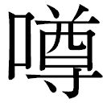
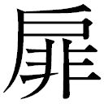
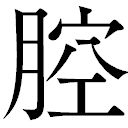
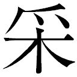

| 【大活字シリーズ】カラマゾフの兄弟 下 | |
| フョードル・ドストエフスキー | |
カラマゾフの兄弟《下》
フョードル・ドストエフスキー
中山省三郎訳
目次
第十篇 男の子たち
一 コォリャ・クラソートキン
二 幼児たち
三 小学生
四 ジューチカ
五 イリューシャの寝台を囲んで
六 早 熟
七 イリューシャ
第十一篇 兄イワン・フョードロヴィッチ
一 グルーシェンカのもとにて
二 病める足
三 小悪魔
四 讃美歌と秘密
五 あなたではない！
六 スメルジャコフとの最初の会見
七 二度目の会見
八 三度目の最後の会見
九 悪魔、イワン・フョードロヴィッチの悪夢
一〇 『それは、あいつが言ったんだ』
第十二篇 誤れる裁判
一 運命の日
二 危険な証人
三 医学鑑定と一フントの胡 桃
四 幸運は開ける、ミーチャに
五 不意の椿事
六 検事の論告、性格論
七 経過の概略
八 スメルジャコフ論
九 全速力で心理解剖。駆けり行くトロイカ。検事論告の結末
一〇 弁護士の弁論
一一 金はなかった。強盗ざたもなかった
一二 それに人殺しもなかった
一三 思想の姦通者
一四 百姓たちは頑張った
一 ミーチャを救う計画
二 噓が本当になった瞬間
三 イリューシャの埋葬。石のそばの演説
第十篇 男の子たち
一 コォリャ・クラソートキン
十一月の初めであった。この町に零下十一度という寒さが訪れて、それとともに霜柱が立っていた。夜になると凍 てついた地面に、さらさらした淡 雪 が落ちてきて、『膚を刺すようなからっ風』が雪を吹き上げこの町の寂しい通り、ことに市 の広場を吹きまくるのであった。朝になると、どんより曇ってはいるが、雪は降りやんでいた。広場からほど遠くない、プロトニコフ商店 の間近には、官吏クラソートキンの未亡人が住んでいる、小じんまりとして、内も外もかなりにさっぱりした一軒の小さな家があった。地方書記官であったクラソートキンは、すでに久しい以前、――今からほとんど十四年も昔に亡くなったが、未亡人はようやく三十になったばかりのまだなかなか美しい奥さんで、その小ざっぱりした家に、『自分の財産』で元気に暮らしているのである。優しいながらも、かなり陽気な性質の夫人は、正直に、それでいておどおどした気持で暮らしている。良 人 と連れ添っていたのは、ほんの一年ばかりで、一人の息子を生んで間もなく、十八の年に良人に死別したのであった。それ以来、つまり良人が死んでからというもの、彼女はわが子のコォリャの養育に一身を捧げて、この十四年のあいだ、われを忘れて可 愛 がってきたが、しかもなお、もしや病気にでもかかりはせぬか、風邪を引きはしないか、いたずらをしはせぬか、椅子へ上がって倒れはせぬかなどと、ほとんど毎日のように戦々兢々として胆をひやし通していたので、楽しみよりは苦労のほうがどんなに多かったかしれなかった。コォリャが小学校へあがり、やがてこの地の中学へ通うようになると、母親はさっそく、息子を助けてやるために、あらゆる学課を共に勉強して、彼と共に練習や復習をしたり、教師や、その細君たちのあいだに知己をこしらえたり、コォリャの同窓の生徒たちにまでちやほやしたりして、コォリャをかまったり、からかったり、打ったりしないようにと、彼らにお世辞をふりまいたものであった。ところが、それがために、かえって子供たちが母親ゆえに、実際にコォリャをからかったり、彼はお母さんっ子だといって、ひやかしたりし始めたのであった。しかし、コォリャはよく自分を守ることができた。彼は大胆な子で、間もなく級じゅうに、『恐ろしく強いやつだ』という評判が立ったほどであって、すばしこく、強情で、向こう見ずで、進取の気象に富んでいた。成績もいいほうで、算術と世界歴史にかけては、教師のダルダネロフをさえやりこめるという噂が広まったくらいであった。彼は鼻高々と、みんなを見おろしたが、友だちとしては善良で、けっして傲 慢 なところなどはなかった。学友たちの尊敬を当然のこととして受けてはいたが、しかもみずからは、きわめて友 誼 にあつい態度を保っていた。何よりも感心なのは、物事の度合いというものを知っていることで、時と場合によって、おのれを抑制するすべを心得ていて、また目上に対しては、ある一定の侵すべからざる最後の一線をけっして踏み越えなかった、――その一線を踏み越えては、もはやあやまちもあやまちとして見のがされず、ふしだらとなり、乱暴となり、わがままともなるのである。しかし、彼は機会さえあれば、なかなかすみにおけないいたずらをするほうで、どうにも手に負えない餓鬼大将のようないたずらをすることもあったが、それは、いたずらをするというよりは、むしろ詭 弁 を弄 したり、奇行を演じたり、途方もないばかなまねをして見せたり、乙に気どったりする場合が多かった。何はさておき、彼は非常に自尊心が強かった。そこで、母親をすら、自分に服従させて、ほとんど暴君のようにふるまっていた。母親は唯 々 諾 々 として、はやくから服従しきっていた。というものの、ただ息子が自分を『あまり愛していない』という考えだけにはなんとしても我慢がならなかった。彼女には絶えず自分に対してコォリャが、『つれなく』思えてならなかった。そのために、時としてはヒステリックな涙を流しながら、息子の冷淡さを責めるようなこともあった。少年はそれを好かなかった。彼に真情の発露を要求すればするほど、まるでわざとのように、いこじになっていった。もっとも、それはわざとではなく、何気なくそうなるのであって、――だいたい、それが彼の性質なのであった。それを母親が勘違いしているのである。コォリャは母を非常に愛していたが、ただ、彼の学生ことばで言うところの『犢 のような優しさ』を好かなかったのである。父親の形見の品のうちに戸棚が一つあって、その中に幾冊かの書物が保存されていた。コォリャは読書が好きだったので、もうその中の何冊かはひそかに読んでいた。母親も別にそれには気をつかわなかった。ただ、どうしてこの子は遊びに行かないで、戸棚の前に突っ立ったきり、幾時間も何かの本をのぞきこんでいるのだろうと、時おり怪 訝 に思うだけのことであった。こんな風にして、コォリャは、その年ごろでは、まだ読ませられないようなものまで読んでしまっていた。ところが、彼はいたずらをするにしても、ある限度を越すことを好まなかったのに、最近になって、真剣に母親を震えあがらせるようないたずらを始めた、――もっとも、別に不法行為を犯すというわけではないが、その代わり、途方もない、命知らずなことをやってのけたのである。ちょうどこの夏も七月の休暇に、母親と少年とは七十露里 離れた隣りの郡に住んでいる、ある遠縁の親戚へ一週間ばかりお客に行った。そこの主人は鉄道の駅に勤めていた（それはこの町から最も近い駅で、一か月の後に、イワン・フョードロヴィッチ・カラマゾフも、そこからモスクワへ出発した）。そこでコォリャはまず鉄道を子細に観察して、仕組みを研究し始めたが、その肚 は、家へ帰ったら中学の生徒たちのあいだで、自分の新知識を振り回してやろうというところにあった。しかるに、ちょうどその時、まだ幾人かの子供がその土地にいて、コォリャと遊び仲間になった。その中のある者は駅に、またある者はその付近に住まっていた、――どれも年端のゆかぬ連中で、十二から十五までぐらいの子供が六、七人落ち合ったのであるが、そのうちの二人はこの町から行っていた子供であった。子供たちは、いっしょに遊んだり、ふざけたりしていたが、そこに滞在して四日目か五日目に、愚かな若者たちのあいだにはまるで話にもならないことに、二ルーブルの賭けが成立した。というのは、みんなの中で最も年少なために、年上の者からいくぶん軽蔑されていたコォリャが、負けじ魂のためか、それとも向こう見ずな冒険心のためか、それはとにかく、十一時の夜汽車が通るとき、レールのあいだにうつむきに寝ていて、汽車が全速力で上を通過するまで、身動きもせずにいてみせると言いだしたことである。もとより、あらかじめ研究はしてみた、それによると、実際に、レールのあいだに身を延ばして、ぴったりと腹ばいにさえなっていれば、汽車は寝ている者の体にはさわらずに、もちろん、その上を通り越してしまうことがわかってきた。しかし、じっと寝ている気特はどうだろう！ だがコォリャは寝ていてみせると頑張ったのである。初めのうち、みんなはそれを笑って、噓つきだとか法 螺 ふきだとか言ってあざけったが、それがいっそう彼を躍起にさせたのであった。何よりも、十五になる子供たちが、あまりにも彼に対しておうへいな顔をして、『ちっぽけなやつ』として友だち扱いもしてくれないのが、癪 でならなかったのである。そこで、停車場から一露里 ばかり離れたところへ、夕方になって出かけることに話が決まった。その辺まで来ると、停車場を出た汽車が全速力を出すからである。その夜は月がなくて、暗いというよりは、黒いというほうが当たっているぐらいであった。コォリャは適当なころ合いを見計らって、レールのあいだに身を横たえた。賭けに加わったあとの五人は、土手の下の、線路ぎわの灌木の茂みの中に、胸もつぶれるような気特で、ついには恐ろしさと後悔の念にかられながら待ち受けていた。とうとう駅を出た汽車が、遠くから、ごうっと音を立てて来た。と、闇の中に二つの赤い灯が光りだして、間近に迫った怪物は轟々たる響きをあげている。『逃げろ、レールの外へ出ろ！』と子供たちは恐ろしさに胸もひしがれる思いで、灌木の中からコォリャに向かって叫びだした。が、もう遅かった。汽車は驀 進 して来ると共に、瞬く間に通り過ぎてしまった。子供たちはコォリャのそばへ駆け寄った。彼は身動きもせずに、横たわっていた。みんな彼を引っぱってみたりしてから、抱き起こしにかかった。と、不意に彼はむっくり起き上がって、黙ったまま、土手をおりて行った。下へおりると、彼はみんなを驚かせるために、わざと気絶したように寝ていたのだと言ったが、それからずっと後になって、母に打ち明けたところによると、全く彼は気を失っていたのであった。こんな風にして、『命知らず』という評判は永久不変なものになってしまった。彼は布のように青ざめた顔をして、駅近くの家へ帰って来た。あくる朝、軽微な神経性の熱を出したが、しかし気持は非常に朗らかで、さも楽しげに、満足そうであった。この事件は、すぐにではなかったが、やがてこの町にも伝わり、中学でも取りざたされて、ついに学校当局の知るところとなった。しかし、この時コォリャのお母さんが駆けつけて、わが子のために学校当局に泣きついた結果、敬意を一身に集めている勢力家たる教師ダルダネロフが、彼をかばって懇請してくれたおかげで、この事件は全然なかったもののように不問に付されてしまったのである。このダルダネロフは独身者で、まだそれほど年はとっていなかったが、もう長年のあいだ、熱烈にクラソートキナ夫人を恋していた。ちょうど一年ばかり前に一度、彼は恐怖の念とデリケートな心づかいのために、絶え入るような思いをしながら、ひどくかしこまって、結婚の申しこみをしたものであった。ところが、この申しこみを承諾するのは、わが子を裏切ることになると考えた彼女は、きっぱりそれを断わってしまった。とはいえ、ダルダネロフのほうでは、ある神秘な徴侯によって、この美しい、しかしあまりにも貞淑な優しい未亡人が、まんざら自分を嫌ってもいない、と空想する権利をあるいは持っていたのかもしれない。ところで、コォリャのこの気ちがいじみたいたずらが、期せずして一方の活路を開くことになり、その庇 護 に対して、ダルダネロフに遠まわしにではあるが、希望の暗示が与えられたのである。しかし、ダルダネロフ自身も、純潔で上品な君子だったので、さし当たりこれだけでも、彼の幸福を満たすに十分であった。彼はコォリャを愛してはいたが、御機嫌をとるのは卑屈なことだと考えたので、教室では彼に対して厳格で、やかましかった。コォリャのほうでも、尊敬を失わぬ程度の距離を保って彼に接し、課業も立派に準備をして、級では二番の席を占めていたが、ダルダネロフに対しては、そっけなく応持していた。そこで級友の誰も彼もが、世界歴史にかけては、コォリャはダルダネロフをさえも『やりこめる』だけの力がある、と固く信じきっていた。実際、コォリャはあるとき、彼に向かって、トロイの創建者は誰か、という質問を発したことがあった。その質問に対して、ダルダネロフは、ただ民族のことや、その移動の顚 末 や、太古のことや、伝説の話などを、総括的に答えただけで、何びとが、つまり、いかなる人物がトロイを創建したかということについては、どうにも答えることができなかった。それだけならばまだしも、ついには、どうしたわけか、その質問をおもしろ半分の不まじめなものと認めたほどであった。しかし、子供たちは依然として、ダルダネロフがトロイの創建者の何びとなるかを知らないものと確信して疑わなかった、ところがコォリャは、父の遺品の書棚に保存されてある、スケラグドフの著書で、トロイの創建者のことを読んでいたのである。結局、子供たちのすべてが、はたしてトロイを創建したのは何者だろうかという問題に、興味をいだくに至ったのであるが、コォリャは自分の秘密を打ち明けようとはしなかった。そこで、物知りとしての彼の評判はいよいよゆるぎのないものとなったのである。
鉄道事件があってからは、母に対するコォリャの態度にいささかの変化が現われた。アンナ・フョードロヴナ（クラソートキナ未亡人）は、わが子の手柄話を耳にした時、驚きのあまりほとんど気が狂わぬばかりであった。彼女は激しいヒステリイの発作に襲われて、数日のあいだ、間欠的に起こったので、コォリャも、今度は本気にびっくりして、これからはけっしてあんないたずらは、二度とけっしていたしませんからと、立派に誓いを立てた。聖像の前にひざまずいて、クラソートキナ夫人の要求するとおりに、亡き父の思い出にかけて誓ったのであった。その時ばかりは『勇敢な』コォリャも、『感きわまって』六つくらいの子供のように、おいおいと泣きだした。母と子とは、その日一日、お互いに飛びついては抱き合いながら、身を震わせて泣いた。あくる朝、眼をさましたコォリャは、以前どおりの『つれない』子供であったが、それでも前よりは口数も少なく、つつましやかに、厳粛で、考え深くなっていた。もっともひと月半もすると、彼はまたいたずらの仲間に加わって、町の治安判事にまで名前を知られるに至ったが、そのいたずらはもはや全く別種の、そのうえ、滑稽で、ばかばかしいものであった。それに、これは彼自身が演じたいたずらではなくて、ただ巻添えをくったに過ぎなかったのである。しかしこれは、いずれあとで述べることにしよう。母は相も変わらずおどおどとして心を痛めていたが、ダルダネロフにとっては彼女の心痛が増せば増すほど、いよいよ希望が確実さを加えるのであった。ここで注意を要するのは、コォリャがこの方面からもダルダネロフの心を見抜いて、観察眼を働かせていたために、もちろん、こうした彼の『感情』に対して、深い侮 蔑 をいだいていたことである。以前はよく、ダルダネロフの肚 の中はちゃんとわかっているといわぬばかりのことを遠回しにほのめかしながら、こうした自分の侮蔑の念を無遠慮に母の前で口に出すことさえあった。しかし、鉄道事件このかた、彼はこの点に関しても自分の態度を改めた。もうどんなに遠回しの言い方であろうとも、あてこすりめいたことはあくまでも慎んで、母の前ではダルダネロフのことを、敬って話すようになった。敏感なアンナ・フョードロヴナは、すぐにそれを理解して、心の中に限りない感謝の念をいだくのであったが、その代わり、もしも、コォリャのいる前で、お客か誰か第三者が、うっかりダルダネロフのことを口に出そうものなら、夫人はたちまち恥ずかしさのために、ばらのように顔を赤らめるのであった。そういうとき、コォリャは苦い顔をしながら、窓のほうへ眼をそらすか、ないしは自分の長靴があくびをしていはしないかと、子細に点検してみるか、それとも荒々しく『ペレズヴォン』を呼び立てるかするのであった。ペレズヴォンというのはひと月ほど前に、不意にどこからか連れて来た、毛のもじゃもじゃした、かなり大きな、きたない犬で、コォリャはそれを家へ引っぱって来ると、どうしたわけか、秘密に部屋の中ばかりに置いて、友だちの誰にもいっさいそれを見せなかった。彼は恐ろしく暴君ぶりを発揮して、その犬にいろいろの芸を教えこんだ。ついには、この哀れな犬は、主人が学校へ行っている留守じゅうはうなり通しているのに、彼が帰って来ると、喜んで、きゃんきゃんいったり、狂気のようにはね回ったり、主人に仕えたり、地面に倒れて死んだまねをしてみせたりなどして、要するに、ただ嬉しさと感謝の情のほとばしるままに、別に要求されるわけでもないのに、仕込まれた芸をありったけ演じて見せるほどになっていた。
ついでに忘れていたことを言っておくが、すでに読者の熟知しておられる、休職二等大尉スネギレフの息子のイリューシャが、父親を『糸 瓜 野 郎 』と言ってからかわれたのに憤慨して、ナイフを友だちの股に突き刺した、その当の友だちこそほかならぬコォリャだったのである。
二 幼児たち
さて、この寒さの厳しい、北風の吹きすさむ十一月の朝、コォリャ・クラソートキン少年は家の中にじっと坐っていた。その日は日曜で、学校は休みであった。しかし、もう十一時を打ったので、彼は是が非でも『ある非常に重大な用件のために』、表へ出かけなければならなかった。それにしても、家には一人きりで、留守居をしていたのであった。なにしろ、この家に住んでいる目上の人たちが、ある特別な、変な事情のために、ことごとく外出していたからである。孀 のクラソートキナの家には、彼女が自分で使っている住まいから玄関を隔てて、もう一つ、この家でただ一つ貸間があった。これは小さな二間続きの部屋で、二人の幼い子供を連れた医者の夫人が間借りしていた。この夫人はアンナ・フョードロヴィッチと同年輩で、彼女とは大の仲よしであった。主人の医者は、もう一年も前に、どこかへ旅へ出て、なんでも初めはオレンブルグ、やがてタシケントへ行ったとかいうが、もうかれこれ半年ばかりも、なんの音さたもなかった。そこで、もしも、クラソートキナとの友情が、いくぶんでも、良人に見すてられた夫人の悲しみを和らげてくれなかったら、彼女はその悲しみゆえに、泣きの涙に暮れて、必ずやあの世の人となったかもしれないのである。ところで、運命はあくまでも彼女を虐 げなければやまないかのように、その晩、土曜から日曜へかけて、医者の夫人にとって、たった一人きりの女中のカテリーナが、いきなり、全くだしぬけに、朝までに赤ん坊を生むつもりだと言い出した。どうして、前もって誰ひとり気がつかなかったのか、それはみんなにとってほとんど奇跡ともいうべきものであった。いたく驚いた夫人は、まだ間に合ううちに、この町のさる産婆がこういう場合のために建てた産院へ、カテリーナを連れて行こうと決心した。夫人はこの女中をひどく大切にしていたので、すぐにこの計画を実行して、彼女を産院へ連れて行ったばかりか、そこに残って、看護までしてやった。やがて、朝になると、どうしたわけか、クラソートキナ夫人までが親しく手を下して、医者の夫人に手伝ってやらなければならなかった。クラソートキナ夫人はこの場合、誰かに何かを頼んでやったり、自分もまた一種の援助を与えることができた。かようなわけで二人の婦人は留守になり、クラソートキナ夫人の女中アガフィヤは市場へ出かけていたので、コォリャは一時、『おちびさん』――つまり、家においてけぼりを食った医者の男の子と女の子とのお守り役を引き受けたのであった。コォリャは家の番をするだけなら、少しもこわいとは思わなかった。それにペレズヴォンもついていることだ。ペレズヴォンは玄関にあるベンチの下に、『じっと動かないで』、うつむきに寝ておれと言いつけられていたので、家じゅうを歩き回っているコォリャが、玄関へはいって来るたびに、首をぶるぶる震わせて、御機嫌をとるかのように、尻 尾 で強く二度ばかり床をたたくのであった。けれど、悲しいかな、来いという口笛は鳴らなかった。コォリャが、おどしつけるように、きっとにらむと、犬は可 哀 そうに、またもや、おとなしく感覚がなくなったかのように身をすくめるのであった。ところで、何かコォリャを当惑させるものがあるとすれば、それはただ、この『おちびさん』たちだけなのである。もとより、彼はカテリーナに関する思いがけない出来事に対して、深い侮蔑の念をいだいたが、あとに残された『おちびさん』たちを可愛がることは非常なもので、もう何か少年読本を持って来てやったくらいであった。八つになる姉の子のナスチャは、もう字が読め、弟のおちびの七つになるコスチャは、ナスチャが読むのを聞くのが大好きであった。もちろん、クラソートキンはもっとおもしろく、二人の子供を遊ばせることもできたであろう、つまり、二人を並んで立たせて兵隊ごっこをしたり、家じゅう駆け回って隠れん坊をするといったように。そうしたことは、前にも一度ならず、したこともあり、また気が進まないわけでもなかった。だから、一度などは学校で、クラソートキンは自分の家で借家人の子供たちと、お馬ごっこをして遊んでいる、側馬のまねをして跳ね上がったり、首をかがめたりする、という が立つほどであった。が、クラソートキンは、もしも、自分が同年輩の者、つまり十三の子供といっしょにお馬ごっこをしたのであれば、たしかに『今どき』、不名誉なことには相違ないが、自分がそれをするのは『おちびさん』たちのためであって、自分が彼らを愛していればこそである、それに、自分の感情については何びとの干渉をも容赦することはできないと弁じ立てて、傲 然 とこの攻撃を受け流したものであった。その代わり、『おちびさん』のほうでも、二人とも彼を崇拝していた。
しかるに、今はそんな遊戯どころではないのである。彼は今、非常に重大な、一見、ほとんど秘密に近いある用件を控えていたのである。そのうちにも、時はどんどんたっていって、子供たちを任せて出かけようと思う相手のアガフィヤは、やはりまだ、市場から帰って来ないのだ。彼はもう幾度も玄関を通り抜けて、医師夫人の部屋の を開けながら、不安そうに、『おちびさん』たちを眺めた。彼らはコォリャの言いつけたとおりに、坐って本を読んでいたが、彼が を開けるたびに、黙ったまま彼に向かって大きく口をあけて、にっこり笑った。今にも彼が入って来て、何かすばらしくおもしろいことをしてくれそうなものだと待ち構えていたのである。けれど、心に不安を感じているコォリャは中へはいろうとはしなかった。とうとう十一時が鳴った。そこで彼は最後の肚を決めて、もう十分たっても、あの『いまいましい』アガフィヤが戻って来ないようならば、彼女の帰りを待たずに、必ず、出かけようと決心した。もちろん、その前に『おちびさん』たちからは、自分がいないからといってびくびくしたり、いたずらをしたり、こわがって泣いたりしないという、言質をとってのことである。こんな思案をめぐらしながら、彼は海豹 か何かの毛皮の襟をつけた綿入れの冬外套を着こむと、肩に鞄をかけた。そして、『こういう寒い日に』外へ出るときには、必ず上靴をはいて行くようにと、母が前からしょっちゅう哀願しているにもかかわらず、玄関を通りながら、その上靴を侮蔑の眼で見やっただけで、長靴ばきのまま出かけて行った。ペレズヴォンは彼が身じたくをしているのを見ると、いらいらしているように、全身を震わせて、尻尾で激しく床をたたきながら、悲しげな鳴き声をすら漏らした。しかし、コォリャは自分の犬が、こんなに一心にあとをついて来ようと、あせっているのを見て、こんなことでは、たとえ一分間でも、訓練の害になると考えたので、やはりベンチの下に寝させておいて、やがて玄関へ出る をあけた時になって、いきなり口笛を吹いた。犬は狂気のように跳ね起きると、大喜びで、先に立って駆け出した。コォリャは玄関を通りがけに、『おちびさん』たちの部屋の をあけて見た。二人は前のように、テーブルに向かって坐っていたが、もう本を読むのをよして、何やら躍起になって言い争っていた。この子供たちは何か興味をそそるような世の中の問題にぶつかると、よく、互いに議論を闘わすことがあったが、そんなときには年上なだけに、ナスチャがいつも勝つのであった。コスチャのほうは、もしも、姉の言い分に同意することができないときには、たいていいつもコォリャ・クラソートキンのところへやって来て、訴えるのが常であった。コォリャが判決を下したことは、彼ら二人にとっては、絶対的な宣告となるのであった。このときの『おちびさん』たちの論争は、いささかコォリャの興味をそそったので、彼は戸口に立ち止まって聞き耳を立てた。子供たちは彼が聞いていると思うと、いよいよ興奮して論争を続けた。
「そんなことないわよう、あたしそんなこと、どうしても本当にしないわ」と、ナスチャがひどく熱心にしゃべり立てた、「産婆さんがちっちゃな赤ちゃんを、キャベツ畑の畦 のあいだから見つけて来るなんて、今はもう冬だもの、どこにも畦なんかありやしないわ、だから産婆さんだって、カテリーナのところへ女の子をつれて来るはずなんかないじゃないの」
「ひゅっ！」とコォリャはひそかに口笛を吹いた。
「でなければ、こうかもしれないわよ、産婆さんはどこかから、赤ちゃんを連れて来るんだけど、お嫁に行った人のところへしか持って来ないんだわ」
コスチャはじっとナスチャを見つめながら、深く考えこんで耳を傾け、何やら思いめぐらしていた。
「姉ちゃん、おまえ、ほんとにおばかだなあ」と、彼はしっかりした調子で、落ち着き払って言った、「だってカテリーナはまだお嫁になんか行かないのに、どうして赤ん坊ができるのさ？」
ナスチャは恐ろしく激 昻 してきた。
「あんた、なんにもわからないわよ」と彼女はいらいらしながらさえぎった、「もしかしたら、あれには旦那さんがあったんだけれど、いまは牢にはいっているのかもしれないわよ、だからあれは赤ん坊を生んだのさ」
「ほんとに、カテリーナの旦那さんは、牢にはいってるの？」と、コスチャがむきになって聞いた。
「それとも、こうなのよ」と、ナスチャは最初の仮定を忘れて、すっかり打っちゃってしまって、あわててさえぎった、「あれには旦那さんなんかないの、それはあんたの言うとおりよ、だけど、あれはお嫁に行きたいもんだから、お嫁に行くことばっかり考えるようになったんだわ、そしていつも考え考えして、あんまり考えたもんだから、とうとう旦那さんの代わりに赤ちゃんができてしまったんだわ」
「ああ、そうなの？」と、すっかり説き伏せられてコスチャが同意した、「姉ちゃんたら、初めからそう言わないんだもの、僕にわかりっこないじゃないか」
「おい、おちびさん」と、部屋の中へ一歩踏みこみながら、コォリャが口をきった、「どうも君たちは危ない連中だなあ！」
「ペレズヴォンもいっしょにいるの？」と、コスチャは歯をむき出して笑うと、ぱちぱちと指を鳴らしながら、ペレズヴォンを呼び始めた。
「おちびさんたち、僕はね、困ったことがあるんだよ」とコォリャはものものしく言いだした、「君たち、僕を助けてくれないといけないよ、アガフィヤはきっと脚を折ったに違いないんだ、だって、いまだに帰って来ないんだもの、てっきりそうに決まってる。ところが、僕はどうしても出かけなけりゃならないんだ、君たち僕を出してくれるか、出してくれないかねえ？」
子供たちは心配そうに、お互いに顔を見合わせた。ほほえみを浮かべた顔が不安の色を帯びてきた。けれど二人は、はたして、何を要求されているのか、まだはっきり悟ることができなかった。
「僕かいなくなっても、いたずらをしないだろうね？ 戸棚へのぼって、足を折ったりしないね？ 二人きりでいるのがこわくって泣きだしゃしないかな？」
子供たちの顔にはひどく情けなさそうな色が浮かんだ。
「その代わり、僕がいい物を見せてあげるよ、銅の大砲なんだよ、ほんとの火薬を使って撃つことができるんだよ」
子供たちの顔はたちまち晴れ晴れしくなってきた。
「その大砲を見せてよ」と、顔じゅうを輝かせながらコスチャが言った。
クラソートキンは自分の鞄へ片手を突っこんで、中から小さな青銅の大砲を取り出して、それをテーブルの上へ置いた。
「そうら、これだよ！ 御覧、車がついてるだろう」彼は玩具の大砲をテーブルの上で転がした、「撃つこともできるんだよ、霰 弾 をこめて、撃てるんだよ」
「そして殺せるの？」
「誰だって殺せるさ、ただ狙いさえすれば」こう言って、クラソートキンは、どこへ火薬をつめて、どこへ霰弾を入れるかを説明したり、火門の形をした小さな穴を見せたり、反動のあることなどを話したりした。子供たちは激しい好奇心をいだきながら聞いていた。ことに彼らを驚かしたのは、反動があるという話であった。
「じゃ、火薬を持ってるの？」とナスチャが聞いた。
「持ってるとも」
「火薬を見せてちょうだいよう」と懇願するような微笑を浮かべながら、彼は甘えてことばじりを引っぱった。
クラソートキンはまた鞄の中に手を突っこむと、小さいガラス壜 を一つ取り出したが、中には本当の火薬が少しはいっていた。また紙包みの中からは大粒の霰弾が少し出て来た。彼はガラス壜の栓を抜いて、火薬を少し掌へ出して見せさえもした。
「ほうらね、ただどこにも火の気があってはいけないんだ、でないと、どかんと爆発して、僕らはみんな殺されてしまうから」クラソートキンは効果を強めるためにこう警戒した。
子供たちは畏 敬 と恐怖と、さらにひとしおの興味を寄せて、火薬をためつすがめつ眺めた。しかしコスチャには、霰弾のほうがよけいに気に入った。
「霰 弾は燃えないの？」と彼は尋ねた。
「霰弾は燃えやしないよ」
「少し霰弾をちょうだい」と彼は嘆顧するような声で言った。
「少しあげよう、そうら、だけど僕が帰って来るまでは、お母さんに見せちゃいけないよ、でないと、お母さんはこれを火薬だと思って、びっくりして死んじゃうからね、そして君たちは痛々をされるよ」
「お母さんはわたしたちを鞭 で打ったことなんか一度もなくってよ」と、ナスチャはすぐにこう注意した。
「わかってるよ、僕はただことばにあやをつけるために言っただけさ、だからけっしてお母さんに噓 をついちゃいけないよ、だけど今度だけ――僕が帰ってくるまではね。じゃあ、おちびさん、僕行ってもかまわないかい、どう？ 僕がいなくたって、こわがって泣きやしないだろう？」
「泣い、ちゃう、よう」と、コスチャはもう今にも泣きだしそうに、ことばじりを長く引いた。
「泣くわ、きっと泣きだすわよ！」と、ナスチャもものおじしたように口早に相づちを打った。
「ええ、しようのない子供たちだなあ。ほんとに君たちはけんのんな年ごろだよ、どうもしかたがない、雛 っ子、まあ君たちのとこに坐っているとしても、いったいいつまでいればいいんだろう？ だって、時間がさ、時間がさ、ああ！」
「ね、ペレズヴォンに死んだまねをさしてちょうだいよ」とコスチャが頼んだ。
「うん、どうもしかたがない、いよいよペレズヴォンでもだしに使わなくっちゃあ。 Ici ペレズ・ヴォン！」そこでコォリャは犬に命令を下し始めた。すると犬は知っている限りの芸当をして見せた。
それは毛並みの粗 い犬で、普通の番犬くらいの大きさがあり、青味がかった灰色の毛色であったが、右の眼がつぶれて、左の耳はどうしたわけか裂けていた。ペレズヴォンはくんくん鳴いたり、跳ねたり、お使いをしたり、後足で歩いたり、四足を上へあげてあおむけに寝て、死んだようにじっとしていたりした。この最後の芸当をやっている時に、ドアが開いて、クラソートキナ夫人の女中のアガフィヤが閾 の上に姿を現わした。太っちょの、痘痕 のある四十女で、しこたま買いこんで来た食料品の籠をさげて、市場から帰って来たところである。彼女はそこに立ち止まると、左手に籠をさげたまま、犬を眺めにかかった。コォリャはあれほどアガフィヤを待っていたのに、犬に芸当を中途でやめさせず、お定まりの時間だけペレズヴォンに死んだまねをさせてから、はじめて犬に向かって口笛を吹いた。犬は跳ね起きて、自分の務めを果たした喜びに、ぴょんぴょん跳ね回った。
「こうれ、ペス！」とアガフィヤは諭 すような調子で言った。
「おい、牝 、おまえはなんだってこんなに遅くなったんだ？」と、クラソートキンはおどしつけるように尋ねた。
「牝 だって、へ、ちびのくせして！」
「ちびだって？」
「ええ、ちびだとも、いったいわたしが遅くなったからって、それがおまえさんにどうしたというんだね、遅くなったのには遅くなっただけのわけがあるんだよ」とアガフィヤは暖 炉 のまわりをあちこちしながらつぶやいたが、その声は少しも不満らしくも、腹立たしそうでもなかった。それどころか、かえって、快活な坊っちゃんと、むだ口をたたきあう機会の得られたことを喜ぶかのように、ひどく満足そうな声であった。
「ね、おい、おっちょこちょいの婆さん」と、コォリャは長椅子から立ち上がりながら口をきった、「おまえはこの世にありとあらゆる神聖なものにかけて、いや、そのうえに、もっとほかの物にかけて、僕のいないあいだ、このおちびさんたちを油断しないで見張ってくれるって、誓うかい？ 僕は表へ出かけるんだ」
「だって、なんでおまえさんに誓いなど立てるんだね？」とアガフィヤは笑いだした、「そんなことしなくたって、ちゃんと見てますよ」
「いや、いけない、おまえの魂の永遠の救いにかけて誓わなくちゃ、でないと、僕は出かけないよ」
「それなら出かけなさんな。わたしの知ったことじゃないよ、表はひどい凍てだから、家にじっとしていなさるがいいよ」
「おちびさんたち」とコォリャは子供たちに向かって、「じゃね、僕が帰って来るまで、この女が君たちといっしょにいるからね。それともお母さんの帰るまで、だって、お母さんはもうとうに帰って来る時分なんだから。それから、君たちに朝御飯も食べさせてくれるよ。この人たちに何か食べさせてくれるだろう、アガフィヤ」
「そりゃあげますとも」
「じゃ、さようなら、おちびさんたち、僕はこれで安心して行かれるよ、だがね、おい、婆さん」と、彼はアガフィヤのそばを通るときに、小声でもったいらしく言った、「また例のあさはかな女の癖を出して、子供たちにカテリーナのことなんか、かれこれ吹きこむんじゃないぜ、子供の年を考えてやらなくっちゃあ。Ici , ペレズヴォン！」
「ふん、さっさと出かけたらいいじゃないか！」とアガフィヤはもう腹を立てて、荒々しく言った、「おかしな子だよ！ そんなことを言って、たたいてもらいたいんならたたいてあげるに」
三 小学生
しかし、コォリャはもうそんなことには耳を傾けなかった。彼はやっとのことで出かけることができたのだ。門を出ると、彼はあたりを見回して、肩をすくめた。やがて、『ひどい凍てだよ！』と口走って、通りをまっすぐに歩いて行った。それから一つの横町を右へ折れて市の広場をさして進んで行った。広場へ出る一つ手前の家まで来ると、彼は門のそばに立ち止まって、隠しから呼び子を取り出して、約束の合い図でもするように力いっぱいそれを吹き鳴らした。すると、一分も待たないうちに、耳門から不意に血色のいい男の子が飛び出して来た。年のころ十一くらい、やはり暖かそうな服装で、さっぱりしたほとんどぜいたくなくらいな外套をまとっていた。これはスムーロフという予科の少年で（そのときコォリャ・クラソートキンはそれより二年上級であった）、ある裕福な官吏の息子であったが、その両親が彼に、名うての向こう見ずなわんぱく者としてのコォリャと交わることを許さなかったらしく、このときもスムーロフはこっそり抜け出して来たもようであった。このスムーロフは、もし読者にして記憶しておられるならば、ふた月前に溝の向こうからイリューシャに石を投げつけた例の子供たちの一団に交じっていた一人で、そのときイリューシャのことを、アリョーシャに物語った少年である。
「僕はもうまる一時間も君を待ってたんですよ、クラソートキン君」と、スムーロフはきっぱりした態度で言った。子供たちは広場のほうへ歩き出した。
「遅くなったんだよ」とクラソートキンが答えた、「いろんなことがあって、ところで君、僕といっしょにいたりして叱られやしないかい？」
「ううん、そんなことたくさんだ、僕が叱られるもんですか、ペレズヴォンも連れて来たの？」
「連れて来たよ！」
「それで、やっぱりあすこへ？」
「ああ、やっぱりあすこへ？」
「ほんとに、ジューチカがいたらな！」
「ジューチカのことは言いっこなし、ジューチカはもういないんだ、ジューチカは暗々裏に消えっちまったんだ」
「ああ、こうしちゃいけないかしら」スムーロフはこう言って急に立ち止まった、「イリューシャの話では、ジューチカもやっぱりペレズヴォンのようにむく毛で、青味がかった灰色の犬だったそうだから、それがそのジューチカだって言っちゃいけないかしら、ひょっとしたら、本当にするかもしれないよ」
「君、第一、噓をつくのはいけないよ。たとえ良いことのためにだって、噓をつくもんじゃないよ。これが第二だ、それよりも君はあすこで、僕が行くってことをしゃべりやしなかったろうね」
「とんでもない、僕にだってわかってますよ。でもペレズヴォンではあいつが承知しませんよ」スムーロフはほっとため息をついた、「だって、あの親爺がね、あの『糸 瓜 』の大尉がさ、僕たちにこう言うんですよ――今日鼻の黒い本当のメデリャン種の子犬をもらって来てやるって、あの人はそれでもって、イリューシャの機嫌をなおすつもりなんだけれど、とても怪しいものだね」
「だが、やっこさんはどうなの、イリューシャは？」
「ああ、いけないんですよ、いけないんですよ！ 僕あれは肺病だと思う、気は確かなんだけれど、変な呼 吸 をするのさ、どうも呼吸のぐあいが悪いんですよ、このあいだも手を引いて歩かせてくれって言うから、靴をはかせてやると、ひと足歩きかけたばかりで、倒れてしまうんですからね。そのくせ、『ああ、父ちゃん、これは前の悪い靴で、もうせんから歩きにくいって、僕そう言ってたじゃありませんか』なんて言うんですよ。靴のせいで倒れるんだと思ってるんだけれど、あれは体が弱ってるからなんですよ。もう一週間とはもちませんね。ヘルツェンシュトゥーベが往診に来るんですよ。今あの家は金持ちですからね、とてもお金をどっさり持ってますよ」
「悪党だね」
「誰が悪党なの？」
「医者を初め、医薬を業とする有象無象どものことさ、むろん特に一般的に言えばだよ。いったい僕は医学というものを否定するね、むだな施設さ。僕はしかし、今にすっかり調べあげるよ。それにしても、君らはなんというセンチメンタルなことをおっ始 めたんだい？ 君たちは級 じゅうであすこへ行ってるようじゃないか？」
「級じゅうってわけじゃないの、いつも十人ばかり僕らの仲間があすこへ毎日行くんです、それならなんでもないでしょう」
「だが、これについて僕に不思議でたまらないのはアレクセイ・カラマゾフの役回りだよ、やっこさんは自分の兄貴は、明 日 か明後日 あたり、あの犯罪のために裁判をされようというのに、どうしてあんなに、子供たちといっしょにセンチメンタルなまねをしている暇があるんだろう？」
「何もセンチメンタルなことなんかあるもんですか、そんなことを言う君だって、今イリューシャと仲なおりに行くところじゃありませんか」
「仲なおりだって？ おかしな言い方だね、だけど、僕は誰にだって自分の行ないを解剖させることを許さないよ」
「でも、イリューシャは君が行ったら、きっと喜ぶよ！ 君が来ようなんて夢にも思っていないんだからね。なぜ君は、なぜこんなに長いあいだ、行ってやろうとしなかったの？」とスムーロフは興奮して叫んだ。
「可愛らしいお坊っちゃん、それは僕のことで、君の知ったことじゃないよ。僕は自分から進んで出かけたんで、それが僕の意志なのさ。ところが君たちはみんなアレクセイ・カラマゾフに引っぱられてあすこへ行ったんだから、そこに相違があるんだよ。それに僕が行くのは、けっして、仲なおりのためなんかでないかもしれないんだ、第一、仲なおりなんてばからしい言い方だよ」
「ちっともカラマゾフのせいじゃない、けっして。僕らは自分で行きだしたんだよ、そりゃあ、初めはカラマゾフといっしょに行ったけれど、何もそんな、ばかげたことなんてちっともありゃしない。初めに一人行き、次にまた一人という風に行ったのさ、僕たちが行ったら、あの親爺はとても喜んでたよ。ねえ、もしイリューシャが死にでもしたら、あの親爺さんはもう気ちがいになってしまうよ、親爺さんはイリューシャが死ぬってことを知ってるのさ、で、僕らがイリューシャと仲なおりしたことが、とっても嬉しかったんだよ。イリューシャはね、君のことを聞いただけで、ほかに何も言いやしなかったよ、聞くと、それっきり黙りこむのさ。でも、親爺さんは気ちがいになるか、でなければ首を縊 るね、あの人は前にも気がふれてたんだからね、あの人は高潔な人なんだが、あの時は間違いだったの、あの時あの人を打ったのは、みんなあの親殺しが悪いんだから」
「だが、どちらにしても、カラマゾフは僕にとっては謎だね、僕はとうにあの男とは知り合いになれたんだけれど、場合によると僕はつんとすますのが好きだからね、それに僕はあの男についてある意見をまとめあげたんだけれど、それを、もう少し突きつめて、はっきりさせなくてはならんのだ」
コォリャはもったいぶって口をつぐんだ。スムーロフも同じように口をつぐんだ。スムーロフはもとより、コォリャ・クラソートキンを尊敬しきっていたので、彼と対等にふるまおうなどということは思いも及ばぬことであった。今や彼はコォリャに対して、ひどく興味を感じていた、というのはコォリャが『自分から進んで』出かけるのだと言ったからには、そこに何かしら、コォリャが今日という今日に限って急に出かけることにしたについての、いわくがあるに相違ないと考えたからである。二人は市 の広場を歩いて行ったが、そこには近在から来た荷車がたくさん置いてあり、追い立てられた家禽ががやがや群がっていた。町の女房たちは、めいめいの日覆の下で、巻きパンや糸や、その他いろんな物を売っていた。こうした日曜日の人寄せを、この町では無邪気に定期市と呼んでいたが、この定期市は一年に幾度となくあった。ペレズヴォンはあちこちで何かの匂いを嗅ぎ分けるように、絶えず右左へそれながら、上々の機嫌で駆け回っていた。他の犬に出会うと、非常に乗り気になって、犬仲間のあらゆる作法に従って、お互いに嗅ぎ回しあうのであった。
「僕はこんなむき出しの所を観察するのが好きなんだよ、スムーロフ君」と、不意にコォリャが話しだした、「君は犬が出会ったとき、お互いに匂いを嗅ぎあうのに気がついたろう？ あれにはね、ある共通な自然の法則があるんだよ」
「そうね、なんだか、おかしな法則がね」
「いや、ちっともおかしかないさ、そりゃあ、君が間違ってるよ、偏見で固まった人間の眼からどう映ろうとも、自然の中にはおかしいものなんか一つもないんだよ、もしも、犬に考えたり批評したりすることができたなら、彼らにもきっと、その命令者たる人間同志の社会関係に、仮りに、より以上でないまでも、これと同じくらいに滑稽なところを発見するに違いないよ、――より以上でないにしてもさ、僕がこんなことをくり返して言うのはね、僕たち人間のほうがはるかに多くのばかげたまねをやっていることを固く信じているからさ、これはラキーチンの考え方だが、実際すばらしい意見だね、僕は社会主義者なんだよ、スムーロフ君」
「社会主義ってなんなの？」とスムーロフが聞いた。
「それはね、もしも、すべての人間が平等になって、みんなが一つの共有の財産を持っていれば、結婚なんかということがなくなってしまって、宗教だのいろんな法律なんてものは、誰でも好き勝手なものを選ぶことができるんだ、まあ、その他なんでもそういった風になるのさ。だが、君はまだ年が行かないから、わからないんだよ、君には早すぎるのさ。寒いね、しかし」
「そうね、十二度ですよ、さっきお父さんが寒暖計を見たの」
「ねえ、スムーロフ君、君は十五度だの、十八度だのという真冬よりも、たとえば、このごろのように、不意に十二度くらいの、凍てが突然やって来る冬の初めの、雪もまだたくさんは降らない時分のほうが、かえって寒いってことに気がついたろうね。これはね、つまり人間がまだ寒さに慣れないからなんだよ。人間というものはなんでも習慣によるものだよ、国家のことや、政治のことでさえそうなんだ。習慣ってものが非常な原動力なんだよ、それはそうと、あれはなんておかしな百姓だろうね」
コォリャは毛皮外套を着た、背の高い一人の百姓を指さしたが、それは人のよさそうな顔をして、自分の荷車のそばで、手袋をはめた手を寒さしのぎに、ぱたぱたと打ち合わせているのであった。彼の長い亜麻色の顎 鬚 は寒さのためにすっかり霜におおわれていた。
「この百姓の鬚は凍ってるぜ！」と、コォリャはそのそばを通りながら、大声でからかうように叫んだ。
「たいてい誰のでも凍ってるんだよ」と、百姓は物静かにしかつめらしくつぶやいた。
「からかうのはおよしよ」とスムーロフが注意した。
「大丈夫、怒りゃしないよ、これはお人好しだから、さよなら、マトヴェイ」
「さよなら」
「おやおや、ほんとにマトヴェイなのかえ？」
「マトヴェイだよ、おまえさん知らなかったのかい？」
「知らなかったよ、僕はあてずっぽうに言ってみただけさ」
「へえ、なんちゅうこんだ、学校生徒だんべ？」
「生徒だよ」
「じゃ、先生に打 たれるのかな？」
「そうでもないがね、まあいいかげんよ」
「痛かんべな？」
「痛くないわけはないよ！」
「ええ、なんちゅう世の中だ！」そう言って百姓は心の底からため息をついた。
「さよなら、マトヴェイ」
「さよなら、おめえさんは可愛らしい坊っちゃんだのう、ほんとに」
少年たちはさらに歩を進めた。
「あれはいい百姓だよ」とコォリャはスムーロフに向かって話し始めた、「僕は平民に話しかけるのが好きなんだ、そして彼らを公平に認めてやるのが、いつも嬉しいんだよ」
「なんだって君はあの男に僕らが打 たれるなんて噓をついたの？」とスムーロフが聞いた。
「あの男だって少しは慰めてやる必要があるさ！」
「どうしてさ！」
「ね、スムーロフ、僕はひと言ですぐわからないで、聞き返されるのが嫌いなのさ。なかにはどうしても、わからせることのできないような連中があるからね、百姓たちの頭では、生徒とはぶたれる者に決まっていて、ぶたれなければならないものなんだ。もしも、生徒がぶたれなかったら、そりゃあ、もう生徒じゃないんだよ、だから、僕がぶたれないなんて言って見たまえ、やっこさん、悲観しちゃうに決まってるよ。でも、君にはそんなことはわかるまいな、平民と話をするにはこつ があるんだよ」
「だけどお願いだから突っかかることだけはよしてね。でないと、またあの鵞 鳥 のときのような事件がもちあがるからさ」
「じゃ、君はこわがってるんだね？」
「笑っちゃいけないよ、コォリャ、僕はほんとにこわいの、お父さんがどんなに腹を立ててるかわからないんだもの、僕は君といっしょに歩いてはいけないって、きつく止められているんだから」
「心配するなよ、今度はなんにも起こりゃしないよ、やあ、こんにちは、ナターシャ」と、彼はひさしの下の物売り女に向かって声をかけた。
「なんでわたしがナターシャだね、わたしゃマリヤだよ」と物売り女はどなり返した。それはまだまだ年寄りというほどの女ではなかった。
「マリヤってのかい、そいつぁよかったね、さよなら」
「ええ、このいたずら小僧が、どこにいるやら眼にも留まらないちびのくせに、あんなことを言いやがる！」
「暇がないや、おまえなんかに引っかかってる暇がさ。この次の日曜日にでも話は聞いてやらあ」まるで突っかかって来たのはこちらからでなくて、先方からででもあるかのように、コォリャは手を振った。
「日曜に、あたしがなんの話をするんだい？ 突っかかって来やがったのは、おまえのほうじゃないか、わんぱくめ！」マリヤはわめき立てた、「ひっぱたいてやるぞ、ほんとに、おまえなんかどうせ名うての不良にきまってるよ！」
マリヤと並んで、自分自分の売り台で商いをしている物売り女たちのあいだに、どっという笑い声が起こると共に、いきなり、町の売店の仲店道から、ひどく激 昻 した一人の男が飛び出して来た。それは商家の番頭らしかったが、この町の商人ではなく、渡り者で、裾の長い紺のカフタンを着て、ひさしつきの帽子 をかぶり、濃い亜麻色の縮れ毛に、長い青ざめた痘痕 面 をしている、まだ若い男であった。彼はなんだか愚かしく興奮して、いきなり を振りかざしながら、コォリャをおどしにかかった。
「おれは手前を知ってるぞ」と彼はぷりぷりしながらわめいた、「おれは手前を知ってるぞ！」
コォリャはじっとその男を見つめた。しかし彼は、はたして、その男といつ、どんな喧嘩をしたのか、どうしても思い出すことができなかった。往来で喧嘩をしたのはたびたびのことで、いちいちそれを覚えきれたものではなかった。
「知ってるって？」と彼は皮肉らしく聞き返した。
「おれは手前を知ってるんだ！ おれは手前を知ってるんだ！」と、その町人はばかのように、同じことをくり返した。
「そりゃあ結構だね、だが、僕は忙しいんだから失敬するよ！」
「何を生意気言いやがるんだ？」と町人は叫んだ、「貴様はまた生意気言ってやがるんだな？ おれは貴様を知ってるぞ！ また生意気なことをぬかしやがって！」
「ねえ、おい、僕が生意気言おうと言うまいと、与は君の知ったことじゃないよ」コォリャは立ち止まって、じろじろと相手を見つめながら言った。
「なんでおれの知ったことでないんだ？」
「そうさ、君の知ったことじゃないのさ！」
「じゃ、誰の知ったことだい？ 誰の知ったことだい？ さあ、誰の知ったことだ？」
「それはね、君、今のところ、トリフォン・ニキーチッチの知ったことで、君のことじゃないのさ」
「トリフォン・ニキーチッチって、誰のことだ？」と、相も変わらず熱してはいたが、間の抜けたような驚きの眼を見張って、若者はコォリャに詰め寄った。コォリャはもったいぶって相手をじろじろと眺め回した。
「昇天寺へは行ったのかい？」彼は急にきっとなって、執拗に尋ねた。
「昇天寺ってなんだ？ なんのためにだ？ いいや、行かなかった」若者はいささか煙に巻かれた形である。
「サバネェフを知ってるだろう？」とコォリャはいっそうしつこく、いっそう真顔になってことばを続けた。
「そのサバネェフたぁ誰だい？ いんや、知らねえ」
「なあんだ、それじゃお話にならないや！」コォリャは不意にことばを切って、くるりと右へ向きを変えると、サバネェフさえ知らないようなとんまとは、口をきくのも癪 だと言ったような調子で、すたすたと歩きだした。
「おい、こら、待てっ！ そのサバネェフって誰のことだ？」若者はわれに帰ると、またもや興奮して、「いったいあいつは何を言ったんだね？」と不意に物売り女のほうをふり向くと、あほうのように一同を見た。
女房どもはどっと笑った。
「やっかいな子供だよ」と一人が言った。
「誰のことだね、誰のことだね、あいつが言ったサバネェフってえのは？」と、若者は右手を振り回しながら、いっそう激しくくり返した。
「ああ、そりゃあきっと、クジミッチェフのところに雇われていた、あのサバネェフのことだよ、きっと、あれのことだよ」と急に一人の女が臆測した。
青年は荒々しく、女の顔を見つめた。
「クジ、ミッ、チェフ？」と、もう一人の女がくり返した、「じゃ、なんでトリフォンなものか？ あれはクジマで、トリフォンじゃないよ、だって、あの子はトリフォン・ニキーチッチって言ってたから、あの男じゃないんだよ」
「それはね、トリフォンでもサバネェフでもなくって、チジョフのことだよ」と、それまで黙って、きまじめに聞き入っていた三番目の女が不意にくちばしを入れた、「それはアレクセイ・イワーヌィチっていうんだよ、チジョフ、アレクセイ・イワーヌィチさ」
「あ、そうそう、チジョフに違いないよ」と、さらに四番目の女が熱心に相づちを打った。
あっけにとられた青年は、女たちの顔を見くらべた。
「じゃ、あいつはなんだって、あんなことを聞いたんだろう、ね、いったいどういうわけで聞いたんだろう、皆の衆？」と彼はほとんど、やけになって叫んだ。「『サバネェフを知ってるだろ？』ってさ、へん、そのサバネェフと言うなあ、いったいどこの、どいつなんだ？」
「血のめぐりの悪い人だよ、この人は。それはサバネェフじゃなくて、チジョフだって言ってるじゃないの、アレクセイ・イワーノヴィッチ・チジョフだってさ、あの人なんだよ！」と、一人の物売り女が念を押すようにその男に言った。
「チジョフって誰のことだね？ どんな男なんだね？ 知ってるのなら話しておくれよ」
「背のひょろ長い鼻っ垂らしで、夏じゅう市場へ出ていた男なのさ」
「だが、そのチジョフがいったい、おれになんだと言うんだね、皆の衆、え？」
「チジョフがおまえさんになんだろうと、そんなことをなんであたしが知るものかね」
「誰がおまえさんのことや、その男がおまえさんになんだか、知るものかね」と、もう一人の女が相づちを打った、「おまえさんこそ、そんなに、があがあ言うところを見れば、自分で知っていそうなもんじゃないか、あの子供はおまえさんに言ったんだよ。あたしたちに言ったんじゃないんだよ。ほんとにおまえさんはよっぽどおめでたい人だね、それとも、本当におまえさん、知らないのかね？」
「誰をね？」
「チジョフをさ」
「ちぇっ、チジョフなんてくそくらえだ、ついでに手前もいっしょによ！ ち、畜生め、ぶんなぐってくれるぞ、ほんとに！ 人をばかにしやがって！」
「チジョフをぶんなぐるってのかね？ あべこべにおまえさんがやられらあね！ おまえさんはとんまだよ、ほんとに！」
「チジョフじゃないよ、チジョフじゃないよ、意地悪い性悪婆だよ、おまえは、おれはあの餓鬼をぶんなぐってやると言ってるんだよ、ほんとに！ あいつを連れて来てくれ、あいつをここへ連れて来てくれ、――あん畜生、人をばかにしやがって！」
女たちはどっと笑った、けれども、コォリャはもうずっと先のほうを、勝ち誇ったような顔つきで歩いていた。スムーロフは、わめき立てている人々の群れを遠く顧みながら、いっしょに並んで歩いていた。彼は相変わらずコォリャの巻き添えになりはせぬかと危ぶみながらも、やはり、ひどく愉快なのであった。
「君があの男に聞いたサバネェフって、どんな男なの？」と、彼は答えを予知しながら、コォリャに尋ねた。
「どんな男か、僕が知るもんか？ これで、あいつらは晩までどなりあってるだろうよ。僕はね、社会の各階級のばか者どもを、こうしてゆすぶってやるのが好きなんだよ。そうら、またあすこに間抜けが立ってる。それ、この百姓だよ。いいかい。『ばかのフランス人よりばかはない』って言うけれど、ロシア人の御面相は全くよく本性を現わしてるね、どうだい、あいつの顔には、おれはばかだ、と書いてあるじゃないか、その百姓の顔にだよ、ね？」
「およしよ、コォリャ、かまわずにさっさと行ってしまおうよ」
「どうしたってかまわずにゃおかれないよ、もう僕は乗りかけちまったんだ、おうい！ こんちは、お百姓？」
がっしりした百姓が、のろくさと、すぐそばを通りかかっていたが、どうやら一杯機嫌らしく、丸い愚直な顔をして、顎鬚にはごま塩がまじっていた。彼は首を上げて少年を見た。
「やあ、こんにちは、もしふざけてるんでなけりゃあね」彼はゆっくりと、こう答えた。
「じゃ、もしふざけてるんだったら？」と、コォリャは笑いだした。
「なあに、ふざけるなら、勝手にふざけるがええよ、かまわねえとも、いつだって勝手にふざけるがええよ」
「いや。御免よ、君、ちょっとふざけたんだよ」
「なあに、神様が許してくださらあね」
「君は許してくれるかい？」
「ああいいとも、許すべ、さあ、行きなせえ」
「いや、君は本当に利口なお百姓らしいね」
「おまえよりゃあ、ちったあ利口だよ」と百姓は思いがけなく、依然としてもったいらしい調子で答えた。
「どうかなあ」コォリャはいささかめんくらった。
「ほんとだぞ」
「もしかしたら、そうかもしれないな」
「そうだともよ、おまえ」
「さよなら、お百姓さん」
「さよなら」
「百姓にもいろいろあるもんだね」しばらく黙っていたあとで、コォリャがスムーロフに言った、「僕もまさかあんな利口なやつに突っかかって行こうとは思わなかったよ、僕はいつでも平民の知恵を認めるに躊 躇 しないんだ」
遠くで会堂の時計が十一時半を報じた。二人の少年は足を早めた。かくて、二等大尉スネギーレフの家に至るまで、まだかなり長い道程を、ほとんど話もせずに急ぎ足に歩を進めて行った。もうその家まで二十歩ばかりというところで、コォリャは足を止めると、スムーロフに一足先に行って、カラマゾフをここへ呼び出してくれと言いつけた。
「前もって様子をさぐってみる必要があるんだよ」と彼はスムーロフに言った。
「でも、なんだって呼び出したりするの」とスムーロフは口を返した、「このまま、はいって行ったら、きっとみんなは大喜びだよ。それに、なんだってこんな寒いところで近づきになるのさ？」
「あいつをこの寒いところへ、なぜ呼び出さなければならないのか、ちゃんと僕は心得てるんだよ」と、コォリャは高圧的にさえぎった（これはこうした『ちびっこたち』に対して、ひどく彼が好んでやる癖であった）で、スムーロフは命令を果たすために駆け出して行った。
四 ジューチカ
コォリャはもったいらしい顔つきをしながら塀にもたれかかって、アリョーシャの出て来るのを待っていた。確かに、彼はもうずっと前からアリョーシャに会いたいと思っていたのである。彼は子供たちからアリョーシャの話をいろいろと聞かされていたが、これまではそれを聞くといつも顔には無関心なさげすんだような色を浮かべるばかりか、話を聞いたあとでアリョ－シャのことを、かれこれと『批評』したりさえした。しかし、心では非常にアリョーシャと知り合いになりたかったのである。いつ聞いてもアリョーシャの話には、彼の同感を呼びさまし、その心を引きつける何物かがあった。こんなわけで、今は彼にとってはきわめて重大な瞬間であった。第一に自己の面目をつぶさないようにして、独立した人間だということを示さなければならない。『さもないと、僕を十三の少年だと見くびって、あの連中と同一視するかもしれない。あの人はいったい、あの連中をどう見ているのだろう？ 親しくなったら、ひとつ聞いてみてやろう。だが、どうもぐあいの悪いのは、僕の背がこんなに低いことだ。トゥジコフのやつは僕より年下のくせに、背が僕より頭の半分も高いんだ。でも、僕の顔は賢そうだ。僕は好男子じゃない、僕は自分の顔のまずいことはよく知っている。けれど、賢い顔なんだ。それからまた、あまりべちゃべちゃしゃべらないようにしなくちゃならない。でないと、あの人はすぐに抱きついたりなんかして、妙なことを考えるかもしれない......ちぇっ、変な風に思われたりしたら、それこそ醜態だ......」
こんな風にコォリャは胸を騒がせながらも、自分があくまでも独立独行の人間であるような態度を保とうと、一生懸命につとめていた。主として彼を悩ましたのは、低い背丈のことであった。顔の『まずい』ことも、背丈のことほど苦にはならなかった。彼の家の片 隅 の壁には、もう去年から、彼が自分の背の高さの印をつけた鉛筆の線が引かれていた。あれ以来ふた月目ごとに、どれだけ伸びたかしらと、彼は胸を躍らせながら背を計りに行くのであった。が、悲しいかな！ 実にほんのわずかずつしか伸びなかった。このことは時おり、彼をたわいもなく絶望に導いたものであった。顔はけっして『まずい』ほうではなく、それどころか、色が白く、少し青ざめ、雀 斑 のある顔は、かなりに魅力があった。灰色の眼はあまり大きくはなかったが、しかも生き生きと、大胆な視線を投げて、よく激しい感情に燃えたったのであった。頰 骨 は幾らか広く、小さい唇はあまり厚くはなかったが、非常に赤かった。鼻は小さくて、思いきりあおむいていた。『まるきり獅子っ鼻だ、まるっきり獅子っ鼻だ！』とコォリャは鏡に向かうたびに、口の中でつぶやいた。こうして、いつも憤然として鏡から離れるのであった。『それに顔だって、あんまり賢そうでもなさそうだよ』どうかすると、こんな風に考えて、そんな疑いまで起こすのであった。とはいえ、顔や背丈の心配が、彼の全心をふさいでしまっていたと思ってはならない。いや、その反対で、鏡の前に立った瞬間に、どれほど毒々しい気持になっても、すぐにそれを忘れてしまって、彼がみずからおのれの活動目的と定めたように、『思想と実際生活の問題に全く没頭しきって』長いあいだそんなことを忘れてしまっていることさえあった。
アリョーシャは間もなく姿を見せると、急いでコォリャのほうへ寄って来た。こちらはまだ五、六歩も離れているうちから、アリョーシャが、何かいかにも嬉しそうな顔をしているのに気がついた。『おれの来たことがあんなに嬉しいのかしら？』とコォリャは満足そうに考えた。ここでついでに断わっておくが、われわれが彼を置き去りにして以来、アリョーシャはひどく変わっていた。彼は法衣を脱ぎすてて、今は見事に仕立てたフロックコートをまとい、短く刈りこんだ頭には、柔らかい丸い帽子をかぶっていた。それらがひとかたならず彼の風采を引き立てて、すっかり美男子に仕立てていた。彼の愛橋のある顔は常に快活な色を現わしていたが、その快活さはなんとなく物静かで落ち着いたものであった。コォリャは驚いたのは、アリョーシャが部屋に坐っているときのままの姿で、外套も着ないで出て来たことであったが、明らかに取り急いでやって来たものらしい。彼はまともにコォリャに手をさし伸べた。
「とうとう君も来ましたね、僕たちはみんなでずいぶん君を待っていたのですよ」
「わけがあったんですよ、それは今すぐお話ししますがね、とにかく、お近づきになれて嬉しいです、とうからこういう機会を待っていましたし、あなたのことはいろいろ伺ってもいました」と、コォリャは少し息をはずませながらつぶやいた。
「僕たちはそれでなくても、知り合いになってなければならなかったのですよ、僕もいろいろあなたのことは聞いていましたよ、けれど、ここへ来られるのが少し遅かったですね」
「ねえ、こちらの様子はどんなですか？」
「イリューシャの容態が非常によくないのです、とても助かりませんよ」
「なんですって！ でも、カラマゾフさん、医学なんて卑劣なもんですよ」とコォリャは熱して叫んだ。
「イリューシャはしょっちゅう、ほんとにしょっちゅう君のこと言っていましたよ、眠っていてうわごとにまで言うんですよ、きっと、君はあの子にとって以前......あのことがあるまで......ナイフの一件があるまでは、とても、とても大切な人だったんですね、それにまだもう一つ原因があるんです......ねえ、これは君の犬ですか？」
「僕のです、ペレズヴォンっていうんです」
「ジューチカじゃないんですね？」アリョーシャは情けなさそうにコォリャの眼をのぞきこんだ。
「では、あの犬はもういよいよいなくなってしまったんですね？」
「あなたがたがみんなで、とてもジューチカを欲しがってるってことは知っています、僕は何もかも聞いたんです」と、コォリャは謎のようににやりと笑った。「ねえ、カラマゾフさん、僕はあなたに事情を残らずお話ししましょう、僕がここへ来たのも、おもにそのためなんですからね、家へはいる前に、一部始終をお話ししておこうと思って、あなたを呼び出したんです」こんなふうに彼は活気づいて話しだした、「こうなんですよ、カラマゾフさん、イリューシャはこの春予科へはいって来たんです、ところが、あの予科の連中といえば例のわんぱく盛りな小僧っ子ばかりでしょう。だからすぐにイリューシャをいじめ始めたんです。僕は二級も上ですから、むろん遠くからそれを眺めていました、するとどうでしょう、あの子供は小さくってか弱いくせに、けっして負けていないんです、それどころかみんなを相手に渡り合うんです、高慢ちきに眼をぎらぎら光らせてね。僕はこんなのが好きなんです、ところが、みんなはますますあの子をいじめるんです。第一、あのころイリューシャったらひどい着物を着て、ズボン下は上へたくし上がっているし、靴はあくびをしてる始末でしょう。それをやつらは眼の仇 にするんです。軽蔑するんです。いや、僕はそれが大嫌いなんで、さっそく飛びこんで行ってやつらに厳罰を加えてやったんです。僕はやつらをなぐってやりましたが、やつらは僕を尊敬してるんですよ、カラマゾフさん」とコォリャは得々として自慢した、「だが、だいたい、僕は子供が好きなんです、今も家でちびっ子を二人可愛がってるんですが、今日だってそれに引き留められて遅くなったんです。とにかくこんなぐあいで、みんなはイリューシャをなぐることをやめました、で、僕はあの子を保護してやったんです、実際あれは高慢な子供ですよ、これはあなたにも申し上げておきますが、全く高慢ちきな子供ですよ、それがどうでしょう、僕には奴隷のように心服して、僕の命令ならどんなことでもちゃんと守るんです、まるで僕を神様かなんぞのように思ってなんでも言うことを聞き、なんでも僕のまねをするのですよ。学校で休みの時間にはすぐ僕のとこへ来るので、いっしょに遊ぶんです、日曜も同様です。僕たちの学校では上級生が下級生と仲よくするとみんなが笑いますが、あれは偏見ですよ。これは僕の空想です、それっきりです、そうじゃありませんか？ 僕はあの子を教えもし、開発もしたのです、――ねえ、あの子が僕に気に入った以上、どうして開発するのが悪いでしょう？ あなただって、そうでしょう、カラマゾフさん、あんなねんねの連中と仲よくしてらっしゃるのは、やはり新しい時代 に働きかけて、彼らを益し開発しようと思っていらっしゃるからでしょう？ 実は、あなたのそうした性格の一面を噂 で聞き知って、何よりそれが僕の興味を引いたんです。けれど本題にはいりましょう。あの子供の中に一種の感じやすい気特が、一種センチメンタルな心持が発達していることを知っています、ところが僕はそもそも生まれつきからそういう子牛の愛情の断然たる敵なんです、そのうえにこういう矛盾があるんです、あの子は傲慢なくせに、僕には奴隷のように心服してたんです――奴隷のように心服していたんですよ、それがよく不意に眼をぎらぎら光らせながら、頑として僕に同意せず、横車を押して来ることがあるんです。僕はときどきいろんな思想を吹きこんだのです、するとあの子はその思想には同意しないわけじゃなくって、単に僕に対して個人的な反逆をくわだてるんですね、それというのも僕があの子の優しい情愛に対して、冷静な態度で答えるからなんです。そこで僕はあの子を鍛えるつもりで、先方が優しくすればするだけ、僕はいっそう冷静になる、故意にそうするんですよ、それが僕の信念なのです、僕は性格を矯 め、均 らして、人間をつくることを心がけていたんです......その時もそれだったのですよ......むろんあなたは、皆まで言わなくたって僕の心がけがおわかりになるでしょう。ところで、ある時ふと気がつくと、あの子は一日も二日も三日も煩 悶 したり、悲しんだりしている様子なんですが、それはもう愛情のことなんかではなく、何かもっと強い、もっと高等な別のことについてらしいんです。なんという悲劇だろうと僕は思いましたよ、そこで僕はあの子を詰問して一件を知ったのです。あの子はどうかしたことで、あなたの亡くなられたお父さん（その時はまだ生きておられたんですが）の下男だったスメルジャコフと知り合いになったんですね、すると、あの男がばかなあの子供に、愚かな冗談を、いや実に残忍な冗談を、卑劣な冗談を教えこんだのです、――つまりパンの柔らかい心 へ留 針 を押しこんで、どこかの番犬に投げてやる、すると犬は饑 じいまぎれに鵜 呑 みにするから、それからいったいどうなるかを見物するって言うんですよ。そこで二人はそういうパンの固まりをこしらえて、いま問題になっている、あの縮れ毛のジューチカという、誰も食べさせ手がなくて、一日じゅう空 吠 えばかりしていたある屋敷の番犬に投げてやったんです（ねえ、カラマゾフさん、あなたはああいうばかげた吠え声がお好きですか？ 僕はとても我慢がならないんです）。するとやっこさんいきなり飛びついて、ぱくりと呑みこんだのです、呑みこむときゃんきゃん悲鳴をあげたり、くるくる回ったりして、やたらに駆け出したのです。きゃんきゃん鳴きながら駆け出して、とうとうどこかへ見えなくなってしまったんです――そうイリューシャが話して聞かせましたよ、僕にそう白状しながら、自分でも泣くんです、泣きながら僕に抱きついて身震いをするんです、『駆けながらきゃんきゃん鳴くんだよ、駆けながらきゃんきゃん鳴くんだよ』とそればかりくり返していました。このありさまにすっかりおびえたんですね。こいつは良心の呵 責 だな、と僕は思いました。で、僕は真剣になりました。実は第一、前のことについて、あの子を矯 正 してやろうと思ったものですから、まるで心にもない憤懣の様子を装いながら、『君は実に下劣なことをしたものだね、君は卑劣漢だよ、僕はむろん吹 聴 はしないけれど、当分のあいだ君とは関係を断つことにするよ、僕はこの問題をよく考えてみて、スムーロフ（これは今僕といっしょに来たあの子供で、いつも僕に心服してるんです）を通して、君とこのさきも交際を続けるか、それとも卑劣漢として永久に君をすててしまうか、君に知らせることにする』とこう言ったんです。それがあの子にひどくこたえたんですね。実のところ、僕はすぐその時、これはあんまり手厳しすぎやしないかなと感じましたが、しかたがありませんよ、それがその時の信念だったんですからね。一日たってスムーロフを使者と、して、僕はもう彼と『話をしない』と告げさせたのです、それは僕らの仲間で、二人の友だち同士が絶交するときに言う文句なんです、僕の肚では、あの子を数日のあいだ懲戒してやって、悔悟の情を見たうえで、また手を差し伸べようと思ったのでした。これは僕の固い意図だったんです、ところが、どうでしょう、あの子はスムーロフからそれを聞くと、たちまち眼を光らせて、『クラソートキンにそう言ってくれ、僕はこれからどの犬にも留 針 を入れたパンを投げてやるんだ、どの犬にもどの犬にも！』とこう叫んだそうです。そこで、僕も『はあ、わがままが始まったな、よし、いよいよ懲らしめてやる必要がある』と思って、それからはうんと軽蔑するような態度を見せたんです、いつも会うたんびに顔をそむけたり、皮肉ににやりと笑ったりしました。そこへ突然、あの子の親爺さんの事件がもちあがったんです、御存じですか、例のたわしですよ？ だから、こんなぐあいに、あの子の恐ろしい癎癪には、前々からちゃんと下地ができていたんですよ。子供たちは僕があの子をのけ者にしたと見ると、よってたかって『たわし、たわし』ってからかったんです、ちょうどそのころ彼らの中に喧嘩が始まったのですが、僕はそれを非常に遺憾に思っています、というのは、そのとき一度あの子がひどくなぐられたからです、で一度、あの子は教場からみんなが外へ出た時、運動場で一同に飛びかかって行ったんです。ちょうど僕は十歩ばかり離れた所で見ていましたよ。誓って言いますが、そのとき僕は確かに笑わなかったはずです、それどころか、僕はそのとき、とてもあの子が可哀そうで可哀そうでたまらなかったので、すんでのことに、駆けつけてあの子を援 けてやろうと思ったくらいです。ところが、あの子はふと僕と眼が合うと、なんと思ったのか知らないけれど、だしぬけにナイフをふるって僕に飛びかかりざま、この太ももに突き刺したんです、ほら右足のここんとこですよ。僕は身じろぎもしなかったんです、カラマゾフさん、僕はどうかするとなかなか強いん、ですよ、僕は眼つきで『ふん、僕のあらゆる友誼に報いるために、もっとやらないのかい、僕は君の御用を待ってるんだよ』とでも言うように、侮蔑をこめて眺めてやったきりです。しかしあの子も二度と刺そうとはしませんでした、とても持ちこたえることができなかったんですね、自分のほうがびっくり仰天して、ナイフを投げ出すと、わっと声をあげて泣き出すなり駆け出してしまったのです。むろん僕は密告もしなかったし、学校へ知れないようにみんなに固く口止めをしたのです、母にさえすっかりなおってしまってから、はじめてそう言ったくらいなんです。それに傷もたいしたものではなくほんの擦 り傷だったんですからね、あとで聞いたんですが、その日あの子は石を投げ合って、あなたの指にまで、かみついたんですってね――しかし、まあ、あの子の心持はどんなだったでしょうね！ どうもしかたがありません、僕はほんとにばかなことをしました、あの子が病気になったとき、出かけて行って許してやらなかった、つまり仲なおりをしなかったことを、今は後悔しています。しかし、これにも特別の目的があったんです。さあ、これでお話はみんなです......ただ、どうやら僕はばかなことをやったようです......」
「ああ、それは実に残念でしたよ」とアリョーシャは興奮しながら叫んだ、「君とあの子のそういう関係を前に知らなかったのがねえ、それを知ってさえおれば、とっくに君の所へ行って、僕といっしょにあの子のところへ来てもらうようにお願いするんだったにねえ。本当にあの子は、熱がひどいときなど、君のことをうわごとにまで言っていましたよ。僕は君があの子にとって、どんなに大事な人なのか知らなかったんです！ ほんとに君はそれではあのジューチカを捜し出すことができなかったんですか？ 親爺さんも子供たちも、町じゅうを捜し回ったんですよ、本当に、あの子は病いに苦しみながら、『お父さん、僕が病気になったのは、あのときジューチカを殺したからですよ、これは神様が僕に罰をお当てになったのです』と涙を流しながら、もう僕の知っているだけでも、三度もくり返したんですよ。この考えをあの子の頭から追い出すことができないんです！ ほんとに今、あのジューチカを連れて来て、あの犬が死んだのではなく、生きているところを見せてやったなら、あの子は嬉しさのあまり生き返るんじゃないかと思われるんですよ。僕たちはみんなで君を当てにしているんですよ」
「でも、どういうわけで、僕がジューチカを捜し出すだろうなんて、当てにしてたんです、つまり、どうして僕に限るんですか？」と、コォリャは非常な好奇心をもって聞いた、「なぜほかの人をおいて、僕だけを当てにしてたんです？」
「君があの犬を捜しておられるとか、捜し出したら連れて来られるとか、そんな があったんですよ、スムーロフ君も何かそんなようなことを言ってましたっけ、何にしろ僕たちは、どうかしてジューチカはちゃんと生きていて、どこかで見た人があるという風なことを、あの子に信じさせようと骨を折っているんです。このあいだも子供たちがどこからか、生きた小兎を一匹持って来ましたが、あの子はそれを見て、ほんのわずかにっこりして、野原へ逃がしてくれと頼むんです。で、僕たちはそうしてやりましたよ、たった今も親爺さんが帰って来て、やはりどこかでもらって来たメデリャン種の子犬を見せて、あの子を慰めようと思ったんですが、どうもかえって結果はよくないようです......」
「それからねえ、カラマゾフさん、そのお父さんというのはいったいどんな人です？ 僕はあの人を知っていますが、あなたの定義では何者ですか、道化ですか、ちゃりですか？」
「いや、どうしてどうして、世間には深く心に感じながら、ひどく押しつけられているような人があるものです。そういう人の道化じみた行ないは、他人に対する憎悪のこもった一種の皮肉なんです。長いあいだの虐げから、他人に対して卑屈になってしまって、面と向かっては本当のことが言えないのです、だからね、クラソートキン君、そうした種類の道化は、ときに非常に悲劇的なものなんですよ、今あの人はこの世の望みを、すっかりイリューシャだけにかけているんです、だから、イリューシャが死にでもしたら、それこそ悲しみのあまり気ちがいになるか、自殺でもしかねませんよ。僕は今あの人を見ると、ほとんどそう信じざるを得ないのです！」
「僕にはあなたの言われることがよくわかります、カラマゾフさん、あなたは人間をよく知っていらっしゃるんですね」コォリャはしみじみとした調子でこう付け加えた。
「だが、僕は、君が犬を連れておられるので、てっきりジューチカだと思いましたよ」
「待ってくださいよ。カラマゾフさん、僕たちはことによると、ジューチカを捜し出すかもしれませんよ、でもこれは――これはペレズヴォンです、僕は今この犬を部屋の中へ入れてやりましょう、たぶんメデリャン種の子犬よりはイリューシャを喜ばせるかもしれません。まあ待ってくださいよ、カラマゾフさん、今に何かおわかりになることがありますからね。おんや、それはそうと、どうして僕はあなたをこんなにお引き留めしてたんでしょう！」と、コォリャは突然激しく叫んだ。「あなたはこの寒空にフロックコートひとつでいらっしゃるのに、僕はあなたを引き留めているんです、ね、ね、ほんとに僕はなんという利 己 主 義 者 でしょう！ ああ、みんな僕たちは利 己 主 義 者 ですよ、カラマゾフさん！」
「心配しなくてもいいんですよ、なるほど寒いけれど僕は風邪なんか引かないほうですからね。しかしまいりましょう。ときに君の名前はなんというんです？ コォリャだけは知っていますが、それから先は？」
「ニコライです、ニコライ・イワノフ・クラソートキンです。お役所式にいえば息子のクラソートキン」 コォリャはなぜか吹き出したが唐突にこうつけたした。
「僕はむろん、ニコライなんていう自分の名前が嫌いなんです」
「どうして？」
「平凡で、お役所式で......」
「君の年は十三ですか？」とアリョーシャが聞いた。
「つまり数え年の十四なんです、二週間たつと満十四になります、もうじきなんです。カラマゾフさん、僕は前もってあなたに一つ自分の弱点を自白しておきましょう、これは僕の性質を一どきにわかっていただくために、お近づきのしるしとして打ち明けるんですが、僕は自分の年を聞かれるのが嫌いなんです......嫌い以上なんです......それに、も一つ最後に......僕についてたとえばこんな中傷が言い触らされているんです、それは、僕が先週予科の連中と山賊ごっこをして遊んだって言うんですよ。僕がそれをしたのは事実ですが、ただ自分のために、自分の娯楽のためにそんな遊戯をしたっていうのは、断然中傷です。僕はそのことがあなたのお耳へはいってると思う相当の根拠を持っていますが、しかし、僕は自分のためにそんなことをしたんじゃありません、子供たちのためにしただけです。だって、あの連中は僕がいなくっちゃあ、何一つ考え出すことができないんですからね。この町ではいつもくだらない噂ばかり広げていますからね。この町はほんとに中傷の町ですよ」
「だって、自身の満足のためにしたって、どうということはないじゃありませんか？」
「さあ、自分のためには......あなただってまさかお馬ごっこはなさらないでしょう？」
「じゃ、こういう風に考えて御覧なさい」とアリョーシャは微笑して、「大人はたとえは芝居を見に行きますね、ところが、芝居でもやっぱりいろんな人物の冒険が演ぜられるんですよ、ときには、山賊が出て来たり、戦争が演ぜられたりするんです――だからこれだってやっぱり一種の遊戯に違いないじゃありませんか？ 若い人たちが休み時間に戦争ごっこをしたり、山賊ごっこをするのも、やっぱり芸術の発露なんです。若い心に芸術欲が芽生えるからです、それに、こういう遊戯はどうかすると、演劇よりもはるかにじょうずな仕組みになっていることさえあるのです。ただ違っているのは、芝居へは役者を見に行くのですが、遊戯では子供たち自身が役者だという点です。しかも、それは実に自然なことなんです」
「あなたはそんな風にお考えですか？ それがあなたの信念なんですね？」コォリャはじっと相手を見つめた。「あなたのお話しになったのはずいぶんおもしろい思想ですよ。僕も今日家へ帰ったら、その間題について少し頭を働かせてみましょう。実のところ、あなたから何か教えられるところがあるだろうと、僕は期待していたんです。カラマゾフさん、僕はあなたから教えを受けようと思って、やって来たんですよ」コォリャは熱烈な、感情のあふれるような声でこう言った。
「僕も君からね」とアリョーシャは彼の手を握ってにっこり笑った。
コォリャはなみなみならずアリョーシャに満足した。彼を感動させたのは、アリョーシャが全く対等に彼を遇して、まるで『大人』を相手にしているような話しぶりをすることであった。
「僕はね、カラマゾフさん、今あなたに狂言を一つお目にかけますよ、これもやっぱりお芝居なんです」彼は神経的に笑って、「僕はわざわざそのためにやって来たんですよ」
「初めまず左側の家主のところへ寄りましょう、僕たちはみんなあすこに外套を脱いでおいて行くんです、なぜって、部屋の中は狭苦しくって蒸し暑いんだから」
「いいえ、僕はほんのちょっとだから、このままはいって外套のままでいますよ。ペレズヴォンはここの玄関に残って死んでいますよ。『ペレズヴォン、お寝、そして死ぬんだ！』どうです、死んだでしょう、ところで、僕がまず中へはいって様子を見て、それからちょうどいい潮時に口笛を吹いて『来い、ペレズヴォン！』と呼ぶんです、すると見ていらっしゃい、すぐにこいつは気ちがいのように飛びこんで来ますからね、ただスムーロフ君がその時、 をあけることを忘れさえしなければいいんです。まあ、僕がうまく手配をしますからね、ひとつその狂言を御覧になってください......」
五 イリューシャの寝台を囲んで
すでにわれわれにとって馴 染 の深いその部屋には、やはりわれわれのよく知っている休職二等大尉スネギーレフの一家が住まっていたが、ちょうどそのときは大ぜいの人が息苦しいほどぎっしり詰めかけていた。幾人かの子供たちはイリューシャのそばに腰かけていた。彼らはみんな、スムーロフと同じように、アリョーシャに引っぱられて来て、イリューシャと仲なおりをしたことを、否定したいような心持でいたが、事実はそのとおりであった。その際におけるアリョーシャの巧みな計らいで彼らは一人一人、『子牛の愛情』ではなしに、しかも全然わざとらしくない、偶然のようにイリューシャと和解させられたのである。これはイリューシャの懊 悩 を柔らげるにあずかって大きな力があった。前に敵であったこれらの子供たちが、自分に対して優しい友誼と同情を寄せてくれるのを見て、イリューシャは非常に感動した。ただ一人クラソートキンのいないことは、彼の心に恐ろしい重石となって横たわっていた。もしイリューシャの苦い追憶の中に、最も苦いものがあるとすれば、それはほかならぬこのクラソートキンとの插話であった。クラソートキンは彼にとって、唯一の親友であり保護者であった、その恩人に彼はあの時ナイフをふるって飛びかかって行ったのである。利口な少年スムーロフ（第一番にイリューシャと仲なおりに来た）もそう思っていた。しかし、クラソートキン自身は、スムーロフが婉曲 にアリョーシャが『ある用事で』彼をたずねたいと言っていると伝えたとき、即座にきっぱりとそれを拒絶して、自分はどういう行動を採るべきかを、自分でちゃんと心得ているから、誰からも忠告などしてもらいたくない、もし病人のもとへ行くとすれば、自分には『自分の考え』があるから、いつ見舞いに行くかは自分でわかっている――こうすぐさま『カラマゾフ』に伝えるようにと、スムーロフにことづけたものである。それはまだこの日曜から二週間前のことであった。こんなわけでアリョーシャは、自分でクラソートキンのところへ行こうと思ったことを断念したのであった。だが、待ちながらもなお一両度スムーロフをクラソートキンのもとへ使いにやった。しかし、二度ともそれに答えるに断固たる厳しい拒絶をもってして、もしアリョーシャ自身でやって来たりなぞしたら、もう絶対にイリューシャの所へは行かないから、このうえ自分をうるさがらせないで欲しいと、アリョーシャに答えさせたのである。で、スムーロフでさえその前日まで、コォリャが今朝イリューシャを見舞うことに決心したのを知らなかった。コォリャはやっと前の晩、スムーロフと別れる時に、スネギーレフの所へいっしょに行くから、明朝うちで待っていてくれ、しかしだしぬけに行ってやりたいからけっして誰にも知らさないようにとにわかに切り出したのであった。スムーロフはそのことばを遵 奉 した。彼は一度クラソートキンが、『もし犬が生きているのに、それを捜し出すことができないとすれば、やつらはみんな驢 馬 だよ』と、ちょっと口をすべらせたことばを小耳にはさんでいたので、きっとクラソートキンは、行方不明になっているジューチカを連れて来るだろう、と想像をたくましゅうしたのであった。ところが、スムーロフがおりを見て、その犬に関する臆測を恐る恐るほのめかしたとき、クラソートキンは急に恐ろしく腹を立て、『僕にはペレズヴォンというものがあるのに、他人の犬なんぞを町じゅう捜し回るようなばかだというのかい？ それに留針を呑みこんだ犬が生きているなんて、そんなことがどうして考えられるんだ？ それは子牛の愛情以上の何ものでもないよ！』
いっぽう、イリューシャはもうほとんど二週間も、部屋の聖像の下の小さい寝床を離れなかった。学校へは、アリョーシャにでっくわして指にかみついたとき以来、出席しなかった。彼はその日から発病したのである、もっとも、その当座ひと月ぐらいはときどき寝床から起きて、部屋の中や玄関などをぶらつくこともできた。しかし今はすっかり衰弱してしまって、もう父親の手を借りなければ、身動きひとつできなかった。父親はわが子のことが心配でおどおどして、酒まですっかり断って、愛児が死にはしないかという気がかりのために、ほとんど正気を失ったようになっていた。ことに、息子を肩にかけて部屋の中を歩かせてから、再び寝床へ寝かせたあとなど、にわかに玄関の暗い隅へ走り出て、額を壁に押しつけたまま、イリューシェチカに聞こえないようにと声を呑んで、身を震わせてさめざめと泣くようなこともたびたびあった。
それが部屋へ戻って来ると、愛児を楽しませ慰めるために、昔話や落とし話をして聞かせたり、または自分の実際に見た奇妙な人のまねをして見せたり、しまいには動物の滑稽な吠え声や鳴き声までもまねて見せた。しかし、イリューシャは父親が顔をゆがめて変な道化じみたことをするのをひどく嫌がった。少年はその不快さを現わさないようにつとめたが、しかし父親が世間からばかにされているということを、心臓の痛いほど意識しては、始終『たわし』のことや、あの『恐ろしい日』のことを絶えず思い浮かべていた。物静かで、つつましい、脚の不自由な姉のニーノチカも、やはり父の道化るのを好かなかった（ワルーワラ・ニコラエーヴナはもうとっくにペルテルブルグへ勉強に行っていた）。それに反して、低能な母親はひどくそれをおもしろがって、自分の良人が物まねをしたり、何か滑稽な身振りをやりだすと、真底からおかしそうに笑いだすのであった。それだけが彼女の慰めで、いつもそれ以外の時間は、みんなからもう忘れられてしまったとか、誰も自分を尊敬してくれないとか、みんながばかにするとか言っては愚痴をこぼしたり、泣きごとを並べたりしていた。しかし最近は彼女も急にどこか変わって来たように思われた。なんぞといえば部屋の隅に寝ているイリューシャを眺めては、物思いに沈むようになった。前よりいっそう無口に沈みこんで、泣きだすようなときにも、人に聞かれないように声をひそめるのであった。二等大尉は妻のこの変化に気がつくと悩ましい疑惑にとらわれた。少年たちの訪問も最初は彼女の気に入らず、ただ腹を立てさせるだけであったが、そのうちに子供たちの、朗らかな叫び声や話が彼女の心持を紛らすようになり、しまいにはすっかり御意にかなってしまったので、もし今これらの少年たちが来なくなったら、彼女はどんなに寂しがったかしれない。子供たちが何かお話をしたり、遊戯でも始めると、彼女はきゃっきゃっと笑って手を打ったりした。なかには自分のそばへ呼んで接吻をしてやる者さえあった。とりわけスムーロフ少年がお気に入りであった。二等大尉に至っては、イリューシャを慰めにやって来る少年たちの訪問を、そもそも最初から満 の歓喜をもって迎え、それによってイリューシャがくよくよしなくなって、いっそう早く回復に向かうだろうという希望さえいだくのであった。彼はイリューシャの病状に不安を持ったけれど、最後の瞬間まで、愛児が急によくなるに違いないということを、瞬時も疑わなかったのである。彼は小さいお客さんたちを慇 懃 に招じ入れると、そのそばをせかせか歩き回ったり、世話をやいたり彼らを肩車に乗せて歩かないばかりの御機嫌であった。一度ほんとに、肩車に乗せようとしたことがあったけれど、そんな遊びはイリューシャの気に入らなかったので、そのまま取り止めになってしまった。彼は子供たちのために薬味パンや胡 桃 などを買って来たり、お茶を出したり、サンドウィッチをこしらえたりした。ここで一言しておかなければならないのは、そのころ彼は金回りがよくなっていたことである。彼はまさしくアリョーシャの予言どおり、カテリーナ・イワーノヴナから例の二百ルーブルを受け取った。それに次いでカテリーナ・イワーノヴナが彼らの家庭の事情や、イリューシャの病気などについて詳しいことを知ると、自身で彼らの住まいをたずねて、家庭のもの全体と知り合いになったうえに、半狂乱の二等大尉夫人まで魅惑してしまったのである。それ以来彼女は金を出し惜しまなかった。それに二等大尉のほうも、息子が死にはせぬかと思う恐怖の念に圧倒されてしまって、以前の自尊心も打ち忘れて、おとなしくその施しを受けていた。この間じゅう医師のヘルツェンシュトゥーベが、カテリーナ・イワーノヴナの依頼で、隔日に規則正しく病人を見舞っていたが、その往診の効果は一向にはかばかしくなく、彼はやたらに薬ばかり病人につぎこんでいた。その代わり、この日、つまり日曜日の朝、二等大尉の家ではモスクワから来たある医師を待ち受けていた。それはモスクワでも非常に評判の医師で、カテリーナ・イワーノヴナが大金を使ってわざわざ招いたのであるが、それはイリューシャのためではなく他にある目的があったのだけれど、それは後段に述べることにする。とにかく、せっかくその医師が来たのだから、彼女はついでにイリューシャの診察も依頼したのである。そのことについては二等大尉もあらかじめ知らせを受けていた。ところが、愛児イリューシェチカが絶えず苦にしているコォリャ・クラソートキンの来訪は、彼がとうから待ちあぐねていたことであったが、だしぬけに今やって来ようとは全く予期していなかった。クラソートキンが をあけて部屋の中へ現われたその瞬間、二等大尉も少年たちも、みんな病床の回りに集まって、たった今連れて来たばかりの小さいメデリャン種の子犬を見ていた。それはやっと昨日生まれたばかりの子犬であったが、行方不明になって、むろんもう死んでしまったに違いないジューチカのことを、始終苦に病み通しているイリューシェチカの気を紛らして慰めるために、もう一週間も前から二等大尉がもらう約束をしていたものであった。それで、もう三日も前から、小さい子犬、それもありふれたものではなくて、正真正銘のメデリャン種（もちろんこれが非常に重要なことであった）の子犬を持って来てくれるということを、聞いて知っていたイリューシャは、微妙な優しい心づかいから、この贈り物を喜ぶようなふりは見せたけれど、その新しい子犬がかえって彼の心に、自分が苦しめたあの不幸なジューチカをまざまざと思い出させたに過ぎないことを、父親も少年たちも、はっきり見てとったのである。その子犬はイリューシャのかたわらに横たわって蠢 いていた。彼は病的な微笑を浮かべながら、痩せ細った青白い手で子犬をなでた。子犬は彼の気に入ったようでさえあったが、しかし......ジューチカはやはりいなかった、それはやはりジューチカではなかった。ほんとに、もしジューチカと子犬とがいっしょにいたのだったら、それこそ申し分のない幸福そのものだったろうに！
「クラソートキンだ！」とまっ先にコォリャのはいって来たのに気のついた一人の子供が、だしぬけに叫んだ。室内は明らかに動揺が起こった。子供たちがさっと道をあけて、寝床の両側へ立ち並んだので、急にイリューシェチカがすっかり見えるようになった。二等大尉はいきなり駆け寄ってコォリャを迎えた。
「さあ、どうぞ、さあ、どうぞ......大事なお客さん！」と彼はコォリャに向かってうわのそらで、つぶやいた。
「イリューシェチカや、クラソートキンさんがお見舞いに来てくだすったよ......」
しかしクラソートキンは取りあえず彼に手を与えて、たちまち、社交的儀礼に関する驚くべき知識を示した。彼は何よりまっ先に、安楽椅子に腰かけている二等大尉夫人のほうへ向かって（ちょうどこの時、彼女はひどく不機嫌で、子供たちがイリューシャの寝床を取り囲んでしまって自分に新しい子犬を見せてくれないなどと言って、苦情を並べていた）きわめて慇懃に足摺りをした、次にニーノチカのほうへ向きなおると、貴婦人に対してするように、同じく会釈をした。この慇懃なふるまいが病身の夫人になみなみならぬ快い印象を与えた。
「このお若いかたは、ほんとに立派な教育のおありなさることがすぐわかりますわ」と、彼女は両手を広げながら、大きな声で言った、「ところが、こちらにおいでの他のお客さんたちときたら、まあどうでしょう、お互いに負ぶさりっこなんかしてはいって来てさ」
「なんだよ、おっ母さん、お互いに負ぶさりっこするなんて、いったいそれはなんのことだい？」と、二等大尉は、優しくはあるが、いくぶん『おっ母さん』のことを懸念しながら、たしなめた。
「負ぶさって来るんですよ。玄関のとこでお互いに肩車に乗っかって、はいって来るんですからね、れっきとした家へ肩車ではいって来るなんて、なんというお客さんたちでしょう？」
「だって、お母さん、誰が、誰がいったいそんなことをして来たんだい、誰がさ？」
「ほうらね、あの子は今日この子の肩に乗っかるし、またこの子はあの子に乗っかってさ......」
しかし、コォリャはすでにイリューシャの寝床のそばに立っていた。病人はさっと顔色を変えた。彼は寝台の上に身を起こして、じっとコォリャを熟視した。こちらは以前の年下の親友をもう二ゕ月も見なかったので、愕 然 としてその前に立ちすくんでしまった。彼はこれほど痩せさらばえて黄色くなった顔や、熱に燃え立って、妙にひどく大きくなったような眼や、これほど痩せ細った手などを見ようとは、想像することもできなかったのである。彼はイリューシャがひどく深い、忙しそうな息づかいをするさまや、その唇がすっかり乾ききっているのをいたましい驚愕をもって見まもった。彼は一歩あゆみ寄ると、手をさし出しながら、まるでまごついてしまったようにこう言った。
「ねえ、どうだいお爺さん......御機嫌は？」
けれど、彼の声はとぎれてしまって、磊 落 な調子を保ちきれなかった。彼の顔は突然ぶるっと震えて、妙に唇の辺がわななきだした。イリューシャは病的ににっこり笑いかけたが、やはりまだ口をきくことができなかった。コォリャは不意に手を上げると、なんのためか掌でイリューシャの髪をなでた。
「大......丈夫......だよ！」と彼は静かにイリューシャにささやいた。それは彼を元気づけるためというでもなく、自分ながらなんのためともわからずに、そう言ったのである。二人はまたしばらく黙っていた。
「それはなんだい、新しい子犬がいるんだね？」と、コォリャは恐ろしくそっけない声で、不意にそう尋ねた。
「そう......だ......よ！」と、イリューシャは息を切らせながら、ささやくように長く声を引っぱった。
「鼻が黒いところを見ると、猛犬だね、鎖につないでおくべき種類だね」と、コォリャはいかにもその子犬と黒い鼻のことだけが問題だといわぬばかりにもったいらしく、力をこめて言った。しかしその実、彼は『小さな子供』みたいに泣きだすまいと一生懸命に感情と闘っているのであったが、どうしてもそれを押えきることができなかった。「大きくなったら、鎖でつないでおかなきゃならないようになるぜ、僕はちゃんと知ってるよ」
「この犬はとっても大きくなるよ！」と子供たちの中の一入が叫んだ。
「そりゃあ、メデリャン種だもの、大きくなるに決まってるさ、こんなに、子牛ぐらいになるよ」と、不意に幾たりかの声がわめいた。
「子牛ぐらいにはなりますとも、本当の子牛ぐらいになりますよ」と二等大尉はそばへ駆け寄って、「わたしはわざわざこういうすばらしい猛犬を捜し出したんですよ、こいつの両親ともやっぱり大きなすてきな猛犬でしてね、背の高さが床からこのくらいありますよ......さあどうぞおかけください、イリューシャの寝台へなり、でなければ、こちらの腰かけへなり、どうぞおかけください、大切なお客さま、長いあいだ待ちこがれていたお客さま......アレクセイ・フョードロヴィッチと御いっしょにおいでくださったんですね？」
クラソートキンはイリューシャの寝台の足もとのほうに腰をおろした。彼はざっくばらんに話を始めようと、道々もその準備をして来たのだったが、今は全くいとぐちを失ってしまった。
「いいえ......僕はペレズヴォンといっしょに来たんです......僕のところには今そういう犬がいるんです、ペレズヴォンという、スラヴ式の名前なんです、あちらに待っていますが......僕が口笛を吹けば、すぐ飛びこんで来ますよ。僕も犬を連れて来たんだぜ」彼は不意にイリューシャのほうを向いて、「お爺さん、ジューチカを覚えてるかい？」とだしぬけにこう尋ねて、イリューシャをぎょっとさせた。
イリューシャの顔はゆがんだ。彼は悩ましそうにコォリャを見やった。戸口に立っていたアリョーシャは顔をしかめてジューチカのことを口外するなと、コォリャに顎 でそっと合い図したが、こちらはそれに気がつかなかった。それともわざと気がつかないふりをしたのかもしれない。
「ジューチカは......どこにいるの？」と、イリュ－シャは引き裂いたような声で尋ねた。
「なあんだ、君のジューチカなんて、――ぴいだ！ 君のジューチカは行方不明じゃないか！」
イリューシャは口をつぐんだが、再びじいっとコォリャを凝視した。アリョーシャはコォリャの視線を捕えると、一生懸命に首を振って合い図をしたが、コォリャはふいと眼をそらして、今度もやはり気がつかないようなふりをした。
「どっかへ駆け出して、行方不明になったのさ、あんな御馳走を食わされたんだもの、いなくなるのはあたりまえだよ」とコォリャは情け容赦もなく、ぴしぴしと言ってのけたが、そのくせ、自分でもなんだか息をはずませているらしかった、「ところが、僕はペレズヴォンがあるのさ......スラヴ式の名前だよ......君んとこへ連れて来てやったんだぜ......」
「いらない！」と、イリューシャがだしぬけにこう言った。
「ううん、いらなくないよ、是が非でも見たまえ......君も気晴らしになるよ、僕はわざわざ連れて来たんだ......あの犬とおんなじに、やはり縮れっ毛なんだよ......奥さん、ここへ僕の犬を呼んでいいでしょうか？」と、彼は妙に全く説明しがたい興奮にかられながら、不意にスネギーレフ夫人のほうを向いて言った。
「いらない、いらない！」と、イリューシャはいたましい、引き裂くような声でわめき立てた。彼の眼には強情な色が燃え立っていた。
「それはあなた......」と、二等大尉は壁ぎわの長持に腰をおろそうとしたが、不意にそこから立ち上がって、「それはあなた......また今度のときにでも......」とつぶやいたが、コォリャはどこまでも頑張って、急 きこみながら、スムーロフに向かって突然、「スムーロフ君、 をあけてくれっ！」と呼んだ。そしてスムーロフが をあけると同時に、ぴゅっと呼笛を吹いた。と、ペレズヴォンが一目散に部屋の中へ飛びこんで来た。
「跳ねろ、ペレズヴォン、芸だ！ 芸だ！」コォリャがいきなり席を立ち上がってこう叫ぶと、犬は後脚で立って、イリューシャの寝床の前でちんちんをした。と、何ぴとにも思いがけない出来事が起こった。イリューシャはぎょっと身震いをすると、にわかに力いっぱい体を前に乗り出して、ペレズヴォンのほうへかがみこんで、呆 然 自 失 したようにその犬を見つめた。
「これ......ジューチカだ！」彼は苦痛と幸福のために、ひび割れたような声で叫んだ。
「じゃ、君はなんだと思ったんだい？」とクラソートキンは、かん高い喜ばしそうな声をあげて、力いっぱい叫んだかと思うと、身をかがめて犬をつかまえ、そのままイリューシャのほうへ抱き上げた。
「見たまえ、お爺さん、ね、眼が片っ方ないだろう、左の耳が裂けてるだろう、君がね、僕に話したとおり、寸分違わないだろう、僕はこの目じるしで捜したんだよ。あのとき、すぐに捜し出したんだ、この犬は誰の飼い犬でもなかったんだよ、誰の飼い犬でもなかったのさ！」彼は二等大尉や、その細君や、アリョーシャをすばやく見回しながら、またもやイリューシャのほうを向いて説明した、「この犬はフェドートフの家の裏庭にいたんだよ、あすこに居つこうとしてたんだけれど、あの家では食べ物をやらなかったんだ。ところが、これは田舎から逃げ出して来た犬でね、......僕はそれを捜しだしたんだ、......ね、お爺さん、この犬はあのとき、君のパンを呑みこまなかったんだよ、もし呑みこんでいれば、むろん、今ごろはもう死んでいるはずだ、むろん、そうだとも！ いいあんばいに、さっそく吐き出したのさ、こうして、いま生きているところを見れば、ね、ところが、君は吐き出したのに気がつかなかったんだよ、吐き出したけれど、やっぱり舌を突き刺したので、あの時、きゃんきゃん鳴いたんだ、鳴きながら駆け出したもんだから、君はすっかり呑みこんだと思ったわけさ、そりゃあ、鳴いたのも無理はないよ、だって、犬の口の皮はとても柔らかいんだもの、......人間の口よりずっと柔らかいんだもの、そりゃあ、ずっとずっと柔らかいんだ！」と、コォリャは嬉しさに熱した顔を輝やかせながら猛烈な勢いで叫んだ。
イリューシャのほうは口をきくこともできなかった。彼はぽかんと口をあけて、恐ろしくむき出しになった大きな眼で、コォリャを見つめていたが、その顔は布のように青ざめていた。なんの疑念もいだかぬクラソートキンにしても、もしも、かかる刹那が、病める少年の健康に与える影響の、いかばかり恐ろしく、いかばかり致命的なものであるかを悟っていたならば、よもや、かようなとっぴなことをあえてしなかったであろう。しかし、部屋の中にいた者でそのことに気のついた人は、おそろく、アリョーシャを措 いては、他になかったであろう。二等大尉に至っては、まるでがんぜない子供になってしまったかのような観があった。
「ジューチカだと！ では、これがジューチカなんですかい？」と、彼は有頂天になって叫んだ、「イリューシェチカ、これがジューチカだよ、おまえのジューチカなんだよ！ お母さん、これが ジューチカだとよ！」彼は泣きださんばかりであった。
「だが、僕はそんなこととは思いもよらなかったんだ！」と、スムーロフは残念そうに叫んだ、「さすがはクラソートキンだよ！ 僕はこの人がジューチカを捜し出すに違いないって言ったけれど、やっぱり捜し出したじゃないかよ！」
「やっぱり捜し出したね！」と、誰かもう一人、嬉しそうに相づちを打った者があった。
「クラソートキンは偉いや！」と、三番目の声が響いた。
「えらいや、えらいや！」と、子供たちは異口同音に叫んで、拍手喝 し始めた。
「まあ、待ってくれたまえ」と、クラソートキンは一同を鎮圧しようとつとめて、「ひとつ、諸君たちにこの事情を話そう、この事情が何よりも肝心なんだよ、ほかのことはどうだっていい！ 僕はこの犬を捜し出すと、家へ連れて帰って、すぐに隠してしまったのさ、家の中へ閉じこめて錠をおろしてしまったんだ。そのまま、つい最後まで誰にも見せなかったんだよ。ただスムーロフにだけ二週間ばかり前に知られたけれど、僕がこれはペレズヴォンだと言い張ったものだから、スムーロフも気がつかなかったんだ。ところで、僕は合い間合い間にこのジューチカにいろんな芸当を仕込んだのだよ。いま君たちに見せるがね、こいつがどんな芸当を知っているか、見てやってくれたまえ！ そのわけはね、お爺さん、こいつがよく仕込まれて、すっかりものになったとき、君のとこへ連れて来ようと思ったからだよ。『そら、お爺さん、君のジューチカはこんな犬になったよ！』って自慢するのさ。ときに、お宅に何か牛肉の切れっぱしでもありませんかしら、こいつが今、あなたがたが、おなかをかかえてお笑いになるような芸当をお目にかけますよ、牛肉が、切れっぱしでもおありにならないでしょうか？」
二等大尉は、いきなり玄関を走り抜けて、自分たちの賄 いをやってもらっている家主の宅へ、まっしぐらに駆けて行った。コォリャは貴重な時間を失うまいとして、むやみに急いで、ペレズヴォンに向かって、『死ね！』と叫んだ。すると、犬はにわかにくるくると回って、あおむけに寝ころぶと、四足を上へあげたまま、じっと死んだまねをしていた。子供たちはどっと笑った。イリューシャは相変らず悩ましげな微笑を浮かべて、それを眺めていたが、しかもペレズヴォンの死にまねは、誰にもまして『おっ母さん』の御意にかなった。彼女は犬を見てきゃっきゃっと笑いながら、指をぱちぱちと鳴らして呼び始めた。
「ペレズヴォン、ペレズヴォン！」
「どんなにしたって、起きっこありませんよ、どんなにしたって」コォリャは勝ち誇ったように、得意になって叫んだが、それももっともなことであった、「たとい世界じゅうの人がどなったって、起きっこありませんよ、しかし僕が呼んだら、すぐさま跳ね起きますよ、Ici, ペレズヴォン！」
犬は飛び起きて、くんくんいいながら、嬉しさのあまり、飛んだり跳ねたりし始めた。二等大尉が牛肉の煮たのを一切れ持って、駆けこんで来た。
「熱くはありませんか」コォリャは肉を受け取ると、急いで事務的に尋ねるのであった、「いや、熱くはないですね、なにしろ、犬は熱い物を好きませんからね、さあ、皆さん、御覧なさい、イリューシェチカ、見たまえ、さあ、見たまえったら、お爺さん、見たまえよ、どうして君は見ないんだい？ 僕が連れて来たんだのに、イリューシャは見てくれないんだもの！」
新しい芸当というのは、じっと立って鼻を前へ突き出している犬の鼻の真上へ、おいしそうな牛肉の切れを載せることである。可哀そうな犬は、肉の切れを鼻の上へ載せたなり、じっと、主人の命ずるがままに三十分でも一時間でも、身動き一つせずに、立っていなければならないのである。
「よし！」とコォリャが叫ぶと、肉はたちまちペレズヴォンの鼻から口の中へ飛びこんでしまった。見物人たちは、もちろん、感激の声を漏らした。
「じゃあ、なんですね、君はただ犬を仕込んでいたので、今までやって来なかったんですね？」と、アリョーシャはゆくりなく、なじるような調子になって叫んだ。
「まさにそのとおりです！」と、コォリャは、いかにも無邪気な声で叫んだ、「僕はこの犬を立派に仕込んだうえで見せたかったんです」
「ペレズヴォン！ ペレズヴォン！」イリューシャが不意にその痩せ指をぱちぱち鳴らしながら犬を呼んだ。
「どうするんだい！ それなら、こいつを君の寝床の上へ飛び上がらせたらいいじゃないか、Ici, ペレズヴォン！」
こう言って、コォリャが掌で寝床の下をぽんとたたくと、ぺレズヴォンは矢のようにイリューシャのところへ飛び上がった。イリューシャはたちどころに犬の頭を両手で抱きかかえた。すると、ペレズヴォンはすぐに、そのお礼に彼の頰を舐 めまわした。イリューシャは犬をぐっと抱きしめたまま、寝床の上へ横になると、そのふさふさとしたむく毛の中へ顔を埋めてしまった。
「ほんにな、ほんにな！」と二等大尉はわめいた。コォリャは再びイリューシャの寝床の上に腰をおろした。
「イリューシャ、僕は君にもう一つ見せるものがあるんだよ。僕は君にちっちゃい大砲を持って来てやったんだよ、君、覚えてるだろう、そら、まだあの時、君にこの大砲のことを話したろう、そうしたら、君は『ああ、それが見たいなあ！』って言ったじゃないか。そうら、僕がそれを持って来たんだよ」 こう言って、コォリャは、そそくさと、自分の鞄の中から青銅の大砲を取り出した。彼があわてたのは、自分自身が非常に幸福を感じていたからである。他の場合であったら、彼は必ず、ペレズヴォンによって引き起こされた反響の鎮まるのを待っていたに相違ないが、今という今は、すっかり自分を押えつけることを忘れ果てて、『それしきのことでそんなに幸福なら、そら、まだこんな幸福を授けてあげるよ！』とでもいうように、ひどく急 きこんでしまったのである。彼は自身ですっかり陶酔気分になっていた。
「僕はこの大砲をね、もうずっと前からモローゾフという役人の家で目つけてあったんだ、――君のためにだよ、お爺さん、君のためにさ。これはあの人が持っていたって、なんの役にも立たないんだ。これはあの人が兄弟からもらったものなんだよ、それでね、僕は親父の戸 から、『マホメットのうからやから、別の名、阿房霊験記』という本を抜き出して、この大砲と取り換えっこしたんだ。その本は百年からたったものでね、どうも驚いた本なのさ、まだ検閲のなかった時分に、モスクワで出版されたものなのさ。ところが、モローゾフと来ては、そういうものには眼がないほうでね、おまけにお礼まで言われたよ......」
コォリャが大砲を手に載せて、一同の前へ差し出したので、みんなはそれを眺めて眼を楽しませることができた。イリューシャも身を起こして、右手でペレズヴォンを抱いたまま、じっとその玩具に見とれていた。コォリャが火薬もここにあるから、『もし御婦人がたにさえおさしつかえがなければ』、今すぐに撃つことだってできると話した時には、一同に与えた興味は極点に達した。『おっ母さん』はすぐさま、もっと近くでその玩具を見せて欲しいと頼んだが、その願いはすぐに聞きとどけられた。車輪のついた青銅の大砲が、恐ろしく気に入ったので、彼女はそれを自分の膝の上で転がし始めた。大砲を撃つことを許していただきたいという願いを、彼女は二つ返事で承知したが、その実、何を頼まれているのか、さっぱりわかってはいなかった。コォリャは火薬と霰 弾 とを取り出して見せた。二等大尉は昔とった杵 柄 で、みずからさしずをして、ほんの少しの火薬を装塡したが、霰弾のほうはこの次の時にしてくれと頼んだ。大砲は床に置かれ、筒口を人のいない方へ向けて、三本の導火線を火門へ差しこんで、マッチで点火された。すると、実に見事に発射した。『おっ母さん』はびくりと身震いをしたが、すぐにおもしろそうに笑いだした。少年たちはうやうやしく沈黙を守って見とれていたが、誰にもまして、歓喜に燃え立ったのは、イリューシャから眼を離さなかった二等大尉であった。コォリャは大砲を取り上げると、霰弾や火薬といっしょに、さっそくそれをイリューシャに渡した。
「これは君にやるんだよ、君にやるんだよ！ もう、せんから用意しているんだ」と、彼はもう一度、すっかり幸福に満ちあふれながら、くり返した。
「あら、わたしにちょうだいよ！ ねえ、その大砲はわたしにくだすったほうがいいわよ！」と、『おっ母さん』が、まるで小さい子供のように、おねだりを始めた。その顔には、もしやもらえなくはないだろうかという懸念から、悲しそうな不安の色が浮かんだ。コォリャはめんくらった。二等大尉は心配そうに騒ぎだした。
「おっ母さんや、おっ母さん！」と、彼は妻のそばへ駆け寄って、「大砲はおまえのだよ、おまえのものだよ。でも、イリューシャに持たせておこうよ。だって、これはイリューシャがもらったんだからな。けども、やっぱりおまえのものだよ、イリューシャは、いつだっておまえにも貸してくれるから、つまり、おまえたち二人のあいこの物にするんだよ、あいこの物に......」
「いやよ、あいこなんか、いやよ、イリューシャになんぞやらないで、すっかりあたしの物にしてくれなくっちゃあ」と、『おっ母さん』は、今にも本当に泣きだしそうになりながら、だだをこねた。
「お母さん、お取んなさい、さあ、お取んなさい！」と、いきなりイリューシャが叫んだ、「クラソートキン君、これをお母さんにあげてもいいだろう？」と、彼は急に懇願するような顔をして、クラソートキンのほうを向いた。それはせっかくくれた贈り物を人にやって、コォリャが気を悪くしはしないかと、懸念するかのようであった。
「むろん、いいとも」と、すぐにコォリャは賛成して、イリューシャの手から大砲を受け取ると、きわめてねんごろな会釈をしながら、それを『おっ母さん』の手に渡した。彼女は感きわまって、泣きだしたほどであった。
「可愛いイリユーシェチカや、ほんとにおまえはお母さんを大事にしてくれるわね！」と、彼女は感激して叫んだが、さっそくまたもや膝の上で大砲を転がしにかかった。
「おっ母さんや、ひとつおまえの手を接吻させておくれ」そう言って、良人は彼女のそばへ駆け寄ると、すぐさま自分の目的を果たした。
「それに、もう一人、ほんとに優しいお若いかたはといえば、ほらこの好いお子さんですよ！」感謝にあふれた夫人は、クラソートキンを指しながら、いきなり、こう言った。
「それでね、イリューシャ、火薬はいくらでも、これから持って来てやるよ、今、僕らは自分で火薬を造ってるんだ。ボロウィコフが調合のしかたを探り出したんだよ。硝石二十四分、硫 黄 十分、それに白樺の粉炭六分、これをいっしょに摺 りつぶして、水で柔らかく揑 ねてから、裏ごしにするんだ、――そうすると、もう火薬ができてるんだよ」
「君の火薬のことはスムーロフ君から聞いたけれど、お父さんはそれは本当の火薬じゃないって言ってるんだよ」とイリューシャが答えた。
「どうして本当でないんだろう？」と、コォリャは顔を赤らめて、「僕らのだって燃えるんだぜ。でも僕は知らないな......」
「いいえ、なんでもないんですよ」二等大尉は済まないような顔をして、あわてて口を出した、「なるほど、本当の火薬はそんな風にして造るんじゃないって、言うには言いましたけど、しかし、それだってかまいませんよ」
「僕は知りませんよ、そりゃあ、あなたのほうがよく知っていらっしゃるでしょう。僕らは瀬戸物のポマードの壜に入れて火をつけたんですが、とてもよく火がつきましたよ。すっかり燃えきって、ほんの少し煤 が残ったきりです。でも、それは柔らかくかき混ぜただけのものですから、もし裏ごしにかけたら......しかし、あなたのほうがよく知っていらっしゃるでしょう。僕は知りません、......でも、ブールキンはこの火薬のことで、お父さんにさんざん打たれたんですって、君は聞いたかしら？」と、彼は急にイリューシャのほうを向いた。
「聞いたよ」とイリューシャが答えた。彼は限りないおもしろさと楽しさとを感じながら、コォリャの話に耳を傾けていた。
「僕たち壜にいっぱい火薬を造ってね、それをブールキンが寝台の下に隠しておいたんだよ、そしたら親爺に見つかっちゃったんだ、爆発したらどうするって言うんだよ、そこで、やっこさん、ひっぱたかれたのさ。そしてね、僕のことを学校へ訴えようとしたんだよ。今じゃブールキンは僕と遊ばせてもらえないんだ。誰も彼もみんな僕と遊ばせてもらえないんだよ。スムーロフだって僕と遊ぶことを止められてるんだよ、僕はもう、どこへ行っても評判になっちゃったのさ――僕は『向こう見ず』なんだそうだよ」コォリャは軽蔑するように苦笑した、「これはみんなあの鉄道事件から起こったのさ」
「そうそう、わたくしどもも、あなたのその一件は聞きましたよ！」と二等大尉がわめき立てた、「どんな気持であなたはそこに寝ておいでになったんです？ 汽車が上を通るときにも、あなたはちっともびっくりなさらなかったんですか、ほんとに恐ろしかったでしょうねえ？」
二等大尉はひどくコォリャの御機嫌をとった。
「なあに、それほどでもありませんでしたよ！」と、コォリャは無雑作に答えた、「でも、こちらで何より僕のとんでもない名を高めたのは、あのいまいましい鵞 鳥 のいたずらなんですよ」と、彼は再びイリューシャのほうをふり向いた。彼は話をしながら、むとんじゃくらしい様子を装ってはいたが、それでもやはり、おのれを制御しきれずに、ともすれば脱線するのであった。
「あそう、鵞鳥の噂も聞いたよ！」と、イリューシャが顔じゅうを輝かせながら笑いだした、「噂は聞いたけれど、よくわからなかったよ、ほんとに君は裁判官に調べられたの？」
「実にくだらない話さ、全く取るにも足らないことだよ。それをこの町の連中のいつもの悪い癖で、おおげさに吹聴したんだよ」とコォリャは打ち解けて語りだした、「僕がある日、あの広場を通りかかったのさ、そしたらね、ちょうどそこへ鵞鳥が追いこまれて来たんだ、それで、僕は足を止めて鵞鳥を見ていたんだ、ところが、この町の若い衆で、今プロートニコフの店で配達を勤めているヴィシニャコフという男が僕を眺めて、『おまえはなんで鵞鳥なんか見てるんだ？』って言いやがるんだよ。僕がそいつを見ると、間の抜けたような、まんまるいばかづらをして、二 十 歳 くらいの野郎なんだ。僕は、そら、けっして民衆をしりぞけない人間だろう、なにしろ僕は民衆に接することを好いているんだからね......いったい、ぜんたい、われわれは民衆から離れてしまっている、――これはわかりきった理屈だ、――ね、カラマゾフさん、あなたはお笑いになるんですか？」
「いいえ、けっして。僕は熱心に謹聴してるんですよ」と、アリョーシャがきわめて率直な態度で答えたので、猜 疑 心 の深いコォリャもたちまち元気づいた。
「僕の理論はね、カラマゾフさん、明白で単純なんですよ」と彼はまたもや嬉しそうにすぐに急いで言った、「僕は民衆を信じて、常に彼らを公平に取り扱うことが好きです、でも、けっして彼らを甘やかさない、これはSine qua non（必要欠くべからざること）です、......ところで、僕は鵞鳥のことを話してたんですね、そこで、僕はその間抜け野郎に向かって、『実はね、鵞鳥が何を考えてるかしらと、それを考えているところなんだ』と言ってやった。するとやっこさん、ばかげきった顔つきで、つくづくと僕を見ながら、『鵞鳥が何を考えてるかだって？』と言いやがる。そこで、僕が『まあ、見たまえ、あすこに燕 麦 を積んだ荷馬車があるだろう、袋から燕麦がこぼれている、鵞鳥が一羽、車輪の真下へ頭を伸ばして、麦粒をつついてるだろう、ね、そうだろう？』って言うと、『そんなこたあ、おれだってよく知ってらあ』とやつが言うのさ。『じゃね、今もしこの馬車をちょっと前へ押したら、車輪で鵞鳥の頭が轢 き切れるかどうか？』と言うと、『そりゃあ、きっと轢き切れるとも』と言って、大きな口をあいて、えへらえへら笑いながら、とても御機嫌なのさ。『じゃ、行ってひとつやってみようか』と僕が言うと、『やってみよう』だってさ。ところが、僕らはいつまで、あれこれと骨折るがものはなかったんだ。やつがそうっと、轡 のそばに立つし、僕は脇から鵞鳥をうまく差し向けようとしたんだが、ちょうどそのとき、百姓がぼんやり何かに見とれて、誰かと話していたので、別に僕がかれこれ細工をするには及ばなかったのさ。つまり鵞鳥のほうが、勝手に燕麦をついばもうとして、おあつらえむきに、車輪の真下へ首を伸ばしたんだ。僕が若い衆に目くばせをすると、やっこさん、馬を引くじやないか。同時にくわっという声がして、鵞鳥の首はまっ二つに轢き切れてしまったんだ！ ところが、悪いことはできないもんでね、ちょうどその時、百姓たちが僕らを見つけて、『野郎、わざとしやがったんだろう！』と、こう言って、いっせいにわいわい騒ぎだしたんだよ、『いいや、わざとじゃない』『いや、わざとだ！』とうとう、『人事相談所へ連れてけ！』っていう騒ぎになったんだ。僕もつかまっちゃってね。『手前もあすこにいたからには、きっと手伝ったんだろう、市場じゅうで手前を知らない者はないんだぞ』って言うんだ。全く、どうしたものか、市場の連中はみんな僕を知ってるんだよ」と、コォリャは自慢そうにつけ加えた、「僕らはぞろぞろと人事相談係りのとこへ出かけて行ったんだ。鵞鳥を持ってね、見ると、その若い衆はすっかりびくびくしちゃって、めそめそ泣きだすんだよ。まるで女みたいに、わあわあ泣くんだ。ところが、鳥屋のやつは、『あんなことをされたんじゃあ、鵞鳥は幾らでも殺されてしまいまさ！』と言って、がなり立てる。むろん、証人も呼ばれたよ。でも、相談係りは即座にかたをつけてしまったよ。つまり若い衆に鵞鳥代として一ルーブルを鳥屋に払わせ鷲鳥はやっこさんが受け取ることにしたんだ。これからさき、断じてかようないたずらをしないようにって、そういうわけなんだ。ところが、若い衆は男らしくもなく、いつまでも『そりゃあ、わっしじゃない、あの餓鬼がわっしをそそのかしたんで』なんて言って、女みたいにわめきながら、僕を告発しやがるんだ。
僕はすっかり冷静にかまえて、けっしてそそのかしなどしたんじゃない、ただ、根本思想を発表して、一つの計画として述べたにすぎないと答えてやったよ。すると、人事係りのネフェードフはにやりと笑ったがね、すぐに自分で自分の笑ったことに腹を立てて、『わたしはあなたが将来こんな計画をむやみに発表することをやめて、その代わり、おとなしく机に向かって、学業の勉強に精を出すように、即刻、学校当局へ申告する』って言うんだ。しかし学校へ申告はしなかったよ。それは冗談だったがね。しかし、この事件はすぐ評判になって、とうとう学校当局に知れてしまったのさ。学校の連中は耳が早いからね！ なかでも躍起になったのは、あの古典のコルバスニコフ先生さ。それでも、ダルダネロフがまたかばってくれたよ。コルバスニコフったら、まるで、野放しの驢馬みたいに、誰にでも意地が悪いんだ。ね、イリューシャ、聞いたかい、あいつめ、結婚したんだよ。ミハイロフのところから千ルーブルの持参金をもらったんだが、その花嫁というのが前 古 未 曾 有 の化け物なんだ。それで、三年級の連中がさっそくこんな寸鉄詩 を作ったんだよ。
コルバスニコフはだらしない、そいつがお嫁をとったとき、聞いてびっくり、三年生。
まだこのさきがとても滑稽なんだが、あとで持って来てあげよう。ダルダネロフのことは何も言うことはない、学識のある人だよ、とても学識のある人なんだ。僕はああいった人を尊敬するね。もっとも、僕をかばってくれたからじゃけっしてないよ......」
「でも、君はトロイ建設者のことで、あの人をやりこめたんじゃないか！」と、スムーロフが、この時クラソートキンをわがことのように自慢しながら、くちばしを入れた。鵞鳥の話がひどく彼の気に入ったのである。
「ほんとに、そんなにやりこめたんですか？」と二等大尉は追従するように調子を合わせた、「それは、誰がトロイを建設したかという問題なんでしょう？ その話なら、もうわたしたちもあなたがやりこめなすったということを聞きましたよ、イリューシェチカが、そのときわたしに話してくれましたからね......」
「お父さん、この人はなんでも、僕たちのうち誰よりもよく知ってるんですよ！」と、イリューシャも相づちを打った、「あんな風に知らばくれているけれど、その実どの学課にかけても、僕たちのうちでいちばんよくできるんですよ......」
イリューシャは限りも知れぬ幸福を覚えながら、コォリャを眺めた。
「なあに、トロイのことなんか、ばかげた、くだらない話ですよ。僕は自分ながらこの問題を無意味なものだと考えているんです」と、コォリャは誇りかな謙遜をもって答えた。彼はもうすっかり調子に乗っていたが、それでもまだ、幾らか不安は感じていた。彼は自分が非常に興奮していて、たとえば、鵞鳥の話なども、あまり熱中してやり過ぎたように感じていた。と同時に、話の間じゅう、アリョーシャが黙りこんで、きまじめな顔をしているので、自尊心の強いこの少年は、いよいよ胸を掻きむしられるような気がしてきて、『あの人が黙りこんでいるのは、僕を軽蔑しているからじゃないかしら、僕があの人にほめられたがっているとでも思ってるからじゃないかしら？ 万一、そんなことを考えているようだったら、僕は......』そんな風に考えるのであった。
「僕はこの問題を、あくまでも無意味なものだと思ってるんだ」と、彼はもう一度、誇りかに、きっぱりと言い放った。
「だけど、僕はトロイを建てたのは誰だか知ってるよ」と、その時まで、ほとんどひと言も物を言わなかった一人の少年が、不意に口をきった。それは無口で、かなりの内気な、非常に顔だちの美しい十一になる少年で、姓をカルタショーフといった。彼は戸口のすぐわきに腰をおろしていた。コォリャはびっくりして、ものものしい様子で彼を見やった。事実はこうである、『トロイの創建者が誰であるか？』という問題は、全く級全体にとっての謎になっていて、それを解くには、スマラグドフの著書を読まなければならないのであった。ところが、コォリャの他に、スマラグドフ本を持っている者は、一人もいなかった。それにしても、ある時、コォリャが脇見をしているすきに、カルタショーフ少年がこっそりと、他の書物といっしょに置いてあったスマラグドフ本を手早くあけて見た。すると、偶然にも、トロイ建設者のことが述べられてある個所に、運よく出くわしたのである。それはもう、かなり前のことであったが、彼は絶えず何かしらきまりが悪く、また、ひょっと何か事が起こりはしないか、そのためにコォリャにやっつけられはしまいかと、気づかって、自分もトロイ建設者を知っていると、思いきって公表することをはばかっていた。ところが今急に、どうしたものか我慢がならなくなって、ふと口をすべらしてしまったのである。それにもう、ずっと前から言いたくってたまらなかったのである。
「じゃ、誰が建てたんだい？」と、コォリャはおうへいに、上から見おろすような態度で、彼のほうへ開きなおったが、相手の顔色から、これは本当に知っているなと見て取ったので、さっそく、その成り行きに対して、覚悟を決めていた。一座の気分の中には、いわゆる不調和 というようなものを生じた。
「トロイはテウクルとダルダンとイルリユスとトロスによって建てられたのです」と彼は一気呵成に言ってのけたが、たちまち、ぱっと顔をまっかにした。全く見るも気の毒なほどまっかになった。が、少年たちは彼の顔を穴の明くほど見つめるのであった。まる一分間もじっと見つめていたが、期せずしてその視線はいっせいにコォリャのほうへ転ぜられた。コォリャは依然として、さげすむような冷静な態度を保って、不敵な少年をじろじろと見つめているのであった。
「それでは、彼らはどういう風にして建てたんだえ？」と彼は、やっと、お情けのようにこう言った、「いったい、町とか国を創設するっていうのは、どういうことなんだえ？ 彼らは何をしたんだえ、そこへやって来て、煉 瓦 を一枚ずつ置いたとでもいうのかい？」
どっと笑い声が起こった。罪を犯した少年は、赤らめた顔をさらに火のようにした。彼は押し黙ったまま、今にも泣きだしそうになっていた。コォリャはなおしばらく、彼をそのままにして試した。
「国家の創設というような歴史上の事件をうんぬんするには、まず第一に、それがどんな意義をもっているかを理解しなくてはだめだよ」と彼は訓戒するような調子で、ぴしぴしとたたみかけた、「しかし、僕はこんな女子供のするようなお伽 話 には重きを置かないがね。それに、いったい、僕は世界歴史なんていうものを、あまり尊重していないんだ」と、今度はもう一同に向かって、無雑作にいきなりつけ加えた。
「え、世界歴史をですって？」と、不意に二等大尉があきれたように聞き返した。
「そうです、世界歴史をです。それは人類の連綿たる愚事愚行の研究にほかならないからです。僕の尊重するのは数学と自然科学だけです」と、大きく見えを切ってから、コォリャは、ちらとアリョーシャをぬすみ見た。彼はこの場で、ただこの人の意見だけを恐れていたのである。が、アリョーシャはやはり口をつぐんで、まじめな顔をしていた。もしアリリョ－シャが今、なんとかひと言言ったなら、それで問題はけりがついたであろうが、アリョーシャは口を開かなかった。『それは侮蔑のための沈黙かもしれない』と思うと、コォリャはもうすっかりいらだってしまった。
「それから、僕らの教わっている例の古典語ですがね、あれもまるで狂気のさたですよ、それ以上の何ものでもありません、......あなたはどうやら僕の説に同意していらっしゃらないようですね、カラマゾフさん？」
「同意しませんね」アリョ－シャはこう言って、控え目にほほえみを浮かべた。
「古典語というものはですね。もしお望みなら僕の意見を述べますが、あれは取り締まり上の政策として、ただそれだけに取り入れられたものですよ」と、またもやコォリャはだんだん息をはずませてきた、「あれが取り入れられたのは元来退屈なもので、才能を鈍らせるに大いに役立つためです。すでに退屈ではあるが、それをより以上退屈なものにするにはいかにすべきか？ すでに無意味ではあるが、それをいっそう無意味なものにするにはいかにすべきか？ こう考えあぐんだ末に、思いついたのが古典語です。これが古典語に関する意見のすべてで、この意見はけっして変えないつもりですよ」コォリャはきっぱりとことばを結んだ。
彼の双の頰には赤い斑点が一つずつ現われた。
「全くそのとおりですよ」と、一心に聞き入っていたスムーロフが、かん高い、確信ありげな声で賛成した。
「そのくせ、コォリャはラテン語にかけたら一番なんですよ！」と少年の中の一人がだしぬけに叫んだ。
「そうなんだよ、お父さん、自分ではあんなことを言ってるくせに、ラテン語じゃクラスじゅうで一番なんだよ」とイリューシャも相づちを打った。
「なんだって？」コォリャはほめられたのがひどく愉快だったが、一応の弁明も必要だと考えた。「ラテン語は僕もこつこつやっちゃあいますよ、だって、やらなきゃならないですからね、僕は立派に学校を卒業するという約束をお母さんにしたからです。それにいったんやりかけた以上は、熱心にやったほうがいいと思うんです。しかし、心では、こうした古典主義なんて、くだらないものを深く軽蔑しているんです......賛成してくれませんか、カラマゾフさん？」
「じゃ、なんで『くだらない』んですか？」こう言って、アリョーシャはまたほほえんだ。
「だって、そうでしょう。あらゆる古典は各国語に翻訳されていますから、古典の研究にはラテン語なんか少しも必要ではありません。ただ政策として、才気を鈍らせるためのものに過ぎないのです。これがどうしてくだらなくないっていうんですか？」
「いったい誰がそんなことを君に教えたんです？」ついにアリョーシャはびっくりして叫んだ。
「第一に、そんなことを教わらなくったって自分で僕はわかりますよ。それから第二に、僕が今言った、古典は全部翻訳されてるという話は、教師のコルバスニコフが三年生全体に向かって、明言したことなんですよ」
「お医者様がお見えになってよ！」と、それまで黙っていたニーノチカが不意に叫んだ。
実際その時、ホフラーコワ夫人の箱馬車が門へ乗りつけられた。朝から待ちかねていた二等大尉はしゃにむに、門へ出迎えに駆けつけた。『おっ母さん』は身づくろいをして、もったいらしい様子をした。アリョーシャはイリューシャのそばへ近づいて、枕をなおしにかかった。ニーノチカは安楽椅子にかけたまま、彼が寝床を整えているのを、気が気でないように、見まもっていた。少年たちは、あわてていとまを告げにかかったが、なかには晩にまた来ると約束する者もあった。コォリャがペレズヴォンを呼ぶと、犬は寝床から飛びおりた。
「僕、帰りゃしないよ、帰りゃしないよ！」とコォリャは急いでイリューシャに言った、「玄関に待っててね、医者が帰ってからまた来るよ、またペレズヴォンを連れて来るよ」
ところへ、医者はもうはいって来ていた――熊の毛皮の外套を着こんで、長い黒い頰 髯 を生やし、顎 をきれいに剃 った、見るからにものものしい風貌の人物であった。閾 をまたぐなり、あとはめんくらったようにその場に立ちすくんでしまった。まさしく彼ははいるところを間違えたように思ったのである。そこで、彼は外套も脱がず、オットセイ皮のひさしのついた同じ毛皮の帽子を脱ごうともせずに、『これは驚いた、どこへ飛びこんだのだろう？』とつぶやいた。いっぱい人のいることや、部屋の中の貧しいことや、片隅に洗濯物が綱にかかっていることなどが、彼をまごつかせたのであった。二等大尉は彼の前に平身低頭した。
「はい、こちらでござります、こちらでござります」と彼はひどく恐縮しながらつぶやいた、「こちらでござります、はい、わたくしどもでござります。先生様はわたくしどもへおいでくださいましたので......」「スネ...ギー...レフさんですか？」と、医者はもったいらしく大きな声で言った、「スネギーレフさんというのはあなたなんで？」
「はい、わたくしでござります！」
「へえ！」
医者はもう一度、気むずかしげに部屋を見まわして、外套を放り出した。首にかかっていたものものしい勲章が、きらりと一同の眼に映った。二等大尉が外套を、宙で受けとめると、医者は帽子を脱いだ。
「患者はどちらですか？」と彼は大きな声でそそくさと尋ねた。
六 早 熟
「あなたはあの医者が、イリューシャにどう言うと思いますか？」とコォリャは早々に言った、「それはそうと、なんていやな御面相でしょうね、僕はもう医学ってものに我慢がならないんです！」
「イリューシャは死にますね、僕にはどうしても、そうとより思われないんです」と、アリョーシャは悲しそうに答えた。
「悪党です！ 医学ってものは詐 欺 ですよ！ しかし、僕あなたとお近づきになれて嬉しいんです、カラマゾフさん。僕はもうせんからあなたとお近づきになりたかったんですよ。ただこんな悲しいときにお目にかかることだけが残念でなりません......」
コォリャは何かもっと熱烈な、もっと激越なことが言いたくってたまらなかったのだが、何かが、彼を押えているようであった。アリョーシャはそれに気がついて、にっこりすると彼の手を握りしめた。
「僕はもうずっと前からあなたを、世にもまれなおかただと思って、尊敬していたんです」とコォリャはまごついて、しどろもどろになりながらつぶやいた、「僕はあなたが神秘主義で、修道院へ行っておられたことを聞きました。実はあなたが神秘主義者だってことは知っていますが、......そんなことに僕は辟 易 しませんでした。世間にさえ接触なさればなおりますよ、...‥あなたのような性格のかたはそうなさるのが当然です」
「あなたの言われる神秘主義者とはなんですか？ いったい僕の何がなおるというんです？」アリョーシャはいささか驚いた形である。
「それはね、あの神だとかなんだとかいうものですよ」
「なんですって、いったい、あなたは神を信じないんですか？」
「どういたしまして、僕は何も神に反抗するわけではありませんよ、むろん、神は仮定にすぎませんが、......しかし、......秩序のために、......世界の秩序といったようなもののために、神が必要なことは認めます、......それで、もし神がなければ、それを考え出すことが必要だと思います」と、コォリャはまた顔を赤くしながらつけ加えた。彼は不意に、今にもアリョーシャが、おまえは自分の知識を見せびらかしているのだ、自分が『大人』だということを見せびらかそうとしているのだ。と、そんな風に考えるかもしれないと思ったのだ。『ふん、僕はちっともこの人に、自分の知識なんか見せびらかしたかないんだ』と、コォリャはいかにも心外であった。急にひどくいまいましくなってきた。
「正直のところ、僕はこんな議論をやるのがとてもいやなんです」と彼はきっぱり言いきった、「神を信じなくても人類を愛することはできます、あなたはそうお考えになりませんか？ ヴォルテールは神を信じなかったけれど、人類を愛しました！」（また、おれはまた！ と、彼は心の中で考えた）
「ヴォルテールは神を信じていたのです、けれど、あまり深く信じていたのではないようです、だから人類に対する愛も深くはなかったようですね」と、アリョーシャは静かに、控え目に、まるで自分と同年輩の者か、それとも、もっと年上の者とでも話しているかのように、きわめて自然に、こう言った。アリョーシャがヴォルテールに関する意見にあまり確信がないらしく、かえって幼いコォリャにこの間題の解決を任せているらしいことが、ことさらにコォリャを驚かしたのである。
「それで、あなたはヴォルテールを読んだんですか？」
「いいえ、読んだというほどではありません......でも、『カンディード』なら露語訳で読みました......古くさい、とても怪しげな翻訳で、いや滑稽な......（またおれは、また！）」
「それでわかりましたか？」
「ええ、わかりましたとも、すっかり、......つまり、......けれど、どうしてあなたは、僕にわからないとお思いになるんです？ むろん、あの中にはみだらなところがずいぶんあります、......むろん僕にも、あれが哲学的な小説で、ある観念を主張するために書かれたものだということはよくわかります......」コォリャはもうすっかりしどろもどろになった。「僕は社会主義者なんですよ、カラマゾフさん、僕はもうどうしてもなおらない社会主義者なんですよ」彼はだしぬけになんの連絡もなしに、こんなことを言って、ふっつりことばを切った。
「社会主義者ですって？」とアリョーシャは笑いだした、「じゃあ、あなたはいつの間にそんなものになったんです？ だって、あなたはまだやっと十三だとおっしゃったでしょう？」
コォリャはぎっくりした。
「第一、僕は十三ではなく、十四です、二週間たてば十四になるんです」と彼は、まっかになって、「第二に、僕にはさっぱりわからないんですが、僕の年齢が、この問題にどんな関係があるんですか？ 問題は僕の信念のいかんにあって、年齢の多い少ないに関係することではないじゃありませんか？」
「あなたがもう少し年をとったら、年齢というものが信念に対して、どんな意味をもつか、自分でおわかりになりますよ、それに僕には、どうもあなたの言われることが御自分のおことばでないように思われるのですよ」と、アリョーシャは謙 遜 な、落ち着いた調子で答えたが、コォリャは躍起になって、彼のことばをさえぎった。
「失礼ですが、あなたは服従と神秘主義とを望んでいらっしゃるんでしょう。あなたも、たとえば、キリスト教というものが、下層民を奴隷にするために、金持や権力階級にばかり役立ってきたことはお認めになるでしょうね、そうでしょう？」
「ははあ、あなたがそんなことを何でお読みになったか、僕にはちゃんとわかっていますよ。そして誰かがきっとあなたに吹きこんだでしょう！」とアリョーシャは叫んだ。
「とんでもない、どうして読んだものと決まっているんです。それに僕は、誰からも教わりゃしません。僕は自分だけでもわかります、......また、もしお望みなら、キリストにも反対しません。キリストは全く慈悲深い人物でした。もし彼が現代に生きていたなら、てっきり革命家の仲間に加わって、おそらくめざましい役割を演じていたに相違ありません、......確かにそうでしょうとも」
「いやどうも、いったい、どこからあなたはそんなことをしこたま仕込んでいらっしったんです？ いったい、どんなばか者と親しくなったんです？」とアリョーシャが叫んだ。
「しかたがない、本当のことを言いましょう、僕は、むろんふとした機会からですが、ラキーチン氏とたびたび話をするようになったんです。しかし、......あのべリンスキイ老 人 もそう言ってるっていうじゃありませんか」
「べリンスキイが？ 覚えてませんね、どこにもその人はそんなことを書いちゃいませんよ」
「もし書いていなければ、口で言ったんでしょう。なんでもそんな話ですよ。僕はある人からそれを聞いたんですがね、......だが、畜生......」
「で、あなたはべリンスキイをお読みになったのですか？」
「それはなんですよ、......いや、僕は全部は読んではいません、けれど......なぜタチヤナがオネーギンといっしょに行かなかったか、というところだけは読みました」
「どうしてオネーギンといっしょに行かなかったか？ いったいあなたはそんなことまで......わかるんですか？」
「御冗談でしょう、あなたは、僕をあのスムーロフと同じような子供だと思っていらっしゃるんですね」と、コォリャはいらだって歯をむいた、「けれど、どうか僕をそれほどの革命家だとは思わないでください。僕はしょっちゅうラキーチン氏と意見の合わないことがあるんです。それにタチヤナのことを言いましたのは、けっして女性解放のためじゃないんです。僕は、女性は服従すべきもので、従順でなければならないことを認めます、Les femmes tricottentを（女は編み物をするものである）とナポレオンが言ったとおりです」と、コォリャはどうしたのか、にやりと笑った、「僕は少なくともこの点については、全然あのえせ豪傑と同じ信念を持っています。また、たとえば、こうも思います。祖国を離れてアメリカへのがれるなんて卑劣です、卑劣以上の――無知です。ロシアにいたって人類のために大いに尽くすことができるのに、なんのためにアメリカくんだりへ出かけるんです？ ことに今日においてですよ、有益な活動の領域が幾らでもあるんですからね、だから僕はそう答えてやったんですよ」
「え、答えたんですって？ 誰に？ 誰かがあなたにアメリカへ行けとでも言ったんですか？」
「実はね、僕おだてられたんだけど、はねつけたんですよ、これはしかし、むろん、――あなたと僕とだけの話ですよ、カラマゾフさん、ね、誰にもおっしゃらないでくださいよ。あなただけにお話しするんですからね、僕はあの『第三課 』 の手につかまって、ツェプノイ橋のきわで学課をやらされるなんて御免ですよ。
忘れまいぞえあの家を、
ツェプノイ橋のたもとなる！
覚えておいでですか？ すばらしいですね！ 何を笑ってらっしゃるんですか？ よもや僕が駄 法 螺 を吹いているとは、お思いにならないでしょうね？」（だけど、もし、この人が、うちの親爺の書棚にこの『鐘 』 が一部きりしかないことや、その他には何も僕が読んでないことを知ったらどうだろう？ コォリャはふとこう考えて思わず身震いした）
「いや、どういたしまして、僕はけっして笑ってやしませんよ、あなたが噓をついていらっしゃろうなんて、全然考えもしません。実際そんなことを考えるわけにはゆきませんよ、だって遺憾ながら、それはみんな本当の事実なんですからね！ それで、あなたはプーシキンを読まれたんですね、『オネーギン』を......今あなたはタチヤナのことを言われたでしょう？」
「いいえ、まだ読んでいません、でも読みたいとは思っているんです。僕は偏見なんか持っていないんですよ。カラマゾフさん、だからどちらの意見も聞きたいと思うのです。なぜそんなことをお尋ねになるんです？」
「なんでもないんです」
「ねえ、カラマゾフさん、あなたはひどく僕を軽蔑していらっしゃるんですね？」とコォリャはだしぬけにすぱりと切り出して、まるで決闘の場に立ったように、アリョーシャの前にしゃんと体を伸ばした、「どうかざっくばらんに、遠慮なくやっつけてください」
「僕があなたを軽蔑しているんですって？」アリョーシャは驚いてコォリャを眺めた、「そりゃあ、いったいどうしてです？ ただ僕は、あなたのようなまだ生活の汚れを知らない美しい感情が、もうそんながさつなたわごとのために惑わされているのが悲しいのです」
「僕の天性のことなんか心に懸けないでください」とコォリャはいささかうぬぼれぎみにさえぎった、「だが僕の邪推深いことは事実ですよ。ばからしく邪推深いんです。やぼくさいほど邪推深いんです。あなたはたった今お笑いになりましたが、僕にはどうやらもう......」
「ああ、僕が笑ったのは、まるで別のことですよ。僕が笑ったのは、こうなんです、前にロシアにいたことのある一人のドイツ人が、現代のわが国の学生について述べた批評を、最近僕は読みましたがね、その中に『ロシアの学生に、彼らがこれまでまるで知識を持っていない星図を見せたとすれば、彼らはすぐあくる日に、その星図に訂正を加えて返すだろう』と、こう書いてありました。このドイツ人の指摘したところは、ロシアの学生がなんの知識も持たないくせに、底の知れない自信家だという点なんですよ」
「ああ、それは全くそのとおりですよ！」コォリャは不意に声をあげて笑いだした、「全くそのとおり、寸分違いなしですよ！ あっぱれドイツ人だ！ でも、その、フィンランドのやつ、善い半面を見落としていますね、そうお思いになりませんか？ 自信――それも結構じゃありませんか、それはつまり、若気のせいで、もし必要とあれば矯正されるでしょう。けれどその代わり、ほとんど子供の時代から独立の精神があります。大胆な思想と信念があります。それはけっして、あのドイツっぽうなんかのように、権力の前に平伏する奴隷根性とは違います、......しかし、とにかくそのドイツ人は実にうまいことを言ったものですね！ あっぱれ、ドイツ人ですね！ けれども、それにしてもドイツ人どもは締め殺さなくっちゃなりません......」
「どういうわけで締め殺すのですか？」と、アリョーシャは微笑した。
「いや、おそらく僕はでたらめを言ったのでしょう、それには一言もありません。僕はどうかすると恐ろしく子供っぽくなって、何か嬉しくなってくると、つい我慢がならないで、口から出まかせを言ってしまうんです、ねえ、それはそうと、僕たちはここでくだらないおしゃべりをしていますが、あの医者もずいぶんあちらで手間どっていますね。もっとも、あの『おっ母さん』や、足の不自由なニーノチカを診察してるのかもしれません。ね、僕、あのニーノチカが好きになったんですよ、僕が出て来るとき、だしぬけに、『どうして、もっと早くいらしてくださらなかったの？』って耳うちするじゃありませんか、さもとがめるような声で！ あれはとても気だての優しい、可哀そうな人のようですね」
「そうですよ、そうですよ！ これからもここへおいでになれば、あの人がどんな娘さんかってことがよくわかりますよ。ああいう人を知り、ああいう人との交わりから、もっといろいろ多くのことを知って、その真価を認めるのは、あなたにとって非常にためになることです」と、アリョーシャは熱心に言った、「それは何より巧くあなたを造り換えてくれますよ」
「ああ、僕は、もっと早く来なかったのが実に残念です。いくら自分を責めても責め足りません」とコォリャはいかにも悲痛な気特で叫んだ。
「そうです、ほんとに残念でした、あなたがあの可哀そうな少年に、どんな喜ばしい印象を与えられたかは、自身で御覧になったとおりです。あの子はどんなにもだえながら、あなたを待ち焦がれたことでしょう！」
「それをおっしゃらないでください！ そう言われるのはつらいんです。しかし、それも自業自得です。僕がやって来なかったのは、自尊心のためです。利己的な自尊心と卑劣なわがままのためです。しかも、僕は一生努力しても、このわがままからのがれることはできません。僕は今からそれがわかっているのです、僕はいろんな点で下劣漢ですよ。カラマゾフさん！」
「いや、あなたの天性は枉 げられてこそおれ、実に美しいものです。だから、あなたがあの病的に神経過敏になっている高潔な少年に対して、どうしてあれだけの感化を与えることができたか、僕にはちゃんとわかるんですよ！」と、アリョーシャは熱くなって答えた。
「まあ、あなたは僕にそんなに言ってくださるのですか！」とコォリャが叫んだ、「ところが僕はどうでしょう、僕はこんな風に思ったんです、――もう幾度も、現に今こうしていながらも、僕はあなたに軽蔑されているものと思いました！ ほんとに、どんなに僕があなたの御意見を尊重しているか、それがあなたにわかっていただけたらと思いますよ！」
「でも、あなたは本当にそんなに邪推深いのですか？ そんな年ごろで！ ねえ、どうでしょう、僕はあの部屋で、あなたが話をしておいでになるおり、じっとあなたを眺めながら、この人はきっと非常に疑い深い人に違いないと思いましたよ！」
「もうそんな風にお思いになったんですか？ それにしても、あなたの眼はなんという眼でしょうね、ほんとに、ほんとに！ 賭けでもしますが、それは僕が鵞鳥の話をしていたときなんでしょう、僕もちょうどあのとき、自分をあっぱれなものに見せかけようとあせるあまり、かえってあなたからよけいに軽蔑されているなと思ったんです。すると、そのために急にあなたが憎らしくなったので、それであんなでたらめを連発し始めたんです。それから僕が『もし神がないとすれば、考え出す必要がある』と言ったときにも、それはもう今ここでのことですが、僕は自分の知識を見せびらかそうとあせったのだなと考えました。第一、あの文句は本で読んで覚えていたんですからね。けれど、あなたに誓いますが、僕はけっして虚栄のためにあんなまねをしたのじゃないんですよ。実際なんのためだか自分でもわからないんですが、おおかた嬉しまぎれにですよ。確かに嬉しまぎれだったんです、......もっとも、嬉しまぎれに誰彼の見さかいなく、人の首っ玉にかじりつくなんて、全く恥ずかしいことですがねえ。それは僕も知っています。その代わり、今はあなたがけっして、僕を軽蔑していらっしゃるのではなく、あれはみんな僕の邪推だったということがようくわかりました。ああ、カラマゾフさん、僕はほんとに不幸な人間なんですよ。どうかすると僕は、誰もかもが、世界じゅうの人間が僕をあざけっているような、実にえたいの知れないことを考え出すんです。僕はそんなとき、むしょうに何もかもいっさいのしきたりをぶちこわしたくなるんですよ」
「そして、ぐるりの人を困らすんでしょう」と、アリョーシャはほほえみを漏らした。
「ええ、ぐるりの者を困らすんです、ことに母をね。ええ、カラマゾフさん、僕、今とても滑稽に見えるでしょう？」
「いや、そんなことは考えるものじゃありません、全然そんなことは考えるものじゃありません！」とアリョーシャは叫んだ、「それに滑棺とはどんなことです！ 人間が滑稽だったり、またはそんな風に見えたりするのは、ざらにあることです。それだのに今日では、才能のある人が、みんな、滑稽になることをひどくこわがってそのために不幸になっているんですよ。ただ僕が驚くのは、あなたがそんなに早くそういう感じをいだき始めておられることです。もっとも、僕はもう、ずっと前から気がついていたんです、それはけっしてあなたばかりじゃありませんよ。今日ではほとんど子供までがそれに苦しむようになってきたのです。これはほとんど狂気のさたです。この自尊心に悪魔が乗り移って、時代全体にのしかかっているんです。確かに悪魔ですよ」とアリョーシャは、じっと自分を見つめていたコォリャの予想に反して笑いもせずに、こうつけ足した、「あなたも他の人たちと同じです」とアリョーシャはことばを結んだ、「つまり、大多数の人たちと同じなんです。ただ肝心なことは、みんなのような人間にならないことです」
「だって、みんながそうなんじゃありませんか？」
「いや、たとえみんながそうであってもですよ、君ひとりだけはそんな人闇にならないでください。それに実際、君はみんなと違っていますよ。現に今も君は、自分の欠点や滑稽な点さえ認めることも恥じなかったじゃありませんか。今日、そんなことを自覚してる人があるでしょうか？ 誰もありゃしませんよ。それに、自己批判の要求さえ持たなくなってしまったんです。どうか、みんなのような人間にならないでください、たとえそういう人間でない者があなた一人きりになっても、どうか、あなただけはそういう人間にならないでください」
「すてきです！ ほんとに僕はあなたを見損いませんでしたよ。あなたは人を慰めることを知っていらっしゃいます。ああ、カラマゾフさん、僕どんなにあなたにあこがれていたでしょう。どんなに前からお目にかかるおりをうかがっていたでしょう！ ほんとに、あなたも僕のことを考えていてくだすったんですか？ さっきそうおっしゃいましたね、あなたも僕のことを考えていてくだすったって？」
「ええ、僕もあなたのことを聞いて、やはりあなたのことを思っていましたよ、......そして今もあなたはいくぶん、自尊心からそんなことをお聞きになったんでしょうが、それだってかまいやしませんよ」
「ね、カラマゾフさん、僕たちの話はまるで愛の告白みたいじゃありませんか」と、コォリャは妙に弱々しい恥ずかしそうな声で言った、「これは滑稽ではないでしょうか、ほんとに滑稽ではないでしょうか？」
「何も滑稽だってかまわないじゃありませんか。だってそれはたいへんいいことですもの」とアリョーシャは晴れやかに微笑した。
「だけど、カラマゾフさん、あなたは今、僕の前で恥ずかしがっていらっしゃるでしょう......それはちゃんと眼つきでわかりますよ」と、コォリャは妙にずるそうに、しかも何かしら幸福そうにほくそえんだ。
「これがどうして恥ずかしいんです？」
「じゃ、なぜあなたは赤くなったんです？」
「それは君が、赤くなるようにしむけたからです！」と、アリョーシャは笑いだした、そして実際、彼はまっかになっていた、「まあ、そうですね、少し恥ずかしいようですね、なぜだかさっぱりわからないんですがね、わからないんですがね......」彼はほとんどまごつきながらつぶやいた。
「ああ、僕は今どんなにあなたを愛し、あなたを尊重しているでしょう。だって、あなたはなんだか僕に向かって恥ずかしがっていらっしゃるんですもの！ なぜって、あなたは、ちょうど僕のとおりなんですもの！」とコォリャはすっかり有頂天になって叫んだ。彼の頰は燃え、眼は輝いていた。
「ねえ、コォリャ、でも君は将来、非常に不幸な人間になりますよ」とアリョーシャはなぜか不意にそう言った。
「わかっていますよ、わかっていますよ、ほんとにあなたは何もかもさきのことがよくおわかりになりますね！」とコォリャはただちにそれを承認した。
「しかし、全体としては、やはり人生を祝福するでしょうよ」
「そのとおりです！ 万歳！ あなたは予言者です！ ああ、僕らはほんとに仲よくしましょうね、カラマゾフさん、僕を何より感激させたのは、あなたが僕を全く対等に扱ってくださることですよ。でも、僕らは対等じゃありません、そうですとも、対等じゃありません、あなたのほうが上です！ でも、僕たちは仲よくしましょうよ。僕はこのひと月のあいだ、ずっと自分で自分にこう言っていたんです、『僕たちはただちに親友として永久に結びつくか、でなければ、初めから、敵となって死ぬまで別れるかだ！』ってね」
「むろん、あなたはそう言いながら、僕を愛していたんですよ！」と、アリョーシャは愉快そうに笑った。
「愛していましたとも、非常に愛していました。愛していればこそ、あなたのことを、とやかく空想していたのです！ どうしてあなたはなんでもこう、前からおわかりになるんでしょうね？ おや、医者が出て来ましたよ。ああ、いったいどんなことを言うでしょうね、どうです、あの顔つきといったら！」
七 イリューシャ
医者はもうすっかり毛皮の外套にくるまり、帽子をかぶって、また、出て来た。彼はまるで怒ったような、むずかしい顔をしていた。それは何かきたないものにさわるのを恐れているような風であった。彼はちらりと玄関へ視線を向けた、その拍子にアリョーシャとコォリャとを鋭く眺めた。アリョーシャは戸口から御者を手招きした。と、医者を乗せて来た馬車が玄関先へ横づけになった。二等大尉は医者の後から急いで駆け出して来ると、謝罪でもするかのように小腰をかがめながら、最後の宣告でも聞こうとするように相手を引き止めた。可哀そうに、この男はまるで死人のような顔をして、おどおどした眼つきをしていた。
「先生様、閣下様、......やっぱりもうなんでございましょうか？」こう言いかけたが、しまいまで言いきれずに、絶望のあまり両手を打った。それでも彼は最後の哀願を浮かべて、じっと医者の顔色をうかがったが、それはまるで、今医者がなんとか言ってくれたなら、実際それで不幸な子供に対する宣言が変えられるとでも思っているもののようであった。
「どうもしょうがないね！ わたしは神様じゃないから」と、慣れきった威圧的な声で、無雑作に医者は答えた。
「先生......閣下......それはもうすぐのことでございましょうか......すぐで？」
「万事、覚悟を、して、おきなさい」と、医者は一言一句に力を入れて言うと、視線をそらして、馬車のほうへ行くために閾 をまたぎかけた。
「閣下、お願いでございます！」二等大尉は愕 然 として医者を引き留めた、「閣下！......それではもう、どうしても、どうしても、今ではもう助けることはできないんでございましょうか？......」
「もうわしの力では、どう、にも、ならん！」と、医者はもどかしそうに言った、「だが、ふむ」と、急に立ち止まって、「もし、あなたがいま仮りに、即刻、猶予なく（医者はこの『即刻、猶予なく』を、鋭いというよりは、むしろ怒ったように言ったので、二等大尉はぎっくりとしたくらいであった）病人を――シ、ラ、ク、サへ......連れて......行かれれば......温、和な、気、侯の影、響で、あるいは助かるかも......しれんが......」
「シラクサですって！」と、なんのことやらわからないらしく、二等大尉が叫んだ。
「シラクサというのは、シシリイにあるところですよ」と、コォリャが説明のために突然、大きな声で口をはさんだ。
医者は彼を見やった。
「シシリイヘですって！ あなた、閣下」二等大尉は途方に暮れた形で、「だって、御覧のとおりでございますよ！」と、彼は両手をぐるりと回して、自分の家財道具を指しながら、「おっ母さんや、家族をどういたしましょう？」
「い、いや、家族がシシリイヘ行くんじゃない、あんたの御家族はコーカサスヘ行くのだ。春の初めにね、......娘さんをコーカサスヘやって、奥さんは......あの人のリウマチスを考慮して、やはりコーカサスで鉱泉療治を取って、......それから、ただちにパリへ出かけて、精、神、病専門のレ......ペル......レチエの治療所へ入院するのだ。わしがそこへ添書を書いてあげてもよろしい。そうすれば、あるいは回癒するかも......」
「先生、先生！ でも御覧のとおりでございますよ！」と、裸のままの玄関の丸太壁を絶望的に指さしながら、不意に二等大尉はまた大きく一つ両手を振った。
「だが、それはもうわしの知ったことじゃありませんよ」と、医者はにやりとして、「わしはただ、最後の手段についてのあんたの質問に対して、科学的に可能な方法としてお答えしたにすぎないんで、それ以外のことほ......残念ながら」
「心配ありませんよ、お医者さん、僕の犬はかみつきゃしませんから」と、医者が閾の上に立っているペレズヴォンを、いくらか不安そうな眼つきで眺めているのに気がつくと、コォリャは大声にさえぎった。コォリャの声には憤りの調子がこもっていた。彼は先生と言う代わりに、わざと『お医者さん』と言ったのである。それはあとで彼の話したところによると、『侮辱するために言った』のであった。
「なんですと？」と、医者は驚いたように首を起こしてコォリャをじっとにらみつけた、「これは、どういう子供だね？」と医者は釈明を求めるもののように、突然アリョーシャのほうへふり向いた。
「この子供はペレズヴォンの主人ですよ、竹庵さん、僕の人物についての御心配は御無用ですよ」と、コォリャがまたもやきっぱりと言った。
「ズヴォン？」と、医者はペレズヴォンの何ものなるかを知らないで、おうむ返しに尋ねた。
「へ、どこにいるかも御存じないさ、さよなら、お医者さん、シラクサでお眼にかかりますよ」
「この子供はなんです、何者です、何者です？」と、医者は確かにかっといきり立った。
「あれはこちらの学生です、先生、わんぱくなんですよ、どうかお気にお留めにならないでください」とアリョーシャは苦い顔をしながら早口に言った、「コォリャ、お黙りなさい！」と彼はクラソートキンに向かって叫んだ、「先生、気にお留めになってはいけません」と、少々いらいらしながらくり返した。
「ぶんなぐって、ぶんなぐってやらなくちゃ、ぶんなぐって！」どうしたのか、すっかり癎癪を 起こしてしまった医者は、じだんだを踏まないばかりであった。
「だけど、お医者さん、僕のペレズヴォンはね、もしかするとかみつかないとも限りませんよ！」と、コォリャはまっさおになって、眼を光らせながら震え声で言った、「Ici, ペレズヴォン！」
「コォリャ、もう一ぺんそんな口をきいたら、僕は永久に君と絶交しますよ！」と、アリョーシャはきっとなって叫んだ。
「お医者さん、ニコライ・クラソートキンに命令を下すことのできる人が、世界じゅうにたった一人あります、それがこの人なんです（そう言いながらコォリャはアリョーシャを指した）、僕はこの人に服従します、さよなら！」
彼はとっさに、そこを離れると、戸をあけてすばやく部屋の中へはいった。ペレズヴォンもその後から駆けこんだ。医者は呆然自失の体で、アリョーシャを見まもりながら、五秒間ばかり立ちすくんでいたが、いきなりぺっと唾を吐いて、『ありゃ、ありゃ、ありゃ、ありゃ、いったいなんだ！』と大きな声でくり返しながら、そそくさと馬車のほうへ歩き出した。二等大尉は、医者を馬車へ助け乗せるために、急いで駆け出した。アリョーシャはコォリャに続いて部屋の中へはいった。コォリャはもうイリューシャの寝床のそばに立っていた。イリューシャは彼の手を握ってお父さんを呼んでいた。一瞬後、二等大尉も戻って来た。
「お父さん、お父さん、お父さん、ここへいらっしゃい......僕たちはね......」と、イリューシャは異常に興奮しながら言ったが、あとを続けることができないらしく、不意に、痩せた両手を前へ突き出すと、根かぎりふたりを、コォリャと父とを一度に固く抱きかかえて、自分の体をぴったりと二人に擦り寄せた。二等大尉は急に体じゅうを震わせながら、声を呑んで泣きだした。コォリャの唇と顋 がぴくぴく震えだした。
「お父さん、お父さん！ 僕、ほんとにお父さんが可哀そうなの！」と、イリューシャは痛々しくうめくように言った。
「イリューシェチカ......な、これ......お医者の話では、......おまえは丈夫になるそうだよ、......仕合わせになろうな、......お医者はな、......」と、二等大尉が言いだそうとした。
「ああ、お父さん！ 僕、こんどのお医者が僕のことをお父さんになんと言ったか知ってるよ、......僕、見たんだもの！」とイリューシャは叫んで、父の肩に親を埋めたまま、一生懸命に二人を自分のほうへ抱き寄せるようにした。
「お父さん、泣かないで......僕が死んだら、誰かいい子供をもらってね、......あの人たちの中から一人いい子を自分で選り出して、イリューシャっていう名前をつけて、その子を僕の代わりに可愛がってちょうだい......」
「よせよ、お爺さん、君はよくなるよ！」と、クラソートキンがまるで怒ったように叫んだ。
「でも僕はね、お父さん、きっと僕を忘れちゃいやだよ」とイリューシャは語を継いだ。「僕のお墓へ詣 ってね......ああ、それからね、お父さん、いつも父さんといっしょに散歩に行った、あの大きな石のそばへ僕を葬ってちょうだいね、......そして夕方クラソートキン君といっしょにお詣りに来てちょうだいね、......ペレズヴォンも連れて、僕待っているから......お父さん、ねえお父さん！」
彼の声はとぎれた。三人は抱き合ったまま、もう何も言わなかった。ニーノチカも安楽椅子に腰をかけたまま、静かに泣いていた。みんなの泣いているさまを見て、急におっ母さんもはらはらと涙を流して泣きだした。
「イリューシェチカや、イリユーシェチカや！」と彼女は叫び立てた。クラソートキンは不意にイリューシャの抱擁から身を解きほどいた。
「さよなら、お爺さん、お母さんが御飯に僕を待っているからね」と彼は口早に言った、「お母さんに断わって来なかったのが本当に残念だよ！ たいへん心配するだろうからね、......でも、御飯のあとですぐ来るよ、一日じゅう、一晩じゅう君んとこにいるよ、そしてうんと話すよ、うんとね！ ペレズヴォンも連れて来るよ、だが、今は連れて帰るぜ、だって、僕がいないと、きゃんきゃん言って君を困らせるからさ、じゃ、さよなら？」
そして、彼は玄関へ走り出した。彼は泣くまいと思ったが、玄関へ出ると、やはり泣きだしてしまった。そうしているところをアリョーシャが見つけた。
「コォリャ、君は約束どおりきっと来てくれるでしょうね。でないと、イリューシャがどんなに落胆するかもしれないからね」と、アリョーシャは念を押して言った。
「きっと来ます！ ああ、ほんとに僕はどうしてもっと早く来なかったかと、自分がのろわしくなります」と、コォリャはおいおいと泣きながら、もはや泣いていることを恥ずかしいとも思わずにつぶやいた。ちょうどその時、不意に部屋の中から二等大尉が転げるように飛び出して来ると、すぐ後ろの戸を閉めた。顔は狂気じみて、唇はぴくぴく震えていた。彼は二人の若者の前に立つと、両手をぐっと上へあげた。
「いい子なんぞ欲しくない！ よその子なんぞ欲しくない！」と彼は歯を食いしばりながら、不気味な声でささやいた、「われもしなんじを忘れなば、エルサレム、われを罰せよ......」
彼は涙に咽 喉 をふさがれたように、中途でことばをとぎらせて、力なく木づくりの腰かけの前にうちくずれてひざまずき、両の でわれとわが頭をしめつけながら、たわいなくむせび泣きを始めたが、しかし自分の泣きじゃくりが部屋の中に聞こえないようにと一心に声を押えるようにしていた。コォリャはおもてへ飛び出した。
「さようなら、カラマゾフさん！ あなたもいらっしゃいますか？」と、彼はアリョーシャに向かって鋭く、腹立たしげに叫んだ。
「晩にきっと来ますよ」
「今あの人の言った、エルサレムがどうとかいうのは、なんですか......あれはいったいなんのことですか？」
「あれは聖書の中にあることです、『エルサレムよ、われもしなんじを忘れなば』つまり、自分にとって最も大切なものをすっかり忘れてしまったら、もし何ものかに換えてしまったなら、自分は罰せられてもかまわない、というんですよ......」
「わかりました、もうたくさんです！ あなたもきっといらっしゃいね。Ici, ペレズヴォン！」と、彼は荒々しく犬を呼び立てて、急ぎ足にわが家をさして歩き出した。
第十一篇 兄イワン・フョードロヴィッチ
一 グルーシェンカのもとにて
アリョーシャは商人の妻モローゾワの家にいるグルーシェンカをたずねるために、中央広場をさして出かけた。彼女は今朝早く彼のところへフョーニャを使いによこして、彼にぜひ来てもらいたいと頼んだのである。アリョーシャがフョーニャから聞いたところでは、グルーシェンカは昨日からなんだか、子細ありげにひどくそわそわしているとのことであった。ミーチャが逮捕されて以来、このふた月のあいだアリョーシャは、自分から気が向いたり、ミーチャから言いつかったりして、何度もモローゾワの家を訪れていた。ミーチャが捕まってから三日目にグルーシェンカは重い病気にかかって、五週間ぢかくも患っていた。そのうち一週間というものは、人事不省に陥っていた。彼女はもうここ二週間ちかく前から外出することもできるようになっていたが、ひどく面変わりがして、痩せて、黄色い顔をしていた。しかしアリョーシャの眼には、彼女の顔が前よりもいっそう魅力を増したように思われて、彼女の部屋へはいりながら、その眸 に出会うのを好んだ。その眸にはあるしっかりした分別ありげな何ものかが宿っていた。そこにはある心的変化が反映して、堅忍不抜な、謙譲な、それでいていこじなまでに、きかぬ気の決意が現われていた。眉 間 には、小さい竪皺がよって、彼女の愛らしい顔に、物事を思いつめるような一本気な表情を添えてちょっと見るといかついような感じを与えた。以前の軽 佻 なところなどは、あとかたもなかった。それにまた、アリョーシャに不思議に思われたのは、この哀れな女に降りかかったあらゆる不幸、つまり、二世の契りを交わしたほとんどその瞬間に、可愛い男が恐ろしい罪名のもとに逮捕されたり、自分が病気にかかったり、ほとんど避けがたい裁判の宣告を目の前に、心を脅かされたりしているのにもかかわらず、グルーシェンカが、やはり以前のように、若々しい快活さを失わないことであった。前に傲慢であった彼女の眸の中に、今では一種の平安の色が輝いていた、が、しかし......その眼はやはりときどき、ある不吉な瞋 恚 の炎に燃え立つことがあった。それはいまだに消え去らないばかりか、彼女の心中にますます募り来った、以前のある不安が彼女を襲いかかるときであった。その不安の対象は相も変わらず、例のカテリーナ・イワーノヴナであった。グルーシュンカは病気で寝ているあいだにも、うわごとにまでその人のことを言ったくらいであった。彼女がミーチャのために、囚人たるミーチャのために恐ろしくカテリーナ・イワーノヴナを嫉妬していることは、アリョーシャにもよくわかっていた。それにしても、カテリーナ・イワーノヴナは、いつでも自由に獄中のミーチャを訪れることができたにもかかわらず、一度も面会には行かなかった。こうしたことがアリョーシャにとっては、かなりむずかしい問題になっていた。それというのも、グルーシェンカはただ彼にのみ自分の心の中を打ち明けて、しょっちゅういろんな相談をもちかけたからである。しかも彼は時によると、彼女になんと答えたものか、さっぱりわからなくなるからであった。
彼は不安の気持で、彼女の部屋へはいって行った。彼女はもう家に来ていた。ミーチャのところから帰って来てもう半時間にもなるのであった。で、彼女がテーブルの前の安楽椅子から飛び上がるようにして、彼を出迎えた時の敏速な動作によって、アリョーシャは彼女がひどく自分を待ちこがれていたことを知った。テーブルの上にはカルタがあって、『ばか』をするように配ってあった。テーブルの反対側にある皮張りの長椅子には、寝床が敷いてあって、その上には、部屋着に、木綿のナイト・キャップをかぶったマクシモフが寝そべっていた。彼は気持の好い微笑を浮かべていた けれど、明らかに病気らしく、弱りこんでいた。この宿なしの老人は、ふた月前にグルーシェンカといっしょにモークロエから帰って来るなり、ここへ泊りこんで、それ以来彼女のそばを離れないのである。そのおり彼女といっしょに、雨と霙 にうたれて帰って来ると、びしょ濡れになった彼はすっかりおびえてしまって、長椅子に坐りこむなり、おずおずと哀願するようなほほえみを浮かべながら、黙って彼女を見つめていた。激しい悲憤に沈んでおり、そろそろ発熱しかかっていたグルーシェンカは、いろいろの心づかいにとりまぎれて、帰って来てから三十分ばかりはほとんど彼の存在を忘れていたが、ふと何かの拍子に、じっと彼を見つめたのである。彼はどぎまぎしながら、哀れっぽい表情で彼女の顔を眺めながら、へへへと笑った。彼女はフョーニャを呼んで、何か食べ物を持って来るように言いつけた。この日一日じゆう彼はほとんど身じろぎさえもせずに、ひとところに坐りこんでいた。暗くなって、鎧 戸 を閉めてしまったとき、フョーニャは女主人に向かって尋ねた。
「ねえ、奥様、あのかたはお泊りになるのでございますか？」
「そうだよ、長椅子の上に寝床を敷いておやりよ」とグルーシェンカが答えた。
グルーシェンカは詳しく彼に聞きただして、今や、彼は全くどこへも行きどころのない人間であるということや、『わたしの恩人のカルガーノフさんも、もうわたしを引き取ってくださらないと、きっぱりとおっしゃって、お金を五ルーブルくださいました』ということなどを聞き知ったのである。『じゃ、しかたがないから、ここにいるがいいわ』と、グルーシェンカはあわれむように、彼にほほえみかけながら、憂いのうちにも決めた。老人は彼女のほほえみに胸をうたれて、唇をひきつらせながら感謝の涙にかきくれたのである。こうして、そのとき以来、この放浪的な寄食者は彼女のもとに帰ったのである。彼女の病中でさえも、彼はその家を去らなかった。フョーニャと、料理番をしているその母規も、彼を追い出さないで、食事をさせたり、長椅子の上に寝床を敷いてやったりした。しまいにはグルーシェンカも彼に馴染んで、ミーチャのところから戻って来たときなど（彼女は少しよくなると、まだすっかり回復しきるのも待たないで、もう彼のところへ通い始めたのであった）、憂いをまざらすために、そこへ坐りこんでこの『マクシムーシュカ』を相手に、いろいろとつまらない話をして、ひたすら自分の悲しみを忘れようとつとめた。老人も時おりは、何かと好い話相手になるので、ついには、彼女にとってなくてはならぬ者になってしまった。毎日来るというではなく、来てもほんのわずかしかいないアリョーシャのほか、グルーシェンカはほとんど誰にも会わなかった。例の彼女の老商人は、そのころ、ひどく重病の床について、町で噂していたとおり、『死に臨んでいた』のである。実際、彼はミーチャの公判ののち、一週間してあの世の人となった。彼は死ぬ三週間前に、最期の近づいたのを感じて、ついに息子たちや嫁や孫を二階の自分のそばへ呼び寄せると、自分のそばをけっして離れないように言いつけた。このときから、彼はグルーシェンカが来ても、けっして家へ入れてはならない、もし来たら、『どうか末長く幸福に暮らしてくれるように、またわしのことはすっかり忘れてもらいたい』と伝言するようにと、召し使いたちに厳しく言いつけた。ところが、グルーシェンカはほとんど毎日のように使いをやって、老人の容態を問い合わせたのである。
「とうとう、いらしたのね！」と、彼女はカルタを放り出して、アリョーシャと挨拶をしながら、嬉しそうに叫んだ、「マクシムーシュカったらりあんたはもういらっしゃるまいなんておびやかすのよ、ああ、本当にあんたに来ていただかなければならなかったのよ！ さあ、テーブルのそばへおかけなさいな。ね、コーヒーはいかが？」
「ええ、いただきましょう」とアリョーシャはテーブルのそばへ腰をおろしながら言った、「お腹がすいてるんです」
「そうらね、フョーニャ、フョーニャ、コーヒーよ！」とグルーシェンカが叫んだ、「うちじゃね、もうさっきからコーヒーが煮え返ってあんたを待ってるのよ、肉饅頭を持っていらっしゃい、熱いのをね！ あの、ちょいと、アリョーシャ、今日ね、この肉饅頭のことで一騒動もちあがったのよ、あたしね、それをあの人のとこへ、刑務所に持って行ったの。ところが、どうでしょう、あの入ったらそれをあたしに突き返して、食べようともしないんですもの。一つのなんか、床へ投げつけて踏みにじってしまったのよ。だからあたしそう言ってやったわ、『じゃ、これ番人のとこに置いて行きますわ、もし晩までに召し上がらないようなら、あんたはきっと執念深い憎悪に養ってもらってるんだわ！』って。それなり帰って来てしまったの。また喧嘩しちゃったわ。行けばきっと喧嘩しちゃうんですもの」
グルーシェンカはいらいらしながら立て続けにこれだけ言いきった。マクシモフはすぐにおじけづいて、伏し眼をしながら微笑を浮かべていた。
「今度はどうして喧嘩をしたんです？」とアリョーシャが尋ねた。
「それこそもう、本当に思いもかけないことなのよ！ まあどうでしょう、『前の人』のことで妬 いてるのよ、『なんだっておまえはあいつの世話をしてるんだ、おまえはあいつの世話を始めたんだろう？』なんて言うのよ。しょっちゅう妬いてるの、しょっちゅうあたしを妬いてるのよ！ 寝てもさめても妬いてばかりいるの。先週なんかクジマのことさえ妬いてたわ」
「では兄は、その『前の人』のことを知ってるのですか？」
「そうですとも、そもそもの初めから今日のことまで知ってるのよ。それだのに、今日あの人は、急に立ち上がってどなりつけるじゃありませんか。口にするのもけがらわしいようなことを言うのよ。ほんとにばかだわ！ あたしと入れ違いにラキートカがやって来たわ。もしかしたら、あのラキートカが焚 きつけてるのかもしれないわ、ね？ あんたどう思って？」と、彼女は放心したように付け加えた。
「兄はあなたを愛しているんですよ、ほんとに、とても激しく愛してるんです。それが今日はちょうど、いらいらしていたんですよ」
「そりゃあ、いらいらするのも無理はないわ、だって、明日は公判なんですものね。あたしが行ったのも、明日のことで話しておきたいことがあったからなの。だって、ねえ、アリョーシャ、明日はどうなるのか、考えてもこわいわ！ あんたはあの人がいらいらしてるっておっしゃるけれど、あたしだってどんなにいらいらしてるかしれやしないわ。だのに、あの人はポーランド人のことなんかもちだしたりしてさ！ ほんとにばかだわ！ でも、このマクシムーシュカのことは妬いていないようだわ」
「私の家内もやっぱりひどいやきもちやきでしたよ」と、マクシモフが口をはさんだ。
「へえ、おまえさんをね」と、グルーシェンカは苦笑いをして、「いったい、誰のことで妬いたのさ？」
「女中たちのことでですよ」
「ええ、よしてちょうだい、マクシムーシュカ、笑いごとどころじゃないのよ、むかむかしてるくらいなの、そんなに肉饅頭に眼を向けてもだめ、あんたにはあげやしないよ、毒だからね、ウォートカもあげなくってよ、この人もなかなか世話がやけるのよ。まるであたしのとこ養老院だわ、ほんとに」そう言って彼女は笑った。
「手前などあなたの御親切にあずかる値打ちがございません、ごくごくつまらない人間でこざいますから」と、マクシモフが涙声で言った、「どうか手前などよりもっと役に立つ人に情けをかけてやってくださいませ」
「あら、誰だって役に立たないものはなくってよ、マクシムーシュカ、誰が誰より役に立つなんてどうしてわかるのさ？ せめてあのポーランド人だけでもいてくれなかったらいいんだのに、今日はあの男まで病気にでもなりそうなのよ、アリョーシャ。あたし寄って来たの、そしてあたしわざと肉饅頭をあの人に届けてやるわ。あたしが届けてやりもしないのに、ミーチャったら、あたしが届けさしたと言って、責めるんですもの。だから、今度こそ本当に、わざと持たせてやるわ！ おやおや、フョーニャが手紙を持って来たわ、案の定またポーランド人からよ、またお金の無心だわ！」
はたして、貴 族 ムッシャロヴィッチがいつもの癖で、雄弁の限りを尽くした恐ろしく長ったらしい手紙で、三ルーブル貸して欲しいと申し入れたものであった。その手紙には向こう三か月間に返済するという借用証が封入されて、貴 族 ヴルブレスキイまでそれに連署していた。グルーシェンカはそうした手紙や証文をもう幾通となく、この『前の人』から受け取っていた。それが始まったのは、彼女がやっと回復しかけたころ、およそ二週間ばかり前からであった。もっとも彼女の病気中にも、この二人の貴族が見舞いに来てくれたことを、彼女は知っている。彼女が最初に受け取った手紙は、大判の便箋にしたためた長い手紙で、封印には大きな紋章の判が押してあった。それは非常に曖 昧 なことを、滔 々 と書き連ねたものであったから、グルーシェンカは半分ほど読んだだけで、何が何やら、さっぱりわからずに、放り出してしまった。それに、そのころ、彼女は手紙どころの騒ぎではなかったのである。それに引き続いて、そのあくる日、二度日の手紙が来た。それには、貴族ムッシャロヴィッチが、ほんの短期間、二千ルーブル用立ててもらいたいと頼んでよこしたのであった。グルーシェンカはその手紙にも、返事を出さずに打っちゃっておいた。それから続いて、たくさんの手紙があとからあとからと、日に一通ずつ来たが、どれもこれもみんな同じように、ものものしく書き連ねたものであったが、借りたいという金額はだんだん低下して、百ルーブルとなり、二十五ルーブルとなり、十ルーブルとなって、最後にグルーシェンカの受け取った手紙では、二人の貴族がたった一ルーブルの金を借りたいと懇願して二人の署名した借用証が封入してあった。グルーシェンカは急に可哀そうになって、日の暮れに自分で貴族のところへ駆けつけた。行って見ると、二人のポーランド人はひどく窮迫して、まるで乞食同様になっており、食物も薪 もなけば巻 煙 草 もなくて、家主の内儀にも借金をしていた。モークロエでミーチャから巻きあげた二百ルーブルは、たちまちどこかへ消えてしまっていた。しかし、グルーシェンカの驚いたのは、二人の貴族がおうへい尊大な態度で彼女を迎え、いやに四角ばって大風呂敷をひろげたことであった。彼女はただ笑いだしただけで、自分の『前の人』に十ルーブルやった。そのときすぐ、彼女は笑いながらこのことをミーチャに話したが、ミーチャは少しも嫉妬なんかしなかった。けれどもそのときから、二人の貴族はグルーシェンカに食いさがって、毎日のように無心の手紙で、彼女を攻め立てた。そこで、彼女はそのつど、少しずつ送ってやっていた。ところが急に今日になって、ミーチャが恐ろしく嫉妬をし始めたのである。
「ばかなあたしったら、ミーチャのところへ行くついでに、ほんのちょっと寄ってみたの、だってあの、あたしのもとの貴 族 もやっぱり病気なんですもの」と、グルーシェンカはそわそわして急 きこみながら言いだした、「あたし笑いながらその話をミーチャにしたの、あのポーランド人ったら、前にあたしに聞かせた歌をギターに合わせて歌って聞かせたりするのよ、きっと、そうでもしたらあたしがそれにほだされて、靡 きでもするかと思ったんでしょうよ、ってさ。ところが、ミーチャったら、いきなり飛び上がって、さんざ悪態をつくんだもの......だから、あたしほんとにあの貴族たちのところへ肉饅頭を持たせてやるわよ！ フョーニャ、あのいつもの娘をよこしたのかい？ じゃね、その子に三ルーブル渡して、肉饅頭を十ばかり紙に包んで持たせてやっておくれ。でね、アリョーシャ、あたしが貴族のところに肉饅頭を持たせてやったってことを、あんたぜひミーチャにそう言ってちょうだいな」
「そんなことけっして話しませんよ」と、アリョーシャはにっこり笑って言った。
「まあ、あんたは、あの人が苦しんででもいるとお思いになって？ あの人はね、わざと妬いてるだけよ、ほんとは、そんなことあの人にとってなんでもありゃしないのよ」と、グルーシェンカは悩ましげに言った。
「どうしてわざとなんですか？」とアリョーシャが尋ねた。
「まあ、おばかさんね、アリョーシャ、利口なくせにこれだけはとんとおわかりにならないんだわね。あたしね、あの人があたしみたいなものを妬いたからって、腹が立つのじゃなくってよ。かえってあの人がちっとも妬かなかったら、それこそ癪だわ。あたしはこういう女なの。あたし、嫉妬なんかに腹は立てないの、自分でも気が強いから、ずいぶん嫉妬するんですもの、ただあたしの癪にさわるのは、あの人がちっともあたしを愛してくれないことなの、そのくせ『わざと』妬いて見せるんですもの、ほんとに。わたしが盲で、なんにも知らないとでも思ってるのかしら、あの人ったら、あたしに向かって今日だしぬけに、あの女 のことを、あのカーチカのことを話しだすじゃありませんか、あの女 がどうだこうだと言ってさ。おれの公判に、おれを助けるために、モスクワから医者を呼んでくれたとか、非常に学識のある一流の弁護士も呼んでくれたとかってね。ミーチャはきっとあの女 を愛してるんだわ。あたしの眼の前でほめそやすんですもの、ずうずうしい！ 自分こそあたしに対して済まないことをしていながら、そのくせあたしに食ってかかって、自分より先にあたしを悪者にして、何もかもあたしのせいにしようって肚 なの、『おまえはおれより前にポーランド人と関係があったんだから、おれだってカーチカと関係して悪いもんか』っていうわけよ、ええ、そうですとも！ あたし一人だけに何もかも罪を着せようとしてるんだわ、わざと言いがかりをつけたんだわ、わざと、そうですとも、だけど、いいわあたし......」
グルーシェンカは、自分がどうしようとしているかを言いきらないで、ハンカチを眼に押し当てると、激しくすすり泣き始めた。
「兄はカテーリナ・イワーノヴナを愛してやしません」とアリョーシャがきっぱり言いきった。
「まあ、愛してるか愛してないか、それは今にわたしが突きとめてやるわ」と、グルーシュンカはハンカチを眼からのけながら、威 嚇 的 な調子を声に含ませながら言った。彼女の顔はゆがんだ。その柔和で明朗な顔がにわかに険悪な形相に変わったのを見て、アリョーシャはいたましい気特になった。
「こんなばかな話はもうたくさんよ！」と、彼女は急に話頭を転じて、「こんなことであたし、あんたを呼んだんじゃなくってよ。ねえ、アリョーシャ、明日は、明日はいったいどうなるでしょうね？ あたしそれが苦になってたまらないの！ それに、あたしだけが心配してるんですわ！ 誰を見ても、そんなことを考えてくれる人は一人もありません、誰もかもみんな知らん顔をしているんだもの。あんただけは、このことを考えてくださるわね？ 明日は公判なんですもの！ ねえ、聞かしてちょうだい、公判の結果はどうなるでしょうね？ だってあれは下男のしたことよ、下男が殺したんだわ、あの下男が！ ああ、神様！ あの人は下男の身代わりになって宣告を受けるんです。誰もあの人のために言い開きをしてくれる人はないのでしょうか？ だって、ちっともあの下男を取り調べなかったんでしょう、ね？」
「あれも、厳重に尋問されたんですがね」と、アリョーシャは物思わしげに言った、「犯人ではないということになったんです、今あれはたいへん悪くて寝ています、あのとき以来、あの癲 癎 のときからこっち病気なんです。本当に病気なんですよ」とアリョーシャは付け加えた。
「ああ、どうしましょう、では、あの弁護士に会って、直接そのことを話してくだきらない？ ペテルブルグから三千ルーブルで呼ばれたんだって言うじゃありませんか」
「それは僕たちが三人で三千ルーブル出したんです。僕と、イワンと、カテリーナ・イワーノヴナとで。だけど、モスクワから医者を呼んだ二千ルーブルの金は、カテリーナ・イワーノヴナが一人で出したんです。弁護士のフェチュコヴィッチはもっとたくさん要求するところだったんですが、この事件がロシアじゅうの大評判になって、新聞や雑誌に書き立てられるものだから、フェチュコヴィッチはむしろ名誉のために、来てくれたんです、なにしろ、この事件は恐ろしく有名になってしまったものですからね、僕は昨日その人に会いましたよ」
「それでどうして？ その人にお話しになった？」と、グルーシェンカは気ぜわしく叫んだ。
「その人は、聞いただけで、別になんにも言いませんでした。すでに確たる見解が出来上がっていると言っていました。しかし、僕のことばも参考にすると約束しました」
「参考だなんて！ ああ、みんな詐欺師です！ みんなであの人を滅ぼしてしまうんです！ でも、お医者なんか、あの女 はなんだってお医者なんか呼んだんですの？」
「鑑定人としてです。兄は精神病者で、錯乱状態で前後を忘却して殺したのだ、という根拠をあげようとしているんです」アリョーシャは静かに微笑した、「ところが、兄はそれを承認しないんです」
「ええ、きっとそうなのよ、もしもあの人が殺したとすれば！」と、グルーシェンカが叫んだ、「あの時、あの人ったら気ちがいみたいだったわ、全く気ちがいみたいだったわ、それもみんなこの、この悪党のあたしのせいなんだわ！ だけど、やっぱりあの人が殺したんじゃないわ、あの人が殺したんじゃないわ！ だのに誰もかも、町じゅうの者がみんな、あの人を眼の仇 にして、あの人が殺したんだって言うのよ。フョーニャまでが、あの人が殺したことになってしまうような、申し立てをしたんですもの。それに店の者もあの役人も、おまけにあの酒場の者たちまで、前にそういう話を聞いたなんて言うんですもの！ みんなが、みんながあの人を仇のようにして、わいわい言いまくるんだもの」
「全く根拠が恐ろしくふえましたからね」と、アリョーシャは気むずかしげに言った。
「それに、グリゴリイったらね、あのグリゴリイ・ワシーリヴィッチったら、戸があいてたなんて、どこまでも言い張って、あとへひかないんですもの、あたし自分で駆けつけて、あの爺さんと話してみたんですよ。そしたらかえって悪態までつくじゃないの！」
「そうですね、あれが兄にとって、最も不利な証拠かもしれませんね」とアリョーシャが言った。
「それから、ミーチャが気ちがいだといえは、ほんとに、今あの人は少し変なのよ」と、グルーシェンカは何か特別気がかりらしい、不思議な様子をしてささやいた、「ねえ、アリョーシャ、もう、とうからあなたにお話ししようと思っていたことだけれど、あたし毎日あの人のところへ行って、ほんとにびっくりするのよ。ねえ、あんたどう思って？ あの人ったらこのごろなんだか妙なことを言いだしたじゃなくって？ 何かいろんなことを言いだすけれど、あたしにはさっぱりわからないの、あの人は何か賢いことを言ってるのだけれど、あたしがばかだからわからないんだろうと、そんな風にも考えてみるの、でも、不意に子供のことをしゃべりだすんですもの、どこかの子供のことなんですよ、『なんだって子供ばかりみじめなんだろう？ おれはあの子供のためにシベリアへ行くんだ。おれは人殺しなんかしないけれど、シベリアへ行かなくっちゃならない！』なんて言うのよ。いったい、その子供ってなんのことでしょうね、――あたしまるっきりわけがわからないの。あたし、あの人がそれを言ったとき、ただもう泣けてしまったわ、だって、あの人ったらほんとに巧く話して、自分でも泣くんですもの、あたしも泣けちゃったわ。するとね、あの人はだしぬけにあたしを接吻して、十字を切ったりしたのよ。いったいどうしたのでしょうね、アリョーシャ、話してちょうだい。『子供』ってなんのことだか」
「どうしたのかラキーチンがよく兄のところへ行きだしたんだが......」と、アリョーシャは微笑して、「だが......これはどうもラキーチンのせいじゃなさそうだ。僕は昨日兄のところへ行かなかったが、今日は行きます」
「そうよ、イワン兄さんが、あの人の心をかき立ててるんだわ、あの人が商会に行くから、きっとそれで......」こう言いかけて、グルーシェンカはにわかにことばを切った。アリョーシャはびっくりしてグルーシェンカを見つめた。
「え、面会に行ってるんですって？ ほんとにイワンがミーチャのところへ面会に行ったんですか？ だってミーチャは僕に、イワンは一度も来ないて言ってましたよ」
「あら......あら、ほんとにあたしはどうしてこうなんだろう！ うっかり口をすべらせてしまって！」グルーシェンカは急に顔じゅうまっかになって、まごつきながら、叫んだ、「まあ待ってちょうだい、アリョーシャ、ちょいとさ、どうもしかたがないわ、口がすべっちゃったんだから、すっかり本当のことを言ってしまうわね。あの人は二度面会に行ったのよ、一度は帰って来るなりすぐに――モスクワから帰ると、そのまま駆けつけたの、まだあたしが寝つかないうちだったわ。二度目はまだ一週間前のことなの。ミーチャにはね、自分の来たことをあんたに言っちゃいけない、けっして誰にも言っちゃいけないって口止めしたのよ、内緒で来たんだからって」
アリョーシャは深い物思いにふけりながら、じっと坐っていた。そしてしきりに何やら思い巡らせるのであった。確かに彼はグルーシェンカの話に心を打たれたのである。
「イワンはミーチャのことなんか、てんで僕と話をしないんですよ」と、彼はおもむろに語りだした、「それに第一、このふた月というもの、イワンは僕とろくに口もきかないんですからね。僕がやって行っても、いつも、僕の来たのがいやなような顔をするんです、だから僕、もう三週間くらい、あの人のとこへ行かないんです。ふん......もしもイワンが二週間前にミーチャのとこへ行ったとすると......全くこの一週間以来ミーチャの様子が妙に変わってきたようですね......」
「変わってきてよ、変わってきてよ！」と、グルーシェンカがすぐに相づちを打った、「あの人たちのあいだには秘密があるのよ、前から秘密があったのよ！ ミーチャもいつか、秘密があるって 自分でそう言ってたわ、それはね、ミーチャがじっとしていられないような秘密に達いないのよ。だって、前には快活な人だったでしょう──そりゃあ今だって快活だけど、でもあの人が、こう首振ったり、部屋の中をのっしのっし歩き回ったり、右手の指でこめかみ顳 顬 の毛を引っぱったりするときは、あたしちゃんとわかってるわ！......でなければ、あんなに快活な人だったんですもの、今日だって、そりゃあ快活ではあったけれど！」
「でも、いらいらしていたって言ったじゃありませんか？」
「いらいらしていたけれど、それでいて快活だったの、あの人はいつでもいらいらしているけれど、ほんのちょっとの間だけで、すぐ快活になるのよ、でも、また急にいらいらしてくるの。そしてね、アリョーシャ、あたしいつもあの人にはあきれてるのよ、眼の前にあんな恐ろしいことが差し迫っているのに、どうかするとあの人はつまらないことに、げらげら笑いころげたりするのよ。ほんとにまるで赤ん坊みたいよ」
「で、ミーチャがイワンのことを、僕に話さないでくれって言ったのは、ほんとのことですか？ 言っちゃいけないって、ほんとにそう言ったのですね？」
「ほんとにそう言ったわ、言っちゃいけないって。ミーチャはね、何よりあんたをいちばんこわがってるのよ、だからね、きっとこれには何か秘密があるんだわ、自分で秘密があるって、そう言ったわ......ねえ、アリョーシャ、ひとつ出かけて、あの人たちにどんな秘密があるのか、探ってきてあたしに聞かせてくださいな」グルーシェンカは飛び上がると急にこう言って嘆顧するのであった。「この可哀そうなあたしが、どんなのろわしい運命を担 っているのか、はっきりあたしに知らせてちょうだいな！ そのために、あんたに来ていただいたのよ」
「あなたはそれが何かあなたに関係したことだと思ってるんですか？ それは違いますよ、もしそうだったら、兄はあなたの前で秘密があるなんて言うはずがありませんよ」
「どうですかねえ？ もしかしたら、あの人はあたしに打ち明けたくっても、思いきって言えなかったのかもしれないわね。それで、警告するように、ただ秘密があると言って、どんな秘密なのかは話さなかったのよ」
「で、あなたは自分でどう思うんです？」
「どう思うって？ いよいよあたしのおしまいが来たのだと思うわ、あの人たちが三人で、あたしの結末を謀 っているんですわ、なぜって、カーチカってものがいるんですもの。これはみんなカーチカがそもそもの張本人なのよ。『あの女がこうだとかああだとか』言ってほめるのは、つまりあたしがそんな女でないってことを当てこすってるのよ。これはあの人が、今からあたしに前ぶれをしてるんだわ、あの人はあたしを打っちゃってしまおうとたくらんでるのよ、それが秘密の全部なんだわ！ 三人がぐるになって考えついたことなのよ、――ミーチャと、カーチカと、イワン・フョードロヴィッチとでさ。アリョーシャ、あたしずいぶん前からあんたに聞きたいと思ってたんだけど、あの人が一週間ほど前、だしぬけにこんなことを打ち明けたのよ、それはね、イワンはカーチカに惚れてるので、しょっちゅうあの女 のとこへ行くんだってさ。それ本当のことでしょうか？ あんたの思ってるとおりを正直に言って聞かせてちょうだい」
「僕は噓なんか言いません。イワンはカテリーナ・イワーノヴナを恋してはいないと僕は思います」
「そうらね、あたしもあのときにちゃんとそう思ったのよ！ あの人はわたしを欺してるんだわ、恥知らずったら、ほんとに！ 今あの人があたしを妬いたりするのは、あとであたしのあげ足を取るためなんだわ。あの入ったらほんとにばかよ、あんな見え透いたことをするなんて、ほんとに正直すぎるんだわ......だけど、今に思い知らせてやるから、今に思い知らせてやるから！ 『おまえはおれが殺したと思ってるだろう』なんて、あたしに向かって言うのよ、このあたしに向かってさ、それであたしを一本きめつけたつもりなのよ！ ずいぶんだわ！ まあ覚えているがいい、公判のとき、あのカーチカにひとあわ吹かせてやるから！ あすこでたったひと言、すてきな文句を言ってやるから......ううん、あたし洗いざらい何もかも言ってやるわ！」
こう言って、彼女は再びいたましく泣きだした。
「これだけは僕、確かに断言しますよ、グルーシェンカ」と、アリョーシャは席から立ち上がりながらこう言った、「第一に、ミーチャがあなたを愛しているってことです、世界じゅうの誰よりも あなたを愛しています、あなた一人だけを愛しています。これは僕を信じてくださらなきゃなりませんよ。僕にはわかっているんです。もうちゃんとわかっているんです。第二に、あなたに言っておくことは、ミーチャの秘密をかぎ出すことは僕いやなんです。けれど、もし兄が、今日それを自分のほうから打ち明けたら、僕はそれをあなたに話す約束をしておいたと、あけすけにそう言います。そうしたら、今日じゅうにすぐここへ来てあなたに知らせましょう。だが......僕にはどうも......カテリーナ・イワーノヴナなどの関係したことではなく、その秘密っていうのは何か別のことらしいんですがねえ。きっとそうですよ。どうも僕には、......全然カテリーナ・イワーノヴナのことなんかじゃなさそうですよ。じゃとにかく、行ってまいります！」
彼はグルーシェンカの手を握った。彼女はまだ泣いていた。アリョーシャは彼女が自分の慰めのことばをあまり信じてはいないようだけれど、それでも悲しみを外へ吐き出してしまっただけでも、気分がせいせいしたらしいのを見てとった。彼にはそんな状態のまま彼女を残して行くのが残念ではあったが、急いで外へ出て行った。まだいろいろの用件がさし迫っていたからである。
二 病める足
その用件の第一は、ホフラーコワ夫人のとこへ行くことであった。彼はできるだけ早くそこの用事をかたづけて、ミーチャのところへ行く時間に遅れまいと思って道を急いだ。ホフラーコワ夫人はもう三週間も前からぶらぶらしていた。どうしたのか片方の脚が腫れあがったのである。で、彼女はべったり床についてこそいなかったが、それでも昼間は派手なしかしきちんとした平常服を着て、寝 室 の寝椅子の上に寝そべっていた。アリョーシャもいつかそれと気がついて、他意なき微笑を漏らしたことであるが、ホフラーコワ夫人は病気であるくせに、なんだか少しおしゃれをするようになって、いろんな室内帽をかぶってみたり、蝶結びのリボンをつけたり、胸のあいた上着を引っかけたりし始めたのである。アリョーシャはそのおめかしの理由をうすうす知っていたけれど、浮いた考えとしていつもそれを心から追いのけるようにしていた。このふた月ばかり、ホフラーコワ夫人の訪客ちゅうに、例のペルホーチン青年の姿がいつも交じっていた。アリョーシャはもう四日もたずねなかった。で、家へはいるなり、すぐにリーザのところへ行こうと思った。彼の用事というのは、リーザに会わなければならなかったからである。リーザは、昨日彼のもとへ女中を使いによこして、『ある重大な用件があるから』すぐに来ていただきたいとくれぐれも頼んでいたからである。それがある理由でアリョーシャにとって興味があったのである。ところが女中がリーザに取りついでいるあいだに、ホフラーコワ夫人はもう誰からか、彼の来たことを聞き知るとさっそく、『ただの一分間でもいいから』自分のところへ来て欲しいと頼んだ。アリョーシャはそこで、これはまずお母さんの願いをかなえてやったほうがいいだろうと考えた。さもないと彼がリーザのところにいる間じゅう、夫人はうるさく呼びによこすだろうと思ったからである。ホフラーコワ夫人は、妙に特別けばけばしい服装をして、寝椅子の上に横になっていたが、非常に神経を高ぶらせている様子であった。彼女は有頂天な叫び声をもってアリョーシャを迎えた。
「まあ、長いこと、長いこと、本当に長いことお眼にかかりませんでしたわね！ まる一週間も、本当にまあなんという......あら、でも、あなたはつい四日前の、水曜日にいらしたんだわねえ、あなたはリーザのところへいらしたんですのねえ、きっとあなたは、わたしに知られないように抜き足さし足であれのところへまっすぐにいらっしゃろうとしたんでしょう。ねえ、可愛らしいアレクセイ・フョードロヴィッチ、あれのことでどんなにわたしが心配しているか、あなたは御存じないでしょう。だけど、それはあとでお話しいたしましょう。それが何より大切なお話ですけれど、あと回しにしますわ。可愛らしいアレクセイ・フョードロヴィッチ、わたしうちのリーザのことは、すっかりあなたにお任せいたしますわ。ゾシマ長老が亡くなられてからはね、――神様、どうぞあのかたの魂に安息をお授けくださいませ！ （彼女は十字を切った）――あれ以来というものはね、わたしあなたを行者のように思っていますのよ、その新しいフロックがとてもよくお似合いになるんだけれど。あなたどこでそんな仕立屋をお見つけになって？ でもそんなことは大事なことじゃございませんから、あと回しにしましょう。あのね、わたしときどきあなたをアリョーシャって呼ぶかもしれないけれど、御免なさいな、わたしはもうこんなお婆さんですから、何もかも大目に見てくださいましねえ」と彼女は婀 娜 っぽくにっこりして、「でも、これもあと回しにしましょう。わたしにとって何より大事なことは、肝心なことを忘れないことですの！ どうぞね、あたし何か少しでも余分なおしゃべりを始めましたら、『肝心な話はどうしたの？』って注意してくださいましな。でも、何が肝心なことなのか、どうしてわたしにわかりましょう。リーザがあなたとのお約東を取り消してからはね、アレクセイ・フョードロヴィッチ、あなたのお嫁さんになるという、あの子供らしいお約束を取り消してからは、もちろんあなたも、あれは何もかもみんな、長いあいだ安楽椅子に坐りとおしていた病身な小娘の、子供らしい気まぐれな空想にすぎなかったということが、よくおわかりくだすったことでしょうね、――でもおかげさまで、あれも今ではもう、歩けるようになりましたわ。カーチャがあなたの不幸なお兄さんのために、モスクワから呼んだ新しいお医者が、ああ、そうそう明日はいよいよねえ......まあ、どうして明日のことなんか！ わたし明日のことを考えただけでも気が遠くなりますわ！ 何より好奇心のためなんですけれど――とにかく、そのお医者が、昨日こちらへ見えて、リーザの診察をしてくだすったの......往診料に五十ルーブルお払いしましたわ。だけど、これも肝心のことじゃありませんわ、また見当違いなことを言いだしてしまいましたわね。ほんとにわたしすっかりこんぐらかってしまいましたわ、わたしあわててるんですのよ。どうしてこうあわてるんでしょうね、さっぱりわかりませんわ。本当に何が何やらとんとわからなくなりましたの。何もかもみんなごっちゃになってしまって。あなたがしんぼうしきれなくて、不意に逃げ出しておしまいになりはしないかと、わたしそれが心配でなりませんわ、ほんのちらりとお眼にかかったきりで。あら、どうしましょう！ 何をぼんやり坐っているんでしょうね、何より先に、コーヒーを差し上げなくっちゃ。ユリヤ・グラフィラ、コーヒーをいれておくれ！」
アリョーシャは急いで、たった今コーヒーを飲んだばかりだからと言って辞退した。
「どちらで？」
「アグラフェーナ・アレクサンドロヴナのところで」
「それでは......それではあの女 のところですの！ ああ、あの女が誰もかも破滅させたんですわ。でもわたしよくは知らないけど、なんでもあの女は、今じゃ聖者になったというじゃありませんの、だけど、もうあとの祭りねえ。もう少し前、大事な時にそうなっていてくれたらよかったのに、いまさらなんの役に立ちましょう？ まあ、黙っててくださいな、黙っていて、アレクセイ・フョードロヴィッチ、わたしとてもたくさんお話したいことがあるんですけれど、あんまり多すぎてなんにもお話できないかもしれませんわ。あの恐ろしい審理......わたしきっと行きますわ、ちゃんとそのつもりでいますの、安楽椅子にかけたまま、連れて行ってもらいますわ。それに坐っているだけなら大丈夫ですし、誰か人を連れて行きますわ。わたしも証人の一人なんですからねえ。わたしどう言いましょうかしら、どう言いましょうかしら。なんと言ったらいいのかわたしにはわかりませんわ。宣誓しなければならないでしょう、ほんとに、そうなんですの？」
「そうですよ。けれど、あなたはお出かけになれそうにありませんがね」
「わたし腰かけていられますもの。まあ、あなたわたしの話の腰をお折りになるのね！ あの恐ろしい審理、あの乱暴な仕打ち、そしてしまいには、みんなシベリアへやられてしまうんですわ。そうかと思うと、他の人たちは結婚しますのね。それがとても早くずんずん変わって行くんでしょう。そしておしまいにはなんのことはない、みんな年をとって、棺 の中へはいって行くんですわ、まあなんだっていいわ、ほんとにわたし疲れてしまったの。あのカーチャは―― cette charmante Personne（あの可愛らしい人）はね、すっかりわたしの希望をだいなしにしてしまいました。あの女はお兄さんのあとを追ってシベリアへ行くでしょうよ。すると、もう一人のお兄さんが、そのまたあとを追っかけて行って、隣りの町かなんぞに住むことになるでしょう、そうして三人がまたお互いに苦しめあうようになるのですわ。わたしそれを考えると気が狂いそうです。でも、何よりいやなことは、あの世間の取りざたですわ。ペテルブルグやモスクワの新開に何千何万べん書き立てられたかしれやしません。ああ、そうそう、まあどうでしょう、わたしのことまで書きましたのよ、わたしがお兄さんの『情婦』だったなんて、わたしそんなけがらわしいことばを口に出すこともできません、まあ、考えてみてくださいまし、ね、考えてもみて！」
「そんなはずがあるものですか！ いったいどこにどんなことが書いてあったんです？」
「いま御覧に入れますわ、わたし昨日受け取るなり、それを読みましたの、ほらこの、ペテルブルグの『風聞』という新開ですの。この『風聞』は今年から発行されるようになったんですが、わたしは噂がとても好きなものですから、注文しておいたんですの。それがどうでしょう、今度は自分が槍玉にあげられたんですわ。そら、こういう取りざたをしてるんですよ。そら、ここに出ていますわ、ここんとこに、読んでみてくださいまし」
そして彼女は枕の下にあった新聞紙をアリョーシャにさし出した。
彼女は取り乱しているというよりは、打ちのめされた形で、実際、彼女の頭の中はこんぐらかっているようであった。新聞の記事はすこぶる特異なもので、むろん彼女にかなり痛し痒 しの印象を与えるはずのものであったが、ちょうどこの時、彼女は一つの問題にじっと注意を集中することができなかったので、一瞬の後には、もう新聞のことなどは忘れてしまって、すっかり他のことへ心を移していた。今度の恐ろしい事件についての風評が、もうロシアじゅうに隈なく広がっているということは、アリョーシャもとっくに知っていた。なんと、彼はこの二か月のあいだに、兄のことやカラマゾフ一家のことや、あまつさえ彼自身のことに関して、妥当な新聞通信と前後して、どのくらい奇怪千万な揑 造 記 事 を読んだことだろう、ある新聞などは、彼が、兄の犯罪の後、恐怖のあまり家 出 遁 世 したなどと書いていた。またある新聞はそれをくつがえして、反対に彼がゾシマ長老と共謀して修道院の金庫を破壊して、『逐電した』などと書いた。『風聞』紙に出た今度の記事は『カラマゾフ事件に関して、スコトプリゴエフスク だより』（残念ながら、われわれの町はそういう名前であった。自分はこの名前を長いあいだ秘密にしていたのである）という見出しであった。それは簡単な記事で、まともにホフラーコワ夫人と指摘しては別に何も書いてなかったし、全体に人の名前は匿 されていた。ただ、公判を前にして、今非常なセンセイションを巻き起こしている当の犯人は鉄面皮な休職陸軍大尉で、怠け者で、農奴制の支持者で、なんぞといえば情事に憂き身をやつし、なかんずく『空 閨 に悩める婦人たち』のあいだに勢力を持っていた、というようなことが書いてあった。そうしたいわゆる『空閨に悩める未亡人』の一人で、もう年ごろの娘があるくせに、恐ろしく若づくりにしているある夫人などは、すっかりこの男に迷わされてしまって、犯行のつい二時間前、彼に三千ルーブルの金を提供して、すぐにも手に手を取ってシべリアの金坑へ落ちのびようと水を向けたほどである。だが、この悪漢は、うまく刑罰を免れる方法を考えたうえ、父親を殺して三千ルーブルの金を奪ったほうが、四十を過ぎて空閨に悩んでいる年増美人とシベリアくんだりまで道行きをするよりはましだと考えたのだそうである。このふざけた通信記事は、おきまりの結論として、親殺しの非道と、以前の農奴制度の悪弊について、こざかしい情懣を述べていた。アリョーシャは好奇心をもってそれを読み終わると、新聞紙をたたんでホフラーコワ夫人に返した。
「ね、それはわたしのことに違いありませんわ」と彼女は再びしゃべりだした、「きっとわたしのことですわ、だってわたし、ついあの一時間そこそこ前に、あの人に金坑行きを勧めたんですもの、それをどうでしょう、だしぬけに『四十過ぎの年増美人』だなんて！ わたしそんなつもりで言ったのじゃありません。これはあの人がわざとこじつけたのです！ 神様、あの人を許してやってくださいまし、わたしも許してやります。けれど、それは......それはいったい誰のことだかおわかりになりまして、それはね、あなたのお友だちのラキーチンさんよ」
「そうかもしれませんね、」とアリョーシャが言った、「もっとも僕はなんにも聞いていませんけれど」
「あの人ですとも、あの人ですとも、『かもしれない』どころじゃありませんよ！ だって、わたしはあの人を家から追い出したんですもの......あなたはその話はすっかり御存じなんでしょう？」
「あなたがあの男に向かって、このさきたずねて来てくれるなとおっしゃったことは、僕も知っていますが、どういう理由があったのか――それは僕......少なくとも、あなたからは伺いませんでしたね」
「では、きっとあの人からお聞きになったのね！ どう、あの人わたしの悪口を言ったでしょうね、ひどい悪口を言ってたでしょうね？」
「ええ、悪口を言っていましたよ、でも、あの男はしょっちゅう人の悪口を言ってるんですからね。けれど、どうしてあの男の出入りをお差し止めになったのか、そのことは、あの男からも聞きませんでしたよ。それに僕このごろはあの男とあまり会わないんです。僕たちは親友じゃないんですから」
「じゃね、そのことをすっかりあなたにお話しいたしましょうね、しかたがありません、わたし懺 悔 しますわ。だってね、これにはわたし自身に責任がないとも、言えない節があるんですの。でも、それは小さい、ほんとに小さいことで、まるっきりないといってもいいくらいなことですの。ねえ、こうなのよ（ここでホフラーコワ夫人は、急になんだかふざけたような顔をして、その口もとには可愛らしい、しかし謎のようなほほえみがちらりとひらめいた）、ねえ、わたしこうじやないかと思うんですの......ね、御免なさい、アリョーシャ、わたしあなたに対して母親として......いいえ、違いますわ。違いますわ。それどころじゃない。わたしは今あなたを自分の父親のように思ってお話しますのよ、......だって、母親ではこのさいちっとも似合わないんですもの、......まあ、ちょうどね、ゾシマ長老に懺悔をするのとおんなじなんですの。ええ、それがいちばん適切ですわ。さっきわたしあなたを行者だと言ったくらいでしょう、ところで、可哀そうな若い人が、あなたのお友だちのラキーチンがですよ（ああ、どうしましょう、あんな人に腹を立てるわけにはまいりませんわ！ わたし腹も立つし、怒ってもいますけれど、たいしてじゃありませんわ）。ひとくちに言えば、あのおっちょこちょいの若い衆が、まあどうでしょう。急にわたしに恋をする気になったらしいんですの、わたしは後になってから、ふとそれに気がついたんですの、そりゃあ前からの知り合いではありましたけれど、ついひと月ほど前からあの人はしげしげと、ほとんど毎日のように、わたくしどもへ出入りするようになったのです。でも、わたし何も気がつかなかったんですの......それが、ふと曙 光 に照らされたようにそれと気がついてびっくりしましたの、御存じのとおり、わたしはこの町の役所へ出ている、あのおとなしくて可愛らしい立派な青年のピョートル・イリイチ・ペルホーチンを、もうふた月も前から、家へ出入りさせるようになったんですわ、あなたもよくあの人とお会いになったわね。本当にあの人は立派でまじめなかたではありませんの。あの人の来るのは三日に一度くらいで、毎日じゃありませんが（毎日来てくれたらいいのにね）、いつでもほんとにきれいな服装をしていますわ。いったいに、わたしは、ちょうどあなたみたいに、才能があって謙遜な若いかたが好きなんですのよ、アリョーシャ。ところで、あの人といえは、まるで一国の宰相ほどの知恵があって、その話しぶりがまたとても愛想がいいんですの、わたし、きっと、どこまでもあの人のために骨を折りますわ。あの人は未来の外交官なのよ。あの恐ろしい日にも、あの人はわたしのところへ夜なかにやって来て、ほとんど死にかかっているわたしを救ってくれたんですもの。ところが、あなたのお友だちのラキーチンときたら、いつもあんな長靴をはいてやって来ては、それを絨 毯 の上へ擦りつけて歩くんですもの......ひとくちに言えば、あの人はわたしに何かほのめかそうとし始めたんですわ、そして一度など帰りがけに、わたしの手を恐ろしく強く握りしめるんですもの。あの人に手を握られてから、急にわたしの足が片方痛みだしたんですよ。あの人は前にもわたくしどもで、ペルホーチンと落ち合ったものですが、まあどうでしょう、いつもあの人を鼻であしらったり、愚 弄 するような物の言い方をするんですよ。わたしはあの人たちがいっしょになるたんびに、二人を見ながら、お腹の中で笑っていましたの。ところで、わたしが一人で坐っていますとね――いいえ、そうじゃありません、もうあの時、わたしは臥 っていたんですわ、で、わたしが一人で臥っていますとね。そこへラキーチンがやって来たんですよ、そしてまあ、どうでしょう、自作の詩を見せるじゃありませんか。痛んでいるわたしの足のことを書いた短い詩なんですの。つまり、わたしの痛んでいる足のことを詩に書き現わしたんですわ。待ってくださいな、なんとかいうんでしたよ。
この足、この足
ほんのちょっぴり、ずきずきと......
とか、なんでも、そんなようなことなんですが――あたしどうも詩というものが覚えられませんの――そこにあるんですわ、――あとでお眼にかけましょうね。でも、本当に美しい詩ですわ。それも脚のことだけではなしに、美しい思想をもった教訓的な詩なんですわ、だけど、忘れてしまいましたの、まあひとくちに言えば、アルバムへ書きこんでおきたいような詩なんですけど。そりゃあむろんわたし感謝しましたわ。それであの人も得意のようでしたが、わたしがもっとよくお礼を言おうと思っているやさきへ、突然ペルホーチンさんがはいっていらしたんですの、すると、ラキーチンさんは急に顔を暗くしてしまいましたのよ。きっと、ペルホーチンさんが何かあの人の邪魔をしてしまったんだということを、すぐわたしは悟りましたわ、だって、ラキーチンさんは詩を見せると、すぐあとで、きっと何かわたしに言うつもりだったらしいんですもの、わたしそれはちゃんと直感しましたわ。ところが、そこへペルホーチンさんがはいっていらしたんでしょう。で、わたしいきなりその詩を見せましたの。でも、それが誰の作かってことは申しませんでしたわ。あのかたは今だに、あの時は誰の作だか見当がつかなかったとしらを切っていますけど、その実、すぐにそれと察してしまったに違いないんですよ。ええそれはあの人が知らばくれているだけなんですわ。で、ペルホーチンさんたらすぐにげらげら笑いだして、その批評をし始めたんですの、つまらない詩だ、どこかの神学生でも書いたのだろうって、それがとてもとても激しい語気なんですの。あなたのお友だちが、笑って済ませばいいのに、かっとなってしまったんですわ......まあ、二人は取っ組み合いでも始めはしないかと、わたしはらはらしましたわ。『それは僕が書いたんだ』ってラキーチンさんが言いましたわ、『僕が冗談に書いたんだ、だって、僕は詩なんか書くのはくだらないことだと思っているからね......しかし、僕の詩はこれでなかなか立派なものだぜ、プーシキンが女の足のことを書いたといって、世間では記念碑を建てようとしているが、僕のにはちゃんと一つの方針があるんだ。だが、君なんざあ農奴制の支持者だろう。君には少しも人情というものがない。君なんかは現代の教化された感情を少しも持ち合わせていないんだ。君は文化というものに少しも触れていない、賄 賂 とりの一属吏にすぎない！』って、ひどいこと言うんですの。わたしいきなり大きな声をあげてお二人を止めようとしましたの。でもペルホーチンさんは、御存じのように、ああいう沈着なかたでしょう、ですからとっさにお上品な態度をとってね、にやにやしながら、相手を眺めて聞いていましたが、そのうちにわびを言いましたわ、『僕はちっとも知らなかったのですよ、もしそうと知っていたら、けっしてあんなことは言わなかったのです。いや、大いにおほめするところだったんですよ......いや詩人なんてものはみんな激しやすいものですからね......』なんて......つまりとてもお上品な態度であざけったわけなんですよ。自分でもあとで、あれはみんなひやかしてやったのだとわたしに言いましたが、わたしはまた本気で謝まったのかと思いましたわ。ところで、わたしはちょうど今あなたの前でこうしているように、そのときも横になっていました が、眼をつむったまま、わたしの家で、わたしのお客にがみがみ言うのを楯に、ラキーチンさんを 追い返してしまうとしたら、それは穏当でないかどうかしらと、考えてみましたの。けれど、どうしても思案がつかずに、さんざ苦しみ抜いて胸をどきどきさせていましたの、どなりつけてやろうか、どなりつけまいか？ 一つの声はどなれというし、もう一つの声はどなるなというんですの。ところがその声が聞こえるか聞こえないに、わたしは不意に叫びだすなり、そのまま卒倒してしまいましたの。むろん大騒ぎになりましたわ。だしぬけにわたしは立ち上がるなりラキーチンさんに 向かって、あなたにこんなことを申しあげるのはつらいんですけれど、あなたにはもう二度と宅へ来ていただきたくないんですと、きっぱり言ってのけましたの。こうしてわたし、あの人を追い出したんですの、アレクセイ・フョードロヴィッチ！ わたしはほんとにばかなことをしたと思いますわ。実際はわたしちっともあの人に腹なんか立てていなかったんですもの。ただ不意に、ほんとに不意になんだかそれがすばらしいことのような気がしたんですの、つまりそのお芝居がね......それでも、そのお芝居はとても自然に運びましたわ、だって、わたし、ずいぶん泣いたんですもの、その後幾日も泣き続けましたわ。けれど、いつしかお食事のあとでふと忘れると、そのままけろりとしてしまいましたわ。もうこれであの人が来なくなってから三週間になりますわ。で、わたし本当にあの人はもうすっかり来なくなってしまったのかしらと思いましたの。それはつい昨日のことでしたが、晩にこの『風聞』が届いたのでしょう、わたしはこれを読んではっとしましたわ。誰が他に書くものですか、あの人が書いたにきまっていますわ、あのときうちへ帰ると、すぐ腰をおろして書いたんですわ。それが送られると、すぐ新聞に出たわけですわ。これは二週間前のことですもの。でも、アリョーシャ、まあ、わたしはおしゃべりばかりしていて、お話しなきゃならないことはなんにも言わないんでしたわね？ また、ひとりでこんなことばかりおしゃべりをしていて！」
「僕は今日、ぜひとも時間に間に合うように、兄のところへ行かなきゃならないんですが」とアリョーシャが切り出そうとした。
「そう、そう！ あなたは今やっとわたしに何もかも思い出させてくださいましたわ。ねえ、錯乱っていうのはなんのことでしょうか？」
「錯乱って、なんのですか？」とアリョーシャは、きょとんとして聞き返した。
「裁判上の錯乱なんですよ、そういう場合にはどんなことでも許されるという錯乱のことなんですの、どんなことをしてもすぐに許されるっていうことですわ」
「それはいったいなんのことをおっしゃるんですか？」
「こうなんですよ、あのカーチャがね......ああ、ほんとにあの人は可愛い娘さんですわ、でもあの人はいったいだれを恋しているんだか、それがどうしてもわかりませんの、ついこのごろもここでいっしょに話してたんですの、それにあの人ったら近ごろわたしに妙によそよそしくなって、何かを言えば、わたしの健康のことばかり言っていて、他には何にも話さないんですもの。おまけに、その話の調子まで変に改まっているんですもの、で、わたしはどうなりと、膀手にするがいいと思ったほどですわ......ああ、そうそう、その時、この錯乱のことを話しましたの、ね、例のお医者が来たんでしょう、あなたはお医者の来たことを御存じでしょう、あの、気ちがいの鑑定ができるという？ おや、あなたが御存じないはずはありませんわね。あなたがお招きになったんですものね、もっとも、あなたじゃない、カーチャですわ！ 何もかもカーチャですわ！ ところで、全く正気な人がここにおるとしましょうね、それが不意に錯乱を起こしたんですよ、意識もはっきりしているし、自分のしていることもちゃんと知ってるんですが、それでも急に錯乱を起こすことがあるんですよ。だからドミトリイ・フョードロヴィッチも、やはり錯乱を起こしていたのに相違ありませんわ。新しい裁判が開けてから、はじめてその錯乱ということがわかってきたんですわ。これは新裁判のおかげですわね、あのお医者さんは、あの晩のことをわたしに聞きただしましたのよ、例の金鉱のことですわ――あの人はそのとき、どんな様子だったかってね、どうしてあのとき、錯乱を起こしていないはずがありましょう！ はいって来るなり、あわただしく、金だ、金だ、三千ルーブル、三千ルーブル貸してくれ、つてわめいて、そしてすぐに出かけて行って殺してしまったんですもの、殺したくはない、おれは殺したくはない、そう言いながら、いきなり殺してしまったんですよ、だからこの、殺すまいと心の中で闘いながら、つい殺してしまったという点で、あの人は罰を免れるんですわね」
「でも、兄が殺したんじゃありませんよ」とアリョーシャはやや気色ばんでさえぎった。彼はしだいしだいに不安と焦燥を募らせてきた。
「それはわたしも知ってますわ、殺したのはあのグリゴリイ爺さんですもの......」
「えっ、グリゴリイですって？」とアリョーシャがおうむ返しに叫んだ。
「あれです、あれです、グリゴリイですよ......ドミトリイ・フョードロヴィッチにがんとやられると、そのままぶっ倒れてしまったんですが、そのうちに起き上がってみると、戸口があいていたので、はいって行って、フョードル・パーヴロヴィツチを殺したんですよ」
「でも、それはどうしてです、どうしてですか？」
「錯乱を起こしたんですよ、ドミトリイ・フョードロヴィッチになぐられると、そのまま倒れてしまったんですが、やがて気がついた時、錯乱を起こしてしまったんです。それではいって行って殺したんですわ、おれは自分が殺したんじゃないと言い張っていますけれど、それならたぶん、覚えがないのでしょう。でもね、もしかするとドミトリイ・フョードロヴィッチが殺したに違いないんです、そしてそのほうがずっとようございますわ！ ずっと、あら、そりゃあわたしだって息子が親を殺していいと言うのではありませんわ、そんなことをほめてやしませんわ、それどころか子供は親を尊敬しなければなりません。しかし、やはりあの人のほうがいいと思いますわ。それはもしそうだとすれば、あなたも別に悲しまなくっていいからなんですよ。だって、あの人は意識を失って、というより、意識はあっても、自分が何をしてるかをわきまえず殺したと言えなくもないからですよ。いえ、必ず必ずあの人は放免になりますわ、それが人道というものですものね。そして、みんなに新裁判の恩恵を知らせてやることにもなりますもの、わたしはちっとも知らなかったんですけれど、あれはもうずっと前からそうなんだそうですわね、わたし昨日そのことを聞いたとき、ほんとにびっくりいたしましたわ、で、すぐにもあなたをお呼びしようと思ったくらいでしたわ。で、いよいよあの人が放免になりましたらね、わたしあの人を法廷からまっすぐに宅の晩餐会へお招きしますわ、わたしたちはお友だちのかたをお呼びして、みなさんで新しい裁判のために乾杯しようと思いますの。わたしあの人を危険だなどとは思いませんわ。それに第一、うんと大ぜいお客を呼びますから、あの人が何かしようとしても、いつでもすぐに取り押えることができますわ。あの人はあとでどこかよその町の人事係りの判事になることができますわ、だって、自分で不幸を耐え忍んだものが、誰よりも人を正しく裁判しますものね。だけれど、いったい今の世の中に精神錯乱にかかっていない人があるでしょうか。あなたでもわたしでも、みんなかかっているんですわ。そんな例は幾らでもありますよ。ある人が坐って小唄をうたっているうちに、不意に何か気に入らないことがあって、 銃を取りあげると、いざなり出会いがしらの人を撃ってしまったんですって、でもすぐにあとでその人は放免になったそうですわ。わたしこの話はつい近ごろ読んだのですが、お医者もみんなそれを証言していますわ、今お医者はみんな証言していますわ、なんでも証言していますわ。それはそうと、うちのリーズもやはり精神錯乱なんですもの。わたし昨日もあれのことで泣かされましたわ、一昨日だって泣かされましたわ。ところが今日になって、あれは単に精神錯乱だということに気がついたのですの、まあ、なんて、リーズはわたしを悲しませることでしょう！ わたし、あの子はすっかり発狂してるのじゃないかと思いますわ。なんだってあれはあなたをお呼び立てしたのでしょうね？ あれがあなたをお呼び立てしたのですか、それともあなたのほうからあれをたずねてやってくださいましたんでしょうか？」
「ええ、あの人がお呼びになったんです。では、僕あの人のところへまいりましょう」アリョーシャは思いきって立ち上がろうとした。
「あら、ちょいとアレクセイ・フョードロヴィッチ、これがいちばん大事な点ですわ」と、不意 に泣きだしながらホフラーコワ夫人が叫んだ、「わたし神かけてあなたを信じて、心からリーズをお任せしていますから、あれがわたしに内緒であなたをお呼びしたからって、なんとも思いしませんわ。けれど、お兄さんのイワン・フョードロヴィッチには、そうたやすく娘をお任せするわけにはまいりませんの、そりゃあ、あのかたを最も男らしい青年だとは思っておりますけれどね。でも、まあどうでしょう、あのかたは不意にリーズに会いにいらしたんですよ、それをわたしちっとも知らなかったんですの」
「え？ なんですって？ いつのことです？」アリョーシャはひどく驚いてしまった。彼はもう腰をかけようともせず、立ったまま聞いていた。
「今お話しいたしますわ。あなたをお呼びしたのは、そのためだったかもしれませんわ、なんのためにお呼び止めしたのか、さっぱりわからなくなってしまいましたけれどね。こうなんですのよ、イワン・フョードロヴィッチはモスクワからお帰りになってから、わたくしどもへ二度ほどお見えになりましたの、初めのおりはお知り合いとしておたずねくだすったのですが、二度目のときは、つい近ごろのことですけれど、ちょうどカーチャが来合わせていたものですから、それであのかたはわたくしどもへお寄りくだすったんですの。むろん、あのかたに始終いらしてくださいとは申しあげかねたんですわ、だって、それでなくとも非常にお忙しいことはわかっていますから。 vous comprenez cette affaire et la mort terrible de votre papa（おわかりでしょう、このことを、そしてあなたのお父さんの恐ろしい御最期のことをね）ところが、不意にあのかたがまたたずねていらっしたんですの。それもわたしのほうへではなくって、リーズに会いにいらっしたんですの。それはもう六日ばかり前のことで、なんでも五分ばかりいてお帰りになったのだそうですが、わたしはそれから三日もたってから、グラフィラからそのことを聞いたものですから、本当にびっくりしてしまいましたわ。で、すぐさま、リーズを呼びつけますと、あの子ったら笑ってるんですよ。そしてね、あのかたはわたしが臥 っているとお思いになって、リーズのところへ容態を尋ねにお立ちよりになったのだと言うんですの。それはむろんそうだったんでしょうよ。ですけれど、リーズは、ほんとになんてあの子はわたしに心配ばかりかけることでしょうね？ まあ、どうでしょう、ある晩、突然――それは四日前のことで、あなたがお帰りになったすぐあとでしたが、――あれは突然、夜なかに発作を起こして、叫ぶやらわめくやら、ひどいヒステリイなんですの！ わたしはどうして一度もヒステリイを起こさないのでしょうね？ ところがリーズはその翌日も、その翌々日も発作を起こして昨日、とうとう昨日なんですのよ、精神錯乱に陥ってしまったんですの。あれはわたしに向かってだしぬけに『わたしイワン・フョードロヴィッチなんか大嫌いです、もうこれからけっしてあの人を家へ来させないように、断わってしまってください！』ってわめくんですよ。わたしはあまりの思いがけなさに、あいた口もふさがらなかったくらいですよ。で、こう言って聞かせましたの、あんな立派なお若いかたの訪問を、どうして断わることができるものですか、あのかたはあんなに学問がおありになって、それにあんな不幸なお身の上なんだものって、だって、あんな事件はなんといっても不幸なことで、けっして幸福じゃありませんからね、そうじゃございませんか？ ところが、あの子ったら、あたしのことばを聞いて、不意にげらげらと笑うじゃありませんか、それがとても人をばかにしたような笑い方なんですの。でも、まあ笑わせてよかった、これで発作もおさまるだろうと思って、わたし喜びましたの。それにイワン・フョードロヴィッチのほうは、わたしに断わりもしないで変な訪問をなすったわけを伺って、お出入りをきっぱりお断わりしようと存じておりましたの。ところが、今朝、リーズは眼を覚ますなり、ユリヤに腹を立てて、まあどうでしょう、顔をぴしゃりと打ったのでございますよ。なんて横暴なことでしょう。わたしは自分の女中でも『あなた』と呼んでるくらいですのに。ところが一時間もたつと、あれはユリヤの脚をかかえて接吻するんですのよ。そしてわたしのところへ女中をよこして、もう二度とお母さんのそばへは行かないなんて言って来るじゃありませんか。それでいて、わたしがあれのところへ足を引きずるようにして行きますと、わたしに飛びついて、接吻したり泣いたりするんですよ、ところが接吻すると、そのままなんにも言わずに、いきなりわたしを押し出してしまうんですもの。わたしには何が何やらさっぱりわけがわかりませんでしたわ。ですからね、アレクセイ・フョードロヴィッチ、わたし、今ではあなただけを頼りにしてるのです。もちろん、わたしの全生涯の運命はあなたの御自由なんですわ。わたしはただあなたにお願いします、どうぞリーズのところへいらして、あれから何もかも残らず聞き取ってくださいませんか。それができるのは、ただあなただけなんですものねえ、それからあとでここへいらして、わたしに、この母親に話してくださいましな、だって、あなたもおわかりになってくださるとおり、もしもこのままで続くようなら、わたし死んでしまいますわ、ええ、ほんとに死んでしまうか、それとも家を飛び出すよりほかはございませんもの、わたしもう我慢ができません、今はまだこらえていますけれど、もう堪忍袋の緒 がいつ切れるかもしれませんわ。そうなったら......そうなったときが恐ろしいんですわ。あらまあ、とうとうペルホーチンさんがいらしたわ！」と、ピョートル・イリイッチ・ペルホーチンがはいって来るのを見て、ホフラーコワ夫人は急に顔じゅうを輝かせながら、叫んだ、「遅かったわ、遅かったわ！ さあ、どうでして、おかけになって、早く話して、運命を決めてくださいまし。ねえ、どうでして、あの弁護士のほうは？ アレクセイ・フョードロヴィッチ、あなたどこへいらっしゃいますの？」
「僕リーズのとこへ」
「あ、そうそう、ではお忘れにならないでね、今わたしがお頼みしたことをお忘れにならないでね。わたしの運命が決まるんですからね、ほんとに運命がさ！」
「むろん忘れやしませんよ、もしできさえしますればね......でもこんなに遅くなってしまいましたからね」と、アリョーシャは出て行きながらつぶやいた。
「いいえ、必ず、必ず、寄ってくださいましよ。『もしできたら』なんておっしゃらないで。でないと、わたし死んでしまいますわ！」と、ホフラーコワ夫人は後ろから呼びかけたが、アリョーシャはもう部屋の外へ出ていた。
三 小悪魔
リーズの部屋へはいって見ると、彼女は、まだ歩けないころ、押して歩いてもらった例の安楽椅子に半ば身を横たえているのであった。彼女は出迎えに立とうともしないで、ぎらぎら光る鋭い眸 で、じっと彼を見入った。その眼はいくぶん充血して、顔は青ざめて黄味を帯びていた。彼女がこの三日間に面変わりして痩せさえ目立つのに、アリョーシャは驚いた。彼女は彼に手を出そうともしなかった。彼は自分から彼女に近寄って、着物の上にじっと横たわっている、細長い彼女の指にちょっとさわってから、無言のまま、彼女の前に腰をおろした。
「あたしね、あなたが刑務所へ行こうとして急いでいらっしゃるのに」と、リーズは鋭く言った、「お母さんったら、あなたを二時間も引き留めていて、いましがたあたしやユリヤのことを、あなたにおしゃべりしたことちゃんと知ってるのよ」
「どうして知っているんですか？」とアリョーシャが聞いた。
「立ち聞きしたの、まあ、なんだってそんな顔をしてあたしを御覧になるの？ あたし立ち聞きがしたかったから、立ち聞きしただけよ。なんにも悪いことなんかありゃしないわ、だからあたし、あやまりもしないわ」
「あなたは何かで気分を乱していらっしゃるんですね？」
「ううん、それどころか、とても好い気持よ、ちょうど今もまた考えてたのよ、もう三十ぺん目くらいなの、あたしあなたをお断わりしてあなたのお嫁にならないでどんなによかったかと思うのよ。あなたは良人として不向きなかたよ、もしもあたしがあなたのところへお嫁に行くとするでしょう、そしてだしぬけにあなたに手紙を渡して、あたしがあなたより後に好きになった人のとこへそれを持って行ってくださいと頼んだなら、きっとあなたは持っていらっしゃるに違いないわ、そのうえ返事までももらって来てくださるでしょうよ、あなたは四十になっても、やっぱりそんな、手紙を持ってお歩きになるわよ」
彼女は急に笑いだした。
「あなたはかなり辛辣だけれど、それと同時にどこか率直なところがありますね」と、アリョーシャは彼女に笑いかけた。
「率直なのは、あなたに恥ずかしくないからよ、あなたに恥ずかしくないどころか、あたしあなたになんか恥ずかしがろうとさえ思わなくてよ。アリョーシャ、あたしはどうしてあなたを尊敬しないんでしょう？ あたしあなたがたいへん好きなんだけれど、ちっとも尊敬していないの。もしも尊敬していたら、恥ずかしくもなくあなたの前でこんなことの言えるはずがありませんわ、ね、そうでしょう？」
「そうです」
「じゃ、あたしがあなたを恥ずかしがらないってことを、あなた本当になすって？」
「ううん、本当になんかしませんよ」
リーズはまた、神経的に笑いだした。彼女は急いで口早に言った。
「あたしね、刑務所にいらっしゃるあなたのお兄さんのドミトリイ・フョードロヴィッチに、お菓子を送ってあげたのよ。ねえ、アリョーシャ、本当にあなたはいいかたねえ！ あなたはこんなに早く、あなたを愛さなくなってもいいっていう許しをあたしに与えてくだすったから、あたしかえってあなたをとても愛するようになるわよ」
「あなたは何の用で今日僕を呼んだのですか、リーズ？」
「あなたにあたしの望みを一つお話したかったからなの、あたしね、誰かに苦しめてもらいたいの、誰かがあたしと結婚して、あたしを虐待して、あたしをだまして出て行ってくれればいいと思うの。あたし幸福になんかなりたくないの！」
「ごたごたがお好きになったんですね？」
「ううん、あたしごたごたなんか嫌いよ。あたししょっちゅう家を燃やしてしまいたいと思っているのよ。あたしいつもそう思ってるの、こっそり忍び寄って、火をつけるのよ、ぜひこっそりで なくっちゃいけないの。みんなが消そうとするけれど、家はどんどん燃えるのよ。あたしは知っていて、黙ってるのよ。まあなんてばかなことを！ でも、ほんとに退屈よ！」
彼女はいまいましそうに手を振った。
「豊かな暮らしをしていらっしゃるからですよ」とアリョーシャが静かに言った。
「じゃ、貧乏なほうがよくって？」
「いいですね」
「それはあの、亡くなったお坊さんがあなたに吹き込んだんでしょう。そんなこと噓よ。あたしが金持で、他の人はみんな貧乏だとして御覧なさい、あたしお菓子を食べたり、クリームを飲んだりするけれど、誰にもやりやしないわ。ああ、なんにも言わないで、何も言わないでちょうだい（アリョーシャが口をあけようともしないのに、彼女は手を振った）。あなたは前にもよくそんなことをおっしゃったわね、あたし、すっかり暗記してよ。退屈ったらないわ。もしあたしが貧乏だったら、誰かを殺してやるわ、――また金持だったからって、やっぱり殺すかもしれないわ、殺すかも――どうしてじっとなんかしていられるものですか！ あたし刈り入れがしたいの、裸麦の刈り入れが。あたしあなたのとこへお嫁に行くから、あなた百姓に、本当の百姓におなりなさいな。あたしたち子馬を飼いましょうね、いいでしょう？ あなたカルガーノフさんを知ってらっしゃるわね？」
「知ってますよ」
「あの人はしょっちゅう歩き回りながら、空想してるのよ。あの人が言うのにはね、人はなぜ本気になって暮らしてるんだろう、空想しているほうがよっぽどいい、空想でならどんなおもしろいことだってできるけれど、生活は退屈なものだって。でも、あの人はもうじき結婚するわ、あたしに恋を打ち明けたんですもの。あなた独 楽 を回すことができて？」
「回せますよ」
「あの人はちょうど独楽みたいな人よ。綱を巻いて投げて、鞭でぴしぴし引っぱたいてやるといいのよ。だから、あたしあの人のとこへお嫁に行ったら、死ぬまで独楽のように回してやるわ、あなたはあたしといっしょにいて恥ずかしくはなくって？」
「ううん？」
「あなたは、あたしが神聖な話をしないので、とても怒ってらっしゃるのね。でも、あたし聖者になんかなりたくはないの。いちばん大きい罪を犯したら、あの世でどんな目にあわされるでしょうね？ あなたはそれをよく御存じのはずよ」
「神様がお裁 きになりますよ」アリョーシャはじっと彼女を見つめた。
「あたしそれが望みなの。あたしがやって行くでしょう、そうするとみんなであたしを裁くでしょう。ところが、あたしいきなり面と向かってみんなを笑ってやるわ。とてもあたし家を燃やしてしまいたいのよ、アリョーシャ、あたしたちの家をさ、あたしの言うこと本当になさらないでしょうね」
「なぜですか？ よくそんな子供があります、十二かそこいらで、しじゅう何か燃やしたくって、よく火をつけたりなんかするのですよ。それも一種の病気ですね」
「噓よ、噓よ、そんな子供もあるかもしれないけれど、あたしの言うのはそれと違うの」
「あなたは善いことと悪いことと取り違えているんですよ。それは一時的な危機ですが、たぶん、前の病気のせいでしょうね」
「まあ、あなたはあたしを軽蔑してらっしゃるのね、ただあたし善いことはしたくなくって、悪いことがしたいのよ。病気でもなんでもないわ」
「どうして悪いことがしたいのです？」
「どこにも何一つなくなしてしまいたいからなの。ああ、何もかもなくなってしまったら、どんなに好いでしょうね！ 知ってらして、アリョーシャ、あたしね、どうかすると、とてもいろんな悪いことや卑劣なことがしたくってしたくってしようがなくなるのよ、長いあいだ、こっそりと悪いことをしていると、そのうちに不意に人が見つけるのよ。そしてみんながあたしを取り巻いて、爪はじきするでしょうよ。ところが、あたしは平気な顔で、みんなを見返してやるわ、それがほんとに愉快なのよ。どうしてそれがこんなに愉快なんでしょうね、アリョーシャ？」
「さあねえ、それは何か善いものを押しつぶしたいとか、それともあなたがおっしゃったように、火つけがしたいとかいう要求なんですよ、そういうこともよくあるものです」
「あたし口で言ってるだけじゃなくってよ、本当にしてよ」
「僕もそう思いますよ」
「まあ、あなたが僕もそう思うよって言ってくだすったことで、あたし本当にあなたが好きになったわ。それに、あなたはけっして、噓をおっしゃらないんですものね。でも、もしかしたら、あなたをからかうために、わざとこんなことを言うんだ、とお思いになるかもしれませんわねえ？」
「いいえ、そうは思いませんよ......でも、ひょっとしたら、そんな気持を、少々は持ってらっしゃるかもしれませんね」
「ええ、少々はもっていてよ、あたしけっしてあなたには噓が言えないから」彼女はその眼に異様な光をたたえながらそう言った。
アリョーシャが何より驚いたのは、彼女のまじめさであった。前にはどんなに『まじめな』瞬間でも、彼女は陽気さと諧 謔 を失ったことがなかったのに、このときの彼女の顔には滑稽な冗談の影さえなかった。
「人間には、時によっては罪悪を愛する瞬間があるものです」と、アリョーシャが考え深げに言った。
「そうよ、そうよ！ あなたはあたしの思っていることを言ってくだすったわ。ええ、そうよ、人はみんな罪悪を愛していますわ、みんな愛していますわ、『瞬間』どころじゃなく、いつも愛していますわ、ねえ、人はそのことでまるで噓をつく約束でもしたように、みんな噓ばかり言ってるのよ。人間は悪事を憎むって言うけれど、ほんとうは内心で愛してるんだわ」
「今でもやはりあなたは悪い本を読んでるんですか？」
「読んでますわ。お母さんが読んでは枕の下に隠してるから、あたし盗み出して読むの」
「あなたはよくもそんなに自分をだいなしにして、良心がとがめませんね？」
「あたし自分をめちゃめちゃにしてしまいたいのよ。どこかの男の子は、体の上を汽車が通り過ぎるあいだ、じっとレールのあいだに寝ていたそうじゃありませんの、なんて仕合わせな子でしょう！ ねえ、今あなたのお兄さんはお父さんを殺したために、裁判にかけられようとしてるんでしょう、ところが、世間ではお兄さんがお父さんを殺したことを喜んでるのよ」
「父を殺したことを喜んでるんですって？」
「喜んでるわ、みんなが喜んでるわ！ みんなは恐ろしいことだと言ってるけれど、心ではとても喜んでるのよ。第一あなただって喜んでてよ」
「人のことをおっしゃったあなたのことばには、いくぶん真理がありますね」と、アリョーシャが静かに言った。
「まあ、なんということを考えていらっしゃるんでしょう！」と、リーズは有頂天になって叫んだ、「それがお坊さんの考えでしょうか！ アリョーシャ、あなたはけっして噓をおっしゃらないわね、だからあたしあなたを尊敬するのよ、ねえ、あたしの見たおかしな夢のお話をしましょうか。あたしね、よく悪魔の夢を見ますのよ、なんでも、夜なからしいの、あたしが蠟 燭 をともして、自分のお部屋にいますと、不意にそこいらじゅういっぱいに悪魔が出て来るのよ、お部屋の隅だのテーブルの下だのに、そして をあけるのよ、 の向こうには悪魔がうようよしていて、中へはいってあたしをつかまえたがっているのよ。するともうそばへ寄って来て、今にもあたしをつかまえようとするの、そこであたしが、いきなり十字を切ってやると、みんなあとへさがって、びくびくしてるのよ、でも、すっかり帰ってしまおうともしないで、 のそばやお部屋の隅にたたずんで待ってるの。そうすると、あたし急に大声をあげて神様の悪口が言いたくなったの、それで思いきって悪口を言いだすと、悪魔たちはまたもやどやどやとあたしのほうへ押し寄せて来て、とても喜んでまたあたしをつかまえようとしますのよ。そこで、あたしがまた不意に十字を切ると、悪魔たちはみんな後ろへさがってしまうの。とってもおもしろくって、息がつまるくらいでしたわ」
「僕もよくそれと同じような夢を見たことがありますよ」と、アリョーシャが不意に言った。
「あら、本当？」とリーズはびっくりして叫んだ。「ねえ、アリョーシャ、からかっちゃいやよ、これはとても重大なことなんですもの。だって、別々の二人の者がひとつ夢を見るなんてことがあるでしょうか？」
「ありますとも」
「ねえ、アリョーシャ、これは本当に、とても重大なことなのよ」と、リーズはひどく驚いた様子でことばを続けた、「重大なのは夢じゃなくって、あなたがあたしと同じ夢を御覧になったっていうことなのよ。あなたはいつだってあたしに噓をおっしゃらないから、今も噓をついちゃだめよ、それ本当のことなの？ あなたはからかってらっしゃるんじゃないわね？」
「本当のことですよ」
リーズは何かひどく感動して、ややしばらく黙っていた。
「アリョーシャ、あたしのとこへ来てくださいね、もっとたびたび来てちょうだいね」と、彼女は急に哀願するような声で言った。
「僕はいつも、一生のあいだあなたのところへまいりますよ」アリョーシャはきっぱりと答えた。
「あたしね、あなただけにお話しするのよ」と、リーズはまた始めた、「あたし、自分一人と、それからあなたにだけ話すのよ、世界じゅうであなた一人きりに言うのよ、それにあたし自分に言うより、あなたに言うほうがずっと楽なの。第一、あなたならちっとも恥ずかしくないのよ。アリョーシャ、どうしてあなたにはちっとも恥ずかしくないんでしょうね？ あのね、アリョーシャ、ユダヤ人は復活祭に子供を盗んで来て殺すんですって、それ本当でしょうか？」
「知りませんね」
「あたしね、ある本で、どこかの裁判のことを読んだのよ、一人のユダヤ人が四つになる子供をさらって来て、まず両手の指をすっかり切り落として、それから釘で壁に磔 けにしたんですって。そして、あとで裁判のとき、子供はすぐに、四時間たって死んだと言ったんですってさ。まあ、ずいぶんなすぐですこと！ 子供がうんうんうなり続けているのに、そのユダヤ人はそばに立って見とれていたんですって、すてきだわね！」
「すてきですって？」
「すてきよ。あたしときどき、その子供を磔けにしたのは自分じゃないかと思うのよ。その子供が磔けになってうんうんうなっているまん前に坐って、あたし、パインナップルの砂糖煮でも食べてやるわ。あたしパインナップルの砂糖煮がとても好きなのよ。あなたもお好き？」
アリョーシャは黙ったまま、彼女を見つめていた。彼女の青ざめて黄みがかった顔が急にゆがんで、眼が炯 々 と光りだした。
「ねえ、あたしそのユダヤ人の話を読んだ晩、夜っぴて涙を流しなから、ぶるぶる震えていたのよ。あたしその子供が泣いたりうなったりする様子を想像していたの（もう四つにもなった子供ならなんでもわかりますわ）そんなことを考えながらもパインナップルのことがどうしても頭から去らないのよ。朝になって、あたしある人に手紙を出して『ぜひいらしてください』と頼んでやったの、で、その人が来ると、あたしいきなり、その男の子のことや、パインナップルの砂糖煮のことを話したわ。何もかも話したわ、すっかり話して『すてきだわね』って言ったのよ。その人はね、急に笑いだして、それは全くすてきですねって言ったわ。それから立ち上がると、すぐそのまま帰って行ってしまったわ。みんなで五分間ばかりいたきりよ。その人あたしを軽蔑したんでしょうか、軽蔑したんでしょうか？ ねえ、言ってちょうだいな、言ってちょうだいな、アリョーシャ、その人はあたしを軽蔑したんでしょうか、そうでないでしょう？」彼女は眼を輝かせながら、寝椅子の上でしゃんと体を伸ばした。
「じゃ」とアリョーシャは胸を波立たせながら言った、「あなたのほうからその人を呼んだのですか？」
「あたしのほうからよ」
「その人に手紙を出したんですね？」
「出したのよ」
「ただそのことを、子供のことを聞くためにですか？」
「ううん、まるでそんなことじゃなかったの。でも、あたしその人がはいって来るとすぐそのことを尋ねたの。そうするとその人は、返事をして、笑って、出て行ってしまったの」
「その人はあなたに対して立派な態度を取ったのですよ」と、アリョーシャは静かに言った。
「でも、あたしを軽蔑したんじゃないでしょうか？ あざけったのじゃないでしょうか？」
「そうじゃありませんよ、たぶん、その人も、パインナップルの砂糖煮を信じてるのでしょうからね、その人もいま病気なんですよ、リーズ」
「そう、信じてるのね」と、リーズは眼を輝かせた。
「その人は誰をも軽蔑してはいません」と、アリョ－シャは語を継いだ、「ただその人は誰をも信じていないだけです、信じていないから、むろん軽蔑することにもなるんですよ」
「じゃ、あたしもね？ あたしもね？」
「あなたもですよ」
「まあ、すてき」リーズは妙に歯ぎしりをした。「あの人が笑って出て行ったとき、あたし軽蔑されるのもすてきだという気がしたわ。指を切り落とされた子供もすてきなら、軽蔑されるのもすてきだわ......」
彼女は妙に毒々しく、熱狂しながら、アリョーシャに面と向かって笑った。
「ねえ、アリョーシャ、ねえ、あたし本当に......アリョーシャ、あたしを救ってちょうだい！」不意に彼女は寝椅子から飛び上がると、彼のほうへ身を投げかけて、両手で強く彼をつかまえて「あたしを救ってちょうだいな」と彼女はほとんどうめくように言った、「今あたしが言ったようなお話のできるのは、世界じゅうにあなたよりほかには誰もありませんのよ。だって、あたし本当のことを言ったのよ、本当のことよ、本当のことよ！ あたし自殺してしまうわ、だって、何もかもがみんなけがらわしいんだもの！ あたしには何もかもがけがらわしいの、何もかもがけがらわしいの！ アリョーシャ、どうしてあなたはちっとも、ちっともあたしを愛してくださらないの！」彼女は無我夢中のように、こうことばを結んだ。
「そんなことはない、僕は愛してるじゃありませんか！」と、アリョーシャは熱烈に答えた。
「じゃ、あたしのために泣いてくださるの、泣いてくださるの？」
「泣きますよ」
「あたしが、あなたのお嫁さんになることをいやがったためじゃなくって、ただあたしのためによ、ただ？」
「泣きますよ」
「ありがとう！ あたし、ただあなたの涙が欲しいだけよ！ 他の人がみんなあたしを罰したって、みんながみんな一人残らず、あたしを足の下に踏みにじったってかまわないわ！ だって、あたしだあれも愛してはいないんですもの。ほんとにだあれも愛してなんかいないのよ！ それどころか、憎んでいるわ！ さあ、いらっしゃいな、アリョーシャ、もうお兄さんのところへいらっしゃる時分よ」彼女はそう言って、彼からつと身をひいた。
「あなたは後に残ってどうなさるんです？」と、アリョーシャはおびえたように言った。
「お兄さんのところへいらっしゃい、刑務所の門限になってよ。さあ、いらっしゃい、お帽子！ ミーチャにね、あたしからと言って接吻してあげてちょうだいな、さあ、いらっしゃい、いらっしゃい！」
こう言いながら、彼女はほとんどむりやりに、アリョーシャを入口のほうへ押し出すようにした、アリョーシャは心配そうな疑惑をもってリーズを見つめたが、ふとそのとき、自分の右手に一通の手紙が握らされているのに気がついた。それは小さな手紙で、かたく折りたたんで封印がしてあった。ちらと見ると、『イワン・フョードロヴィッチ・カラマゾフ様』と宛 名 が書いてあった。彼は眼早くリーズを見た。と、その顔はほとんど威嚇するような表情になった。
「渡してください。間違いなく渡してくださいな！」彼女は体じゅうを震わせながら、無我夢中でこう命令した。「今日すぐによ！ でないと、あたし毒を呑んで自殺してよ！ このためにあたし、あなたを呼び出したのよ！」
そして手早く戸が閉められてしまった。かけがねはがちりと音を立てた。アリョーシャはその手紙をポケットへ入れると、ホフラーコワ夫人のところへは寄らずに、すぐ階段のほうへ行った。夫人のことは忘れてしまっていたのである。いっぽうリーズのほうは、アリョーシャが行ってしまうと、すぐにかけがねをはずして、ほんの少し戸をあけると、その隙間へ自分の指を差しこんで、力まかせに戸を閉めて指をはさんだ。十秒ばかりたってから彼女は手を引き抜いて、静かにゆっくりと安楽椅子へ戻ると、しゃんと体をまっすぐにしてそこに坐った。そして黒ずんだ指と、爪の下からにじみ出した血をじっと見つめた。唇がぶるぶると震えていた。彼女は口早にこうひとり言をいった。
「あたしは卑劣な人間だ、卑劣な、卑劣、卑劣な！」
四 讃美歌と秘密
アリョーシャが刑務所の門の呼 鈴 を鳴らしたときは、もうだいぶん遅かった（それに十一月の日は短い）。もう日が暮れかかってさえもいた。しかし、アリョーシャはなんの滞りもなしにミーチャのところへ通してもらえることを知っていた。こういうことは、この小さな町でも、万事他の町と同様であった。予審終結後の当初は、親戚その他二、三人の人々がミーチャに面会するにも、ある一定の手続きを踏まなければならなかったが、後にはだんだんそれが寛大になったというほどでもないが、少なくともミーチャのところへ来る人々のためには、いつとはなしにある除外例が形づくられたのである。ときには、未決囚との面会が、それに当てられた一室の中で、当事者同士の四つの眼だけで行なわれることさえあったほどである。だが、そういう人はごく少数に限られていて、ただグルーシェンカとアリョーシャとラキーチンぐらいなものであった。しかし、グルーシェンカには、警察署長のミハイル・マカールヴィッチが非常に好意をもっていた。モークロエで彼女をどなりつけたことが、この老人の心をとがめていたのである。その後ことの真相を知るに及んで、彼は彼女に対する自分の心証を全く変更したのである。不思議なことに、彼はミーチャの犯罪を固く信じていたにもかかわらず、監禁以来、だんだん彼を寛大な眼で眺めるようになった。『おそらく善良な心の持ち主だったろうが、酒と放 埓 がすぎて、スウェーデン人みたいに破滅してしまったのだ！』こう思って、彼が前にいだいていた恐怖は、一種の憐 憫 の情に変わったのである。アリョーシャに至っては、署長から非常に可愛がられて、彼らはもうとうから知り合いであった。最近しきりにミーチャのところへやって来るようになったラキーチンも、彼のいわゆる『署長の令嬢たち』の最も親しい友だちの一人で、毎日のようにその家へ出入りしていた。それに彼は、職務には恐ろしく忠実な役人であるがその実いたって気立ての優しい老典 獄 の家へ、家庭教師に通っていたのである。アリョーシャがまた、この典獄の特別な古い友だちで、典獄は主として、『至上の叡 智 』について彼と語りあうのが好きであった。イワン・ヒョードロヴィッチに対しては、典獄は彼を尊敬していたというよりは、何よりも彼の判断を恐れていた。そのくせ、典獄自身もやはり、『我流で到達した』ものながら、なかなかの哲学者であった。だが、彼はアリョーシャに対しては、ある押えがたい好感をもっていた。ちょうど近年、彼は旧約聖書の偽経の研究をしていたので、絶えずこの若い親友に自分の印象を語っていた。以前にはよくアリョーシャに会いに修道院までわざわざ出かけて、彼や他の主教たちと何時問も語りあったものである。こんなわけで、アリョーシャは刑務所の門限に遅れても、典獄のところへさえ行けば、いつもうまく取り計らってもらうことができたのである。それに、刑務所のどんな下っぱの番人までが、アリョーシャには馴染みになっていた。むろん看守も上役の黙認していることなら、かれこれ言うはずがなかった。ミーチャは呼び出されるといつも、自分の監房から下の面会所へおりて行くのが常であった。アリョーシャは部屋へはいろうとして、ちょうどミーチャのところから出て行こうとするラキーチンにばったり出くわした。何やら二人は大声で話しあっていた。ミーチャはラキーチンを見送りながら、なんだかひどく笑っていたが、ラキーチンのほうは妙に不平を言っているらしかった。ラキーチンはこのごろ特にアリョーシャと顔を合わせるのを嫌って、ほとんど口をきかず、ただ会うと四角ばった挨拶をするだけであった。今も彼ははいって来るアリョーシャを見ると、ことに苦い顔をして、さも、毛皮の襟のついた暖かそうな大きな外套の釦 をかけるのに気を取られているようなふりをして、眼をそらした。それからすぐに彼は自分の本を捜し始めた。
「自分のものは忘れないようにしなくっちゃね！」彼はただてれかくしに、こうつぶやいた。
「君、他人のものも忘れないようにしろよ！」とミーチャが洒 落 を言って、すぐさま自分で自分の洒落に笑いだした。ラキーチンはたちまちかっとなった。
「そんなことはカラマゾフ一族に向かって言うことだ、君たち農奴制の孤児に向かってさ、だがラキーチンに向かって言うことじゃない！」と、憎悪のために身を震わせながら急に彼は叫んだ。
「どうしたんだい？ おれは冗談に言ったんだよ！」と、ミーチャが叫んだ、「ちぇっ、ばかばかしい！ やつらはみんなあれだよ」こう、あわてて出て行くラキーチンの後ろを顎 でしゃくりながら、アリョーシャのほうへふり向いて、「今まで坐りこんで愉快そうに笑っていたくせに、急にいきなり立ちやがるのさ！ おまえに目礼ひとつしなかったじゃないか、すっかり喧嘩をしてしまったとでもいうのかい？ どうしてこんな遅く来たんだい？ おれはおまえを待っていたどころじゃない、午前ちゅうじりじりしていたんだぜ。だが、まあいいや！ うめ合わせをするからさ」
「どうしてあの男はしょっちゅう兄さんのとこへやって来るんですか？ すっかり仲よしになったんですか？」と、やはりラキーチンの出て行った入口を顎でしゃくりながら、アリョーシャが尋ねた。
「あのミハイルのやつと仲よしになったかって？ ううん、そんなわけじゃないよ。なあに、あいつは豚だよ！ あいつはおれを......悪党だと思ってやがるんだ。冗談ひとつわからない──それがやつらの身上だからな。てんで洒落なんてわかりっこないのさ。あの連中の魂なんて、おれがはじめてここへ連れられて来て監獄の壁というものを眺めた時と同様に、まるで浅薄で無味乾燥なんだよ。だが、利口な男だよ、なかなか利口な。ときにアレクセイ、いよいよおれの頭もこれでおしまいだよ！」
彼はベンチに腰をおろして、アリョーシャも自分のそばにかけさせた。
「ええ、明日はいよいよ公判ですね。じゃ兄さん、もうすっかり絶望していらっしゃるんですか？」と、アリョーシャはおどおどした気持で言った。
「それはおまえ、なんのことを言ってるんだい？」ミーチャは妙に漠然とした眼つきでアリョーシャを眺めて、「ああ、公判のことかい！ なあんだ、ばかばかしい！ おれはおまえとこれまで、いつもくだらないこの公判の話ばかりしていて、いちばん大切なことには口をつぐんでいたんだよ。なるほど明日は公判さ。しかし、今いよいよ頭もおしまいだと言ったのは、公判のことじゃないんだよ。頭は別になくなりゃしないがね。頭の中味がなくなったって言うんだよ。なんだっておまえはそんなむずかしい顔つきでおれを眺めるんだい？」
「それはなんのことです、ミーチャ？」
「思想のことだ、思想のことなんだよ！ つまり倫理さ。いつたい倫理とはなんだい？」
「倫理？」アリョーシャは驚いた。
「ああ、それはどんな学問だい？」
「そういう学問はありますがね、......しかし......僕は正直なところ、どんな学問なのか、兄さんに説明できないんですよ」
「ラキーチンは知ってるんだ。ラキーチンのやつはいろんなことを知ってやがるんだよ、畜生！ 坊主になんかなりゃしないよ。ペテルブルグヘ行こうとしてるんだ。なんでも、あちらで評論欄へはいるんだってさ、ただしお上品な傾向のところだ。大いに世を稗 益 して、立身しようってんだよ。いやはやどうしてあいつらは立身出世の名人だからなあ！ 倫理なんてどうだっていいさ、おれはもうおしまいだよ、アレクセイ、おれはだめだ、なあ、神様の寵 児 ！ おれはおまえを誰より愛してるんだ。おまえのことを思うと、おれの心臓は震えるのだよ。カルル・ベルナールってのはいったいなんだい？」
「カルル・ベルナール？」とアリョーシャはまた驚いた。
「ううん、カルルじゃない。待てよ、言い損いだ、クロード・ベルナールだよ。クロード・ベルナールっていったいなんだい？ 化学かい？」
「それは、きっと学者でしょうよ」アリョーシャが答えた、「でも、正直なところ、その人のこともよくは知りませんよ。学者だってことだけは聞いていますが、どんな学者なのかは知りませんよ」「なあに、そんなやつのことなんかどうだっていいや、おれも知らないのさ」とミーチャはののしるように言った、「どうせ、ろくでもない悪党だろうよ。どうもそれがいちばん確からしいや。どうせみんな悪党なのさ。だが、ラキーチンのやつはもぐりこむぜ。ラキーチンのやつはどんな隙間へでももぐりこみをするんだ。あいつもベルナールの同類だよ。へっ、ベルナールどもめ！ よくもこんなに、うじゃうじゃふえたものだ！」
「いったいどうしたんですか？」とアリョーシャが、しつこく尋ねた。
「きゃつはおれのことや、おれの事件のことを論文に書いて、文壇へ名乗りをあげようと思ってやがるんだよ。そのためにおれのとこへ来るんだ。それは自分でもそう言ってやがるんだよ。何か傾向的なものを書きたがっているのさ。『彼は殺さざるを得なかった、環境のためにむしばまれたからである』てなことをさ、おれに話して聞かせたよ。社会主義の色づけをするんだってさ。ふん、勝手にしろだ、社会主義の色づけがしたきゃ、するさ、そんなこたあどうでもいいや。あいつはイワンを好かないで憎んでいるんだ。おまえに対しても容赦はないよ。でも、おれがあいつを追っ払わないのは、やつが利口だからだ。だが、あいつ恐ろしく高ぶりやがるんだ。今も、おれは言ってやったのだ、『カラマゾフ一族は卑劣漢じゃない、哲学者だ、真のロシア人はみんな哲学者だったからな、だが、おまえなんざあ学問はあっても哲学者じゃない、賎 民 だ』ってね。すると変に毒々しくにやりと笑いやがったよ。で、おれはやつに言ってやったよ、de myslibus non est disputanpum（思想の相違はやむを得ない）ってね。うまい洒落だろう？ 少なくとも、おれも古典主義にはいったのさ」ミーチャは急に笑いだした。
「どうして兄さんはもうおしまいになったんです？ 今そう言ったでしょう？」と、アリョーシャがさえぎった。
「どうしておれがおしまいになったかって？ ふむ！ 実はな......一言にして尽くせば、神様が可哀そうになったのさ、それだからさ！」
「どうして神様が可哀そうなの？」
「まあ考えてみろよ、それはね、神経の中なんだよ、頭の中のさ、つまり脳髄の中に神経があるんだろ......（ええ、めんどうくさいなあ！）そこに変な尻 尾 みたいなものがあるんだ、つまり神経にその尻尾があるんだよ、ところが、その尻尾がぴりぴりっと震えるってえと......つまり、いいかい、おれが何かを眼で見るとするだろう、そうするとそいつがぴりぴりっと震えだすんだよ、つまりその尻尾が......そんな風に震えるってえと、影像が現われるんだよ、すぐに現われるんじゃない、ちょっと一瞬間、一秒間たってからだ。そこにある刹那が現われるんだ、いや、刹那じゃない――ちぇっ、刹那なんかどうでもいい――そこで影像が、つまり、ある物象というか、事件というか、――ちぇっ、なんだっていいや――それが現われる、そこでおれは観察もするし、それから考えもするんだ......というのは、尻尾があるからで、けっしておれに霊魂があるからじゃないんだ、おれはそうなると一種の影像みたいなものだからな、みんな実にばかばかしいことだとさ、これは昨日、ラキーチンのやつがおれに話して聞かせたことなんだよ、それを聞くとおれほまるで火傷 でもしたような気がしたよ、アリョーシャ、これは立派な学問だよ！ 新しい人間がどしどし出て来る、それはおれにもわかる......だが、やっぱり神様が可哀そうなんだよ」
「いや、それでいいんですよ」と、アリョーシャが言った。
「神様が可哀そうだってことがかい？ 化学だよ、なあ兄弟、化学だよ！ どうもしかたがないのさ、お坊さん、少し横へ寄ってください。化学がやって来たからな！ ラキーチンは神様を好いてないよ、いや、とても好かないんだ！ これがあの連中の最大の弱点だよ！ しかし、やつらはそれを隠してるんだ。偽っているんだ、知らんふりをしてるんだ。『どうだね、君は評論部でもそれで押し通すつもりかね？』っておれが聞くと、やつは、『いや、公然とはやらせてくれまい』と言って、笑ってるのさ。そこでおれは聞いた。『じゃ、いったいどうなるんだね？ 人間はどうなるってんだよ？ 神も来世もないとしたらさ？ してみると、人間は何をしてもかまわないってわけだね？』すると『じゃ、君はそれを知らなかったのかい？』と言うのさ、そして笑ってやがるんだ。『利口な人間にはなんだってできるよ。利口な人間はじょうずに蝦 をつかまえることができるものさ。ところが、君は人殺しをしたが、うまうまとひっかかって監獄の中で朽ち果てるんだよ！』やつめ、こうおれに向かってぬかしやがるんだ。正真正銘の豚野郎だ！ 以前のおれなら、あんなやつつまみ出してくれたのだが、今は黙って聞いてやるんだ。あいつはなかなか巧いことをいろいろ言うし、筆も達者だ。あいつは一週間ほど前、おれに論文を一つ読んで聞かせたがね、そのときおれは三行だけわざわざ書きつけておいたんだ、待てよ、そら、これだ」
ミーチャは急いで胴着のポケットから、一枚の紙を振り出して読みあげた。
「この問題を解決せんがためには、まず第一に自己の人格を自己の現実と垂直に置くを要す」
「どうだ、わかるかい？」
「いや、わかりませんね」とアリョーシャが言った。
彼は、好奇の眼でミーチャを見まもりながら、そのことばに耳を傾けた。
「おれにもわからないのさ。曖 昧 で不明瞭だが、その代わり気がきいてるよ。『みんな今はこんな書き方をするんだよ。だって、周囲がこういう風なんだからね』って言うのさ......あいつには周囲がこわいんだよ。詩も書いてるんだ、恥知らずなやつったら、ホフラーコワの足を詠 ってるんだよ、はっ、はっ、はっ！」
「僕も聞きましたよ」とアリョーシャが言った。
「聞いたって？ じゃ、その詩も聞いたのかい？」
「いいえ」
「おれの手もとにあるよ、ひとつ読んでみようか、おまえにはまだ話さなかったから知るまいが、これには一つの曰 く因縁があるんだよ。やつは悪いやつだ！ 三週間前のこと、やつめおれをからかおうと思いやがってね、『君はばかな、たった三千ルーブルやそこいらのためにうまうま引っかかってしまったが、僕は十五万ルーブルくらいせしめて、ある未亡人と結婚して、ぺテルプルグで石造の家を買うんだぜ』そんなことを言ってホフラーコワに取り入ってることをおれに話したがね、あの女は若い時分から利口じゃなかったが、四十になったらまるきりばかになってしまったと言っていたよ。『だが、恐ろしく感傷的な女さ、おれはそこを狙ってあれをものにするんだよ、結婚したらペテルブルグヘ連れて行って、新聞を発刊するんだ』そう言いながら、きたならしい淫 らな涎 を垂らしていやがるんだ、それもホフラーコワにじゃなくって、その十五万ルーブルに涎を垂らしてるんだよ、毎日毎日おれのところへやって来て御丁寧に念を押しやがるんだ、きっと物にして見せるってさ、もうにやにや悦に入ってやがるのさ。ところが、不意にやっこさん追い出されちゃったんだ、あのペルホーチンにしてやられたわけだよ。ペルホーチン、のやつなかなか味をやるぜ！ つまりラキーチンは追ん出されるためにあのばか女を接吻したようなものさ！ やつはおれのところへやって来たおりにあの詩を作ったんだ。『はじめて、柄にもない詩を書くんだよ、女をたらしこむためには、いわば公益のためだよ。あのばか女の財産を巻きあげて、後日大いに社会のために尽くすんだからね』だとさ。やつらはどんな下劣なことにも社会のためをふり回しおるのだ。『それでも君のプーシキンよりはよく書いたつもりだよ。だって僕はこの滑稽詩の中へ公民的悲哀を織りこんだのだからね』って言うんだ。なるほどプーシキンについて言ってることは、おれにもわかるさ。もし本当に才能のある人間だったら、あんな脚のことばかり書くはずがないさ。それでいてやっこさん、ろくでもないやくざな詩を鼻にかけおることといったら！ あの連中のうぬぼれときたら全く驚き入ったものさ！ 『わが恋人の病める脚の回癒を祈りて』――これがやつの考え出した題なんだよ！ 隅におけないやつさ！
ああ、なんというこの足よ
ちょっと腫れてるこの足よ！
医者にかかって療治をすれば
包帯ぐるぐる、跛 にされる。
足を悲しむことはない、
あたしゃ頭が悲しいばかり、
足らぬ頭の悟りの悪さ。
少しくらいはわかったと、
思えば足が邪魔をする、
早くなおれよ、この足よ、
何も悟りはできなんだ。
豚だよ、豚だよ、正真正銘の豚だよ。だが悪党め、なかなかおもしろく作りおったぜ！ なるほど『公民的悲哀』も織りこんであるわい。けど、追っ払われたときさぞ怒ったろうなあ。歯ぎしりをかんだことだろうて！」
「もうその復讐はしましたよ」とアリョーシャが言った、「ホフラーコワ夫人のことを新聞に投書したんです」
アリョーシャは『風聞』に載っていた通信記事のことを、手短かに話した。
「そいつはやつの細工だよ！ やつのやりそうなことだ！」とミーチャは渋い顔をして相づちを打った、「それはやつだよ！ その投書は......おれだってわかるさ......どうせ卑劣きわまることを書きおったんだろう、たとえばグルーシェンカのことでも！......それからあの女のことも、カーチャの......ふむ！」
彼は心もそぞろに部屋を横切った。
「兄さん、僕は長くいられないんです」と、しばらく黙っていたアリョーシャが言った、「明日は兄さんにとって、ほんとに恐ろしい重大な日じゃありませんか、兄さんに対して神様の審判が行なわれる日じゃありませんか......それだのに兄さんは平気で歩き回ったり、用もないのにくだらないことばかりしゃべってるんだもの、僕驚いてしまう......」
「いや、驚くことはないよ」とミーチャは熱くなってさえぎった、「何かい、あの鼻持ちならん犬の話でもしろと言うのかい、え？ あの人殺しのことをさ？ やつのことならもう十分に話しあったじゃないか、あの鼻持ちのならんスメルジャーシチャヤの息子のことなら、もう話したかないよ！ 神様があいつを殺してくださるよ、きっと今に見ろ、だが黙っているんだぜ！」
ミーチャは興奮してアリョーシャに近づくと、いきなり彼に接吻した。その眼は燃え立っていた。
「ラキーチンにはこれがわからないんだよ」と、彼はひどく有頂天になって、話しだした、「だが、おまえは、おまえには何もかもわかるだろう、だから、おれはおまえに会いたくてたまらなかったんだよ。実はね、おれはもうとうからこの剝 げっちょろの壁の中で、おまえに話そう話そうと思っていながら、いちばん肝心なことを黙っていたんだよ。まだその時期が来ないような気がしていたからさ。だがとうとうその時が来たから、おまえに胸の中をすっかりぶちまけるよ。なあ、きょうだい、おれはこのふた月のあいだに、自分の中に新しい人間を感じ始めたんだ、おれの中に新しい人間がよみがえったんだ！ これはおれの中に固く閉じこめられていて、もし今度のような大打撃がなかったら、永久に外へ現われずに終わったことだろう、恐ろしいことだよ！ 二十年のあいだ、鉱山へやられて、鎚を振って鉱石を掘ることがなんだろう――そんなことはちっとも恐ろしくない、今おれはもっと別なことが恐ろしいんだ、このせっかくよみがえった人間がおれから離れ去るのが恐ろしいんだ！ おれはあちらの、鉱山の地の底でも、自分と同じ流刑囚や、人殺しのあいだで人間の心を発見して、彼らと親しみあうこともできるのだ、だって、そこでも生活をしたり愛したり、苦しんだりすることはできるのだからさ！ おれはそうした流刑囚の中に、凍 えた心をよみがえらせ、幾年でも彼らのために尽くして、ついには、その洞窟の中から、高尚な魂や殉情的な精神を世の中へ送り出すことができるのだ！ 天使を生み、英雄をよみがえらすことができるのだ！ そうした人間がざらにいる、何百人といる。そしておれたちはみんな彼らに対して責任があるのだ！ どうしておれはあのおり、あんな瞬間に『赤ん坊』の夢なんか見たのだろう？ 『なぜ赤ん坊はこうみじめだろう？』これがあの瞬間、おれにとっては予言だったのだ！ おれはその『赤ん坊』のために行くよ。だって、みんながすべての人に対して責任があるのだ。すべての『赤ん坊』に対して責任があるのだ、小さい子供もあれば、大きい子供もあるからさ。誰もかもが『赤ん坊』なんだよ。おれはすべての人のために行かなければならないからさ。おれは親父なんか殺しはしなかったけれど、行くよ。引き受けたよ！ おれはこの剝げっちょろな壁の中で、こういうことを考えついたんだ......全く、ああいう人間はざらにいるよ。地の底で鎚を手に握った連中は何百人といるんだよ、ああ、そうだ、おれたちは鎖に繫がれるんた、そして自由がなくなるんだ、けれどその時、おれたちはその大きな悲しみの中で、再び歓喜によみがえるんだよ、それなくしては、人間は生きて行くことはできないのだ。で、神は存在するよ、だって神は歓びを与えるのだからな、それが神の偉大なる特権なのだよ......ああ、人間は常に祈りに身をささげねばならない！ あんな地の底で、どうしておれが神なしで暮らすことができよう？ ラキーチンの言うことなんか噓だよ。もしも神を地上から追い払ったら、おれたちは地の下で神に出会うさ！ 囚人が神なしに生きて行くことは不可能だ、囚人でないものよりいっそうそれは不可能だ！ だからおれたち地下の人間は地の胎内から、歓びの司 なる神に向かって悲愴な讃美歌を歌おう！ 神とその歓びに栄あれ！ おれは神を愛する！」
ミーチャはほとんど息もつかずに、この奇怪な物語を続けた。顔は蒼白になり、唇は震え、眼からは涙が潸 々 として流れていた。
「ううん、生活は満ち満ちている、生活は地の下にもあるよ！」と、彼は再び語りだした、「アレクセイ、おまえにはとても信じられまいが、おれは今どんなに生きたいと思っていることだろう、この剥げっちょろの壁の中で、どんなに生存と意識に対する渇望が、おれの心中に生まれたことだろう！ ラキーチンにはそれがわからないんだよ。やつは家を建てて借家人を入れさえすりゃあいいんだ、だが、おれはおまえを待っていたんだよ。それにいったい苦しみがなんだい！ おれはたとえ数限りない苦しみが襲ってきても恐れないぞ。前には恐れたが、今はもうこわくないんだ。でね、おれほ法廷でも答弁はしないかもしれんよ......今おれの中にはこうした力が満ちあふれていて、おれはすべてを、すべての苦痛を征服して、いついかなる場合にも自分に向かって、ただ『われ存在す！』と言いたいんだ。幾千の苦しみの中にも、おれは存在する。拷問の責め苦にさいなまれながらも、おれは存在するんだ！ 磔 柱 の上にかけられながらも、おれは存在して、太陽を仰いでいる。たとい見なくても、太陽のあることを知っている。太陽のあることを知るのが、――とりもなおさず、全生命なんだよ。アリョーシャ、おれの天使、おれはいろいろ哲学に縛られているんだ。哲学なんて、消えてなくなれだ！ あのイワンのやつは......」
「イワン兄さんがどうかしたんですか？」と、アリョーシャがさえぎったけれど、ミーチャはろくろく耳を貸そうともしなかった。
「なあ、おれは前にはこんな疑惑をちっともいだいていなかったのだ、そんなものはみんな、おれの内部に潜んでいたんだよ。きっとおれの身内で自分にもわからない思想が暴れ荒 んでいたために、おれは酒に酔っ払ったり、喧嘩をしたり、乱暴を働いたりしたのかもしれないよ。おれが喧嘩をしたのは、自分の内部にあるこの思想をなだめるためだったのだ、鎮めて押えつけるためだったのだ。イワンはラキーチンと違って、思想を隠している。イワンはスフィンクスで、黙りこくっている。だが、おれは神のことで苦しんでいるのだ。ただこれだけがおれを苦しめているのだ。もしも神がなかったらどうだろう？ もしもラキーチンの言うことが正しかったら、それは人間が作りあげた人為的な観念にすぎないではないか？ もしそうで、神が実在しなければ、人間は地上の主権者だ、宇宙の主権者だ、すばらしいじゃないか！ だが、人間に神がなかったら、どうして善行ができるだろう？ これが問題だ？ おれは始終これを考えるんだよ。だって、そうなったら、人間は誰を愛したらいいんだ？ 誰に感謝するんだ？ 誰に対して讃美歌を歌うんだ？ ラキーチンのやつは笑ってやがるんだ、神はなくても人類を愛し得るとやつは言うんだ、だが、それはあの鼻 ったれの皺 くちゃ野郎が主張することで、おれにはとんと腹へ入らないよ。ラキーチンにとっては、生活というものが実に暢気なんだ、やつは今日もおれに向かって、『公民権の拡張に奔走するんだよ、でなけりゃ牛肉の値段が上がらないように骨折るさ、人類に愛を示そうと思えば、このほうが哲学なんかよりはるかに簡単で、近道だ』なんて言うんだよ。で、おれはそれに対して、『神がなかったら君は手当たり次第、牛肉の値上げを計るだろう、そして一カペイカで一ルーブルくらいもうけるだろうて』と茶化してやったんだ。すると、やつひどく腹を立ておったよ。じゃ、善行というのはいったい、なんだい？ アレクセイ、一つ教えてくれよ。このおれに一つの善行があり、支那人には他の善行がある、つまり善行は相対的なものなんだ。それとも違うかい？ 相対的なものではないのかい？ やっかいな問題だよ！ こんなことを話しても笑わんでくれ。おれはこの間題のためにふた晩も眠らなかったんだ。今のおれには世間のやつらが平気で暮らしていて、このことをちっとも考えないのが不思議でしょうがないのだ。空虚だよ！ イワンは神をもっていない。あれは思想をもっている。おれなんかにはとても手に負えないがね、しかし、あれは黙っている、どうもあれは共済組合員らしいよ、何を聞いても黙っているからな。あれの叡智の限界を一目のぞいてやろうと思ったのだが、やはり黙っているんだ。それでも、たった一度口をきいたことがある」
「どんなことを言いました？」アリョーシャはすかさず尋ねた。
「おれが、もしそうだとすれば、どんなことをしても許されるじゃないかと言うと、あれは苦い顔をして、『僕らの父親のフョードル・パーヴロヴィッチは豚児ではあったが、考えはしっかりしてましたよ』と、やっつけたものだ、たったこれだけ言っただけだよ。あれはラキーチンよりうわてだね」
「そうです」と、アリョーシャは苦しそうに肯定した、「いったいあの人はいつここへ来たんです？」
「そのことはあとにして、今はほかの話をしよう、これまでおれはイワンのことを何一つおまえに話さなかったね。あと回しにしていたのさ、このおれの問題がかたづいて、宣告が下ったら、何やかやおまえに話そう、すっかり話してしまうよ。ここに一つ恐ろしい問題があるんだ......それについておまえはおれの裁判官になってくれるだろう。だが、今はそのことを言いだしちゃいけない、今は内緒だ。ときに、おまえは明日の公判のことを言っているが、実際、おれはなんにも知らないんだよ」
「兄さんは例の弁護士と相談をしたんですか？」
「弁護士なんて、当てになるもんか！ おれは何もかもやつに話したよ。猫をかぶった都会のごろつきさ。やっぱりベルナールと来てやがる！ 欠けた鐚 銭 一 文 ほども、おれの言うことなんか本当にしていないんだ。てんからおれが殺したものと想像で決めてやがるんだ――おれにはちゃんとわかってるのさ。『それならなんだってあなたは僕の弁護にやって来たんです？』と聞いてやったよ。あんなやつらはくそくらえだ。それに医者まで呼び寄せて、おれを気ちがい扱いに仕立てようと思ってるんだ。まっ平だよ！ あのカテリーナ・イワーノヴナは最後まで『自分の義務』を果たそうと思っているのだよ。断じて！（ミーチャは苦しそうに笑った）猫だよ！ 冷酷な女だよ！ あの女は、僕があの時モークロエであれのことを『偉大なる怒り』の女だと言ったのを知ってるのだ！ 誰かが話したんだよ。ところで、証拠が浜の真砂のようにふえたんだ。グリゴリイは自説を立て通すだろう。あいつは正直だけれど、ばかだ。たいていのやつはばかなために正直なんだ。これはラキーチンの思想だよ。グリゴリイはおれにとっては敵さ。ときには友だちにするより、敵に持ったほうが良い人間があるよ。これはカテリーナ・イワーノヴナのことを言ってるのさ。おれは心配なんだ、ああほんとに心配だ、あの女がおれに四千五百ルーブル借りて地にひれ伏したことを、法廷でしゃべりはしないかと思ってさ。あの女は最後の一文まで支払わないではおかないだろう、おれはあの女の犠牲なんか望んじゃいない。おれに法廷で恥をかかせようとしているんだ！ 実際、たまらないなあ。アリョーシャ、おまえ、あの女のところへ行って、法廷であのことは言わないようにと頼んでくれないか。それともだめかな？ ちぇっ、しかたがない、どうにか我慢するさ！ だが、あの女を可哀そうに思うことはないよ。勝手にそれを望んでいるんだからな、自業自得だよ、アレクセイ、さあ、今度は肝心のことを話すよ（彼はまた苦い薄笑いを浮かべた）、ただ、......ただ、グルーシャだけだ、グルーシャだけだ、ああ、あれは今、なんのためにあんな苦しみを身に引き受けようとしているんだろう？」急に彼は涙ぐんで叫んだ、「グルーシャがおれを苦しめているんだ、あの女のことを考えると、おれは生きた心地もない、ほんとに生きた心地がしないのだ！ あの女はさっきおれのところへ来て......」
「あの人は僕に話しましたよ。あの人は今日、兄さんのことでとても悲しんでいましたよ」
「わかってるよ。おれはなんといういまいましい性格だろうなあ、おれはやきもちをやいたんだよ。でもすぐ後悔して、あれが帰るときには接吻してやったよ。でも謝まりはしなかった」
「なぜ謝まらなかったのです？」と、アリョーシャが叫んだ。
ミーチャは急になんだかおもしろそうに笑った。
「なあ、アリョーシャ、自分の愛している女には、けっして謝まるもんじゃないよ！ どんな罪があっても、とりわけ愛している女には謝まるもんじゃないよ！ だから、女ってものはとんとえたいの知れないものなのさ、おれは女のことは、少しぐらい話がわかるよ！ ひとつ、ためしに女の前で罪を認めて『悪かった、許してくれ』とでも言ってみろ、それこそたちまちお小言が雨 霰 と降りかかってくるから！ どんなことにも単純率直に許してくれるどころか、ぼろくそにやりこめて、洗いざらい罪を数えあげて、けっして何一つ忘れやしないよ。それどころかおまけに勝手なことまでもちだして、やっと許してくれるんだ。それでも、まだまだ性のいいほうなんだよ！ いっさいがっさいさらけ出して、何もかもみんな男にぬりつけてしまうんだよ――おまえに言っておくが、女にはこうした残忍性があるんだ、われわれがそれなしでは生きられない、あの天使のような女は、最後のひとりまでこうした残忍性をもっているんだよ！ ねえ、アリョーシャ、ざっくばらんに、率直に言えば、どんな立派な男でも、みんな女の尻に敷かれなきやあならんのだ。 これはおれの信念じゃない、体験なのさ。男は鷹 揚 でなくっちゃならん、女に鷹揚なことは、男の恥にはならぬ。英雄の恥にもならん。シーザーにだって不名誉じゃないんだ！ だが、それにしても謝罪だけは、けっしてどんなことがあってもするものじゃないぞ。この掟 をよく覚えておくがいい。女のために身を滅ぼした兄のミーチャがおまえに教えておくのだ。いや、おれは許されないままで、なんとかグルーシャに尽くしてやるよ。おれはあの女を崇拝してるんだ、アレクセイ、おれはグルーシャを崇拝してるんだよ！ だが、あの女はそれを知らないんだ。いや、あれはどんなにしても、おれの愛が足りないらしいんだよ。あれはおれを悩ませてる、愛で悩ませてるんだ、ところが、以前はどうだろう！ 前におれを悩ましたのは、あの妖 婦 めいた肉体の曲線だけだったが、今ではおれは、あの女の魂をすっかり自分の魂の中へ受け入れて、あの女のおかげで真人間になったのだ！ おれたちを結婚さしてくれるだろうか？ それができなかったら、おれは嫉妬のあまり死んでしまうだろう。なんだか毎日そんな夢ばかり見ているのだ......あの女はおれのことをどんな風におまえに話していたい？」
アリョーシャは、さっきグルーシェンカの話したことを残らずくり返した。ミーチャは詳しく聞きながら何度も問いただしたりしたが、結局満足そうであった。
「じゃ、おれのやきもちを怒ってはいないんだな」と彼は叫んだ、「いや全く女だ！ 『あたし自分でも残酷な心を持っている』ああ、おれはそういう残酷な女が好きなんだよ。もっとも、あんまりやかれるのはたまらない！ つかみあいになってしまうからな。だが、おれはあの女を愛するよ、――限りなく愛して行くよ。おれたちの結婚を許してくれるだろうか？ 囚人に結婚を許すだろうか？ 疑問だな、おれはあの女なしには生きて行くことができないんだ......」
ミーチャは苦い顔をして部屋の中を歩き回った。部屋の中はほとんど薄暗くなっていた。彼は急にひどく不安らしい顔になった。
「秘密だって、秘密ってあの女は言ったのかい？ おれたち三人があれに対して陰謀をたくらんでいると言ったのかい？ 『カーチカ』までそれにかかわりあってるって、そう言ったのかい？ いや、なに、グルーシェンカ、そうじゃないよ、おまえは邪推してるんだ。それはばかばかしい女の邪推というものだよ！ アリョーシャ、もうどうなったってかまわん、おまえにおれたちの秘密をぶちまけよう！」
彼はあたりに眼をくばると、急いで前に立っているアリョーシャに近づいて、さも内密らしくささやき始めたが、その実、誰も二人の話を聞いている者はなかった。見張りの老人は片隅のベンチに腰をかけたまま居眠りをしていたし、番兵の耳へは二人の話は一言も聞こえそうになかった。
「おれはおれたちの秘密をすっかりおまえにぶちまけよう！」とミーチャは急 きこみながらささやいた、「実はあとで打ち明けるつもりだったのだよ。なにしろ、おまえに相談しないでは、何一つ決められるおれじゃないからなあ、おまえはおれにとってはいっさいだ。なるほどおれは、イワンはおれたちより一段うわてだとはいうものの、おまえはおれの天使だよ。おまえの決定ですべてが解決するのだ。おそらく一段と高い人間はおまえで、イワンじゃあるまい。いいかい、これは良心に関する事なんだよ。高潔な良心に関する事なんだ、――おれ一人では解決するととができないくらい重大な秘密なんだ。だから、おれはおまえに相談しようと思って延ばしていたんだ。だが、今はまだ解決するには早い、やはり宣告が下ったら、そのときこそおれの運命を決めてくれ。今は まだ決めないでくれ、おれは今おまえに話すから、よく聞いてくれ、だが、決めないでくれ。じっと待って、黙っていてくれ。おれはおまえに全部を打ち明けるわけではない、ただ概念だけを簡単に話すから、おまえは黙っていてくれ、質問も身動きもしちゃいけないよ、わかったかい？ だが、ああ、おまえの眼をどうしよう？ たとえおまえは、口で黙っていても眼で解決を下すからな。おれはそれがこわいんだ。いや、全く恐ろしいよ！ アリョーシャ聞いてくれ、イワンがおれに逃亡をすすめてるんだよ。詳しいことは言わないでおこう。十分熟慮のうえ、すっかり準備ができているんだ。黙っててくれ、決定しないでくれ。グルーシャを連れてアメリカへ行けって言うんだ。実際おれはグルーシャなしでは生きてゆけないんだ！ もしもおれといっしょにグルーシャを、あすこへやってくれなかったらどうしよう？ 囚人に結婚を許してくれるだろうか？ イワンは許すまいと言うんだよ。だが、グルーシャなしに、どうしておれは地の底で鎚を握ることができよう。おれはその鎚で自分の頭を打ち割ってしまうよりほかはないのだ！ だが一方、良心はどうなるのだ？ 忍苦を避けることになるのではないか！ せっかく啓示があったのに、その啓示を避けることになるのだ。浄化の道があったのに、それを避けて回れ右をすることになるのだ。イワンはアメリカでも『善い傾向』さえ持っておれば、地の底にいるよりも、さらに有用な仕事をすることができると言うんだ。しかしおれたちの地底の讃美歌はどうなるのだ？ アメリカがなんだ、アメリカもやっぱり娑婆じゃないか？ アメリカにだってやはり詐欺が多いことだろう。つまり十字架をのがれるわけだ！ アレクセイ、おまえにこんな話をするのも、これがわかってくれるのはおまえだけだからだよ。ほかにわかるものは誰もない。他の連中にとっては、今おまえに話したおれたちの地底の讃美歌などはばかばかしいたわごとにすぎないだろう。おれのことを気が狂ったとか、それともばかだとかいうだろう。だが、おれは気が狂ってもいなければ、ばかでもないのだ。イワンもこの讃美歌のことはちゃんと知っている。どうして、どうして、知っているとも、だが、それについては返事ひとつせずに、黙りこくっているのだ。あれは讃美歌を信じていないんだよ。いや、黙っていてくれ、黙っていてくれ、おまえの眼つきでわかるよ、おまえはもう判断したんだ！ 決めないでくれ、おれをあわれんでくれ。おれはグルーシャなしでは生きて行かれないのだ。公判が済むまで待ってくれ！」
ミーチャはわれを忘れてこう言い終わった。彼はアリョーシャの肩を両手でつかんだまま、むさぼるような熱した眼で、じっと弟の顔を見すえた。
「囚人に結婚を許すものだろうかな？」彼は哀願するような声で、三度目をこうくり返した。
アリョーシャは非常な驚きをもって聞いていたが、深く感動させられていた。
「たった一つ聞かしてください」アリョーシャが言った、「イワン兄さんはひどくそれを言い張るんですか？ 第一そんなことを考え出したのは、いったい誰なんですか？」
「イワンだよ、あれが考え出したんだ。そして頑張ってるんだよ！ あれはろくろくおれのところへ来なかったくせに、不意に一週間前にやって来てのっけからこんなことを言いだしたんだ。そして恐ろしく頑固に言い張るんだよ。頼むんじゃなくて、命令するんだ。おれはイワンにも、おまえと同じように、すっかり心の中を打ち明けて、讃美歌のことも話したんだけれど、イワンのやつ、おれがそれに従うものと決めこんでいるんだよ。逃亡の手はずまで話して聞かせたが、いろいろの情報も集めてあるんだよ。だが、そのことは後回しにしよう。とにかく、あれはヒステリックなほどそれを望んでいる、第一の問題は金だが、一万ルーブルをその脱走の費用にあてよう、アメリカまでは二万ルーブルかかるが、一万ルーブルで立派に逃亡させてみせると言うんだよ」
「僕にはけっして言っちゃいけないと言ったんですか？」とアリョーシャが再び尋ねた。
「けっして誰にも言ってはいけない、特におまえには、おまえにはどんなことがあっても話しちゃならないって言うんだ！ きっとおまえがおれの前へ良心として立つことを恐れてるんだよ、だから、おれがおまえに話したなんて、イワンに言わないでくれ、いや、けっして言っちゃいけないよ！」
「そうですね」と、アリョーシャが言った、「宣告が下らない以上は、決めることができませんね。公判が済めば兄さん自身で決めることができますよ。そのときになれば、兄さんは自分の中に新しい人間を発見しますよ。その新しい人間が決定してくれますよ」
「新しい人間か、それともベルナールかな、そいつがベルナール流に解決してくれるだろうて！ おれは、自分自身があの軽蔑すべきベルナールみたいな気がするんだよ！」とミーチヤは苦笑を漏らした。
「でも兄さん、それではもう弁明する望みをすっかり捨ててしまったのですか？」
ミーチヤは痙 攣 的に肩をすくめて、首を横に振った。
「アリョーシャ、おまえもう帰る時刻だよ！」と彼は不意に急 き立てた、「看守が外でどなったから、もうすぐにここへやって来るよ、もう遅いから、反則になるよ。さ、早くおれを抱いて接吻してくれ、おれに十字を切ってくれ、アリョーシャ、明日の十字架のために十字を切ってくれ......」
二人に相抱いて接吻した。
「だが、イワンのやつは」と、ミーチャは不意に言った。「おれに脱走をすすめながら、自分ではおれが殺 ったものと思いこんでいるんだよ！」
悲しそうな嘲 笑 いが彼の唇を押しつけた。
「あの人がそう思いこんでいるかどうか、兄さんは聞いてみたんですか？」とアリョーシャが尋ねた。
「いや、聞かないよ。聞きたかったけれど聞けなかったんだ、そんな勇気がなかったのだよ、けれど、おれは眼の色でちゃんとわかるんだ。じゃ、さようなら！」
二人はもう一度あわただしく接吻した。アリョーシャが出て行こうとすると、ミーチャは不意にそれを呼び止めた。
「おれの前へ来て立ってくれ。そうだ、それでいい」と言って、彼は再び両手でアリョーシャの肩をしっかりつかんだ。すると不意にその顔はまっさおになって、暗がりの中でも恐ろしくはっきりと見えるほどであった。唇がゆがみ、眼はじっとアリョーシャの上にすえられた。
「アリョーシャ、神の前へ出たつもりで、うそ偽りのないところを言ってくれ、おまえはおれが殺 ったものと思っているのか、それともそうは思っていないのか？ おまえ自身はいったいそう信じているのか、いないのか？ 全く本当のことを言ってくれ、噓を言っちゃだめだよ！」と、彼はアリョーシャに向かって前後を忘れたように叫んだ。アリョーシャは全身をどんと突かれたような気がした。彼の胸の中を何か鋭いものが走ったように感じた。
「たくさんですよ、いったい何を言うんです......」彼は度を失ったようにつぶやいた。
「本当のことを言ってくれ、噓を言っちゃだめだぞ！」とミーチャはくり返した。
「僕は兄さんが人殺しだとは、一分間だって信じたことはありません！」突然アリョーシャの胸から、こういう震え声がほとばしり出た。そして彼はあたかも自分のことばの証人に神を呼びでもするように、右手を高くさしあげた。
ミーチャの顔はたちまち幸福の光に輝きわたった。
「ありがとう！」と、気絶したあとではじめて息を吐き返したもののように、ゆっくりと彼は言った、「今こそおまえはおれをよみがえらせてくれたぞ......ほんとに、今までおれはおまえに尋ねることを恐れていたんだよ。それをおまえに、おまえにさ！ さあ、行ってくれ、行ってくれ！ おまえは明日のためにおれを勇気づけてくれた、おまえに神の祝福を祈る！ さあ、お帰り、そしてイワンを愛してやってくれ！」ミーチャの口から言う最後のことばがほとばしり出た。
アリョーシャは泣き濡れて外へ出た。ミーチャが自分に対してさえ、アリョーシャに対してさえ、これほどまでに疑念をいだき、これほどまでに弟を信じていなかったことを思うと、不幸な兄の心中の、救いのない悲哀と絶望の深淵をまざまざと見るような気がした。それは前には思いもかけないことであった。深い無限の同情が彼を捕えて、たちまち征服してしまった。突き刺された彼の胸は、恐ろしくうずいた。『イワンを愛してやってくれ！」と言ったミーチャの今のことばが思い返された。それに彼はイワンのところへ歩をすすめているのであった。彼はもう午前中から、ぜひイワンに会いたいと思っていた。彼はミーチャに劣らないほど、イワンのことで心を悩まされていたのであるが、いまミーチャに会ったあとでは、かつてないくらいイワンのことが心配になった。
五 あなたではない！
アリョーシャはイワンのところへ行く道すがら、カテリーナ・イワーノヴナの借りている家のそばを通らなければならなかった。窓には灯りがさしていた。彼はふと立ち止まると、寄ってみようという気になった。彼はもう一週間以上カテリーナ・イワーノヴナに会わなかった。けれどこの時ふと彼の頭に、もしかすると今、彼女のところへイワンが来ているかもしれない、ことに明日という日の前夜だから、という考えが浮かんだのである。彼は呼鈴を鳴らして、支那提灯の淡い光に照らされた階段を昇って行くと、上からおりで来る人があった。すれ違いざまに見ると、それは兄であった。彼はもうカテリーナ・イワーノヴナのところから出て来たものと見える。
「ああ、おまえなのかい」と、イワンはそっけなく言った、「じゃ、失敬、あの女のところへ行くのかい？」
「ええ」
「よしたほうがいいぜ、あの女はひどく『取り乱している』から、おまえが行ったら、ますます気分を損ねるだろう」
「いいえ、いいえ！」という呼び声が、急にあけられた階上の戸のあいだから、突然、聞こえてきた。
「アレクセイ・フョードロヴィッチ、あなたあの人のとこからいらして？」
「ええ、今その帰りです」
「なにかあたしに言づけでもあって、それでいらしったの？ さあ、おはいんなさい、アリョーシャ。イワン・フョードロヴィッチ、あなたもぜひもう一度、戻ってちょうだいな、ね、おわかりになって！」
カーチャの声には命令するような調子がこもっていた。で、イワン・フョードロヴィッチはちょっと躊 躇 した後、すぐにアリョーシャといっしょに引っ返すことにした。
「立ち聞きをしたんだな！」と彼は腹立たしげに口の中でつぶやいたが、アリョーシャにはそれがはっきりと聞こえた。
「僕は外套を脱ぎませんよ」と、広間へはいりながらイワンが言った、「それに、僕はもうかけませんよ、一分間とはお邪魔しませんから」
「おかけになってください、アレクセイ・フョードロヴィッチ」と、カテリーナ・イワーノヴナが言ったけれど、自分はやはり立っていた。彼女はこのあいだにたいして変わっていなかったが、その暗い眼の中には不気味な輝きがあった。アリョーシャは、このときのカテリーナ・イワーノヴナが非常に美しく思われたことを、後になって思い出した。
「あの人はどんなお言づけをしまして」
「ただこれだけです」と、まともに彼女の顔を眺めながら、アリョーシャが言った、「どうか御自分のためをお思いになって、法廷であのことをおっしゃらないようにって（彼は少し口ごもった）、つまり、あなたがたのあいだにあった、あのことです、......あなたがたがはじめてお会いになった時分に、......あの町で......」
「ああ、あの、お金のためにあたしが平伏したことですね！」と、彼女はつらそうに笑い声をたてながら言った、「どうなんですの、あの人は自分のために心配してるんでしょうか、それとも、わたしのためなんでしょうか、え？ 自分のためを思うですって――どちらのためを思うんでしょうね？ あの人のためか、それともわたしのためでしょうか？ ねえ、どちらなんですの、アレクセイ・フョードロヴィッチ」
アリョーシャは女の真意をつかもうと骨折りながら、じっと相手を見つめた。
「あなたのおためにも、兄自身のためにも」と彼は低い声で言った。
「どうせそうでしょうとも」と、彼女は妙に毒々しく言いきると急に赤くなった。
「あなたにはまだわたしという者がおわかりにならないんですわ、アレクセイ・フョードロヴィッチ」と彼女はおどかすように言った、「だけど、わたしにもまだ自分というものがわからないんですの。たぶんあなたは、明日の尋問のあとで、わたしを足蹴りにしようとお思いになるかもしれませんわ」
「あなたは公明に供述なさるでしょう」とアリョーシャが言った、「ただそれだけが必要なんですよ」
「女というものはどうかすると不正直なものですわ」そう言って彼女は歯を食いしばった、「わたしはたった一時間前まで、あの悪人にさわるのを、毒蛇にさわるように恐ろしく思っていましたけれど、......それは間違いでした、あの人はやっぱり、わたしにとって人間ですわ！ いったいほんとにあの人が殺したのでしょうか？ 殺したのはあの人でしょうか？」と彼女は急にヒステリックに叫んで、突然イワン・フョードロヴィッチのほうへふり返った、アリョーシャはすぐに、自分が来るつい一分前まで、この同じ問いを彼女がイワン・フョードロヴィッチにもちかけていたこと、しかもそれははじめてのことではなく、もう百度もくり返されて、とうとう喧嘩をして別れたものらしいことを見てとった。
「わたしはスメルジャコフのところへ行って来ましたわ......あれはあんたよ、あんたがあの人を親殺しだって言い張るんだもの、わたしあんたの言うことばかりを信用してたんだわ！」と、やはりイワン・フョードロヴィッチのほうを向いたまま彼女は続けた。イワンはいかにもぎこちなくにやりと笑った。アリョーシャはこの『あんた』ということばを聞いて、思わずぎくりとした。彼は二人がそれほどのあいだがらになっていようとは思っていなかったのである。
「だが、とにかくもうたくさんだ」とイワンがさえぎった、「僕は帰ります、明日また来ますからね」こう言うなり、彼はくるりと背を向けて、部屋を出ると、さっさと階段のほうへ歩いて行った。カテリーナ・イワーノヴナはいきなり、何か命令でもするような身ぶりで、アリョーシャの両手をつかんだ。
「あの人のあとをつけて行ってちょうだい！ あの人に追いついてちょうだい！ 一分間でもあの人を一人で置いちゃいけませんよ」と彼女は早口にささやいた、「あの人少し気が変なのよ。あなたはあの人の気が狂っていることを御存じないの？ あの人は熱に浮かされてるんですよ、神経性の熱に！ 医者がそう言いましたわ。さあ行ってちょうだい、あの人のあとを追ってちょうだい......」
アリョーシャは飛び上がるなり、イワン・フョードロヴィッチのあとを追った。彼はまだ五十歩も離れてはいなかった。
「何か用かい？」と、アリョーシャが自分を追っかけて来たのを見て、彼は急にそのほうへふり向いた、「僕の気が狂ってるから、あとを追っかけろとカーチャが言いつけたんだろ、ちゃんと知ってるぞ」と彼はいらだたしげにつけ足した。
「むろんあの女 の思い違いですが、兄さんが病気だってことは、あの女の言うとおりですよ」とアリョーシャが言った、「僕は今あの人のところで兄さんの顔を見ましたが、兄さんの顔はひどく悪かったんですよ、イワン、とても！」
イワンは立ち止まりもしないで歩いていた。アリョーシャはそのあとについて行った。
「だが、アレクセイ・フョードロヴィッチ、君はどんな風にして人間が気ちがいになるのか、知っているかい？」とイワンはだしぬけに、静かな、少しもいらいらしていない声でこう尋ねた。そのことばの中にはきわめて天真爛漫な好奇心がこもっていた。
「いいえ、知りませんね、気ちがいにも、いろいろあるでしょうからね」
「だが、自分で自分の気が違ってゆくことがわかるだろうかね？」
「そんな場合に、自分をはっきりと観察することなんか、できないだろうと思いますね」と、アリョーシャはびっくりして答えた。イワンはほんのちょっとのあいだ黙っていた。
「もしも、おまえが僕と何か話したいんなら、どうか話題を変えてくれ」と彼は不意に言った。
「ああ、そうそう、忘れないうちに、この手紙を渡しておきますよ」と、おずおず言ってアリョーシャはポケットからリーズからの手紙を取り出して、イワンのほうへ差し出した。二人はちょうど街燈のあるところへ来ていたので、イワンは筆跡ですぐそれと悟った。
「ああ、これはあの小悪魔からよこしたんだな！」と、彼は毒々しく笑った。そして開封もしないで、いきなりそれを封筒のままずたずた引き裂くと、ばっと風に向けて投げ捨てた。紙切れは四方へ飛び散った。
「まだたしか十六にはなるまいに、もう自分のほうからもちかけやがるんだよ！」と、彼はまた往来を歩きながら、侮蔑するように言った。
「もちかけるんですって？」とアリョーシャが叫んだ。
「わかりきったことじゃないか、淫 奔 な女がするようにもちかけるのさ」
「何を言うんです、イワン、何を言うんです？」と、アリョーシャは悲しげに、熱くなってさえぎった。
「あれはまだ子供ですよ、あんな子供を兄さんは侮蔑するのですか！ あの子は病気なんです、たいへん重いんですよ、あの子も気が狂うかもしれませんよ、......僕はしかたなしにこの手紙を兄さんにことづかって来たんです、......僕はそれどころか、兄さんから何か聞きたいと思っていたのです、......あの子を救うために......」
「おまえに聞かせることなんか何もないよ。もしもあれが子供だとしても、僕はあれの乳母じゃないからね、アレクセイ、もう黙ってくれ、そんな話はよしてくれ、僕はそんなこと考えてもいないんだ」
またしばらく沈黙が続いた。
「あの女は明日法廷でどんな態度をとったらいいか、それを教えてもらおうと思って、今夜はよっぴて聖母を祈り明かすことだろうぜ」と、彼はまただしぬけに鋭く、毒々しく言った。
「兄さんは、......兄さんはカテリーナ・イワーノヴナのことを言ってるんですか？」
「そうさ。あの女はミーチャを救い出すこともできれば、破滅させることもできるんだ！ だからあの女は祈りをして、自分の心を照らしてもらおうと思うのだ。あの女には、自分でもどうしたらいいのかわからないのだ。まだ決心をすることができなかったんだよ。やっぱり僕を乳母扱いにして、子守唄をうたわせようとしているのさ」
「兄さん、カテリーナ・イワーノヴナはあなたを愛しているんですよ」と、アリョーシャは憂わしげな情をこめて言った。
「そうかもしれん、だが、僕はあの女があまり好きじゃないんだからな」
「あの女 は苦しんでいますよ、なぜ兄さんは......あの女 にいろいろのことを言って、希望を持たせたんです？」と、恐る恐るアリョーシャは非難するように続けた、「僕は兄さんがときどき思わせぶりをなすったことを知っていますよ。こんなことを言っては失礼だけれど」と、彼はつけ足した。
「僕はこの際、必要な態度をとることができないんだ、きっぱり手を切って、あからさまなことを言いきることができないんだ！」とイワンはいらだたしげに言った、「人殺しに宣告が下るまで 持たなきゃならないのだ。もしも今僕があの女と手を切れば、あの女は僕に対する復讐として、明日法廷であの悪党を破滅させるに決まっている。だって、あの女はミーチャを憎んでいるし、憎んでいることを自分で知ってもいるんだから、今は何もかも噓さ、噓の上にも噓なんだ！ 僕が手を切らずにいるあいだは、あの女もまだ僕に希望をつないで、あの人非人を破滅させはしないんだ、僕がどんなに「ミーチャを苦境から救い出そうとしてるか、ちゃんと知っているからな、とにかく、あののろわしい宣告が下るまでだ！」
『人殺し』とか『人非人』ということばが、アリョーシャの胸に痛々しく響いた。
「それでも、いったいどうしてあの女 がミーチャを破滅させることができるのです？」と、彼はイワンのことばに考えこみながら尋ねた、「ミーチャをあからさまに破滅させるような、どんな供述をすることができるんです？」
「それをまだおまえは知らないんだよ。あの女はちゃんと証拠を一つ握ってるのさ、ミーチャの書いたものでね、ミーチャがフョードル・パーヴロヴィッチを殺害したという事実を、数学的に証明してるんだ」
「そんなはずがあるものですか！」とアリョーシャが叫んだ。
「どうしてそんなはずがないんだい？ 僕は自分でちゃんと読んだんだぜ」
「そんな書きもののあるはずがありませんよ！」とアリョーシャは熱心にくり返した、「そんなはずはありません、だって、ミーチャは、下手人ではありませんもの。お父さんを殺したのはあの人じゃありませんよ、あの人じゃありませんとも！」
イワン・フョードロヴィッチは急に立ち止まった。
「じゃ、おまえは誰が下手人だと言うんだ？」と、彼は打ち見たところ妙に冷静に尋ねたが、その質問にはある傲慢な調子さえこもっていた。
「誰だかってことは、兄さん御自分で知っているんでしょう」とアリョーシャは低い声で、腹の底を見すかすかのように言った。
「誰だ？ それは、あの気ちがいのばかとでもいう作り話かい？ あの癲癎もちのさ？ スメルジャコフのことかって言うのさ？」
アリョーシャは急に全身が震えるような気がした。
「兄さんは自分で知ってるじゃありませんか」そういうことばが力なく彼の口から漏れた。彼は息をとぎらせていた。
「じゃ、誰だい、誰だい？」と、イワンはほとんどいたけだかになって叫んだ。今までの控え目なところは、急に消えてしまった。
「僕の知っているのはただこれだけです」と、アリョーシャは依然としてささやくように言った。「お父さんを殺したのはあなたではありません」
「あなたではないって？ あなたでないって、なんのことだい？」イワンは立ちすくんでしまった。
「お父さんを殺したのは、あなたではないんです、あなたではないんです！」と、アリョーシャは断固としてくり返した。
三十秒ばかり沈黙が続いた。
「そうさ、僕が殺したんでないことは自分でちゃんと知ってるよ。おまえは寝言でも言ってるのかい？」青白いゆがんだような薄笑いを浮かべながら、イワンがそう言った。彼はじっとアリョーシャを見すえた。二人はまた街燈のそばに立ち止まった。
「いいえ、イワン、あなたは幾度も、下手人はおれだと自分で自分に言いました」
「いつ僕が言った？ 僕はモスクワへ行っていたじゃないか、......いつ僕がそんなことを言った？」と、イワンはすっかり度を失ってつぶやくように言った。
「あなたはこの恐ろしいふた月のあいだ、一人きりでいるときに、幾度も自分で自分にそう言ったのです」とアリョーシャは依然として低い声で、はっきりとことばをくぎりながら続けた。けれどもそれは、もう自分の意志からではなく、ある打ち勝ちがたい命令に従って、無我夢中でしゃべっているもののようであった。
「あなたは自分に罪をきせて、下手人は自分以外の誰でもないと自身に向かって自白したのです。けれど、あなたが殺したのではありません、下手人はあなたではありません、けっしてあなたではありません！ このことをあなたに告げるために神様が僕をおつかわしになったのです」
二人は口をつぐんだ。この沈黙はしばらく続いた。二人はその場にたたずんだまま、じっと互いに眼と眼を見交わしていた。二人とも青ざめていた。と、不意にイワンは体じゅう震わせながら、アリョーシャの肩をむんずとつかんだ。
「おまえはおれのところへ来ていたんだな！」と、彼は歯ぎしりしながらささやき声で言った、「おまえはあいつが来た夜、おれのところにいたんだな、......さあ白状しろ──......おまえはあいつを見たんだろう、見たんだろう？」
「誰のことを言ってるんです、......ミーチャのことですか？」とアリョーシャはけげんそうに尋ねた。
「あいつのことじゃない、あんな畜生なんかどうだっていい！」とイワンはわれを忘れてどなり出した、「あいつがおれのとこへやって来るのをおまえは知ってるのか？ どうしてそれを知ったんだ、さあ、言ってみろ！」
「あいつ って誰ですか？ 誰のことを言ってるのか、僕にはさっぱりわからないのですよ」と、アリョーシャは恐ろしくなってつぶやいた。
「いや、おまえは知っているよ......でなけりや、どうしておまえは......おまえが知らないはずはないよ......」
しかし不意に彼は自分を押えたようであった。彼は突っ立ったまま、何やら物思いにふけっているらしかった。異様なあざわらいが彼の唇をゆがめた。
「兄さん」とアリョーシャが震え声でまた言いだした、「僕が今あんなことを言ったのは、兄さんが僕のことばを信じてくださることを知っているからです、この『あなたではない』ということばを、僕は命にかけて言ったんです！ いいですか、命にかけてですよ。神様がこのことばを僕の魂へ吹き込んで、それをあなたに言わせてくだすったのです。たとえ、この一瞬間から永久にあなたの恨みを受けようとも......」
しかし、イワン・フョードロヴィッチは見たところ、もうすっかり落ち着きを取り戻しているらしかった。
「アレクセイ・フョードロヴィッチ」と彼は冷たい微笑を浮かべて言った、「僕は予言者だの癲癎もちだのにはとても我慢がならない、神の使いなんてものはなおさらたまらないんだ、それも君もよく御承知のはずだよ。今から僕は君と緑を切る、恐らく永久の別れになるだろう。どうか今すぐこの四つ辻で僕と別れてもらいたい。この横町は君の家へ行く道筋だ。特に今日僕のところへ来てもらうことは御免をこうむるよ！ わかったかね？」
彼はくるりと背を向けると、しっかりした歩調で、ふり返りもしないで、さっさと歩み去った。
「兄さん」とアリョーシャがその後ろから呼びかけた、「もしも今日兄さんの身の上に何か事が起こったら、まず第一に僕のことを思い出してください！......」
しかし、イワンは答えなかった。アリョーシャは兄の姿がすっかり闇の中へ没 れてしまうまで、じっと四つ辻の街燈のそばにたたずんでいた。それから、彼は踵 を返して、そろそろと、横町を通って自分の家の方へと歩を運んだ。彼もイワン・フョードロヴィッチも別に間借りをしていた。二人ともがらんとした父フョードル・パーヴロヴィッチの家に住もうとは思わなかったのである。アリョーシャはある町人の家に家具つきの部屋を借りていた。イワン・フョードロヴィッチのほうは、アリョーシャの家からかなり離れたところに住んでいた。彼は裕福な官吏の未亡人の所有している立派な家に接続した広々として気持ちのいい離れを借りていたのである。しかし、この離れのほうの女中というのは、たった一人で、それも恐ろしく年をとった耳の遠い婆さんで、始終レウマチを病んでいて、晩は六時から床につき、朝は六時に起きるといったような風であった。イワン・フョードロヴィッチはこの二か月のあいだ、不思議なぐらい女中に物をさせなくなって、いつも一人きりでいることを好んだ。彼は借りている部屋の掃除まで自分でしてほかの部屋へはめったにはいらなかった。彼は自分の家の門まで来て、ベルのつまみに手をかけたが、ふと立ち止まった。彼は依然として全身が怒りに震えているのを感じた。彼はとっさにベルをはなした、そしてペっと唾 を吐くと、くるりと向きを変えて、まるで別な方角へすたすたと急ぎ足に歩きだした。それは全く正反対の方角に当たる町はずれで、彼の家から二露里 も難れていた。彼はそこにある一軒の小さい、傾いた丸太づくりの小家へと志したのである。その家にはマリヤ・コンドラーチェヴナが住んでいた。それは前にフョードル・パーヴロヴィッチの邸の隣りに住んでいてよくフョードル・パーヴロヴィッチの家の台所へスープをもらいに来た女である。そのころスメルジャコフはこの女に歌をうたってやったり、ギターを弾 いて聞かせたりしたものである。彼女は以前の持ち家を売り払って、今ではまるで百姓家のようなこの家に、母親と二人で住んでいた。病気で死にかかっているスメルジャコフはフョードル・パーヴロヴィッチが亡くなって以来、この母娘の家に同居していたのである。今イワン・フョードロヴィッチが、突発的な押えがたいある気持にかられてここへやって来たのも、彼に会うためであった。
六 スメルジャコフとの最初の会見
イワン・フョードロヴィッチはモスクワから帰って以来、スメルジャコフのところへ話しに行くのは、今度でもう三度目であった。あの悲劇の後、はじめてスメルジャコフに会って話をしたのは、彼がモスクワから帰って来た当日であったが、それから二週間の後、もう一度、彼を訪問した。だが、この二度目の訪問以来、彼はスメルジャコフとの会見を打ち切ったので、もう一か月以上も、彼に会わなかったし、その消息も耳にしなかった。イワン・フョードロヴィッチがモスクワから帰って来たのは、父の死後やっと五日目のことであったから、彼は棺さえ見なかったのである。葬式はちょうど彼の帰る前の日に取り行なわれていた。イワン・フョードロヴィッチの帰着が遅れた理由はこうであった。アリョーシャはイワンのモスクワの宿所を、はっきり知らなかったので、カテリーナ・イワーノヴナのところへ駆けつけて、電報を打ってもらおうとしたが、彼女もやはり碓かな居所を知らなかったので、自分の姉と叔母にあてて打電した。それはイワン・フョードロヴィッチがモスクワへ到着すればさっそく、彼女の家へ立ち寄るものと考えたからである。ところが彼は到着後四日目になってはじめて彼女らを訪問したのである。電報を読むと彼はむろん急 遽 この町へ帰って来たのであった。帰ると彼はまず第一にアリョーシャに会ったが、弟と話をしてひどく驚いたのは、彼がこの町の一般の意見とは全然反対に、ミーチャを少しも疑おうとしないで、いきなり下手人としてスメルジャコフを名ざしたことである。次いで彼は署長や検事などに会って、予審の模様や拘引のありさまを詳しく知るに及んで、さらにいっそうアリョーシャの意見に驚かざるを得なかった。が、結局アリョーシャの意見なるものは、極度に興奮した兄弟の情と、ミーチャに対する同情に基づくものだと解決した。アリョーシャがミーチャを愛していることは、イワンもよく知っていた。ついでに兄ドミトリイ・フョードロヴィッチに対するイワンの感情について、ほんの一言だけ述べておくが、彼は全然ミーチャを愛していなかった。ときたま、せいぜい憐 愍 を感ずることぐらいが関の山で、それすらやはり嫌悪に近い激しい侮蔑の念を交えていた。ミーチヤは第一その外貌からして、全然イワンの同情を引くようにはできていなかった。カテリーナ・イワーノヴナのミーチャヘの愛情をも、イワンは憤慨の眼をもって眺めていた。彼が被告としてのミーチャに会ったのも、やはり帰郷の当日のことで、この面会はミーチャの犯罪に対する彼の信念を弱めなかったばかりか、かえっていっそう強めたくらいである。彼はその時、不安と病的な興奮にかられている兄を見た。ミーチャはやたらにしゃべり散らしたが、放心したようなすてばちなところがあり、非常に激越な調子でスメルジャコフの罪を鳴らしながら、なんだか恐ろしく混乱していた。彼が何より多く口にしたのは、死んだ父が彼から『盗んだ』三千ルーブルのことであった。『おれの金なんだ、あれはおれのものなんだ』とミーチャはくり返した、『たとえおれがあの金を取ったにしても、正当なことをしたまでじゃないか』彼は自分に不利なすべての証拠についてもほとんど弁 駁 しなかった。自分に有利な事実をあげるにしても、やはりしどろもどろで、不合理だった。全体として彼はイワンに対しても誰に対しても、全く弁明を望んでいないもののようであった。それどころか、かえってむかっ腹を立てたり、告発に対して傲慢な侮蔑を投げたり、ののしったり、激昻したりするだけであった。戸があいていたというグリゴリイの証言に対しては、彼はたださげすむように笑って、それは『悪党があけたんだ』と言った。しかしこの事実に対して、彼はなんら筋道の立った証明を下すことができなかった。そればかりか、『何をしても許される』とみずから公言しているものに、人を疑ったり尋問したりする権利がどこにあるなどと、鋭く突っこんで、面会早々イワン・フョードロヴィッチを侮辱してしまった。いったいにこのとき彼はイワン・フョードロヴィッチに対してひどくよそよそしい態度をとった。イワン・フョードロヴィッチはミーチャとの面会を済ますと、さっそくその足でスメルジャコフのもとへ出向いて行った。
彼は急遽モスクワから帰る途中、汽車の中で、スメルジャコフのことや、出発の前後、彼と交わした最後の対談などを、絶えず考え続けた。いろいろなことが彼の心を惑乱し、さまざまなことが疑わしく思われた。しかし、予審判事に供述をするときには、その対談のことはしばらく言わないでおくことにした。すべてをスメルジャコフとの会見まで延ばしていたのである。スメルジャコフはそのとき、町立病院に収容されていた。ヘルツェンシュトゥーべ博士と、病院でイワン・フョードロヴィッチに会った医師ワルヴィンスキイとは、イワン・フョードロヴィッチの執拗な質問に対して、スメルジャコフの癲癎は疑う余地がないと確答して、『惨劇のあった当日あいつは仮病を使っていたのではありませんか？』という問いにびっくりしたほどであった。彼らの説明によると、今度の発作は異常なもので、幾日もくり返しくり返し継続したため、患者の命も全く危険であったが、手当てを尽くした結果、今では生命を取り止めることだけは断言できるようになったが、悪くすると、（ヘルツェンシュトゥーべ博士がそうつけ加えた）まだ患者の精神に異状を呈するようなことにならないとも限らない、『一生涯というほどでないにしても、相当長期間にわたって』というのであった。『では、あの男はいま発狂しているのですか？』というイワン・フョードロヴィッチの性急な質問に対して、彼らは『厳密にいって、まだそこまでは行っていませんが、一種の変態徴候は認められます』と答えた。イワン・フョードロヴィッチはその変態徴侯がどんなものか、自分で調べてみようと考えた。病院ではすぐに面会を許された。スメルジャコフは別室に収容されて、寝台に横たわっていた。そのかたわらにはもう一つの寝台があって、衰弱しきったこの町のさる町人が寝ていたが、水腫で全身がむくみ上がって、どう見ても、あすあさってあたりの寿命らしかったから、この男のために話を遠慮しなければならないようなことは万々なかった。スメルジャコフはイワンを見ると、うさんくさそうににやりと笑った。そして最初の一瞬間、なんとなくものおじしたようであった。少なくともイワン・フョードロヴィッチにはそう思われた。けれど、それはほんのつかの間のことで、そのあとはかえってその冷静さで彼を驚かした。イワン・フョードロヴィッチは一目見ただけで、彼は極度の病的状態にあることを確かめた。彼はひどく衰弱していて、物を言うのももどかしく、妙に舌を動かすのさえ大儀そうであった。それにひどく痩せて黄色くなっていた。二十分ばかりの面会の間じゅう、彼は絶えず頭痛と、四肢の 痛 を訴えとおした。去勢者のような、しなびた彼の顔は、恐ろしく小さくなったように見え、顳 顬 の毛はもつれて、前髪は細いひとつかみの毛束となって突っ立っていた。けれど、始終まばたきをして、何か暗示するもののような左の眼は、依然たるスメルジャコフを現わしていた。『利口な人とはちょっと話してもおもしろい』という例の文句が、すぐにイワン・フョードロヴィッチの記憶によみがえった。彼はスメルジャコフの足もとのほうにある床 几 に腰をおろした。スメルジャコフは苦しそうに寝床の上でちょっと体を動かしたが、自分のほうから口をきろうともせず黙りこんだまま、さして珍しくもないといった眼つきをしていた。
「おれと話ができるかい？」とイワン・フョードロヴィッチが尋ねた」たいして疲らせはしないがね」
「大丈夫できますとも」と、スメルジャコフは弱々しい声でつぶやいた、「もうよほど前にお帰りになったのでございますか？」彼は、ばつの悪そうな訪問者を励まそうとでもするように、慇 懃 にこうつけ加えた。
「いや、今日帰ったばかりだよ......こちらで、おまえたちのごたごたのお相伴にあずかろうと思ってさ」
スメルジャコフはほっとため息をついた。
「どうしてため息なんかつくんだ、おまえは初めっから知っていたんじゃないか？」と、イワン・フョードロヴィッチはいきなりたたきつけた。
スメルジャコフはしばらくいこじに口をつぐんでいた。
「そりゃあなんで知らずにおられましょう！ 前からちゃんとわかっていたことですからね、でも、よもやあんなことになろうとは思いませんでしたよ」
「どんなことになろうと思わなかったんだ？ ごまかしちゃいけないぞ！ あの時おまえは穴倉へはいりさえすれば、すぐ癲癎を起こすと予言したじゃないか、ちゃんと穴倉と指定したじゃないか？」
「あなたは取り調べのとき、それをおっしゃったのですか？」スメルジャコフは落ち着き払って、ちょっとこう尋ねてみた。
イワン・フョードロヴィッチは急にむっとなった。
「いや、まだ言わないが、ぜひ言うつもりだ。なあ、おい、おまえは今おれにいろいろ説明しなきゃならんぞ。いいか、おい、おれはおまえに冗談口を聞きに来たんじゃないぞ！」
「なんで冗談など申しましょう、わたしはあなた一人を、神様のように頼っているのでございますのに！」と、スメルジャコフは依然として落ち着き払ってこう言った。そして、ただちょっとのあいだ、瞑 目 した。
「まず第一に」と、イワンが切り出した。「発作の予言はできないってことを、おれは知っているんだ。おれはちゃんと調べてあるから、ごまかすことはできないぞ。時日などを予言することはできないんだ。それだのに、どうしてあの時、おまえは、日や時間ばかりか、穴倉のことまで予言することができたのだ？ もし、おまえがわざと発作のまねをしたのでないとすれば、どうしておまえは、はっきりとあの穴倉で発作を起こすということを、前もって知っていたんだ？」
「そうでなくても、穴倉へは、一日に幾度も行かなくちゃなりませんでしたので」と、スメルジャコフはゆっくりとことばを引っぱるように言った。「一年前にも同じようなぐあいに、屋根裏から落っこちたことがあるのでございますよ。発作の起こる日や、時間を予言することはできませんが、そういう予感だけは、いつでもあるのでございますからね」
「それだのに、おまえは日と時間を予言したじゃないか！」
「わたしの癲癎のことはね、旦那、ここのお医者に聞いてくださればよくおわかりになりますよ、わたしの病気が本当だったか、仮病だったかがね。ですが、わたしはこのことについては、もうなんにも申し上げることはございませんよ」
「だが、穴倉のことは？ 穴倉のことはどうして前から知っていたんだ？」
「よくよくあなたは穴倉が気になるとみえますね！ あのときわたしは穴倉へはいると、なんだか恐ろしくって、胸さわざがしてたまらなかったのです。あなたとお別れして、もうほかには世界じゅうに誰ひとり頼りになる人はないと思って、よけい恐ろしかったのでございます。あのとき、わたしは、穴倉へはいると、『今にも起こりはしないか、あいつがやって来て、ここでぶっ倒れやしないかしら？』と思ったのですよ、つまりこの心配がもとで、いきなり咽 喉 に頑固な痙攣が起こって......それでころげ落ちてしまいましたんで。このことも、それからあの日の前の晩、門のそばであなたとこのお話をして、自分の心配やら穴倉の一件を申し上げたことなどを、わたしは詳しくお医者のヘルツェンシュトゥーべさんや、予審判事のニコライ・パルフェーノヴィッチさんに申し上げましたところ、あのかたたちは残らずそれを予審調書に書きつけなさいましたよ。特にこの病院のワルヴィンスキイ先生などは、みなさんの前で、こんなことを引き起こしたのはてっきりそういう考えからだ、『今にころげるだろうか、ころげはしないだろうか？』という懸念から起こったのだと、どこまでもそうおっしゃいましたよ。で、それはそのとおりに違いございません。そのとおり調書へもお書きつけになったのです。つまりそれは、ただただわたくしの心配から起こったことに相違ないということをですよ」
これを言い終わると、スメルジャコフは、さも疲れたように、深い息を引いた。
「じゃ、おまえはもうそんなことまで供述したのかい？」と、イワン・フョードロヴィッチはいささか毒気を抜かれた形で尋ねた。彼はまさしくあのときの二人の対談を申し立てると言って、スメルジャコフをおどかすつもりだったのである。ところが、スメルジャコフのほうが先に越して供述してしまっていたのである。
「わたしに何を恐れることがございましょう？ 何もかも本当のことを書きつけさせておけばいいんですよ」と、スメルジャコフはきっぱり言った。
「門のそばでおまえとした話も、逐一しゃべってしまったのかい？」
「いいえ、逐一というわけではございません」
「あのとき、癲癎のまねができるといって、おれに自慢したこともしゃべったのかい？」
「いいえ、あれも言いませんでした」
「じゃ聞くがね、なぜおまえはあの時おれをチェルマーシニャヘやったんだい？」
「あなたがモスクワへ行っておしまいになるのを心配したからでございますよ、何しろチェルマーシニャのほうが近うございますからね」
「噓を言え。おまえのほうからおれに行けとすすめたんじゃないか。罪を避けるためにお立ちなさいましと言ったじゃないか」
「あれはあの時、あなたに対する情誼と心からの信服から申したことでございます、家の中にめんどうが起こるような気がしましたので、あなたをお気の毒に思ってのことでございます。もっとも、あなたのことよりも、自分の身が可哀そうだったのでございますがね。それで、罪を避けるためお立ちになるようにと申し上げましたのは、今にも家の中に不幸が起こりますから、お父さんの保護をなさらなければならないということを、あなたに悟っていただくためだったのでございます」
「それじゃもっとまっすぐに言えばいいじゃないか、ばか！」イワンは急にかっとなった。
「どうしてあの時まっすぐになど言えましょう？ あれはただ恐ろしさのために申しただけでございますもの、もしそんなことを言ったら、あなたが御立腹になるに決まっていますからね。むろんわたしも、ドミトリイ・フョードロヴィッチが何か騒動を起こしなさりはせぬか、あの金だって自分のものだと思っておいでになるのだから、持ち出したりなさりはせぬかと、心配をしないわけではなかったのですが、まさかあんな人殺しがもち上がろうなどと、誰が思いましょう？ わたしの考えていたのは、ただあの人が、旦那の蒲団の下にあった、あの封筒入りの三千ルーブルをお取りになるだろうということだけだったのですが、とうとう殺しておしまいになったんですからね、あなたにだって予想外なことでしたでしょう？」
「おまえでさえ予想外だったと言うのに、どうして、僕がそれを予想して、家にとどまることができるんだ？ どうしておまえはそんな世迷いごとを言うのだ？」と、イワン・フョードロヴィッチは考えこみながら言った。
「ですけれど、わたしがあなたにモスクワの代わりにチェルマーシニャへいらっしゃるようにおすすめしたことからでも、御想像がつきそうなものでございますがね」
「どうして想像がつくんだ！」
スメルジャコフは非常に疲れたらしく、再びちょっと沈黙に落ちた。
「わたしがあなたに、モスクワ行きをおすすめしないで、チェルマーシニャ行きをおすすめしましたのは、あなたが少しでも近くにいてくださることを望んだからでございますよ、だって、モスクワは遠うございますからね。それにドミトリイ・フョードロヴィッチにしましても、あなたが近くにおいでになるとわかっていたら、そんなに思いきったまねはなさるまいと思ったからですよ、これからでもお察しがつきそうなものじゃございませんか。それにわたしのことにしましても、何か事が起こればあなたが駆けつけてかばってくださるはずでございましょう、なぜと申して、わたしはグリゴリイ・ワシーリヴィッチの病気のことや、わたしが発作を恐れていることを、お話ししておきましたからでございます。また、亡くなられた旦那様のお部屋へはいる例の合い図を、ドミトリイ・フョードロヴィッチが、わたしから聞き知っていらっしゃることを、あなたにお話ししましたのは、つまりあのかたがきっと何かしでかしなさるに違いない、とあなたがお察しになって、チェルマーシニャ行きどころか、全然どこへもお出かけにならないで、ここにおとどまりくださるだろうと考えたからでございます」
『煮えきらない話しっぷりだがなかなか秩序だったことを言うわい』と、イワン・フョードロヴィッチは考えた、『ヘルツェンシュトーべは、精神に異状があると言っていたが、いったいどこにそんな点があるのだろう？』
「おまえはおれを小ばかにしているんだな、畜生！」彼はかっとなって叫んだ。
「ですが、実のところわたしは、あの時、あなたがもうすっかりお察しになったことと思いましたので」とスメルジャコフはきわめて単純らしい様子で言い抜けた。
「察しがついておれば、出かけやしないや！」イワン・フョードロヴィッチは、またもやかっといきり立って叫んだ。
「ところが、わたしは、あなたは何もかもお察しのうえで、ただただ罪を避けよう、恐ろしさをのがれようとお思いになって、できるだけ早くどこへでもいいからと、逃げ出しておしまいになったものとばかり思っておりました」
「おまえは誰でも自分と同じに臆病だと思っているのかい？」
「失礼ですが、実はあなたもわたしと同じようなかただと存じておりましたので」
「むろん、察しなければならぬところだった」とイワンは心を波立たせながら言った、「もっとも、おれはおまえが何か卑劣なことをするだろうとは察していた......だがおまえは噓をついてるんだ、また噓をついてるんだ」と、彼は急に思いついて叫んだ、「おまえはあのとき馬車のそばへ寄って来て『賢い人とはちょっと話してもおもしろい』と言ったことを覚えてるだろう。してみれば、おまえはおれが出発するのを喜んでほめたのじゃないか？」
スメルジャコフはさらにもう一度、ため息をついた。その顔には血の色がさしたようであった。
「わたしが喜びましたとすれば」と、彼は少し息をはずませながら言った、「それは、ただ、あなたがモスクワへではなく、チェルマーシニャへ行くことに御同意なすったからですよ、なにしろ、ずっと近うございますからね。ですが、わたしがあんなことを申しましたのは、おほめするつもりではなくて、むしろおとがめするつもりだったのでございますよ。それが、あなたにはおわかりにならなかったのでございます」
「何をとがめるんだ？」
「それはあなたがあんな災雑を前もってお察しになっていながら、自分の父御をふりすて、わたしどもを保護してくださろうともなさらないからでございますよ。なにしろ、わたしがあの三千ルーブルの金を盗みでもしたような、嫌疑をかけられる心配がありましたからね」
「畜生！」とイワンはまたののしるようにどなった、「だが、持て、おまえは予審判事や検事に、あの合い図のことを供述したのか？」
「何もかもありのままに申し立てました」
イワン・フョードロヴィッチはまた内心驚いた。
「おれがもしあの時、何か考えたとすれば」と彼はまた始めた、「それは、おまえが何か卑劣なことをするだろうということだ。ドミトリイはなるほど殺すかもしれないが、盗みなんかはしない――おれはあの時そう信じていた......だが、おまえのほうはどんな卑劣なことをするかもしれないと、おれは思っていたのだ。おまえは自分から、癲癎の発作がまねられると言ったじゃないか、なんのためにあんなことを話したんだい？」
「それはただ、わたしがばか正直なためですよ。わたしは生まれてから一度も、わざと癲癎のまねなんかしたことはありません、ただあなたに自慢がしたいばかりにあんなことを申し上げただけです。全くばかげきったことでございますよ。わたしはあのころ、あなたがたいへん好きでしたから、あなたにはなんでも正直にお話ししてたのですよ」
「だが兄貴は、殺したのも盗んだのもおまえだと言って、きっぱりおまえに罪をきせているんだぞ」
「そりゃあ、あのかたにはそんなことよりほかにはおっしゃりようがございますまいよ」とスメルジャコフは苦笑いを漏らして、「でも、あんなにたくさんの証拠があがっているのに、誰があの人の言うことなんか信用するものですか？ グリゴリイ・ワシーリヴィッチも、ちゃんと戸のあいていたのを見たんですからね、こうなっては、もうどうもしようがないではありませんか。まあ、あの人の言うことなんかどうだっていいんですよ！ 自分が助かりたいと思って、もがいているんですからね......」
彼は静かに口を閉じたが、急に何か思いついたようにつけ足した。
「だって。やっぱり同じことになりますよ。あの人はわたしのしわざだと言って、わたしに罪をかぶせようとしておいでなさるそうです、――そのことはわたしも聞いております――けれど、たといわたしが癲癎のまねの名人にしましても、もしもあの時わたしが本当に、あなたのお父様に対してそんなたくらみを持っていたとしますれば、癲癎のまねがじょうずだなどと、あなたに前もって申し上げるはずがありませんよ！ もしもわたしがあんな人殺しのたくらみをもっていたら、自分の不利になる証拠を前もって打ち明けるなんて、そんなばかなことをするはずがありませんよ、まして、相手はその人の息子じゃありませんか？ そんなことが本当にあり得るでしょうか？ どうしてどうして、そんなことがあろうなどとはけっして思われやしませんよ。現に今にしても、わたしとあなたの話は神様よりほかに誰ひとり聞いている者はありませんが、もしあなたが検事やニコライ・パルフョーノヴィッチにお話しなすったとしても、それは結局わたしの弁護に役立つだけです。なぜと申して、前にあれほどばか正直だった者を、どうしてそんな悪人だなどと思うことができましょう？ そんなことは誰にでもわかることじゃありませんか」
「まあ聞けよ」と、スメルジャコフの最後の論証に打たれたイワシ・フョードロヴィッチは会話を打ち切るために席を立った、「おれはちっともおまえを疑ってはいない。おまえに罪をかぶせるのはむしろ滑稽なことだとさえ思っているよ......それどころか、おまえはおれを安心させてくれたので感謝しているくらいだ。今はもう帰るが、また来るよ。じゃ、失敬。早くよくなるんだね。何かいる物はないかい？」
「いろいろありがとうございます、マルファ・イグナーチェヴナがわたしを忘れないで、わたしに入用なものは、前々どおり親切に何かと持って来てくれます。親切な人たちが、毎日たずねて来てくれるのです」
「じゃ、さようなら、だが、おれはおまえが癲癎のまねがじょうずだってことは、誰にも話さないからね......おまえも言わないほうがいいぜ」と、イワンはなぜか不意にそう言った。
「よくわかっております、それをあなたがおっしゃらなければ、わたしもあの時あなたと門のそばでお話ししたことを、すっかりは言わないことにしましょう......」
イワン・フョードロヴィッチは不意にそこを出たが、まだ廊下を十歩も行くか行かないとき、はじめて、スメルジャコフの最後のことばに何か侮辱的な口ぶりが含まれていたことに気がついた。彼はよほど後へ引き返そうかと思ったが、その考えもちらとひらめいただけで、『なんだ、ばかばかしい！』とつぶやくと共に、急ぎ足に病院を出てしまった。彼が第一に感じたのは、犯人がスメルジャコフではなくて、兄のミーチャらしいという情勢を、確かめた安堵の情であった。もっともそれは正反対であるべきはずであったが。なぜ彼がそんな安堵の気特になったのか――その時彼はそのことを解剖したくなかった。そればかりか、自分の感情の詮索に嫌悪の念さえ覚えたのである。彼は何事かを一刻も早く忘れてしまいたいような気特であった。その後数日のあいだに、ミーチャを圧倒するような多数の証拠をいっそう詳しく根本的に知るに及んで、彼は絶対にミーチャの有罪を信じてしまった。ごくつまらない連中、たとえばフョーニャやその母親などの供述にしても、ほとんど戦慄に値するほどのものであった。ベルホーチンや、酒場や、プロートニコフの店や、モークロエの証人などのことは、いまさら言うまでもなかった。ことにその詳細が圧倒的のものであった。秘密の『ノック』に関する供述は、戸があいていたというグリゴリイの供述と同程度に、判事や検事を驚かした。グリゴリイの妻のマルファ・イグナーチェヴナはイワン・フョードロヴィッチの質問に対して、スメルジャコフは彼らと仕切り壁を隔てて夜通し寝ていたが、そこは『わたしどもの寝床から三歩とは離れておりませんでした』で、彼女はぐっすり寝込んでいたけれど、彼のうなり声を聞いて何度も眼をさました、『始終うなっておりました、しっきりなしにうなっておりました』とはっきり言いきった。またヘルツェンシュトゥーベと話をして、スメルジャコフはいっこう狂人らしくない、ただ衰弱しているだけだという意見を述べたが、それはただこの老医師の微妙なほほえみを買ったにすぎなかった。『じゃ、あなたはあの男がいま特にどんなことをしておるか御存じですか？』と老医師はイワン・フョードロヴィッチに尋ねた、『フランス語を暗誦しているんですよ。あの男の枕の下には手帳が入れてありましてね、誰が書いたのか、フランス語がロシア字で書いてあるのですよ、へへへ！』で、結局イワン・フョードロヴィッチはすべての疑いを一掃してしまった。もはや彼は嫌悪の情なしに兄ドミトリイのことを考えることはできなかった。しかし、ただ一つ腑 に落ちないのは、アリョーシャが下手人はドミトリイではなく、『十中八、九まで』スメルジャコフに違いないと、頑強に主張し続けていることであった。イワンは常にアリョーシャの意見を重視していたので、今もそのためにひどくけげんに思うのであった。また、アリョーシャが、自分とミーチャの話をすることを趣けて、けっして自分のほうからは言い出さないで、ただイワンの問いに答えるにすぎないということも不思議であった。これも、イワン・フョードロヴィッチのことに注意している点であった。けれどそれと同時に、彼はこれとは全然別な方面のある事柄にひどく心を奪われていた。役はモスクワから帰ると早々、カテリーナ・イワーノヴナに対する燃えるような、物狂わしい情熱におぼれきっていたのである。けれど、後日イワン・フョードロヴィッチの全生涯にその影像をとどめた、その新しい情熱については、いま物語るべき機会ではない。これはまた、別な小説の主題を形造るべきものである。が、その小説にいつか取りかかるかどうか、それは作者自身にもわからない、だがそれにしてもこの際黙過することのできないことがある。イワン・フョードロヴィッチは前にも書いたとおり、その夜アリョーシャといっしょにカテリーナ・イワーノヴナの家から帰る道すがら、『僕はあまりあの女を好かぬ』といったが、それはあの時の大きな噓であった。もっとも、彼は時によると、殺しかねないほど、彼女を憎むこともあったが、その実、気が狂いそうなくらい彼女を熱愛していたのである、それには多くの原因が重なっていた。彼女がミーチャの件に気も転倒していたところへ、再び自分のもとへ帰って来たイワン・フョードロヴィッチに、彼女はまるで救い主かなんぞのように、いきなり取りすがったのである。彼女は自分の感情の中へ忿 怒 と侮蔑をいだいていた。ちょうどそこへ、以前彼女を熱烈に愛していた男が、再び現われたのである、――おお、彼女はそれをよく知っていた――彼女はその男の知力と感情を常に高く評価していたのである。けれどこの厳格な処女は、自分を愛している男のカラマゾフ式な抑制しがたい激しい情熱にもかかわらず、また彼女に対する彼のあらゆる蠱 惑 にもかかわらず、自分を犠牲にしようとはしなかった。それと同時に彼女は、ミーチャを捨てたという悔恨のために絶えず苦悶していて、争ったときとかひどく怒ったときなどは（そんなことはたびたびあった）イワンに向かってそのことを公然と言ったりした。イワンがアリョーシャと話しながら、『噓の上の噓だ』と言ったのはこのことであった。そこにはむろん多くの虚偽があった。これが何よりもイワン・フョードロヴィッチを憤慨させたのである......が、このことはあとにしよう。一言にして言えば、彼は一時ほとんどスメルジャコフのことを忘れていたのである。けれども、スメルジャコフを最初にたずねてから二週間ばかりたって、またしても例の奇怪な想念が彼を苦しめ始めたのである。彼は絶えず自問した――なぜ自分はあのとき、例の最後の夜、すなわち出発の前夜、フョードル・パーヴロヴィッチの家で、盗人のように足音を忍ばせながら階段の上へ出て、父親が下で何をしているかと、聞き耳を立てたのだろう？ なぜあとになってそのことを思い出して嫌悪を感じたのだ ろう？ なぜそのあくる朝、途中であんなに急に憂鬱になったのだろう？ なぜモスクワへ乗り入れながら、『おれは卑劣漢だ！』とひとりごちたのだろう？ と、こんな風に反問したことだけを言えばたくさんであろう。今や、彼はこうしたさまざまな悩ましい想念のために、カテリーナ・イワノーヴナさえ忘れがちになりそうな気がした。それほどまでに、彼はまた急にこの想念の虜 になったのである。ちょうどこんなことを考えながら往来を歩いているとき、ふとアリョーシャに出会ったのである。彼はすぐに弟を呼び止めて、不意にこう問いかけた。
「おまえは覚えてるだろう、ドミトリイが食事のあとで家へ暴れこんで、親爺をなぐりつけたことを。それから僕が庭で、『希望の権利』を保有するとおまえに言ったことがあったろう？ ところで一つおまえに尋ねるが、あの時、僕が親爺の死ぬことを望んでいると考えたかい、どうだい？」
「考えました」とアリョーシャが低い声で答えた。
「だが、それは実際そのとおりだったんで、推測も何もいりやしない。だが、おまえはそのとき、『毒蛇同士がお互いにかみ合う』のを、つまりドミトリイが親爺を一刻も早く殺すのを、僕が望んでいると思いはしなかったかい？......そして僕自身もその手伝いくらいしかねなかった、と思いはしなかったかい？」
アリョーシャはかすかに青ざめて、無言のまま兄の顔を見つめた。
「さあ言ったらどうだ！」とイワンが叫んだ。「僕はおまえがあのときどう思ったか、それが知りたくてたまらないんだよ、本当のことが聞きたいんだ、本当のことが！」彼はもうあらかじめ一種の憎悪を浮かべて、アリョーシャを見つめながら、深い息をついていた。
「堪忍してください、僕はあのときそう思ったのです」とアリョーシャはささやいたが、『その場をつくろうことば』を一言もつけ加えないで黙ってしまった。
「ありがとう！」と、イワンはぶっきらぼうに言うと、そのままアリョーシャを置き去りにして、足早に勝手な方向へ歩み去った。そのとき以来アリョーシャは兄イワンがなぜかきわだって自分を避けるようになり、そのうえ自分を好かないようにさえなったことに気がついた。それでアリョーシャのほうでも、イワンのところへ行くのをやめてしまったのである。ところが、イワン・フョードロヴィッチはそのときアリョーシャに会ってから自分の家へは帰らずに、その足ですぐにまたスメルジャコフのところへ出向いたのであった。
七 二度目の会見
スメルジャコフはそのときもう病院を出ていた。イワン・フョードロヴィッチは彼の新しい住まいを知っていた。それは例の軒の傾いた丸太づくりの小さい家で、入口を境にして二つに仕切られていた。片方にはマリヤ・コンドラーチェヴナが母親と共に住み、もう一方にスメルジャコフが別に住んでいたのであった。彼がどんな条件で同居しているのか、無賃でやっかいになっているのか、それとも金を払っているのか、それは神よりほかに知る者はなかった。後になって人々は、彼がマリヤ・コンドラーチェヴナの未来の婿 という名目で、当分はただで世話になっているのだと決めてしまった。母親も娘もひどく彼を尊敬して、自分たちよりも一段高い人間のように見ていた。イワン・フョードロヴィッチは をたたいて玄関へはいると、すぐにマリヤ・コンドラーチェヴナの指示に従って、スメルジャコフの借りている『白いほうの小屋』へ通った。部屋の中にはタイル張りの暖炉があって、恐ろしく暖かくしてあった。ぐるりの壁は空色の壁紙で貼りめぐらしてあったが、一面にずたずたに裂けて、その隙間を油虫が無数に匐 い回って、絶えずがさがさと音を立てていた。家具というほどのものもなく、両側の壁ぎわにベンチが一脚ずつと、テーブルをはさんで三脚の小椅子が置いてあった。テーブルは生地のままの木製ではあったが、それでもばら色の模様のついた卓布が掛けてあった。二つの小さい窓には、ゼラニウムの鉢植えが一つずつ載っていた。一隅には龕 に納めた聖像が祀 ってあった。テーブルの上にはでこぼこになったあまり大きくない銅 のサモワルと、茶碗を二つ載せた盆があった。しかしスメルジャコフはもうお茶を飲み終わって、サモワルの火も消えていた......彼はテーブルのそばのベンチに腰をおろして、手帳を見ながらペンで何やら書きつけていた。そのそばにはインキ壺と、背の低い鋳鉄製の燭台があって、それでも燭台にはステアリン蠟燭が立ててあった。イワン・フョードロヴィッチはスメルジャコフの顔色を一目見るなり、病気はもうすっかりなおっていることを知った。彼の顔は前より生き生きとして肉づきもよくなり、前髪は梳 きあげられ、鬟 には鬟油がつけてあった。彼は派手な綿入れの部屋着を着て坐っていたが、それはかなり着古したしろもので、いいかげんぼろぼろになっていた。彼の鼻には眼鏡がかかっていたが、イワン・フョードロヴィッチは彼が眼鏡を懸けているのを見たことがなかった。こんなつまらない事実が、イワン・フョードロヴィッチの怒りを急に倍加した。『なんだ、こんなやつが、眼鏡なんぞかけやがって！』スメルジャコフはおもむろに頭をあげて、来訪者を眼鏡ごしにじっと見すえた。それから、やおら眼鏡をはずして、ベンチから立ち上がったが、慇懃なところは少しもなく、いかにも大儀そうで、ただ社交上避くべからざる礼儀を守っているだけだ、といった風な態度であった。イワンにはすぐそれがぴりっときた。彼はそれを感得すると同時に見て取った。何より眼についたのは、スメルジャコフの眼 眸 で、それは極端な悪意と、無愛想と、そのうえ傲慢の色さえ帯びていた。『なんのためにふらふらとやって来たんだ。何もかもあのときかたをつけたじゃないか、なんだってまたやって来たんだろう？』とでも言っているように見えた。イワン・フョードロヴィッチは辛うじて自制した。
「おまえんとこは暑いね」と、彼は立ったまま言って、外套の釦 をはずした。
「お脱ぎになってよろしいよ」とスメルジャコフは許可を与えた。
イワン・フョードロヴィッチは外套を脱いでベンチに投げ掛けると、すばやく震える手で椅子をテーブルのほうへ引きよせて、腰をおろした、スメルジャコフはそれより先に自分のベンチへ腰をかけていた。「何はさて、僕らのほかには誰もいないね？」とイワン・フョードロヴィッチは急きこんで厳しく尋ねた。「誰も聞いてやしないかい？」
「誰も聞いておりはしません、御覧のとおり、中には玄関がありますからね」
「ねえおい、おれがおまえと別れて病院から帰るとき、おまえは何とか言ったね？ おまえが癲癎のまねの名人だってことをおれが黙っていたら、おまえも、おれと門のそばでいろいろ話したことを、すっかり予審判事に言わないと言ったね？ 『すっかり』とはどういう意味なんだい？ どういうつもりでおまえはあのときあんなことを言ったんだ？ おれを脅したのかい？ おれが何かおまえとぐるにでもなっていたというのかい？ おれがおまえを恐れているとでも言うのかい？」
イワン・フョードロヴィッチは自分がいっさい当てこすりや遠まわしな言い方をすてて、正々堂堂と勝負をしているのだということを相手に知らせようとするもののごとく、恐ろしいけんまくでこう言った。スメルジャコフの眼は毒々しくきらりと光って、左の眼が瞬きだした。それは例によって控え目な沈着な色を保っていたが、すぐに自分の答えを現わした。『おまえさんがあからさまを望むなら、さあこれがそのあからさまだよ』とでもいうように。
「あのときのつもりはこうだったのです、あのときあんな風な言い方をしましたのは、つまり、あなたが前もって自分の親の殺されることを知っていながらみすみすお父さんを犠牲に供しておしまいになったのですから、人があなたの心持についてよくない解釈を下すかもしれない、ことによっては、まだどんなことを言いださないとも限らないと思ったからでございます――それをあのとき、わたしはお上の役人に言わないとお約束したのですよ」
スメルジャコフは見たところ、けっして急きこまず、自己を抑制しながら話しているようであったが、その声には強情で執拗な、毒々しくて、不敵な挑戦的な語気が響いていた。彼は臆面もなくイワン・フョードロヴィッチを見つめていた。イワンは最初の一瞬間、眼の中がちらちらするようにさえ感じた。
「どうしたって？ なんだと？ いったいおまえは正気かそれとも正気でないのか？」
「全く正気でございます」
「じゃ、おまえはおれがあのとき人殺しを知っていたと言うのか？」イワン・フョードロヴィッチはとうとうこう叫びざま、 でテーブルを力いっぱいたたきつけた。「『まだどんなことを言いださないとも限らん』とはなんだ？ さあ言え、悪党！」
スメルジャコフは黙ったまま、依然として例のずうずうしい眼つきでイワン・フョードロヴィッチを見つめていた。
「さあ、言え、臭い悪党め、『まだどんなことを』とはなんだ？」と、こっちはわめいた。
「わたしが今『どんなことを』と申しましたのは、あなた御自身があのときお父さんの亡くなることを非常に望んでおいでになったらしいということなんです」
イワン・フョードロヴィッチは、やにわに飛び上がると、力まかせに 固 でスメルジャコフの肩をなぐりつけた。で、こちらはよろよろとなって壁に倒れかかった。そしてたちまちその顔は涙に濡れた。
「旦那、弱い者をなぐるなんて、恥ずかしいことじゃありませんか！」と言いながら、彼はいきなり、青い格子縞のさんざ鼻をかんだきたないハンカチで眼をおおうと、弱々しく、めそめそ泣きだした。一分間ばかりたった。
「もうたくさんだよ！ よせ！」とイワン・フョードロヴィッチは再び椅子に腰をおろしながら、遂に命令するように言った。「おれの癎癪玉を破裂しないようにしておくれ！」
スメルジャコフは眼からぼろハンカチを取りのけた。その皺だらけの顔全体が、たったいま受けた凌 辱 をまざまざと現わしていた。
「悪党め、じゃ貴様は、あのときおれがドミトリイといっしょになって、親爺を殺そうとしていると思ったんだな？」
「あのときのあなたのお考えがわからなかったのでございます」とスメルジャコフは、不服そうに言った、「ですからあのとき、あなたが門へおはいりになったところでお止めしたんです。この点であなたを試してみようと思いましてね」
「何を試そうってんだ？ 何を？」
「その御様子をですよ、つまりお父さんの一刻も早く殺されることを望んでおいでになるかどうかという」
何よりイワン・フョードロヴィッチを激昻させたのは、スメルジャコフがどこまでも固執しているあのずうずうしい頑固な語であった。
「じゃ、親爺を殺したのは貴様なんだな！」と、彼はだしぬけにどなりつけた。
スメルジャコフはさげすむようににやりと笑った。
「わたしが殺したのでないことは、あなたも十分に御承知のはずでしょう。わたしはまた、賢い人間が二度とこんなことを話す必要はないと思っていましたが」
「だが、なぜ、貴様はあのときおれにそんな疑いをかけたんだ？」
「あなたも御承知のとおり、ただもう恐ろしいが山々で疑ったのでございます。それというのも、あのころわたしはただ恐ろしさにびくびくしながら、誰彼なしに疑ぐるような気持になっていたからでございますよ。そんなわけで、あなたを試してみる気にもなったのでございますよ。なぜと申して、もしもあなたまでが兄さんと同じようなことを望んでいらっしゃるとすれば、もう万事がかたづいたも同然で、わたしなどはついでに、 か何かのように殺されてしまうに違いないと思ったからでございますよ」
「おい、二週間前には貴様はそんなことを言わなかったぞ」
「病院でお話をしていたときも、実はやはりそのつもりだったのでございます。ただよけいなことを言わなくても、おわかりになると思っただけですよ。あなたのようなこのうえなく利口なおかたは、あまり真正面からのお話はお好きでなかろうと存じましてね」
「ちぇっ、あんなこと言いやがる！ だが、さあ返答をしろ、返答を。おれはあくまで尋ねるぞ。いったいどうしてこのおれがあのとき、貴様のその卑劣な心に、おれとしてあるまじき、そんな下等な疑いを起こさせたんだ？」
「人殺しなんてことは、とうていあなた御自身にできる芸当ではありませんし、またそんなことをなさる気もおありにならなかったでしょう。けれど誰かほかの者が殺 ってくれたらなあ、とぐらいはお思いになったはずですよ」
「よくもぬけぬけそんなことが言えたものだ！ どうしておれがそんなことを望むのだ、どういうわけがあっておれがそんなことを望むというんだ？」
「どういうわけがあってですって？ それじゃ遺産のことはどうだとおっしゃるのでございますか？」と、スメルジャコフは毒々しい復讐的な語調で答えた、「だって、もしお父様がお亡くなりになれば、あなたがた御兄弟は少なくとも四万ルーブルという金がめいめいに分けてもらえるはずでございました。ひょっとするとそれ以上になるかもしれません。もしもフョードル・パーヴロヴィッチがあの御婦人と、つまりアグラフェーナ・アレクサンドロヴナと結婚なすって御覧なさい、あの女は結婚式が済み次第、きっと全財産をそっくり自分の名義に書き替えてしまいましたよ。あの女もなかなか抜け目のない人ですからね。そうなった暁には、あなたがた御兄弟三人は、お父様が亡くなられても、二ルーブルの金も手にはいることではありませんよ。しかも、その結婚はむずかしいことだったでございましょうか？ ほんとに危機一髪というせとぎわだったのですよ。あの女がちょっと小指を一本動かしさえすれば、お父様はすぐにも舌を出して、あの女 のあとから、教会へ駆けつけるという場合だったのでございます」
イワン・フョードロヴィッチは、苦しさを忍んで自分を押えた。
「ようし」と、やがて彼は言った、「どうだ、おれはこのとおり、飛び上がりもしなければ、おまえをなぐりつけも打ち殺しもしなかったろう。さあ、それからどうしたと言うんだ。おまえに言わせると、おれは兄のドミトリイにその役回りを押しつけて、それを当てにしていたと言うんだな？」
「なんでそれを当てになさらないでいられましょう、そうでしょう、あのかたがもしもお父様を殺して御覧なさい。あのかたは貴族の権利も、地位も、財産もみんな失って、流刑になってしまうでしょう。そうすればお父様の亡きあとで、あの人の取り分があなたとアレクセイ・フョードロヴィッチとに山分けということになるでしょう。つまりあなたがたお二人は四万ルーブルずつの代わりに六万ルーブルずつ手にはいることになるのですからね。ですから、あなたがあのときドミトリイ・フョードロヴィッチを当てになすったことは間違いのないことでございますよ！」
「まあ、おれは我慢して聞いてやろう！ だが聞け、悪党め、おれがもしあのとき、誰かを当てにしたとすれば、むろんそれは貴様で、ドミトリイではないのだ。誓って言うが、おれは貴様が何か卑劣なことをしでかしはしないかという気がしていたんだ......あのときの......自分の気特をおれはちゃんと覚えているぞ！」
「わたしもあのとき、ちょっとそんな気がしたのです。あなたはこのわたしをやはり当てにしておいでになるようだ、とね」と、スメルジャコフはあざけるようににやりとして、「ですから、それでいっそうはっきりとあのときあなたはわたしに御自分の正体を見せておしまいになったわけですよ。と申しますのは、もしもわたしが何かしでかしそうだと感づいていらっしゃりながら、御出発になったのだとすれば、つまりおまえは親爺を殺してもいい、おれはけっして邪魔はしないぞ、と、おっしゃったも同然じゃありませんか」
「悪魔め！ 貴様はそう解釈していたのだな！」
「これもみんな、あのチェルマーシニャが原因でございますよ、考えても御覧なさいまし！ あなたは、モスクワへおいでになるおつもりで、お父様がどんなにチェルマーシニャヘ行けとお頼みになっても、それをおはねつけなすったのでございましょう！ それが、わたしふぜいのつまらない一言ですぐに御承知なすったではありませんか！ あなたがあのときチェルマーシニャ行きを御承知なさるなんて、なんの必要があったのでございますか？ わたしの一言で、なんの理由もなくモスクワ行きを中止して、チェルマーシニャヘお出かけになったとしますれば、何かわたしに期待しておいでになったということになるではございませんか」
「いや違う、断じてそうじゃない！」と、イワンはぎりぎり歯ぎしりをしながらうなった。
「どうしてこれがそうじゃないんですね？ 本来なら反対に、あなたはお父様の息子として、あのときあんなことを申したわたしを第一に警察へ突き出しなさるか......少なくとも、その場で横っつらの一つも張り飛ばすかなさりそうなものじゃありませんか。ところが、どうでしょう、あなたはこれっぱかしも腹をお立てにならぬどころか、かえってわたしのつまらないことばを、そのまますぐ実行に移して御出発になったではありませんか、それはほんとに不合理な話でございますよ、なぜって、あなたはお父様の命を守るために、お残りになるのが至当だったのですからね......わたしはどうしても、そう解釈しないわけにはまいりませんよ！」
イワンは苦い顔をして、両の をぶるぶる震わせながら膝 を突いて、じっと坐っていた。
「そうだ、貴様の横っつらをなぐり飛ばさなかったのは残念だよ」彼は苦笑した、「あの場合、貴様を警察へ引っぱって行くわけには行かなかったんだ。誰がおれの言うことを信用するものか、それにおれはどんな証拠も見せることができないじゃないか、だが横っつらをなぐることは禁じられているけれど、おまえの醜面を粥 のようにしてくれるところだったのに」
スメルジャコフは小気味よげに相手の顔を眺めていた。
「世の中のあたりまえな場合では」と、彼は、いつかフョードル・バーヴロヴィッチの食卓のそばでグリゴリイ・ワシーリヴィッチと信仰論を戦わして相手をからかった、あの同じいかにも自足した教訓的な調子で始めたのであった、「世の中のあたりまえな場合では、面打は実際いま法律で禁 められておりまして、誰もなぐることをやめましたが、世の中の特別な場合には、わが国ばかりではなく、全世界いたるところ、ことに最も完全なフランス共和国でさえも、全くアダムとイヴの時代と同様に、依然としてなぐっています。これはいつになってもけっしてやむものではありません。それだのに、あなたはあんな特別な場合においてさえ、思いきっておやりになれなかったのですね」
「何かい、おまえはフランス語を習っているのかい？」と、イワンはテーブルの上に載せてあった手帳を顎でしゃくった。
「わたしにしたってフランス語くらい習って、自分の教養を増してはならないって法はありませんからね。どんなことでわたしだってヨーロッパのああした幸福な国々へ、いつか行く機会がないにも限りませんからね」
「こら、悪党」イワンは眼を光らせながら、全身をわなわなと震わせた、「おれは貴様の言いがかりなんか恐れてやしないぞ、だからなんでも貴様の言いたいほうだいのことを供述するがいい、今おれが貴様をなぐり殺さないのは、この犯罪について貴様に疑いをかけていればこそだ。貴様を法廷へ突き出してやろうと思えばこそだ。今におれは貴様の面皮をひんむいてくれるぞ」
「ですけれど、わたしの考えでは、まあ、黙っておいでになったほうがお徳ですよ。だってなんの罪とがもないわたしに、いくら濡 衣 を着せようとなすっても、だめなことですからね。それに誰があなたを信用するものですか？ それでも、あなたがどうしてもおっしゃるおつもりなら、わたしも洗いざらい言ってしまいますよ。なあに、わたしだって自分をかばって悪いはずがありませんからね！」
「おれが今貴様を恐れてるとでも思うのかい？」
「今わたしがあなたに申したことは、たとい法廷では取りあげられなくっても、世間が本当にしますからね、そうなったらあなたも恥をおかきになりますよ」
「それはやっぱり、『賢い人とはちょっと話してもおもしろい』っていうやつなのかい、え？」と、イワンは歯ぎしりをした。
「全く図星でございますよ。ですから賢い人におなんなさいまし」
イワン・フョードロヴィッチは立ち上がって、憤怒のために身を震わせながら外套を着ると、もはやスメルジャコフには一言の返事もしなければ、そのほうを、見向こうともしないで、さっさと小屋を出て行った。ひやひやした夜気が彼の気分をさわやかにした。空には皎々 たる月がかかっていた。思想と感覚との恐ろしい悪魔が彼の心の中で煮えたぎっていた。『これからすぐに行って、スメルジャコフを告訴してやろうか？ だが、何を告訴するんだ。どの道あいつには罪はないんだ。かえって反対に、あいつのほうがおれを告訴するだろう。実際、おれはあのとき、なんのためにチェルマーシニャヘ出かけたんだろう？ なんのためだ？ なんのためだ？』とイワン・フョードロヴィッチはみずから問うた。『そうだ、むろんおれは何事かを予期していたのだ。あいつの言うとおりだ......』そして、またしても彼の頭に浮かんだのは、最後の夜、父の家の階段口で立ち聞きをしたことであった。だが今はそれを思い出すと、なんともいえぬ苦痛を覚えたので、まるで何かに突き刺されたように、その場に立ち止まったほどであった。『そうだ、おれはあのときあれを期待していたんだ、本当にそうだ、おれは望んでたんだ、本当におれは親爺の殺されることを望んでいたのだ！ おれは殺人を望んだのだろうか？ 望んだのだろうか？ スメルジャコフを殺さなければならない！......今もしスメルジャコフを殺すことができないようなら、おれは生きてる価値はないのだ！......』イワン・フョードロヴィッチは家へ帰らないで、すぐその足でカテリーナ・イワーノヴナのところへ行って、その様子で彼女を驚かした。彼はまるで狂人のようであった、彼はスメルジャコフとの会話を細大漏らさず彼女に打ち明けた。そして、どんなにカテリーナ・イワーノヴナが説き諭 しても、気分を落ち着けることができないで、やたらに部屋の中を歩き回りながら、変なことをとぎれとぎれにしゃべり散らした。ようやく椅子に腰をおろすと、彼はテーブルに肱 を突いて、両手で頭をささえながら、奇怪な文句を口走るのだった。
「もしも下手人がドミトリイでなくて、スメルジャコフだとすると、僕もあいつと連帯の罪があるのです。だって、僕があいつをそそのかしたのですからね。いや、はたして僕はあいつをそそのかしたかどうか――それはどうだかわかりません。けれど、もしも下手人があいつで、ドミトリイでないとすれば、むろん僕も人殺しだ」
これを聞くと、カテリーナ・イワーノヴナは黙って席を立った。彼女は自分の書きものテーブルのところへ行くと、その上にあった手箱をあけて、中から一葉の紙片を取り出して、イワンの前に置いた。それが例の証拠物件で、あとでイワン・フョードロヴィッチがアリョーシャに、兄ドミトリイが父を殺した『数学的証拠』があると言った書類である。それはカテリーナ・イヴーノヴナの家でグルーシェンカが彼女を侮辱した例の悶着のあとで、修道院へ帰るアリョーシャと、ミーチャが野原で出会ったその晩、ミーチャが酔っ払って、カテリーナ・イワーノヴナに書き送った手紙であった。そのとき、ミーチャはアリョーシャと別れると、グルーシェンカの家へ飛んで行った。グルーシェンカに会ったかどうかはわからないがとにかく彼はその晩、料理屋の『帝都』へ行って、例のとおり盛んに飲んだ。そこで酔いに乗じてペンを取り寄せると彼は自分にとって重大な文書を書きあげたのである。それは狂気じみてつじつまの合わぬ支離滅裂なもので、どう見ても『酔っ払い』の手紙であった。それはあたかも酔っ払った男がわが家へ帰って、妻や家族の者に向かっておれは今侮辱された、おれを侮辱したやつはしようのない悪党だが、おれはその反対にすばらしい立派な人間だ、おれはその悪党をこらしてやるのだと、涙を流しながら、 を固めてテーブルをたたきながら、取り留めもないことをだらだらと、躍起になってしゃべり立てる、ああいった繰り言のようなものであった。彼が酒場でもらった手紙の用紙は、ごく安っぽい普通の書翰紙のよごれた切れっぱしで、その裏には何か計算のようなものが書いてあった。酔漢の繰り言であるから、たしかに紙面が足りなかった。で、ミーチャは紙の縁までいっぱいに書いたばかりか、最後の幾行かは、すでに書いた上へ筋かいに書きなぐられてあった。その手紙はこういった意味のものであった、『宿命的なカーチャよ！ 明日僕は金を手に入れておまえの三千ルーブルを返すよ。偉大なる憤りの女よ、さようなら、しかし僕の恋人よ、さようなら！ もう最後にしようじゃないか！ 明日僕はあらゆる人に頼んで金を手に入れる。もし手にはいらなければ、誓って、僕は親爺の家へ出かけて、その頭を打ち割って枕の下にある金を取るのだ、ただ、イワンが立ってからでなくちゃだめだ。僕は懲役にやられても、三千ルーブルの金はお返しする。だからおまえも許してくれ。僕は地面に額をすりつけてお辞儀をする。だって、僕はおまえに対して卑劣漢だったからだ。堪忍してくれ。いや、いっそ許してくれるな。そのほうがおまえにも僕にも気特が楽だ！ おまえの愛よりも、懲役のほうがましだ。僕はほかの女を愛してるんだから、おまえはその女を今日こそよく知ったろう。だから、どうしておまえに許すことができよう？ 僕の泥棒を殺すのだ！ 僕は誰をも忘れるために東へ行く。『あの女』もやはり忘れるのだ。僕を苦しめるのはおまえばかりではなくて、あの女もそうなんだから、さようなら！
『二伸、僕は呪 詛 を書いているが、しかしおまえを尊敬しているのだ！ 僕は自分の胸の声に耳を傾けている。一本の絃が残って鳴っている。いっそ心臓を真二つに断ち割ったほうがいい。僕は、自分を殺そう。だが、やはりまずあの犬から殺してやる。あいつから三千ひったくって、おまえに投げつけてやるのだ。僕はおまえに対して悪党であっても、泥棒じゃないぞ。三千ルーブルを待っていてくれ。犬の蒲団の下にあるのだ、ばら色のリボン。僕は泥棒じゃない。僕の泥棒を殺すのだ。カーチャ、軽蔑の眼で見てくれるな。ドミトリイは泥棒ではない、人殺しだ！ 毅然として立ち、おまえの傲慢を忍ばないために親爺を殺し自分を減ぼしたのだ。またおまえを愛さないためにも。
『三伸。おまえの足に接吻する。さようなら！
『四伸。カーチャ、誰かが僕に金をくれるように神に祈ってくれ。そうしたら僕は血を流さないでも済む。誰もくれなければ血を流さなければならん！ 僕を殺してくれ！
奴隷にて敵なる デ・カラマゾフ』
イワンはこの『証拠文書』を読み終わると、確信を持って立ち上がった。してみれば下手人は兄で、スメルジャコフではない。スメルジャコフでなければ、したがって彼イワンでもなかったのだ。この手紙はたちまち彼の眼に、数学的な意義を有するものとなってきた。もはやミーチャの罪に対するいささかの疑いを容 れる余地もなかった。ついでに断わっておくが、ミーチャがスメルジャコフと共謀して殺人を敢行したのかもしれないなどという疑念は全然イワンの心に浮かばなかった。また、そういうことは事実とも符合しなかった。イワンはすっかり安 堵 の胸をなでおろした。彼は早朝になると、スメルジャコフとその嘲弄を思い出して、ただ軽侮の念を覚えるだけであった。数日の後には、スメルジャコフに疑われたことぐらいを、どうしてあんなに苦にしたのかと不思議に思うほどであった。彼はスメルジャコフを蔑視して、あのことを忘れてしまおうと心に定めた。こうして一か月たった。もはや彼は誰にもスメルジャコフのことを尋ねようとしなかったが、たまたま相手が重い病いにかかって、正気を失ったということを、二度ばかりちらと耳にした。『いずれ、発狂して死ぬでしょう』と、ある日、若い医師のワルヴィンスキイが言った、イワンはそれを記憶にたたんだ。その月の終わりの週には、イワン自身も体の調子がひどく悪いことを感じ始めていた。公判に先立って、カテリーナ・イワーノヴナがモスクワから招 聘 した医師にも、彼は診察してもらいに行った。彼とカテリーナ・イワーノヴナとの関係が、極度に緊張したのはそのころであった。二人はいわばお互いに愛し合っている仇敵同士のようなものであった。ときどきほんのつかの間ではあったが、強い愛情をもって、カテリーナ・イワーノヴナがミーチャへ帰って行ったことは、イワンを全く狂的にまで激昻させた。不思議なことには、作者が前に述べたカテリーナ・イワーノヴナのもとにおける最後の事件まで、つまり、アリョーシャがミーチャに面会した帰りに彼女の家へ立ち寄ったときまでの、一か月の間じゅう、イワンは一度も、彼女の口から、ミーチャの犯罪を疑うような口ぶりを聞いたことがなかったのである。そのくせ彼女は幾度もミーチャに『帰って』行っては、イワンの激しい怨 恨 を呼びさましたのであった。それに今一つ重要なことは、彼はミーチャに対する憎悪が日一日と募ってゆくのを感じながらも、その憎悪がミーチャの『復帰』のためではなくて『彼が父を殺した』ためであることを理解していた点である。彼はそのことを十二分に感じていると共に意識してもいた。それにもかかわらず、彼は公判の十日前にミーチャのところへ出かけて行って、兄の逃亡の計画をもちかけたのである。この計画は明らかに久しい以前から熟慮を重ねたものらしかった。そこには、彼をしてこうした行動に出でしめた重大な原因のほかに、彼の内心に潜んでいたある癒 やしがたい傷痕があったのである。それは、兄に罪をかぶせたほうがイワンにとって有利である。そうすれば父親の遺産をアリョーシャと二人で四万ルーブルどころか、六万ルーブルずつ分けることができるからと、スメルジャコフがちらりと漏らした一言のために生じたものであった。彼はミーチャを脱走させるための費用として、自分から三万ルーブルを犠牲に供する決心をした。そのときミーチャのところから帰って来る道で、彼は非常な悲哀と苦悶を感じた。自分がミーチャの逃亡を望むのは、ただ三万ルーブルを犠牲に供して、心の傷を癒やすためばかりでなく、まだ何かほかに理由があるような気がしたのである。『おれが精神的には同じような人殺しだからではあるまいか？』と彼はみずから問うてみた。何か茫漠としてはいたが、ある焼けつくような何物かが彼の心を突き刺した。ことに、この一か月のあいだ、彼の自尊心は非常な苦痛を覚えていた。だが、そのことは後回しにしよう......イワン・フョードロヴィッチはアリョーシャと話をしてから、自分の家へ帰って呼 鈴 に手をかけた時、不意にスメルジャコフのところへ行こうと決心したが、それはとっさに彼の胸にわき上がった、一種特別な憤怒の衝動にかられたためであった。彼は先刻カテリーナ・イワーノヴナがアリョーシャのいる前で彼に向かって、『それはあんたよ、あんたよ、あの人（すなわちミーチャ）が下手人だってことをわたしに言い張ったのは、ただあんた一人だけよ！』とわめいたことを、突然、思い浮かべたのである。それを思い出すと同時はイワンは愕然として立ちすくんだほどであった。彼はいまだかつて一度もミーチャが人殺しだなどということを、彼女に言い張ったことはなかった。それどころか、スメルジャコフのところから戻って来たときなど、彼女の前で自分自身を疑ったほどであった。むしろ『彼女』こそそのとき、例の『証拠書類』を持ち出して、ミーチャの犯罪を彼の前に立証したのではないか。それだのに、不意に今になって彼女は『わたし自身でスメルジャコフのとこへ行って来たのよ！』などと叫んでいる。いったいいつ行ったのだろう？ イワンは少しもそのことを知らなかった。してみれば、彼女はミーチャの罪を十二分に信じてはいないのだ！ ではスメルジャコフは彼女になんと話したのだろう？ 彼は何を、いったいどんなことを彼女に話したのだろう？ 彼の心は恐ろしい憤りに燃え立った。彼女のそうしたことばを、どうして三十分前に平気で聞きのがして、わめきださずにいられたのだろう？ 自分ながらわけがわからなかった。彼は呼鈴を手ばなすと、スメルジャコフの家をさして急ぎだした。『今度こそおれは、あいつを殺してしまうかもしれないぞ』と彼は道々考えた。
八 三度目の最後の会見
道程の半分も行ったかと思うころ、その日の早朝と同じような厳しい空っ風が吹き起こって、細かいさらさらした粉雪がしきりに降り始めた。雪は地面へ落ちても、積もる暇もなく風に巻き上げられた。かくて間もなく本物の吹 雪 になってしまった。この町でも、スメルジャコフの住んでいる辺では、街燈というものがほとんどなかった。イワン・フョードロヴィッチは暗闇の中を吹雪にも気づかず、ほとんど本能的に道を見分けながらたどって行った。頭が割れるように痛み、顳 顬 がずきずき疼 いた。手が痙攣を起こして引きつるのを彼は感じた。マリヤ・コンドラーチェヴナの家の近くまで来たとき、イワン・フョードロヴィッチは突然一人の酔っ払いの小柄な百姓が、つぎはぎだらけの外套を着て、よろよろとちどり足でやって来るのに出会った。その百姓はぶつぶつ言ったり、ののしったりしているかと思うと、今度は不意にしわがれた酔っ払い声で歌いだすのであった。
『やあれ ワンカめはピーテルへ行った、なんの、あんなやつ待つものか！』
しかし、彼はいつもこの二の句で歌を打ち切って、また誰かをののしり始めるかと思うと、まただしぬけに同じ歌を歌いだすのであった。イワン・フョードロヴィッチはまるでそんな相手のことなど考えもしないさきから、その男に対して、激しい憎悪をいだいていたが、やがてそれをはっきり意識した。するといきなり、その百姓に 固を食わせてやりたくてたまらなくなった。ちょうどその瞬間に、二人はすれ違ったが、その途端に百姓はひどくよろめくと同時に、力いっぱいイワンに突き当たった。こちらは荒々しくそれを突き返した。百姓は後ろへ突き飛ばされると、そのまま凍った雪の上へ丸太のようにぶっ倒れたが、ただ一声、『おお！』と病的にうなっただけで、それっきり黙ってしまった。イワンが歩み寄って見ると、彼はあおむけになったまま、身動きもせず、人事不省に陥って倒れていた。『凍 えてしまうだろう！』そう考えただけで、イワンはスメルジャコフの家をさして、再び歩きだした。
彼が玄関へはいったばかりのところへ、蠟燭を持ったマリヤ・コンドラーチェヴナが駆け出して、 をあけた。そして、パーヴェル・フョードロヴィッチ（すなわちスメルジャコフ）はたいへんぐあいが悪くて、別に寝こんでいるというわけではないが、ほとんど正気を失った様子で、お茶のしたくを言いつけておきながら、それを飲もうともしない、というようなことを彼にささやいた。
「でも、暴れでもするのかね？」と、イワン・フョードロヴィッチはぞんざいに尋ねた。
「いいえ、そんなことはございません、ごくおとなしいんでございますが、ただあまり長いお話はおよしくださいませ......」とマリヤ・コンドラーチェヴナが頼んだ。
イワン・フョードロヴィッチは をあけて部屋の中へはいった。最初のときと同じように、部屋はうんと暖めてあったが、室内の様子は多少変わっていた。壁ぎわにあったベンチが一脚とりのけられて、その跡へマホガニイ色に塗った、大きな古い皮張りの長椅子がすえてあった。その上に寝床が敷かれて、こざっぱりした白い枕が載せてあった。スメルジャコフはやはり同じ部屋着を着て、その寝床に腰かけていた。テーブルが長椅子の前へ持ち出してあったので、部屋の中はひどく狭苦しくなっていた。テーブルの上に黄色い表紙の厚い木が一冊のっかっていたが、スメルジャコフはそれを読んでいるでもなく、ただ坐ったきり、なんにもしていない様子であった。彼は無言のままおもむろに視線をあげてイワン・フョードロヴィッチを迎えたが、見たところ、彼の来訪を少しも驚いていないらしかった。彼の顔はすっかり面変わりがして、ひどく痩せて黄色くなっていた。眼はおちくぼみ、下瞼 が青くなっていた。
「ではおまえほんとに病気なのかい？」イワン・フョードロヴィッチは立ち止まった。「おれは長くは邪魔をしないから、外套も脱がないよ。どこへかけさせてもらおうかな？」
彼はテーブルの向こう側へ回って、椅子を引き寄せて腰をおろした。
「なぜ黙っておれを見てるんだい？ おれはただ一つだけ聞きたいことがあって来たのだ。誓って、おれはおまえの返事を聞かないうちは、けっして帰らないよ。おまえのところへあのカテリーナ・イワーノヴナが来ただろう！」
スメルジャコフはやはり平静にイワンを眺めながら、長いあいだじっと押し黙っていたが、急に片手を一振りして、顔をそっぽへ向けた。
「いったいどうしたんだ？」とイワンが叫んだ。
「どうもしません」
「どうもしないはずはない！」
「そう、まいりましたよ、でも、どうだっていいじゃありませんか。かまわないでください」
「いや、かまわずにいられないのだ！ いつ来たのか、言え！」
「それに、わたしはあの女のことなんか覚えてもいませんよ」と、スメルジャコフは軽蔑するように笑ったが、急にまたイワンのほうへ顔を向けて、妙に狂的な憎悪の眼でにらみつけた。それは一か月前に会ったときイワンを見すえたあの眼つきであった。
「あなたもどうやら御病気のようですね。まあ、げっそりとお痩せになって、まるでお顔の色ったらありませんよ」と彼はイワンに言った。
「おれの体のことなんか心配してくれなくてもいいんだ、おれの聞いていることに返事をしろ」
「それになんだってあなたの眼はそう黄色くなったのでしょう、白眼がまっ黄色じゃありませんか、ひどく御心配なことでもおありですかね？」
彼はさげすむようににやりとしたが、不意に声を立てて笑いだした。
「おい、いいか、おれはおまえの返事を聞かないうちはけっして帰りゃしないぞ！」と、イワンは恐ろしくいらだって叫んだ。
「なんだってあなたはそうしつこくなさるのです？ どうしてそんなにわたしをいじめなさるのです？」と、スメルジャコフはさも苦しそうに言った。
「ええい、畜生っ！ おれは貴様なんかに用はないんだ。尋ねたことさえ答えりゃあ、すぐ帰るのだ」
「何もお答えすることはありませんよ！」そう言って、スメルジャコフはまた眼を伏せた。
「いや、おれはきっと貴様に返事をさせてやるぞ！」
「どうしてあなたは、そんなに気にかかるのです？」と、スメルジャコフは急にイワンを見すえたが、その顔には軽蔑の色というよりは、もはや一種の嫌悪の情さえ現わしていた。「明日公判が始まるからなんですか？ それならあなたに別条はないでしょう、大丈夫ですよ！ お家へ帰って安心してお寝みなさい。少しも御懸念なさることはありません」
「さっぱりわからんことを言うねえ......どうしておれが明日を恐れるんだ？」と、イワンはびっくりして言った。すると、不意に彼の魂は、ぞっと冷たいものになでられたように感じた。スメルジャコフはじろじろと彼を眺めまわしていた。
「御得心が、行き、ませんかね？」と、彼はつまるようにことばを切りながら言った、「賢いおかたが御自分から、そんな茶番をやるなんて、本当にもの好きじゃありませんか！」
イワンは無言のまま相手を見つめた。イワンはこういう語調を予期しなかった。それは、実に傲慢不遜なものであった。しかも以前の下男が、いま彼にこうした口のきき方をするとは、実に容易ならぬことであった。この前の会見のときですら、まだこんなことはなかった。
「なんにも心配なさることはありませんて、そう申してるじゃありませんか、わたしはあなたのことは、なんにもしゃべりはいたしませんからね。一つも証拠がありませんからね、おや、お手が震えていますね、なぜ指がそんなにぶるぶる震えてるんです？ さあ、家へお帰りなさい。下手人はあなたじゃありません」
イワンはぎょっとした。彼はアリョーシャのことを思い出した。
「おれでないことはわかっている......」と彼はつぶやいた。
「おわか、り、ですかね？」と、またスメルジャコフはことばじりを捕えた。
イワンは飛び上がって、スメルジャコフの肩をつかんだ。
「すっかり言っちまえ、毒蛇め！ すっかり言っちまえ！」
スメルジャコフはびくともしなかった。彼はただ狂的な憎悪をこめた眼で、イワンをじっと食い入るようににらみつけただけであった。
「じゃ、申しますがね、下手人はあなたなんですよ」と彼は憎々しげにイワンにささやいた。
イワンはあたかも何か思い当たりでもしたもののように、どっかと椅子に腰を落とした。そして彼は敵意をこめてにやりと笑った。
「貴様はやはりあのときのことを言ってるのか？ この前会ったときと同じことを？」
「そうです、この前わたしのところへおいでになったときも、あなたはすっかりおのみこみなすったじゃありませんか、だから今もおのみこみになれるはずでございますよ」
「おまえが気ちがいだってことだけは、おれにものみこめるよ」
「よくもまあ退屈しないことですね！ こうして面と向かい合って、お互いにだましあったり、狂言をやったりするなんて、なんの役にも立たないじゃありませんか？ それともあなたは、わたしの眼の前で、わたし一人に罪をなすりつけようとするのですか？ 殺したのはあなたです、あなたが主犯です。わたしはただあなたの手先になっただけです。あなたの忠実な僕リチャルドだったわけです。わたしはあなたの命令に従ってあれをやっつけたんですからね」
「やっつけた？ それじゃ、貴様が殺したんだな？」イワンは悪寒を覚えた。
まるで脳 震 盪 でも起こしたような気がして、彼は悪寒のためにぶるぶる震えだした。そのときになって、スメルジャコフもびっくりしたように彼を眺めた。おそらく、イワンの驚きが、あまりにも真剣なのに打たれたものであろう。
「ほんとに、あなたはなんにも御存じなかったんですか？」と、皮肉な笑いをたたえて、イワンの顔を見つめながら、スメルジャコフがうさんくさげにつぶやいた。
イワンはなおも彼を見つめていたが、彼の舌はまるでしびれたようになって口をきくことさえもできなかった。
ああ、ワンカはピーテルへ、とうとう行ってしまっただ。
わしはあんなやつ、待ちはせぬ！
そういう歌声が突然、彼の頭の中で鳴り響いた。
「なあ、おい、おれはそこに坐っているおまえが、夢ではないか、幻ではないかと思えて、恐ろしいのだ」と彼はつぶやいた。
「ここには幻なんてものはなんにもいやしませんよ。わたしたち二人、それからもう一人の者がいるほかにはね。確かにその第三者が今ここに、わたしたち二人のあいだにおりますぜ」
「それは誰だ？ 誰がいるんだ？ 第三者って何者だ？」と、ぐるりと見回したり、誰かいるのではないかと、あわただしく隅々をのぞいたりしながらイワンはびっくりして口走った。
「第三者というのは、神様のことです。天帝です、その天帝が今われわれのそばにましますのです、しかし、お捜しになってもだめです、あなたには見つかりっこありませんよ」
「おまえが殺したというのは噓だ！」と、イワンは狂気のようにわめいた、「貴様は気が狂ったのか、それともこの前のときみたいにおれをからかっているのだな！」
スメルジャコフは先刻と同様になんら臆することなく、じっとイワンを物珍しそうに見まもっていた。彼はまだどうしてもみずからの疑いの念を追いのけることができずに、やはりイワンが、『何もかも知っている』くせに、ただ『彼ひとりに罪をなすりつけようとしている』のだという気ばかりするのであった。
「ちょっと待っててください」と、やがて彼は弱々しい声で言うと、不意に、テーブルの下から自分の左足を持ち上げて、ズボンをたくし上げ始めた。その足は長い白い靴下につつまれて、スリッパをはいていた。彼はゆっくりと靴下止めをはずすと、靴下の中へ指を深く突っこんだ。イワン・フョードロヴィッチはそれを眺めていたが、急に驚愕のあまり、がたがたと震えだした。
「気ちがい！」とわめいたかと思うと、彼はぱっと跳 ね上がると共に、後ろへ身をひいて、背中を壁にたたきつけたまま、体を糸のように伸ばして、ぴったり壁にくっついてしまった。彼は物狂おしい恐怖に襲われながら、スメルジャコフを見つめた。相手は彼の驚愕にはまるでむとんじゃくで、相変わらず靴下の中を探りながら、しきりに何かを指先でつまんで引っぱり出そうとしているようであった。とうとう探り当てて引き出し始めた。イワン・フョードロヴィッチはそれを、何かの書類か、または紙束だと見てとった。スメルジャコフはそれを引っぱり出すと、テーブルの上に載せた。
「さあ、これですよ！」と彼は静かに言った。
「なんだ？」イワンはぶるぶる震えながら答えた。
「どうぞ、御覧ください」スメルジャコフはやはり静かに言った。
イワンはテーブルのほうへ一足あゆみ寄ると、その紙束を取り上げて、それをほどこうとしたが、何か気味の悪い、恐ろしい蛇にでもさわったかのように、急に引っこめた。
「あなたの指はまだ震えていますね。ぶるぶる痙攣しているじゃありませんか」そう言うとスメルジャコフは自分でおもむろに紙束を解いた。上包みの中からは虹色の百ルーブル紙幣の束が三つ出て来た。
「全部ここにあります。みんなで三千ルーブルです、勘定するまでもありませんよ。さあ、お受け取りください」と、彼は金を顎でしゃくりながら、イワンにすすめた。イワンは椅子に腰を落とした、彼の顔はハンカチのように青ざめた。
「びっくりさせたじゃないか......その靴下で......」と、彼は何か変に薄笑いを浮かべながら言った。
「本当ですか、本当にあなたは今まで御存じなかったのですか？」と、スメルジャコフは重ねて聞いた。
「うん、知らなかった。おれは、ドミトリイだとばかり思っていたんだ。兄さん！ 兄さん、ああ！」
彼は急に両手で自分の頭をかかえた、「なあ、おい、おまえは一人で殺したのか？ 兄貴の手を借りずにか、それともいっしょにやったのか？」
「ただあなたと御いっしょにやっただけです。あなたと御いっしょに殺したのです。ドミトリイ・フョードロヴィッチにはなんの罪もありません」
「いいよ、いいよ、あれのことは後回しにしてくれ、なんだっておれはこう震えるんだろう？......なんだか口もろくろくきけないんだ」
「ずっとあのころはお元気でしたね、『どんなことをしてもかまわない』とかおっしゃってたじゃありませんか、それだのに、今のその恐れ方はどうなすったのです！」と、スメルジャコフはけげんそうにつぶやいた、「レモナードでもおあがりになりませんか、今すぐ言いつけましょう。たいへん気分がすっきりいたしますよ。ところで、こいつをまず隠しておかなくちゃあ」
と言って、彼は再び紙幣束を顎でしゃくった。彼はレモナードのしたくをして持って来るように、マリヤ・コンドラーチェヴナに言いつけようと思って、戸口へ行くために立ち上がろうとしたが、彼女に金を見られないように何かかぶせる物を捜そうとした。まずハンカチを引っぱり出したがそれはまたしてすっかり鼻汁によごれていたので、イワンがはいって来たときに眼を留めた、例のテーブルの上に一冊だけ載っている黄色い表紙の、厚い書物を取り上げて、それを金の上にかぶせた。その書物の表題は、『われらが聖き父イサアク・シーリンのことば』と書いてあった。イワン・フョードロヴィッチは機械的にその表題を読みとった。
「レモナードは欲しくないよ」と彼は言った、「おれのことはあとでいい、坐って話してくれ、どんな風にしてやったのか？ すっかり話してくれ......」
「外套をお脱ぎになってはいかがです、すっかり蒸れてしまいますよ」
イワン・フョードロヴィッチは今やっと気がついたように外套を脱ぐと、椅子から立たないで、ベンチの上へ投げ出した。
「話してくれ、どうか話してくれ！」
彼はかなりに落ち着いてきたらしかった。今こそスメルジャコフが、『いっさい』を物語るものと信じて、じっと待ち構えていた。
「どんな、風にやったかとおっしゃるんですか？」スメルジャコフはほっと吐息をついた、「あなたのあのおことばに従って、最も自然な方法でやっつけたのですよ......」
「おれのことばなんて後回しにしてくれ」とイワンはまたしてもさえぎったが、全くおのれを制御したらしく、もう前のようにどなったりはしないで、ことばつきもしっかりしていた。「どういう風にやったのか、それを詳しく話してくれ、すっかり順序を追って、何一つ言い残さず、詳しく、何より第一に詳しく、頼むよ」
「あなたがお立ちになると、わたしは穴倉へ落っこちました......」
「発作が起こってか、それともまねをしたのかい？」
「そりゃあ、まねをしたのに決まっていますよ、何もかも、すっかり芝居だったのです。静かに梯 子 を降りましてね、いちばん下まで行ってから、ゆうゆうと横になったのです、横になってからうなりだして、運び出されるまでもがいていたのです」
「ちょっと！ では、それからずっと、病院でもやはり芝居をしていたのかい？」
「いいえ、そんなことはございません。あくる朝になって、病院へ連れて行かれる前に、本当の、とても激しい発作が起こったのでございます、もう長年あんなひどいのにかかったことがないくらいはなはだしいやつだったのです。二日のあいだというものは、まるで覚えがありませんでした」
「よし、よし、それからさきを話してくれ」
「それからあの、わたしが病気になると、きまってマルファ・イグナーチェヴナがいつも夜どおし寝かしてくれる、あの人たちの住まいの仕切り壁の向こうの寝床へ寝かされましたが、そのことはちゃんとわかっておりました。あの女 はわたしが生まれ落ちたときから、いつもわたしに親切にしてくれましたからね。夜分わたしはうなりました、もっとも、低い声でしたけれど、そしてドミトリイ・フョードロヴィッチを今か今かと待ちかねていたのです」
「待っていたって？ おまえのところへ来るのをか？」
「わたしのところへなんの用があるのですか？ 旦那の家へですよ、だって、わたしはあの人がその夜のうちにやって来るのを、少しも疑っていなかったのです。と言いますのは、あの人はわたしがいなくて消息が少しもわからないから、ぜひ自分で邸 へやって来て、あの人のことだからやすやすと堀を乗り越えて中へはいりこんで、きっと何かなさるに相違ないと思いました」
「だが、万一兄が来なかったら？」
「そしたら、何事も起こらなかったでしょうよ。あの人が来なければ、わたしも思いきったことはしやしませんからね」
「よし、よし......もっとわかりやすく話してくれ、急がずに、それに、何一つ言い落とさないことが肝心だよ！」
「わたしはあの人がフョードル・パーヴロヴィッチを殺すのを待っていたのです、......てっきりそうなると思いましたので、それには、ちゃんとわたしが下ごしらえをしておいたんですからね、......その二、三日前から、......第一、あの人は例の合い図を知っています。それにあの人はその数日来、疑いや憤りを次々と胸にたたんでいたのですから、ぜひこの合い図を利用して、邸へ忍びこまなければならなくなっていたんです。それはけっして間違いっこありません。そこで、わたしはあの人を待っていたのです」
「持ってくれ」とイワンがさえぎった、「もし兄貴が殺したら、金を取って逃げそうなものじゃないか。おまえだってそう考えたはずだろ？ そうなった暁には、何がいったいおまえの手にはいるんだ？ おれにはわからないな」
「ところが、金はあの人にけっして見つかりっこないのです。金が蒲団の下にあるということは、ただわたしがそう言って教えただけで、それは全く噓っぱちなんですもの。前には手箱の中へ入れてありましたが、わたしは人間としてただ一人フョードル・パーヴロヴィッチから信用されておりましたから、入れ知恵をして、後には、その金のはいっている封筒を、部屋の隅の聖像の後ろへ置き換えさせたんです。あすこなら、ことに急いではいって来たときなど、誰にも気づかれる心配がありませんからね。そんなわけで、あれは、あの封筒は、旦那の部屋の隅の、聖像の後ろにあったんですよ。蒲団の下へ入れておくなんて、第一滑稽ですよ、せめて手箱の中へ入れて、錠でもおろしておかなくっちゃあね。でもこの町では今みんなが、蒲団の下にあったものと思いこんでいるのです、ばかな考え方ですよ。ところで、たといドミトリイ・フョードロヴィッチがこの人殺しをやったにしても、何一つ見つけることができないか、それともたいていの人殺しにありがちなように、ちょっとした物音にもおじけて、逃げ出してしまうか、ふん縛られるかに決まっているのです。そうなったら、わたしはいつでも、あくる日でも、いやその晩にでも、ゆうゆうと聖像の後ろからその金を持ち出して、罪はみんなドミトリイ・フョードロヴィッチになすりつけてしまうことができますからね。わたしはいつもそれを見越していたのです」
「だが、もしも兄貴がぶんなぐっただけで殺さなかった場合には、どうするのだ？」
「殺さなければ、むろん、わたしも、金を取るわけにはまいりませんから、みすみすむだにしてしまったことでしょう。しかし、こういう目算もありましたよ、つまり、あの人がただなぐりつけ、気絶させたような場合にも、わたしはその金を盗み取って、あとでフョードル・パーヴロヴィッチに向かって、あなたをなぐって金を取ったのは、ドミトリイ・フョードロヴィッチに決まっていますよと、告げ口をするのです」
「待ってくれ！...‥なんだか頭がこんぐらかってしまったよ。では、やっぱりドミトリイに殺させて、おまえは金だけ取ったってわけかえ？」
「いいえ、あの人が殺したのじゃありません。なあに、そりゃあ今でもわたしはあなたに向かって、あの人が下手人だということはできますけれど、......しかし、今あなたの前で噓をつきたくないのです、だって、......だって、お見受けするとおり、あなたが実際これまで、何もおわかりにならなかったのだとしたところで、またはわたしに対して白を切って、明白な自分の罪を、人になすりつけていらっしゃるのではないにしたところで、やっぱりあなたは全体として責任があるのですからね。そうでしょう、あなたは殺人の行なわれることをちゃんと御存じで、しかもそれをわたしに任せておいて、御自分は何食わぬ顔をして、お立ちになっておしまいなすったのですからね。だからわたしは、この事件の張本人はあなた一人で、わたしは自分で殺しはしたけれど、けっして張本人ではないということを、今晩あなたの面前で証明しようと思うんですよ。あなたこそ真正の下手人です！」
「どうして、どうしておれが下手人だ？ とんでもない！」と、イワンはとうとう我慢がしきれないで、また自分のことは後回しにしておくつもりだったことも忘れて叫んだ、「それはやっぱりあのチェルマーシニャのことかい？ じゃあ、たとえおまえがおれのチェルマーシニャ行きを同意の意味にとったにしても、いったい、なんのために同意が必要だったのだ？ さあ、おまえは今それをどう説明するのだ？」
「あなたの御同意を確かめておけば、あなたがお帰りになっても、紛失した三千ルーブルのことで騒ぎ立てなさることもあるまいし、またどうかしてわたしがドミトリイ・フョードロヴィッチの代わりに、その筋から嫌疑を受けたり、ドミトリイ・フョードロヴィッチとぐるになっていたように思われた場合に、あなたが弁護してくださるに違いないことが、ちゃんとわかっているからですよ、......それにあなたが遺産を手にお入れになれば、おそらくあなたは一生涯わたしの労に報いてくださるでしょうからね、なぜといって、あの遺産を相続なさいましたのは、なんといっても、わたしという者があったおかげですよ。もしお父さんが、アグラフェーナ・アレクサンドロヴナと結婚なすったとしたら、あなたは鐚 一 文 おもらいになることはできなかったでしょうからね」
「ああ！ じゃおまえはその後、一生涯、おれを苦しめるつもりだったのだな！」イワンは歯ぎしりをした、「だが、あのとき、おれがもしも出発しないで、おまえを告訴した場合にはどうするんだ」
「でも、あのとき、何を告訴なさることができたでしょう？ わたしがチェルマーシニャ行きをお勧めしたことをですか？ そんなばかな話はありませんよ。それに、わたしたちが話しあったあとで、あなたがお立ちになろうと、お泊まりになろうと、別に困ることはありませんよ。もしお泊まりになれば、何事も起こらなかったでしょう。わたしはあなたがこの話に気がお進みにならないのだと知って、何もしなかったでしょう。ですけれど、もしも、お立ちになれば、それはあなたがわたしを告訴したりなさらないで、この三千ルーブルの金をわたしに取ってもいいという保証をしてくださることになりますからね。それにあなたはあとでわたしを苦しめることもおできになりません。だって、そうなればわたしは法廷で洗いざらい言ってしまいますからね。しかし、わたしが、盗んだり殺したりしたことではありませんよ――まさかそんなことを言いませんよ――あなたから盗んで殺せと、煽 動 されたけれど承知しなかったと、申し立てるのです。だからあのときあなたの同意を求めて、あとであなたからいじめつけられないようにしておく必要があったのです。だって、あなたにはなんの証拠もないけれど、わたしはあなたがお父さんの死ぬのを熱望しておいでになったことをあばき立てれば、いつでもあなたを押えつけることができますからね。きっと世間ではそれを真に受けるでしょうから、あなたは生涯恥をおかきになるわけですよ」
「なに、なに、おれがそんなことを熱望していたって？」と、イワンはまた歯ぎしりをかんだ。
「それは確かにそうでしたよ、あなたはあの同意によって、暗黙のうちにこのことをやってもいいとお許しになったのです」スメルジャコフは臆面もなくじっとイワンを眺めた。彼はひどく衰弱していて、低いだるそうな口のきき方をしたが、彼の心中に秘められた何物かが彼をかり立てたのである。明らかに何か彼はおもわくをもっていたらしい。イワンはそれを予感していた。
「さあ、そのさきを話せ」と彼は相手に言った、「その夜のことを話してくれ」
「そのさきのことはわかりきったことです！ わたしが寝ていて、じっと聞き耳を立てていますと、旦那の叫び声が聞こえたように思いました。グリゴリイ・ワシーリエヴィッチはその前に急に起きて出て行きましたが、だしぬけに悲鳴をあげたかと思うとあとは全くしんとして、まっくらでした。わたしは寝たまま胸をどきつかせながら待っていましたが、とても我慢ができなくなりましたので、とうとう起きて出て行ったのです。見ると、左側の方の、庭に面した窓が明いているじゃありませんか。そこで左手へ一足近寄って、わたしは旦那がまだ生きて坐っているかどうか．じっと耳を澄ましました。ところが旦那が歩き回りながらため息をついておられる気配です。じゃ、まだ息があるんだな、ちぇっと、わたしは思いましたよ！ 窓へ近寄って、『わたしですよ』と声をかけました。すると旦那は、『あいつがやって来たぞ、やって来たぞ、だがもう逃げて行った！』と言うんです。つまりドミトリイ・フョードロヴィッチが来たことなんです。『あいつがグリゴリイを殺しおった』――『どこで』とわたしが小声で聞き返しました。すると旦那は『あすこの隅だ』と指でおさしになって、同じように小声でおっしゃるんです。わたしは『待ってください』と言いすてて庭の隅へ行ってみますと、グリゴリイ・ワシーリエヴィッチが血みどろになって、気絶したまま塀のきわに倒れているじゃありませんか。そこで、ドミトリイ・フョードロヴィッチの来たことは確かだ、という考えがすぐわたしの頭に浮かびました。で、すぐその場で一思いにかたづけてしまおうと決心しました。それは、たとえグリゴリイ・ワシーリエヴィッチが生きているにしても気絶しているのだから、よもやなんにも気がつきはしないだろう、と思ったからです。ただ一つ、マルファ・イグナーチェヴナが眼をさましはしないかという懸念はありましたがね。わたしはその瞬間にもそれを感じましたが、もうそのときはやっつけてしまいたい慾望がわたしに襲いかかっていて、ほとんど息もできないくらいだったのです。わたしは窓ぎわへ引っ返して、『あの女がここにいますよ、やって来たんですよ、アグラフェーナ・アレクサンドロヴナが来て、はいりたがっていますよ』と旦那に言いますと、旦那は子供のようにぶるぶる身震いして、『ここにってどこだ？ どこだ？』そう言ってあえぐようにしながら、まだ信じられない様子です。『そこに立っていますよ、 をあけてあげなさい！』と、わたしが言いますと、旦那は半信半疑でわたしを窓ごしに眺めながら、窓をあけるのが恐ろしい様子なんです。『これは、つまりおれを恐れているのだな』とわたしは考えました。が、おかしいじゃありませんか、そのとき、わたしは不意に窓枠をたたいて、グルーシェンカが来ているという合い図をしてみることを思いついたのです。ところが旦那は、ことばを信じないくせに、わたしがこつこつと合い図をしたら、すぐ駆け出して来て、 をあけたじゃありませんか。わたしがはいって行こうとしますと、旦那はわたしの前に立ちふさがって『あれはどこにいる？ あれはどこにいる？』と言ってわたしを見ながらびくびくしているじゃありませんか。こんなに恐れられているんじゃ、とても首尾よくゆかないな、と、わたしは思いました。部屋へはいれないんじゃないか、旦那がどなりはしないか、マルファ・イグナーチェヴナが駆けつけやしないか、何かほかに起こりはしないかなどと思うと、恐ろしくなって足の力も抜けてしまいました。今は何も覚えていませんが、そのときわたしは旦那の前できっとまっさおになって突っ立っていたに違いありませんよ。『そこです、そこの窓の下です、どうしてあなたには見えないのでしょう？』と、旦那に耳打ちすると、『じゃ、おまえ連れて来てくれ、あれを連れて来てくれ！』――『でも、あの女はこわがっているんです。大きな声にびっくりしてがさ 藪 のかげにかくれているんです。御自分で書斎から出ていらして、お呼びになって御覧なさい』とわたしが言いますと、旦那は窓のそばへ駆け寄って、蠟燭を窓の上に立てて、『グルーシェンカ、グルーシェンカ、おまえそこにいるのかい？』と、呼ばれましたが、呼びながらも窓から体を外へのぞけようともしないのです。わたしから一歩も離れようともしないんです。恐ろしいからですよ。わたしをひどく恐れていたので、そばから離れないんです。『いいえ、あの女は（と、わたしは自分で窓に寄って頭を外につき出しながら）あそこのがさ 藪 のかげにいるんですよ、旦那を見て笑っているじゃありませんか、見えるでしょう？』と言いました。すると旦那は急にそれを真に受けて、ぶるぶる震えだしたのです。なにしろ、グルーシェンカにすっかりうつつを抜かしていたんですからね、そして旦那は窓から体を乗り出すようにしたんです。わたしはふっと、旦那のテーブルの上に載っていたあの鋳鉄製の文鎮を、そら、覚えていらっしゃるでしょう、三斤もあるやつなんですよ。あれを取って、振りかぶると同時に、旦那の後ろから頭蓋骨めがけて打ちおろしたのです。旦那は叫び声ひとつあげずに、そのままぐったりしてしまったので、また二、三度なぐりつけました。三度目に頭骨が破れたらしい手ごたえがありました。すると、旦那はあおむけに倒れましたが、体じゅう血みどろになっていました。わたしは自分の身の周りを調べてみましたが、血の飛ばっちりひとつ着いていないのです。わたしは文鎮をきれいに拭いてもとのところへ戻し、聖像に近寄って、封筒にはいっている金を取り出しました。そして封筒を床の上へ投げ捨てて、そのそばへばら色のリボンも捨てておきました。わたしはがたがた震えながら庭へ飛び出すと、一目散にあの空 洞 のある林檎の木のそばへ行きました──あなたもあの空洞を御存じでしょう、わたしはずっと前から、その空洞に眼をつけていたものですから、ちゃんとその中に布 片 と紙とを用意しておきました、わたしは紙 幣 を全部その紙にくるんで、その上から布で包んで空洞のなかへ探くさし入れました。そして二週間以上もそのままにして置いたのです。その後、病院から出て来たとき、はじめて取り出して来たのです。わたしはそれから寝床へ戻って寝たわけですが、『もしもグリゴリイ・ワシーリエヴィッチが、死んでしまうと、こちらにとってはたいへん都合が悪いが、万一死なずに生きてかえってくれたら何より好都合だ、そうなればあの老人は、ドミトリイ・フョードロヴィッチの来たことを立証するだろうし、自然あの人が殺して金を取ったことにもなるんだから』とびくびくしながら考えました。そこでわたしは一生懸命にうめき始めました、それは少しも早くマルファ・イグナーチェヴナを起こすためでした。とうとうあの人は起きて、わたしのところへ駆け寄ろうとしましたが、グリゴリイ・ワシーリエヴィッチのいないのを見ると、いきなり外へ飛び出して行ってしまいました。そして庭でわめき声を立てるのが聞こえました。それからごたごたが始まって、夜っぴて続いたわけですが、わたしはすっかり、ほっとしましたのです」
話し手はことばを切った、イワンは身じろぎさえもせずに、相手からしばしのあいだも眼を離さず、死人のように黙々として、最後まで聞き入っていた。語りながらも、ときどきスメルジャコフはイワンを眺め眺めしたが、たいていは眼をそらしていた。話し終わったとき、彼はさすがに興奮したらしく、息苦しそうで、顔にべっとり汗をかいていた。しかし、彼の感じていたのは悔恨であるか、何であるか、それは判然しなかった。
「ちょっと待った」とイワンが何か考えこみながらさえぎった、「じゃ、 はどうしたというんだ？ もし親爺がおまえだけに をあけたものなら、それより前にグリゴリイが のあいているのを見るわけがないじゃないか？ グリゴリイはおまえより先にそれを見たというんだからね」
イワンが前とは打って変わった調子で、少しも怒りを含まず、非常に穏かな声で話しかけたことは注目すべき点である。もしこの瞬間、そこの をあけて、閾 のところから彼らをのぞく人があったならは、その人はかれらが何か普通の、興味ある話題についてむつまじく語りあっているのだと思ったに違いない。
「その のことも、グリゴリイ・ワシーリエヴィッチがあいているのを見たと言うのは、みんなあの爺さんの空想なんです」と、スメルジャコフは口をゆがめてにやりと笑った、「あの男は人間じゃないんです、たしかに強情な去勢馬ですからね、実際見たんじゃなくって、見たように思っただけですが、いったん言いだしたが最後、けっしてあとへ引かないんです。しかし、あの男がそんな考えをいだいていることは、結局、わたしたちにとって、もっけの幸いです。そうなればいよいよドミトリイ・フョードロヴィッチに罪がかぶせられるわけですからね」
「待てよ......」とイワン・フョードロヴィッチが言ったが、妙にぼんやりしたように、しきりに何か考えこみながら、「待てよ、おまえに聞きたいことが山ほどあったのだが、すっかり忘れてしまった......なぜこう忘れっぽくって、頭がこんぐらかってるんだろう......そうだ！ とにかくこれだけ聞くがね、いったいおまえは、なんのために包みをあけたのだ、またなぜ封筒を床の上に捨てて置いたのだ？ なぜそのまま包みを持って行かなかったんだ？......さっきその話を聞いた時には、そうするのが正当だという風に思われたのだが......なぜそうしなければならなかったのかおれにはとんと合点がゆかないのだ......」
「そうしたのには、ちょっとわけがあったのです。なぜといって、前からその包みの金のことをよく知っている人間――たとえば、わたしのように、自分でその金を封筒へ入れたり、旦那が封印をして上書きまでなさるのを目のあたり見ているような人間ならば、仮りにその男が旦那を殺したとしても、凶行のあとその金包みを開封したりなどするでしょうか？ それもそんなせっばつまった場合にですよ。だって、開いて見るまでもなく、封筒に金のはいっていることは、百も承知しているのじゃありませんか？ それがもしわたしのような強盗であれば、まるで反対に包みなどあけて見るまでもなくさっそくそれをポケットへねじ込むなり一目散に逃げ出してしまいますよ、ところが、ドミトリイ・フョードロヴィッチは全く別です。封筒のこともただ話に聞いているだけで、一度も見たことがないんですからね。仮りに蒲団の下からでも、それを見つけ出したところで、さっそくそれを引き裂いて紙幣の有無を確かめるに違いありません。そして後にそれが自分に対する証拠になるだろうなどと考える余裕もなく、封筒なんかその場に投げ拾てるに違いありませんよ。だってあの人はなんといっても上流の生まれですから、むろん、常習の盗賊でもなければ、これまで一度として物を盗んだことなどはないんですからね。たとえこの場合、盗む気になったにしても、それは普通の盗みではなく、ただ自分の物を取り返すだけのことで、この考えはあの人自身、前々から町じゅうに言い触らしたり、フョードル・パーヴロヴィッチのところへ自分の財産を取り戻しに行くんだなどと、人前で自慢していたくらいですからね、しかしわたしは取り調べのとき検事にはそのことをあからさまに言ったわけではなく、自分でもわからないような風に、ちょっと匂わせただけです。ちょうど、検事が自分で思いついただけで、わたしが言ったのじゃないと、いう風に、ちょっとほのめかしてやりました、――このほのめかしに引っかかって、検事さんは確かに涎 を垂らしていましたよ」
「いったいぜんたい、おまえはそんなことをその場で考えついたのかい？」とイワンは驚愕に襲われて、妙な声で叫んだ。彼は再び驚異の色を浮かべて、スメルジャコフを眺めた。
「とんでもない、まさか、あんな火急の場合に、そんなことを思いつく人があるものですか？ ずっと前から考えていたことですぜ」
「なるほど......そうか、じゃ悪魔がおまえに加勢したんだな！」とイワンはまた叫んだ、「いや、おまえはばかじゃない、おれが思っていたよりはるかに利口だ......」
彼は立ち上がったが、それは確かに部屋の中を歩き回ろうと思ったものに違いない。彼はひどく鬱 ぎの虫に取りつかれていたのである。しかしテーブルが道をふさいで、テーブルと壁とのあいだには、やっとすり抜けられるほどの余地しかなかったため、彼はその場で一回転しただけで、またしても椅子に腰をおろしてしまった。こうして歩き回ることができなかったことが、かなりに彼をいらだたせたものらしく、彼はいきなり、前のようにほとんど無我無中になって、わめき立てた。
「おい、貴様はなんて哀れなしろものだ！ 貴様にはわかるまいが、貴様を殺さずに生かしておいたのは、明日、法廷で貴様に答弁をさせようと思ったからだぞ、神様は御存じだが（イワンは片手を高く差し上げた）、――おれにも罪があるかもしれん、事実、おれは腹の中では親爺の死を望んでいたかもしれん、誓って言うが、おれは貴様の思っているほど、そんなに罪深くはないんだぞ、おれはまるでおまえをそそのかしなぞしなかったかもしれん、いや、けっしてそそのかしはしなかった！ だが、どっち道、おれは明日、法廷で自分のことはあからさまに申し立てようと思っている。その決心をしたんだ！ 何もかもおれは言ってしまうんだ、だが、おれもおまえもいっしょに法廷へ出るのだ！ おまえが法廷でおれのことをなんと言おうと、また、どんな証拠を持ち出そうと、おれはそれを承認する。おれはな、もうおまえなんか少しもこわくないんだよ、おれは何もかも自分で確かめる！ だが、おまえもぜひとも白状しなければならん、是が非でも白状する義務があるんだ！ おれたちはいっしょに行こう！ そう決まったのだ！」イワンは厳かに、力強く、こう言いきったが、その眼光を見ただけでも、もうそれに決まったということはありありとうかがわれるのであった。
「あなたは御病気ですね、確かにそうです、ひどくお悪いようですよ。あなたの眼はすっかり黄色くなっていますよ」とスメルジャコフが少しもあざわらいを混じえずに、まるで同情するような語調で言った。
「おれたちはいっしょに行くんだぞ！」とイワンがくり返した、「もっとも、おまえが行かなくっても同じことだ、おれは一人で自供するから」
スメルジャコフは何か考えこんでいるように口をつぐんでいた。
「けっしてそんなことにはなりますまいよ、第一、あなたが御出頭にはなりませんよ」と彼はついに、きっぱりといやおうのない調子で、言いきった。
「おまえにはこのおれがわからないんだ！」と、イワンがなじるように叫んだ。
「そんなことをいちいち白状なすったものなら、どんなにあなたは恥をおかきになるかわかりませんよ、第一そんなことをしたってなんの役にも立ちませんよ、わたしがそんなことを言った覚えはないと言いきってしまえば、それまでですからね、またあなたが何か御病気であることや（実際どうもそうらしいですからね）、あなたが兄さんのことをひどく心配して、自分の身を犠牲にしても助けたいと思って、わたしにそんな言いがかりをしていらっしゃるのだと言いきってしまえばそれまでです、なにしろあなたはいつもわたしを か蟆 子 ぐらいにしか考えていらっしゃらないんですからね、そう言ったら、誰があなたのことばなど信用するものですか、それにあなたは一つだって証拠を握っておいでにならないじゃありませんか？」
「おい、だって、今おまえはその金をおれに見せて、おれを納得させようとしたじゃないか」
スメルジャコフは紙幣束の上からイサアク・シイリンを取りのけて、そばに置いた。
「この金を持ってお帰りください」と言ってスメルジャコフはほっとため息をついた。
「持って行くとも、だがいったい、どうしてこれをおれにくれるのだ、おまえはこの金を手に入れるために人殺しまでしてのけたのじゃないか」イワンは非常に驚いて相手をみつめた。
「そんな金はちっとも欲しくありません」と、スメルジャコフは片手を一つふり回して、震え声で言った、「前にはその金でモスクワかそれともあわよくば外国へ行って、新生活を始めようと思ってそんな夢をいだいていたこともあるのです、それというのも、例の『何をしてもかまわない』からきてるのです。全く、あなたの教えてくだすったことは正しいです、あなたはそのことを何度も言ってくださいましたからね。実際、永遠の神というものが無ければ善行なんてものもなし、善をする必要もないってね。あなたのお説は正しいのです、だからわたしもそう考えるようになったのです」
「それは、おまえが自分で考えついたのかえ？」イワンがゆがんだような薄ら笑いを漏らした。
「いいえ、あなたの御指導によることです」
「ところで、どうやらおまえは、神を信じていたということになるのかえ、だって金を返そうとするじゃないか？」
「いいえ、信じておりません」とスメルジャコフがささやいた。
「じゃ、なんだって返すんだ？」
「もうたくさんです、......よしてください！」スメルジャコフはまた手を一つ振った、「あなたはしじゅう口癖のように、すべてのことは許されるとおっしゃったじゃありませんか、それだのに今になって、何をそんなにびっくりなさるんです？ あなたは、自分から進んで自分の罪を告白しに行こうとまで思っていらっしゃるのです......そんなことがどうしてできるものですか！ とてもあなたは告白になど行きはしませんよ」とまたもやスメルジャコフはきっぱりと、確信ありげに断言した。
「今にわかるよ」とイワンは言った。
「とてもだめなことですよ、あなたはあまりに利口すぎますよ、なにしろあなたがお金のお好きなことはよくわかっています、あなたは自尊心の強いかたで、このうえもなく名誉を重んじていらっしゃいます。それに美しい女はことのほかお好きなんです。が、なかでもあなたの一番にお好きなのは、誰にも頭を下げないで、安らかに、楽しく暮らすことなんです、――それが何よりお好きなんです、だからあなたは、永久に自分の生涯を棒に振ってまで、そんな恥さらしなことをわざわざ法廷へ出てなさるおつもりはありませんよ。あなたは三人の御兄弟のうちでもいちばんフョードル・パーヴロヴィッチに似ておいでですよ、ことに精神はあのかたにそっくりです」
「おまえはばかじゃなかったな」イワンはなにかに感動したようにこう言った。彼の顔は急に赤くなった、「今までおれはおまえをばかだとばかり思っていたが、なかなかおまえはまじめな人間だってことが今わかったよ！」と彼はいまさらのように、スメルジャコフを見つめながらこう言った。
「わたしをばかだと考えていらっしゃったのは、あなたのうぬぼれですよ。さあ、この金をお納めください」
イワンは三千ルーブルの紙幣束をむきだしのまま無造作にポケットに押しこんだ。
「これは明日法廷で見せる」と彼は言った。
「見せたところで誰も本当にはしませんよ、いいあんばいに、あなたは今御自分のお金をどっさりお持ちですから、誰だって自分の金庫から出してそれを法廷へ持って来たんだとしか思いませんよ」
イワンは椅子から立ち上がった。
「くり返して言うが、おまえを殺さなかったわけは、おまえという人間がぜひとも明日必要だからだ。いいかえ、忘れてはだめだぞ！」
「じゃ、お殺しなさい。今殺してください」スメルジャコフは異様な眼つきでイワンを見つめながらさげすむような調子で不意にこう言った。「あなたにはそんな勇気も出ないでしょう？ そして彼は悲痛な薄笑いを浮かべてつけ足した。「前にはあれほど大胆だったあなたも、今じゃ何一つなされないんですからね！」
「じゃ、明日！」イワンは叫んで出て行こうとした。
「ちょっとお待ちください......もう一べん、わたしにその紙幣を見せてください」
イワンは紙幣束を取り出して彼に見せた。スメルジャコフは十秒ばかりのあいだそれを見つめていた。
「さあ、どうぞお帰りください」と片手を振ってこう言ったが、また突然イワンの背後から呼び止めた。「イワン・フョードロヴィッチ！」
「なんだ？」イワンは歩きながらふり向いた。
「おさらばですよ」
「また明日！」イワンは再びこう叫んで小屋を出て行った。吹雪はなおも暴れ狂っていた。彼は初めのうちしばらくは元気に歩いていたが、たちまち足がふらつきだした。『体のかげんだな』と彼は考えてにやりと苦笑した、と、一種の歓喜に似た気持が胸の底からわき立ってきた。彼は自分の内部に無限の強さを自覚したのである。最近絶えず彼を激しく悩ましていた心の動揺がついに一掃されたのである！ 『覚悟ができた、もうこれは変わらないぞ』彼は幸福を覚えながら考えた。
ちょうどその刹那、彼は何かにつまずいて危うく倒れるところであった。立ち止まって足もとをよく見ると、さっき彼が突き飛ばしたあの小柄の百姓が、先刻のまま、もとの場所に気絶してじっと倒れているのであった。吹雪がもうほとんどその顔全体を埋めていた。イワンはいきなり百姓をつかんで引っかつぐようにして歩きだした。右手に灯影のさしている小屋を見つけた彼は、そこへ近寄って鎧 をたたいた。やがて返事をしながら顔を出したこの家のあるじの町人に、三ルーブルお礼をするから、この百姓を駐在所まで運ぶ手伝いをしてもらいたいと頼んだ。町人は準備をして出て来た。それからイワン・フョードロヴィッチは目的を達して、その百姓を駐在所へ運びこんでさっそく医者の診察を受けさせたうえに、彼がここでも措しみなく自腹を切って『その費用』を負担したことなどは、こまごま書き立てないことにしよう。ただ一つ、このことにほとんどまる一時間の手数を要したことだけを述べておこう。だがイワン・フョードロヴィッチは非常に満足を覚えた、彼の思考はそれからそれへと移って活動した。『もしおれの心に明日の公判に対して、これほど堅い決心ができていなかったなら』と彼は一種の快感を覚えながら考えた。『あんな百姓の世話をするために一時間もつぶすようなことはしなかっただろう、おそらく、さっさとそのそばを通り過ぎて、相手の凍死することなどには鼻 汁 も引っかけなかったろう、......だが、おれはなんという自己反省の力を持っていることだろう！』と彼はその瞬間、さらに大きい快感を覚えながら心に思うのだった、『それだのにやつらのほうではおれを勝手に気ちがい扱いにしてやがるんだ！』わが家の前までたどりつくと、彼は急に立ち止まって、にわかにこんな自問を発した。『おれは今すぐに、これから検事の所へ行ってすべてを陳述したほうがよくはなかろうか？』が、彼は再びわが家の方へ向きなおりながらこの問題を決定した、『明日何もかもいっしょに述べよう！』こう彼が心につぶやくと同時に、不思議なことに彼の喜びと満足はほとんどすべて、たちまちにして消えうせてしまった。彼が自分の部屋へはいった時、何か氷のようなものが彼の心臓をかすめ通った、それは一種の追憶のようなもので、もっと適確に言えば、この部屋の中に前にもあり、現在でも存在している、ある悩ましい、忌まわしい何者かに関する記憶であった、彼は長椅子の上へぐったりと腰をおろした。老婆がサモワルを持って来た、彼はお茶の用意をしたけれど口をつけようともしなかった。老婆を明日まで用はないと言って退けた。彼は長椅子に腰かけたまま眩 暈 を感じた。彼は病気にかかってひどく衰弱しているように思った。やがて眠りを催しそうになったが、彼は不安らしく立ち上がって、睡魔を追い払うために部屋の中を歩き回った。ときどき自分が熱に浮かされているのではないかとも思った。しかし何よりも気にかかるのは病気のことではなかった。彼は再び腰をおろすと、何かを捜しでもするようにときどきぐるりと見回し始めた。そんなことが幾度もくり返された、最後に彼の視線は、ある一点にじっと凝 らされた。イワンはにやりと笑ったが、しかし憤怒に顔をかっと赤らめた。彼は長いあいだ長椅子に腰かけたまま両手でしっかりと顔をささえていたが、やはりその眼は前と同じ一点、正面の壁ぎわにある長椅子の上に流し目に見つめていた。どうやらそこに何者かがいて彼をいらだたせ、おびやかし、苦しめているもののようであった。
九 悪魔、イワン・フョードロヴィッチの悪夢
自分は医者ではないが、しかしぜひともイワン・フョードロヴィッチの病気の性質を多少でも読者に説明しなければならない時機に到達したような気がする。少し先回りをしてひと言だけ言っておく。彼は今晩、ほかならぬ明日という日の前夜、震 戦 性 譫 妄 性 にかかっていたのである。それは、すでに早くから健康を犯されながらも、頑強に抵抗してきた彼の肉体を完全に征服してしまったのである。自分は医学のことは何も知らないが、大胆に想像を巡らしてみれば、彼は実際その意志を極度に張りつめて、しばらくは病気を遠ざけていたものらしい。いうまでもなく、そのころの彼は病気を全然支配し得るものと空想していたのであった。彼は自分が健康を害していることを知りながらも、こんな時――自分の生涯にあっての運命的な瞬間に――つまり、出るべきところへ出て、大胆にきっぱりと、言うべきことを言ってのけ、『われとわが弁明』をなすべき時に、病気などにかかるのはたまらないことであった。もっとも、一度は彼も、モスクワから来た例の新しい医師のところへ相談に行ってみた。すでに前の章で述べたように、カテリーナ・イワーノヴナの空想のために招 聘 されたその医師は、彼の容態を聞き、詳しく診察した結果、彼が一種の脳症にかかっているのだと診断した。そして、彼が嫌悪をいだきながら述べたある告白に対しても、いっこう驚きはしなかった。『あなたのような状態にある人が幻覚に襲われるのはありがちのことです』と医師が断定した、『もっとも、よく試験をしてみなくちゃなりませんが、とにかく、手おくれにならないようにただちに治療にかからなければなりませんよ、さもないと、たいへんなことになりますから』けれどイワン・フョードロヴィッチはこの分別のある勧告に従って、療養のために床につこうとはしなかった。『でも、まだ歩けるじゃないか、気力もまだある、倒れてしまったときは、また別だ、そのときには誰でも好きな者がなおしてくれるだろう』と彼は片手を一つ振って決心した。こんなわけで、すでに述べたように、彼は今も自分が熱に浮かされているのをいくぶんか意識しながら、正面の壁ぎわにある長椅子の上の何ものかをしつこく見つめていた。そこにはだしぬけに、いつどうしてはいって来たのやら、誰か人が坐っていた。イワン・フョードロヴィッチがスメルジャコフのところから帰って来たときには、部屋の中には誰もいなかったのである。それは一人の紳士であった、いや、もっと適切に言えば、ある特殊なロシアのゼンツルマンで、もういいかげんの年配であまり若くない、フランス人のいわゆるqui frisait la cinquantaineであった。かなり長くてまだ相当に濃い黒い髪や、楔 型 に刈りこんだ顎 髯 にはたいして白髪も混じっていなかった。その男は茶色の背広のようなものを着ていた。それも一流の仕立屋に作らせたものらしいけれど、いいかげん着古されたしろもので、少なくとも三年以前に流行したようなもので、社交界の相当の連中なら、もう二年も前に見捨てて省みなかったに違いない。またシャツにしても、スカーフのような形の長いネクタイにしても、むろん当世風の粋 な人の用いるような品ではあったが、近くで見るとシャツはだいぶうすよごれているし、幅広いネクタイもかなり擦 り切れていた。格子縞のズボンにしても格好は申し分なかったが、今の流行から見れば、やはり色が明るすぎるし、のみならずあまり細すぎたので、今ではもうとっくに人がはかなくなっていた。また柔らかい白い毛の帽子は、もう時候はずれのものである。要するに、あまり裕福でない人がきちんとした服装をしているといった格好である、つまり農奴制時代に栄えた、手の白い地主階級の落 魄 した姿に似ていた。疑いもなく、昔は立派な上流社会にあって、れっきとした友だちを持ち、おそらく今でも以前どおりの関係を保っているのだろうが、青春の歓楽も夢と過ぎ去り、そこへ農奴制の廃止に会って零落するに従い、だんだんに親切な旧友のあいだを転々として歩く、性のいい一種の食客になりさがってしまったのである。旧友たちがこうした人間を自分の家へ出入りさせるのは、当人の馴染みやすく要領のいい性質を知っているからでもあり、また、そうした人は、むろん、上席ではないにしても、とにかく、どんな人とでも席を同じゅうしてもらえるからであった。そういう食客、すなわち、要領のいい紳士は、おもしろい話の一つもでき、カルタの相手などはじょうずにできるけれど、もし何か用事を強いられても、そうしたことをするのは大嫌いである。彼らはたいてい孤独な人間で、独身者かまたは鰥 夫 かである。彼らには時によると子供を持っているものもあるが、そんな子供は常にどこか遠方の伯母などの家で育成されているが、紳士は交際場裏ではそういう伯母のあることなどは、けっしておくびにも出さない。彼らはそうした姻 戚 のあるのは、なんだか肩身の狭いような様子であった。そして時おり自分の子供からクリスマスとか誕生日などの賀状を受け取ったり、それに返事を出したりするのであるが、そのうちに、いつの間にかその子供の存在を忘れてしまうのである。この思いもかけない客の容貌はあまり気立てもいいとはいえないが、要領もよく、場合によれはどんなお世辞でも言えるといった風であった。彼は時計を持ってはいなかったけれど、黒いリボンをつけた亀 甲 縁 の柄つき眼鏡を持っていた。右手の中指には安っぽい蛋 白 石 のはいった大形の金指輪をはめていた。イワン・フョードロヴィッチは腹立たしげに沈黙したまま、話しかけようともしなかった。客は話しかけられるのを待っていた。今しも自分の居間から茶の間へ降りて来て、主人の相手をしようと思ったところ、主人が用事ありげな様子で、不快そうな顔をして、何やら考えこんでいるので、おとなしく持っているかのようであった。しかし、彼は主人のほうから口をきいてくれさえすれば、どんな愛想のいい話でもさっそく始めるつもりでいた。突然、彼の顔には何やら心配そうな表情が示された。
「ときに、君」と彼はイワン・フョ－ドロヴィッチに話しかけた。「こんなことを言うのは失礼だが、君はカテリーナ・イワーノヴナのことを嗅 ぎ出すために、スメルジャコフのところへ出かけて行ったくせに、なんにもあの女のことを聞かないで帰って来ましたね。おおかた忘れたんでしょう......」
「うん、そうだった！」イワンは突然こう口走った。その顔は心配そうに曇った。「うん、僕はすっかり忘れてたんだ......だが、もうそんなことどうでもいいんだ、明日になればわかる」と彼はひとり言のようにつぶやいた。「だが、君」と彼はいらだたしそうな調子で言った。「いま僕はそのことを思い出せるはずだったのだ、なにしろ、それがちょうど僕を苦しめていたところなんだからね、どうして君は差し出口をきくのだ？ それじゃ、まるで僕自身で思い出したのではなくて、君がわざわざ僕に知らせてくれたように、僕までがそう信じてしまうじゃないか！」
「信じられたくなきゃ、それもいいさ」紳士は愛想よく微笑しながら言った。「信仰を強要するわけにはゆかないからね、それに信仰の問題では証拠、物的証拠なんかなんの役にも立ちやしない。トーマスが信じたのは、けっしてよみがえったキリストを見たためじゃなくって、それを見ない前から信じようと望んでいたからさ、たとえば、唯心論者がどうだろう......僕はあの先生がたを非常に好んでいるが......まあ考えてみるがいい、彼らは、宗教の目的に奉仕するのは悪魔があの世から自分たちに角を見せるからだと思っているのです。これは、いわゆる来世の存在しているという物的証拠であると彼らは言っているのです。来世的証拠、なんという取り合わせだろう！ それはまあそれとして、もし君がそういう考えをいだくとしたら、悪魔の存在が証明されたことが、神の存在の証明になるでしょうか？ 僕は唯心論者の会員にはいりたい、そうしたら、その中で反対論を唱道して、僕は実在論者であって唯物論者でないと言ってやるつもりなんだ、へっ、へっ」
「おい、君」突然イワン・フョードロヴィッチがテーブルから立ち上がりざま「僕はなんだかうなされているようだ......実際、うなされているんだ......だから僕にかまわず、幾らでも勝手なことをしゃべるがいいんだ！ もう君はこの前のときのように僕を怒らせることはできないよ。だが僕はなんだか恥ずかしくって......部屋の中を歩き回りたいよ......僕はときどき君の顔が見えなくなったり、君の声が聞こえなくなったりするんだ、この前のときみたいにね、だが、君のしゃべっていることだけはいつもよくわかっているんだ、だって、それは僕なんだもの、僕自身がしゃべっているんで君じゃないんだからね！ しかし、ただ一つだけわからないことがあるんだ、この前のとき僕は眠っていたろうかそれともさめていて実際君を見てたろうか、ということなんだ。ひとつ冷たい水でタオルを濡らして頭へ載せてみよう、そうしたらたぶん、君は消え失せるんじゃないかしら」
イワン・フョードロヴィッチは部屋の隅へ行ってタオルを持って来ると、自分で言ったとおりにして、濡れタオルを頭に載せて部屋の中をあちこち歩き始めた。
「僕は、君がこれほど親密に応待してくれるので何より嬉しく思いますよ」と客は口を開いた。
「ばか」イワンは笑いだした、「僕が君なんかに遠慮してたまるものか、僕は顳 顬 か痛いんだけれど、気分は非常に愉快だ......額も痛い......だから、どうかこの前のときのように哲学じみた話だけはよしてくれたまえ、君がもし、引っこんでいられなきゃ、何かおもしろいことをしゃべるがいいよ、居候なら居候らしく四 方 山 の世間話でもね、ほんとになんという困った先生に取りつかれたものだろう！ だが、僕は君なんか少しもこわくはないんだぜ、もう今に君なんかすっかり征服してみせるぞ。瘋癲病院なんかへ連れてゆかれてたまるもんか！」
「居候はC'est chamant（おもしろいもの）ですよ。そうだ、僕は自然のままの姿をしていますよ。この地上で僕が居侯でなくてなんだろう？ それはともかく、僕は君のことばを聞いて全く驚いたよ。君は実際、僕を単に空想ではなしに、実在のものとして解釈するようになったからね......」
「僕はただの一分間も、君を実在のものと思ったことはないよ」イワンはほとんど猛然として叫んだ。「君は虚偽だ、僕の病気なんだ、僕の映像なんだ、ただ、どうして君を滅ぼしたらいいのか、僕にはわからないのだ、どうしてもしばらくのあいだは僕も苦しまねばなるまい。君は僕の幻覚なのだ。僕自身の化身だ、しかし、ただ僕の半面の化身......つまり、いちばん汚れた愚かしい僕の思想と感情の半面にすぎない、こうした見地から見れば、確かに君は僕にとって興味ある存在なんだ、ただ君のために浪費する時間の余裕がありさえすればさ......」
「じゃ失敬だがね、ひとつ君の化けの皮をひん剝いて差し上げましょうかね、君が先刻、街燈のそばで、『あいつからおまえは聞いたんだな！ どうしてやつが僕のところへ来ることを知ったんだ！』なんてアリョーシャをどなりつけましたね、あれは僕のことを言ったんだろう、してみれば、君はほんのしばらくでも信じたんだ、僕の実在を信じたんじゃないか」と紳士は軽く笑った。
「ああ、あれは人間性の弱点だよ......僕は君を信じることはできなかったのだ、この前のときでも、僕は眠っていたのか起きていたのか、それさえ覚えがないんだ。もしかしたら、あのとき、君を夢に見ただけで、あれは現実じゃなかったかもしれん......」
「じゃ、さっき、君はどうしてあんなにアリョーシャにつらく当たったんだ？ あれは可愛い子だよ、僕はゾシマ長老のことであれに向かって罪なことをしたことがあるのです」
「アリョーシャのことは言わないでくれ！ なんだい、生意気な下郎め！」とイワンはまたもや笑いだした。
「君は僕をののしりながら笑っていますね、――それは結構なやり口です。とにかく、君はこの前よりはずっと機嫌がいいですね。僕にはそのわけがわかっていますよ、それは君が偉大なる決心を......」
「僕の決心のことなんか言わないでくれ！」イワンが激しくどなりつけた。
「わかっている、わかっている、C'est noble, c'est charmant（それは気高いことだ、それはいいことだ）君は明日自分を犠牲にして兄貴を弁護するつもりなんだろう......C'est chevaleresque（それは義侠的なことだ）」
「黙れ、貴様を蹴っ飛ばしてくれるぞ！」
「そいつはかえってありがたいわけです、そうなれば僕の目的が達せられるのだからね、蹴飛ばすということは、君が僕の存在を信じている証拠ですよ、幻影を蹴るものはないわけだからね。冗談はともかくとして、僕はそんなことは平気ですよ、すきなだけ悪口を言いなさい、それにしても僕にだって少しは丁寧な物言いをしてもよいと思いますがね、ばかだの下郎だのって、なんという言いぐさです！」
「君を罵 倒 するのは、僕自身を罵倒することなんだ」とイワンはまた笑った、「君は僕なんだ、ただ顔つきが違っているだけだ、君の言っていることはみんな僕の考えなんだ、......何一つ新しいことを僕に聞かせていやしないじゃないか！」
「もし僕の考え方が君に似ているとすれば実際それは僕の光栄です」と紳士は慇 懃 にしかも威厳をもって言った。
「君はただ僕のけがらわしい考え、ことに愚劣な考えばかり選り出しているんだ、君はばかでげすだ、恐ろしいばかだ、いや、僕はおまえなんかたまらない、たまらないんだ！ ああ、どうしよう、どうしたらいいんだ！」とイワンが歯ぎしりした。
「だがね、君、僕は何よりまず紳士らしくふるまい、紳士らしい取り扱いを受けたいんですよ」と客は一種いかにも食客らしい、初めから譲歩してかかっているような、善良な野心を示しながら言い始めた、「僕は貧乏だが、しかし、......非常に高潔だとは言うまい、が......世間では僕が堕 ちたる天使であるというのをあたりまえのようにしている。実際、僕は自分が、いつ、どうして、天使だったか思い出すことができない。もし、そういう時があったとして、それを忘れてしまったからといって、罪にならないほど、遠い昔のことなんだし、だから、今ではただ、身分のある紳士という評判だけを大切にして、なんでも成り行きに任せて、なるべく愉快な人間になろうと努力しているんです。僕は実際人間が好きだ、――ああ、僕はいろんなことで無実の罪をかぶせられている！ こうしてときどき君のそばへ来ていると僕の生命は一種の実在性を帯びてくる、それが何より僕には嬉しいんです。僕自身も君のようにやはり幻想に苦しめられているので、それだけにこの地上の実在を愛するのです。この地上ではすべてが輪郭を持っており、すべてに方式があり、すべてが幾何学的です。ところが僕たちのほうでは一種漠然たる方程式のほかには何もないのです、で、僕はこの地上を歩きながら空想するのです、僕は空想が大好きなんです、それにこの地上で迷信家になるのが――どうか笑わないでくれたまえ、僕はこの迷信家になるのが好きなんです、ここではなんでも僕は君らの習慣に従っています。僕は町の銭湯へ行くのが好きになりましてね、全くの話だが、商人や坊さんたちといっしょに蒸気を浴びているんです。僕の夢想しているのは、七プード もあるまるまる太った商家のお内 儀 さんに化けることです――それも二度と再び元へ戻らないように、それになりきってしまって、そういう女の信ずることを残らず信じたいのです、僕の理想はお寺へ行って純朴な心で蠟燭を供えることです、本当ですよ、そのときこそ僕の苦しみはなくなるのです、それから僕はこちらで医者の治療を受けるのもまた大好きなんで、この春、天然痘がはやったときには、養育院へ行って種痘をやってもらいましたよ、どんなにその日僕は満足だったかしれない、お仲間のスラヴ人のために十ルーブルの寄付を申し出たくらいです！......おや、君は聞いていないんですね、わかるかね、今晩君は非常に悪いようですわ、昨日君があの医者のところへ行ったことはよく知っていますよ......ところで君の健康は？ 医者はなんと言ったのかね？」
「ばか！」とイワンがどなりつけた。
「その代わり君は利口です、君はまたどなりましたね、僕は何も同情を表したわけじゃないんだから答えなきゃ答えないでいいんです、僕はこのごろまた、レウマチが起こってね......」
「ばか」とイワンはまたくり返した。
「君は同じことばかり言ってるじゃありませんか、ところが僕は去年ひどいレウマチにかかりましてね、今だに覚えてるんです」
「悪魔がレウマチにかかるのか？」
「どうしてさ、僕はときどき人間の姿になるんだもの、レウマチにだってかかるさ。人間の肉体に化ける以上、その影響も受けるのはあたりまえですよ。悪魔は、Satan sum et nihil humanuma me alienum puto（悪魔たるわたしにとっては人間的なものはことごとくゆかりがある）」
「何？ なんだって？ 悪魔は、Sum et nihil humanum だって......そいつは悪魔にしちゃ大出来だ」
「やっと御意にかなって満足です」
「だがそいつは僕のことばを横取りしたのじゃないらしい」とイワンは妙に驚いたように急にことばを切って、「僕は一度もそんなことを考えたことがないんだからな。どうも不思議だ」
「C'est du nouveau, n'est-ce pas?（新しいもんだよ、そうじゃないかな？）今度は僕のほうから、きれいさっぱりと打ち明けてしまいましょう。いいかね君、胃の消化不良やなんかで夢を見ているときや、ことにうなされているときなど、人間はきわめて芸術的な夢や、非常に混み入った現実的な事件や、また首尾一貫した事柄を、もっとも高尚なことから胸ボタンの端のことにいたるまで驚くばかり精細に見ることがある。実際レフ・トルストイでもこれほど細々とは書けまいと思うほどだ。しかもそれが、どうかすると、文士ではなくてきわめて平凡な人間、――官吏や、雑誌記者や、坊主などがそんな夢を見ることがあるんだよ、......これは全く大きな問題なんだがね、ある政治家が僕に打ち明けたところでは、彼はすばらしい考えはみんな眠っているときに胸に浮かんでくるんだってさ。現に今がやはりそれなんだ、僕は君の幻影だけれど、ちょうどうなされているときのように、なかなか奇抜なことを言ってるだろう、こんなことは、これまで考えたこともないだろう、だから僕はけっして君の考えを受け売りしているんじゃない。しかも、それでいてやはり君の悪夢にすぎないんだ」
「噓をいえ、君の目的は、君が独立の存在で、けっして僕の悪夢でないってことを僕に信じさせるにあるんだ、だから、今君は僕の夢だなどと言っているんだ」
「ねえ君、今日僕は特殊の題目を持って来たんだよ、あとで説明しよう。持てよ、僕はどこまで話をしたかな？ そうそう、僕はあのとき風邪を引いたんだ、もっとも、君たちのところでじゃない、あちらで」
「あちらってどこだ？ なあ、おい、僕のところに君はまだ長くいるつもりかい？ 帰るわけにはゆかないのかい？」とイワンはほとんど絶望的に叫んだ。彼は歩くのをやめて長椅子に腰をおろすとまたしてもテーブルに肘を突いて両手でしっかり頭をかかえた。彼は濡れタオルを取って腹立たしげにそれを投げた。いっこうそのききめがなかったらしいのである。
「君の神経は破壊されているんだね」と紳士は打ち解けた調子で無造作に言った。その様子がいかにも親しそうであった、「君は、僕でさえ風邪を引くからと言って怒っているようだが、それはきわめて自然なことなんだからね、なんでも大急ぎである外交官の夜会へ出かけたのさ、それはかねて大臣夫人になりたがっているペテルブルグの上流の貴夫人が催した夜会だったがね、そこで僕は、燕尾服を着て、白のネクタイと手袋をつけたが、そのときはまだとんでもないとこにいたんだ。で、君らのこの地上へ降りて来るには、まだ広い空間を飛ばなければならなかったのさ......むろん、それはほんの一瞬間に飛べるんだけれど、なにしろ太陽の光線だって八分間もかかるのに、それに考えてみたまえ、僕は燕尾服と胸の開いたチョッキを着ているんだからね。精霊というものは凍 えることはないが、いったんそれが人間の姿に化けた以上はどうも、......つまり、僕は無関心に出かけてしまったんだ、ところが、その空間を満たしているエーテル、つまり、天地間の水の中は途方もなく寒いんだ、......「その寒さといえば、もう寒いなどということばでは表わせないね、考えてもみたまえ、氷点下百五十度だぜ、よく田舎の娘たちは、こんないたずらをするだろう、零下三十度ぐらいの時に、慣れない者に斧を舐 めさせるんだ、するとたちまち舌が凍りついて舌の皮を剥 がれて、血みどろになるんだ。だが、それはわずか三十度の話さ、これがもしも、百五十度だったらどうだろう、斧に指を触れるなりたちまち指はちぎれてしまうだろうよ。もっとも、それは斧があったときの話だがね、......」
「そんなところに斧なんかないじゃないか？」イワンは放心したように、それでいていまいましそうな口調で、不意に口をはさんだ。彼は一生懸命になって、自分の悪夢を信じないかのように、気ちがいにならないようにと抵抗しているのであった。
「斧だって？」と客はびっくりして問い返した。
「そうさ、いったいそんなところに斧があったらどうなるだろう？」とイワンは急に狂暴な口調でしつこくむき になって叫んだ。
「空間で斧がどうなるかと言うんだね？ Quell idée!（なんてすばらしいんだろう！）そんな高いところへ上がっては、衛星のように、理由も知らずに地球のまわりを回転し始めるだろうね、そうしたら天文学者たちはその斧の出没を計算するだろうし、ガッツークはそれを暦の中へ書き加えるだろう、ただ それだけのことさ」
「君はばかだよ、恐ろしくばかだ！」とイワンが反抗的に言った、「噓をつくならもっとじょうずにつくがいいよ、でないと、僕は聞いてやらないから。君は僕を実在論で征服しょうと思っているんだ、君の実在を僕に信じさせようとしているんだ、ところが、僕は君の実在を信じたくない！ そんなことを信じるものか！」
「でも僕は噓を言ってるわけじゃないよ、みんな本当のことを言っているんだ、真実というものは残念ながら平凡なものだからね、君はあくまでこの僕から何か偉大なものか、美しいものを期待しているようですね、真にお気の毒だがなにぶんにも僕は力いっばいのことしかできませんからね」
「屁 理 屈 を言うなよ、間抜けめ！」
「いや、どうして、屁理屈どころじゃないよ、僕は右側が半身不随になってうんうんとうなりだすという騒ぎなんで、いろいろと医者の治療を受けてみたが、なるほどじょうずに診察して、掌を指すように、病状を細々と話してくれるが、とんとなおしてはくれないんだ、ちょうどそこにいた一人の若い感激家の学生が、『まあお亡くなりになっても、何病で命を取られたかということだけでもおわかりになりますからね！』なんて言ったものさ、それにいつも彼らの癖で、何かといえば患者を専門家へ回してしまうのだ、われわれは診察しかしないから、これこれの専門家のところへ行くがよい、あちらで治療をしてくれるからと言うのだ。なにしろ今では万病を一手に引き受けるというような旧式な医者はなくなってしまって、新聞に広告を出しているのも専門家ばかりじゃないか。かりに鼻の病気にかかったとすると、すぐに。パリへ行けという、そこにはヨーロッパの専門医がいて、鼻をなおしてくれると言うのだ。そこでパリへ出かけると、医者は鼻を診察する、そして、自分は左の鼻孔は専門外だから右だけしかなおせない、ウィーンへ行きなさい、あすこには左の鼻孔の特別な専門医があるからね、と、こういう御託宣だ、なんともしかたがないから家庭療法でもやってみることになるのだ。あるドイツ人の医者が、蒸し風呂の棚へ上がって塩を混ぜた蜂蜜で体をこするといいと教えてくれたので、一度よけいに風呂へ行ったつもりで、銭湯で身体じゅう塗りこくってみたが、なんの御利益もなかった、がっかりしてミランのマッティ伯爵に手紙を出してみたところ、伯爵から一冊の書物と水薬を送ってくれたがね、やっぱりだめさ、ところがどうだろう、ホッフの麦芽精でけろりとなおってしまったじゃないか。偶然買いこんで一罎半も飲むと、ダンスでもできるくらいすっかりよくなってしまったのだ。ぜひとも新聞紙上で『ありがとう』を掲載して感謝の念を表わそうと決心したんだが、どうだろう、また一つめんどうが起こってきたんだ、どこの編集局でも受け付けないんだ！ 『あまり時代錯誤になりますからね、誰も本当にしませんよ、le diable n'existe point（悪魔なんてものはけっしているものじゃありませんよ）』と言って『それより匿名でお出しになったらいいでしょう』と勧めるのさ、だが、匿名の感謝物なんて意味がないじゃないか。僕は笑って、事務員たちにこう言ってやったのさ、『今どき神を信ずるのは時代錯誤だけれど、悪魔の僕なら信じられるはずじゃないか』――『御もっともですね』と彼らは言うんだ、『悪魔を信じないものは誰もありません、でも、やはりぐあいが悪いんです、時代傾向を害することになりますからね、まあ、冗談半分ならかまいませんが』だが、冗談半分じゃ感心しないからね。こんなわけで結局、掲載してくれなかったのさ、全くの話だが、僕は今でもそのことが心残りなんだ。感謝の念というような、最も美しい感情が僕の社会的地位のために、表面的に否定されてしまったんだからね」
「また屁理屈が始まったな？」とイワンは憎々しげに歯を鳴らした。
「とんでもない、だが、ときには不平も言わずにはいられないじゃないか、僕は無実の罪を負わされたんだからね、君にしてからが、始終この僕をばかだ、ばかだと言うじゃありませんか。君のまだ年若なことが見え透いていますよ。物事というものは知恵ばかりじゃゆかないからね！ 僕は生まれつき親切で快活な心の持ち主なのさ。『わたしもやっぱり、いろんな喜劇を作りますよ 、いろんな喜劇を作りますよ 』君は僕を老いこんだフレスタコフだとでも思っているようですね、ところが、僕の運命ははるかに真剣なんだ、僕はとうてい自分でもわからないような一種の宿命によって『否定』をするようにできているんだ、しかし本来が親切な心だから、どうしても否定することができないんだ。『いや、行って否定しろ、否定がなければ批評もなくなる』――『批評論』がなければ雑誌も存在しない、批評がなければ『ホザナ』ばかりになってしまう。だが『ホザナ』ばかりじゃ人生は満たされない、この『ホザナ』が懐疑の坩 堝 を通らなければならないといったようなわけだ。けれど、僕はそんなことに容 喙 はしない、僕が作ったわけじゃなし、なんの責任もないんだから。いけにえの山羊を連れて来て、それに批評欄を書かせたら、それが立派な人生なんだ。われわれにはこの喜劇がよくわかっている。たとえば僕は率直に自分の滅亡を願っているのだ。ところが、みんなは、いや生きていてくれ、君がいなくっては何もかもなくなるからというんだ。もしこの世のすべてが完全無欠だったら、何事も起こりはすまい。君がいなければどんな事件も起こりはすまい、しかし事件がなくても困る、とこう言うんだ。で、僕は不精無精、歯を食いしばりながら、事件を作るために、注文を受けて不合理なことをやっているんだ。ところで人間はあれほど優れた知能を持っていながら、この喜劇を何かまじめなことのように思いこんでいる、それが人間の悲劇なんだ、そりゃ、なるほど彼らは苦しんでいるさ、けれど......その代わりに彼らは生きているのだ、空想でなしに現実に生活しているんだ、なぜなれば、苦痛そのものが生活だからね、苦痛がなくて人生になんの快楽があろう、すべてが一種の際限ない祈りに変わってしまう、すべてが神聖だけれど、少し退屈だね。ところが僕はどうだ、僕は苦しんでいるくせに、生活もしていないんだ、僕はいわば不定方程式の未知数なんだ、僕はいっさいの始めもなければ終わりもない人生の幻影の一つなんだ、自分の名まで忘れてしまっている。君は笑ってるね......いや、笑ってるんじゃなくてまた怒ってるんだろう、いつだって君は怒ってるんだから、君は絶えず賢くなろうと骨折っているが、僕はどこまでも、星の上の生活や、すべての位階や、すべての名誉をかなぐりすてて、七プードもある商家の内儀に宿って、神様に蠟燭を捧げてみたいもんだよ」
「だって君は、神を信じないんじゃないか？」とイワンが意地悪そうににやりと笑った。
「さあ、なんと言ったものかな、もし君がまじめなら......」
「神は有るのか、無いのか？」とイワンはまた凶暴な執拗さをもって叫んだ。
「じゃ、君はまじめなんだね？ だがね君、全く、僕は知らないんだよ、えらいことを言ってしまったなあ！」
「知らなくたって、君は神を見たろ？ いや、君は実在のものじゃなかったんだね、君は僕自身なんだ、君は僕だ、それだけのものさ！ 君は屑だ、君は僕の空想なんだ！」
「お望みなら僕も君と同じ哲学を奉じてもいい、それが最も公平だから。 Je pense, donc jesuis（われ思うゆえにわれあり）ですよ。これは僕にもよくわかっているが、僕の周囲にある他のすべてのものは、この世界も、神も、悪魔さえも――そんなものがはたして実在しているか、それとも僕自身の発散物にすぎなくて、無限の過去から、ただ一人存在してきた僕の自我の漸次に発展したものなのか、一つも僕にはそれが証明されていない、......だが、僕は急いでこの話を切りあげよう。でないと、君は今にも飛び立って僕につかみかかりそうだからね」
「君、何かおもしろい逸話でもしたらいいじゃないか」とイワンは病的な口調で言った。
「逸話ならちょうどこの問題におあつらえ向きのやつがありますよ。いや、逸話というよりも伝説に近いね、君は『見ているくせに信じない』と言って僕の不信を責めるがね、君、それは僕ひとりじゃない、僕らの仲間はみんな今苦しんでいる。それというのも、みんな君らの化学のおかげなんだ。まだ原子だの、五感だの、四大原素だのと言っていた時代には、どうにかまとまりはついていたのだ。古代にも原子はあったからね。だが、君らが『化学的分子 』だとか『原形質 』だとか、その他いろんなものを発見したことがわかると、僕らはすっかり尻尾を巻いてしまった。すっかり混乱が巻き起こされたのだ。何よりいけないのは迷信とか、愚にもつかない風説の絶えないことだ。そうした流言は君たちのあいだでも、われわれのあいだでも変わりはないのだ、いや、かえってわれわれのほうが多いくらいだ。密告だって同じことで、僕らのほうにはある種の報告を受け付ける役所さえあるのだ。そこでこの原始的な物語だが、これはわれわれの中世紀のもので――君らのほうじゃなくって、われわれの中世紀のものなんだ、――七プードもある商家の内儀のほかに、誰ひとりとして信ずるものがない話だ。これもやはり、人間界の内儀じゃなくて、われわれの世界の内儀なんだがね。君らの世界にあるものは、みんな僕らの世界にもあるんだ、これは禁じられていることだけれど、友だちがいに君だけに秘密を打ち明けるのだよ。その物語というのは天国についてのことで、なんでもこの地上に、深遠な思想をもった一人の哲学者があったのだそうだ。彼は『法律も良心も信仰も、すべてを否定した』が、わけても、来世の生活を否定したのだ。それがやがて死んだのだ。彼はすぐに暗黒と死へおもむくものと思っていたのに、思いがけなく彼の眼の前に、忽然として未来の生活が現われたのである。彼は度肝を抜かれて憤慨した。『これはおれの信念に矛盾している』と言ったものだ。このために彼は裁きを受けて、......いや、君、とがめないでくれ、これはただ僕が聞いただけの話だ、つまり、伝説にすぎないんだから......ところで裁きの結果、億兆キロメートルの闇路（われわれの世界では今キロメートルを使っているのだよ）を歩いて行くように宣告されたのだ、この億兆キロメートルの闇路を通り抜けてしまうと、天国の門が開かれて、あらゆる罪が許されるわけなんだ......」
「だが、君らの世界では、その億兆キロメートルの闇路の他に、どんな拷問があるんだい？」とイワンが異様に元気づきながらさえぎった。
「どんな拷問があるって？ ああ、それは聞かないでくれたまえ。前には何やかやといろいろあったが、今ではだんだん精神的なやつ、いわゆる『良心の呵 責 』といったようなばかげたものがはやりだしたんだ。これもやっぱり君らの世界からきた『君らの人心軟化』の影禦なんだ。だからね、得をしたのはただ良心を持たぬ者ばかりだ。だって、良心が全然ないのだから、良心の呵責ぐらい物の数ではないさ。その代わり、まだ良心と名誉の観念をもっている、れっきとした連中はさすがに苦しんだね、......全く、まだ準備もできていない地盤の上へ、よその制度をまる写しにした改革なんか持って来たのは、百害あって一利ないことさ！ まだ昔の火刑のほうが、よっぽどいいくらいだ。億兆キロメートルの闇の路を宣告されたその男は、突っ立ったまましばらく四辺を見回していたが、やがて道のまん中へ、ごろりと横になって、『おれは歩くのはいやだ。主義として歩かない！』と言ったものさ。かりにロシアの教養ある無神論者の魂を、鯨の腹の中で、三日三晩すねていたという予見者ヨナの魂につきまぜると、ちょうどこの路傍へ横になった思想家の性格ができあがるわけだ」
「いったい、なんの上に寝たのだろう？」
「おおかた何か乗っかるものがあったのだろうさ、君は笑っているんだね？」
「えらいやつだ！」イワンは依然として異様に興奮しながら叫んだ。彼は今ある思いがけない好奇心を感じながら聞き入っていた。「じゃ、何かい、今でも横になっているのかい？」
「いや、ところがそうじゃないんだ。ほとんど千年近くも寝ていたが、その後立ち上がって歩きだしたのさ」
「なんというばかなやつだ！」と、イワンは神経的に、からからと笑って叫んだが、何か一心に考えている様子だった。「永久に横になっているのも、億兆キロメートル歩くのも結局同じことじゃないか？ だって、それは百万年も歩かなくちゃならないんだろう？」
「もっとずっと長くかかるよ。あいにく鉛筆もないが、勘定してみればわかるよ。だが、その男はもうとうに行き着いたんだ。そこから話が始まるのさ」
「何、行き着いたって？ どこから百万年なんて年を取って来たんだい？」
「君はやはりこの今の地球のことを考えてるんだね！ だが、この現在の地球なんてものは百万度もくり返されたものかもしれないじゃないか。地球の年限が切れると、凍って、はぜ割れ、粉々に砕け、元を形づくるものに分解し、『水の中に青空ありて』次にまた彗 星 が生じ、太陽が生じ、太陽から地球を生ずるのだ、――この順序はもう無限にくり返されているかもしれないさ。そしてすべてが、以前と一点一画も違わないんだ。とても不都合な我慢のならぬ退屈な話さ......」
「よし、よし、それで、行き着いてからどうなったんだい？」
「天国の門が開かれて、彼がその中へ一歩踏みこむと同時に、まだ二秒とはたたないうちに、――これは時計で言うんだよ、時計で（もっとも、彼の時計は、途中、彼のポケットの中で、原の要素に分解してしまったはずだがね）――彼はこの、ほんの二秒にも満たないあいだに、億兆キロメートルどころか、億兆キロメートルを億兆倍にして、さらに億兆倍を進めるとわめくんだ。まあ、要するに、あれは『ホザナ』を歌ったのさ。おまけに、その薬があんまりきいちまって、それで、そこにいる割と高尚な考えをもった連中は、初めのうちは彼と握手する気が進まなかったほどだ。
あんまり急に保守主義に飛びこんじゃったというわけでさ。いかにもロシア人らしいだろう。もう一度言うが、これは伝説なんだ。ただ僕はかけ値なしに卸すだけだ。僕らのほうでは、こんなことにかけては、今もってこんな考え方をしているのさ」
「君の正体をつかまえたぞ！」イワンは何か、やっとはっきり思い出すことができたらしく、いかにも子供らしい嬉しそうな声で叫んだ、「この億兆年の物語は、僕の自作だ！ 僕はそのころやっと十七で中学に通っていたのだ、......その当時、この話を作ってコロフキンという友だちに話して聞かせたことがある。それはモスクワでのことだ、......この話は非常に僕の特質を表わしていて、けっして、よそから種を取って来たものじゃないんだ、すっかり僕は忘れてしまっていたが、いま不意に頭に浮かんできたんだ、いや、これは全く僕自身が思い出したことで、君が話したんじゃない。人間というものは、どうかすると、数えきれないほどの事柄を無意識のうちに思い出すものだ。仕置場へ引かれて行く時にでも、そうだ、......夢の中で思い出すこともある。君はつまり、その夢だ！ 君は夢だ、けっして実在してなんかいないんだ！」
「君がそんなにむき になって僕を否定するところを見ると」と紳士は笑って、「君はまだ確かに僕を信じているね」
「いや、少しも信じていないさ！ 百分の一も信じていないよ！」
「しかし、千分の一ぐらいは信じているよ、薬も少量で済むのは、いちばんよくきくんだからね、白状したまえ、君は信じてんだろう、たとい万分の一でも......」
「一分間だって信じやしない！」とイワンはたけだけしく叫んだ、「だが、信じたいとは思うんだ！」と不意に彼は妙なことを言い足した。
「へっ！ でも、とうとう、白状したね！ だが僕はお人好しだから、今度も君を助けてあげよう、ええ、君、これは僕が君の正体を捕まえた証拠で、君が僕を捕まえたんじゃないよ！ 僕は君の作った話を、わざわざ――君がもう忘れてしまっていた話を、君に話してやったんだ、君がまるで僕を信じなくなるように」
「噓をつけ！ 君は自分の実在を僕に信じさせるために現われたんだ」
「確かにそのとおりだ！ だが、動揺や不安や、信と不信の戦い、――そんなものは、良心のある人間にとって、たとえば君のような人間にとっては、時おり、首をくくってしまったほうがましだと思われるくらい、苦痛を与えるものだ、僕は君が多少、僕を信じていることがわかったので、この物語をして、君に不信をつぎこんだのだ。君を信と不信のあいだに迷わせるのが僕の目当てなのさ、新しいやり方だよ、君は僕をすっかり信じなくなったかと思うと、またすぐに僕が夢でなくて実在だということを信じ始めるのだ、ちゃんと知ってるさ。そこで僕は目的を逐げるわけだ。でも、僕の目当ては高尚なもんだ、僕は君にごくごく小さい信仰の種を投げこむのさ、そうすると、その種から一本の槲 の木が生え出すのき、ところがね、その槲の木ときたらたいしたもので、君がその上へ登ると、『荒野に行ないすましている神父や清らかな尼さんたち』の仲間へはいりたくなってしまうんだ、なにしろ君は内心非常に荒野に隠 遁 して蝗 を食いたがっているからね」
「悪党め、それじゃ、君はおれの魂を救うつもりで、そんなに骨を折ってるのかえ？」
「たまには善いこともすべきもんだからね、君は憤慨してるのかい、どうも君は憤慨してるらしいな」
「道化者！ そんなら、君はいつかその蝗を食ったり、十七年も苔 の生えるまで荒野で祈った聖者を誘惑したことがあるかい？」
「いや君、それだけが僕の仕事だったんだよ。世界も宇宙も、すっかり荒れ果てて、そんな聖者にばかり、かかりきりにしていたくらいさ。なにしろ、聖者というものは、非常に高価なダイヤモンドだからな、こうした人一人だけでも、どうかすると、一つの星座に値することもあるものだ、――われわれの世界には一種特別な数学があるのさ。――こうした勝利はいやいや、どうしてどうして、たいした値打ちがあるものなんだ！ ところがさ、彼らの中のある者にいたっては、全くの話だが、発達の程度が君にも劣らないくらいで、彼らは信と不信の深淵を一時に見ることができるんだ。ときには、役者のゴルブノフのいわゆる『まっさかさまに』飛びこむというような心境と、全く寸 毫 の差しかないようなことがあるんだからね」
「で、どうだい、君は鼻をもって引きさがった のかい？」
「ねえ、君」と客はしかつめらしい調子で言った、「そりゃあ、とにかく、鼻をなくして帰るよりは、やっぱり鼻をつけて引きさがったほうがつごうがいいよ。ある病気にかかった侯爵（どうせ、これもきっと専門医が治療するだろう）が、つい最近、エズイタ教の神父に懺悔をするときに言ったとおりだ、僕もそこに居合わせたけれど、とてもおもしろかったよ、『どうぞ、わたしの鼻を返してください！』と、こう言って侯爵が、自分の胸をたたくのさ。すると、『わが子よ、何事も測るべからざる神のみ心によって行なわれるのです。ときには大きな不幸も、眼にこそ見えなくても、非常に大きな利益をもたらすことがあるものです。つらい運命が、たとえあなたの鼻を奪ったとしても、もはや、生涯誰ひとりとして、あなたのことを、鼻をもって引きさがったなんぞということはできませんからね、そこにあなたの利益があるというものです』とその神父はうまく逃げをうつのだ、『神父様、それはなんの慰めにもなりませんよ！』と侯爵は絶望的に叫ぶのだ、『わたしは鼻がちゃんと元のところにありさえすれば、一生、毎日毎日鼻を持って引きさがっても満足なんです』――『わが子よ、幸福という幸福を一時に求めることはなりません、それはこんな場合においてすら、あなたのことを忘れたまわぬ神様のことを恨むことになりますよ、それというのも、もしあなたが今いわれたように、鼻さえあれば一生涯鼻を持って引きさがっても満足されるのならば、あなたの願いはすでにもう間接に満たされているというものですよ、つまり、あなたは鼻を失ったために、結局、一生涯鼻といっしょに残るような形になりますからね』そう言って神父は、嘆息をもらしたものだよ」
「へっ！ なんて愚にもつかない話だ！」とイワンが叫んだ。
「なあに、君、これは君をひとつ笑わしてやろうと思って、もちだしただけのことさ、でも、これは全くエズイタ式の詭 弁 だよ、しかも、全く一言一句そのまま、君に話したとおりなんだからね、つい近ごろのことで、ずいぶん僕にやっかいをかけたもんだ。この不仕合わせな青年は家へ帰ると、その晩のうちに自殺してしまったよ、僕は最後の瞬間までそのそばを離れなかったがね、......このエズイタの懺悔室は、実際、僕の気が滅入っているときなど、何よりおもしろいお慰みになるんだ。ところで、もう一つの事件を話そうかな、これ。そつい二、三日前のことなんだが、二十歳になる金髪のノルマン女、――器量といい、姿といい、気立てといい、全く涎 の流れそうな女なんだがね、それが年寄りの神父のとこへ行ったのさ、女は身をかがめるようにして、小窓越しに自分の罪を神父にささやくじゃないか。そしたら、『わが子よ、どうしたのかな、また罪を犯したのか？』と神父が叫ぶんだ。『ああ、聖母様、御冗談じゃありません！ 今度は、あの人ではございません』――『でも、いつまでそんなことを続けるのだえ、それに、おまえさんはよくそれできまりも悪くないものだ！』――『Ah, mon pére（おお主教様）』と罪深い女は懺悔の涙にむせびながら答える。『Ça lui fait tant de plaisir et á moi si peu de peine !（あの人はたいへん喜ぶし、わたくしもそれほど苦しくありませんでした）』どうだ、まあこういう答えを想像してみたまえ、これには僕も一本参ったよ、これは天性そのものの叫びだからさ、いや、清浄無垢どころじゃないよ、僕は即座に、その女の罪を許して、踵をめぐらして引きさがろうとしたが、つい気が引かれて、後戻りをしたんだが、まあ、どうだちう、神父が小窓越しに、その晩の女とのあいびきの約束をしているったら、――全く燧石のように固い年寄りのくせに、このとおりまんまと片足を突っこんでしまったんだ、天性が、天性の真相が勝利を占めたんだ！ どうしたんだい、君はまた鼻であしらって、憤慨しているのかい？ どうすれば君の気に入るんだか、まるで見当がつかないんだよ......」
「ほっといてくれ、しつこい悪夢のように君はおれの頭をかき回すんだ」とイワンは病的にうめくように言った。彼は自分の幻影に対して全く無力なのであった、「僕は君といっしょにいるのが退屈だ、たまらなく苦しい！ 僕は君を追っ払うことができさえすれば、何ものをも辞さないんだが！」
「何度も言うようだが、君は自分の要求を少し加減しなけりゃいけないよ、僕なんかになにか『偉大なもの、美しきもの』を所望されては困るよ、なあに、今に僕と君とはお互いに仲よくやって行けるからね」と紳士は訓戒するように言った、「君は全く僕が炎の翼をつけて、『雷のように鳴りはためきて太陽のごとく、紅に光り輝き』君の眼の前に現われないで、こんなにいともつつましやかな姿で出て来たんで、それで憤慨してるんだろう、第一にね、君の審美眼がはずかしめられ、第二には、君の誇りが傷つけられたんだ――どうしておれのような偉大な人間のところへ、こんな卑しい悪魔がやって来たんだろう、って、そういうわけでね。全く君の中にはすでにベリンスキイがあざわらった、あのロマンチックな気分が流れているんだからね、現に僕はさっき君のところへ来るのも、コーカサスに勤めている四等官のなりをして、燕尾服に旭日獅子勲章を帯びて、冗談半分に現われてやろうかと思ったが、まあ、せめて北極星章か、それとも狼星章 くらいならいいけど、旭日獅子勲章なんか燕尾服に着けて来たら、またもや君にぶんなぐられやしないかと心配したんだ。君はしきりに僕をばかだと言うね。僕は頭の点では君と同一に見られたいなんていうとんでもないだいそれた了見はもっていないよ。メフィストフェレスはファウストのところへ現われて、自分は悪を望んでいながら、その実、善ばかりしていると、自分から証明したっけね。しかし、あいつがなんて言ったって向こうの勝手だが、僕はまるで反対だよ、僕はこの世界じゅうで、真理を愛し、心から善を望んでいるただ一人かもしれない。僕はあの十字架にかかって死んだ神の『言 』なる人が、その右側に磔にされた盗賊の魂を自分の胸にいだいて昇天したとき、『ホザナ』を歌う小天使の喜ばしそうな声と、天地も震うばかりの雷のような、大天使たちの歓びの叫びを聞いた。そのとき、僕は、あらゆる気高きものにかけて誓うが、実際、僕自身もその讃美者の仲間にはいって、いっしょに『ホザナ』を歌いたかったよ！ もう少しで、讃美の歌が僕の胸からこみ上げてくるところだった、......僕は君が承知してるとおり、とても多感で、芸術的に敏感だからな。ところがだ、常識――ああ、僕の性格の中で何よりも不幸な特質たる常識がだ、――僕を義務の限界の中に閉じこめて、せっかくの好機を逸せしめたんだ！ なにしろ、そのとき僕は、『おれがホザナを歌ったら、どうなることだろう、何もかも消滅して、何一つ事件が起こらなくなるだろう』と考えたものだから。それで、僕は自分の本分と社会的境遇のために、せっかく、心に生まれた潮時を押えつけて汚れた仕事に携わらなければならなかったのさ。誰かが善の名誉をすっかりひとり占めにしてしまって、僕にはただ不潔な仕事だけしか残されなかったんだ、でも、僕は詐欺的な生活の名誉をうらやむものではない。僕は虚栄が大嫌いときているからね。宇宙におけるあらゆる存在物の中で、なぜ僕だけが身分のあるすべての紳士という紳士からのろわれたり、靴で足蹴にされたりするような運勢を背負わされているんだろう。だって、人間の体に宿った以上、ときには、こんな結果を招いても、やむを得ないからね。僕はもとよりそこに秘密のあることは承知だ。ところが、人はどうしてもその秘密を僕に明かそうとしないんだ。もっとも、僕がその秘密の真相を覚って、不意に『ホザナ』を歌いだしてみたまえ、それこそたちまちあの大切なマイナスが消滅して、全宇宙に叡知が生じ、それと同時にいっさいは終わりをつげて、新聞や雑誌までなくなるだろう。だって、そうなっては誰が新聞や雑誌を読むものかね。だが、僕は結局あきらめて、自分の億兆キロメートルを歩いて秘密を知るよりほかしかたがないだろう。それまでは、あくまで僕は世を白眼視しながら、歯を食いしばって、おのれの使命を果たすつもりだ、一人を救うために数千人を滅ぼすつもりだ。その昔一人の義人ヨブを得るために、どれだけ多くの人が殺され、どれだけ立派な人の名声がだいなしにされなければならなかったか！ そのおかげで僕はとてもひどい目にあわされたよ、で秘密があばかれないあいだは僕にとって二つの真実があるのだ。一つのほうは少しもまだわかっていなかったが、あの世の連中の真実で、もう一つのほうは僕自身の真実なのだ、しかし、どちらがよけいに勝れたものであるか、それはまだわからない......おや、君は眠ってるのかね？」
「あたりまえさ」とイワンが腹立たしげにうめいた、「僕の性質の中にあるあらゆるばかげたものや、もうずっと昔に使い果たしたものや、僕の知力で咀 嚼 しつくされたものや、腐肉のように投げ捨てられたものを君はまるで何か新奇なもののように、いまさららしく勧めてるんじゃないか！」
「またしくじったかな！ 僕は文学的な辞句で君を誘惑しようと思ったんだがね。この天上の『ホザナ』は、実際のところ、まんざら悪くなかったろう？ それに今のハイネ派の皮肉な調子もさ、そうじゃないかね？」
「いや、僕は一度だってそんな卑劣な下郎になったことはない！ どうして僕の魂が君みたいな卑しい下郎を生むものか」
「ねえ君、僕はある一人の実に愛すべき立派なロシアの貴公子を知っているがね、若い思想家で、文芸美術の愛好者で『大審問官』と題するすげらしい劇詩の作者なのさ......僕はただこの男だけのことを念頭に置いてたのさ！」
「『大審問官』のことなど口にすることはならんぞ」とイワンは恥ずかしそうにさっと顔を赤らめて叫んだ。
「じゃ、『地質の変動』にしようか？ 覚えているかね？ これもなかなか好い詩だよ！」
「黙れ、黙らないと殺してしまうぞ！」
「僕を殺すって？ まあそう言わないでしまいまで言わせてくれたまえ、僕がやって来たのもその満足を味わうためなんだからね、ああ僕は生活に対する渇望に震えている。そうして若い熱烈な友人の空想が大好きなんだ！ 君はこの春こちらへやって来ようとしたとき、こんなことを断定したじゃないか、『この世には新人があって、彼らはすべてを破壊して、人肉嗜食主義からやりなおそうと思っているのだ、ばかなやつらだ！ おれに尋ねもしないで！ おれの考えでは何も破壊する必要はない、ただ人類の中にある神の観念さえ打破すればよいのだ。まずこの辺から仕事に取りかからねばならない！ ここから始めなけりゃならないのだ――ほんとに、なんにもわからない盲どもだ、一たび人類が一人残らず神を否定してしまえば（この時代が地質学以上の時代と並行してやってくることをおれは信じている）そのとき、以前の世界観――ことに以前の道徳が、人肉嗜食主義を待つまでもなく、自然に滅びて新しいものが起こってくる、人間は協力して人生から取れるだけのものを取るだろう、しかし、それはただ現在この世における幸福と喜びのためなんだ、人間の精神は神聖な、絶大な誇りに向上して、そこに神人が出現するだろう。人間は意志と科学とによって、果てしもなく自然の範囲を侵略しながら、それによって以前のような天の愉楽に代わり得るほどの高遠なる愉楽を刻々に感じるようになる。すべての人間は自分が全然、死滅し果てるので、けっして復活するものではないことを知りながら、しかも神のように昻然としてゆうゆう、死につく、彼の自尊心は人生のつかの間であることをうらむのが無益だということを教えるだろう、彼は報酬を度外視してその兄弟を愛 しむだろう、愛は人生の瞬間に満足を与えるのみだが、つかの間のものであるだけに、いっそう愛の炎を熾 んならしめる。それはあたかも、前に死後の永遠の愛を望んだときに、愛の火が漫然と広がったのと同じ程度である......』ってね、実に巧みな表現じゃないか」
イワンは両手で耳を押えて、じっと下を見ながら坐っていたが、急に身体じゅうがぶるぶる震えだした、紳士の声は続いた。
「で、目下この間題は次のような点にある――と、その若い思想家は考えたのだ――すなわち、はたしてそんな時代がいつか来るものだろうか、どうだろう？ もし来るとすれば、それによってすべては解決され、人類も永遠に基礎を得るわけである。しかし、人類の苔があまりに深く根をおろしているから、ことによったらそれが千年かかっても満足に実現されないであろう。だから今この真理を認めたものは、誰でもその新しい主義の上へ勝手に自分の基礎を立てることができる、この意味において人間は『何をしてもかまわない』、それにもしこの時代がいつまでも来なくても、どうせ神も霊魂の不死もないのだから、新しい人はこの世にたった一人きりであろうとも、人神となることができる。そして人神という新しい位についたうえは、必要な場合には以前の奴隷人の道徳的限界を平気で飛び越えてもさしつかえないはずだ、神のために法律はない！ 神の立つところはすなわち神の場所だ！ おれの立つところはただちに第一の場所となる......『何をしてもかまわない、それっきりのことだ！』これはまことに結構なことだよ、だが、もし詐欺をしようとするのになぜ真理の裁可を要するのだろう？ しかし、これがロシアの現代人なんだ、ロシアの現代人は真理の裁可なしには詐欺ひとつする元気もないんだ、それほど真理を愛しているんだ......」
客は自分の雄弁に、調子づいたらしく、ますます声を高めて、あざわらうように主人を眺めながらとうとうと弁じ立てた。けれど彼がまだ論じ終わらないうちに、イワンがいきなりテーブルの上からコップを取って投げつけた。
「Ah, mais c'est bête enfin（ああ、しかしそれは要するにばかなことだ）」と客は長椅子から飛び上がると、茶の飛ばっちりを指で払い落としながら叫んだ、「ルーテルのインキ壺を思い出したんだね！ 自分で僕を夢だと思いながら、その夢にコップを投げつけるんだ、まるで女のような仕打ちじゃないか、耳をふさいでいるのは聞かないふりをしているんだと思ったが、案の定そうだったのだ......」
そのとたんに外から激しく、執拗に窓をたたく音が聞こえた。イワン・フョードロヴィッチは長椅子から飛び上がった。
「そらね、窓をたたいてるぜ、開けてやりたまえ」と客が叫んだ、「あれは君の弟のアリョーシャが、とても思いがけなくおもしろい知らせを持って来たんだよ、それは僕が受け合ってやる！」
「黙れ、詐欺師め、アリョーシャが来たんだってことはおれのほうが、貴様より先から知っているんだ、なんだかそんな気がしていたんだ、弟が来たとすれば、むろん素手じゃない、むろん『知らせ』を持って来たに決まってるさ......」とイワンは夢中になって叫んだ。
「あけてやりたまえ、あけてやりたたまえ、外は吹雪だ、君の弟が来てるんじゃないか、Mr. saitil le temps qu'il fait? C'est à ne pas mettre un chien dehors......（君、天気がこのとおりじゃないか、とても外へ犬も出してはおけないよ）」
窓をたたく音はなおも続いた。イワンは窓へ駆け寄ろうとしたが、なんだか手足を縛られたような気がした、彼はその束縛を脱するため全力を尽くしたが、どうすることもできなかった、窓をたたく音はますます高くなって、ついに束縛の綱が切れた。イワンは長椅子から飛び上がった、彼はきょとんとした眼つきで四辺を見回した、二本の蠟燭はほとんど燃え尽きそうになっており、たった今、お客に投げつけたはずのコップは、彼の眼前のテーブルの上にちゃんと載っていて、向こうの長椅子の上には、もはや誰もいなかった。窓をたたく音は依然としてやまなかったが、今夢の中で聞いたほどには激しくなく、むしろきわめて控え目であった。
「今のは夢ではない！ いや断じて夢ではない！ そうだ、断じて夢ではない。あれは今、実際にあったことだ！」とイワン・フョードロヴィッチば叫んで、窓ぎわへ駆け寄ると通風口をあけた。
「アリョーシャ、僕があれほど来てはならんと言ったじゃないか！」と彼は狂暴に弟をどなりつけた、「さ、なんの用だ、ひとくちで言え、ひとくちで。わかったか？」
「スメルジャコフが、一時間前に、首をくくりましたよ」とアリョーシャは外から答えた。
「玄関へ回ってくれ、今すぐあけるからな」とイワンは言って、アリョーシャのために をあけに出た。
一〇 『それは、あいつが言ったんだ』
アリョーシャは中へはいるといきなり、一時間前に、マリヤ・コンドラーチェヴナが自分のところへ駆けつけて、スメルジャコフの自殺したことを知らせたとイワンに告げた、『わたしがね、サモワルを下げにあの人の部屋へはいると、あの人は壁の釘にぶら下がっているじゃありませんか』とマリヤ・コンドラーチェヴナが言った、『警察へ届けたんですか？』というアリョーシャの質問に対して彼女は、まだ誰にも知らせない、『何はさておき、あなたのところへまっすぐに駆けつけたんですわ、ずっと駆けとおして来たんですのよ』と答えた。彼女はまるで気でも違ったようになって、木の葉のようにぶるぶると震えていたそうである。アリョーシャがマリヤ・コンドラーチェヴナといっしょにその家へ駆けつけたときには、スメルジャコフはまだそのままぶら下がっていた。テーブルの上に遺書が載っていて、それには『自分は誰にも罪を及ぼさないために、自分の意志と希望によって、我が生命を断つ』としたためてあった。アリョーシャはその遺書をテーブルの上に載せておいたまま、さっそく、警察署長のもとへおもむいて一部始終を報告した。そして『まっすぐにそこから兄さんのところへ来たのです』とイワンの顔をまじまじと眺めたまま、アリョーシャは、ことばを結んだ。彼はイワンの顔を見つめて、ひどくびっくりしたように、話をしているあいだも兄の顔から寸時も眼を離さなかった。
「兄さん」と不意に彼が叫んだ、「兄さんはたいへん身体のぐあいが悪いんでしょう！ 兄さんは僕を見ていらっしゃるだけで、僕の言っていることなんかおわかりにならないようですね」
「おまえが来てくれてよかったよ」と、アリョーシャの声がいっこう耳にもはいらなかったらしく、イワンは物思わしげに言った、「だが、おれはやつが首をくくったのを知っていたのき」
「誰から聞いたんです？」
「誰からかわからんが、しかし知っていたよ、待てよ、僕は知っていたのかしら？ そうだ、あいつが僕に言ったんだ、あいつが、たったいま僕に言ったんだ......」
イワンは部屋のまん中に突っ立って、相変わらず憂わしげにうつむきながらこう言った。
「あいつって誰のことです？」とアリョーシャが思わずあたりを見回しながら尋ねた。
「あいつはすり抜けて行ってしまったんだよ」
イワンは顔をあげて、静かにほほえんだ。
「あいつはおまえを――鳩のように清浄無垢なおまえを恐れたんだよ、おまえは『清い小天使』だ。ドミトリイはおまえを小天使と呼んでいる。小天使......大天使の歎喜の叫び！ 大天使っていったいなんだ？ 一つの星座かしら、だが、星座ってものは、何か化学的分子にすぎないんだろう......獅子と太陽の星座ってものがあるかい、おまえ知らないかえ？」
「兄さん、おかけなさい！」とアリョーシャがびっくりして言った、「後生ですから長椅子に腰かけて下さい、兄さんはうわごとを言ってるんですよ、さあ、枕をして横におなりなさい、タオルを濡らして頭へ載せてあげましょうか？ いくぶんよくなるかもしれませんから」
「タオルを取ってくれ、そこの長椅子の上にあるだろ。さっきそこへ放ったんだから」
「ありませんよ。まあじっとしていらっしゃい、タオルのあるところはわかっているから、そら、あすこにある」と部屋の隅にある洗面台のところから、まだたたんだままで、一度も使わないきれいなタオルを見つけ出して、アリョーシャが言った。イワンはけげんそうな顔つきで、そのタオルを見つめた。たちまち記憶が彼の心によみがえった。
「ちょっと待ってくれ」彼は長椅子の上に起き上がった、「僕はさっき一時間前にあすこから持って来て、水で濡らして頭へ載せていて、それからまたあすこへ放り出しておいたんだがなあ......どうしてこんなに乾いてるんだろう？ ほかにはもうなかったのに」
「兄さんはこのタオルを頭へ載せてたんですって？」とアリョーシャが尋ねた。
「そうだよ。そして部屋の中を歩き回ってたんだ、一時間前にさ......それにまたなんだって蠟燭がこんなに燃えたんだろう？ いったい何時だい？」
「もうすぐ十二時ですよ」
「いや、いや、いや！」と、イワンは急にわめきだした、「あれは夢じゃない！ あいつは本当に来ていたんだ、そこに坐っていたんだ、その長椅子の上に。おまえが窓をたたいたとき、おれはあいつにコップを投げつけたんだ......このコップだよ......いや、まてよ、おれはその前に、もう眠っていたのかな、だが、この夢は夢じゃないぞ、前にもこんなことがあったんだ。アリョーシャ、僕はこのごろよく夢を見るよ......だが、それは夢じゃない、うつつなんだ、僕は歩いたり、しゃべったり、ちゃんと見たりするのだ......が、それでいて眠っているんだ。だがあいつはそこに腰かけていたんだよ、ここにいたんだ、この長椅子の上に。あいつは、ばかの骨頂だよ。アリョーシャ、あいつはばかの骨頂だよ」と、イワンはだしぬけに笑いだして、部屋の中を歩き始めた。
「だれがばかなんですか？ 兄さん、だれのことを言ってるんです？」とアリョーシャはまた心配顔に尋ねた。
「悪魔だよ！ あいつはよく僕のところへ来るようになってね、もう二度も来た、いや三度だったかな？ あいつはこんなことを言っておれをからかうんだ、『君は僕がただの悪魔で、炎の翼を持ち雷のように鳴りはためき、太陽のように照り輝く魔 王 でないのが不服のようだね』なんでね。あいつは魔 王 じゃない。あいつは噓つきだ。あいつは自称魔王だ、あいつはただの悪魔だ、けちな小悪魔だ、あいつは銭湯にさえ行くんだからな、あいつの着物をひんむいてやったら、きっと長い尻尾が出るに違いない、まるで犬のように、一アルシンもあるすべすべした茶色の尻尾がさ......アリョーシャ、おまえ寒いだろ、雪の中を歩いて来たんだからな。お茶を飲みたくないかい？ え？ 冷たいかって？ なんならお茶を言いつけようか C'est à ne pas mettre un chien dehors （犬も外へ出しておけないよ）......」
アリョーシャは急いで洗面器のそばへかけ寄ってタオルを濡らすと、むりやりイワンを坐らせて、その頭へタオルを載せた、そして自分もそのそばに腰かけた。
「おまえはさっきリーズのことを何か僕に言ったね？」とイワンはまた話しだした。（彼はたいへん口軽になった）「おれはリーズが好きだよ、おれは彼 女 のことでおまえにひどいことを言ったね、だが、あれは噓だよ、おれはあれが好きなんだ......おれは明日のカーチャが何より心配だ。将来のことが。あの女は明日おれを投げ飛ばして足で踏みにじるだろう、あの女はおれが嫉妬のためにミーチャをおとしいれると思っているんだ、そうだよ、確かにそう思っているんだ！ ところがそうじゃないんだ！ 明日は十字架だ、絞首台じゃないんだ。なあに、あれが首なんかくくるものか。アリョーシャ、僕がどうしたって自殺なんかできないってことをおまえ知ってるかい！ いったいそれは卑屈のためだろうか？ おれは臆病者じゃない。生の渇望からだ！ スメルジャコフが首をくくったことを、どうしておれが知ってたんだろう？ うん、そうだ、それはあいつが言ったんだ......」
「じゃあ、誰かほんとにここにいたと思いこんでいるんですね？」とアリョーシャが尋ねた。
「その隅っこの長椅子に坐っていたんだ。あいつをおまえが追っ払ってくれればいいんだがなあ、あ、そうだ、ほんとにおまえが追っ払ってくれたんだよ。あいつはおまえが来るとすぐに消えてしまったんだ。アリョーシャ、おれはおまえの顔が好きだよ、ね、おれはおまえの顔が好きなのさ。ところがあいつはね、僕なのさ、アリョーシャ、僕自身なのさ。みんな僕の下等な、卑劣な、軽蔑すべきものの現われなんだよ！ そうだ、僕は『ロマンチスト』だよ、あいつもそれを指摘したんだ......もっとも、これは根拠のない讒 誣 だがね。あいつはばかの骨頂だよ。だが、そこがやつの取り柄なのさ。あいつは狡 猾 だ、動物的に狡猾だよ。あいつはおれの癎癪玉を破裂させる手を知っていたんだ。あいつといったら、おれがあいつを信じているなどとからかって、おれに聞き耳を立てさせおったんだ、あいつはおれを子供のように愚弄した。だが、あいつがおれについて言ったことばの中には本当のことがたくさんあった。おれは自分自身に向かってあんなことを言うことはとてもできない。ね、アリョーシャ、ね」とイワンは恐ろしくまじめに、何もかも打ち明けるような調子でこうつけ加えた、「僕はね、あいつがほんとにあいつで、僕自身でなかったら、どんなにありがたいんだかしれないがな！」
「そいつがずいぶん、兄さんを悩ましたんですね」とアリョーシャは同情にたえぬもののように兄を眺めながら言った。
「僕をからかったのさ！ それがなかなかうまいもんだ。『良心！ 良心ってなんだい？ そんなものは僕が自分で作ったものじゃないか、何を僕は苦しむんだろう？ つまり習慣のためなんだ、七千年以来の全人類の習慣のためだ。そんなものをかなぐりすててわれわれは神になろうじゃないか』そう、あいつが言ったんだ、そうあいつが言ったんだ！」
「じゃ、兄さんじゃないんですね？」とアリョーシャが晴れ晴れとした眼で兄を見つめながら、耐えきれなくなって思わず叫んだ、「なあに、好きなことを言わせておいたらいいでしょう、あんなやつはうっちゃっておしまいなさい、忘れておしまいなさい！ 兄さんが今のろっているものをみんなあいつに持って行かせておしまいなさい、二度と再び帰って来ないように！」
「そうだな、だが、あいつは意地が悪いんだ、あいつはあざけったんだ、アリョーシャ、あいつは実に無礼なやつだよ」とイワンは口惜しそうに声を震わせながら言った、「おれに言いがかりをしやがったんだ、いろいろと言いがかりをしたんだ、面と向かっておれを誹 謗 したんだ、『ああ、君は善行を完成しようとしているんだ、父を殺したのは自分だ、下男が自分の教唆で殺したと言いに行くんだろう......』なんて......」
「兄さん」とアリョーシャがさえぎった、「およしなさい、殺したのはあなたじゃありません、それは噓です！」
「あいつはこう言うんだよ、あいつがさ。あいつは実によく知っているからね、『君は善行をしようと思ってるんだが、そのくせ善を信じていない――だから君は怒ったり苦しんだりしているんだ。だ．から君はそんなに復讐的な気持になるんだ』そうあいつは僕に画と向かって言うんだ。あいつは自分の言うことをちゃんと心得ているんだ......」
「それは、兄さんが言っているので、あいつじゃありませんよ」とアリョーシャは悲しそうに叫んだ、「兄さん病気のせいでうわごとを言って自分を苦しめてるんですよ！」
「いや、あいつは自分で自分の言うことをよく心得てるんだ、あいつが言うのにはね、『君が自白に行くのは自尊心のためだ、君は立ち上がって下手人はわたしです、どうしてあなたがたは恐ろしそうに縮みあがるのです？ あなたはでたらめを言っています！ 僕はあなたがたの意見を軽蔑します！』と言うつもりなんだろう、って――あいつは僕のことをこんな風に言うのさ。それからまただし抜けに『だが、ね君、君は他人にほめてもらいたいんだよ、あれは真犯人だ、下手人だ、けれどなんという偉い人間なんだろう、兄を救おうと思って自白したんだ、と言ってね』こんなことも言ったんだよ。だがアリョーシャ、これこそまっかな噓だよ！」とイワンは急に眼を光らせながら叫んだ、「僕はくだらない連中にはめられたくなんかないさ、それはあいつが噓をついたんだ、アリョーシャ、それは誓って噓だよ、だからおれはあいつにコップを投げつけてやったら、コップがあいつの面 に当って粉みじんになったよ」
「兄さん、気を落ちつけてください、もうおよしなさい！」とアリヨーシャは嘆願するように言った。
「いや、あいつは人を苦しめる手を知ってやがる。あいつは残酷なやつだよ」イワンは弟のことばには耳も借さないでしゃべり続けた。「おれはいつでもあいつがなんのために来るのか、ちゃんと知っていたよ。『君が自尊心から告白に行くとしても、やっぱり心の中では、スメルジャコフだけが罪に落ちて、流刑になり、ミーチャは無罪放免となり、自分はただ良心の呵責を受けるだけで――（ねえ、いいかい、アリョーシャ、あいつはそう言いながら笑やがったんだよ）――世間の人からはほめられるかもしれないと、そんな望みをいだいていたんだろう。だが、もうスメルジャコフは死んでしまった。首をくくってしまった。こうなれば、明日法廷で君だけがなんと言ったって、誰がそれを信用するものか！ それだのに君は行こうとしている、そうだろう、行こうもしてるんだろう。君はやっぱり行くに違いない。行く覚悟でいる。こうなってしまった今、君は何しに行くんだね！』と、こうあいつは言うんだよ。恐ろしいことを言うやつだ。アリョーシャ、僕はこんな質問をしんぼうして聞いちゃいられないんだ。こんなことを僕に対して聞くなんて、なんというやつだろう！」
「兄さん」とアリョーシャがさえぎった。彼は恐ろしさに胸もつぶれるように感じながら、それでもまだ兄を正気づける望みを失っていないらしかった、「誰もまだスメルジャコフの死んだことを知らないのに、また誰ひとりそれを嗅ぎ出す暇もないのに、どうしてあいつは、僕の来る前にそれを兄さんに話すことができましょう！」
「あいつは話したんだよ」と、イワンはきっぱり言いきった。それには一点の疑いをはさむ余地すら与えなかった。「実を言えば、あいつはそのことばかり言っていたようなものだよ、『もし君は善行を信じて、誰ひとり自分を信じなくてもかまわず、主義のために行く、と言うなら至極、結構だよ、しかし、君はフョードル・パーヴロヴィッチ同様の子豚じゃないか。善行がいったい、君にとってなんだ？ もしも犠牲がなんの役にも立たないとすれば、いったいなんのために法廷へ出かけるんだ？ それはこうだ、なんのために行くのか、自分自身で知らないからなんだ！ それに 君は覚悟ができているのかね？ まだ覚悟はできてやしないじゃないか？ 君は夜っぴて腰かけたまま、行こうか行くまいかと思い惑うことだろう。だが、結局、君は行くだろう。そして自分でも行くことを知っている。君はどちらに決めるにしても、その決心が自分から出たのでないことを知っている。君は行くだろうが、それは行かないでいるだけの勇気がないからだよ。なぜ勇気がないのか――それは君自身で推測しなきゃならないね。これは君に課せられた謎さ！』そしてあいつは立ち上がると、ぷいと出て行ってしまったのだ。あいつは、ちょうどお前が来るのと入れ代わりに出て行ったのだ。アリョーシャ、あいつは、おれを臆病者だと言やがったよ！ Le mot de I'énigme!（あの謎みたいなことば！）は、つまりおれが臆病者だっていうのさ！ 『そんな鷲に大地の上が飛べるものか！』と、あいつは付け足しおったよ、あいつがさ！ スメルジャコフもやっぱりそう言いおったっけ。あいつは殺してしまわなけりゃならない！ カーチャは僕を軽蔑している。それはひと月も前からちゃんとわかっている。それにリーザまでが軽蔑し始めたんだ！ 『ほめられたさに行く』なんて噓にもほどがある！ アリョーシャ、おまえもやっぱりおれを軽蔑してるんだろう。僕はまた、おまえが憎らしくなった！ そうだ、あのろくでなしも憎んでいる、あのろくでなしが憎らしいんだ！ あんなろくでなしなんか助けてやりたくない、勝手に監獄の中で腐ってしまうがいいんだ！ あいつは讃美歌を歌いだしやがったぞ！ ああ、おれは明日出かけて行って、やつらの面前に立って、みんなの顔に唾を吐きかけてくれよう！」
彼は前後不覚のように跳 り上がると、頭のタオルを投げ捨てて、またもや部屋の中を歩き始めた。
アリョーシャはさっきイワンが言った、『僕はうつつで眠っている......歩いたり、しゃべったり、見たりしているくせに、やはり眠っているんだ』ということばを思い出した。今のがちょうど、それであった。アリョーシャはイワンのそばを離れなかった。一走り行って、医者を呼んで来ようかとも、ふと考えたが、兄をただ一人残して行くのが不安であった。そうかといって、兄のそばについていてもらえるような人もなかった。しだいにイワンは正気を失っていった。それでも彼はやはりしゃべり続けていた――ひっきりなしにしゃべり続けていたが、その言うところは支離滅裂だった。舌回りさえしどろもどろだったが、突然、彼は激しくよろめいた。アリョーシャはやにわにそれをささえて、別に反抗もしないのを幸い、寝床へ連れて行って、ともかくも着物を脱がせると、そこへ寝かせた。アリョーシャはそれから二時間もイワンを見た。アリョーシャは枕を持って来ると、着物も脱がないで長椅子の上に横になった。彼は眠りに落ちようとしながらも、ミーチャのため、イワンのために神に祈った。彼にはイワンの病気がだんだんわかってきた、『傲慢な決意の苦しみだ、深い良心の苛責だ！』兄が信じなかった神と、神の真理が、あくまで信服を拒む心に打ち勝ったのだ、『そうだ』と、もう枕につけられたアリョーシャの頭に、こんな想念がひらめいた、『そうだ、スメルジャコフが死んでしまった限り、もう誰ひとりイワンの供述を信ずる者はあるまい。けれど、イワンは行って供述するだろう！』アリョーシャは静かにほほえんだ、『神が勝利を得るに決まっている！』と彼は考えた。『真理の光明の中に立ち上がるか、それとも......みずからの信じないものに仕えたがために、自分をのろい、人を恨んで、憎悪の中に滅びてしまうかだ』こうアリョーシャは痛ましげに付け加えると、再びイワンのために祈るのであった。
第十二篇 誤れる裁判
一 運命の日
私の書いた出来事のあったあくる日の朝の十時に、当地の地方裁判所の法廷が開かれて、ドミトリイ・カラマゾフの公判が始まった。
前もって、しっかりと念を押しておくが、法廷で起こったことを、残らず伝えるということは、到底わたしらのよくするところではないと思う。あたりまえに十分に伝えることはおろか、相当の筋道を立てて伝えることもできそうもないのである。もし何もかも残らず思い起こして、省くことのできないいっさいの説明を加えるとしたならば、それこそ一冊の書物全部――それも非常に大部な書物をさえも書かなくてはならないと絶えず私には考えられる、さればといって、わたしの伝えることが、単に私一個人が心を打たれ、特に記憶にとどまっている点だけに限っていると言って、私をあまりとがめないでいただきたい。私はうっかり第二義的なことを最も肝要なことと思いこんだり、ゆるがせにできない最も必要な点をすっかり抜かしてしまったりしたかもしれぬ、...‥それにしても、こんな言いわけはよしたほうがよさそうである。とにかく、私はできるだけのことをやってみよう、そうすれば、読者諸君のほうでも、私ができるだけのことはやったということをおのずから了解されるであろう。
そこで、まず最初に、法廷へはいるに先き立って、当日、特に私を驚かしたことを述べることにしよう。もっとも驚かされたのはわたし一人ではなく、あとでわかったことであるが、誰も彼も同じことであった。話はこうである。この事件があまりにも多くの人々の興味を引いていたということも、誰もが裁判の始まる日を熱心に待ちかねていたということも、公判のことがこの町で二か月というもの、さまざまに取りざたされ、予想され、絶叫され、空想をたくましゅうせしめていたということも、誰しもがよくよく承知のことであった。また、この事件がロシアじゅうに反響をよび起こしていたということも周知のことであった。しかし、これがただに当地だけでなく、いたるところで、また老若男女の別なく、人々をかほどまでに熱狂させ、興奮させ、戦慄させていようとはやはり当日になるまで誰しも思いがけないところであった。この日は当地をさして、単にこちらの県庁のある町からばかりでなく、全国の他の町々からも、果ては、モスクワやペテルブルグからさえも、続々と傍聴者が乗りこんで来た。法律家たちも来れば、何人かの知名の士、おまけに貴婦人たちまでがやって来たのである。傍聴券は一枚残らず出払ってしまった。男たちの中で、特に地位のある知名の人々には、裁判官席のすぐ後ろに特別の席さえしつらえられた。そこには、こちらではいまだかつて許されたためしのない安楽椅子がずらりと並べられ、それには、色とりどりな連中が腰をおろしていた。ことに多かったのは婦人たちで、彼女たちは、当地をはじめ、他県からもやって来たものであるが、およそ傍聴人総数の半ば以下ということはあるまいと思う。各地からはるばるやって来た法律家だけでも非常な多数に上り、しかも傍聴券は懇願されたり哀願されたりして、すでにすっかり出払ってしまっていたあとだったから、彼らをどこへ着席させたものかと迷ったほどであった。わたしは法廷の端の高壇の後ろに、急場の間に合わせに特別な囲いがつくられ、そこによそから来た法律家たちを収容するのをまのあたり見たが、椅子という綺子は場所を広くするために、この囲いから残らず持ち出されたので、彼らはじっと立ったままでいなければならなかった。それでもまずまずよかったとまで彼らは感じていたのである。かようなわけで、どやどやと押しこんで来た一群の傍聴人たちは、ぎっしりつめこまれて、肩と肩とを擦り合わせながら、『事件』の終わるまでずっと立ち通したのである。
婦人たち、わけても、よそからやって来た婦人たちの中には、ひどくめかしこんで法廷の特別席に陣どっているものも五、六人はいたが、大部分の婦人たちはめかすことさえも忘れていた。女たちの顔にはヒステリックな、むさぼるような、病的な、ほとんど好奇心ともいうべきものが読まれるのであった。この法廷に集まった全部の連中の特質の中で、ぜひ指摘しておかねはならぬことが一つあるが、それは、その後多くの人々の観察によっても実証されたことではあるが、ほとんど全部少なくとも大多数の婦人たちが、ミーチャの味方であって、彼の無罪を主張する側に立っていたということである。おそらく、そのおもなる理由は、ミーチャを女ごころの征服者であるかのように考えていたからであろう。事実、二人の女性の競争者が法廷に現われるということは、よくわかっていた。中の一人、というのはカテリーナ・イワーノヴナであるが、彼女はことに一同の関心を引いていた。彼女については、かなり珍しい噂がずいぶんいろいろと立てられていた。ミーチャが犯罪まで犯したのにもかかわらず、彼女がひとかたならぬ愛欲をもっているということについては、驚くべき逸話が伝えられていた。わけても、彼女が気位が高いということや（彼女はこの町にいても、ほとんど誰をも訪問したことがなかった）『貴族仲間に関係をもっている』ということなどが、人の噂に上っていた。彼女は当局に嘆願して、流刑の地までミーチャについてゆき、どこか地下の鉄坑ででも結婚する許しを得ようとしているという噂もあった。カテリーナの恋がたきであるグルーシェンカが法廷に現われるということは、少なからぬ興奮のうちに待望されていた。二人の恋がたき、――プライドの高い貴族の令嬢と、『娼 婦 』とが、公判の前に落ちあうのを、一同は悩ましいばかりの好奇心をもって待ち受けていた。もっとも、グルーシェンカのほうはカテリーナよりも、当地の婦人たちのあいだではいっそうよく知られていた。この町の婦人たちは『フョードルと、その不幸な息子とを破滅させた』グルーシェンカを前にも見知っていたので、誰もがほとんど一様に、『よくもこんなありふれた、少しも美しいところもないロシアの町娘に』、こんなにまで親子そろってうつつを抜かせたものだと驚いていた。要するに、噂はとりどりであった。わたしは特にこの町でミーチャのことから、大まじめな口論さえ引き起こした家庭が若干あることまではっきりと知っている。多くの婦人たちは、この恐るべき事件に対する見解の相違から、自分の亭主と激しく言い争ったのである。そんなことがあった以上、これらの婦人たちの良人が、ことごとく被告に対して気乗りがしなかったばかりでなく、かえって憎しみの念をすら寄せて法廷へやって来たということは、無理もない話であった。まず男子側が婦人側と反対の立場に立ち、一人残らず被告に反感をいだいていたことは、だいたいにおいて確実な話であった。厳めしい、渋面や、全く悪意に満ちた顔さえも見受けられ、しかもそれらがかなりに多かったのである。もとよりミーチャが当地にいるあいだ、彼らの多くの者に個人的な侮辱を興えたことは事実であった。いうまでもなく、傍聴者のなかには、ほとんど愉快そうな顔つきをして、ことにミーチャの運命に対してむとんじゃくきわまる者もないではなかったが、彼らとて、やはり眼の前の事件にはむとんじゃくではおれなかった。一同はことごとく、この事件の成り行きに興味をもっており、大部分の男はあくまでもミーチャが懲役になることを望んでいた。もっとも、果たせるかな、法律家だけは別で、彼らの目ざすところは事件の道徳的方面ではなく、ただ、いわゆる現行の法律の方面に向けられていた。誰もが心をうたれたのは、有名なフェチュコーヴィッチがやって来たことであった。彼の才能はすでにいたるところで知られていたが、彼が地方へ出発して、刑事上の大事件を弁護したのは、これが最初というわけではなかった。また、彼がかような事件の弁護をしたとなると、常にロシア全土にわたって喧伝され、長く人々の記憶にとどまるのであった。
いっぽう、当地の検事や裁判長についてもまた、いろんな逸話が伝えられていた。検事のイッポリット・キリーロヴィッチはフェチュコーヴィッチと顔を合わせるのをびくびくしているとか、二人はまたぺテルブルグにいるころから、やっと出世のいとぐちをつかんだばかりのころからの古い敵同士であるとか、うぬぼれの強いイッポリットは、自分の才能をそれ相当に認められないでいるために、まだペテルブルグにいた時分から、いつも誰かに侮辱されているように感じていたので、このカラマゾフ事件には躍起になっていて、この事件によって自分の退勢を挽 回 しようと夢見ている、ところが、ただフェチュコーヴィッチだけを恐れているとか、そんな風な噂がしきりに行なわれていた。しかし、フェチェコーヴィッチを恐れているという見方は、全くとはいわないまでも、正 鵠 を失してはいなかった。こちらの検事は危いと見たときには、意気沮喪するような性質の男ではなく、それどころか、危険が増すに従って、自負心もいよいよ募って、活気がつくというようなたぐいの男であった。まず、だいたいにおいて、当地の検事があまりに情熱家で、病的なまでに敏感な人間であったということは指摘しておかなければなるまい。彼はある事件にかかると自分の全精神をうちこんで、事件の解放いかんによって、自分の運勢も全く決まるもののような態度で身を処していた。法曹界では、多少これを嘲笑する者もあった。なにしろ、彼は、例のような性質によって、たとえあまねく天下にというほどではないにしても、とにかく、こんな田舎の裁判所での、あまりぱっとしない地位から見て想像される以上に、かなりに広く一種の名声を得ていたからである。ことに世間では、彼が心理学に凝 っていることを嗤 っていた。私の考えるところでは、これらはいずれも勘違いであって、この検事は、多くの人々が考えているよりも、はるかに真剣な気質の人間であったように私には思われる。ただ、彼は根が病身であったために、世に出たそもそもの初めから、やがて一生を通じて、ついに自分の地位を築き得なかったのである。
裁判長のことについては、ただこの人が職務を実地によくわきまえ、きわめて進歩的な考えをもった、教養のある、人情にあつい人だということしか言うことができない。この人もかなり負けず嫌いではあったが、自分の栄達についてはそれほど、こせこせしていなかった。彼の一生のおもなる目的は進歩的な人間になることであった。おまけに、彼にはいい引きがあり、資産もあった。あとでわかったことであるが、彼はカラマゾフ家の事件に対しては、普通の意味でではあるが、かなり熱のある見方をしていた。彼の関心をそそったのは、この現象と、その分類であり、この現象を、わが国の社会組織の一産物として、ロシア的要素の特質として見ることであった。事件そのものの私的性質や、悲劇的な顚 末 に対しては、被告を初め、すべての関係者の人格に対すると同様、ひどく冷淡な、抽象的な態度をとっていた。もっとも、これは当然のことであったかもしれぬ。
法廷は裁判官が姿を見せない前から、傍聴人がぎっしりつまっていた。当地の裁判所はこの町でも最も立派な、広くて高い、声のよくとおる建物であった。裁判官たちは一段高いところにずらりと並んで、その右側には、陪審員たちのためにテーブルが一つと、二列の安楽椅子がすえられ、左側には被告と弁護士たちの席があった。法廷の中央の、裁判官の席に近いところには、『証拠物件』を載せたテーブルがおかれていた。その上にはフョードルの血まみれの白絹の部屋着、凶行に用いたと覚しき、宿命的な青銅の杵 、袖に血のにじんだミーチャのシャツ、凶行の際に血のついたハンカチを入れたために、後ろのポケットのまわりに血潮の痕をとどめているフロック、血のためにこちこちになり、今ではすっかり、黄色になっているハンカチ、ミーチャがペルホーチンの家を宿にして自殺しようとして装塡しておいたのに、モークロエヘ行ってトリフォンのためにいつの間にかこっそりと盗まれた 銃、さてはグルーシェンカのために三千ルーブルの金を入れて宛 名 まで書いてある封筒、その封筒をしばってあったばら色の細いリボンや、その他ここにいちいち思い出してはおられぬほどさまざまな品物が載せられていた。少し離れて、法廷の奥のほうのところには、一般の傍聴人の席があったが、なお手すりの前のところにも、いくつかの安楽椅子が置いてあった。それは申し立てをしたのち、なお法廷に残っていなければならぬ証人のために置いてあるものであった。十時になると、裁判長と、陪席判事と、名誉治安判事と、三人の係りの者が姿を見せた。いうまでもなく、検事もすぐ現われた。裁判長は、小柄な、肉づきのよい、中背というには低く、痔 を病む人のような容貌の年五十ばかりの老人であったが、短かく刈りこんだ黒い髪には、少しく白髪もまじっていた。彼は赤い綬 をつけていたが、――勲位がどんなであったかは、もう今は覚えていない。検事はわたしの見たところでは、――しかも、単にわたしばかりでなく、誰もの眼にもであるが、なんとなくひどく青ざめてほとんど線色といってもいいくらいの顔までしているように見えた、おそらく、急に一晩のうちに、何かのせいで痩せ細ったものであろう。一昨日、私が見かけたときには、まだいつもと少しも変わっていなかったからである。
裁判長はまず最初に、廷丁に向かって「陪審員はみな列席されたか？......」と聞いた。それにしても、私はこんな風に続けてゆくことはとてもできない気がする。なにしろ、はっきり間こえなかったことも多いし、そうかと思うと、意味のとれなかったことばもあるし、また忘れてしまった点もあるからである。が、何よりもやっかいなのは、さきにも言ったとおり、もしことばや出来事をいちいち残らず書いてゆくとしたら、文字どおりに時間と紙とが足りなくなるからである。ただわたしの知っていることは、双方、つまり弁護士側と検事側の陪審員が、あまり大ぜいはいなかったということだけである。十二人いた陪審員の顔ぶれだけはよく覚えている。すなわち、この町の四人の役人と、二人の商人と、百姓と町人が六人いたのであった。わたしはこちらの連中と、わけても婦人たちが、裁判の始まる前に、妙に驚いた様子で、『こんなデリケートな、こみ入った、心理学的な事件があんな役人に、おまけにあんな百姓どもの決定に任されてよいものでしょうか？ あんな役人や、ましてあんな百姓たちに、いったい、この事件がわかるんでしょうか？』と問いを発したりしていたのを覚えている。事実、陪審員になっていたこの四人の役人は、下っ端の老朽官吏たちで――もっとも、中に一人だけはいくらか若いのがいたけれど――町の社交界でもよく知られていない、ほんのわずかの俸給に甘んじている連中であった。彼らはきっと、どこへも見っともなくて連れ出すことのできないような年よりの細君をもち、おそらく、はだしのままで飛び回っている大ぜいの子供をかかえ、暇でもあれば、どこかへ行ってカルタに夢中になるくらいが関の山で、本などというものは一冊だって読んだ例のない手合いに相違なかった。二人の商人は、見かけこそ堂堂たるものであったが、なぜかしら妙に黙りこんで固くなっていた。一人は顎 髯 を剃 り落として、ドイツ人のような身なりをしていたが、もう一人のほうは、白髪まじりの顎鬚を生やし、首には赤いリボンのついた何かのメダルをかけていた。町人と百姓については、別に何も言うほどのことはなかった。このスコトブリゴーニエフスクの町人たちに至っては、百姓となんら変わるところがなく、実際に、鍬 をとって畑を耕していたのである。二人はやはりドイツ風の服を着ていたので、そのせいでもあったろうか、かえって他の四人よりも、よけいにむさくるしく、汚ならしく見えた。そこで、事実、私も連中を見たときに、『こんな連中に、こんな事件のことがはたしてわかるものだろうか？』と考えたのであるが、全く誰でもそういう考えを持たずにはいられなかったであろう。
しかし、彼らはやはり厳しい、しかめつらをしていて、一種異様な、圧迫するような、ほとんどおどかしに近い印象を与えていた。
さて、ついに、裁判長は休職九等官フョードル・パーヴロヴィッチ・カラマゾフ殺害事件について審問を始める旨を宣言した、――そのとき、彼がどういうことはづかいをしたか、いま正確には覚えていない。廷丁は被告を連れてくるようにと命ぜられた。そこで、ミーチャが姿を現わした。法廷内は水をうったようにしんとして、蠅の羽音さえ聞きとれるかと思われた。他の人たちはどうであったかわからないが、わたしはミーチャの姿を見て、非常にいやな気持になった。まず、彼は仕立おろしの、真新しいフロックを着て、ひどくしゃれた格好をしていたのである。後にわかったことであるが、なんでも彼はわざわざこの日のために、彼の寸法書をもっているモスクワの以前の仕立屋に、このフロックを注文したのだそうである。新しい黒いキッドの手袋をはめ、粋 なシャツを着こんでいた。じっと自分の真向こうを見つめながら、例の大またでつかつかと歩いて行ったかと思うと、ゆうゆうと、落ち着き払って自分の席へ腰をおろした。すると、同時に、有名な弁護士のフェチュコーヴィッチも姿を見せた。法廷には一種の重苦しいどよめきが起こった。彼は背の高い痩せぎすな男で細長い脚と、青白く、ことのほか細長い指ときれいに剃 刀 をあてた顔と、つつましやかに梳 かされたごく短い髪と、あざわらいともほほえみともつかない笑いにゆがむ、薄い唇をもっていた、年は見たところ四十前後でもあったろうが、もし一種特別な眼さえなかったら、彼の顔は必ずや気持のよい顔であったろうが、その眼というのが細くて、表情がなく、しかも、眼と眼のあいだがひどく迫っていて、わずかに細長い鼻柱がそのあいだをへだてているだけである。つまり、彼の顔つきは驚くほど鳥によく似ているのだ。彼は燕尾服を着て、白いネクタイをつけていた。
裁判長はまず最初に、ミーチャに向かって、名前と身分をただしたように記憶している。ミーチャはきっぱりした口調で、返答したが、その声がなんとなく、ひどく大声であったから、裁判長は頭を振って、びっくりしたようにミーチャを見た。続いて、審問のために呼び出された人々、つまり、証人および鑑定人の名簿が読み上げられた。その名簿は相当に長たらしいものであった。証人のうち、四人は出廷していなかった。すなわち、以前、予審の時には申し立てをしたが、今はパリにいるミウーソフと、病気で欠席したホフラーコワ夫人、それに地主のマクシモフと、さてはゆくりなく死んでしまったスメルジャコフである。スメルジャコフの自殺については、警察のほうから証明が出されたが、どの報告は法廷中に激しい動揺とささやきをよび起こした。もとより、傍聴者の多くは、スメルジャコフの自殺という突発的挿話をまだ知らなかったからである。が、それよりも一同は、ミーチャのとっぴなふるまいに驚かされた。ミーチャはスメルジャコフの変死を聞くと、いきなり自席から法廷全体へ響きわたるほどの大声で叫んだ。
「畜生にふさわしい死にざまだ！」
私は弁護士が飛んで行って彼を押えたことや、裁判長が彼のほうへ向きなおって、もう一度こういう気ままなことをしたら、今度は厳重な手段に訴えるぞと言って、おどかしたことなぞを覚えている。ミーチャはしきりにうなずきながら、しかも、とんと後悔するけはいもなく、幾たびかきれざれな小声でくり返すのであった。
「もうしません、もうしません！ うっかり口から出たんです！ もうけっしてしません！」
むろん、この短い一挿話が陪審員や傍聴者に、被告にとって不利な印象を与えたことは確かであろう。彼はその性格を暴露して、自分で自分を紹介してしまったのである。彼がこういう印象を与えた直後、書記の口から告発書が読み上げられた。
ごく簡単なものではあったが、同時に行き届いたものでもあった。なんの某 は、なぜ拘引せられ、なぜ裁判に付せられねばならなかったか云 々 というおもな理由を述べてあるだけではあったが、にもかかわらず、告発書は私には強い感銘を与えた。書記は、はっきりした響きのよい声で、わかりやすく読み上げた。今やこの悲劇全体が、運命的な、容赦のない光に照らし出されて、新しく一同の前に浮彫りのように集約されて現われたのである。私はこの告発書が読み上げられた直後、裁判長が高い胸にしみこむような声でミーチャにこう尋ねたのを記憶している。
「被告は自分の罪を認めるか？」
ミーチャはいきなり席から立ち上がった。
「わたくしは自分の乱酒や放蕩については、自分でも罪を認めます」被はまた、とっぴょうしもない、ほとんどわれを忘れたような声で叶んだ、「懶 惰 と放縦については、自分に罪のあることを認めます。運命に打ちのめされたわたしはその瞬間、永久に潔白な人間になることを望んだのです！ しかし、爺さんの――つまり、わたしの恋がたきである親父の死については、――断じて罪はありません！ また、親父の金を盗んだことについても、――けっして、けっして罪はありません。そうですとも、罪なんかありようはずがありません。ドミトリイ・カラマゾフは卑劣な男ではありましょう。でも泥棒ではありませんよ！」
こう叫び終わると、彼は自分の席へ腰をおろした。確かに彼はぶるぶる震えていたのである。裁判長はもう一度被告のほうを向いて、ただ質問にだけ答えればよろしい、よけいなことを言ったり、夢中になってどなったりなどしないようにと、ことば少なく諭 すように言い聞かせた。次に裁判長は審問にとりかかるようにと言いつけた。そこで、証人一同は宣誓のために出てくるようにと命ぜられた。このとき、私は証人全部を見ることできた。被告の兄弟たちだけは宣誓をせずに証言することを許された。僧侶と裁判長の訓戒がすむと、証人たちは引きさがって、できるだけ離れ離れに腰をかけさせられた。やがて証人ひとりひとりの取り調べが始まった。
二 危険な証人
わたしは検事側の証人と弁護士側の証人とが、裁判長によって何か区別されていたかどうか、またどういう順序で彼らが呼び出されたのか、そういうことは少しも知らない。いずれ、区別も順序もあったことではあろう。ただ、わたしの知っていることは、検事側の証人たちが先に呼び出されたことである。くり返して言うが、わたしはこれらの審問をいちいち順序を立てて書いてゆくつもりはない。それに一面からいえば、私の記述はよけいなものになるかもしれないのである。検事の論告と弁護士の弁論が始まったとき、その討論において、すべての申し立てと意味は明瞭に性質つけられて、ある一点に帰結されてしまったからである。この二つの注目すべき弁論を、私は少なくとも、ところどころだけは詳しく書きとっておいたから、その時機が来たならば、諸君にお伝えすることにするが、同時にまた、そのときには、弁論にはいる前、不意に法廷内でおこって、裁判の結末にも恐ろしい運命的な影響を与えたはずの、思いがけない出来事の話をも記すことにしよう。そこで、ここではただ、公判の初めから、この『事件』のある特殊な性質がはっきりあらわれていたこと、さらに、そのことを誰も彼もが知っていたことだけを述べることにしよう。それはつまり被告を有罪とする力のほうが、弁護士が持っていた材料よりもはるかに優勢であったということである。この恐ろしい法廷にさまざまな事実が集まってきて、やがてしだいにいっさいの恐怖と血潮が明るみへさらけ出されるに至った最初の瞬間に、すべての人々はすでにこれを悟ったのである。一同にはすでに最初の一歩から、この事件が全く争う余地のない、疑念をさしはさむ余地のない事件であること、実は弁論なども全然不必要なのであるが、ただ形式上行なうにすぎないこと、犯人は確かに有罪であることなど、よくよくわかっていたに相違ないのである。わたしの考えるところでは、興味ある被告の無罪をあれほど熱心に期待していた婦人たちでさえも、やはり一人残らず、彼の有罪を信じていたに違いないと思う。いや、それどころか、もし彼の犯罪が十分に認められなかったら、それこそ婦人連は、かえってがっかりしたのに相違ない。なぜかと言えば、そんなことになれは、たとえ被告が無罪を宣告されたにしても、大団円の興味が減るからである。被告が無罪になる、――これはいささか奇妙なようではあるが、婦人たちはことごとく、ほとんど最後の瞬間までそれを信じきっていたのであった。つまり、『彼は確かに罪を犯した。しかしこのごろ流行の人道主義と、新しい思想と、新しい感情等々によって、必ずや無罪を宣告されるであろう』というのである。だからこそ、誰もが、あんなにあくせくして、ここへ集まって来たわけなのである。
男たちはむしろ、検事と評判のフェチュコーヴィッチとの一騎打ちに興味を引かれていた。一同は、驚異を感じながら、自分に尋ねるのであった、『フェチュコーヴィッチがいかに天才であるといっても、これほど絶望的な、手の下しようのない事件を、いったいどうすることができるのだ？』それゆえまた、彼の奮闘ぶりに一歩一歩緊張した注意を向けてもいたのである。しかも、フェチュコーヴィッチは一同にとっては、最後まで、すなわち、彼が弁論にとりかかるまで依然として一個の謎であった。玄人筋の人々は、彼には独得の方法があるから、心の中にはもうあるものが組み立てられて、確固たる目的をもっているに違いないと予測していた。が、その目的が、はたしてなんであるか――ということは誰一人として推察し得るものはなかった。それにしても、彼の信念と自信だけは一日して瞭然たるものがあった。のみならず、彼がこの地へやって来てから、まだ間もないのに、――やっと三日ばかりの間に、十分に事件の真相をつきとめ、『微細にそれを研究した』らしいのを見て、人々は非常な満足を感じていた。たとえば、あとでみんな愉快そうに話し合ったことであるが、彼は機敏にも検事側の証人に、うまく『鎌をかけて』、思う存分に彼らをまごつかせたばかりか、ことに彼らの素行上の世評に泥を塗ったりした。つまり、彼らの申し立てにけち をつけたのである。とはいえ、人々の眼には、彼がこんなことをするのは大いにふざけるためである、いわば、法曹界の名誉のためである、弁護士としての常套手段を忘れないためであると思われた。なにしろ、こんな『泥塗り』なぞでは、なんら窮極の利益をもたらし得るものでないことを、一同はよくよく承知していたのである。それに、察するところ、彼自身もまだ別に何か計画するところあって、――別な弁護の武器をかくしていて、時機を見て突然それを持ち出すつもりらしく、その辺のことは自分でもよく知っていたに違いないのである。しかも、さし当たって今、彼はみずからの実力を意識しながら、たわむれたり、ふざけたりしているかのように見えるのであった。
たとえば、フョードルの侍僕を勤めていて、『庭の戸があいていた』という、きわめて重要な申し立てをしたグリゴリイの尋問のときなど、弁護士は自分の質問の番になると、しっかりグリゴリイの胸元深く食いこんで放さなかった。ここで言っておかねばならぬことは、グリゴリイが法廷の荘厳さにも、大ぜいの傍聴者たちにも、なんら臆する色なく、かえってもったいぶっているとさえ感じられるほど、落ち着き払って法廷へはいって来たことである。彼は妻のマルファとさしむかいで話してでもいるように、十分の余裕を示して申し立てをした。ただ平生と異なっているのは、ことばづかいが少しく丁寧なだけであった。彼をまごつかすことなぞは、とうていできもしないわざであった。検事はまず彼に向かって、カラマゾフ家の家庭事情を詳細にわたって、かなり長々と尋ねた。たちまち家庭内の光景はあざやかにえがき出された。その話しぶりからいっても、態度からいっても、いかにもこの証人はすなおで、公平らしかった。自分の旧主のことを語るにあたっても、深く敬意を払って申し立てをしたが、しかもなお、ミーチャに対するフョードルの仕打ちは正しいものでなかったと言い、『大旦那のなされた子供の育て方は間違っておりました、あのかた、つまり、あの息子さんは、もし私というものがなかったら、きっと虱 に食い殺されてしまったことでしょう』とミーチャの幼年時代のことを物語りながら、彼はまたこうもつけ足すのであった、『それからまた現在の父親でありながら、現に息子のものになっている母方の財産を横取りしたことも、やはり、いいこととは申せません』フョードルが息子の財産を横領したということには、はたしていかなる根拠があるのかという検事の尋問に対しては、グリゴリイは不思議にも、何一つ根柢のある返答をしなかったが、息子の財産相続に関する計算が、『不正』であり、フョードルはどうしても息子に『まだ何千ルーブルか払わなければならなかったはずです』と言い張った。ついでながら、そののち、検事はこの尋問を、――フョードル・パーヴロヴィッチが、事実においてミーチャに対し、当然払うべきものを払わなかったかどうかという質問を、特にしつこくくり返して聞けるだけの証人には、一人残らず聞いたのである、アリョーシャやイワンすらも、除外はしなかった。しかもなお、誰からも的確な返答を得ることはできなかった。いずれも、単にその事実を肯定するだけにとどまり、多少ともはっきりした証拠を提供したものは一人もなかった。やがてグリゴリイは、ドミトリイが躍りこんできて、父親をなぐりつけた上、もう一度殺しに戻って来てやるぞとおどかしたときの、食事中の一場面を物語ったが、そのときには、この老僕の落ち着いてむだのない、一風変わった話しぶりがかえって非常な雄弁となって、法廷には一種陰惨な空気さえもみなぎった。ミーチャがそのとき、自分をつき倒したり、顔をなぐったりして侮辱したことについては、今はもう別に怒ってはいない、とうに許しているとも言った。死んだスメルジャコフのことを聞かれたとき、彼は十字を切りながら、あの男はなかなか重宝な若者だったが、ばかで病気に打ちのめされていて、そのうえ不信心者であった、ところが、この不信心を教えたのはフョードルとその長男だったと申し立てた。しかも、スメルジャコフの正直なことは熱心に主張して、スメルジャコフが、あるとき主人の紛失した金を見つけたことがあるが、そのときそれを隠そうともせず、さっそく主人に渡したので、主人はその褒美として『金貨を与え』、それからというもの、何事によらず彼を信頼するようになったと言った。庭からはいる戸口が開いていたことは、あくまでも頑固に主張した。
彼に対する尋問はかなり多かったので、私は今すっかりは思い出すことができない。
さて、いよいよ弁護士が尋問する段になった。彼はまず、フョードルが、『ある婦人』のために、三千ルーブルを隠したとかいう 、例の封筒のことを調べることから始めた。『あなたはそれを御自分で御覧になったのですね、――だって、あなたはあれほど長いあいだ、御主人のそばにいられたのじゃありませんか？』と聞いた。グリゴリイは、そんなものは見たことがなく、そんな金のことは、『今度みんなが騒ぎだすまで』誰からも聞いたことがなかったと答えた。この封筒のことを、フェチュコーヴィッチは、ちょうど検事が財産分配のことを聞いたのと同じくらいのしつこさをもって、聞き得るだけの証人から聞いたが、それでもやはり、誰からも、その封筒の話はよく聞きはしたが見たことはなかったという返事以外、何も聞き出せなかった。弁護士がこの尋問に、ことのほかしつこかったことは、最初からすべての人が気づいたところであった。
「ところで、恐縮ですが、もう一つだけ聞かしてください」とフェチュコーヴィッチはだしぬけに聞いた、「予審での申し立てによると、あなたは、あの晩おやすみになる前に、腰の痛みを止めるために、香 液 つまり煎 薬 をお用いになったそうですが、その薬は何を調合したものだったのですか？」
グリゴリイは、鈍い眼つきで尋問者を見ていたが、ややしばらく無言の後、つぶやくように言った。
「サルヴィヤをいれましたかな」
「サルヴィヤだけでしたか？ まだほかに思い出せませんか？」
「おおばこ もありました」
「胡 椒 もはいっていましたね？」とフェチュコーヴィッチはちょっと好奇心を起こした。
「胡椒もはいっておりました」
「まあそういう風なものだったんですね。ところで、それはみんなウオトカにつけてあったのでしょうね？」
「アルコールでした」
傍聴席でくすくす笑う声がかすかに聞こえてきた。
「それ、御覧なさい。ウオトカどころのさわぎじゃない、アルコールさえ使ってるじゃありませんか。あなたはそれを背中に塗って、それからお連れあいだけしか御存じでない、あるありがたい呪 文 といっしょに、残りをみんなひと息にやってしまわれたのでしょう、そうでしょうね？」
「やりました」
「たくさんお飲みになったのでしょうね？ およそのところ、盃に一杯ですか、二杯でしたか？」
「コップ一杯ぐらいもありましたろう」
「コップに一杯！ 一杯半もあったかもしれませんね！」
グリゴリイは返答しなかった。彼は何か悟ったらしかった。
「コップに一杯半のアルコールといえば、――なかなか悪くありませんね。あなたはどう御考えです？ 庭からはいるどころじゃない、『天国の戸があいている』のさえ見えましょうからね？」
グリゴリイはやはり黙々としていた。法廷にはまたかすかに笑い声が起こった。 裁判長はちょっと身動きした。
「ねえ、確かにそうでしょう」とフェチュコーヴィッチはさらにぐいぐいと深く食いこんでいった、「庭からはいる戸があいているのを、あなたが御覧になったときには、御自分が眠っておられたかどうか、それさえはっきり覚えておられなかったんですね？」
「ちゃんとこの足で立っておりました」
「それだけでは、眠っていなかったという証拠にはなりません。（傍聴席には再びかすかな笑いが起こった）で、そのとき、もし誰かがあなたに何か聞いたとしたら、たとえばですね、今年は何年かと聞いたとしたら、あなたはそれにお答えになることができましたかしら？」
「そんなことはわかりません」
「じゃあ、今年は紀元何年ですか、キリスト降誕後何年ですか、御存じですか？」
グリゴリイは自分をいじめつける者のほうへじっと眼をこらしながら、当惑した顔をして立っていた。彼は事実、今年が何年であるのか知らなかったが、それはちょっと妙なぐあいでもあった。
「だが、あなたの手に指が何本ついているのか、それは御存じでしょうね？」
「どうせわたしなんかは人に使われている身分ですから」と、グリゴリイはやにわに大きな声で、ひと言ひと言くぎりながら言うのであった、「もし、お上がわたしをからかいなさるとしても、わたしはじっとこらえているよりほかにはしかたがございません」
フェチュコーヴィッチはちょっとたじろいだらしかったが、そのとき裁判長が口をはさんで、もっとこの場合に適当した質問をしてもらいたいと弁護士に注意を与えた。フェチュコーヴィッチはこれを聞くと、もったいぶった一礼を返したのち、自分の質問はこれで終わったのだと告げた。いうまでもなく、傍聴者や陪審員のあいだには、薬のかげんで、『天国の戸を見た』おそれがあるうえに、今年がキリスト降誕後何年にあたるか、それさえ知らないような人間の申し立てに対して、一 抹 の疑念が浮かんできた。そこで、弁護士はとにかく自分の目的を達したのであった。が、グリゴリイの退廷前に、もう一つ小さな出来事が生じた。それは、裁判長が被告に向かって、以上の申し立てについて何か言い分はないかと聞いたとき、
「戸のこと以外、あれの言ったことは皆本当のことです」とミーチャが大声でどなったことである。
「わたしの虱を取ってくれたことはお礼を言います。なぐったのを許してくれたことにもお礼を言います。あの爺さんは一生涯正直でした。親父に対しては、むく犬七百匹ほどに忠実でした」
「被告、ことばを慎みなさい」と裁判長は厳しく注意を与えた。
「わたしはむく犬じゃありません」とグリゴリイも言った。
「では、わたしがその犬です、わたしです！」とミーチャは叫んだ、「もしそれが失敬だったら、むく犬の名は自分で引き受けます、そしてあれにはあやまります。わたしは自分が獣だったから、それに対しても残酷なことをしました！ イソップにも残酷なまねをしました」
「イソップとはいったい、誰か？」とまた裁判長は厳しい口調で聞いた。
「あの、ピエロのことです......親父のことです。フョードル・パーヴロヴィッチのことです」
裁判長はまたもや厳めしい口調で、ことばづかいに注意しなければいけないと、ミーチャをたしなめた。
「そんなことを言うと、君自身のためにならないよ」
証人ラキーチンの尋間に際しても、弁護士はちょうどこれと同じ筆法を用いた。ちょっと断わっておくが、ラキーチンは最も重要な証人中の一人で、検事も彼には重きをおいていたことは疑うべからざることであった。聞いてみると、彼は何もかも、すっかり知っていた。驚くほどさまざまなことを知っていた。彼は誰の家にでも出入りして、何もかも見ていた。また誰とでも話をしていた。フョードル・パーヴロヴィッチを初めカラマゾフ一家の人たちの経歴までも、きわめて詳しく知っていた。もっとも三千ルーブルはいっていたという包みのことは、ミーチャから聞いて知っていただけであるが、その代わり、『みやこ』という居酒屋におけるミーチャの武勇伝の一くさり、つまり彼を危地に陥れるようなことはや行動を委細に述べたうえ、二等大尉スネギーレフの『糸 瓜 』事件までも弁じ立てたのである。が、財産相続について、フョードルがミーチャに幾らか借金があったかどうかという特殊な一点についてはラキーチンもやはり何一つ申し立てることができず、ただ軽蔑するような口調で、『あんな手合いをつかまえて、誰がいいか悪いかを決めることができるものですか、あんなに乱脈をきわめているカラマゾフ一家の中では、誰だって自分の位置さえ悟ることも、決めることもできますまいよ。したがって、誰が誰に借りになっているなんて、そんなことは、とてもはっきり勘定ができないに決まっています』と、かなり大ざっばなことを言ってごまかしてしまった。彼はまたこの刑事事件の悲劇全体を農奴制および適当な制度の欠乏に苦しんで、無秩序の中に沈 面 しているロシアのさまざまな旧道徳の所産であると論じた。こうして、彼は滔 々 数千言連ねる自由を与えられた。しかも、ラキーチン氏はこの事件以来、すっかり名をあげて、多くの人々に認められるようになった。検事は、証人ラキーチンが、この犯罪に関する一論文を雑誌に発表しようとしていることを知っていたので、論告の際に（これはあとで書く）、この論文中の一節を引用したほどであった。すなわち、前からこの論文を読んでいたのである。ラキーチンが描き出した言語に絶した陰惨な光景は、十分に強く『有罪』なことを証明するものであった。ラキーチンの陳述は、概してその思想が独創的で、またきわめて気高く、立派であったために、傍聴者たちをすっかり魅了し去ったのである。彼が農奴制度や無秩序に悩んでいるロシアのことを述べたときには、はからずも二、三の拍手さえ起こったほどであった。けれども、なんといってもラキーチンはまだ年が若かったから、ちょっとしたことでうっかり口をすべらしてしまったのである。そこをすかさずにフェチュコーヴィッチはつけこんだのである。つまり、グルーシェンカについて、ある尋問に答える際、自分の答弁の成功と（もとより彼はそれを自覚していた）、興奮した気分につりこまれて、ラキーチンは、彼女のことをいくぶんさげすんで、つい『商人サムソノフの妾 ふぜい』と言ってしまったのだった。この失言を取り返すのに、彼はあとでいかばかり高価な代償を払ったことであろう。何はともあれ、このことはづかいによって、フェチュコーヴィッチは即座に、すっかりラキーチンの人物を見抜いてしまったからである。また、フェチュコーヴィッチが、こんな短時日のあいだにこうまで詳細に事件の裏面を探り尽くしていようとは、ラキーチンにしても全く思いがけないことであった。
「ではちょっとお尋ねしますが」と弁護士はいよいよ自分の尋問の番が回ってくると、非常に愛想のよいしかも慇懃な微笑をたたえながら口をきった、「むろん、あなたは地方教会本部で発行した『逝 けるゾシマ長老の生涯』というパンフレットの著者ラキーチン氏でいられるのですね。わたしはあの深遠な宗教的思想に満ち満ち、それにに高僧に対する気高い敬虔の念にあふれた御高著を、このごろ非常な満足をもって拝見しました」
「あの本は出版するつもりで書いたのじゃありません、......ところが、とうとう発表されてしまいまして」不意に、なんとなくやりこめられたような、てれくさそうな様子で、ラキーチンは言った。
「いや、あれはたいへん御立派な御本ですよ！ あなたのような思想家は、社会のあらゆる現象を、きわめて広い範囲にわたって取り扱われるだけのお力をもっていられるのだし、また取り扱っていただかなければなりません。あの有益な脚本は、長老猊 下 の御庇護もあって、広く人々に読まれ、また、かなりな利益をももたらしたことと思います、......それはそうと、あなたに一つお尋ねしたいことがありますが、確か、あなたは今、スヴェートロワさんとたいへん御昵 懇 にして、いらっしゃるようにおっしゃいましたね？」（Ｎ・Ｂ・グルーシェンカの姓は「スヴェートロワ」であることがわかった。このことを、わたしはこの日はじめてこの審理中に知ったのである）
「わたしは自分の知人のすべてに対していちいち、責任を負うわけにはゆきません、......わたしはまだ若いんですからね、......会った人にいちいち、責任をもつということは、誰にだってできるものではありませんからね」ラキーチンは、いきなりかっとなった。
「わかっています、よくわかっていますとも！」なんだか自分でばつが悪くなったのか、フェチュコーヴィッチは、あわてて、謝まるように叫んだ、「あの若い美しい御婦人は、御当地の若いかたがたの粋ともいうべき人たちに、好んで接しておられたそうですから、他の青年たちと同じように、あなたがあの御婦人と親しくなることに興味をお持ちになったとて、それは何も不思議はありますまい、が......しかしですね、ただ一つだけはっきりお尋ねしておきたいことがあります。聞くところによると、なんでもスヴェートロワさんは、ふた月ばかり前のこと、カラマゾフの末の息子さんのアレクセイ・フョードロヴィッチと知り合いになることをたいへんに望んでいらして、当時まだ修道院の服を着ていたあの男を、そのまま自分の家へ連れて来てくれれば、お礼として二十五ルーブルあげようとあなたに約来したんだそうですね。噂に聞けば、この約束がとり結ばれたのはちょうどこの事件の基となっているあの悲劇の突発した夜だったとか。ところで、あなたは実際アレクセイ・カラマゾフをスヴェートロワさんの家へ案内して、――そのとき約束の二十五ルーブルの礼金をスヴェートロワから受け取られたそうですね？ これがわたしのお尋ねしたいと思っていることなんです」
「あれは冗談だったんですよ、......僕にはまるでその理由がわかりませんね、なぜあなたがこんなことに興味をお持ちになるのか。......冗談半分に、僕は受け取ったまでですよ、......あとで返すつもりで......」
「じゃ、いったんはお受け取りなすったんですね。でも、まだ今日までお返しになっていないじゃありませんか、......それともお返しになったとおっしゃるのですか？」
「くだらないことですよ、そんなこと......」とラキーチンはつぶやいた、「僕はそういうお尋ねには御返事するわけにはゆきません、......むろん、僕は返してしまいますとも......」
裁判長は何か口をはさんだが、このとき弁護士は、自分のラキーチン氏に対する質問は終わった旨を告げた。ラキーチン氏はいささか面目をつぶされて、すごすご舞台を退いた。彼のきわめて高尚な演説の印象はまずこういうぐあいに傷つけられたのであった。
フェチュコーヴィッチは彼を目送しながら聴衆に向かって、「諸君の高潔なる弾劾者といえば、まあこんなものですよ」とでも言うような様子であった。わたしの記憶しているところでは、このときもミーチャはまた一場の挿話なしにはすまさなかった。ミーチャは、ラキーチンがグルーシェンカに対して言ったことにひどく激昻して、いきなり自分の席から『ベルナール！』とどなりつけたのであった。ラキーチンの審問が終わると、裁判長は被告に向かって、何か言うことはないかと聞いたが、そのときミーチャは声高らかに叫んで言った。
「あいつめ、このおれから、被告たるこのおれから金を借りて行ったくせに！ 見下げ果てたベルナールめ！ おっちょこちょいめ、あいつは神様なんぞ信じているものか、長老をまんまとだましやがって！」
ミーチャがまたことはづかいを注意されたことは言うまでもないが、それはとにかくとして、ラキーチン氏はすっかり面目をつぶしてしまったのである。二等大尉スネギーレフの証言もうまくゆかなかった。もっとも、それは全然別な理由によってである。ぼろぼろのきたない服をまとい、泥まみれの靴をはいて、彼は法廷へ現われて来た。しかも、前もっていろいろ注意を与えられ、『下検査』されていたにもかかわらず、意外にもすっかり酔っ払っていることがわかった。そこでミーチャから加えられた侮辱のことを聞かされると、彼はたちまち返答を拒むのであった。
「あんな人たちのことなんか、なあにかまやしませんよ。わたしはね、イリューシェチカから口止めされていますので、なあに、あの世へ行けば神様がちゃんと償いをしてくれますから」
「あなたに口止めしたというのはいったい、誰なんですか？ そもそも、誰のことをあなたは言っているんです？」
「イリューシェチカですよ、わたしの倅 ですよ。『お父さん、お父さん、あいつはお父さんをひどい目にあわしたんだね！』と、石のそばで言いましたっけ。あの子は、いま死にかかっているんです......」
二等大尉はいきなり声をあげて泣きだした、かと思うと、裁判長の足もとに身を投げ出した。傍聴者たちの笑い声に送られながら、彼はすぐに表へ連れ出された。かくて、検事が傍聴者たちに与えようとした感銘は、ついに全くものにならなかったのである。
いっぽう、弁護士は、依然として手を変え品を変えて、この事件を自分がごく微細な点に至るまで知りつくしていることを見せびらかして、いよいよ傍聴者たちを呆 然 たらしめるのであった。たとえば、トリフォン・ボリーソヴィッチの証言であるが、それは非常に強い印象を与え、もちろんミーチャにとってはひどく不利益なことになった。彼はほとんど指を折って数えんばかりにして、ミーチャが凶行の一か月ばかり前、はじめてモークロエヘ行ったときに使った金は、三千ルーブルを下るはずがないと述べ立てた、「たとい三千ルーブルが欠けていたにしても、それこそほんのわずかだったに違いないのです。あのジプシイの女たちだけにだって、どのくらい撒 き散らしたことか、わかったものじゃありません！ 虱だらけな村の百姓どもにさえ、『五十カペイカ玉を往来へ投げつけてやる』どころか、少なく見積もっても、二十五ルーブル紙幣を恵んでやるんですからね、それより少なくはありませんでした。それに、あのとき土地の者たちに、どのくらいあの人はいんちきされたことでしょう！ 泥棒の味を三日でも、嘗 めた者は、やめられることがないものです、また盗人たちはつかまるものじゃありません、あの人のほうでばら撒くぐらいなんだから！ 全く村のやつらときたら、泥棒なんですからね、人間らしい心なんて、これっぽちも持っちゃいない。またいっぽう、娘たち、村の娘たちには、どれだけの金が渡ったでしょう！ あのとき以来、村の者たちはみんな金持になりましたよ。以前ときたら素 寒 貧 だったのに」こういう風に彼はミーチャの使った金の行方をいちいち並べたてて、算 盤 ではじいてでも見せるような風に述べたてた、そこで、ミーチャの費消した金額が千五百ルーブルであり、残りは守り袋の中に納めておいたという仮定は、ついに成り立たなくなった。「わたしは、ちゃんとこの眼で見たんでございますよ。確かにこの眼で見ましたんで。あの人が、三千ルーブルの金を握っているところをね。わたくしどもだって、お金の勘定ぐらいできなくてなんといたしましょう！」とトリフォン一心に『お上』の気に入ろうとつとめながら声を大きくして言うのであった。
ところが、審問が弁護士のほうへ移ると、弁護士はほとんどトリフォンの申し立てを弁駁しようともせず、たちまち話をわきへそらしてしまって、御者のチモフェイと百姓のアキムとが、ミーチャの最初の豪遊のときすなわち捕縛される一か月前にモークロエで、ミーチャが酔ったまざれに落としたという百ルーブルの札を玄関の床から拾い上げ、それをトリフォンに渡したところ、トリフォンは二人に一ルーブルずつを与えたというような話にそれて行ったのである。すると、『ところでお尋ねしたいが、あなたはそのとき、はたしてその百ルーブルをカラマゾフ君にお返しなさいましたかね、どうでしたかね？』と尋ねた。トリフォンは最初のうちはことばを濁して事実を否認していたが、チモフェイとアキムとが尋問されるに及んで、やむなく百ルーブル拾ったことを白状した。もっとも、そのとき、金は確かにドミトリイに返したと言い、『手をつけずに、きれいにあの人の手に渡したのですが、あの人はあのとき、へべれけに酔いつぶれていましたから、ことによったら、はっきり覚えていないのかもしれません』とつけ加えた。それにしても、彼は三人の百姓が呼び出されるまでは、百ルーブルを見つけたことを否認していたのであるから、酔っ払っているミーチャに金を返したというその申し立ては、はなはだ疑わしいものとなった。かくて、検事側から出された最も危険な証人の一人は、やはりきわめてうさんな人間と見られて、面目を失ったまま退廷したのであった。
ポーランド人たちとても、やはり同じことであり、彼らは胸をそらして威張って出て来た。まず最初に、自分たちが『君主に仕えていた』こと、『ミーチャ氏』が二人の名誉とひきかえに、三千ルーブルを提供したこと、ミーチャが巨額の金を握っていたのを自分たちの眼でちゃんと見たことなどを、大きな声で証言した。紳 士 ムッシャローヴィッチは話のあいだに、しばしば、ポーランド語をはさんだが、そのことがかえって裁判長や検事の眼には、自分の権威を高めているらしく映っているのを見てとると、しまいには、すっかり活気づいてきて、ポーランド語だけでしゃべりだした。が、フェチュコーヴィッチは彼らを見事に自分の網へかけてしまった。
再び呼び出されたトリフォンは、最初は言を左右にしていたが、結局、紳 士 ヴルブレーフスキイが、彼の出した札と自分の札をすり換えたことや、紳 士 ムッシャローヴィッチが『バンク』の札を配るとき、札を一枚ぬきとったことなどを白状しないわけにはゆかなかった。このことはカルガーノフも自分の証言の際に確証したので、二人の紳士たちは人々の嘲笑を浴びながら、すごすごと引きさがった。
その後も危険な証人たちは一人残らず、ほとんど皆が皆まで、こういう憂き目を見せられた。フェチェコーヴィッチは彼ら一人一人の面の皮を剝 いで、すごすご引きさがらせることに成功した。
裁判通や法律専門家たちは感心して見とれながらも、ほとんど確定的だとも言える、かような大きな罪状に対して、いったいこんなことがなんの役に立つのだろうかと不思議に思った。すなわち、ここまでにくり返していって念を押しておくが、誰も彼も、罪証はいよいよのっぴきならないものになってゆくばかりで、今はいかんとも手の下しようもなくなっていることを痛感していたからである。しかし、彼らはこの『偉大なる魔術師』の自信に満ちた態度を見て、この男が冷静であるのを知り、ある期待をかけていた。『かような人物』がわざわざペテルブルグから出かけて来る以上、手を空しゅうして帰るはずはけっしてないからである。
三 医学鑑定と一フントの胡 桃
医学鑑定もまた被告にとってはたいして投に立たなかった。それにまた（これはあとでもわかったことであるが）フェチュコーヴィッチ自身は、あまりこの医学鑑定には期待をかけていなかったらしいのである。もともとこの鑑定は、カテリーナが自分一人の了見で、モスクワからわざわざ名医を呼びよせたりしたので、やってみようということになったのである。もとより、この鑑定のために弁護のうえに不利を招くようなことは少しもなかった。もっとも、ひょっとしたら、多少はためになったかもしれない。それにしても、一方には、医師たちの意見の相違からいささか滑稽なことがもちあがったりなどした。鑑定人となったのは、モスクワからやって来たというその名医と、土地の医師ヘルツェンシュトーベと、若い医師のワルヴィンスキイであった。あとの二人は単に証人として、検事に召喚されて出廷したまでのことである。
そこで、まず最初に、鑑定人として質問されたのは、ヘルツェンシュトーベであった。この医者は年のころ七十ばかりの老人で、禿げた胡麻塩頭に、中背のがんじょうな体格の男であった。彼はこの町ではかなり人気があって、町の人から尊敬もされていた。誠実な、心がけの立派な、信心のあつい人で、わたしも確かなことは知らないが、なんでも『フス教派』か、『べーメン兄弟派』か の信者であった。彼はこの町へ移り住んでから、もうかなりになるが、そのあいだ、身を持することきわめて厳たるものがあった。彼は優しい同情深い性質の男だったから、貧乏な患者や百姓たちには施療をしてやっていた！ 進んで貧しい茅 屋 へ見舞いに出かけて、薬代さえも恵んでやったりしていた。しかし、彼は驢 馬 のように頑固でもあった。いったんこうと決めたら、てこでも動かなかった。ついでながら、モスクワからやって来た名医が、この町へ着いて二、三日たつかたたないうちに、医師ヘルツェンシュトーベの技倆について、非常に侮辱的な批評をあえてしたということは、ほとんど誰しも知らぬものがないことであった。つまり、モスクワの医師は二十五ルーブル以上の往診料を取ったのにもかかわらず、町内の誰彼は、この名医の来着を非常に喜んで、金を惜しまず、われ先きにと、その診察を請うたのである。しかも、これらの患者たちは彼が来るまではみなヘルツェンシュトーベの診療を受けていたので、モスクワの医師はいたるところで、彼ヘルツェンシュトーベの診療ぶりに無遠慮な批評を加えたというわけであった。ついには、患者のところへ行くと、いきなり、露骨に、『誰がいったいこんなにしてしまったのです、ヘルツェンシュトーベですか？ へ、へ！』などと聞くようにさえなった。ヘルツェンシュトーベの耳にこんなことが何から何まで聞こえたのはむろんのことであった。ところで、こういう状態で三人の医師は質問を受けるためにかわるがわる出廷したのであった、ヘルツェンシュトーべは『被告の知能が異常であることは言うまでもないことだ』と申し立てた。次に彼は自分の意見を述べて（ここではそれを省くことにするが）『この変態は第一、被告の過去におけるさまざまな行為によって証明されるばかりでなく、現にこの瞬間においても歴然たるものがある』と言い足した。しからば、なぜ今この瞬間というのか、説明するようにと要求されたとき、老医師に持ち前の単純な性格から、率直に述べるのであった――それは、被告が先刻法廷へはいって来る際、『こういう場合にふさわしくない妙な様子を見せていたのです。つまり、彼は兵隊のような歩き方をし、眼をじっと前にすえていました。ところが、本来、彼は非常な女性崇拝家なので、いま婦人たちがどんな風に自分を見ているかしらと、必ずそう考えて、婦人たちの腰をおろしている左側のほうを見なくてはならんはずなのです』この際、ちょっととつけ加えておかなくてはならないが、彼は好んでロシア語を用いたが、どういうわけか、その一句一句がドイツ語風になってしまうのであった。そうかといって、そのために臆するようなことは少しもなかった。彼は常に自分のロシア語を模範的なもの、つまり『ロシア人たちのそれよりもさらにすぐれたことば』と考える癖をもっていた。彼はまたロシア語の諺 を引用するのが大好きで、それを使うそのたびごとに、ロシアの諺は世界じゅうの諺の中でも最も立派な最も意味深長なものだと説いて聞かせるのであった。もう一つ言っておこう。彼は話しているうちに、ついうっかりして、ごくありふれたことばさえ忘れることがよくあった。よく知っていることばでも、急に度忘れしてしまって、口に出て来ないのである、もっともドイツ語で話すときにも、やはりそうであった。そういうとき、彼は思い出せないことばを、まるで捕えようとするかのように、自分の顔の前で手を振るのであった。そうなると、もうどんな人でも、度忘れしたことばを彼が捜し出すまでは、彼に話を続けさせることができないのである。
被告が入廷する際、婦人席のほうを見るべきはずだったという彼の申し立ては、傍聴席にふざけたようなささやきをよび起こした。この町の婦人たちは、誰もが、この老医師をかなり好いていた。また、彼が敬虔であり、潔白であり、その半生を独身で通して来て、女性というものをひとしお高い理想の存在と見ていることをも承知していたので、思いがけないこの申し立てを非常に不思議なことと感じたのである。
さて、モスクワからやって来た医師は、いよいよ自分の番が回って来て審問されたとき、被告の精神状態を『きわめて』変態的なものと見る旨を強く、はっきりと断言した。彼は『感 情 発 作 』と『偏執 』とについて、いろいろもっともらしいことばを述べたのち、収集した多くの材料によって、 被告は捕縛の数日前から、すでに疑う余地のない病的affect（傾向）に陥っていたので、彼がもし実際に凶行を演じたとすれば、たとえそれを意識していたにもせよ、ほとんど不可抗的に行なったのである。すなわち、彼は自分を支配している病的な精神の衝動と戦う力を全く失っていたのであると論断した。しかも、彼は、affect のほかに mania をも認めた。彼のことばによると、その mania たるや、すでに純然たる狂気に陥ることの先触れをなすものなのである。（Ｎ・Ｂ・わたしはいま自分流のことばで語っているが、実は医者は非常に学術的な専門語で説明したのである）
『彼のとった行動はすべて常識と論理に反しているのです』と彼は続けた、『わたしは自分の実見しなかったこと、つまり犯罪そのもの、惨劇そのものについては述べないことにしますが、現に一昨日わたしと話をしているときですらも、被告の眼はじっとすわっていて、そこに一種説明しがたいものが現われていました。被告は全くその必要のない場合に笑ったり、絶えず不可解な興奮状態に陥ったりして、「ベルナール」とか「倫理」とか、その他必要のない奇妙なことを口走っていました』しかし、医師が被告に mania を認めているおもなる点は、被告が欺き取られたと信じこんでいる三千ルーブルを口にするときには、必ず一種異様な興奮にかられること、しかもその他の失敗や侮辱などについて追憶し語るときには、きわめて平静であることなどであった。また最後に、調査したところによると、被告は以前にも三千ルーブルのことに触れるたびに、この場合と同じく、必ず夢中になるほど激昻している。しかるに彼の無 欲 恬 淡 なことは人のよく証明するところである、と述べた。『造詣浅からぬわが同業者の意見によれば』と、自分のことばを終わるにあたって、モスクワの医師は皮肉につけ加えて言った。『被告が法廷へはいる際、婦人席の方を見るべきであるにもかかわらず、正面の方を見ていたということであるが、わたしはこれについては、ただこう申し上げたいのであります――そういう断案はただに滑稽であるばかりでなく、根本的に間違っているのであります。なぜかと申しますならば、被告が自分の道を決せらるべき法廷へはいってくる場合、もちろん、あんな風に自分の正面を見るべきものではないのでありまして、実際それは、この瞬間、彼が精神の常態を失っている一つの徴候であるとなす説には、わたしも全く賛成でありますが、しかしいっぽう、被告はむしろ、左側の婦人席の方でなく、かえって右側の弁護士のいる方を見るのが普通であったとの断定を下したいのであります。つまり今の場合、彼は何よりも弁護士の援助に希望をつないでおり、かつまた、彼の運命は全くこの人の上にかかっているからであります』
医師はこの自分の意見を大胆にかつ熱心に述べた。ところが、二人に続いて最後に審問された医師ワルヴィンスキイの意外の結論は、二人の博学な鑑定者の意見の相違に一種変わった滑稽味さえ添えたのである。ワルヴィンスキイの意見によると、被告は今も以前も同じく、全く通常の精神状態にあるというのであった。もっとも、捕縛される直前には、事実、並ならぬ神経の興奮状態にあったことは確かであるが、それはきわめて顕著な多くの原因、すなわち嫉妬、憤怒、不断の泥酔状態などから生じたものということができる。しかし、この神経の興奮状態は、いま論ぜられたような特殊な affect をちっとも含んでいるものではない。また被告が法廷へはいってくるとき、左を見なければならないとか、右を見るべきはずだったとかいう問題については、――『彼自身の貧弱な意見に従うと』――被告はその場合、実際にそうしたように、必ず正面を見るのが当然である。なぜなら、この際、被告の全運命を左右する裁判長や他の裁判官たちは、正面に腰をおろしていたからである。『したがって、彼が正面を見ながら入廷したということは、とりもなおさず、その瞬間に、彼の精神状態が全くノーマルであったことを証明しているものであります』と若い医師はいささか熱をおびた調子で、自分の『貧弱な』証言を結んだのであった。
「いよう、医 者 ！」とミーチャは自分の席から叫んだ。「全く君の言うとおりだ！」
いうまでもなく、ミーチャは制止された。しかし、若い医師の意見は、裁判官にも傍聴者にもひとしく最も決定的な影響を与えた。それはあとでわかったことであるが、みんなはこの医師の意見に賛成していたのである。ところで、次にヘルツェンシュトーベが今度は、証人として尋問をうけることになったが、そのとき彼は思いがけなくも、ミーチャに有利な証言を与えた。この町に古くから住んでいて、昔からカラマゾフの家庭のことをよく知っていた彼は、『有罪』説を主張する側に対して、非常に興味のある幾つかの申し立てをしたあとで、不意に何かを思いついたかのように、次のようなことを言い足した。
「けれども、この哀れな青年は、もっともっと立派な運命を亮 けてもよいはずでありました。というのは、この人は子供の時分にも、成人してからも、立派な心の持ち主であったからであります。わたしはそれを知っている。だが、ロシアの諺に、『自分に知恵があるのはよい、けれども他人の知恵を借りるとなおよい。つまり、そうすると知恵が一つでなく二つになるからだ』というのがありますが......」
「一つの知恵は結構、だが二つの知恵はなお結構というのでしょう」と検事はもどかしそうに口をはさんだ。ゆっくりと、長たらしい口調で話をして、聴衆の退屈にはとんとおかまいなく、かえって馬鈴薯のような、鈍い、ひとりよがりのドイツ式の警句を非常に尊重するこの老人の平生の癖を、検事はもう前から知っていたのである。老人は警句を吐くのが好きであった。
「ああ、そう、そう。わたしの言おうとしたのもそれです」と彼は根強く相づちを打った。「一人の知恵は結構だが、二人ならなおさら結構。しかし、この人のところへは他に知恵を持ったものが行かなかったので、この人は自分の知恵をだめにしちまったんです、......ところで、いったいあの人は自分の知恵をどこへ使ったのか？ ええと、どこだったかな、......ちょっと、私はことばを度忘れしてしまったが」と自分の眼の前で片手をふり回しながら、彼は言い続けた、「ああ、そうそう、Spazieren」
「道楽でしょう？」
「ええ、そうです、そうです、道楽です。だから、私もそう言っているのです。あの人の知恵は道楽に使われた。そうしてとうとう深いところへはまりこんで、道に迷ってしまった。だが、この人は恩義を忘れぬ、情の深い青年でしてね。ああ、わたしはこの人がまだ、こんな子供だった時分のことを、ようく覚えておりますが、父親からまるでめんどうを見てもらえないで、靴もはかずに、ボタンといえば一つしかないズボンをはいて、地べたを駆けずり回っておりましたよ......」
感情のこもった、しみじみした語調がたちまちにして、この高 尚 な老人の声に響くのであった。
フェチュコーヴィッチは何かを予感したかのように、身を震わせると、すぐその話のあとをつけた。
「ああ、そうです、そうです。わたしもまだその時分には若かった、......わたしは、......ええと、そうだ、わたしはその時分、四十五歳で、ちょうどこの町へやって来たばかりでした。わたしはそのとき、この子が可哀そうになりましてな、この子に一フントどうしても買ってやらにゃなるまいと、こう考えましたです......ええと、なんだったけな、一フント買ってやるというのは、なんと言ったか忘れた、......つまり、それは子供たちがたいへん喜ぶものでしてな、なんだったかな、ええと、なんだったかな......」と医者はまた手を振った、「つまり、それは木になるもので、それをとって子供たちによくやるものですが......」
「林 檎 ですか？」
「い、い、いいや！ フント、フント。林檎は、十、二十と数えるもんでしょう、フントとは言いませんがな、いいや、なんでもたくさんあるもので、みんな小さいもので、口の中へ入れて、かりかりっとかみ割るものですが......」
「胡 桃 ですかね？」
「そう、そう、その胡桃ですよ、私の言っているのは」医者は少しもことばなどは忘れてもいなかったかのように、落ち着き払って言った、「わたしは胡桃を一フントその子に持って行ってやりました。つまり、その子は一度だって誰からも、一フントの胡桃をもらったこともなかったのでしてね。そこで、わたしが指を一本立てて、子供よ！ Gott der Vater（父なる神）と言いますとな、向こうも笑いながら、Gott der Vater と言う。わたしが Gotte der Sohn（子なる神）と言うと、子供も笑って、Gotte der Sohnと回らぬ舌で言う、わたしが、Gotte der heilige Geist（聖霊の神）と言うと、その子も笑って、やっと言えるだけに Gotte der heilige Geist をくり返しました。それで、わたしは引き返しましたが、三日目にまたそばを通りかかりますと、その子は大きな声で『小父さん、Gott der Vater，Gotte der Sohn』と言いましたが、Gotte der heilige Geist を忘れていましたので、教えてやりました。とまた、わたしは可哀そうになるのでした。ですが、その後子供は町から連れて行かれて、それからはついぞ見かけませんでした。そのうちに二十三年という長い月日がいつの間にやらたちました。ある朝のことでした、もう白髪になってしまったわたしが、自分の書斎に坐っておりますと、だしぬけに、一人の血気さかんな若者がはいってまいりました。わたしはそれが誰だかどうしてもわかりませんでしたが、その男は指をあげて笑いながら『Gott der Vater，Gotte der Sohn und Gotte der heilige Geist 僕は、たったいまこの町へ帰って来たところですが、実はあの一フントの胡桃のお礼を言いにまいりましたのです。あの時分、僕に一フントの胡桃をくれるものは誰ひとりとしてなかったのに、あなただけは胡桃一フントくだすったのです』と言うじゃありませんか。そこで私は自分がまだ幸福だった若い時代のこと、靴もはかずに外を駆け回っていた可哀そうな子供のことを思い出しました。すると、わたしは胸がいっぱいになりました。で、わたしはこう言いました――おまえさんは恩義を忘れぬ青年だ、おまえさんは子供の時分にわたしが持って行ってやった一フントの胡桃を覚えていてくれたのか、こう言ってわたしはこの人を抱いて祝福しました。わたしは泣きだしました。この人も泣きながら笑いました。......ロシア人は泣かなければならぬ場合に、よく笑いますからね。とにかくこの人は泣いたのです。それはわたしが確かに見たことです。ところが、今は、悲しいかな！......」
「今だって泣いていますよ、ドイツ人さん、今だって泣いていますよ、ほんとにあなたこそ神様のような人だ！」不意にミーチャは自席から大きな声で呼びかけた。
何はともあれ、この小さな逸話は、傍聴人にある快い印象を与えたのである。しかも、ミーチャにとって最も有利な効果を生み出したのは、カテリーナであった。が、このことあとで述べることにしよう。それに全体として、â décharge（被告に有利な）証人、すなわち弁護士の申請した証人が審問されるようになってからは、急にミーチャの勢いがまぎれもなく開けてきたのである。それは弁護士にとってさえ全く思いがけないことであった。が、カテリーナの前に、まだアリョーシャの尋問が行なわれた。しかも、アリョーシャは不意に、ある一つの事実を思い起こして、ミーチャの有罪を認めさせる重大な一点に、きわめて有力な反証をあげたのである。
四 幸運は開ける、ミーチャに
それはアリョーシャ自身にとってさえ全く思い設けぬことであった。彼は宣誓なしで呼び出された。私の記憶している限りでは、検事側も弁護士側も、共に、彼を審問するにあたっては、最初から優しい同情をもって対したようである。彼の評判が前からよかったことは明らかなことであった。アリョーシャはおとなしく控え目に申し立てをしたが、その申し立ての中には不幸な兄に対する熱い同情がはっきりと波うっていた。ある質問に答えるとき、彼は兄の性格を述べ、ミーチャは乱暴で、情にかられやすい人間かもしれないが、同時にまた高潔で、自尊心をもち、鷹揚で、人から求められれば、自己を犠牲にすることさえ辞せない人であると述べた。もっとも、兄が近ごろ、グルーシェンカに対する情熱と、父親との争いのために、言語道断に陥っていたことは彼も承認した。兄が金を奪う目的で父親を殺したという仮定は、憤然としてこれを否定したが、しかしこの三千ルーブルがミーチャの心の中で、ほとんど一種のマニアとなっていたことや、兄がこの金を父親に詐取された遺産の一部だと思いこんでいたことや、また恬 淡 な兄でさえこの三千ルーブルのことを口にするたびに、奮激と狂憤を禁じ得なかったことなどは、アリョーシャも認めないわけにはゆかなかった。検事のいわゆる、二人の『婦人』、すなわち、グルーシェンカとカテリーナの競争については、なるべく答えを回避し、一、二の尋問に対しては、全く答えようともしなかった。
「少なくとも君の兄さんは、お父さんを殺そうと思っているなどと、あなたに言ったことはなかったでしょうね？」と検事は聞いた、「もし答える要がないと思ったら、答えないでもよろしいが」と彼はつけ加えた。
「はっきりとそう言ったことはありませんでした」とアリョーシャは答えた。
「じゃ、どういう風に言ったのかね？ 遠回しにでも言ったというのかね？」
「兄は一度わたくしに、自分は父親に個人的な憎しみを感ずると申したことがありました。そして、悪くすると、いやでいやでたまらなくなった場合、......嫌忌の情が極端に達した場合、ひょっとしたら父親を殺しかねないとわれながらそれを心配していると言ったことがありました」
「君はそれを聞いて、本気で言ってるのだと思ったのか？」
「本気にしたとは申しかねます。けれども、わたくしは、そういう危険に瀕 したとしても、そのときにはきっとある気高い感情が兄を救うだろうと、いつもそう信じていました。また実際に、そのとおりでもありました。と申しますのは、父を殺したのはけっして兄じゃない のですから」アリョーシャは法廷じゅうに響きわたるような声で、きっぱりと言いきった。
検事はラッパの音を聞きつけた軍馬のように、ぶるぶると身を震わせた。
「いいかね、わたしは君の信念が全く君の衷心から出たものだということを信じている。わたしは君の信念を割り引きして考えたり、またそれを不幸な兄に対する愛情といっしょにして考えたりなぞはしないつもりだ。ところで、君の家庭に起こった悲劇に対する君の独自の見解は、すでに予審のときからよく承知している。が、打ち明けて言うと、君の見解は非常に特殊なもので、検事局の集めた他のいっさいの陳述とは全然正反対になっているのです。で、しつこいようだが、いったい、どういういわれがあって、そういう考えを持つようになったか、いや、そればかりではなく、下手人は君の兄さんではなく、別な人間、つまり君が予審のとき指摘した人だという、断固たる信念に到達したのか、それをお尋ねする必要がある」
「予審のときは、ただ尋問にお答えしただけで」とアリョーシャは落ち着いて、小さな声で言った、「自分からスメルジャコフを告訴したわけではありません」
「しかし、やはり、彼を犯人だと指名したわけでしょう？」
「わたくしは兄ドミトリイのことばとして彼を挙げたまでです。わたくしは尋問を受ける前に、兄の捕縛されたときの様子や、そのとき兄自身がスメルジャコフを名ざしたことなど聞いていましたので、わたくしは兄には罪のないことを全く信じております。したがって、もし下手人が兄でないとすれば......」
「スメルジャコフだというのかね？......では、いったい、どうして他の人間でなく、スメルジャコフということになるのかね！ それに、なぜ君はあくまでも兄さんの無罪を信ずるというのか？」
「わたくしはどうしても兄を信じないわけにはゆかないのです。わたくしは、兄がけっして私には噓など言わないのをよく知っています。わたくしは兄の顔つきで、兄の言うことが噓でないと知ったのです」
「ただ顔つきで？ それが君の証拠の全部なのかね？」
「それよりほかには、べつに証拠をもちません」
「でほ、スメルジャコフが犯人だということについても、兄さんのことばと顔つき以外に、少しも証拠はないんだね？」
「そうです、ほかには別に証拠というようなものはありません」
以上で検事は尋問を打ち切った。アリョーシャの答弁は傍聴者たちに、きわめて物足りない印象を与えた。というのは、すでに裁判が始まる前から、スメルジャコフについては町でいろんな風評があったのである。誰がそれを聞いたとか、誰がこれこれの証拠をつかんだとか、そういうような取りざたが行なわれていたのである。アリョーシャについても、彼が兄のために、下男の罪を明らかにする有力な証拠を集めたという噂があった。ところが、意外にも、彼は被告の実弟としてもっともな精神的信念以外には何一つとして証拠らしいものをもっていなかったのである。
が、やがてフェチュコーヴィッチがいよいよ尋問にとりかかった、被告は彼アリョーシャに向かって、父親に憎悪を感ずるとか、父親を殺すかもしれないなどと、いつ話したのか？ また彼がそれを聞いたのは惨劇の起こる直前に、最後に顔を合わした時であったか？ というような弁護士の問いに対してアリョーシャは答弁をしているうちに、今ふっと何かを思い出して、考えついたかのように、ぶるぶる身を震わせたらしかった。
「わたくしは今、あることを思い出しました。自分でも、このことはすっかり忘れかけておりまして、あの当時もどうもはっきりわからなかったことです。ところが、それが今になって......」
こう言って、アリョーシャは、たった今、不意にある一つの考えに打たれたらしく、ある晩、修道院へ帰る道すがら、ひともとの樹のそばで、ミーチャと最後にめぐり合ったときのことを、夢中になって話し始めた。そのとき、ミーチャは自分の胸を、『胸の上のほうを』たたいて見せ、おれには自分の名誉を回復する方法があるんだ。その方法はただ、ここに、この胸三寸の中にあるのだとくり返しくり返し、アリョーシャに語ったのであった......「わたくしはそのとき、兄が自分の胸をたたいて見せたのは、自分の心臓のことを言ってるんだと思っていました」とアリョーシャは続けた、「自分の眼の前に迫っていて、しかも、それをわたくしにさえ打ち明けることのできない、ある恐ろしい屈辱からのがれるだけの力を、自分の中に見いだすことができた、――とでも兄は言うのだろうと、思っていたのです、正直なところ、わたくしはそのとき兄が言っているのは、きっと父のことだと思っていたのです。父に暴行を加えたいという心が起こるのを、恐るべき恥辱だとして戦慄しているのに相違ないと思ったのでした。ところが、兄はそのとき、自分の胸にある何かを指そうとするような様子を見せました。で、今になって思い出しますが、わたくしはそのとき、心臓はそんなところになんかありやしない、もっと下のほうだのにという考えが、ちらと心をかすめたのです。けれども、兄はもっと上の、ここいら辺を、首のすぐ下をたたいて見せ、しきりにそこを指して見せました。そのときにも、自分の考えたことはなんだかばかばかしいことのような気がしたのですが、あのとき、ことによったら、兄は例の千五百ルーブルを縫いこんだ、あの守り袋を指したのだったかもしれません！......」
「そうだ！」突然ミーチャは自席から叫んだ、「全くそのとおりだよ、アリョーシャ、そうだよ、あのとき僕は でその守り袋をたたいていたんだ」
フェチュコーヴィッチはそそくさと彼のほうへ駆け寄って、静かにするようにと頼むと同時に、熱心にアリヨーシャに根掘り葉掘り尋ねた。アリョーシャは、つとめて当時のことを思い出すようにしながら、熱心に自分の想像するところを述べた。兄がそのとき屈辱と考えたのは、おそらくカテリーナに対する負債の半額千五百ルーブルを、彼女に返さずに、ほかのこと、――グルーシェンカが承知したら、あの女を連れ出す費用にあてようと決心した、そのことを指したものに違いないのである......
「そうです、確かにそのとおりです」アリョーシャはいきなり興奮にかられて叫んだ、「兄はそのとき、わたくしに向かって、屈辱の半分を、半分を、と叫びました。（兄は幾度も『半分！』とくり返しました）今すぐにでも、その半分を――と兄は叫びました――取り除くこともできるんだが、意気地のない悲しさにそれができずにいるんだ、......自分にはできない、それを実行する力のないことが前もってわかっているんだ、――と、そう兄は言いました！」
「では、あなたは兄さんが自分の胸のここいら辺をたたいたのを、しかと覚えているんですね！」とフェチュコーヴィッチは力をこめて聞いた。
「確かに覚えています。つまり、そのときわたくしは、心臓がもっと下のほうにあるはずなのに、なぜ兄はあんな上のほうをたたくのだろう、と不思議に思ったからです。それに、そのとき、自分で自分の考えをばかげていると感じたからです、......わたしは自分の考えがばかげていると感じたのを、今もって覚えています、......そうです。そういう考えがちらと頭の中をかすめたのでした、だからこそ今、私は思い出したのです。いったい、どうして今という今までそれを忘れていたのか！ 本当に、兄があの守り袋をたたいてみせたのは、ちゃんと屈辱をそそぐ方法があるんだが、しかもこの千五百ルーブルを返さないんだ、というつもりだったのです。それに、わたしは人から聞いて知っていますが、兄はモークロエで捕まったとき、負債の半分を（そうです半分です！）カテリーナさんに返して、あの人に対し、泥棒にならずに済む方法を持ちながら、やはりそれを返す決心がつかずに、かえって、金を手離すくらいなら、いっそのことあの人から泥棒と見られたほうがましだなどと考えたのは、自分の生涯で最も恥ずべきことだったと言って叫んだのだそうです！ それにしても、兄さんは、どんなに苦しんだことか！ あの負債のためにどんなに憂き目を見たことでしょう！」と叫びながら、アリョーシャはことばを結んだ。
このとき、検事が口をはさんだのはいうまでもない。彼はアリョーシャに向かって、そのときのことをもう一度言ってくれと頼んだ。また、被告はそのとき本当に何か指さすようにして、自分の胸をたたいたのか、あるいはただ だけで自分の胸を打ったのではなかったのか、とくり返して、うるさく尋ねた。
「いいえ、 ではありませんでした！」とアリョーシャは叫んだ、「指でさしたのです。ひどく高いところ、ここいら辺を指したのです、......それにしても、どうしてまたわたしは忘れていたのかしら！」
裁判長はミーチャの方を向いて、今の申し立てについて何か言うことはないかと聞いた。彼はそれに対して、全くそのとおりであった、自分は首のやや下の胸のところに隠しておいた千五百ルーブルの金を指したのである、そしてあの金のことは確かに恥ずべきことであった、とも言った、「あの恥さらしを私は否定しはしません。あれは確かに私の生涯の中で最も恥ずべき行為でした！」と ミーチャは叫んだ、「返すことができたのに返さなかったのです。あの女の眼には泥棒と映ってもいい、金は返すまいと、そのときわたしは考えたのですが、何よりも恥ずかしいことは、けっして返さないだろうということを、初めから自分で知っていたことです！ 実際、アリョーシャの言ったとおりです！ アリョーシャ、ありがとう！」
これでアリョーシャの尋問は終わった。が、わずか一つでもこういう事実が発見されたのは、重大な特筆すべきことであった。とにかく、小さいながらも一つの証拠が発見されたからである。それはただ証拠の暗示にすぎなかったが、しかもなお、あの守り袋が実際にあったものであり、その中に千五百ルーブルという金がたしかにはいっていたということや、被告が予審の際モークロエで、その千五百ルーブルは『わたしのものだ』と言い張ったことなどがけっして噓ではなかったという証拠として、多少とも役に立ったのである。アリョーシャは嬉しかった。顔をまっかにして、彼は指定の席へひいた。彼は長いこと、口の中で、『どうして忘れていたんだろう？ どうしてあれを忘れていることができたのかしら！ どうして今になってやっと思い出したんだろう！』とくり返していた。
さて、今度はカテリーナの尋問が始まった。この女が姿をあらわすと同時に、法廷には一種異様などよめきが起こった。婦人たちは柄付眼鏡 や双眼鏡を取り出した。男たちは身動きをし、中には席から立ち上がって、よく見ようとする者さえあった。あとで言いあったことであるが、彼女があらわれると、ミーチャは、さっと『ハンカチ』のようにまっさおになったそうである。彼女は、すっかり黒ずくめの衣裳をつけていたが、つつましやかに、ほとんど、おずおずの体で指定の席へ近づいて行った。興奮しているような様子は、その顔色には少しもあらわれていなかったが、その決心のほどは、黒みがかった眸 の中にかすかにうかがわれた。ここで特筆すべきことは、後に多くの人が断言していたように、この瞬間、彼女が非常に美しく見えたということである。彼女は小声ではあるが、しかし法廷全体に響くほどの声で、はっきりと陳述を始めた。彼女の口調は落ち着いていた。少なくとも、落ちつこうとつとめていたらしかった。裁判長は、『ある種の琴線』に触れるのを恐れているかのように、この不幸に十分の敬意を払って、慎重な態度で、丁重に尋問を始めた。が、カテリーナ自身は提出された質問の一つに対して、あっさりと、自分は被告とは許 嫁 の仲であったと、はっきり答え、「あの人がわたくしを見すてるまで」と彼女は小声でつけ加えた。親戚へ送ろうとして、ミーチャに托したという三千ルーブルのことを聞かれると「わたくしは必ずしも郵送してもらおうと思って、あのひとにお金を渡したわけではなかったのでございます。わたくしはあの時、......あの瞬間に......あのひとがたいへんお金に困っているということを存じておりましたので、もしなんだったら、ひと月ぐらいは融通してあげてもよいと考えて、あの三千ルーブルを渡しましたのでございますから、あとであの借金のために、あんなにまで心配なさる必要はなかったのでございます。......」ときっぱり言いきった。
わたしはすべての問答をいちいちここに詳しく物語ることはやめよう。ただ彼女の申し立ての真意だけを伝えるだけにしよう。
「わたくしは、あのかたが、ただお父さんから、受け取られさえしたらすぐにもあの三千ルーブルはお送りくださることと確く信じておりました」と尋問に答えて彼女は続けた、「わたくしは、どんな場合にも、あの人の恬淡で潔白なことを信じていました、......わけても金銭のことにかけては、......全く、この上もなく潔白なかたでしたから。あのかたはお父さんから三千ルーブルを受け取ることを確信していまして、そのことはたびたびわたくしにも話してくださいました。あの人がお父さんと仲違いであったということも、よく承知していましたし、また、お父さんにだまされているのだとも常に信じておりました。あのかたがお父さんをおどかすようなことを言ったかどうか、わたくしはちょっとも記憶がございません。少なくとも、わたくしのいますところでは、おどかしめいたことは一度もなさいませんでした。もしあのとき、わたくしのところへいらっしゃれば三千ルーブルのための心配なんか、消しとばしてあげるのでしたのに、あの人はその後、わたくしのところへいらっしゃられなくなったのでございます、......ところが、わたくしは、......自分のほうからお呼びすることはできないような立場におかれてしまったものですから、......それにまた、わたくしは、あのかたにお金を返してくれという権利などはちっとも持っていなかったので」彼女は不意にこうつけ加えたが、声の調子には決然たる響きがこもっていた、「わたくしはあるとき、あの人から三千ルーブル以上のお金を借りたことがあったのでございます。しかも返すことができるという確かな目当てもないのに、貸していただいたのでございました......」
彼女の声音には一種の挑戦的なものさえ感ぜられた。さて、このとき代わってフェチュコーヴィッチが尋ねる番になった。
「それはここの町へおいでになってからのことではなくて、あなたがたが知り合いになられた最初のころのことでしょうね？」フェチュコーヴィッチはたちまち何か吉兆を予感したもののように、用心深く、探りを入れて、くちばしをいれた。（おもむろにここで括弧をして言っておくが、彼はカテリーナの手でペテルブルグから招 聘 されたといってもいいのであるが、ミーチャがかつて向こうの町で、彼女に五千ルーブル与えたことや、例の『額を地にすりつけての会釈』のことは、少しも知らなかったのである。この話を彼女は彼に隠していた。これは驚くべきことである。彼女は最後の瞬間まで、この話を法廷へもちだしたものかどうかと決しかねて、何か一種の霊感でも待っていた、と想像するのが至当であろう）
「そうです、わたくしは一生涯あの瞬間を忘れることはできません！」と彼女は語り始めた。彼女は何もかも残らず 物語った。かつてミーチャがアリョーシャに話した例の挿話も、『額を地にすりつけての会釈』も、その原因も、自分の父親のことも、自分がミーチャのもとへ行ったことも、残らず話したのである。しかしミーチャがカテリーナの姉を通じて『カテリーナ自身で金をとりに来るように』と申しこんだことについては、ひと言も言わなかった。それどころか、それをほのめかすようなことばをも口にしなかったのである。彼女は鷹揚にも、このことを隠したのである。そのとき自分は自分から発作的に、何かを期待しながら、......金を借りるために若い将校のところへ 駆けつけたのだ、という風にいささかも恥ずる様子さえなく物語った。これは実に一同の心に強い衝撃を与える出来事であった、わたしは心が凍りつくような思いで、身震いしながら聞いていた。人々は一言も聞き漏らすまいと鳴りを静めて、法廷は水をうったようにしんと静まりかえった。こんなことは実に例のないことであった。彼女のような我意の強い、むしろ軽蔑に値するほど気位の高い女が、かような偽りのない告白をしたり、これほどまでの犠牲を払ったりしようなどとは、ほとんど思いもよらぬことであった。しかも、これははたしてなんのためであったろうか？ 誰のためにしたことであったろうか？ それは自分を裏切った男、自分を侮辱した男を救うためであった。
たとえ、いかほどでも、たといわずかなりとも、彼のために量り、彼のためになるようないい印象を人に与えて、彼を救おうとしたのだ！
事実また、わが身に残された、なけなしの五千ルーブルを余すところなく憎しげもなく与えて、一介の無垢な処女の前にうやうやしく跪 拝 した将校の姿は、確かにあわれを誘い、人の心を引くに十分ではあったが、......わたしの心は痛ましさに縮みあがった！ わたしはあとで陰口が始まりそうな気がした！ （あとで確かに始まったのだ！）あとで、町じゅうの人々は意地悪げな微笑をたたえて、将校が『うやうやしく平身低頭しただけで』娘を放したというところは、どうもあてにならぬようだと話しあった。そこには何かが『省略されている』ことをほのめかしたのである。『たとい省略されていないにしても、たとい彼女の言ったとおりであったにしても』――と当地で最も尊敬されている貴婦人たちは言うのであった、――『どうだかわかったものではない、また、仮りに父親を救うためであったにしたところで、処女の身でそんなまねをするのが、はたしてそれほど見上げたことだろうか？』
ところで、あんなに聡明であり、病的なほどに敏感なカテリーナが、こんな噂をされるということに、どうして前から気がつかなかったのであろうか？ おそらく、気づいていたのに相違はない。しかもなお、彼女はすっかり言ってしまう決心をしたのであった！ いうまでもなく、話の真否がどうのこうのという、これらのけがらわしい疑惑はみなあとで起こったことであって、初めて聞いた時には、一同はただ異常な衝動を身に感じたばかりであった。裁判官側についていえば、彼らは敬虔の色を浮かべて、彼女のために、羞恥の念をすら感じながら、黙々として耳を傾けていたのだ。検事も、この間題については、あえて一言の問いをも発しようとはしなかった。フェチュコーヴィッチは深く深く彼女に対して頭を下げた。ああ、彼はすでにほとんど勝ち誇ってさえもいたのだ。多くのものを彼はそこで得ることができたのだ。つまり、高潔な発作にかられて、なけなしの五千ルーブルを与えた人が、なんであとになってから、夜、こっそりと、三千ルーブルを取る目的で、父親殺しなどをしようぞ。そんなつじつまの合わない話があろうはずはない。フェチュコーヴィッチは今では、少なくとも、金を奪ったという点だけは否定することができた。さて、『事件』は不意にある新しい光を浴びて、照らし出されてきた。ミーチャに対する一種の同情とも言うべきものがわいてきた。いっぽう、ミーチャに至っては、......カテリーナの申し立ての際、二、三度、席を立ったが、また、ベンチに腰をおろして、両手で顔をおおっていた、とあとでの噂である。しかし、彼女が申し立てを終わったとき、彼はいきなりそのほうへ両手をさしのべながら、すすり泣きに震える声で叫んだ。
「カーチャ、なぜ僕を破滅さすんだ！」
と言って、彼は法廷じゅうに響くほどの声をあげて泣き始めたが、たちまちまた、また自分をとりなおして、再び叫んだ。
「これで僕はもう宣告を受けたのだ！」
彼は歯を食いしばり、両手を胸に組み合わせて、化石したようになって腰かけていた。カテリーナはなおも法廷に居残って、指定の椅子に腰をおろしていた。彼女はまっさおな顔をして、うつむいていた。そばにいた者の話すところによると、彼女は熱病にかかったように、長いこと、わなわな、震えていたという。さて、次にはグルーシェンカが尋問に呼び出された。
そこでわたしの物語もしだいにかの大 椿 事 に近づいて来たが、実はその大椿事というのは、突然に勃 発 して、しかも事実上ミーチャを破滅さしたものと思われる。なぜと一言えば、わたしの信ずるところでは、のみならず、法律家も皆あとでそう言っていたが、もしも、あの出来事さえなかったならば、被告は少なくとも寛大な処置を受けたに相違なかったのである。が、このことをいま話すことにするが、その前にいささか、グルーシェンカのことを言っておくことにする。
彼女もやはり黒い服を着て、例の見事な黒いショールを肩にかけて法廷へ出て来た。彼女はよく太った女がするように、軽く体を左右へゆすりながら、わきめもふらずにじっと裁判長を見つめながら、ふらふらと足どりも軽く手すりのほうへ近づいて行った。私の眼には、その瞬間、彼女が非常に美しく見えた。あとで婦人たちも語っていたが、少しも青い顔などしてはいなかった。婦人たちはまた、彼女が思いつめたような、意地悪そうな顔つきをしていたと言うが、わたしに言わせると、彼女はただ醜い騒ぎに飢えた傍聴者たちの、物好きな、さげすみの視線を、自分の身に重苦しく感じて、そのためにいらいらしていたのだと思う。彼女は傲慢な軽蔑には耐えられぬ性質の女であった。誰かにはずかしめられていはすまいかと疑うだけで、早くも、かっとして、反抗心に燃え立つ、そういうたぐいの女であった。が、いっほうには、もとより、小心なところもあった。そうして、ひそかに、この小心さを恥ずる気持も持っていたのだ。したがって、彼女の申し立てにむらのあるのは無理からぬことでもあった。怒気を含んでいたかと思うと、今度は軽蔑したような調子で、並みはずれて荒っぽい口をきき、また、そうかと思うと、急に心の底から自分の罪を責めるような響きが聞こえたりするのであった。時とすると、『どうにでもなるがいい。言うだけのことは言ってやろう』というようなすてばちな口のきき方をすることもあった。フョードルと知り合いになったことについて、『あんなことはみんなくだらないことです、あの人のほうからつきまとったのですから、わたしの知ったことではございません』ときっぱり言ってのけるかと思うと、今度は、すぐそのあとから『いいえ、みんなわたしのせいです、わたしは二人とも――お爺さんと、このひとと両方をからかっていたのです。そうして二人をとうとうこんな目にあわせてしまいました。何もかも、元はといえば、みんなわたしから起こったことです』とつけ加えたりした。何かの拍手で、話がサムソノフにふれたとき、『いったい、そんなことがなんのかかわりがあるというのでしょう』といきなり、激しい勢いで食ってかかった。『あの人はわたしの恩人です。あの人はわたしが両親の家から追い出されたとき、着のみ着のままのわたしを引きとってくれたおかたです』しかし、裁判長は非常に丁寧なことばで、脇道へそれずに、直接問いにだけ答えるようにと、彼女をたしなめた。グルーシェンカは、顔を赤らめ眼を輝かせた。
彼女もまた金のはいっていた封筒というのは見ていなかった。ただフョードルが三千ルーブルを入れた何かの封筒を持っているという話だけは、あの『悪党』から聞いていた。「けれど、そんなことみんなばかばかしい話です。わたしはただ笑ってやりました。どんなことがあったってあんなところへなど行ってやるものですか」
「今あなたが『悪党』と言ったのは誰のことです？」と検事は聞いた。
「下男のことですの。自分の主人を殺しておいて、昨日首をくくった、あのスメルジャコフのことです」
むろん、そのことばに対しては、すぐに、どういうわけでそうきっぱり断定するのかと聞かれたが、やはり彼女にも別に根拠とてはないのであった。
「ドミトリイさんがそう言ったんです。だってあの人の言うことは噓じゃありませんから。ほんとにあの邪魔ものったら、あのひとを破滅させちまって、何もかも元を言えばみんなあの女から出たことです」と憎悪のあまり身を震わせんばかりにして、グルーシェンカはこうつけ加えて一言うのであった。彼女の声には悪意をこめた響きが感ぜられた。
彼女はまたしても、それは誰のことかと聞かれた。
「あのお嬢さんのことですわ、そこにいるそのカテリーナさんのことです。あの人ったら、あのときわたしを呼びよせて、チョコレートなんか御馳走して、それで釣ろうとしたんです。本当に恥ってどんなものか、あの人なんかにはわかりっこないんです。ちっとも......」
今度は裁判長も厳めしく彼女制して、ことばを慎むようにと言った。しかし、彼女の心は早くも嫉 妬 に燃えたっていた。彼女はほとんどすてばちになっていた......
「モークロエで被告が逮捕されたときに」と検事は思い出しながら聞いた、「あなたがほかの部屋から駆け出して来て、『みんなわたしが悪いんです、いっしょに懲役にでもなんでも行きます！』と叫んだのを、みんな見もし、聞きもしたというが、してみると、あなたはそのとき被告を親殺しだと信じていたわけですね？」
「あのときの気持、わたし、よく覚えていませんけど」とグルーシェンカは答えた、「あのときは、みんなで、あの人がお父さんを殺したって騒いだのですわ、だから、みんなわたしのせいだった、あの人がお父さんを殺したのもわたしのことからだと、こう思ったのですの。けれど、あの人から、あの人がしたんでないということを聞いて、すぐそれを信じてしまいましたの。今でも信じていますわ。いいえ、いつまでだって信じますわ。だって、あの人は噓をつくような人じゃありませんから」
今度はフェチュコーヴィッチが尋問する番になった。わたしは彼がラキーチンのことや、二十五ルーブルのことなどを聞いたのを特によく覚えている。「あなたはアレクセイ・フョードロヴィッチ・カラマゾフを連れて来たそのお礼に、ラキーチンに二十五ルーブルおやりになりたそうですね？」と彼は聞いた。
「あの人がお金を取ったからって、別に不思議なことございませんわ」とグルーシェンカは軽蔑するように、悪意のこもった微笑をささげた、「あの人ときたら、しょっちゅう、わたくしのとこへお金をせびりに来てましたの。ひと月、三十ルーブルぐらいずつ持って行ってましたの。だらしがないんですから。だって、もしわたしがお金をやらなかったら、あの人、どうして食ったり飲んだりできるものですか」
「いったいどういうわけで、あなたはラキーチン氏にそうまでしておやりになったのです？」フェチュコーヴィッチは、裁判長が激しく身を動かしていたにもかまわず、追及して言った。
「だって、あの人はわたしの従 弟 なんですからね。わたしのお母さんとあの人のお母さんとは親身の姉妹なんですの。でも、あの人ったら、いつもそれを誰にも言わないようにしてくれって、始終わたしに頼んでいましたわ。わたしを従姉に持ってるのを、ひどく恥に思っていたのですからね」
この新しい事実はあらゆる人々にとって全く意外なことであった。町ではむろんのこと、修道院でも、誰ひとりとして今日までそれを知っていた者はなかったのである。ミーチャさえも知らなかった。話によると、そのときラキーチンは自分の椅子へ腰をかけたまま、恥ずかしさのあまり顔色を紫色に変えてしまったということである。どういうわけであろうか、グルーシェンカは法廷へはいる前に、彼がミーチャにとって不利な申し立てをしたということを聞き知って、それですっかり怒ってしまったのである。ラキーチン氏の先刻の演説も、その卓抜な論旨も、農奴制やロシアにおける民権の不備に対する攻撃なども、ことごとく、今度という今度こそ聴衆の心の中で、抹殺されてしまい、破棄されてしまっていた。喜んだのはフェチュコーヴィッチであった。神は再び、彼に恵みを垂れたもうたのである。ところで、グルーシェンカに対する尋問は、全体としては、それほど長くはかからなかった。それにまた、いうまでもなく、彼女はなんら新しい事実を述べることはできなかったのだ。また、聴衆にとっては、彼女の与えた印象はきわめて不愉快なものであった。申し立てを終わると、彼女はカテリーナから、かなり離れたところに腰をおろしたが、そのとき無数のさげすむような視線が彼女のうえに注がれた。彼女が尋問を受けている間じゅう、ミーチャは化石したようになって、眼をじっと床の上に落としたま口をつぐんでいた。
さて、やがてイワン・フョードロヴィッチが証人として現われた。
五 不意の椿 事
ここで一言断わっておくが、実はイワンはアリョーシャより先に呼び出されたのであった。しかし、そのとき、延丁は裁判長に向かって、証人が突然病気、というよりは、一種の発作を起こしたことを報告し、今すぐには出廷しかねるが、なおり次第出して陳述する旨を伝えていた。もっとも、そのときは誰もそのことには気がつかずにいて、後になってから知ったのである。彼が出廷したときには、最初、誰もほとんど気がつかずにいた。もうおもなる証人、わけても二人の恋がたきの尋問がすんでしまったあとだったから、傍聴者たちの好奇心は満たされていて、いささか疲労ぎみにさえなっていた。まだ幾人かの証人の尋問も残ってはいたが、彼らも別に、とりたてて新しい陳述をしそうな風も見えなかった。それに時間ももうかなりたっていたことである。さて、イワンはなんとなく不思議なほどゆっくりゆっくり歩いて出て来た。そうして、誰のほうもふり返らずに頭を垂れている様子は、何やらひどくふさぎこんで、黙想でもしているように見受けられた。彼は身なりこそどこといっても非の打ちどころがなかったが、その顔色は、少なくともわたしには、病的な印象を与えた。まるで死にかかった人のように土色を帯びていて、眼はどんより曇っていた。彼はその眼をあげて静かに法廷をふり返って見た。と、アリョーシャは不意に自分の席から立ち上がって、「ああ！」と一声うなった。わたしはそれをよく覚えている。しかし、それに気づいた者はきわめて少なかった。
裁判長はまず彼に向かって、宣誓しなくてもいいこと、また、陳述してもしなくともそれは随意であるが、陳述するとすれば、良心にやましからぬようにやってもらいたいということなど、説いて聞かせた。イワンは、ぼんやり裁判長を眺めながら聞いていたが、やがて、その顔には一 抹 の微笑がたたえられた。やがて、驚いたように自分を見つめている裁判長のことばがようやく終わると、だしぬけに彼は笑いだした。
「で、それから？」と彼は大きな声を出して聞いた。
法廷の中は水をうったように静まりかえった。何かのけはいがあったらしかった。裁判長は不安になってきた。
「あなたは、......まだすっかり身体がよくなっていられませんね？」廷丁のほうへ眼をやりながら彼は言った。
「閣下、御心配には及びません。大丈夫です。わたしはいろいろ興味あることを申し上げることができるかもしれません」急に落ち着いてきて、うやうやしくイワンは答えた。
「では、何か変わった陳述でもなさろうというのですか？」裁判長はやはり一抹の不安をたたえながら続けた。
イワンはうつむいて、しばらくは躊躇していたが、ふとまた頭をあげて、どもるような口調で答えた。
「いいえ、......そうじゃありません。何も特別な陳述をしようなどというのではありません」
そこで、いよいよ彼に対する尋問が始まったが、彼はなんだか気が進まぬらしく、せいぜい簡単に答えるのであった。彼は心の中にわだかまった嫌悪がますます募ってくるのを感じているらしかったが、答弁は要領を得ていた。たいていの質問に対しては知らぬ存ぜぬで逃げていた。父親とドミトリイとのあいだの金銭上の問題については、何一つ知らないと言い、「そんなことは気にしていませんでした」と彼は言った。親父を殺すと言って脅かしたことは、被告の口から聞いていた。封筒に入れた金のことは、スメルジャコフから聞いて知っていた......。
「いくらお尋ねになっても、同じことです」彼は、ぐったり疲れたような様子で、いきなりさえぎった。
「わたしは公判のために何も特別なことを陳述することはありません」
「お見受けするところ、どうもあなたの身体のぐあいは、まだ本当でないようだ。あなたの気持はよくわかるけれども......」と裁判長は言いかけた。
彼は両側にいた検事と弁護士に向かって、もしその必要があれば尋問してもらいたいと言った。と、同時に、イワンは不意に弱々しい声で嘆願した。
「閣下、どうか退廷させてください。わたくしは、どうも身体のぐあいがひどく悪いような気がいたします」
と言ったかと思うと、許しも受けずに、いきなりくるりと背を向けて、法廷から出て行こうとした。が、四歩ばかり歩くと、不意にまた何か考えついたらしく、立ち止まって、静かに微笑を滑らすと、またもや以前の席へ引き返した。
「閣下、わたくしはちょうどあの百姓娘と同じなんです。......ねえ、おわかりでしょう、あれですよ、『立ちたくなったら ――立ってやる。立ちたくなければ――立たぬまで 』みんなで上着と袴をもって、娘のあとをつけ回している。つまり娘を立たせるためです。娘を縛って結婚につれて行くためです。ところが、娘は『立ちたくなったら――立ってやる。――立ちたくなければ、――立たぬまで』という、......つまり、これは一種の民俗なんですね」
「いったい、それはなんのことです？」と裁判長は厳かに聞いた。
「つまり、こういうことなのです」とイワンはいきなり紙幣束をとり出した、「御覧なさい、さあここに金がありますが、......実は、これはあの、（彼の証拠物件の載っているテーブルを顎 でしゃくった）封筒の中にはいっていた金なんですよ。この金のために親父は殺されたんです。どこへ置いたらいいでしょうな？ 廷丁さん、これを渡してください」
廷丁は紙幣束を残らず受け坂って、裁判長に渡した。
「どうしてまたこれがあなたの手にはいったのです？......これがあの金だとすると」と驚いて裁判長は聞いた。
「昨日、スメルジャコフから、あの人殺しから受け取ったのです......あいつが首をくくる前に、わたしはあいつの家へ行ったのです。親父を殺したというのは、あいつです、兄貴じゃありません。あいつが殺したんです。しかも、あいつをそそのかしたのはわたしなんです、......だって、いったい誰が親父の死を望まないものがありましょう？」
「いったい、あなたは正気ですか？」と裁判長は思わず言った。
「むろん、正気ですとも、......あなたがたみんなと同じく、ここにいる誰もと、......化け物どもと同じく、卑劣な正気を備えていますよ！」彼は不意に聴衆のほうをふり返った。「あいつらは親父を殺したいくせに、驚いたようなふりをしているんです」と彼は激しい侮蔑を現わしながら歯ぎしりをした、「あいつらは、お互いに芝居をしているんだ。噓つきめ！ みんな親父の死ぬのを望んでいたくせに。毒虫、毒虫をくらおうとしているんだ、......もしも父親殺しがなかったら、――やつらは皆ぷりぷりして家へ帰って行くだろう、......まるで見物にやって来てるんだからな！ 『パンと見世物！』ってことが、ありますね。だが、わたしだってあまり立派とは言えやしない！ ところで、水はありませんか、一杯飲ませてください、後生ですから！」彼はやにわに自分の頭をつかんだ。
廷丁はすぐ彼のそばへ寄って行った。と、突然アリョーシャは立ち上がって、「兄さんは病気なんです。兄さんの言うことを本気にしないでください。兄さんは妄想に憑 かれているんです！」と叫んだ。カテリーナははっと気がついて、自分の席から立ち上がると、恐怖のあまり身動きもせずに、じっとイワンを見つめた。ミーチャも立ち上がった。彼は一種残忍なゆがんだ笑いを浮かべて、むさぼるようにイワンをみつめながら、その言うことを聞いていた。
「御心配には及びません。わたしは気が狂っているのじゃありません。ただ人殺しをしたというだけのことです！」と再びイワンは口をきった、「人殺しから筋道の立った立派なことばを聞こうとなすっても、それは結局、むだというものです......」彼はどうしたわけか、不意にこうつけ加えて、妙な笑い方をした。
検事は、いかにもどぎまぎしたらしく、裁判長のほうへ身をかがめた。裁判官たちはそわそわして、互いに何かささやきあっていた。フェチュコーヴィッチはいよいよ心を澄ますようにして、聞き入っていた。法廷の中は何かを期待するように静まりかえっていた。急に、われに帰ったらしく 裁判長は口をきった。
「証人、あなたのおっしゃることは、どうもよくわかりません、また、それは法廷においてはあるまじきことばでもある。できるだけ気を落ち着けて話してください、......もし何か本当に言いたいことがあるのなら。あなたはいったい、どうしてあんなことをおっしゃるんですか、自白なさるんですか......もし、あなたのおっしゃることがたわごとでないとしたら......」
「つまり、それなんです、まるで証人がないのです。スメルジャコフの犬め、あいつはあなたがたにあの世から申し立てを送りはしませんからね、......封筒に入れたりしてね......、だって、あなたがたはなんでもかでも、封筒を欲しがっていらっしゃるんでしょう、だが封筒は一つだけでたくさんだ、そこで、わたしは証人がないんです、......あいつのほかには一人も」と彼は意味ありげに薄笑いを浮かべた。
「あなたの証人というのは、誰なんです？」
「閣下、その証人というのは尻尾を持っているんですが、それじゃ規則に反しましょうね！ Le diable n'existe point（悪魔は存在しない！）別に気にかけないでください。やくざな、ちっぽけな悪魔なんですから」彼は急に笑うのをやめて、なにか内密話でもするようにつけ足して言った、「やつは、きっとここいらにいますよ、この証拠物件の載っているテーブルの下のほうにでも。でなくて、どこにいるもんですか？ ね、実はこうなんですよ。わたしはやつに言ってやったんです。黙っておれなかったもんですから。ところが、やつは地質上の大変動のことなんか言いだすんです。冗談じゃない！ では、あの悪党を許してやってください......あいつは讃美歌を歌いだしたんです。なに、そのほうが気が楽だったからです！ 酔っ払いの悪党が、『ワンカはとうとう、行っちゃった、花の都のピーテルへ』ってわめくのと、変わりはないんです。だが、わたしは歓喜の二秒間のためには、千兆の千兆倍も投げ出したってかまわない。あなたはわたくしを御存じないんですね！ ああ、あなたがたのなさっていられることは、実にばかげたことですよ！ さあ、私をあいつの代わりに縛ってください！ わたしだって、何かしに来たんですからね、......いったい、どうして、何もかもこんなにばかげているんだろう？......」
こう言って、彼はまたもや物思わしげな顔つきをして、おもむろに法廷の中を見回し始めた。が、すでにそのときには部屋じゅうが動揺をおこしていた。アリョーシャは席を立って、兄のそばへ駆け寄った。と、廷丁がもうイワンの手をつかんでいた。
「何をするんだ？」延丁の顔をじっと見つめながら、こう叫んだかと思うと、イワンはいきなり廷丁の両肩に手をかけて、激しく床の上に投げつけた。守衛たちが駆けつけて来て彼を押えた。たちまち彼は恐ろしい声でわめきだした。法廷から連れ出されるあいだも、彼はわめきたてたり、何かとりとめもないことを叫んだりしていた。
大騒ぎになった。わたしはいま、いっさいの出来事を順序を追うて記憶してはいないが、それは自分自身も興奮にかられていて、よく観察するほどの余裕がなかったからである。ただわたしが知っていることは、あとでもうすっかり鎮まって、一同が事の真相を知ったときに、延丁がさんざんお目玉をちょうだいしたということだけである。もっとも、廷丁は、――一時間ばかり前、証人は少し気分を悪くして医者の診察を受けたのだが、そのときには別に身体のぐあいが悪かったというわけではなかったし、また法廷へ出る時までは、とにかくつじつまの合わないようなことは言わなかったし、だからこんなことが起ころうなどとは全く思いがけなかった、それにまた証人自身でぜひ申し立てをしたいと言い張ったのだ――と、十分に理由の立つ申し開きをした。しかし、一同がまだすっかり落ち着いて、自分を取り戻さないうちに、この事件に引き続いて、今度はまた別な事件が突発した。カテリーナがヒステリイの発作をおこしたのだ。彼女は、大声で悲鳴をあげながら慟 哭 し始めた。しかも、法廷からは出て行こうとはせず、かえって身をもがいて外へ連れ出さないようにしてくれと哀願した。そうして、いきなり裁判長に向かって叫んだ。
「わたしはすぐに......この場で、もう一つ申し立てなければならないことがあります！ これはその証拠の書画です。手紙です、......手に取って、すぐにお読みになってください、さっそく！ これはその悪党の、ほれ、そこにいるその男の書いた手紙です！」と、彼女はミーチャを指した、「父親殺しはあの人です。今すぐあなたにもおわかりになりますが、あの人が父親を殺すつもりだと、わたしに書いてよこしたのです！ ですが、あちらのかたは病人です。妄想に憑かれているのです！ わたしはあの人が妄想に憑かれているのを、もう三日も前から知っていました！」
彼女は夢中になって叫び立てた。延丁は裁判長に差し出された書類を受け取った。カテリーナは自分の椅子に腰をおろすと、顔をおおって、わなわなと身を震わせ、声を忍んで泣きだした。しきりに身震いしながらも、彼女は法廷から連れ出されはしないかという懸念から、わずかなうなり声すら押えていた。彼女の差し出した書類は、ミーチャが居酒屋『みやこ』から出した例の手紙で、イワンが『これこそ確かに重大な』証拠と名づけたものである。ああ、裁判官たちも実際この手紙に確かに重大な価値を認めたのだ。この手紙さえなかったならば、おそらくミーチャは破滅せずに済んだに相違ないのだ。少なくとも、あんな恐ろしい破滅のし方をしなくて済んだのに相違ないんだ！
くり返して言うが、わたしは詳しく観察することができなかったのである。今でもただ雑然といっさいのことが頭に残っているばかりである。確か、裁判長はその場ですぐこの新しい証拠品を、判事と、検事と、弁護士と、陪審員一同に提供したはずである。わたしの記憶しているのは、あらためてカテリーナに対する尋問が始められたということだけである。もう落ち着いたか？ という裁判長の優しい質問に対して、カテリーナはすぐにこう叫んだ。
「大丈夫です、大丈夫ですわ！ わたし、立派にあなたがたにお答えできますわ」彼女は依然として、何か聞き漏らしはしないかと、ひどく心配しているように言い足した。
裁判長は彼女のほうを向いて、いったいこれはいかなる手紙で、いかなる場合に受け取ったのか、詳しく説明してくれと言った。
「わたしがこの手紙を受け取ったのは、ちょうどあの凶行の前の日でございました。でも、あの人がこれを書いたのは、それより一日前で、つまり凶行の二日前に酒場で書いたのでございます、――御覧ください、何か勘定書きの上へ書きつけたものではありませんか？」と、彼女は息をはずませて叫んだ、「あのころ、あの人は私を憎んでおりました。つまり、あの人は卑しいまねをして、この売女のところへ行ったのです、......それにまた、わたくしからあの三千ルーブルを借りていたからです、......ええ、あの人は自分が卑劣なまねをしたものですから、この三千ルーブルがいまいましくてたまらなかったのです！ つまり、この三千ルーブルというのはこういうわけなのでございます、――お願いです、後生ですから、わたしの申し上げますことをどうかお耳にとめてくださいまし、――父親を殺します三週間ばかり前のことでございました。あの人はある朝、わたしのところへやってまいりました。わたしはそのときあの人にお金のいることも、またなんのためにいるのかということもよく存じていました。それはこの売女をそそのかして、駆け落ちするのにいる金だったのでございます。わたしはそのときあの人が心変わりして、わたしをすてようとしているのを知っていましたので、わざとそのお金をあの人に突きつけてやりました。モスクワにいる姉に送ってもらいたいと言って出したのでございますが、――そのとき、お金を渡しながら、わたしはあの人の顔をじっと見つめたのでございます。そして『一か月後でもかまわないから』気の向いた時に送ってくれたらいいと申しました。そうです、わたしはあの人に向かって、『あなたはわたしをあの売女に見かえるために、お金が入り用なんでしょう。だから、このお金をお取りになったらいいでしょう。わたし、このお金、あなたにおあげしますわ。もしこれが受け取れるほどの恥知らずなら、遠慮なくお取りください！』と言ってやったのでございますが、どうして、どうして、それがあの人にわからないはずがございましょう。わたしはあの人に罪を悟らせるつもりだったのでございます、ところが、どうでしたろう？ あの人は受け取りました。受け取って持って帰って、あそこで一晩のうちに、あの売女と二人で使い果たしてしまったのでございます、......でも、あの人は悟っておりました。わたしがお金を渡したのは、あの人がそれを受け取るほどの恥知らずかどうかを試しているのだということを、その時ちゃんとわかっていたのです。そしてまた、わたしが何もかもすっかり承知していることも、あの人には、わかっていたのでございます、本当に。わたしがあの人の眼を見ると、あの人もわたしの眼を見ました。いいえ、あの人には何もかもわかっていたのでございます、すっかりわかっていたのでございますとも。それでいて、わたしの金を受け取って、持って帰ったのでございます！」
「そのとおりだ、カーチャ！」とミーチャはいきなり叫んだ。「おれはおまえの眼を見て、おまえがおれに恥をかかせようとしていることを悟ったのだ。だが、やはりおまえの金を受け取った！この卑劣漢を、皆さん、軽蔑してください。いくら軽蔑されても、それは当然なことなんですから！」
「被告」と裁判長は叫んだ、「もうひと言、言うと退廷させる」
「そのお金のことがあの人を苦しめたのでございます」とカーチャはおずおずと、せきこんで続けた、「そこであの人はその金をわたしに返そうといたしました。ええ、返そうといたしましたわ、それは噓でも偽りでもございません。けれども、やっぱりあの人にはこの女のためにお金が必要だったのでございます。だからお父さんを殺したりしたんですわ。だのに、やはり、わたしにはその金を返さずに、この女と駆け落ちしてあの村へ行き、とうとう捕まったんですわ。それに、お父さんを殺して振ってきたお金も、あの村ですっかり使い果たしてしまいました。ところで、この手紙のことでございますが、これはお父さんを殺す前の日に、酔っ払って書いたものでございますわ。わたしはそのときすぐに、この手紙はあの人がわたしにつらあてに書いたものだということがわかりました。そしてあの人は、たといお父さんを殺しても、わたしがこの手紙を誰にも見せやしないということをよく知っていたのでございます。確かに知っていたのでございます。でなければ、こんな手紙を書くはずがございませんもの！ あの人はわたしが復讐をしたり、あの人を破滅させたりするのを望まないってことを、ちゃんと承知でいたのでございます。だけど、なにとぞお読みに なってくださいまし、注意して、どうか十分に注意してお読みになってくださいまし。あの人がどんな風にお父さんを殺そうかと前から考えていたことや、お金のありかをちゃんと知っていたこと、など、すっかりこの手紙の中に書いてございますわ。どうか御覧くださいまし、見落とさないようにして読んでくださいまし。その中には、『イワンさえ立ってしまえば、すぐにも殺すつもりでいる』という文句もございます。確かにそれは、あの人が前から、お父さんを殺そうとして、いろいろ思案をめぐらしていた証拠でございますわ」とカテリーナは、鋭く、恨みをこめて裁判長へ入れ知恵した。ああ、確かに彼女はこの運命的な手紙を残る隈なく熟読して、一点も残さず子細に調べていたものらしい。「あの人は酔っ払ってさえいなければ、こんな手紙をわたしにくれるわけはなかったのでしょうが、まあ御覧なさってくださいまし、これには残らず前もって予告してあるので ございます。何もかも寸分たがわずそのとおりになったのでございます。そのとおりにあとでお父さんを殺してしまいました。まるで番組のようでございますわ」
彼女はわれを忘れてこう叫ぶのであった。もとより、彼女はそれがたたって自分がどんな憂き目を見ようともかまいはしないと覚悟を決めていたのである。もっとも、彼女はこんなことになるのを、ひと月も前からちゃんと予見していたのかも知れなかった。というのは、すでにその時分から、彼女は憎悪にわななきながら、『いったい、これを法廷で読み上げたものかどうか？』と思案していたらしいからである。それにしても、彼女は今、崖から一足飛びに飛びおりたような風であった。
今でも覚えているが、この手紙はその場ですぐ書記によって読み上げられ、一同に驚くべき印象を与えた。ミーチャはこの手紙を認めるかどうかと問かれると、
「わたしの書いたものです、確かに私の書いたものです！」と叫んだ、「酔っ払っていなかったら、書きはしなかったのに......それはそうと、ねえ、カーチャ、二人はいろんなことでお互いに憎みあっていたね。だが、おれは誓って言うよ、本当に誓って言うよ、憎みながらも、おれは、おまえを愛していたんだ。ところが、おまえはそうではなかった！」 絶望のあまり、両手をもみしだきながら、彼はどっかと自分の席へ腰をおろした。検事と弁護士とは入れ替わり立ち替わり、彼女にいろいろと尋問を始めたが、主としてそれは『あなたはどうしてそれほどの証拠を今まで隠していたのです？ それに、前にはなぜ今と全然違った気特と調子で、申し立てをしたのです？』 という意味のものであった。
「ええ、そうですわ、わたしはさっきは噓の申し立てをしました。名誉をすてて、良心に逆らって、噓のことばかり申し立てました。けれど、それはあの人があんなにまでわたしを憎んだり、軽蔑したりしていましたから、かえってあの人を救ってみせるという気がしていたからです」とカーチャは狂おしげに叫ぶのであった、「ええ、あの人はわたしをずいぶん軽蔑していましたわ。それも、それも――わたしがあのお金ゆえに、あの人の足もとに身を投げて、お辞儀をしたあの瞬間から、そうしてさげすむようになったのです。そのことはわたしにもよくわかっていました、......あの場ですぐにそれと気づいたのですけれど、わたしは長いあいだそれを自分に信ずることができずにいたのです。あの人の眼つきに、『なんといってもおまえはあのとき、自分でおれのところへ来ようと決心したのではないのか』という意味を、幾度も読みました。ええ、あの人にはわからなかったのですわ。あのとき、なんのためにわたしがあの人のところへ駆けつけたのか、それがちっともあの人にはわからなかったのですわ。何もかもみんな下劣なところから出たように疑うよりほか、あの人には能がないんです！ 自分の物差しで人を計って、たれでもみんな自分のようなものだと、あの人はそう決めていたのです」カーチャはすっかり無我夢中で、激しく歯がみするのであった、「あの人がわたしと結婚しようとしたのは、ただわたしが財産を相続したからのことでした。ええ、ええ、そのためだったのですわ！ わたしはしょっちゅう、そうだろうと疑っていました！ ええ、あの人は獣です！ あの人は心の中で、あのときわたしが金をもらいに行ったことを恥じていて、一生涯びくびくしているに違いない、だから永久にわたしを軽蔑することができる、つまり押えつけていることができるんだと、いつも信じきっていたのです――だからこそまた、わたしと結婚しようという気にもなったのです！ ええ、それに違いありません！ そこでわたしは自分の愛であの人に打ち勝ってやろうとしたのです。あの人の裏切りさえ忍ぼうとしました。けれど、あの人には、何も、何もわからなかったのです。それにまた、あの人がいったい、物事がわかるような人でしょうかしら！ だって、あの人はごろつきなんですもの、わたしがこの手紙を受け取りましたのは、あの翌晩のことでございました。酒場から届けて来たのでございます。でも、ついその朝まで、ちょうどその日の朝までは、わたし、何もかも、――心変わりさえも許そうと思っていたのでございました！」
いうまでもなく、裁判長と検事は彼女を落ち着かせようとした。彼女のヒステリイをいい幸いに、こういう申し立てを聞きとるのが、さすがに彼らにも気がひけたのであろう。わたしは今でもはっきり覚えている。『あなたがどんなに苦しんでいられるか、それはわたしたちにもよくわかる。信じてください、わたしたちだって木や石ではないんですからね』などと彼らは言っていた。しかもなお、彼らはこのヒステリイによって正気を失った女から、必要なだけの陳述は、とにかく引き出したのである。最後に彼女は、イワンが自分の兄の『ごろつきの人殺し』を救おうとして、この二か月のあいだ、心を砕いたために、ほとんど発狂せんばかりになっていることを申し述べたが、その陳述はきわめて明確なものであった。かような明確さというものは、たとい瞬間的であるとはいえ、かような緊張しきった精神状態にある際、しばしばひらめくように現われるものである。
「あの人は苦しんでいました」と彼女は叫んだ、「あの人はわたしに向かって、自分も親父を愛していなかった。あるいは自分も祖父の死ぬのを望んでいたかもしれない、などと告白したりして、始終、兄さんの罪を軽くしようと骨折っていました。ええ、あの人は深い深い良心をもった人です！ だから自分の良心に苦しめられたのです！ あの人は何もかも残らずわたしに打ち明けていました。始終、わたしをただ一人の親しい友として、毎日毎日、話しにまいりましたもええ、あの人にとっては、確かにわたしはただ一人の親しい友でございました！」彼女はきっとなって眼を輝かせながら、不意にこう叫んだ。「あの人はスメルジャコフのところへ二度も行ったのでございますよ。で、ある時わたしのところへまいりまして、もし下手人が兄でなくて、スメルジャコフだったら（だって、当地では下手人はスメルジャコフだなんていうばかばかしい噂が立っていたものですから）、もしスメルジャコフだったら、自分にも罪があるかもしれない、なにしろ、自分が親父を愛していないことをスメルジャコフは知っていたし、したがって彼は自分が父親の死を望んでいるのだと思っていたかもしれない、なぞと言ったことがございました。そのときわたしがこの手紙を出して見せますと、あの人は、下手人はいよいよ兄さんだということを確信して、ひどく仰天してしまいました、親身の兄が親殺しだと考えることに耐えられなかったのでございましょう。一週間ばかり前に会いましたときなど、そのために身体を悪くしているのがわたしにもよくわかりました。近ごろなどわたしの家へ来て、うわごとを言うほどになったのです。わたしはあの人がしだいに正気を失ってゆくのに気がつきました。あの人は表を歩きながらうわごとを言っていました。その様子は人もよく知っています。わたしがモスクワから呼びましたお医者様も、一昨日あの人を診 てくださいましたが、夢遊病に近い病気だと申しておりました、 ――それもみんな、あの人から出たことですわ、あのごろつきのためなんです！ しかも、昨夜、スメルジャコフが死んだということを耳にすると、あの人はあんまりびっくりしたために、すっかり気が狂ってしまいました、......何もかも、あのごろつきのためです、......ごろつきを助けたい一心から起こったことですわ！」 ああ、かようなことばや、かような告白は、もとより、一生涯にただ一度、死に臨んで、たとえば断頭台へ上る瞬間でもなければ、とうてい発し得るものではあるまい。しかも、カーチャは性質として、それのできる女であり、また一方には、今の場合が、彼女にそれを許しもしたのである。それは、かつてあのとき、父を救うために、若い放蕩者の前に自分の身を投げ出したときの、あの激しい気性のカーチャなのである。また、ついさっきのこと、この大ぜいの聴衆たちを前にして、気高い、汚れのない態度で、ミーチャを待ち受けている運命を、少しでも軽減したいばかりに、『ミーチャの高潔な行為』を物語って、処女の羞恥をかなぐりすてて省みなかった、あのカーチャなのだ。彼女はこの場合もまた自分の一身を犠牲に供したのだ。しかし、それはすでに、彼ならぬほかの男のためであった。しかも、彼女は今、この瞬間にはじめて、この一人の男を自分にとって、かけ代えもなく貴い人と感じもし、悟りもしたのに相違なかった！ そこで彼女は、男の一身を気づかうあまり、男のために自分の身を投げ出してかかったのである。その男が、いきなり、『下手人は兄ではなくて、自分だ』と申し立てて、一身の破滅をみずから招いたと見るや、男の身と、その名誉と体面とを救うために、彼女は自分を犠牲にしたのである！ が、しかし、ここに一つの大きな疑問となるのは、彼女がミーチャとの古い関係を述べたとき、みずからを欺いたのではあるまいか――というのである。いやいや、そうではあるまい、自分が土に頭をすりつけて脆拝したために、ミーチャはみずからを軽蔑するようになったのだと自分は述べたが、それはいたずらに讒 誣 したというわけではないのだ！ と、彼女は確く信じていた。それまではまだ、自分を尊敬していてくれるようにと思い、無邪気だったミーチャも、頭を地にすりつけて脆拝したあの瞬聞からというもの、すっかり自分を冷笑し、軽蔑するようになったのだと彼女は深く信じきっていたのだ。彼女はただ自尊心のゆえに、傷つけられた誇りのゆえに、ヒステリックな、痛ましい愛をいちずにミーチャに捧げたのであった。しかるに、この愛は、愛というよりも、むしろ、復讐に近いものであった。ああ、この痛ましい愛も、ひょっとしたら、本当の愛にまで成長したのかもしれなかったのだ。おそらく、カーチャとても、何よりそれを望んでいたのに違いない。が、ミーチャの心変わりは彼女を魂の底まではずかしめた。魂が許すことを承知しなかったのだ。ところが、そこへ突如として復讐の機会が降ってきた。はずかしめられた女の胸に、長いあいだ鬱積していたいっさいの苦痛は、思いがけなくも堰 を切って外部へほとばしり出た。彼女はミーチャを裏切ったが、同時にまたわれとわが身をも裏切ったのである。むろん、彼女は言うだけ言ってしまうと、急に心の張りがゆるんで、恥ずかしさに耐えられなくなった。ヒステリイの発作は、またもややってきた彼女は泣いたり、わめいたりしながら倒れ伏した。彼女は法廷の外へ連れ出された。と、彼女が外へ連れ出されるやいなや、今度はグルーシェンカが、わっと泣きながら、人々の止める間もなく、自分の席からミーチャのそばへ駆け寄って行った。
「ミーチャ！」と彼女は声を張りあげて言い始めた、「あの毒蛇がとうとう、あんたがたをだいなしにしましたね！ あの女は、とうとう、あなたがたに本性を露 わして見せましたね！」憎悪のあまり身を震わせながら、彼女は裁判官に向かって叫ぶのであった。裁判長のさしずによって、人人は彼女をつかまえて法廷から連れ出そうとしたが、彼女はなかなかうなずかずに、しきりに身をもがきながら、ミーチャにすがりつこうとした。ミーチャも叫び声を立てて、やはり彼女のほうへ飛び出そうとしたが、とうとう二人ともしっかりと押えつけられてしまった。
さだめし、この光景を眼にした婦人たちは満足したことと思う。実に珍しく変化に富んだ場面であった。続いてモスクワから来ていた医師が現われたように記憶している。裁判長はイワンの手当てをさせるために、どうやらその前に廷丁を迎えにやっていたものらしい。医師は判事に向かって、患者は非常に危険な譫妄症の発作に襲われているから、すぐに病院へ連れて行かなければならないと申し出た。それから検事と弁護士の問いに対して、患者が一昨日自身で診察を受けに来たことや、近いうちに発作が起こるかもしれないからと、そのとき前もって注意をしておいたにもかかわらず、患者は治療を望まなかったことなど立証した。「患者は全く健全な精神状態にはいなかったのです。自分でわたしに言ったことですが、患者はうつつに幻を見たり、とっくに死んでしまった人を通りで見たり、毎夜悪魔の訪問をうけたりしていたそうです」と医師はことばを結んだ。自分の申し立てを終わると、この有名な医師は退出した。しかし、カテリーナの提出した手紙は証拠物件の中へ加えられた。裁判官は合議のうえで審問を継続し、この二人（カテリーナとイワン）の意外な申し立てを調書へ書きこむことにした。
しかし、わたしはもう、その後の審問の様子を書くことは、よすことにしよう。その他の証人の申し立ては、それぞれ異なった特質を持っていたが、つまるところは、以前の申し立てを反復し、裏書きするにすぎなかった。もう一度言うが、申し立てはことごとく検事の論告に一括されているので、わたしは今度はその論告のほうへ移ることにしよう。人々はみな興奮していた。みな最後の大椿事のために電気にうたれたようになって、熱心に大団円――すなわち、検事の論告と弁護士の弁論と、裁判長の宣告を持っているのであった。フェチュコーヴィッチは、カテリーナの申し立てに打撃を感じたらしかったが、いっぽう検事のほうは大満悦であった。審問が終了したとき、約一時間の休憩が宜せられた。やがて、いよいよ裁判長が弁論の再開を宣言して、検事イッポリットが、論告を始めたのは、夜ももう八時ごろであったように記憶している。
六 検事の論告、性格諭
検事イッポリットは論告を始めた。彼は額と顳 顬 に痛々しいひや汗をにじませ、全身に悪寒と発熱とをかわるがわる感じながら、ぶるぶると神経的な身震いをしているのであった。それは彼自身あとで語ったことであるが、彼はこの論告を chef d'œuvre（傑作）であったと心得ていた。自分の一生涯を通じてのchef d'œuvreつまり、自分の白鳥の歌と考えていたのである。事実、彼はそれから九か月の後には、悪性の肺患のために、あの世の人となったが、事実において、彼が自分の最後をすでに予感していたものとすれば、彼は自分白身を、臨終の歌を歌う白鳥にたとえる資格を立派にもっていたのかもしれぬ。彼はこの論告に自分の全心をうちこみ、あらん限りの知識を傾けたがそのために図らずも、彼の心中に公民としての感情や、『忌まわしい懐疑の念』が（少なくとも、彼の内心にいれうる範囲において）潜んでいることを証拠立てた。わけても彼の論告はその真剣さにおいて人を動かすものであった。彼は被告の有罪をまじめに信じていた。彼は他人から注文されたのでもなければ、単なる職務上の要求からでもなく、衷心から被告の罪を認めて、『復讐』を、主張しながら、『社会を救いたい』という希望に震えていたのである。
イッポリットに反感をいだいていた当地の婦人連でさえもが、なみなみならぬ感銘を受けたことを告白したほどであった。彼は、きれぎれな震え声で弁じ始めたが、やがてその声にだんだん力がはいってきて、それからずっと論告の終わるまで、法廷全部に朗々と響きわたった。が、論告を、辛うじて終わったときには、彼は危うく卒倒せんばかりであった。
「陪審員諸君」と検事は口をきった、「この事件は実に全ロシアにわたって喧伝されたことでありますが、しかし、考えてみまするに、いったいそこには何か驚くに足るものがあるのでありましょうか？ 特に恐るべきものが何かあるのでありましょうか？ われわれにとりましては、ひとしおその感が深いのであります。いや、われわれはかような事件にはすでに慣れきっているはずであります！ しかしながら、われわれの恐るるところはむしろ、かような暗黒な事件さえも、すでに人々を驚かすに足りなくなった、という点にあらねばなりません！ してみれば、また、われわれはおのれ自身の習慣をこそ恐るべきであって、ある個人の罪悪に驚く必要はないのであります。かような事件、すなわち好ましからぬ将来をわれわれに予言する、かかる時代の特徴に対して、われわれが冷淡な微温的態度をとりうるのは、そもそもいかなる理由でありましょうか？ それは吾人の犬 儒 主 義 にあるのでしょうか、それともまた壮年期にありながら、すでに時ならずして老 耄 した、社会の理性および想像力の萎 靡 に存するのでしょうか？ あるいはまた、わが国における道徳的基礎の動揺にあるのでしょうか？ それともついにはわが国民が、この道徳的基礎を全然有していないためでしょうか？ もっとも、私はいま、これらの疑問を解こうとしているのではありません。さりながら、これの間題は非常に痛切なものであって、すべての公民はこの疑問に苦しまずにはいられないばかりでなく、また当然苦しむべき義務さえあるのであります。ところで、わが国の新聞でありますが、それはまだ幼稚であり、臆病であるとはいえ、しかしとにかく、社会に対してはいくぶんかの貢献をしたのには相違ありません。と申しますのは、もしこれがなかったとしたら、われわれは放縦なる意志と道徳の頽廃とが生み出す恐怖を、多少とも詳細に知ることができないからであります。新聞雑誌は絶えずこれらの恐怖を掲載して、ただにこの聖代の賜物たる新しい公開の法廷を訪れる人ばかりでなく、あらゆる人々に報道しているのであります。さて、われわれが毎日のように眼にするそれらの記事はいったい何でありましょうか？ ああ、それは本件のごときものすら光を失って、むしろほとんど平凡きわまるものに思われるほど恐怖すべき事件の報道なのであります。しかも、最も重大なことは、わがロシアの国民的刑事事件の大部分が、まさにある一般的なもの、――すなわち、わが国民の習性となったある一般的不孝――を証明していることであります。したがって、一般的悪としてのこの不幸と戦うことは、すでにわれわれにとってはきわめて困難なことなのであります。たとえば、ここに上流社会に身をおく一人の輝かしい前途をもつ青年将校があります。彼は今やっとその生活と栄達の道を踏み出したばかりでありました。ところが、彼は卑劣にも夜陰に乗じてしかも、いささかの良心の呵責をも感ずることなく、おのれの忠人ともいうべき一官吏と、その下女を斬殺いたしました。何のためにそうしたかといえば、それは自分の借用証書といっしょに官吏の金を奪うためでありました。その金は、つまり『社交界の快楽と、将来の来歴をつくるために役立つ』金だったのであります。彼は二人を殺してしまうと、死体に枕をさせて立ち去りました。また次には、勇敢な行為によって多くの勲章を下賜されている一人の若い勇士は、恩顧のある上官の母親を、まるで強盗かなんぞのように、大道で、殺害しました。しかも、自分の同僚を仲間に引き入れるために、『あの人は僕を親身の息子のように愛しているから、僕の言うことならなんでもうなずくから、大丈夫警戒はせんだろう』と言っているのであります。もちろん、この男は並みはずれた無頼漢であったのでありましょうが、しかし私はいま、現代においては、かかる無頼漢はこの男だけだとは言い得ないのであります。人殺しこそしないが、内心では、この男と同じことを考え、同じように感じているものは他にもないと言えましょうか。しかも彼らの心中たるや、その破廉恥さにおいて、この男となんら異なるところはないのであります。彼らは、ひょっとしたら、暗夜、静かに自己の良心と対座したとき『いったい名誉とはなんだろう？ 血を流すことを罪悪だなんて、それは偏見なのじゃないか？』なぞと自問したかもしれないのであります。こんなことを言うと、あるいは、わたしに反対して！ おまえは病的で、ヒステリックな人間だ、おまえはロシアに向かって奇怪な讒 謗 をあえてするのだ、たわごとを言っているのだと、世間の人は言うかもしれない。そう言いたい人があったら、勝手に言わせておけばよいのです、――またもし実際その人たちの言うとおりであったとしたら、それこそわたしはまっ先に喜ぶはずです！ ああ、実際、わたしの言うことなど信じないでもよい、わたしを病的な人間と考えなすっても、それはかまわない、しかし、とにかく、わたしのことばだけはよくよく記憶しておいていただきたいのです、万一、わたしのことばに十分の一、いや、二十分の一の真実が含まれているとしたら、――それだけでも確かに恐るべきことに相違ないからであります！ いいですか、諸君、まあよく見て御覧なさい、わが国の青年たちが自殺してゆく現状を、ああ、しかも彼らは、『あの世に行ったら、どうなるのじゃ？』などというハムレット流の疑問は少しも持っていないのですよ。かかる疑問は影すらも見られないのです。彼らといえば、われわれの霊魂と、来世でわれわれを待っているいっさいのものに関する議論を、その本性の中で特に抹殺し葬り去って、上から砂をかけてしまっているかのようです。最後に、わが国における放縦および肉欲の奴隷となっている多くの人間どもを御覧なさい。本件の不幸なる犠牲者フョードル・パーヴロヴィッチなど、彼らの中のある者たちに比べると、ほとんど無垢な嬰 児 にもひとしいのであります。しかもわれわれはみな彼の気持がわかるのです。つまり、『彼はわれわれのあいだに生きていたからです』......そうです、いつかはわが国のみならず、ヨーロッパにおいても第一流の学者たちが、ロシアの犯罪心理を研究するようになるでしょう、この問題はそれだけの価値があるのです、しかし、この研究はもっとあとになって余裕のできたとき、つまり現在の悲劇的混沌が比較的背後に遠ざかった暁に、はじめて行なわれるのでありましょう。その時こそ、人々はわたしなどよりははるかに理知的に、また公平に観察を下すことができるに相違ありません。しかし、今日においては、われわれはただ驚いているか、あるいは驚いているようなふりをしながら、実はかえってその光景に舌鼓をうって、自分たちに遊惰な、犬 儒 的 な退廃気分を聳 動 させるような、とっぴな、強烈な感覚を愛するか、あるいは幼児のごとくその恐ろしい幻影を払いのけて、ものすごい光景が消えてしまうまで、頭を枕の中に埋めて、しかもそのあとではすぐ快楽と遊戯の中にいっさいを忘れてしまうか、この三つのうちいずれかであります。しかし、われわれもいつかはまじめに、考え深く生活を始めなければなりません。自分自身に対しても、社会に対すると同じような視線を注がなければなりません。われわれも、わが国の社会の出来事については、多少とも理解をもつ必要があるのです。少なくとも理解を持とうとつとめなければならないのです。前代のある大文豪 はその傑作 の結末において、全ロシアをある未知の目的に向かって疾走する三 頭 馬 車 にたとえて、『ああ、トロイカよ、鳥のようなるトロイカよ、誰が考え出したのか！』と絶叫している。このまっしぐらに駆けてゆくトロイカに出会うと、他の国民はみんな敬意を払って、道を譲るのだ、と誇らしい歓喜をもってつけ加えています。そうです、諸君、敬意を払おうが払うまいが、とにかく道を譲ってくれるのは結構です。しかし天才ならぬわたしの眼から見れば、この偉大な芸術家がこういう結論を下したのは、子供らしい無邪気な楽天主義にとらわれたためか、それとも単に、当時の検閲を恐れたためとしか思われません。なぜかと言えば、もし彼の三 頭 馬 車 に、彼の主人公のサバケーヴィッチや、ノズドリョフや、チチコフなどをつないだならば、誰を御者に仕立ててみても、そんな馬では、らくなところへ走りつくはずはないからであります！ しかも、それは昔の馬で、今日のわが国の馬に比べるとはるかに劣っているのです、現代のチチコフはもっともっと洗練されています......」
ここでイッポリットの演説は拍手のために中断された。ロシアの三頭馬車の比喩に含まれた自由主義が聞いている人たちに受けたのである。もっとも、その喝 は二つ三つ漏れただけであったので、裁判長も聴衆に対して、『退廷を命ずる』などとおどかす必要はなかった。ただ野次のほうをきっとにらんだにすぎなかった。が、イッポリットはすっかり乗り気になってしまった。彼は今まで一度として喝 されたためしがなかったのだ！ 彼は長いあいだ傾聴されることなくして今日に至ったが、今やたちまち全ロシアに呼号する機会を得たのであった。
「実際」と彼はことばを続けた、「このたび、はからずもロシア全国に悲しむべき名声を馳 せたカラマゾフ一家は、いったい、いかなるものでありましょうか？ わたしはあまりに誇張しすぎるかもわかりませんが、わが国における現代の知識階級に共通なある根本的な要素が、この家庭の中にうかがわれるような気がします。――いうまでもなく、あらゆる要素というわけでもなく、『水の一しずくに映った太陽のように』、顕微鏡ででも見なければならないくらいに小さなものですが、しかもなお、それは何事かを反映しているものです。何事かを物語っているのです。このだらしなく、淫 蕩 的な哀れな老人、あんなみじめな最後を遂げた『一家の父』を御覧なさい。みすぼらしい居候から身を起こして、思いもよらない偶然な結婚によって、持参金を元にして資金を握った生まれながらの貴族は、長初は知的才能をもった――といっても、相当な才能をもったこざかしいぺてん師で、あさはかな追従ばかりしている道化者で、わけても高利貸しでしたが、年を経るに従って、つまり、資産がふえるにしたがって、だんだんと気が大きくなって、屈従したり追従したりすることがなくなり、わずかに皮肉な憎々しい冷笑家となり、放蕩者となってしまったのです。あくまでも生きようとする気が激しくなるにつれて、精神的な方面はすっかり影をひそめたのでした。やがてついには、肉の快楽のほかに、この世に何物をも認めなくなって、自分の子供たちまでも、そういう風にしつけたのであります。彼は父としての義務観念などは露ほども持っていなかった、むしろそんなものを冷笑していたのです。彼は自分の小さい子供たちを下男まかせに邸裏で育てさせて、彼らがよそへ連れて行かれたりすると、かえって喜んだくらいでした。彼らのことをすっかり忘れてしまったりしました。この老人の精神的法則はaprés moi le déluge（われなきあとは洪水あるとも）でした。これは、公民の観念に全く背馳するものでした。社会というものから全く離れてしまっている憎むべき態度でさえもありました。『世界じゅうが焼けてしまっても、自分だけが無事なら』という利己心でした。彼はいい気になって、満足しきって、まだ二十年でも三十年でも、こういう風な暮らし方をしたいと渇望していました。彼は現在の自分の息子の金をごまかして、つまり母親の財産を息子に渡してやらずに、その金で息子の恋人を横取りしようとしたのです。そうです、わたしはペテルブルグから来られた敏腕なるフェチュコーヴィッチ氏に、被告の弁護を譲りたくはありません。わたしはみずから真実を語ります。彼ゆえに息子の心に鬱積したかずかずの不満を、わたし自身もよくわかっているのです。しかし、もうたくさんです、この哀れな老人のことはもうよしましょう。たくさんです。彼はその報いを受けました。それにしても、彼が父親であり、現代的な人間の一人であったことを思い起こしたいものです。彼が現代的な多くの父親の一人であると申しても、社会を欺くことにはならないでしょう？ しかし、悲しいかな、現代の父親の多くはあれほど世間をばかにはしていないとはいえ、（つまり、彼らはよりよき教育、よりよき教養を得ているからです）しかも、彼らもほとんどフョードルと同じような処世哲学をもっているのです。たぶんわたしは厭 世 主 義 者 でしょう。それでもかまいません。わたしはあなたがたに許していただくという条件のもとに、この論を始めたのです。で、前もって約束しておきましょう、あなたがたはわたしを信じなくってもよろしい、ちょっとも信じなさらんでもよろしい。わたしはかまわず話しますから、信じなくてもよろしい。ただ、わたしの言いたいことをすっかり述べさせてください、そしてわたしのことばを多少なりとも忘れないでいただきたい。ところで、今度はこの老人、この一家の主の子供たちです。その一人は現に眼の前の被告席におります。彼のことはいずれ、あとで申しましょう。あとの二人について、ちょっと簡単に言っておきますが、この二人の兄弟のうち、兄のほうは現代的な青年の一人です。彼は立派な教育を受け、頭もかなりしっかりしていますが、何ものも信じようとせずに、多くのものを、この世におけるあまりにも多くのものを、父親とそっくり同じようにしりぞけているのです。われわれ一同は彼の説を聞きました。彼はこの町の社交界にかなり気受けがよい。彼は自己の意見を隠しはしない。それどころか、かえって、全くそれどころではなく、明らさまに述べていたのです。したがって、今わたしは彼のことを評する勇気をも与えられたわけです。が、もとより、それは個人としてでなく、ただカラマゾフ家の一員として論ずるのであります。さて昨日です、この町はずれで、病気にかかっていた一人の白痴が自殺しました。との事件に密接な関係があり、もと、同家の召し使いをしていた男で、おそらくフョードル・パーヴロヴィッチの私生児かもしれませんが、それはスメルジャコフという男でした、彼は予審のときヒステリックな涙を流しながら、この若いカラマゾフ、すなわちイワンが精神的にだらしないために、いかばかり彼をおどろかしたかを物語りました。『あの人の御意見によりますと、この世では何事もみんな許されていることになります。これからは何一つ禁じられることがない――とこうあの人は教えてくださいました』と言いました。この白痴は、こうした説を教えられて、そのためにすっかり発狂してしまったらしいのです。もっとも、もちろん、持病の癲 癇 と、主人の家に突発した恐ろしい騒動が、彼の精神錯乱を助けたことはいうまでもありません。しかしです。この白痴はきわめて、きわめて興味のあることを一つ聞かしてくれました。それはより以上に賢明な観察者の言としても、立派なものといえるものです。したがって、わたしもこのことを言いだしたわけです。つまり、『三人の息子たちの中で、その性質からいって、最もフョードルに似通っているのは、あのイワンです』と、彼はわたくしにこう言いました。わたしはこのことばを披露して、いったん始めた性格論をやめることにいたします。これ以上続けるのは気がきかないことだと思うからです。ああ、わたしはこれ以上、推断をすることを望みません。この青年の未来に対して、縁起でもない鴉 の鳴きまねをしようとは思いません。厳然たる正義の力が、今なお彼の若い心の中に生きていて、家庭的な愛の感情が、不信や犬 儒 主 義 に消されていないことを、われわれは今日ここでこの法廷で認めたのです。この不信や犬儒主義は、思想の真実な苦しみの結果というよりは、むしろ父親から遺伝したものであります。次には三男でありますが、彼は兄の暗澹たる腐敗しきった人生観とは全く正反対に、敬虔な気特をもった謙譲な青年であります。彼はいわゆる『国民福神』――すなわち、わが国の思想をもつインテリゲンチャに属する理論家のあいだで、このむずかしい名称を与えられているところのものに合一せんとしています。御存じではありましょうが、彼は修道院にはいっていました。それも、もう少しで僧侶になるところだったのです。彼の心中には、無意識にではありましょうが、早くから、あのおどおどした絶望の念が現われたように見えます。今日の悲惨なわが国の社会においては、犬 儒 主 義 と社会の腐敗を恐れて、罪悪という罪悪をヨーロッパ文明によるものとするような誤 謬 に陥り、このおどおどした絶望にひかされて、彼らのいわゆる『生みの大地』に走る者が多いのです。すなわち、幻影に脅かされた子供が母親の胸にすがりつくように、彼らは生みの大地にいだかれようとしているのであります。弱り果てた母規のしなびた乳房にとりついて、安らかに眠ろうとしているのです。たとえ、一生をむざむざと送ろうとも、恐ろしい幻影だけは見たくないと渇望しているのです。あたしとしては、善良にして天分のあるとの青年に、ありとあらゆる幸福を望んでいます。わたしは彼の若々しく美しい魂と、国民精神に対するそのあこがれが、後に至って、よく世間にあるように、精神的方面からは暗澹たる神秘主義に陥らぬよう、また公民としては、愚劣な排他的愛国主義に走らないように望みます。この二つの要素は、彼の兄を苦しめているヨーロッパ文明――犠牲なしにいられない、かつ曲解されたるヨーロッパ文明――から生ずる早老などというよりは、いっそう底意地の悪いものかもしれません」
排他的愛国主義、神秘主義、ということばに対しては、再び二、三の拍手が起こっていた。イッポリットはもうすっかり熱中しきっていた。しかし、彼の演説は少しく事件に不適切なうえに、筋道がすこぶる漠然としていた。それにしても、憎悪の念に燃え立っている肺病やみの彼は、一生にせめて一度たりとも、思う存分のことが言いたくてたまらなかったのである。その後、町の人々は、イッポリットがいつぞや、一度か二度、衆人環視の中で、イワンに議論でやりこめられたのを覚えていて、今こそ復讐してやろうという卑しむべき動機から、イワンの性格論をやったに相違ないと、そんなことを噂していた。が、そういう結論が正 鵠 を得ているかどうか、わたしにはわからない。いずれにせよ、これはほんの序論であって、やがて演説はしだいに事件の本質に近づいて行った。「ところで、今度は現代的な家長の長子についてでありますが」とイッポリットはことばを続けた。「彼はわれわれの前で被告席に坐っております。われわれの前には彼の生活と、所業と、行為が展開されています。ついに時期が来て、なにもかも表面に暴露されてしまいました。自分の弟たちが『ヨーロッパ主義』や『国民精神』を抱懐しているに反して、彼はあるがままのロシアを代表しているのです――ああ、しかし、全ロシアを代表しているのではありません。断じてそうではありません。もし全ロシアだとしたら、それこそとんでもないことになります！ それにしても、そこには彼女、われわれの於 魯 西 亜 、母なるロシアがあるのです。彼女の匂いがし、彼女の声が聞こえます。ああ、われわれロシア人は気早です。われわれは善と悪との驚くべき混合です。われわれは文明とシルレルとの愛好者でありながら、しかも酒場酒場を暴れ回っては、酔っ払いの飲み仲間の髭を引きむしっています。ああ、われわれとても立派な善良な人間になることがあります。しかし、それはただ、われわれ自身、いい気になれて、お人よしになれるときに限るのです。そうです、われわれは高慢な理想に動かされることさえあります。ただ、その理由はおのずから実現されねばならぬという条件つきであります。われわれのところへ棚ぼた式に落ちて来るということ、大事なことは、無報酬で、なんの代償をも払わずに天から降って来るという条件つきです。そのために、われわれは支払いをすることは好まないが、その代わりもらうことは大好きです。しかも、何事によらずそうなのであります。まあ、われわれに与えて御覧なさい。この世において得られる限りの幸福を与えて御覧なさい（実際、得られる限りの幸福でなければなりません、けっしておまけに妥協はいたしません）何事によらず、われわれの気持を妨げずにおいて御覧なさい、その時こそ、われわれも立派な善人になり得ることを証明いたしましょう。われわれはけっして貪 婪 ではありません。が、なるべくたくさん、できるだけたくさんの金を与えて御覧なさい。そうすれば、あなたがたは、われわれがいかに鷹揚であり、いやしむべき金銭に対する軽侮の念をもって、一夜のうちに湯水のように使い果たしてしまうかを御覧になるでしょう。もしも、せっぱつまったときに、金をくれるものがたれもなければ、われわれはそれをちゃんと手に入れて御覧に入れます。しかし、このことは後回しにして、順序を追うてお話しすることにしましょう。まずわれわれの前には、見すてられたあわれな子供がおります。それは先刻、尊敬すべき当地の市民（悲しいかな、外国の生まれです！）が申されたとおり、『靴もはかずに裏庭で』跳ね回っていたのです。もう一度くり返して申しますが、わたしは被告を弁護する点では、けっして人後に落ちるものでありません。わたしは告発者であると同時に、弁護者でもあるのですしそうです、わたしも人間です、わたしは子供のころのことや、ふるさとの家などの最初の印象が人間の性格にどのような影響を与えるものかということをよくよく承知しています。ところが、その子供はいまやすでに成長して、立派な青年であり、士官であります。彼は乱暴であり、決闘を挑 んだりしたために、わが豊 饒 なるロシアの辺境の町へやられるのです。そこで勤務し、また放蕩をしますが、むろん、大きな船は航海も大きいわけです。しかし、必要なのは資本です。まず何においても金です。そこで長いこと論争したあげく、ついに父親から最後の六千ルーブルを受け取ることに決めましてその金が届くのであります。ここで注意しなければならないのは、彼が証文を渡したことであります。つまり、もうこれ以上、無心はしない。父親との遺産争いはこの六千ルーブルで切りをつける、とかいう意味の書面が残っています。そのとき彼ははじめて、高尚な性格と立派な教養をもった一人のうら若い処女に会うのです。ああ、わたしはここで詳しくくり返すのをやめましょう。これはあなたがたがただいまお聞きになったように、名誉と自己犠牲の問題ですから、わたしはもうあえて申しますまい。浮わ気で淫乱ではあるが、真の高潔さと、高 邁 な理想の前へひざまずいた青年の姿は、われわれの前に非常な同情の光をもって照らし出されたのであります。ところが、そのすぐあとでたちまち、同じこの法廷において、メダルの裏面が現われたのです。わたしはここでもまた臆測をつつしんで、なぜそうなったかというような解剖はやめにします。この婦人は長いこと隠していた憤りの涙に暮れながら、彼のほうが先に相手を軽侮したのだと述べました。つまり、彼女の不注意で、抑制がなく、おそらくは発作的な動作（それも高尚で、おおらかではあったが）のために軽侮したと、彼女は申しました。彼は、この処女の許婚たる彼は、誰よりも先に嘲笑的な微笑を漏らしました。男が漏らしたこの微笑だけは、彼女にもどうしても忍ぶことができませんでした。男がもう自分を裏切ったことを知りながら、――女は将来どんなことでも、男の心変わりをさえも忍ばねばならないと信じて、そむいたことを知りながらも、ことさらに男に三千ルーブルの金を渡したのであります。これは許婚の心変わりを 助けるために渡すのだということを、はっきりと、十分はっきりと男に思い知らせたのであります。『いかが、受け取りますの。それほどあなたは皮肉屋ですの？』と彼女は試すような眼つきで無言で質問をしたのです。彼は相手の顔を見て、相手の肚 の中をすっかり悟りながら（先刻彼自身あなたがたの前で、ちゃんと悟っていたと申し立てました）、平気でその金を着服して、新しい恋人といっしょに、わずか二日で豪遊して使い果たしてしまったのです。いったい、われわれはいずれを信じたものでしょうか？ 最初の風説――善行の前にひざまずいて、最後の生活費を投げ出すに至った高潔な心がけを信ずべきでしょうか？ この世において両極端に遭遇した場合、その中問に真理を求めるのが定石ですが、この場合は全くそういうわけにはゆきません。最初の場合にも、彼は心から高潔であり、第二の場合にも心から下劣であった、と言うのが最も確かなところでしょう。では、なぜでしょうか？ これはわれわれロシア人の天性がおおまかだからです。カラマゾフ式だからです――つまり、わたしはこのことを言いたかったのです、――ロシア人の心は極端な矛盾を両立させることができ、二つの深淵を同時に見ることができるのです、――われわれの上にある天上の深淵と、われわれの下にある最も下劣な、悪臭を放つ墜落の深淵を見ることができるのであります。カラマゾフの一家を、親しく、つぶさに見てきた若き観察者、すなわちラキーチン氏のさきほど述べられた立派な意見を、あなたがたは記憶しておられるでしょう。ラキーチン氏は『奔 放 不 羈 な性格を有する彼らにとっては、低級な堕落の感じが、高邁そのものの感じと等しく、必要欠くべからざるものです』と申されましたが、実際そのとおりなのです。全く彼らには絶えずこの不自然な混合が必要なのであります。二つの深淵、同時に二つの深淵をうかがう――ということがなければ、われわれは不幸であり不満に満たされるのであります。われわれの生活は充実しないのであります。われわれはおおまかです。母なるロシアと同じように広々としています。われわれはさまざまなものを内部に共存させています。種々雑多なものといっしょに暮らしているのであります！ 陪審官諸君、ついでながら言っておきますが、われわれは今この三千ルーブルの問題に触れましたが、ここでちょっとひと言先回りさせていただきたいと思います。考えても御覧なさい、あのような性格の所有者たる彼が、あのような羞恥あのような不名誉あのような極端な屈辱を忍んで、あの時あの金を受け取っておきながら、いいですか、その日のうちに三千ルーブルの半ばを割 いて守り袋の中に縫いこみ、あらゆる誘惑や極度の欠乏と戦いながら、そののち一か月間も、首にかけていたというではありませんか！ あちこちの酒場で酔っ払っているときにも、恋がたきたる自分の父親の誘惑から、恋人を救うためにぜひともなくてならぬ金を、誰からという当てもなしに借りようとして町を飛び出した時にも、彼はあえてこの守り袋にさわろうとはしなかったではありませんか。あれほどまでに嫉妬していた老人の誘惑から恋人を救い出すためだけでも、彼はその守り袋をあけるのが当然だったのです。恋人のそばを離れずに、じっと番をしていた、彼女が最後に『わたしはあなたのものです』と言って、今の恐ろしい境遇から少しでも遠いところへ、二人で逃げてゆくようにと頼むときを、待っていなければならなかったはずです。しかるに、彼はそうしなかったのです。彼は自分の守り袋に手もつけなかったのです。いったい、いかなる理由によって、手をつけなかったのでありましょうか？ 最初の理由なるものは、前にも申しましたとおり、『わたしはあなたのものです、どこへでも連れて行ってください』と言われたとき、二人の落ちのびる費用として必要だということであります。が、この第一の理由は、被告自身のことばによりますると、第二の理由のために力を失ってしまったのであります。『自分がこの金を持っているあいだは』と彼は言っています。『卑劣漢ではあっても、泥棒ではない』なぜかといえば、いつでも自分のはずかしめた女の所へ行って、欺いて取った金の半分をつきつけて、『さあ、このとおり、僕はあんたの金を半分使ってしまいました。これは僕がいくじなしで、徳義心のない人間だという証拠です。もしなんなら卑劣漢といってもいいです（わたしは被告のことばどおりに言います）。しかも、たとえ卑劣漢ではあっても、決っして泥棒ではありませんよ。なぜといって、もし僕が泥棒なのなら、この残りの半分を、ここへ持ってなど来ないで、最初の半分と同じように、自分のふところへ入れてしまったはずです』いつなんどきでも、こう言えるからなのです、――なんと驚くべき説明ではありませんか！ この非常に乱暴であると同時に、あんな屈辱を忍んでさえ、三千ルーブルの誘惑をしりぞけ得なかった弱い人間が、突然こんな堅固な克己心を発揮して、千ルーブルあまりの金に手もつけないで、首にかけていたというではありませんか！ これが今われわれの解剖している性格と、多少なりとも一致するでしょうか？ いや、本当のドミトリイ・カラマゾフならば、たとい、実際に金を袋の中へ縫いこもうと決心したにもせよ、そんな場合に、どういうやり方をするのが至当か、今あなたがたにお話しいたしましょう。まず第一には、誘惑が生じたとき――つまり最初半分の金をささげた新しい恋人を、再び、どうにかして慰めてやらなければならない羽目に立ち至ったとき、彼は自分の守り袋を開いて、その中から、――初めに百ルーブルくらい取り出したことでしょう、――なぜといって、必ず半分、すなわち、千五百ルーブル返さなければならないというわけはなく、千四百ルーブルでも十分だからであります。全く、いずれにしても結局は同じことになります。
『僕は卑劣漢だが泥棒ではない。千四百ルーブルだけ返しに来たのだから。もしも、これが泥棒ならば、残らず自分のものにしてしまって、一文だって返しはすまい』という気持なのです。しかし、それからしばらくすると、また袋をあけて、二度目の百ルーブルを取り出すのです、次に三度目、四度目を出すというぐあいで、ほんの一か月の終わりごろには、最後の百ルーブルを残したきりで、みんな取り出してしまうではありませんか。それに、まあ、せめてこの百ルーブルだけでも返しにゆけば、それでいい、なんといっても『卑劣漢ではあるが、泥棒ではない。二千九百ルーブルは使ったが、百ルーブルだけ返したから。泥棒ならば、それだって返しはしない』と、こう言うでしょう。ところが、ついに、一文なしになってしまうと、今度は最後の百ルーブルに目をつけて、『百ルーブルばかり持っていたところで、なんにもならないじゃないか、――いっそのこと、これを使ってしまおう！』とひとり言を言ったはずです。われわれの知っている、本当のドミトリイ・カラマゾフであれば、必ずそうするはずです！ この守り袋の話は、もう想像することもできないくらいに、現実と矛盾しています。何事によらず仮定のできないことはありませんが、こればかりは手がつけられません。それにしても、この問題はいずれまた帰ることにいたしましょう」
イッポリットは父と子のあいだの財産争いおよび家庭的関係について、すでに検察当局にわかっていることを順序立てて、述べたのち、さらに二、三の証拠によりで、もう一度、この遺産の分配問題について、誰が善くて誰が悪いなどと決めることは、全く不可能なことであるという結論を下し、やがて、ミーチャの頭に執念のようにこびりついていた三千ルーブルの件について、医学鑑定の問題を取りあげて行なった。
七 経過の概略
「医師の鑑定はつとめて、被告が正気を失い、偏執狂であるという証明に力を入れています。しかし、わたしは被告が確かに正気であることを主張いたします。ところがこれが最も悪いことでもある、もしも彼が狂人であるならば、おそらく、もっと聡明な方法をとったはずです。被告が偏執狂であるという説には、わたしも同意はいたします。それにはただ一つの点においてのみです、――すなわち、父親から三千ルーブルの金を支払ってもらえなかったという被告の見解であり、これには鑑定も与えられていることですが、被告がこの三千ルーブルの問題について、つねに悲 憤 慷 慨 していたという事実を説明しようと思えば、彼には狂気に陥りやすい傾向があったということ以上に、おそらく、もっともっと適切な観点を見いだすことができると思います。わたしとしましては、若い医師のワルヴィンスキイ君の御意見に全く賛成です。同君によれば、被告の知的能力は今も昔も完全であり、ノルマルであるが、ただ極度に憤激し、憎悪の念に燃えていたにすぎないという、つまりそこなのです。被告をして絶えず自己を忘れるほど激昻させる種になっていたのは、あの三千ルーブルという金高の問題ではありません。そこには彼を激昻させる特別な原因が潜んでいたということです。その原因というのは、――つまり、嫉妬なのです！」
ここでイッポリットは、グルーシェンカに対する被告の宿命的な情熱を説明した。彼は被告が、『若い女人の家へ出かけて行って、その女をなぐり殺そうとした』――これは検事が被告のことばをかりて説明したのである、――最初の一瞬間のことから説明した。
「ところが、女をなぐり殺す代わりに、その足もとにひれ伏してしまったのです。これこそ、この恋愛の始まりでありました。同時に、被告の老いたる父親もまた、その若い色眼を使っていたのです。実に驚くべき、ゆゆしい符合ではありませんか。なぜかといえば、二人とも以前から、その女を知っていたのにもかかわらず、ちょうどこの時から二人の心が燃え始め、制御することのできないカラマゾフ一流の情熱にとらわれたからであります。さて、ついさっき、われわれは彼女の告白を聞きましたが、『わたしは二人とも嘲笑していました』と言っております。彼女は急に二人をからかってやりたくなったのです。最初はそうでもなかったのですが、不意にそういうことを思いついたのであります。そこで、さっそく二人を征服してしまいました。まるで金というものを神様でもあるように崇 め奉っている老人は、女が自分のもとにたずねてくれればやると言って、すぐ三千ルーブルの金を用意したのですが、その後になると、もし彼女が自分の本妻になってくれるならば、自分の名前も財産も、全部彼女の足もとに投げ出そうと言いだしました。これには確かな証拠があります。いっぽう、被告のほうはどうかといえば、彼の悲しい運命は現在われわれが見るとおりのごとくであります。しかし、それがこの若い女の『遊び半分』だったのです。この妖婦は不幸な青年に対して、彼が恋がたきである父親の血にまみれた両手を差しのべた最後の瞬間にはじめて希望を与えたのです。つまり、彼はかかる状態にあって捕縛されたのであります。『わたしも、わたしもいっしょに懲役へやってください。わたしがあの人をこんなことにしてしまったのです。わたしが悪かったのです！ わたしが誰よりも罪が深いのです！』被告が捕縛された瞬間、彼女はこう叫びました。衷心から悔悟していたのです。わたしが先刻述べた若き天才ラキーチン氏は、簡単ながら、かなりに要領のよいことばで、この女主人公を批評しました。『彼女はいまだ年若くして、自分を誘惑し、置きざりにして行った情人のために、あまりにも早く幻滅と欺 瞞 と堕落を経験した。ついで貧因と、潔癖な家族ののろいを嘗 め、あげくの果ては彼女がいまだ恩人と思っている、ある裕福な老人の保護に身をゆだねることとなった。おそらく彼女の心は多くの善良さがあったことであろうが、あまりにも早くから悩みを味わいすぎた。そのうちに、彼女は金銭に恋々とする打算的な性格がつくられ、社会に対する冷笑と反抗心とをもつようになった』とラキーチン氏は申しております。こうした性格論に従えば、彼女が二人を嘲笑したということは、容易に首肯され得るのであります。この一か月間というものは、彼は自分の許嫁を裏切ったり、名誉にかけて依托された他人の金を着服し、やる方なき愛欲と道徳的堕落とを味わいさらにまた絶え間のない嫉妬のために、ほとんど精神は錯乱し、今にも狂わんばかりであったのです。その嫉妬の相手は誰であったか？ ほかでもない、現在の自分の父親に対しての嫉妬なのです！ しかも何よりもやりきれないことは、この気ちがいじみた無知な老人が、その三千ルーブルの金をもって、被告の女を籠 絡 し、誘惑しようとしていたことです。彼の眼から見れば、その金は自分の財産である、つまり、自分に譲られた母親の遺産であると思い、父親を責めていたところの金なのであります。そうです、これはもとより被告としては耐えがたいところです。その点はわたしも同意します！ こういう場合、人が偏執狂になるのは当然のことです。この場合、金は問題ではない。その金がそうしたいまわしい無知な態度によって利用され、彼の幸福を破壊したという点にあるのです！」
ついでイッポリットは、なぜ被告がしだいに現在の父親を殺そうと考えるようになったかという問題に移り、いちいちその事実に拠 って論証した。
「初めのうちは、彼はただ、いたるところの酒場を吹聴して歩くばかりでした。まる一か月もそのことを言い触らしていたのです。ああ、絶えず彼は大ぜいの人に取り巻かれて、あらゆることを人々に話すのが楽しみだったのです。どんな悪魔的な恐ろしい考えでも、相手の見さかいもなく話すのが好きだったのです。彼は感想を他人にぶちまけて、どうしたわけか、その連中がすぐに自分に十分の同情を寄せたり、また、あらゆる彼の苦しみと心配とに加担したり、立場を了解して賛意を表してくれることを要求するのです。そうでないと、彼は狂暴の念にかられて、酒場をぶちこわさんばかりの乱暴を働くのです。（ここで参謀大尉スネギーレフの逸話が続いた）。この一か月のあいだ、被告の言ったことに耳を傾けたものは、これは単におどかしや怒号だけではない、と気付いたに相違ないのです。また実際に、こうした無我夢中の場合には、こんなおどかしは、えて実行に移りやすいものです」
ここで検事は修道院における家族の会見や、アリョーシャとの会話や、被告が食後に父親の家に闖 入 して、恐ろしい場面を演じたことなどを説明した。
「わたしは被告が以前から父親を殺すつもりで、周到なたくらみをしていたなどとは断言いたしません」と、イッポリットは続けた、「しかし、この考えは幾たびとなしに被告の念頭に浮かんだのであります。そうして彼はそのことについてよくよく考えたのであります。それには多くの事実もあり、証人もあります。また、彼自身の自白もあることですから。陪審官諸君」と彼はつけ加えた。「実際、わたしは今日まで、被告が意識的に前もってこの計画を立てていたものと見なすことを躊 躇 していました。被告は以前からすでにしばしば、あの凶行の瞬間を空想していたものと信じますが、それはただ空想のみにとどまっており、その可能なることを信じていたのにすぎないのであります。もとより、その時機も凶行の手段も決めていなかったのであります。しかし、わたしは今日という今日まで、この法廷にもちだされたあの恐ろしい証拠の書類を見るまで迷いぬいていたのであります。諸君もあの若い婦人が『それは計画です、人殺しの筋書きです！』と叫んだのをお聞きなすったでしょう。彼女は、あの不幸なみじめな被告が、酔いにまかせて書いた手紙を指して、こう言ったのです。実際、この手紙はまた殺人の事実が、予定にはいっていたということを、如実に物語っているではありませんか。この手紙は犯罪のまる二日前に書かれています。それによって考えますと、被告はその恐ろしい計画を遂行するまる二日前に、もう翌日金を手に入れることができなければ、『イワンが出立するとすぐ父親を殺して、赤いリボンで結んだ封筒の中にはいっている』あの金を、父親の枕の下から取り出そうと決心したのであります。これは今となっては、火を見るより明らかな事実なのです。どうです、『イワンが出立するとすぐ』と言っているからには、彼はもうすっかり熟考して、段取りも決めていたのです。そしてあげくはどうでありましょうか。何もかも手紙のとおりに行なわれたのであります。前もって計画され、熟考された結果であったことは、疑う余地もないのであります。犯罪は金を奪うのが目的で遂行されたものであります。これは現在、明らかに立証されています。書かれてもあるし、署名されてもいるのてす。被告も自分の署名を否認はしていないのであります。あるいは酔っ払って書いたものだ、という人があるかもしれません。しかし、それは少しも罪も軽くする言いわけにはならないことです。今、むしろ、素面のときに計画していたことを酔っ払って書いたとも言い得るのであります。もし素面のときに計画しておいたのでなければ、酔っているときに書けるものではないはずです。では、彼はなぜ酒場なんかで自分の計画を吹聴したのか？ あらかじめそうした犯罪を計画している場合。絶対に胸ひとつにしまいこんでいるはずだと言う人があるかもしれません。また、それに違いはありません。しかし、彼がそれを吹聴していたのは、まだはっきりした計画や予定が立てられていない、ただ希望や衝動があったころなのです。それで後になると、あまり吹聴して歩かないようになったのであります。居酒屋『みやこ』で、この手紙が書かれたとき、彼は酒はうんと飲みましたが、ふだんとは違って、ちょっと球を撞 いただけで、隅のほうに腰をかけたまま、話をしようともしませんでした。ただ当地のどこかの番頭を追っ払ったことはありましたが、それとてもほとんど無意識にやったことで、いったい彼はこうした酒場などへはいると、きっとなにか一騒動起こさずには済まされない癖があったのです。もっとも、彼が最後の決心をすると同時に、いままでいたるところで自分の計画をあまりに吹聴して回ったことが計画を実行した暁、それがばれて罪を受ける原因になりはしないかと懸念しなければならぬはずでした。しかし、時すでに遅く、どうにもしようがない。いまさら取り消すということもできない。まあ、前にも自分を救ってくれた幸運が、また今度も救ってくれるかもしれない。どうですね、諸君、被は自分の運勢を当てにしていたのです！ わたしもこのことは認めるのですが、彼はさまざまな手段を講じて、運命的な破滅を避けようとしたり、また血なまぐさい結末からのがれようとするために、あらん限りの努力をなしたのであります。『明日、僕はいろんな人に三千ルーブルの融通を頼んでみよう』と彼独特の口調で書いています、『しかし、もしも誰も貸してくれないとなったら血を流すだけの話だ』もう一度くり返して申しますが、彼は酔っ払って書いた筋書きのとおりを素面で実行したのであります！」
ここで、イッポリットは、ミーチャが金を工面しようとして、あれかこれかと苦心した顚 末 を詳細に説明した。彼はミーチャがサムソノフを訪問したことや、レガーヴイのところへ旅行したことなどを、いずれも証拠によりながら述べるのであった。
「時計を売り払って旅費の工面をしたあとで（しかし、彼の陳述によると、まだ千五百ルーブルの金はふところにあったというのです、たいてい本当でしょう）、町に残っている愛人が、自分の留守にフョードルのもとへ行くのではないかという、嫉妬心に苦しみもだえながら、疲労し、飢え、そのうえ冷笑されて町へ帰って来てみると、幸いにも、女はどこへも行っていなかったので、彼は女をその保護者たるサムソノフのところへ連れてゆきました。（不思議なことには、彼はサムソノフに対して嫉妬心をいだいていなかったのです、これはこの事件中最も注目すべき、心理学的に興味のある点です）それから彼は裏庭の隠れ場所へ引っ返して、そこで、スメルジャコフが癲癎の発作にかかっていることと、もう一人の召し使いが病気で寝ていることとを聞いたのでした、―――周囲には誰もいないし、彼はそこで『合い図』を知っていたのです、――なんという誘惑でしょう！ しかもなお、彼はそれを抑制していました、そしてその足でホフラコワ夫人のところへ出かけました。夫人というのは一時、この町に住んでいて、われわれのあいだでも非常に敬愛されていた婦人でした。夫人は以前から被告の身の上を同情の眼で見ていたものですから、さっそく彼に最も抜け目のない忠告を試みました。遊蕩三昧をやめて、醜い恋愛事件をすて、だらしない酒場めぐりと、青春と活力の浪費を避けて、シベリアの金鉱へおもむくようにと忠告したのでした。『そこには、あなたのやむにやまれぬ力と、ロマンチックな性格のはけ口があるはずです』と夫人は忠告したのでした」
この話の結果と、被告が、グルーシェンカがサムソノフのところから姿を消したことを聞いて、きっと自分に裏切りして、親父のところへ今ごろは行っているに違いないと考えた瞬間、不運な男は、急に狂気のようになったということを述べたてたあとで、イッポリットは、機会というものの恐るべき作用に言及して、演説を結んだ。「もしもそのとき女中が、その恋人が元の男といっしょに、モークロエヘ行ったことを、彼に告げさえしたならば、おそらく何事も起こらなかったはずです。ところが、女中はめんくらっていたものだから、ただ知らないと言い張るよりほかなかったのです。また、被告が女中をその場で殺さなかったのは、ただ自分を裏切った女のほうへ気が飛んで行っていたからです。しかし、ここで注意願いたいことは、彼が狂気のごとくなっていたにもかかわらず、その場にあった青銅の杵 を取り上げたことです。何のためでしょう？ なぜほかの凶器に手をかけなかったのでしょう？ しかし、それは、なにぶんにも一か月も前からその計画を熟考して、準備にかかっていたことでしたから、自分の眼に触れたものはいかなる物をも凶器のつもりで取り上げたはずだからです。一か月も前から彼は、この種の物件なれば、きっと凶器として間に合うと思っていたのです、で、彼は即座に、躊躇するところなしに、その物件が自分の目的に役立つに違いないと認めたのです。してみると、彼は、けっして無意識に、何気なしに、あの運命的な杵を振り上げたとは思われないのです。やがて彼は、父親の庭へ姿を現わしました、――周囲に誰ひとりもいない、一人も見ている者はない、ただ暗黒と嫉妬とである。女はここへ来ている、彼といっしょにいる、自分の恋がたきと二人でいる、その腕に抱かれている、おそらく、今ごろはおれを笑っているだろう、――こうした疑惑は、彼の息もつまらせるほどでした。しかも、それは単なる嫉妬ではなかったのです。欺かれたことが、火を見るよりも明らかだったのです。女は必ずやそこに来ているのだ、あの明りのともった部屋のカーテンのかげにいるに違いないのです。それに、この不幸な男は窓に忍び寄って、注意深く中をのぞきこんでから、恐ろしいことが起こるのを恐れて、そのまま引きさがったと、われわれは信じられましょうか。のみならず、彼は自分の性格と、その瞬間における自分の精神状態とを、われわれに了解せしめようとつとめているように見えるではありませんか。おまけに彼は合い図を知っていたから、その合い図によってすぐ家の中へはいることができたはずではありませんか」
この点までくると、イッポリットは、スメルジャコフと犯人との奇々怪々たる関係を綿密に調べるために、話をひとまず打ち切った。彼は、付けたりにそれを究明しようとしたのであった。しかし、人々は彼がその嫌疑を軽視していると自白していながらも、その実は、問題を重大視しているのに相違ないのだということを覚った。
八 スメルジャコフ論
「まず第一に、この嫌疑はいかなる理由によって現われたのでありましょうか？」と、イッポリットはこういう質問から始めた、「下手人はスメルジャコフであると叫んだ最初の人は、被告自身であって、それは拘引される瞬間のことでした。しかし、その時から今のこの公判の時まで、彼はスメルジャコフの犯罪を立証するほどの事実を一つとしてあげることができないでいるばかりか、事実に対するおぼろげな暗示をさえあげ得ないのです。ところが、この犯罪を主張する人は、ただ三人だけでした。すなわち被告の弟二人と、スヴェトロワ夫人とであります。上のほうの弟は、やっと今日になって、自分の疑いを述べたのでありますが、そのとき彼は確かに興奮と狂気の発作に苦しんでおりました。しかし前に、つまり、この二か月間というものは、われわれの知っているとおり、兄の犯罪と信じきっていて、その考えを変更しようともしませんでした。いや、このことはあとまわしにいたしましょう。下のほうの弟は、スメルジャコフの有罪を認めるなんらの事実をも持っていなかったので、ただ被告の口から聞いたことと、被告の『顔つき』とから、そうした結論に到達したのであります。ましてや、この驚くべき一片の証明は、さきほど二度までも彼の口から述べられたのであります。スヴェトロワ夫人のほうは、なおいっそう驚くべき証言をいたしました、『被告の言ったことを信じてください、あの人は噓をつくような人ではありません』と申しました。三人の口から出たスメルジャコフに対する証拠というのは、これで全部ですが、いずれも被告の運命に深い同情を寄せていることは明らかです。しかも、スメルジャコフに対する嫌疑は、ずいぶんやかましく噂されてもおりましたし、今なお噂に上っておりますが、しかし、これは信ずべきものでありましょうか？ 想像し得ることでありましょうか？」
ここで、検事、イッポリットは、『興奮と狂気の発作によってみずからの生命を断った』スメルジャコフの性格を簡単に説明する必要があると考えた。彼は、スメルジャコフのことを、低能で、ちょっとした初歩の教育さえも受けていないと言い、自己の知能以上の哲学思想に惑わされ、あまねく一般にひろがっている奇怪な現代的責任観念、さては義務観念によって脅かされたのであって、これを実際的に、鼓吹したのは、今は亡き主人のフョードル・パーヴロヴィッチ――主人というよりはむしろ、彼は父親かもしれない、――の放埓な生活であり、理論のうえでは、主人の息子イワンであって、彼とはさまざまな不可解な哲学的な会話を交換したことがあると説明した。事実、イワンはいつも、おそらく退屈しのぎのためか、または心の中に鬱積している皮肉のやり場がなかったために、とにかく、好んでスメルジャコフにそんな話をしたのである。
「彼は最近数日間の、主人の家での精神状態をみずから私に語りました」と、イッポリットは説明した、「そのほか、彼をよく知っている人たち、たとえば被告も、被告の弟も、召し使いのグリゴリイさえも、そのことは説明していることです、のみならず、スメルジャコフは、癲癎の発作によって、体を悪くしたために、『牝鶏のようにいくじなしになって』いたのです。『あいつは私の足もとへ身を投げて、足に接吻しました』と被告がわれわれに言いましたが、そのときはまだ、そうした陳述がどれほど自分に不利であるかを自覚していなかったのです、『あいつは癲癎やみの牝鶏です』と彼は例の独特なことばでスメルジャコフのことを評しています。ところが、被告は、彼を自分の相談相手に選んで（このことは被告自身が認めています）、彼を脅迫して自分のために探偵となり間者となることを承諾さしているではありませんか。その役目のために、彼は主人にそむき、紙幣入りの封筒のありかを被告に密告し、家にはいることのできる合い図を、被告に内通しているではありませんか。実際、彼は密告せずにいられなかったのです。『あの人は、私を殺しそうです、どう見ても私を殺しそうです』と彼は審問のときに言って、その自分を苦しめた人が拘引されている以上、いまさら自分が害を受ける気づかいがないと知りつつも、ぶるぶるとわれわれの前で身震いしていました、『あのかたは、どんなときでも私を疑っていました。私は恐ろしさにぶるぶるはえながら、あのかたの気を落ち着かせるために、急にすべてのことを打ち明けたのです。そしたらきっと、あのかたは私の真実をわかってくれて、私の生命を助けてくれるに違いないと思ったのです』これはみな彼自身の言ったことなのです。私はそれを筆記しておいたから、今でも覚えているのです。『でもあのかたからどなられると、すぐさま、その前にひざまずきました』彼は生まれつき非常に正直者で、この前、主人の落とした金を拾って持って行ったときから、主人のあつい信用を博していました。してみると、この哀れな男が、恩人のごとく敬愛している主人にそむいたために、いかばかり悔恨の痛みを感じていたかは想像にかたくありません。最も博識なる心理学者の意見によると、ひどい癲癎の発作に襲われる人は、概して絶えず病的な自責に陥る傾向があるそうです。彼らは自分の『悪行』に苦しみ、時としては、なんらの理由なくして良心の呵責に苦しんでおります。彼らは誇大妄想狂は陥ったごとくに、往々にしていろいろの罪悪や犯罪を自分で工夫しています。そうして、われわれは今ここに、そうした型の人間を一人見ます。彼もまた恐怖と脅威のために、悪事をなすようになったのです。
「のみならず、彼は、自分の一眼の前に展開している局面から、何か恐ろしいことが惹 起 するに違いないという確固たる予感をもっていました。凶変のちょっと前に、イワンがモスクワへ出発したとき、彼に向かってスメルジャコフは、出発を見合わしてくれるように懇願しました。しかしその実彼はあまり臆病だったから、自分の胸にいだいている恐怖を公然と言うことができなかったのです。彼はただ暗示を与えるだけにとどめましたが、けれどその暗示が相手に通じなかったのです。しかし、ここで述べておかなければならないのは、彼はイワンを保護者のように思って、その人さえ家にいれば、なんらの危害が起こらないだろうと信じきっていたのです。ドミトリイの酔っ払ったとき書いた手紙の中に、『イワンが行ってしまいさえすれば、さっそく親父を殺してやる』という文句があったのを覚えておいででしょう。してみるとイワンのいることが、家の中の平和と秩序の保証であると皆が思っていたらしいのです。
「ところで、イワンが行ってしまいました。やがて、若主人が出発して一時間たつかたたないうちにスメルジャコフが癲癎の発作を起こしたのです、これは全く自然なことです。ここでまた言っておきたいのは、スメルジャコフが恐怖と一種の絶望とに襲われて、ことにこの数日というもの、苦しい癲癎の発作にかかりそうな気がしていたのです。なにしろ、この前にもよく気特が緊張して、動揺しているときは必ず起こっていたからです。医師も同じようなことを言明しています。で、イワン・フョードロヴィッチの姿が中庭へ消えてしまうやいなや、スメルジャコフは自分の狐独と、保護者を失った境遇とを嘆きつつ、穴倉へはいって行ったのです。彼は階段をおりながら、もしも発作が起こりはしないかどうか、もしすぐにでも起こったらどうなるだろうと気が気でなかったのです。ところが、この不安と、この懸念とが、彼の咽 喉 に痙攣をもたらしました。それはいつも発作の前に来ることになっているんですが、そのまま、彼は穴倉の中に倒れてしまったのです。しかし、この最も自然な出来事をもって、往々にして人は想像をたくましゅうして、彼がことさらに発作のまねをしたのだとほのめかすかもしれないのです。けれどもそれが、わざとしたものだとすれば、すぐその次に、その動機は何か？ という疑間が出て来るはずです。彼が何がゆえにそうしたか？ 何を当てにしたのか？ わたしは医学上のことは言いません、また科学は方向を誤ることがあります。いったい、医者というものは、真の病気と仮 病 とを識別し得るものではないのです。それはあるいは故意に発作のまねをしたのかもしれない、しかしそれならば、どうした動機で、彼はそんな仮病を使ったかと反問したいのです。もし彼が殺人をもくろんでいたものとすれば、その前に発作を起こすことは、自分から進んで一家の注意をよび起こすことになりはしないでしょうか？
「陪審官諸君、諸君も御存じのように、凶行の当夜フョードルの家におった者は五人であるのです。当のフョードルですが、彼は自殺しなかったはずではありませんか、それは明白なことです。第二は召し使いのグリゴリイですが、危うく彼も殺されるところだったのです。第三に、グリゴリイの妻で女中のマルファにいたっては、この女が主人を殺したと想像するのは、なんのことはない、恥ずべきことです。あと二人は、被告とスメルジャコフとです。ところで、自分が殺したのではないという被告の申し立てを信ずるとすれば、結局スメルジャコフが犯人になるわけです、なぜならそのほかには誰もいないし、嫌疑をかける人が一人もいないわけじゃありませんか。こうした事情から、あの昨日死んだ不幸な白痴に対して、巧妙な驚くべき嫌疑がかかるようになったのです。もしそのほかに、誰か第六人目の人があって、その人に嫌疑の影が宿っているとすれば、おそらく被告は、スメルジャコフに罪をかぶせることを恥じて、この第六人目の人に罪をかぶせたに違いありません、なぜならスメルジャコフに殺人の罪をかぶせることは、全く不合理だからです。
「諸君われわれは心理の問題はよしましょう。医学のこともよしましょう、論理学的なことさえよしましょう。われわれは単に事実そのものに注意し、その事実がわれわれに何を物語るかを見ることにしましょう。もしもスメルジャコフが彼を殺したとすれば、どういう風に殺したのか？ 一人でなのか、それとも被告と共謀のうえでのことか？ まずわれわれは第一の場合ですね、つまり彼が一人で殺した暁のことを考えてみましょう。さて、もしも彼が殺したものだとすると、それにはきっと何かの目当て、何か自分のためにしようとする目当てがなければならないはずです。ところが、彼は、被告がいだいていたような憎しみとか、嫉妬とか、その他、殺人の動機となるものをいささかも持っていなかったので、当然金を目当てに人殺しをやってのけたとよりは、考えられなくなります。主人が封筒に入れて持っていた三千ルーブルという金に眼がくれて、それを奪おうとしたことになるわけです。ところが、彼はあるほかの人に向かって、――そのほかの人というのは、この問題に密接な関係のある当の被告のことですが、――金のことや合い図のことを、何もかも打ち明けているのです。封筒はどこにしまってあるのか、それにはなんと書いてあるのか、何で縛ってあるのかを打ち明けて、わけても旦那の家へはいるときの合い図のことまで打ち明けているのです。まあ、これは単に自分を陥れるために、こんなことをしたのでしょうか？ それとも中へはいりこんで、あの封筒を手に入れようとする競争者を見つけ出そうとしてでしょうか？ 『そうだ、しかし彼は恐怖のあまりそれを打ち明けたのではないか』という人があるかもしれない。しかし、いったい、それはどうなのでしょう？ そうした大胆不敵な、残酷なしわざを思いついて、やがてそれを実行し得るような人間が、世界じゅうに自分を除いて、この世に誰ひとりとして知る者もないほどの事実を打ち明けるということが有り得るものでしょうか、しかも自分の口から言いだしさえしなければ、誰も想像し得ないような事実をです！ いや、たとえ彼が臆病であるにしても、そうした犯罪を思い立ったからには、封筒のことや合い図のことは、どんなことがあっても他人に打ち明けないはずです。なぜならそれは、みずからを陥れるのと同じだからです。もしも、無理に打ち明けさせられた場合は、何かほかのことを捏 ね上げるか、噓を言うかして、真実のことだけは言わないはずです。これに反して、もし彼が金のことを口外せずに、黙って殺人を敢行して金を奪い去ったとしたら、おそらく誰も、彼が泥棒をするために殺人を犯したといって彼をとがめさせようとはしないでしょう。なぜなら、誰もその金を見た者はないし、それが家の中にあることを知っている者もなかったからです。だから、もし殺人を犯したところで、それはきっと何かほかの動機があったものと思われるに相違ありません。しかしこれまでに、そんな動機が彼にあったことは誰も認めていませんでした、むしろその反対に、主人からは愛され、正直なことで信用されていたのを人々はよく知っていたから、いうまでもなく嫌疑がかかるにしても彼は最後でなければならないはずです。まず第一に、人々は、そうした動機を持っていそうな人、そうした動機を持っていることを宣言した人、それを公然と言いふらした人に嫌疑をかけるべきです。つまり殺された人の息子ドミトリイ・フョードロヴィッチを疑わねばならないことになるのです。たとい、殺人を犯して金を奪ったのがスメルジャコフであっても、第一に息子がその罪をかぶせられるべきです、そのほうがむろんスメルジャコフにとってはふさわしいのです、それでもわれわれは、彼が殺人を謀 って、金のことや、封筒のことや、合い図のことを、息子のドミトリイに打ち明けたと信じなければならないでしょうか？ それは理屈に合っているでしょうか？ それに相違ないでしょうか？
「スメルジャコフのたくらんだ殺人の日が来たとき、彼は偽りの発作で階下に倒れてしまいましたが、――それはなんのためでしょう？ まず第一に、グリゴリイが自分の治療をするつもりだったのをよして、誰も家の番をするものがなかったため、自分が門番として居残ったこと、第二には、主人が、自分の番をするものが誰もなくなったため、息子のやって来ることに恐れをなして、いっそう自分を警戒し用心していたことになります。そこで、最も重要なことは、発作のために身の自由を失った彼スメルジャコフは、いつも他の者と離れて寝る台所（むろん平生からここへ自由に出入りしていた）から、離れの端のほうにあるグリゴリイの部屋へ移されたことである。いつも彼は衝 立 で仕切りをしてグリゴリイ夫婦の寝床から三歩ばかりのところへ寝かせられていたのです。これは癲癎の発作が起こったとき、主人と、親切なマルファとの考えで、いつからともなく、そうされることになっていたのです。で、その衝立の陰に横になっているとすれば、絶えず偽の発作を続けるために、うなり続けて、そのために夜通し他の者の眠る邪魔をしていたはずです。（これはグリゴリイ夫婦も証明しています）こうした事実を総合してみると、彼は突然床から起き出て、その主人を殺したと信ずることは、はたして当を得ているでしょうか！
「しかし、こう言う人があるかもしれない、すなわち彼が故意ににせ病を使ったのは、自分が嫌疑を免れるためであって、金のことと合い図のこととを被告に打ち明けたのは、被告をそそのかして殺人罪を犯させ、そして殺したうえで金を持ってその場を立ち去るとき、その物音で人々は眼をさましてしまう、そこでスメルジャコフは起き上がって、其の場へ出かけて行ったのだ、と。では、なんのためにそこへ出かけて行ったのでしょう？ 二度も主人を殺して、すでに盗まれてしまった金を持ち出すつもりだったのでしょうか？ 諸君、諸君はお笑いになるでしょう、わたしとてもこうした想像をたくましくするのを恥辱に思います。しかし、諸君は信じないかもしれないが、これは被告の陳述をそのまま言っているのです。彼が家を出て行ったあとで、スメルジャコフは、グリゴリイをなぐり倒して悲鳴をあげさせ、その際に乗じて、家へ飛びこんで主人を殺し、金を盗んだのだと被告は言っております！ スメルジャコフが前もってこんなことまで考え及ぼしているわけではないというようなことは、そこで穿 鑿 するのをよしましょう。また被が、あの獰 猛 な、憤怒に燃えた息子が何気なしにやって来て、例の合い図を知っていながら、恐る恐る窓をのぞきこみ、そのまま獲物をスメルジャコフのために残して立ち去ったというようなことも論議したくありません。陪審官諸君、わたしはまじめにお尋ねいたしたい、いったいスメルジャコフが殺人を敢行したのは、いつのことでしょう？ その時間を示してください、でなければ、諸君は彼に罪をかぶせることは不可能です。
「ところで、癲癎の発作は、どうも真実らしいのです、病人は叫び声を聞くなり急にわれに帰って飛び出しました。じゃ――それからどうなったでしょう？ 彼は周囲を見回して、『なぜ主人を殺しに行かないか？』と独言しました。しかしその瞬間までは彼は、無意識の状態で、床についていたのですから、そこに起こったことを知るわけがないじゃありませんか？ しかし、空想をたくましゅうするにも限度というものがあります。
『全くそうだ、しかし若い彼らが共謀していたとしたら？ 二人で殺して金を分配したとしたら――そのときはどうなるでしょう』と、利口な人々は言うかもしれません。実際それは重大な疑問です！ そしてそれを証拠だてる事実も十分あります。一人は殺すほうの役目を引き受けて大騒ぎしているのに、一方の共犯者は、癲癎のまねをして寝ている、これは、明らかに皆の者に疑惑を起こさせ、主人にもグリゴリイにも警戒の眼を見張らしめることになるではありませんか。二人の共謀者が、いかなる動機からそのような狂気じみた計画をしたかを調べることは、確かに興味あることでなければなりません。
「しかしおそらくこれは、スメルジャコフのほうから、主謀したことではなくて、反動的に納得させられたまでのことです。たぶんスメルジャコフは威嚇されて、殺人を反対しないという同意を与えたに違いありません。そして、救いを求めず反抗もしないで、主人を殺させたという非難を受けることをあらかじめ知りつつ、ドミトリイが凶行を演じているあいだ、偽りの発作を起こして、その場を逃れさせてもらったのかもしれません――『御勝手にお殺しなさるがよろしい。わたしのかまったことじゃありません』と言って。けれども、スメルジャコフが発作を起こしたら、家の中が大混雑を呈するのはわかりきっているから、ドミトリイはけっしてそんな計画に同意するはずかありません。しかしわたしはその点を主張するのを控えましょう。かりに、彼が同意したとしても、やはりドミトリイは凶行者であることに違いなく、スメルジャコフは単に受け身の共犯者で、共犯者というよりも単に恐怖のために自分の意志に反して納得したまでのことです。
「としたら、われわれはどう考えたらよいものでしょうか？ 被告はあのとき拘引されるやいなや、すべての責任をスメルジャコフにきせました、共犯者としての罪のみならず、殺人の罪までかぶせているのです。『あいつは一人でやったのです、あいつが殺したのです、あいつが金を取ったのです。あいつの一人の仕事です』と言っているのです。さっそくお互いに罪のかぶせ合いをするなんて、不思議な共犯者もあったものです！ カラマゾフの冒険にもほどがあります！ 殺人を敢行したあとで、共犯者が寝ているのを見ておきながら、彼はその病人に罪を塗りつけるのです。スメルジャコフは大いに憤慨して、自己防衛上から、真実のことを告白したのは無理のないことです。おそらく彼は、裁判所がさっそく自分の犯罪の程度を見届けたものと思ったに違いありません、そして、むろん罰を受けるにしても真の犯人よりはるかに軽い罰だろうと思ったはずです。しかし彼は、その場合に、いっさいのことを告白したかというに、それはしませんでした。被告は、どこまでも彼に罪のあることを主張して、彼は一人で犯罪を犯したのだといっておりますが、当のスメルジャコフは共謀の事実をさえ、少しも承認しようとしないのです。
「そればかりでなく、スメルジャコフは、審問のとき、紙幣の封筒のことや、合い図のことを被告に教えたのは自分だと言ったり、自分という人間が無かったら、被告はそんなことを少しも知らなかったろうなどと、臆面なく陳述しました。もしかりに、彼が共謀者であったとすれば、審問の際こうしたことを陳述する法がありましょうか？ むしろ反対に、それを隠 蔽 したり、事実を曲げたり、小さく言ったりすべきはずです。ところが、彼は少しも事実を捏 造 したり、小さく言ったりしませんでした。共謀者と認められる恐れのない無 辜 の人でない以上は、彼のような態度に出ることはとうていできません。そして自分の病気と凶変とのために苦しい発作を起こして、彼は昨日首をくくって死んでしまいました。彼の遺書には独特の口調で、『わたしは他人に罪を塗りつけないために、自分の意志と嗜好とによって自殺します』と書いてあります。『わたしは殺しました、カラマゾフではありません』とつけ加えたところで、彼にとっては同じことなのに、そうつけ加えておりません。良心の呵責のために自殺しながら、自分の罪を告白することができなかったのでしょうか？
「さてその次にどうでしょう？ 三千ルーブルの紙幣は先刻法廷へ持ちこまれました。証人の陳述によると、それは今そこのテーブルの上にあった封筒入りと同一のもので、昨日スメルジャコフから受け取ったものだそうです。しかし今わたしは、あの悲惨な光景を思い起こして述べる必要を認めませんが、ただ一、二のごく瑣 細 な、誰が見てもごくつまらない、おそらくは見落としそうな点についての論評を加えたいと思います。まず第一に、スメルジャコフはその金を返して、良心の呵責のために昨日自殺したのです。自分の罪をイワンに告白したのは、ほんの昨日のことだと後者は陳述していますが、もしそれが真実だとすれば、どう考えてもイワンが、それを今日まで口外しないでいるわけはありません。もしイワンに向かって罪を告白したものとすれば、なぜ彼は最後の遺書の中へ真実のことを全部書き加えておかなかったかと、私は再び尋ねたい、なぜなら、その翌日無事の被告が、恐ろしい拷問に面接しなければならないということを彼は知っていたに違いないからです。
「その金だけでは、なんらの立証にはなりません。一週間ほど以前、ふとしたことから、わたし自身と今二人この裁判所の者が、こういう事実を知ったのです。それはイワンが、五分利付きの五千ルーブル券二枚――すなわち合計一万――を県庁所在地へ送って両替えさした事実があるのです。
わたしがこんなことを指摘したからといって、何も誰が金を持って悪いという意味ではないのです。またその紙幣がフョードルの封筒にあったのと同じものだという証拠にもなりません。
「イワン・カラマゾフは、昨日そんな重要な消息を真の犯人から聞いていながら、少しもあわてた色を見せませんでした。なぜ彼はただちにそのことを報告しなかったのでしょう？ なぜ翌朝まで少しも口外しなかったのでしょう？ 私にはほぼその理由が想像できます。彼は二過間以前から、健康を損ねていて、医師や親友などに向かって、自分が妄想に悩まされて、死んだ人の亡霊を見たと話していたそうです。彼が今日脳膜炎で倒れる徴候が、そのときからちゃんと見えていたのです。そうした場合に、彼は突然スメルジャコフの自殺したことを聞いて、『あいつがとうとう死んでしまった。あいつに罪をかぶせて兄を助けてやろう。自分は金を持っている、この紙幣束を一つ出して、スメルジャコフが死ぬ時にこれを自分に渡したのだと言ってやればいいのだ』と、急に思い付いたのです。おそらく諸君は、そんな不名誉なことがあるかとおっしゃるでしょう、兄を救うためとはいえ、死者に罪をかぶせるのは恥ずべきだとおっしゃるでしょう、御もっともです。しかもかりに、無意識に死者を誹謗したものとすればどうでしょう？ もしまた、下男の死んだことを突然 聞いて、すっかり気が顚倒してしまって、実際そうに違いないと思いこんだものとすればどうでしょう？ 諸君は先刻の光景を御覧になったでしょう、あの証人の様子を御覧になったでしょう？
彼は立って陳述しておりましたが、心はどこにあったでしょう？
「次に、この書類です、凶行の二日前に被告の書いた手紙です。これは実に立派な殺人の予定書です。いまさらわれわれに、他の予定書を捜し回る必要は少しもありません。殺人は、このプログラムのとおりに着々実行されたのです、その手紙の筆者によってなされたのです。さよう、陪審官諸君、それはなんらの故障なしに進行したのです！ 彼は、自分の情婦が家の中に父といっしょにいると確信したけれども、その窓の所から恐る恐る臆病そうに逃げだしたりしませんでした。否、これは実にばかげた、まっかな噓です！ さっそく躍りこんで殺したのです。憎い恋がたきを見るなり、かっとなって、憤怒のあまり彼を殺したものと思われます。しかし、青銅の杵の一撃の下に彼を殺して、十分その辺を捜して、結局女のいないことを確かめることができたが、それでもまだ枕の下へ手を入れて、金のはいった封筒を取り出すことを忘れなかったのです。その上包みの破れが、現在ここにテーブルの上に置かれてあるわけです。
「わたしは今、おそらく諸君が非常に特殊な場合だと認めるような事実を述べましょう。で、もし彼が老巧な殺人犯人であるとか、ただ金を坂るために殺人犯人を犯したというのならば、破けた封筒をあんな風に、死骸のすぐそばの床の上に散らかしておくはずがないじゃありませんか。またかりにスメルジャコフだったとすれば、ただその封筒のまま持ち逃げしてしまうはずです。なぜなら、彼はその封筒の中に紙幣がはいっていることを確かに知っていたし――実際それは彼のいる前で封筒に納められて、封印されたのであった――またそれを持って逃げたところで、誰も永久にそれを盗んだことを知るはずがなかったからです。諸君、あえてわたしは諸君にお聞きするが、はたしてスメルジャコフは、そのような手段を取ったのでしょうか？ 封筒を床の上に散らかして行ったりしたのでしょうか？
「否、これは気の狂った殺人者の行為です、泥棒でもなし、またこれまでに一度も泥棒を働いたことのない殺人者の行為です、枕の下の紙幣を取りあげたところで、それは泥棒が盗むのと違って、なんだか泥棒に盗まれた自分の金を、その泥棒から取り返すような風だったのです。なぜというのに、これは、あの金について、ドミトリイの頭に狂気のごとくに襲ってきた思想だったのです。で、彼は今までに一度も見たことのないこの封筒にも飛びつきざまその中に金がはいっているかどうかを確かめるために引き裂いたのです。そして床の上に捨てた破れ封筒が自分に対する有力な証拠物件の一つになることも忘れて、その金をポケットに入れて逃走したのです。すべてそれはカラマゾフの行為です、スメルジャコフではありません、彼はそんなことを考えたことも、想像したこともないのです。どうしてそんなことがあり得るでしょう？ 彼は逃走しました。その時背後で召し使いの叫び声を聞きました。老人は彼を捕えて放しませんでしたから、青銅の杵で、その場に打ち倒されたのです。
「被告はその時哀れみを催してきて、飛びおりてその顔をのぞきこみました。彼の陳述によると、その憐 愍 と同情とに動かされて、何か手当ての施しようがないものかと思って飛びおりたのだそうです。諸君はこれを信じますか？ けっしてそうじゃないのです。彼が飛びおりたのは、ただこの犯罪の唯一の証人の生死を確かめるためだったのです。その他の感情も動機も不自然たるを免れないのです。ここで注意せねばならないのは、彼のめんどうをも頓みずグリゴリイの顔をハンカチで拭いても、もう死んだものと思いこみ夢中になって、血にまみれたまま情婦の家へ駆けたのです。この場合、なぜ彼は、血にまみれていることも気がつかず、またそれがさっそく発覚することも考えなかったのでしょうか？ しかし、被告の陳述では、そのとき自分が血まみれになっていることに気がつかなかったそうです。あるいは、そうかもしれません、十分にあり得ることです、そうした犯罪の瞬間において、よくみることです。ある点で悪魔的な奸知を示しながら、他の点では全くそれらを閑却しているものです。ところで、その瞬間に彼の考えでおこったことがただ一つあったのです――女がどこにいるだろう？ ということだけを考えていたのです。女のいる所を早く知りたくなって、その足で彼女の所へ駆けつけたのです、ところが――女が最初の恋人に会いにモークロエへ出立した――という思いがけない驚くべき報道を耳にしたのです」
九 全速力で心理解剖。駆けり行くトロイカ。検事論告の結末
検事イッポリットは論告をここまで進めると明らかに、厳密な歴史的叙述法を採った。それはあらゆる神経過敏な弁論家に好まれる方法であって、彼らはそれによって自分の奔放な情火を抑制するために、ことさらに厳格に作られた枠を求めるのである。彼はグルーシェンカの『まざれもない元の恋人』に言及して、この問題について、二、三、独特な興味ある思想を述べた。
「これまで男という男に狂気のごとき嫉妬を感じていたカラマゾフが、この『まざれもない元の恋人』にぶつかると、急に意 気 沮 喪 して、すっかり活気がなくなってしまったのではありませんか。さらに不思議なのほ、彼はこの思いがけない恋がたきによってもたらされる新しい危険を、前にはほとんど気にかけていなかったことです、いつも彼はその危険を、遠き将来のことのように思っていたのであります。なにしろ、カラマゾフは常に現在に生きている男だからです。おそらく彼はその男を架空の人物のように思っていたのかもしれないのです。しかし、彼の傷ついた心は、女がこの新しい競争者を隠して自分を裏切っているのだということをすぐに悟りました。なぜならその男は彼女にとってはけっして架空の人物ではなくして、むしろ彼女の生活の唯一の希望だったからです。彼はこのことを悟るやいなや、自分のほうであきらめてしまったのです」と言い、さらに言うのであった、「陪審官諸君、わたしは被告の性格におけるこの意外な特性について一言なきを得ないのであります。彼は突然思い出したように、正義に対する押えがたい願望と、女性に対する尊敬と、愛に対する女性の権利の承認を表わします。しかもそれが皆、彼が女のために父親の血で手を汚したあの瞬間だったのです！ 彼の流した血は復讐の叫びであったことは確かです、なぜなら彼はこの世における霊魂と生命とを亡ぼした後、すぐ自分自身に向かって、自分は、彼女にとって、自分の霊魂よりも愛している女にとって、何物であったろうか、現在は何物であり得るか、と自問しないではいられなかったのです、そして一度裏切った女のもとへ、新しい愛と誠実なことばと、生活の改造と幸福とを携えて、罪を悔いて帰って来たところの、以前の恋人と自分とを比較せずにはいられなかったのです。で、不幸な男である彼は、今彼女に向かって何物を与え何物を提供することができましょう？
「カラマゾフはこれらのことをすべて感じました。彼はあらゆる自分の行路がこの犯罪のために閉ざされたことを知ったのです、自分が罪の宣告を受ける人間であって、もはや自分の前には生活のない人間であることを覚ったのです！ この考えは彼を押しつぶしました。そこで彼は、さっそく狂気じみた計略に突進したのですが、それはカラマゾフ的な性格の人々には、恐ろしい境遇からのがれるための唯一の道として現われるものなのです。その逃げ道は自殺です。彼は友人のペルホーチンの所へ入質してある 銃を取りに駆けつけましたが、その途中で、駆けながら、ポケットから金を取り出したのです。それがわざわざ父親の血で手を汚して取った金だったのです。おお、そのときの彼は、これまでよりはさらに金が必要だったのです。カラマゾフは死ぬところでした、いま少しで自殺するところだったのです、それは人々の記憶に新たなことでしょうと思います！ まことや彼は詩人であった、彼は自己の全生命を両端から消費したのでした。『女のもとへ、女のもとへ！ おお、そこへ行って自分は大聖宴を催そう、そんなことはかつてなかった、それはきっと長く人々の記憶に残って語り伝えられるであろう！ 粗野な歓楽の叫びと、大胆なジプシイの歌と踊りとに取り囲まれた中で、自分はコップを捧げて、自分の敬愛する女とその新しい幸福とのために飲もう！ そして、次に自分はその場で、彼女の足もとで、そうだ、彼女の前に頭を投げ出して自分を処罰しよう！ そしたら彼女はときどきミーチャ・カラマゾフを思い出して、ミーチャに愛されていたことを覚り、ミーチャのために同情するだろう！』
「ここにわれわれは、カラマゾフ家の飽くなき愛の結末と、ロマンチックな絶望と感傷癖とを見ます、だがそこにはなんだか別のある物があるのです。陪審官諸君、何かしら霊魂の中で叫んでいるもの、心の中で絶えず戦慄しているもの、死ぬほども彼の胸を苦しめているある物があるのです――そのある物とは良心です、陪審官諸君、その審判です、その恐ろしい呵責です！ 銃がすべてを解決するでしょう、 銃は唯一の逃げ道です！ しかしその彼方には――わたしはその瞬間にカラマゾフが、『その彼方に何があるか』と空想したかどうかも知らないし、カラマゾフがハムレットのように『その彼方に何があるか』を空想することができたか否かも知らない。しかし、陪審官諸君、彼らの国には幾多のハムレットがあっても、われわれはただカラマゾフを有するばかりです！」
ここでイッポリットは、ミーチャの手配りを微細な点まで抽出して、ペルホーチンの家での光景や、店で御者といっしょにいたときのありさまを述べた。彼はまた証人らの陳述した証明から、多くのことばと行為とを引用したので、その光景は一般傍聴人に対して恐るべき印象を与えることになった。事実が全部明るみへ出されたとき、この苦しい、絶望に瀕 している男の罪過が公然たるものとしてあらわれた。
「いまさら彼が予防手段を講じたところでなんの役に立ちましょう？ 二度か三度彼は、自白しようとしてそれを暗示しましたが、結局あれだけしか言いだせなかったのです。（こう言って彼は、証人らの証言を引用した）彼は、自分を乗せて走っている御者に向かって、『おまえは人殺しを乗せているんだが、承知だろうね！』と叫んだことさえあるのです。しかしすっかり言ってしまうことはできなかったのです。彼はなるべく早くモークロエへ着いて、そこで自分の事件を完結させねばならなかったのです。しかし何がこの不幸な青年を待ち受けていたでしょう？ 彼がモークロエヘ着いてすぐ知ったことは、自分の勝ちがたいと思っている恋がたきは案外強敵ではなかりそうなことと、彼らの新しい幸福のために催そうとした祝宴があまり喜ばれず、また期待されていなかったこととでした。しかし、陪審官諸君、こうした事実はすでに陪審のときから良く御承知のはずです。カラマゾフはその恋がたきを完全に征服することができたのです。そして彼の霊魂は全く新生面に展開して行ったのです。それはおそらく最も恐るべき局面であって、その中を彼の霊魂が潜って来、また今後も、潜るだろうと思われます。
「しかしわたしはこう断言してはばからないと思います。陪審官諸君」と検事は続けた。「あの惨虐な天性と犯罪的な心とはいかなる地上的な審判よりも完全に彼に復讐を実行したわけだ、と。のみならず、地上的な審判と刑罰とは、確かに自然の刑罰を軽減するのみならず、実際そうした場合の犯罪者にとっては、ぜひなくてはならない絶望の救いなのです。彼が彼女から愛されていることを知り、そのために彼女は最初の恋人をすてたことを知り、しかも彼女が彼ミーチャに対して新生活をすすめ、幸福を約束していることを知ったその時の、カラマゾフの恐怖と精神的苦悶とがいかばかりであるか、わたしには想像することもできません――しかもそのときは？――すべてが終わりを告げて、すでにもう手の施しようもなくなっていたときなのです！
「ついでにわたしは、一つの重要な点をここで述べようと思う。それは当時の被告の立場に対して一道の光明をもたらすものなのです。この婦人、つまり彼の恋人というものは、最後の瞬間に至るまで、つまり拘引されるその瞬間まで、彼にとってはとうてい得られない、熱烈に欲しておりながら得ることのできない存在だったのです。ところで、なぜ彼はそのとき自殺しなかったのでしょう、なぜそのとき自分の計画を放棄して 銃のある所なんかも忘れてしまったりしたのでしょうか？ それは熱烈な愛の要求と、それを満足させようとする希望とが彼を強制したためなのです。聖宴の席で、初めから終わりまで彼は、自分の崇拝する女のそばに付ききりでいたが、その癖で彼女の姿は今までよりもはるかにチャーミングでもあり魅力がありました――彼はそのそばを離れようともせず、自分を卑下して始終畏 懼 していたのです。
「彼の情熱はややしばしのあいだ、拘引の恐ろしさのみならず良心の呵責をさえ圧服していました。しかしそれはほんの一瞬間でした、ほんの刹那だけでした。私は犯人の精神状態をほぼ想像することができますが、彼の心はいろいろな力によって無残にも虐げられていたのです――第一は酒と、音響と感激、踊りの音と唄のかん高い声、それから酒でまっかになって、自分を見て歌ったり、踊ったり笑ったりしている彼女のためでした！ 第二には、最後の運命がまだ遠いところにある、少なくとも、あくる朝までは拘引されるようなことはあるまい、という暗黙の希望があったためです。して見ると、まだ四、五時間はある。それだけあれば十分だ、十分だ！ と思ったのです人間というものは、わずかの時間のうちにずいぶん多くのことを考えることのできるものです。おそらく彼は、罪人が絞首台へ連れて行かれるときに感じるようなことを感じたに違いないとわたしは思います。彼らは長い長い町を通って、何千という人々のあいだを行かねばならないのです。それからまた別な町へ曲がって行かねばならないのです。しかもその町の向こうの端には恐ろしい刑場が待ち受けているのです！ 思うにこの死刑囚は、その旅の初めに当たって、みすぼらしい囚人馬車の中で、自分の前途にはまだ無限の生命があるように感ずるはずに違いありません。家々はしだいに遠ざかり、馬車は前方へ進んで行く――ああ、それはなんでもない、次の町へ曲がるまではまだまだ遠い、彼はなお大胆に眼を左右に向ける、そして冷酷な視練を自分にそそいでいる幾千の群集を見るであろう。しかもなお彼は、自分もこの群集と同じ人間だという気特をすてないでいる。しかしとうとう次の町への曲がり角まで来る。おお、それはなんでもない、なんでもないのだ、彼の前には立派な街が続いている。多くの家並みは背後へ過ぎた。それでも彼は、まだこの先たくさんの家が残っていると思っている。こうして最後の地点まで行くのです、絞首台そのものの所まで行くのです。
「そのときのカラマゾフは、おそらくこうしたことを考えたとわたしは思います。『まだその時間が到来しないのだ』彼は考えたに違いありません、『まだ逃げ道を捜す余裕はあるだろう、おおそうだ、まだ言い抜ける方法が十分講じられる、それにしても、今、今――彼女はあんなに美しいではないか！』と。
「彼の頭の中は混乱と恐怖とに満ちていたのですが、わざわざその金の半額を取りのけてどこかへ隠したのです、そうでなければ、彼が父親の枕の下から取って来たばかりの三千ルーブルの半分の行方が説明できなくなるじゃありませんか。彼は今までモークロエへ行ったのは一度きりではなかったのです、二日も続けて大散財をやったこともあるので、廊下や離れの部屋が幾つもある古い大きな家のことはよく知り抜いているのです。察するところあの金の半分はその家へ隠したらしいのです。拘引の少し前ごろ、どこかの間隙か、床の下か、どこか隅っこの辺か、屋根裏かへ隠したらしいのです。なんの目的で？ と諸君はお聞きになるでしょう？ それはこうです、その時むろん、大騒動の近くもち上がることがわかっていたのです！ しかしまだ彼はどういう風にそれに面接していいかも考えてなかったし、また考える時間もなかったのです、頭の中は混乱して、心は女のほうへ飛んで行っていたのです。しかし金は――金はともかくも必要だったのです！ 金さえ持っていれば、人間は常に人間です。おそらく諸君は、こんな瞬間にそのようなおもんばかりをするのは不自然だとお考えになるでしょう？ しかし彼は自分で証明しているのです――一か月以前、あの危急と興奮との瞬間に、金を半分だけ取り出して、それを小さい袋の中に縫いこんだと言っているのです。たといそれが実際でないとしても、それはカラマゾフにとっては、あまり珍しい考えでもないのです、彼がそう考えたということはすぐ証明がつくのですから。のみならず予審のとき彼は、千五百ルーブルを袋の中に入れたと主張したのは、（実際ありもしない）小さい袋をその瞬間の思いつきで空想したにすぎないのです。なにしろ彼はこ時間前にその金を分けて、あくる朝までその半分を、自分が持っていさえしなければいいというので、万一の用意にモークロエヘ隠して行かねばならなかったのです。陪審官諸公、全く両極端です、カラマゾフは両極端を、しかも同時に考えることができるのです。
「われわれはその家の中を捜索しましたが、とうとう金は発見できませんでした。おそらくまだその場にあるか、翌日どこかへ消え失せたか、また今ごろほ被告の手の中にあるかもしれないのです。それはともかくとして、彼は彼女のすぐそばに、彼女の前にひざまずいていたのです、彼女はその時寝台の上に寝転んでいましたが、彼はそのほうへ腕を伸ばしていたものですから、全く何もかも忘れてしまって、拘引に来た人の足音も耳にはいらなかったくらいでした。彼はまだ弁解のことばを少しも考え付いていませんでした。彼は不意に捕まって、運命を掌握している裁判官の眼の先へ突っ立ちました。
「陪審官諸君、われわれが本務を遂行するに当って、一人の人間に面接することを恐れたり、その人間のために身震いさえするようなことがしばしばあるではありませんか？ それは動物的な恐怖を感じた場合よくあることです。囚人が自分の最後を自覚していながら、なおももがいたり、もがこうと思ったりするときとか、また自己保存の本能が急に彼の中に起こって、物聞いたげな苦しそうな眼を上げて諸君を研究したり、諸君の顔や諸君の思想を考察したりして、諸君がいずれの側を注意するかしらんと気にかけながら、その瞬間に幾千とも知れぬ計画が、砕かれた胸の中で一時にひらめくけれども、やはりそれを口に出すことを恐れ、話すことを恐れているといったような、こんな瞬間に良くあることです！ この霊の浄罪、この動物的な自己保存の願い、これらの人間の魂の虐げられている瞬間というものは、実に恐るべきものであって、時としては法律家でさえも囚人に対して恐怖と同情とを抱かせられることがあるのです。しかしわれわれは、あの時に、これらのことをすべて目撃したのです。
「最初彼は電気に打たれたように驚いて、恐怖のあまり自分を裏切るようなことばを漏らしました。『血だ！ 俺はその罪を負うのが当然だ！』など、口走りましたが、すぐ自分を制しました。彼はまだ自分の言うべきことを用意していなかったのです、どんな答弁をすべきかも組み立てていなかったのです。ただ『親父の死んだことになんらの罪がありません』と否定するだけの用意があっただけでした。それが彼にとっては唯一の垣だったのです、彼はその後方に一種の防柵を設けようと思っていたのです、最初の危険な叫びのすぐあとから彼は、召し使いのグリゴリイの死んだことにだけは自分に罪があるということを表白しました。『あの血を流したのはわたしの罪です、しかしわたしの父を殺したのは誰です、皆さん、誰が父を殺したのですか？ わたしでないとすれば、誰がいったい殺したのでしょうか？』どうです諸君、われわれのほうから聞こうと思っていたことを反対に向こうから聞くのですもの！ 『わたしでないとすれば』なんていうのは早計に失しているじゃありませんか――動物の狡猾さです、そうしたことはカラマゾフの正直なところです、性急な特質です！ 『わたしが殺したのではありません、わたしが殺したとは思わないでください、わたしは殺したいと思っていただけです。皆さん、わたしは殺したいと思っただけです』と彼は大急ぎで陳述しました、『しかしわたしには罪はありません。殺したのはわたしではありません』彼はわれわれに対して、自分が殺したいと思っていたと自白していますが、これで見るとなんだか彼は、自分がこのとおり正直な男だから、自分が殺したのでないということを信じてくれるに違いないという意味らしいです。おお、こんな場合には、囚人は往々恐ろしく狭量になって、人にだまされやすくなるものです。
「そこで一人の法律家は、急に思い付いたかのように、最も簡単な質問を彼に発しました。『じゃ彼を殺したのは、スメルジャコフではなかったのか？』と。すると案の定彼は、われわれが彼を嫌疑者として唐突に拘引したというので非常に怒りだしましたが、もっともその時はまだ方法も考えていなかったし、スメルジャコフの名前を引っぱり出すのに最も自然な機会にも達していなかったのです。で彼はいつものとおりすぐ、他の極端へ突進して、今度は、スメルジャコフが人殺しをするはずがないとか、とても人殺しなんかできる男じゃないとか主張しだしたのでした。しかしそれは信じてはなりません、ただそれは彼の奸 計 です。彼はスメルジャコフという考えを本当に捨てたのではなかったのです。むしろ反対にそれをいま一度前へ押し出そうと思ったのです。なぜなら実際彼は、スメルジャコフのほかに誰も前へ押し出す者がなかったからです、今この計画を実行することが自分の不利だから、後に実行しようと思ったのです。おそらく彼は、翌日か、でなくとも三、四日たってから彼の名をもちだして、『どうです、わたしはあなたがたより以上にスメルジャコフを疑っていたのです。あなたがたも思っておいでのことと思いますが、今になってやっとわたしは自信ができました。父を殺したのはあいつです。あいつの仕事に相違ありません！』と叫ぶ機会の来るのを待っていたのです。それで現在では陰鬱ないらだたしい否定に陥っているのです。しかし憤怒と怒りとに元気づけられて、彼はひそかに父親の家の窓をのぞきこんだことや、そっとその場を立ち去ったというようなことについて、実につじつまの合わない、不合理な陳述をしました。おり悪く彼は、グリゴリイの陳述したいろいろの事情を少しも知らなかったのです。
「われわれは彼の身体を探索しましたが、探索が彼を怒らせました。しかし元気づけたのはいうまでもありません。ところが彼の身体には三千ルーブルという金が見つからずに、ただその半分だけあったのです。そしてむろんこの憤怒の沈黙の際、はじめて彼は袋なるものを思いついたのです。いうまでもなく彼はその話が不確かであることを自覚していたのです。そしてそれをいっそう実感味ある小説に作り上げるために、もっとありそうな話にしようと努力しました。こうした場合において、取り調べに従事している裁判官の、第一の本務、第一の仕事は、罪人になんらの準備をさせないことと、とっさに問いを発することとです、そうすればきっと彼は、率直と不合理と矛盾とに満ちた考えを吐くに違いありません。犯人はただ、とっさの、ある新事実の思いがけぬ消息や、事件の中の重要なる部分や、これまでに思いもよらなかったまた予想することのできなかったことを、自然に言いだせるようになるのです。われわれはそうした事実は前からちゃんと握っていたのです―― があいていて、被告がそこから逃げて行ったということが、グリゴリイによって立証されているのです。被告はその のことは全然忘れていて、グリゴリイがその を見ただろうかという懸念さえいだきませんでした。
「実際その効果は驚くべきものです。彼は飛び上がるなりわれわれにこうわめきました、『ではスメルジャコフが殺したのです、スメルジャコフだったのです！』こう言って彼は、用意してあった弁護の武器を発射したのです、そしてそれをできうる限り真実らしい形式で表現しました。なぜならスメルジャコフが凶行をしたのは、彼がグリゴリイをなぐり倒して逃走したすぐあとのことだったからです。そこでわれわれは彼に向かって、グリゴリイが があいているのを見たのは、まだ倒れない前のことで、また彼が寝室から出て来るとき、衝立の後ろでスメルジャコフの声がしていたと言っていたのを話すと、――カラマゾフはすっかりその面 の皮を剥 がれてしまいました。わたしの尊敬している聡明なニコライという同僚が、そのとき被告の顔を見ているうちに、自然と涙ぐんできたと、その後わたしに語りました。そして被告は事実を証明するために、あの評判の小さい袋のことを、大急ぎでわれわれに説明しましたが――それはかりにそうとして、まずわたしの語ろうとする小説を聞いてください！
「陪審官諸君、わたしはさきに、この小説を単に荒唐無稽と考えるばかりでなく、やがて暴露されるような、最もあり得べからざる空想の所産であると諸君に話しました。もしそれよりも荒唐無稽な物語を賭で考案しようとしても、とうていそれ以上にありそうもない話を見いだすことはできますまい。そうした物語の第一の欠陥は、得意然たる稗 史 小説家を混乱に引き入れて、その微細な事件で困らしてしまう点にあるのです。しかもその中には実に人生が豊富に蔵されているにもかかわらず、不幸な無自覚な作家らが、とるに足らない些事なりとして閑却しているのです。おお、彼らはそうした些事にまで注意を向ける余裕がないのです。彼らの心は偉大な空想の上に全体としての想像の上に集中されているために、誰ひとりとしてその些事をとり上げる者がないのです！ しかし彼らの捕えられるのはそれなのです。被告は聞かれる、『あなたは、その小さい袋の材料をどこから手に入れましたか、また誰に作ってもらいましたか？』『わたしがこしらえたのです』『じゃどこからこの亜麻を手に入れたのです？』そこで被告は非常に腹を立ててしまう。彼はそうした尋問を受けるのが恥辱であると考えたのである、実際彼はよく怒るように生まれついているのです！ 彼らは皆そういう風です。『わたし自身の襯 衣 から引き裂いたのです』『では今からその襯衣を見せていただきましょう、引き裂いたあとのあるのを』そこで陪審官諸君、もしもわれわれが真にその破れた襯衣を見いだしたのだったら（それが事実だったら当然引き出しの箱の中かトランクの中にあるはずです）それがいよいよ事実なのです。彼の陳述を有利にする資料になるはずです！ しかし彼はそれを思い出すことができないのです。『私は忘れてしまいました。もしかすると襯衣から取ったのではなくて、おかみさんの帽子から縫いあげたのかもしれません』『どんな帽子ですか？』『おかみさんの、古い木綿の布片がその辺に転がっていたかもしれません』『では確かにその事実はあなたの記憶にあるのですね？』『いいえはっきりしません』こう言って恐ろしく腹を立ててしまうのです。いったい記憶していない法がありましょうか！ 人間というものは、一生のうちのいちばん恐ろしい瞬間――たとえば処刑場へ連れ出されるような場合には、住々にしてこうした微細なことをも思い出すものです。彼は何もかも忘れてしまって、ただ途中で自分をかすめて過ぎた緑色の屋根とか、十字架にとまっている小鳥とかを記憶にとどめているでしょう。彼はその小さい袋を、家人に秘密にこしらえたのです。そして誰かがはいって来て、自分が針を持っている所を見つけられるかもしれないと思って恐ろしさに苦しんだことを覚えていなければならないのです。
ちょっとした物音にもすぐ衝立の陰へ身を潜めたことを回想しなければならないはずです。（彼の部屋には衝立があったのです）
「ところで、陪審官諸君、わたしはなんのためにこんなことを話しているのでしょう、こんな些細な、つまらない事実ばかりを？」不意にイッポリット・キリローヴィッチは叫んだ。「ほかでもありません、それは被告が今なおあの無実な事柄を主張しているからです。彼は、あの二か月前の運命的な夜以来、何事も説明しないのです。これまでの空想的な陳述に対して、何一つ明瞭な事実を付け加えようとしないのです。もっともそんなことはとるに足らないことです。『皆さんはわたしの名誉にかけて、それを信じなければならない』と彼は言います、おお、われわれは喜んで信じます、心からそれを信じます、立派な彼のことばのみをもっても、信じます！ われわれは人間の血に渇えた豺 でしょうか？ 一つでもいいから被告の利益になるような事実を提供してください、そしたらわたしは喜ぶのです。しかしそれは実在の確固たる事実でなければなりません、被告の弟が、その表情から察した結論とか、被告が暗闇の中で胸をたたいたのは、袋を暗示したのだというようなことは何の役にも立たないのです、新事実さえあれば満足です。われわれは先んじてわれわれの、主張を却下します、さっそく却下します。が、今は正義の声は高く聞こえます。われわれは主張を曲げたくはありません、何物をも却下したくはありません」
イッポリット・キリローヴィッチいよいよ論告の結尾にはいって行った。彼はなんだか熱病にかかったようであった。しかし、あの復讐のための血のことを話した。あの卑しい盗みの動機によって、その息子が流した人殺しの血の話を！ 彼は事実の、悲劇的な明白な部分を指摘した。
「たとい諸君が、敏腕にして有名なる弁護士の口からいかなることを聞こうとも」イッポリット・キリローヴィッチはなおも付け加えずにはいられなかった、「いかなる雄弁でもって諸君の感情に訴え、諸君の感情を動かそうとも、今や諸君が正義の殿堂におられることをけっして忘れてはなりません。諸君はわれわれが正義の擁護者であり、聖なるロシアと、その法典と、その家族との擁護者であり、またあらゆる聖なるものの擁護者であることを記憶せられよ！ 然り、諸君は今ここでロシアを代表しているのです、諸君の判決はこの堂内のみならず、あまねくロシアじゅうに反響するであろう、そして全ロシアは、彼女の擁護者として、また彼女の評判者として、諸君のことばに傾聴し、諸君の審判によって勇気づけられもし、また落胆もするでしょう。願わくはロシアとその期待とを裏切らざらんことを！ わが運命のトロイカはわきめもふらず駛 走 していますが、おそらくはそれは破滅に向かいつつあるのです、そして遠い昔から全ロシアの人々は哀訴するような腕をさしのべて、その狂気のごとく驀 進 する進路に向かって停止を叫んでいるのでほありませんか。もしも他の国民がこのトロイカに道を譲るとすれば、それはけっして尊敬からではなくて往々詩人が喜んで信ずるごとく単に恐怖心からです。恐怖心からか、もしくは憎悪の念からです。彼らは道を譲るのはいい、しかしいつかは道を譲らなくなって、この敗走する幻影の前に堅固な障壁を作る時がくるかもしれないのです、彼ら自身の保全と、開化と、文明とのために、わが不 羈 奔 放 な狂気のごとき突進を阻止する時がくるかもしれないのです。すでにわれわれは西欧に当たって警鐘の響きを聞きました、今やそれが鳴り渡り始めたのです。願わくば彼らをそそのかさざらんことを！ 願わくばまた、息子の実父殺しを是認するような判決を下して彼らの憎悪をいやが上にも高上せしめざらんことを！」
イッポリット・キリローヴィッチは極度に感激していたけれども、この美辞的な詠嘆でもって論告を緊張せしめた、――しかもその効果は特筆すべきものであった。彼が論告を終わると、あわただしく法廷から出て行って、わたしがさきに述べたように、次の部屋で昏倒しそうになったくらいである。法廷には誰ひとり拍手するものもなかったが、まじめな人々は満足の色を表わしていた。婦人たちはあまり満足しているように見えなかったけれども、彼の雄弁に対しては敬意を表していた。ただ彼女らは裁判についてはあまり満足もしなかったが、次にでるフェチュコーヴィッチに全部の信頼をかけていた。「いよいよあの人が出て弁護しさえすれば、むろん勝利を博するだろう」
人々はミーチャを見た。彼は検事の論告のあいだ、じっと歯を食いしばって、両手をしかと振りながら、黙ってうつむきかげんに坐っていた。ただほんのときどき頭をもたげて傾聴することがあるぐらいであった。特にグルーシェンカのことが話されるときにそうであった。彼女に関するラキーチンの意見を検事が引用したとき軽蔑と怒りの微笑が顔にただよった。そして彼は人に聞こえるぐらいの声で『ベルナールめが！』とつぶやいた。また、イッポリットが、モークロエで彼を尋問して苦しめたことを述べたとき、ミーチャは頭をもたげて非常な好奇心をもって傾聴していた。論告のある点にふれたとき彼は今にも飛び上がって叫びだしそうに見えたが、しいて自分をおさえ、ただ軽蔑的に肩を聳やかしただけであった。あとで人々は、論告の結末のことや、モークロエで検事が被告を尋問した手腕などを噂しあって、イッポリットを冷笑していた。
「あの人は自分の聡明さを自慢せずにはいられないのだ」と彼らは話しあった。
休憩が宣せられた。しかしそれは十五分か、せいぜい二十分のごくわずかなあいだであった。傍聴席では会話や叫びが騒がしく起こった。わたしはその中でいくらか覚えているのがある。
「重みのある論告だ」とある一団のなかの紳士はもったいぶった口調でいった。
「あまり心理学に入りすぎたようだ」とほかの声が答えた。
「しかし全くあのとおりだ、絶対の心理だ！」
「そうさ、ああしたことにかけてはとにかく第一流だ」
「あの人は、すっかりの合計をしたのです」
「そうです、われわれをも合計してしまいました」と他の声が相づちをうった、「論告の初めに われわれも全くフョードル・パーヴロヴィッチと同じだと、あの人が言ったのを御存じでしょう」
「終わりにも言ったじゃありませんか、しかしあれは皆たわごとですよ」
「あまり漠然すぎますからね」
「少し有頂天になりすぎた嫌いがありますね」
「あれは不公平です、不公平です」
「しかし、ともかく立派な手ぎわだ。長いこと待っていたんだ、やっと言いたいことを言ったのだ、はッ、はッ！」
「被告の弁護士はどんなことを言うでしょうな？」
また他の一団から、こうした会話が聞こえた。
「あんな風では、とてもペテルブルグの人を圧服する力がありませんよ。『諸君の感情に訴えて』とか言ったのを覚えてるでしょう？」
「さよう、あれはあの人の弱点なのです」
「あまりあせりすぎたんです」
「しかし神経家ですからな」
「われわれほおもしろおかしく話しているが、今ごろ被告はどんな気持がしているでしょうね？」
「実際、ミーチャの気特はどんなでしょう？」
第三の群れでは、――「あの太ったほうの女はなんというんです、長い柄の眼鏡を持って、端のほうに腰かけているのは？」
「将軍の奥さんです、離婚した女なんです、わたしはよく知っていますよ」
「柄のついた眼鏡を持っているのはそのためなんですね」
「あまり感心できませんね」
「いえどうしまして、ほんとに気さくなちっぽけな女なんです」
「その二尺ほど向こうがわに小さなきれいな女がいるじゃありませんか、あの女のほうが美人ですね」
「突然モークロエでうまく捕えたというんですね、そうでしょう、ね？」
「え、全く手ぎわよくつかまったのです。検事はその話を、人々の家で幾度話したかしれないそうですからね！」
「今でも吹聴せずにはいられないのです。あれはうぬぼれというものです」
「あの人は不平家ですから、ひっ、ひっ！」
「そうです、なにしろ怒りっぽいほうですから。のみならずあまり修辞が多くて、ことばも冗漫でしたよ」
「そうです、われわれをおどかすことばかり考えているんです。始終おどかそうとしているんです。あのトロイカのことを覚えているでしょう？ それにまあどうです、『外国にはハムレットがあるが、わが国にはカラマゾフがあるばかりだ！』などと。ほんとにうまく言ったものですよ」
「自由主義者と妥協するためなんです。あの人は自由主義者を恐れていますからね」
「そうです、のみならず弁護士を恐れているのです」
「全くです、しかしフェチュコーヴィッチほどんなことを言うでしょう！」
「どんなことを言うにしても、百姓たちをだますようなことはけっしてないでしょう」
「貴 方 はそう思いませんか？」
第四の群れで――
「トロイカのことはなかなか立派にしゃべりました。他の国民のことを言ったところなども」
「他の国民がとても我慢していないと言ったのなどは真理です」
「とおっしゃると？」
「いや、先週のことですが、イギリスの議会で一人の議員が立ち上がって無政府主義の問題を論じました、この野蛮国民を教化せんとせば、今が絶好の干渉の機会ではないかと尋問したそうですが、イッポリットはその議員のことを考えているんですよ、それに違いないのです。先週も彼はそのことを口外していましたからね」
「しかし容易な仕事じゃありませんよ」
「容易な仕事じゃないとおっしゃるんですか？ どうしてです？」
「だってわれわれはクロンスタットを閉塞して、彼らに穀物を供給しなくなると、どこから彼らはそれが得られるんです？」
「アメリカからです、今でもアメリカから供給されているじゃありませんか？」
「ばかな！」
しかし呼 鈴 が鳴ったので、一同は自分の席へ駆けつけた。フェチュコーヴィッチは演壇に現われた。
一〇 弁護士の弁論
雄弁家の最初のことばが響きわたると、あたりはしんと静まり返った。傍聴人の視線はいっせいに彼の上に引きつけられた。彼は自信のある口調で、非常にすなおに論じ始めたが、いささかも慢心しているところがなかった彼は雄弁をふるおうとか、感傷的なことばや主情的な句をもてあそぼうとはせずに、さながら親密な同情深い友人のあいだで話しているかのように見えた。その声は美しく、響きがあって、そのうえ同情がこもっていた。声そのものの中に、非常に純粋な、率直なあるものが含まれていた。しかし人々は、この弁舌家が、急に感傷的な本質を発揮して『ただならぬ力で心を刺す』ようになるかもしれないということをすぐ感じた。彼の話しぶりはおそらく、イッポリットに比較してははるかに不規則だったが、その代わりけっして長い文句を使ったりせず、実際ずっと正確だった。しかしただ一つ婦人たちを不快がらせた点があった。それは彼が始終前かがみになっていることであった。ことに弁論の初めごろなどは正確にお辞儀しているというほどでもないが、今にも聴衆のほうへ駆け出しそうな身構えで、長い背骨を中ほどから二つに折っていた。そしてなんだかその中ほどに蝶 番 でもあって直角になるまでかがむことができるもののようであった。
彼は弁論の初めごろはむしろ連絡もなく秩序もなしにいろいろの事実をきれぎれに取り扱っていたようであったが、終わりごろになるとそれらの事実がまとまったものとなっていた。彼の弁論は二つの部分に分かつことができるようである。前半は告発に対する批評的反駁から成り立っていたが、時として意地悪い皮肉を混ぜていた。しかし後半になると急に彼は調子を一変した、そして、身のこなしを変えて急に主情的になった。聴衆はそれを待ちこがれていたかのように、震えながら興奮していた。
彼は要点に突進した、そして自分がペテルブルグで幾度も舞台を踏んでいるが、むろん地方の町町へも被告の弁論におもむいたことは今がはじめてでないこと、しかもそれらの被告はみんな無罪であったことを断言するし、少なくとも自分はそうした信念をもっているんだというようなことから彼は口をきった。『今回の事件も全くそのとおりです』と彼は叫んだ。『新聞を見たそもそもの初めから、わたしは被告に有利なある力強いものにうたれました。何よりもわたしの好奇心を動かしたのは、往々法律の適用のうえに起こる一つの事実だったのです、しかし今回の事件ほど極端な、また特殊な形式はほとんどまれだとわたしは思います。わたしはこの特殊性を弁護の終わりに至って明示するのが当然ですが、いちばん最初にそれをしようと思います。なぜなら自分の技 倆 を秘したり、材料を惜しんだりしないで、直接の行動にはいるのがわたしの欠点だからです。わたしの立場からすればこれは無謀かもしれませんが、むしろそれだけに真 摯 なのです。わたしはこういう信念をいだいています。すなわち被告に対する証言の鎖は山ほどあるが、個々について調べると批評するに足る事実が一つもないということなのです。わたしは新聞紙上で、今回の事件に接近すればするほど、この考えを確かにすることができました、そしてわたしは、被告の近親者からの要求に接して、弁論に従事することになったのです。わたしはこの地へ急行しました。この地へ来ると、わたしは全く確信を得てしまいました。この恐るべき事実の鎖を断ち切って、個々の立証がいずれも証拠不十分で空想的なものにすぎないことを立証するのが、この事件に対するわたしの仕事なのです」
こう言ってフェチュコーヴィッチは急に声を高めた。
「陪審員諸君、わたしは当地へはじめてまいりました。わたしは予備観念を少しももっていません。被告は散 漫 放 佚 な性格の人物です。彼はわたしを侮辱しませんでした。しかし彼はこの町の幾百の人々を侮辱したかもしれません、そのために多くの人々は以前から彼を偏 頗 な眼で見ていたと思います。むろんわたしは、当地方の人々の道徳的情操が、彼に対して激昻していたのは正当だと思っています。被告の感情は、実際不羈奔放です。しかし彼はこの地の社会で認容されていたんです。才能あるわが友人たる検事の家庭にさえ好感をもって迎えられていたのです。（Nota bene《注意》このとき、聴衆の中に二、三の笑声が起こった。すぐ制止されたけれども、皆の耳にはとまった。われわれは皆、検事が本心をまげてまでミーチャを認容していたのは、単に彼の細君がミーチャに対して一種の興味を持っていたためだということを知っていた――検事夫人というのは非常に品性の高い道徳的な人であるが、気が変わりやすくて、わがままで、特に瑣 細 なことで自分の良人に反対するのが好きらしかった。むろんしかし、ミーチャはほんのまれにしかたずねたことがなかった）。しかしながら、わたしをして断言せしむるならば」フェチュコーヴィッチは続けた、「わたしの反対者は独立した見解と正しい性格とをもっているにもかかわらず、わが不運な被告に対して何か誤解していられるようであります。おお、それは実に当然のことです、この不運な人がそうした誤解をもって見られるのは当然のことです。はずかしめられた徳義心、傷つけられた趣味性というものはしばしば冷酷なものです。われわれは今――才能ある検事の論告によって、被告の性格と行為の明確なる解剖を聞き、またこの事件に対する検事の批評的態度の峻烈なのを知りました。ことに彼が微細な心理解剖にはいっておりましたが、もしも被告に対して、ごくわずかな意識と悪意のある先入主とをいだいていたならば、おそらくそこまでははいれなかったに違いないと思います。しかしそこには、かかる問題を取り扱うに当たって、最も悪意ある意識的な不公平な態度よりもさらに悪い致命的なものが現われています。もしわれわれは芸術的衝動とか、創作的欲求とか、いわば小説とかにわれを忘れるようなことがあると、それはさらによくないことです。ことに神がわれわれに、心理的洞察力を賦 与 した場合は、ことさらそうです。わたしがまだ当地へ出発しない前、ペテルブルグである忠告を受けました。そしてわたし自身も、当地へ来たら才能ある反対者に面接するだろうと思っていたのです、しかもその反対者の心理的洞察とその緻 密 さとが、近年わが法曹界では著しき名声を博しているということも知っていました。しかしいくら心理学が深刻であっても、所詮両刃の小刀のようなものです。（傍聴席に笑声起こる）、むろん諸君はこのたとえを許してくださるでしょう。わたしは雄弁を誇ることができないのです。しかしわたしは、検事の論告の中から一例をあげてみましょう。庭の暗闇の中へ逃走した被告が、塀によじのぼったとき、召し使いにつかまりました。そこで青銅の杵でなぐり倒しました。それからまた、庭へ飛びおりて、その男のそばで五分間も費やして、召し使いの死を確かめようとしたのです。被告がそのとき憐愍の情から老いたるグリゴリイのそばへ駆けつけたと陳述しているのにもかかわらず、検事はその陳述をどうしても信じようとなさらないのです。『いや、そんな場合に、そうした感情がありうるものではない、それは不自然である。彼は自分の唯一の証人の生死を確かめるために駆けつけたのにすぎないのだ、これが彼が犯人である証拠である、その他の理由で引っ返して行くはずがないではないか』と検事が言っておられます。まさしく、心理学に違いありません。しかしわれわれは同一方法をとって、それを他の方面よりこの間題に適用してみるときに、いくぶんかもっともなことを発見するでしょう。殺人者が証拠人の生死を疑って、それを確かめるために飛びおりたということになっていますが、彼が死んだ父親の書斎へ、驚くべき証拠物件、すなわち三千ルーブルの金がはいっているということを明記した封筒の破れたのを遺棄して行ったということが、検事みずからの論告によって明らかな事実となっているのです。『もしその封筒を持ったまま逃げさえすれば、世界じゅうの誰もその封筒のことやその中に紙幣のはいっていたことを知るものがなく、いわんやその金を被告が盗んだということもわからずに済んだはずである』これは検事自身のことばですが、一面から見るとそれは、被告が全注意力をかいていた証拠になるのです、頭が混乱してしまって、恐怖のあまり、手がかりとなるべきものを床の上に遺棄して逃亡したような者が、わずか二分間たってからまた他の者を一人殺したとすれば、そんな最も冷酷な打算的な予想がはたしていだけるかどうか疑いなきを得ないではありませんか。一歩を譲ってこれに同意するとしても、それは単に微細な心理解剖にすぎないと、わたしは考えます。ある場合においてはコーカサスの鷲のごとく残忍炯 眼 になるが、また次の瞬間には土鼠のごとく小心に盲目になるかもしれないのです。もしわたしが人を殺したとして、そのとき自分に対する唯一の証拠人の生死を確かめるために引き返すほど残忍冷静な打算をもっていたとすれば、その場合でまた他の証人に見つかるような危険を冒して五分間もこの犠牲者をかえりみている理由がどこにありましょうか、なんのためにハンカチをよごして、後日自分の不利な証拠となるように、頭の血をぬぐうでしょう、もし彼がそれほど冷静であり、打算的であるならば、その同じ杵で召し使いの頭を思う存分たたきつけているはずじゃありませんか、そして一思いに殺して、証人に関するすべての懸念から自分を救い出したはずじゃありませんか、なおまた彼はその証人が生きているかどうかを見るために引っ返したけれども、往来のまん中へほかの証拠を忘れて行っています。つまり二人の女のところから取って来た青銅の杵を置き去りにしていますが、あとで彼らがそれを自分の物だと認めさえすれば、結局、彼が彼らのところから取って来たのだということが明瞭になる。ところでそれがなんだか往来へ置かれたか、あわてていたか不注意かのために取り落としたかの観がありますが、事実はそうではなくて、彼はその凶器を投棄したのであります、なぜとなれば、グリゴリイの倒れている場所から十五歩も隔たったとこで発見されたじゃありませんか。しからばなぜ彼はそんなことをしたでありましょうか、それはほかでもないのです、つまり彼は一人の人間を、年寄りの召し使いを殺したのが悲しくなったからなのですでその杵を殺人の凶器としてのろいながら投棄したのです。そうに違いないのです。でなければあんなに遠くへ投棄する理由がないじゃありませんか。だからもし彼が一人の男を殺したことを悲しんだりあわれんだりすることができたとすれば、それは結局彼が父の殺害について無罪であることを証拠立てることになります。もし彼が犯人であるとすれば、もう一人の犠牲者をあわれんで飛びおりるはずがありません。むしろ別な感情をもったはずですが、おそらく彼の考えは自分を救うということに集中されたはずです。とうてい人をあわれんだりする余裕がなかったということは火を見るよりも明らかです。むしろ正反対に、犠牲者の番をして五分間も費やすかわりに、その頭蓋骨を打ち砕いたはずです。同情とか憐愍とかの気持を起こす余地があったとすれば、彼の良心がそのときまで健全であったからです。ここにわれわれは別の心理を見いだすのです。陪審官諸君、わたしが故意にこの方法を採用したのは、それによっていかなるものでも立証しうることを示すためだったのです。しかもそれは利用する人のいかんによってどうにでもなるのです。心理学というものはいかに真摯な人をも全く知らず知らずのうちに小説的のほうへ導くものです。諸君、わたしの言っているのは心理学の弊害についてです」
検事を無視した賛同と哄笑の声が、再び法廷内にわき起こった。自分はこの弁論を詳細にくり返すことをよして、ただ二、三の条項、主要な点だけを抄 録 することにしよう。
一一 金はなかった。強盗ざたもなかった
弁護士の弁護において、一同を驚かせた一つの要点がある。彼はあの運命の三千ルーブルという金の存在を全然否定した、そして、ひいては強盗の事実もあるはずがないと言うのであった。
「陪審官諸君」彼は始めた、「おそらくはじめての、なんらの偏見をいだいていない観察者は、今回の事件の特異な点、すなわち強盗犯について、またそこにはたして盗まれるようなものが存在したかについて、全く証拠があがらないでいることを驚くに違いないのです。われわれは三千ルーブルの金が盗まれたことを聞いているが、いったいその金が実際あったかどうかということは誰も知らないのです。考えて御覧なさい、いかにわれわれはその金の話を聞かされたとて、誰ひとりそれを見た者がないのではありませんか？ それを見た人、それが封筒にはいっていたと陳述する者は、ただ一人下男のスメルジャコフあるのみです。彼は凶変の前に、その金のことを、被告と被告の弟のイワンに話したことがあります。スヴェトロフ夫人もそのことを聞いた一人です。しかしこの三人の中で実際その紙幣を見たものは一人もないのです。スメルジャコフ以外には一人も見た者がないのです。ここで疑問が起こってきます。かりにその金の存在したのは事実だとして、スメルジャコフがそれを見たとすれば、最後に見たのはいつだったのでしょう？ もし主人がその紙幣を寝床の下から取り出して、彼に黙ってそれを金庫に戻したとすればどうでしょう？ スメルジャコフの陳述によればその紙幣は蒲団の下に入れてあったというじゃありませんか、してみれば被告はそこから盗み出さなければならないはずですが、寝床は全く皺一つ寄っていなかったのです、このことは調書の中に記録されております。いったい被告が寝床を乱さないでその紙幣を見いだすことができたでしょうか？ またことさら亜麻でこしらえられた美しい、汚点一つない夜具を、血に染まった手で汚さずに済んだでしょうか？ しかしあるいはこう尋ねる人があるかもしれない。床の上の封筒はどうだ？ と。なるほどわたしはその封筒について、一、二語を費やす必要があるのです。わたしは先刻、卓絶した才能ある検事自身のことばを耳にして、多少驚きなきを得なかったのです――検事みずからは、こういう事実を認めておられるのです――すなわちあの封筒さえなかったら、床の上へそれが棄てられてなかったら、世界じゅう誰にもそんな封筒の存在したことを知るものもなければ、いわんやその中に紙幣がはいっていたことを知る者がないのだ、だから、ひいては、被告がそれを盗んだことも知れるはずはなかったのだとおっしゃるのです。そこで検事の認定では、この紙片一つが被告の強盗罪を認める唯一の証拠であって、『それがなければ、盗みのことも金のこともわからなかった』ことになるのです。けれどもその封筒が床に落ちていたというような一小事実が、はたしてその中に金のあったことや、その金が盗まれたということを証拠だてるに足るでしょうか？ だがいったい、彼が最後にそれを見たのはいつだったか？ わたしはあえてその点を尋ねたいのです。わたしはスメルジャコフと話しましたが、彼は凶変の二日前にその紙幣を見たとわたしに話しました。そうなると、あの老いたるフョードルが、家に錠をおろして、ヒステリイのようになっていらいらした気持で恋女を待っていたとき、退屈しのぎにその封筒を引き裂いて、紙幣を取り出したのじゃなかろうか、というような想像もつくわけです。『封筒なんか何の役にも立たぬ』と彼は独語したに違いありません、『あれは金のあることを信じないだろう、しかも一束にした虹模様の紙幣を眼の前につきつけてやったらきっと、口の中に水をわかすだろう』こう思いながら封筒を裂いて金を取り出し、自分が所有者だからまさか証拠に残る心配がなかろうと思って、その封筒を床の上に投げ拾てたのです。諸君どうです、これ以上確からしい理論、これほど確からしい事実が他にあるでしょうか？ なぜこれが問題にならないでしょうか？ しかしもしこうしたことがあったとすれば、強盗罪の求刑は地に落ちてしまうでしょう。金がないのにどうして盗みがあり得るでしょう。床の上に封筒の落ちていたことが、その中に金のあった証拠になるとすれば、わたしはそれを反駁してこう言う――封筒が床の上にあったのは、その所有者が中から金を出してしまったからだ、と。しかしここで、フョードルがそれを取り出したものとすれば、その金がどうなったのか、警官が家宅捜索をしたとき見当たらなかったのではないか？ という人があるかもしれない。第一にその金の一部分が金庫の中に発見されているし、第二に彼は、その朝かまたは前晩にそれを取り出して、別なほうへ使い、くれてやるか送ってやるかしたかもしれないのです。あるいはまた、自分の考えや行動の予定を全然変更しておきながら、そのことを前もってスメルジャコフに話したりする必要を認めなかったのかもしれないのです。もしこうした言明がいささかでも許されるならば、被告が強盗の目的で殺人を犯したとか、実際強盗をしたに違いないなどと言って責めなくともいいはずじゃありませんか？ これがすでに小説の範囲に侵入しているのです。もし何かが盗まれたと言明する以上は、その品物を公表するか、少なくともそれの存在がむろん立証されなければなりません。しかし誰ひとりその紙幣を目撃した者はないのです。最近ペテルブルグに起こった犯罪ですが、八百屋を商売にしている十八歳のまだほんの子供のような若い男が、斧を携えて白昼公然とある両替店を襲い、驚くべき典型的な大胆さをもって店主を惨殺して、千五百ルーブルという金を奪い去りました。五時間後その男は捕縛されましたが、ただ十五ルーブル使ってあるだけで残りは完全に持っていました。のみならず凶行後店へ帰って来た店員が、盗まれた正確な金額のみならず、その内訳が紙幣で何ほど、貨幣で何ほどということまで警察に申し出ましたが、そのとおりの紙幣と貨幣とが犯人の手許で発見されました。そこで殺人犯の男は、何もかも全部すらすらと自白しました。陪審員諸君！ わたしが証拠と呼ぶのはこうしたことを言うのです。その事件においてわたしは、その金を知り、その金を見、その金にふれましたから、けっしてその金の存在を否認しようとは思いません。今回の事件はこれを同一に論ずることができましょうか？ しかもそれは人間が生きるか死ぬかの問題ではありませんか？ さよう、ここでまたわたしは反問されるかもしれない、被告はあの晩、大散財をして金を蕩尽したにもかかわらず、まだ千五百ルーブルも持っていたというじゃないか、その金はどこで手に入れたのだ？ と。けれどもただ千五百ルーブルだけ見つかって、他の半額がどこにも見つからなかったという事実は、結局それが例の金でなかった証拠になるのです。けっして封筒にはいっていた金じゃないのです。確実な時間の推定によっても被告があの女中たちのところからペルホーチンの家へ一直線に駆けつけて、自分の家へも立ち寄らず、またどこへも寄り道しなかったということが、予審のとき立派に証明されているのです。してみると彼は始終人混みの中にいたことになるからその三千ルーブルを半分に分けるとか、その半分をどこかの町へ隠匿するとかいうようなことはとうていできるものではないのです。こうした点からみて検事は、その金がモークロエのどこかの隙間へ隠されているのに違いないと主張されるのです、諸君、ではウドルフォ城の天主閣に隠されているといっても同じじゃありませんか？ この仮定は実際において、あまりに空想的であり、あまりに伝奇的ではないでしょうか？ もしこの仮定さえ打ちこわしてしまいさえすれば、強盗の罪は全く風とともに消滅してしまうのです、なぜなら、あの場合、他の半分の千五百ルーブルがどうなったか判明しないじゃありませんか？ 被告がどこへも立ち寄らなかったことが明らかになったとすれば、いったいどんな奇跡でその金が姿を消したのでしょうか？ それにわれわれは、そうした小説で人間の生命を滅ぼそうとしているのです！ しかしこうした疑問を発する人があるかもしれない。彼はその千五百ルーブルをどこから手に入れたか言明し得なかったのではないか？ のみならずその前夜、彼は一文も金を持っていなかったということは周知の事実ではないか？ と。ああ、しからば誰が知っているでしょう？ 被告は金の出所について、明瞭な、碓固たる陳述をしているじゃありませんか。陪審官諸君、もし諸君がそれをお聞きになるならば、その陳述よりも確からしいものが、他にないことを了解されるでしょうし、またそれが被告の気質と精神とに最もよく一致していることを発見されるでしょう。検事は御自分の小説に酔っておられるのです。許嫁の女からあれほど侮辱的に突き付けられた三千ルーブルの金を黙って受け取るような意志薄弱な男が、その半分を別にとってそれを縫いこんでおくというようなことはあり得ない、たとえ縫いこんだとしても、一日おきにはそれをあけて百ルーブルずつ取り出しては、順次一か月のあいだにはそれを使ってしまったはずだとこう言われました。しかしもしそのことが全く別な風に現われてきたらどうでしょう？ 諸君が小説を作っているのだったらどうでしょう？ またそれが全く別種の人間として現われていたらどうでしょう？ まさに諸君は全く別な人間を作り上げてしまったのです！ あるいは諸君の中にこう尋ねる人があるかもしれない、被告が凶行の一か月前、許嫁から受け取った三千ルーブルの金を全部一日に使ってしまった証拠人があるではないか、だからその金を半分に分けるというようなことはあり得ない、と。しからばその証拠人というのは誰ですか？ その人たちの立証の価値はすでに法廷で決まっているではありませんか、のみならず、他人の持っているパンは大きく見えるものです、しかもその証人たちの中で、現に金を数えた人が一人もないじゃありませんか。ただ眼で見て判断しただけのことです。マクシモフのごときは、被告が二万ルーブルも握っていたと陳述しているじゃありませんか。陪審官諸君、心理学は所詮両刃の武器だということがおわかりになったでしょう。願わくばわたしに別な刃を試さしてください、そしてその結果を証明させてください。
「凶行の一か月前に、被告はカテリーナ・イワーノヴナから三千ルーブルという金の郵送を託されました。しかしこれが、また問題です、はたしてそれが、先刻述べたごとく、はなはだしき侮辱と卑下の態度で託されたものでしょうか？ 本件に関する若い婦人の最初の陳述は、それと異なっていたのであります。全然異なっていたのであります。二回日の陳述においてわれわれははじめて憎悪と復讐の声を耳にしたのです、長いあいだ秘められていた憎悪の叫びを聞いたのにすぎないのです。で証人が最初の立証に当たって誤った陳述をしたという事実は、二度目の立証もまた同じく誤った陳述に違いないと断定する権利をわれわれに与えることになるのです。検事はこの物語に触れようとも思わず、またあえて触れたくない（これは検事のことばです）に違いない。それならそれでいいでしょう、わたしもまたそれに触れずにおきますが、しかしながらもし精神の清廉高潔な、たとえばこの尊敬すべき令嬢のごとき婦人にして、もしも急に被告を滅ぼそうとする明らかな動機から、法廷において自分の最初の陳述を変更しようとするところから推せば、その陳述が公平に冷静になされたものでないことは火を見るよりも明らかであると断言してはばかりません。怨 恨 をいだく婦人は往々にして物を針小棒大に言うものだと断定してはいけないでしょうか？ さよう彼女が金を被告に渡す場合の侮辱も、軽蔑も確かに誇張されていたのです。しかしながら彼女がその金を差し出すとき、おそらく被告が受け坂れるような態度に出たに違いないのです、被告のごときのんきな人間にとってはなおさらそうだったに違いないのです、ことに被告は、その当時、ちかぢか 父親から三千ルーブルという金を受け取る権利をもっていたのですから、それは被告にとっては無分別な考えでしたが、言わばそれは彼としては余儀ない無分別な欲望だったのです。つまり彼はそのために、父から金のもらえることや、その金を受け取ったらいつでも、自分が託された金を郵送して、負債を償却することができると固く信じていたのです。しかし検事は、その日に受け取った金の半分を別に取って、小さい袋に縫いこんだということを極力否認しています。被告はそんな性格の人じゃない、とうていそんな気特になれる人ではないことをわれわれに言っておられます。けれども自分の口から、カラマゾフは同時に両極端を眺めることができると叫んだじゃありませんか。実際カラマゾフは両極端のあいだを浮動する二面の性格を持っています、たとえ放埓な享楽に対して猛烈な欲求を起こしているようなときでも、もし他面において、何物かが彼を動かすならば、容易に彼はその欲求を思いとどまることができるのです。で、一面というのは愛でした――彼の胸に燃え上がった新しい愛でした。被告はその愛のために金が必要だったのです。おお、彼が恋人を享楽するよりもいっそう、金のほうが必要だったのです。もし女が、『あたしはあなたのものです、フョードルさんなど問題にしていません』と彼に言ったならば、彼はさっそく女を連れ出すために金が必要だったのです。遊興よりもこれがはるかに重要だったのです。カラマゾフはそれを悟らなかったのでしょうか？ 否、彼が苦悶していたのは全くこの不安のためです――してみれば彼が金を分割して、それを万一の場合のために隠し持っていたということは疑う余地がないじゃありませんか？ しかし時が過ぎて行った。フョードルは被告の期待していた三千ルーブルを渡そうとしないで、かえって被告の愛している婦人を口説き落とすためにその金を使おうとしているというような噂になってきました。『もしフョードルがその金をよこさなかったら、自分はカテリーナの前で盗人の地位に立たなければならないのだ』彼は考えたのです。で彼は、ぜひカテリーナの所へ行って、絶えず首にかけて持っていた千五百ルーブルを彼女の前へ差し出して『僕は悪党です、しかし盗人ではありません』と言わずにおられなくなったのです。ここにおいてわれわれは、なぜ彼がその金を虎の子のように大切にしていたか、またなぜ彼はその小袋を開こうとしなかったか、なぜ千五百ルーブルずつ使ったかについて、二重の理由を発見することができます。なぜ諸君は被告の名誉心を否認なさるのです？ 実際彼は名誉を重んずる人だったのです、しかしそれは時宜を誤ったためしばしば誤解を受けたのです、しかし名誉心のあることは事実です、それが情熱の城に達しています、彼は十分それを立証しているではありませんか？
「しかし事柄がいよいよ紛糾してきたのです。嫉妬のもだえは極度に達してきて、例の二つの問題が彼の逆上した頭脳をいっそう苦しめたのです。『もしカテリーナに返してしまったら、グルーシェンカと逃走する方法はなくなるじゃないか？』もし彼が猛烈に酒をあおって、一か月のあいだ大散財をして料理屋を荒らし回っていたとすれば、それは彼の苦しさと過労とがとうてい耐えがたい域に到達しておったからに相違ありません。この二つの問題は、実際彼を絶望の域に陥れるほど峻烈なものだったのである。彼はとうとう自分の弟をつかわしてその三千ルーブルを請求させに行きながら、その返事も待たないで自分で飛びこんで行き、はては多くの人の前で父親をたたきつけました。そうなるともう誰からも金を手に入れる見込みが立たなくなりました。父親にしても、なぐられてから金を渡すはずがなかったのです。
「その日の晩方でしたか、彼は自分で胸をたたきました、ちょうど胸の、小さい袋のはいっている上の所をたたきながら、自分には悪党にならなくとも済む方法があるが、所詮自分は悪党のままでいるつもりだと弟に誓いました。それは彼が、その方法を講じようという気持もなく、またそうした性格もそうした意志も持っていないということを感じたからです。なぜに、なぜに検事は、あれほど自然にあれほど自信をもって、またあれほど真摯にまじめになされたアレクセイ・カラマゾフの立証も、信じようとなさらないのでしょう？ またなぜ反対に、金がどこかの隙間か、ウドルフォの城の天主閣かに隠されているということを無理にわたしに信じさせようとなさるのでしょう？
「その同じ晩、弟と話したあとで被告はあの運命の手紙を書いたのであった。その手紙こそは被告を強盗犯人と見なすうえにおいて、重要な最も偉大な証拠ではないか！ 『とにかく皆の人に頼みこんでみよう、もし手に入れることができなかったら、イワンが出発したらさっそく親父を殺して、蒲 団 の下のあのばら色のリボンの封筒を取り出すまでだ』これは殺人についての完全な順序書ではないか、犯人は確かに彼に違いないのだ、『全く彼がその手紙のとおりを実行したのだ』と検事は主張されます。
「しかし第一それは、酔っ払った者が、しかも非常にいらいらして書いた手紙です。第二に彼は、その封筒のことを、二度目にスメルジャコフから聞いて書いたので、自分ではその封筒を見たことがなかったのです。第三に、彼が実際それを書いたに違いないが、そのとおり実行したということはどうしてわかるのです？ はたして被告が蒲団の下から封筒を盗み出したでしょうか、はたして金を見いだしたでしょうか、またはたして実際その金が存在したでしょうか？ 被告が駆けて行ったのははたして金を取るためだったでしょうか？ 彼が大急ぎで駆け出したのは金を盗むためではなくて、女を捜すためだったのです。彼を侮辱した婦人を捜すためだったのです。けっしてプログラムを実行するためではなかったのです。手紙に書いたことを実行するためではなかったのです、つまり前もって考えていた盗みのことではなくて、突然自発的に嫉妬心が燃えてきてかけ出したのです。そうだ、しかしその家へ行って殺人を犯したとき、同時に金も取ったのだと言う人があるかもしれない、ではつまり彼は父親を殺したのでしょうか？ 強盗の罪に問うことは、あくまでわたしは反対します。彼が盗んだという事実が詳細に証明されるにあらずんば、彼を強盗罪に問うことは不可能です。それは自明の理ではありませんか？ しからば彼は父親を殺しただけで、盗みをしなかったでしょうか？ ただ殺しただけでしょうか？ それが証明されているでしょうか？ それともまた一つの小説ではないでしょうか！」
一二 それに人殺しもなかった
「陪審官諸君、これは人間の生命に関することでありますから、すべからく慎重に御考慮あらんことを切望いたします。われわれは起訴者が最後まで、すなわち今日公判が開かれるまで、被告が完全な予定の計量に基づいて犯行を遂げたものかどうかを決定するのに躊躇していたと証言されたのを聞きました。つまり『酔いに乗じて』書かれたこの運命的な手紙が今日法廷に提出されるまで逡 巡 していたと言われました。『書いてあるとおりに遂行されたのだ！』と言われますが、わたくしはあくまで、被告はただ女を捜すために駆け出したのだ、女のありかを突きとめるために女のところへ駆け出したのにすぎないと主張いたします。これはもはや議論の余地がないのです。もし彼女が家にさえいたなら、彼はどこへも駆け出さずに、彼女のそばに居残ったでしょうし、むろん手紙で約束したようなことは実行しなかったでしょう。彼は突然、何の考えもなしに駆け出したので、『酔いに乗じて』書いた手紙のことなどは全然、思い出しもしなかったに違いないと思います。『だが、杵をつかんで行ったじゃないか』と言いますが、なぜそれほどの杵の上におおげさな心理解剖を試みなければならないのでしょう――なぜあの杵を彼が絶好の凶器と思ったとか、それを凶器として取り上げたとか、なんとかかとか言って、彼をその杵に結びつけなければならないのでしょう？ この点について、わたしの頭にはごく平凡な考えが浮かんでくるのです。もしあの杵が眼に触れるところにさえなかったら、被告があれを振りあげたという棚に置いてあったのではなくて、戸棚の奥へでも押しこんであったのならどうでしょう？ おそらく被告の眼には触れなかったでしょうし、したがって彼は凶器を持たずに空手で駆け出したに違いありません。そうすれば誰をも殺さなかったでしょう。しからばこの杵をどうして謀殺予想の証拠と見ることができましょうか？
「そうだ、しかし彼は父を殺すということを料理屋で吹聴したではないか、そして二日前、つまり酔っ払って手紙を書いた晩にはすっかりおとなしくなって、ただ料理屋で店員と口論しただけではないか、実際、カラマゾフは喧嘩せずにはいられないんだから、と言う人があるかもしれない。だが私はこう答える、彼はもし手紙に書いたような殺人を計画していたとすれば、おそらく店員と喧嘩することも避けたであろうしまたおそらくは料理屋へ出かけるのも見合わしただろう、なぜならそうした犯罪をたくらんでいるような人間は、常に静寂を求め人目を避けて、見られたり聞かれたりしないように身を隠すものだからです。打算上からではなくて、本能的にそうするのです。陪審官諸君、心理解剖の法則は、両刃の武器です、われわれもまたそれを使うことができるのです。一か月のあいだほうぼうの料理屋で吹聴したという点について見るに、われわれはしばしば、子供らが、そんなことを叫ぶのを聞くことがあるが、それと同じなのです、また酔っ払いどもが居酒屋から出て『手前殺してやろうか』とどなるようなことがよくあるじゃありませんか？ でも彼らは誰をも殺さないのです。してみるとこの運命の手紙も――単に酔った者の癪癎ではないでしょうか？ 喧嘩好きが居酒屋の外で、『殺すぞ！ 手前ども、殺してやるぞ！』とどなるようなものじゃないでしょうか？ なぜそうじゃないのでしょう、なぜそういえないのでしょう？ いかなる理由でわれわれはあの手紙を『運命的』だと呼ばねばならないのでしょう、実に論ずるに足らないものではありませんか？ 単に、父親が惨殺されて発見されたという理由と、被告が庭から逃走する時、凶器を握っていたのを証人が目撃したという理由と、その証人が彼のためにたたき倒されたという理由とで、万事、彼が手紙の中の計画どおり実行したのだ、だから手紙は、けっして『取るに足らぬもの』ではなくて、『運命的』であると、こういわれるのです。
「ああありがたいかな！ われわれはやっと、『彼は庭におったから殺人を犯したのだ』という事実の点に到達しました。この『彼がおった、だから彼は殺したに違いない』という数語の中に求刑のすべての条項が含まれているのです。彼はそこにおった、だから彼が下手人でなければならぬ。しからばもし、彼がそこにおっても、殺したことに相違があったらどうでしょう？ ああ、わたしは立証の鎖――暗合――が実に風刺的であることを認めます。しかしながらそれらの事実を個々別別に、その連絡を度外視して考察してください。一例をあぐれば、検事はなぜ、被告が父の窓から逃走したと陳述しているのを否認なさるのでしょう？ 検事はまた得意そうな皮肉をもって、殺人者の頭に突然浮かんだあの尊敬すべき『殊勝な』感情を一笑に付していたではありませんか。しかしながらもし、子としての敬意でないまでも、一種それに似た宗教的な畏敬の念があったとしたらどうでしょうか？ 『わたしの母はあの時わたしのために祈っていたに違いない』と、被告は予審のとき陳述しているのです、そのために彼は、スヴェトロワ夫人が父のところにいないことを確かめるやいなや駆け出して行きました。『しかし彼は、窓から見たということを立証できないではないか？』と検事は反問されます。だがなぜ彼はできないのでしょう？ なぜでしょう？ 被告の合い図で窓はあけられたはずです。おそらくフョードルは二言三言、物を言ったに違いないのです、彼女の来ていないことを被告に知らすためになにかどなったに違いないのです。なぜわれわれはすべてのことを、想像どおりに、想像しようと思ったとおりに臆断しなければならないのでしょうか？ 現実の中には、最も微妙な空想にもれるような事実が幾千となく起こっているに違いないのです。
『それはそうだ、だがグリゴリイは の開いていたのを見たではないか、だから被告は確かに家の中へはいったに違いない、してみると父を殺したのは彼だ』と言うかもしれない。さて陪審官諸君、その が問題です。......御承知のとおり、その について、ただ一人の証人の陳述があるばかりで、しかもその証人はその当時あんな状態だったのです、が......しかしながら、 が開いていたと仮定するがよろしい。被告が自己防衛のために、噓をついてそれを否認していると仮定するのもいいでしょう。被告の立場としては自然なことですから。また彼が家の中へはいって行ったとするのもいいでしょう――だがいったいそれが何になるのです？ 彼がそこにおったということが、彼を犯人と認定する理由になるでしょうか？ おそらく彼は家の中へ躍りこんで、あちこちの部屋を駆けずり回ったかもしれません。父親を押しのけたかもしれません、また父親をなぐったかもしれません。しかし彼はスヴェトロワが夫人の来ていないことを確かめるやいなや、彼女のいなかったことと、自分が父親を殺さなかったこととを思って、喜びながら駆け出したはずです。それは全く、彼が父を殺そうという誘惑からのがれ得たからです。彼が強い良心を持っていて、父を殺さなかったことに無上の喜びを覚えたからです。つまり彼は純真な感情を持つことができたのです、同情と憐愍の情を持つことができたのです、で彼は激昻のあまりグリゴリイをたたき倒したものの、一分間の後にはそれを助ける気になって塀を飛びおりたのです。
「検事はまた、驚くべき雄弁をもって、モークロエでの被告の恐ろしい精神状熊をわれわれに述べられました。つまり当時、被告は、一方では新生命をもたらそうとする恋愛に面接していながら、背後には血みどろになった父の死骸を控えて、しかも、その死骸の彼方には最後の審判の日が迫っているために、その恋愛が彼には不可能になるといった立場にあったのです。ところで検事は彼の恋愛を是認して、それを御自分の法則で説明し彼の酔っ払っていた状態や、刑場へ連れて行かれる囚人のことや、その刑場がまだ遠いところにある、云 々 の点まで言及していられます。しかし再びわたしは尋ねたい、検事殿は新しい人物を創造なさったのではないでしょうか？ もし彼の手が実際、父親の血に染まっていたものとすれば、そうした瞬間に被告は恋愛のことや刑罰をのがれるための詐欺手段やを考えることができるほど、無知冷酷な人間でしょうか？ 否、否、そうじゃありません！ 彼は彼女に愛されていることや、彼女が新しい幸福を約束しながら彼を手もとへ呼んでいることを確かめるや否や、ああ！ その時、もしも彼は父親の殺害を良心に恥じたとすれば、自分の心に、自殺の衝動を二重にも三重にも感じて、おそらく自殺を決行したはずだと、わたしは抗弁します。ああ！ 否、彼は 銃がどこにあるかを忘れるはずはありません！ わたしは被告をよく知り抜いています。検事は被告の中に惨忍にして石のごとき冷酷さを認めていますが、それは確かに彼の性格に符合いたしません。彼は自殺しかねないのです、それは確かです。彼が自殺しなかったのは、『母親の祈りが彼を救った』からです。で彼の血については全く罪がなかったのです。あの夜彼は、老いたるグリゴリイ一人のためにもだえ悲しみました、そして老人が蘇生してくれるように、自分の打 擲 が致命傷でなしに済むように、またそのために自分も苦しまないで済むように、神に祈りました。なぜこのように事実を解釈することが許されないのでしょう？ 被告が噓をついているという確固たる証拠があるのでしょうか？
「しかしまたこう問い返されるかもしれません、『現在父親の死骸があるではないか！ もし彼が殺さずに逃走したのなら、いったい誰が下手人なのだ？』と。ああ、わたしはくり返して言うが、ここに求刑のすべての論証があるらしいのです。彼でないとすればいったい誰が殺したのだ？ 彼に代わるべき者が一人もないじゃないか？ という点にあるらしいのです。
「陪審官諸君、はたしてそれは事実でしょうか？ 彼以外に一人もないということは、動かすべからざる真実でしょうか？ 検事が、あの晩家におったすべての人間をいちいち数えていられたのをわれわれは聞きました。全体で五人おったのです、そのうち三人は全く責任がなかったということはわたしも承認します――それは被害者自身と、老いたるグリゴリイと、その妻とです。で、あとには被告とスメルジャコフとが残ることになりますが、検事は全く戯曲的にこう叫ばれるのです――つまり被告がスメルジャコフの名をあげたのは他に選ぶ人間がなかったからである、六人目の人間があったら、六人目の人影の幻影でもあったら、さっそく彼は恥ずかしくなって、スメルジャコフに罪をかぶせることを見合わして、その六人目の人に罪をかぶせたに違いないとおっしゃるのです。しかしながら陪審官諸君、なぜわたしはそれと全くこの反対の結論を下すことができないのでしょう？ ここに二人の人間――被告とスメルジャコフとがおります。わたしはあえて申しますが、検事は単に、ほかに罪を問う者がないから被告を責めていられるのではないでしょうか？ また、スメルジャコフをばすべての嫌疑から断然、除外なさったから、ほかに一人もなくなったのではないでしょうか？
「実際、スメルジャコフに罪をかぶせているのはただ、被告と、その二人の兄弟と、スヴェトロワ夫人とだけです。けれども、まだそれ以外に彼の罪をあげようとする者が幾人かあるのです。そこには一つの疑惑、一つの嫌疑に対する漠然とした、風評が立っています、漠然とした流言と、期待の念とがあるのです。最後にわれわれは、むろん、断定を下し得ないにしても、事実の関係を証明する非常に暗示的なものを持っているのです。第一われわれは、凶行当日のあの腰痛の発作を知っています。検事はそれをなぜか真正の癲癎であると極力弁護していられるようです。第二に、裁判の前夜スメルジャコフが突然自殺したことです。それから今日この法廷で被告の次の弟が陳述した実に驚くべき立証です。彼は兄の罪を信じていたにもかかわらず、今日になってから突然紙幣束を提出して、スメルジャコフが犯人であると宣言しました。おお、わたしはイワンが脳の炎症にかかっていることや、その陳述が、実際、妄想の中で計画されたもので、死者に罪をぬりつけて自分の兄を救おうとした絶望的な努力であったという、裁判官や検事の断定に全然、同感するものです。しかしながらスメルジャコフの名が再びあげられたところに神秘的な暗示がただようているのです。そこにはまだ説明されていない不備なあるものがあるのです。おそらくそれは他日説明されるでしょう。しかし今はそれに立ち入らずにおいて、あとで述べることにしましょう。
「裁判官は尋問再開を宣せられましたが、わたしはいましばらくのあいだ、先刻、検事が緻密に巧妙に描き出されたスメルジャコフの性格論についていささかことばを費やしておきたいと思います。わたしは検事の才能には敬意を表しますが、その論旨には同意を表することができません。わたしはスメルジャコフをたずね、彼に直提会って談話を交換したことがありますが、わたしは、そのとき全く別種の印象を彼から受けました。なるほど、彼が虚弱な健床をもっていたのは事実です。しかしながら性格においても、精神においても、けっして検事が述べられたごとく薄弱な人ではありません。わたしは彼のなかに、検事が主張していられるような臆病さの痕跡を少しも発見しませんでした。そこには単純さもありませんでした。わたしはむしろその反対に、無邪気の仮面の下に隠された極端な猜 疑 心 と、著しく広範な知識とを彼のなかに発見しました。検事が彼を低能児のごとく言われますが、それはあまりに軽率です。わたしは彼から非常に明確な印象を与えられました。わたしは、彼がおそろしく野心家で、復誓心が強くて、極端に嫉妬潔くて、実にのろうべき人間であるという確信をいだきながら彼と別れたのでした。わたしはそのとき二、三の質問を発しましたが、彼は自分の親子関係を残念がりながら、それを恥じておりました、そして『臭いリザヴェータ』の息子であることを思い出したときは、さすがに歯を食いしばらんばかりにしました。彼はまた自分が子供のとき可愛がってもらった召し使いのグリゴリイ夫妻をさえ軽蔑しておりました。彼はロシアの国をのろったり嘲笑したりして、自分はフランスへ行ってフランス人に帰化するんだというようなことを空想しておりました。その実さてとなるとどうも良い方法が見つからないとか言っていましたが、とにかく、彼は自分以外には一つも愛するものがないらしいのです、そして察するところ、恐ろしく自尊心が高いようです。彼の文明観なるものは、美服をまとって、きれいな胸当てのシャツを着て、磨きたてた靴をはくことに限定されておりました。自分がフョードルの私生児であるということから、（それには証拠があるのですが）自分の境遇を、主人の正当の息子たちと比較して、非常に慨嘆しておりました。彼らはすべてのものを持ちますが、彼は何も持たないのです。彼らはあらゆる権利を持ち、また遺産を持っているのに、彼は一料理番にすぎないのです。彼はフョードルが紙幣を封筒に入れるときに手伝いをしたとわたしに語っていました。この金の用途――おそらく被の地位を簗くに十分なその金――こそは、彼にとってはのろいの種だったに違いありません。のみならず彼は、それが手の切れるような虹色の紙幣ばかりで三千ルーブルあったのを見ているのです。（わたしはそのことをわざわざ彼に確かめるのです）おお、そんな大金を、野心満々たる嫉妬心の強い人間に不意に見せることは避けるべきです！ 実際、彼は、そんな大金を、人が持っておるのを見たのは、その時がはじめてなのです。虹色の紙幣を眼のあたり見たことが、彼の空想の上に一種病的な印象をもたらしたに違いありません、しかしもっともそれは、すぐには結果に現われなかったのです。英才ある検事はスメルジャコフの問罪についての論証と仮設をおそろしく微細に批判したうえで、彼が、いかなる動機から癲癎を伴ったかという疑問をわれわれに向けられました。しかし、彼は癲癎を伴ったかもしれません、全く自然に発作を惹起したのかもしれません、けれどもそれがすぐに、全く自然に過ぎ去って、病人が、元のごとく回復したかもしれないのです、全く回復しないまでも、意識だけでも回復したかもしれないのです、癲癎の場合にそれはよくあることですから。
「また検事は、スメルジャコフがいつ殺人を敢行したかとお尋ねになります。その時問を示すことは実に容易なことです。彼は、老いたるグリゴリイが声を限りに『親殺し！』と叫んだ瞬間に深い眠りから覚めたのかもしれないのです。（なぜなら彼はもっぱら眠りこけていたので――癲癎の発作のあとには深い眠りが続くものだからです）暗黒と静寂の中のこの叫び声はたぶんスメルジャコフの眠りを覚ましたのです、その時はもう彼の眠りもあまり深くはなかったのです。もしかすると、一時間も前から自然に眼をさましていたかもしれないのです。
「寝床からはい出しながら彼は、ほとんど無意識に起き上がって、いったい、何事が起こったのかを見るために、当てもなくその声の方へ行ったのです。彼の頭はまだ発作のために朦 朧 として、意識も半睡眠にありました。しかし彼はとりあえず庭へ出て、明りのついた窓ぎわへ近づきましたがそこで彼は主人から恐ろしいことを聞いたのです。主人はむろん彼の来たのを喜び迎えたに違いありません。彼の頭はすぐ活動を始めました。そして恐怖に震えている主人から事件の顚末を聞いているうちに、混乱した彼の頭の中で一つの思想が漸次具体的の形をとってきたのです――恐ろしいが、しかし魅力のある、絶対に論理的な思想なのです。それは、主人を殺して三千ルーブルを奪い、あらゆる罪を若主人に塗ろうという考えなのです。発覚のおそれが全然ないと確信すると同時に、金に対し檻物に対する恐ろしい欲求が彼を襲ったのです。おお！ こうした突然の、押えがたい衝動というものは、格好の機会さえあればしばしば起こるものです。ことにその時までなんら殺人の観念をいだいていなかったような凶行犯人においてはなおさらです。してみるとスメルジャコフは家の中へはいって自分の計画を実行したに違いありません。しからば凶器は何か？ いうまでもなく、庭の石を拾ってきたのです。ではなんのために、どうした目的で？ それは、その三千ルーブルが自分の身を立てるに十分だったからです。ああしかし、私は矛盾したことを言っているのではありません――金は実際あったに違いないのですから。そしてたぶんスメルジャコフだけが、その金の在所を知っていたのです、どこへ主人がしまってあるかを知っていたのです。しかしその金の包み――破れた封筒は、床の上にあったではないか？
「先刻検事が微細な理論を説明されましたが、それに依ると、カラマゾフのように不慣れな盗人に限って封筒を床の上に捨てるものだ、スメルジャコフだと自分の証拠になるようなものはいっさい残して行かないはずだというのです、わたしはそれを聞いたとき、なんだか非常に聞き憤れたことを聞いたような気がしたのです、というのは、実際わたしは二日前に、どうもカラマゾフのやりそうなことだというそのままの議論と臆説とをスメルジャコフの口から聞いているのです。本当になさらないでしょうが、そのときわたしはそれを聞くと驚かずにはいられませんでした。確かに彼は正直を装っているのだ、その考えをわたし自身から出た考えのように思わそうと焦慮しているのだと、わたしには思われたのです。彼は遠回しにそれを暗示しているように見えました。もしかすると予審のときにもその同じ考えを遠回しに暗示して、英才なる検事を暗示にかけてしまったのではないでしょうか？
『ではグリゴリイの妻はどうだ、あの老婆は？ 校女は夜通し、病人がかたわらでうめいていたのを聞いたはずだ』と反問されるかもしれません。そうです、うめき声を聞いたでしょう、しかしその立証は全然取るに足らないものです。わたしはある婦人を知っておりますが、その婦人は、庭で犬が鳴くため夜通し眼をさましていたと不平を言いました。しかしその哀れな獣が、たとえ吠えるにしても、一晩に一度か二度なのです。それはけっして不自然ではありません。人間というものは眠っている最中にうめき声を聞いて突然眼をさますようなことがありますが、眼のさめたことを苦しみながらすぐにまた眠りに落ちるものです。二時間もたつと再びうめき声が耳について眼をさますがすぐにまた眠りこんでしまう。また二時間もたつと同じことがくり返される――つまり一晩に三度なのです。ところがあくる朝その人が眼をさまして、どう不平を言うかというと、誰かが夜通しうめき通しだったので、ちっとも眠れなかったと、こう言うのです。で、彼の場合もこれと同じじゃないでしょうか。そのあいだに二時間も眠ったことは忘れてしまって、ただ眼のさめていたときのことばかり思い出すのです、そのためなんだか夜通し眠れなかったかのごとく感じたのです。
「しからばなぜ、なぜスメルジャコフは遺書のなかにそのことを告白していないか？ なぜ彼の良心は一方においての彼を鼓舞し、両方で鼓舞しなかったか？ と検事は反問されます。しかしわたしをもって言わしむれば、良心は悔恨を暗示するけれども、自殺そのものはただ絶望を予想するのみで、少しも悔恨を感ずるものではないと言いたいのです。絶望と悔恨とは全然別種のものです。絶望は復讐と反抗とであり、自殺は自分自身の上に手を下して、自分が一生涯嫉妬していた人々に 対する憎悪を示すものであります。
「陪審官諸君、願わくば裁判の失敗に注目されんことを！ 以上わたしが述べたところに、何か不審な点がありましょうか？ なにとぞ誤りの点があれば指摘してください、不可能と不合理とを発見してください。そしてもしもわたしの提議の中にいささかなりとも真実の片影があるなら、またいささかなりとも確からしさの影が宿っているなら、願わくば彼に罪の宣告をしないでください。しかもそれはただ影にすぎないのでしょうか？ わたしは全然それの神聖を誓います、わたしの述べた殺人の意義なるものは、全然わたしの信じているものです。わたしを悩まし、わたしを憤慨せしめるものは、被告の罪を問わんがために積みあげられた無数の事実です、しかもその中には一つとして信ずるに足る事実、心服するに足る事実がないのです。にもかかわらずこの不運な青年は、それら事実の堆積によって身を滅ぼされようとしています。そうです、その積み上げられた事実は恐るべきです。血、指からしたたり落ちている血、血みどろの襯衣、闇の夜の『親殺し！』という悲鳴、頭を打ち割られて倒れた老人。それからまた、ことばと、陳述と、身ぶりと、叫び声との堆積！ おお！ それの感応力は偉大です、それは人の考えを偏せしめる力があります、しかしながら、陪審官諸君、それははたして諸君の考えを偏せしめることができるでしょうか？ 諸君は絶対の、賛否の権能を付与されておるのです、その権能が大なれば大なるほど、責任もまた恐るべきものであることを忘れることはできません。
「わたしは今まで述べたうちで一言たりとも撤回しようとは思いません、しかしながら、ある場合を仮定してわたしは、この不運な被告が父親の血で手を汚したという検事の論告に同意します。くり返して言いますが、これはほんの仮設にすぎないのです。わたしは一瞬間たりとも被告の無罪を疑ったことはありませんから、しかしともかくわが被告に親殺しの罪があると仮定しましょう。かりにそうしたところで、わたしの言わねばならないことを聞いていただかねばなりません。諸君に言わねばならないあることが残っているのです、なぜなら諸君の胸と心に非常な争いがあるような気がするからです。......陪審官諸君、わたしが諸君の胸と心とに訴えたりしたことを許してください、しかしわたしは終始誠実であり正直でありたいと思うものです。願わくば諸君とともに真率ならんことを！」 このとき、かなり強い拍手によって演説が中絶せられた。実際この最後のことばは非常に真率な調子で述べられたので、一同の者は彼が実際何か言おうとしているらしいことを感じ、しかも彼の言おうとしていることが非常に重大なものに違いないことを感じた。しかしその拍手を耳にした裁判長は、高声でもってもしそうしたことが再びくり返されると退廷を命じる旨を警告した。すべての物音は消え失せた。フェチュコーヴィッチはこれまでとは全く別な感情にあふれた調子で再び口を開いた。
一三 思想の姦 通 者
「事実の堆積のみが被告を滅亡させるものではありません、陪審官諸君」と、彼は声を高めた、「そうです、被告を真に死地に陥れるのはただ一つの事実のみです――父親なる老人の死体です。これが普通の殺人事件であって御覧なさい、諸君はすべての証拠を集合体としてではなく、部分的に吟味したうえ、それが取るに足らぬ不完全な、空想的なものであるという見地からこの起訴を却下されたことでしょう。でなくとも、少なくともそうした先入見によって一個の人間を破滅させることを躊躇されたことでしょう。実に悲しいかな！ 彼はそうした先人見をいだかれるべく格好にできた人間だったのです。しかもこれは普通の殺人事件ではなくて、実父殺しです！ そのことが大きな働きをして、こうした取るにも足らぬ不完全な証拠も取るに足らぬものではなくなり、公平無私な人の心にさえ、さまで不完全な証拠ではなくなったのです。どうしてこんな被告を無罪にすることができよう？ どうして親を殺した者が罰せられずに済まされよう？――こうすべての人がほとんど無意識に、ほとんど本能的に疑間を胸にいだきます。
「そうです、父親の血を流すことは実に恐ろしいことです――われを生み、われを愛しわれのためには生命も惜しまなかった父です、子供の時分から今日まで、わが病めるときには嘆き悲しみ、わが幸福のためには生涯のあいだ苦しみ抜き、わが喜びとわが成功を頼みに生きていた父ではありませんか。そうした父親を殺すということはとても想像も及ばないことです。陪審官諸君、父親とはなんでしょう――実父とは？ この偉大なことばにはどんな意味が含まれているでしょう？ この称呼にはいかに偉大なる思想が含まれているでしょう？ われわれは今、真の父親とはなんであるか、またそれがいかなる義務があるかということを部分的に説明しました。しかしながら、今回の事件、すなわちわれわれが現在もっぱら処理の任に当たって、その問題で心を痛めている目下の事件においてフョードルなる父は、われわれが今述べた父の概念に該当しないのです。それは不運です。しかし多くの父親は皆不運です。われわれはこの不運をいま少し押し詰めて研究してみようではありませんか。陪審官諸君、われわれは重要な決定を下さねばならないからといって、けっして萎 縮 する必要はないのです。幸いにわが賢明なる検事の言われたごとく、いかなる思想に対しても子供や小心の婦人のように萎縮してはならないというのが、われわれの特別の義務です。
「しかしながらわたしの尊敬する反対論者は、その熱烈な論告の中で（彼はわたしが口を開かない前から反対論者でしたが）数回こう叫びだした、『ああ、自分は、ペテルブルグから来た弁護士に被告の弁護を委任しようとは思わない。自分は求刑もすれば、同時に弁護もするのである』と。彼は幾度もそれをくり返して述べましたが、その実こうした事実を言い落としておられるのです、すなわちもしこの恐ろしい被告が、まだほんの子供として、父の家におったころ、ただ一人の親切な人から一フントの胡 桃 をもらったことを二十三年間も感謝していたものとすれば、どうしてそんな人間が、『はく靴もなく、かろうじて一つのボタンにぶら下がっているようなズボンをはいて』父の家の裏庭を駆けまわったことのあるのを忘れるはずがありましょうか？――もっともこれは温情なヘルツェンシュトーべ博士のことばを借りたのです。
「おお、陪審官諸君、なぜわれわれはこの不運をこれ以上追求しなければならないのでしょう？ すでにこの周知の事実をなぜくり返さねばならないのでしょう？ 哀れな被告はここにおいて、父の家で何を目撃したでしょうか、なぜまた彼は冷酷な利己主義者、人非人として描かれるのでしょうか！ 彼は放逸です、彼は粗暴でわがままです――そのことはわれわれが先刻から審理してきたことです――しかしながら誰が彼の生活に責任を負うべきでしょう？ 彼はすぐれた性質や、恩に感ずる明敏な心情を持っているにもかかわらず、あれほど不都合に養育してしまったのは誰の罪でしょう？ 彼を適当な方向へ導いたものがあるでしょうか？ 彼は学問によって啓発されたでしょうか！ その幼年時代において彼は少しでも誰かに愛されたことがあるでしょうか？ わが被告は、全く野獣のように神の加護のもとに放任されていたのです。彼はおそらく、長年別れていた父親に会うことを渇望していたでしょう、また彼は幾千度となく自分の幼年時代を回想して、無邪気な夢に襲って来たのろうべき幻影を払いのけたことでしょう、そしてまた全心をもって彼の父を抱擁し彼の父を許そうと祈ったに違いないのです！ しかも彼を待っていたものは何でしょう？ 彼の見せられたものはただ皮肉な嘲笑と猜 疑 と、金に関する争論だったのです。彼はただ酒のうえのいやな話と悪意ある訓話とを聞いただけでした、そして最後に彼は、父が自分の金を横取りしてそれでもって自分の恋人を手に入れようとしているのを見たのです。おお、陪審官諸君、実に冷酷なのろうべき話ではありませんか！ しかのみならず老人はいつもわが息子の不敬と冷酷とをのろいながら、息子のことを社会に誹謗したり、彼を悪罵したり、中傷したり、負債を持ち出したりして、彼を結局牢屋へぶちこもうとしたのです。
「陪審官諸君、わが被告のように表面上は狂暴で不羈放縦な人間は往々、ほとんどたいていの場合、非常に温順な心を持っているものです、ただ彼らはそれを表面に現わさないだけです。笑わないでください、わたしの考えを笑わないでください！ 聡明な検事は先刻、わが被告がシルレルを愛し――崇高と美を愛することに対して冷酷に嘲笑されました。もしわたしであったらけっして嘲笑しなかったでしょう。そうです、そうした性情――おお、それほどしばしば、それほど冷酷に誤解されるこの性情について弁護することを許してください――そうした性情は往々にして温順と、善良と、正義とを渇望するものです、彼らみずからと、彼らの不規則と彼らの狂暴とは、全く正反対のものを渇望するものです――彼らは意識せずしてそれを渇望しているのです。表面上非常に情熱的で狂暴である彼らは、たとえば婦人を愛するにしても全く精神的な高潔な愛をもってすることができるのです。再びわたしを笑わないでください、そうした性情の中には、こうしたことがしばしばあるのです。ただ彼らは激情を隠すことができないのです、――時としては非常に野卑な感情をさえ隠すことができないのです、だからそれがよく目立って注意を引くのです、人間の内部のことはわからずにしまうのです。彼らの激情なるものはまたたく内に消散してしまいます。しかしながらこの一見いやしい野卑な人間が、高尚なすぐれた人物の前に立つと、たちまち新生活を求め、自己の更生を求め、よりよくならんことを願い、優秀な高尚な人間になろうと望み、「崇高と美」とにあこがれるようになるのです、もっともこうした言い方は嘲笑を招くかもしれません。
「わたしは先刻、被告の婚約問題に触れたくない旨を述べました。しかしながら半句だけ申しましょう。われわれが先刻聞いたのは立証ではなくて、ただ精神を取り乱した復讐心に燃えた女の叫び声にすぎないのです、彼女にはそんな資格がないのです――おお、そんな資格どころじゃないのです！――裏切ったといって彼を責めたりする資格がないのです、彼女のほうから彼を裏切ったのです！ いま少し彼女に反省の余裕があったら、おそらくあんな立証はしなかったはずです。おお、けっして彼女のことばを信じてはいけません！ けっしてそうじゃありません、わが被告は彼女の言うがごとくけっして人非人じゃないのです！
『人類の愛人』は磔刑のまぎわにおいてこう言っております。『われは善き羊飼いなり。善き羊飼いは羊の群れのために自分の生をすつべし、そは一つの生の失われざらんがためなり』願わくばわれわれの中から一個の生命の失われざらんことを！
「先刻わたしは、『父』なることばの意義を問い、それが偉大なことばであり高価な称呼であると断言しました。しかし諸君、人は誠意をもってことばを使用しなければなりません、でわたしは正しい名称によってすべてのものを呼びたいと思います。実際カラマゾフ老人のごときは、父であって父と呼ぶことはできません、そう呼ばれる資格のないものです。資格のない父親に対する子としての愛は不合理であると同時に不可能です。愛は『無』から創造されることはできません、神のみは無から何物かを創造することができるのです。
『父たちよ、なんじらの子供を怒らすことなかれ』と、胸にあふるる愛をもって使徒が書いております。わたしがこの聖語を引用するのはわが被告のためではなくて、世のあまねく父たちのためにするのです。では父たちに説教する権利を、誰がわたしに付与したのでしょうか？ それは誰でもありません。ただわたしは一個の市民として訴えるまでです――Vivos voco!（証言するのです）われわれはこの地上に長く生をうけるものではありません、しかるに、われわれは多くの悪行をなし、多くの悪しきことばを口にしています。だからわれわれは、皆あいともによきことばを言う適当な機会を捕える必要があるのです。わたしの努力しているのもそのことです、ここの法廷へ来ているのもその機会を利用しようとする意志にほかならないのです。最高の権力者から付与されたこの演壇はけっして無意味ではありません――ロシア全土がわれわれの声に耳をそばだてているのです！ わたしはただに、現在ここにおられる父たちのために言っているのではありません、わたしはあらゆる父たちに向かって、『父たちよ、けっしてなんじらの子供を怒らすことなかれ』と絶叫します。そうです、われわれはまずキリストの教訓を実行しようではありませんか。そのときにしてはじめてわれわれの子供らにそれを期待することができるのです。しからざればわれわれは父ではなくてわれわれの子供らの敵です、また彼らはわれわれの子供ではなくて、われわれの敵です、しかも彼らをわれわれの敵にしたのはわれわれ自身です。
『なんじら人を量らばそのごとくまた量らるべし』――これはわたしのことばではなくして聖書の教えです、他人を量れば、したがっておのれも量られるのです。われわれが量ったとおりに彼らが量ったとしたら、どうしてわれわれは子供らを責めることができましょうか！
「これは最近のことですが、フィンランドで、ある女中が子供を生み落として隠しているという嫌疑をうけました。彼女は警戒されておりましたが、屋根裏の一隅の煉瓦の下から、誰も知らなかった一つの箱が発見されました。ところが蓋を取って見ると、彼女の殺した嬰 児 の屍体がその中から発見されたのです。しかもその同じ箱の中から別な子供の髑 髏 が二つも発見されましたが、彼女の自白によると、それは彼女が以前生むとすぐ殺した子供のだったそうです。
「陪審官諸君、彼女はその子供らの母親でしょうか？ なるほど彼女はそれらの子供を生みましたが、はたして彼女はそれに対して母親でしょうか？ 誰が彼女に母親なる神聖な名を与えることができましょう？ 諸君、われわれは大胆になろうではありませんか？ もっと無作法になろうではありませんか？ 今の場合そうなるのがわれわれの義務です。オストロフスキイの脚本の中で、モスクワの女たちがある種のことばの響きを恐れる所がありますが、われわれはけっしてそんな風にあることばや思想を恐れてはなりません。否われわれは、最近数年間の進歩がいかにわれわれにさえ感じられたかを考察して単に子供を生むことだけでは父でない、子供を生み、子供を生むことによって義務を果たす者こそ父であると断言すべきではありませんか。
「おお、むろん『父』なることばには別な意味、別な解釈があります。すなわちそれが人非人であろうが、子供らの敵であろうが、単に自分を生んだことだけでも、同じく父であるという主張なのです、ただしかしこれは神秘的な意義ともいうべきもので、とうていわたしの知力では解釈できないものです。それは信仰によってのみ受け入れられるのです、さらに適当にいえば信仰の上に立って受け入れられるのです。それと同じようなことでいろいろわたしに了解できないことがありますが、宗教は常にわたしをしてそれを信ぜしめようとしております。しかしながらそうした場合において、われわれはそれを実際生活のらち外においておけばいいのです。実際生活の範囲内では、それみずからの権利があると同時に、われわれは大きな義務と服従とを課せられるのです。この範囲内においてもしわれわれが博愛主義者になろうと欲し――キリスト教主義者となろうと欲するならば、実際われわれは鎔 炉 の分析を通過してきたところの、また理性と体験とによって是正されたところの、確固たる信念によって行動しなければならないと同時に、その義務があるのです。一言にして言えば合理的に行動しなければならないのです、夢想や妄想の中で行動しているようではならないのです、そうすればおそらくわれわれは他人に害を及ぼすこともなければ、また人を酷遇して滅ぼすようなこともないのです。そのときこそ真のキリスト教信者として行動ができるのです、ただに神秘的なるにとどまらず、合理的でもあり得るのです」......
このことばとともに、法廷のそこここから猛烈な拍手が起こった、しかしフェチュコーヴィッチは、演説を中絶することなしに最後まで続けさせてくれることを哀願するかのように手を振った。延内はすぐ元の静粛にもどった。能弁家はさらに語を進めた。
「諸君、われわれの子供らが、成長して理解力ができた暁において、こうした疑問に逢着せずに済むと思えるでしょうか？ 否、とうてい彼らには避けがたきことです、われわれは彼らに対して不可能な束縛を強いることはできません。無価値な父親を見ては、知らず知らず若い者の頭に至難な疑いが浮かぶものです、それが自分の同僚の優れた父親と自分の父とを比較した場合にことにそうです。ところがこの疑問に対する常 套 的 な答弁はどうかというと、『あれはおまえを生んだ人だ、おまえはあの人の肉であり血であるのだ、だからおまえはあの人を愛さなくてはならない』ということです。しかし青年は反省します、『ところで父はおれを生んだとき、はたしておれを愛したろうか？』こう疑いながらいっそう迷っていくのです、『いったい、おれのためにおれを生んでくれたのだろうか？ その瞬間にはたぶん酒に刺激せられて情欲を起こした瞬間には、おれのことも知らなければおれの男女別さえ知らなかったのだ、ただおれに酒乱癖だけを遺伝したのだ......父親はそれだけのことをおれのためにしてくれたのだ......それになぜおれは親父を愛さなければならないのだ、ただおれを生んだだけなのだ、その後一度もおれを愛したことがないではないか？』と。
「おお、これらの疑問はおそらく粗暴で冷酷なものとして諸君の頭に響くかもしれません、しかしながらけっして不可能な制裁を青年の心に期待してはなりません。『 より追い出だしたる天性は窓より入り来たるべし』です。特にわれわれはことばを恐れてはなりません、ひたすら理性と人道の命ずるところに従って問題を解決しなければならないのです、神秘思想に盲従してはいけません。しからばそれはどう解決すべきでしょうか？ それはこうすればよいのです。その息子を父親の前に立たせて、『お父さん、なぜ僕はお父さんを愛さなければならないのですか、教えてください。なぜあなたを愛さなければならないのか聞かしてください』と問わせるのです。もし、その父が息子に答えることができ、正当な理由を聞かせることができるならば、われわれははじめての真の、正しい父としての関係を認めることになるのです。それはけっして神秘的な偏見の上に立っているものではなくて、合理的な道徳的な、全然人道主義的な基礎の上に立っているのです。ところでもしもそれが答弁できない父親であったならば、それこそ家族関係の最後です。彼は息子に対しては父でないのです、また息子は彼を他人と思 惟 し、敵とさえ思惟する権利を持つことになるのです。陪審官諸君、われわれの審判席は、正しき思想と健全な思想との学校でなければなりません。
ここでわが能弁家は、制止しがたいほとんど狂熱的な拍手によってさえぎられた。むろん傍聴人全体といえないまでも、その過半数は拍手したのであった。父たち母たちは現実に拍手した。婦人席になっている桟 敷 から金切り声やわめき声が聞こえ、中にはハンカチを振り回す者もあった。裁判長は夢中になって鈴を鳴らし始めた。明らかに彼は傍聴人の態度に激怒させられたのであるが、前におどかしたように退場を命ずることだけはあえてしなかった。裁判官たちの後方の特別席にいた高位の人々や、胸に勲章をつけた老人たちまでが、この能弁家を喝采してハンカチを振り回した。そのために騒ぎが落ち着いたとき、裁判長はただ断固たる態度で退場を命ずる旨のおどかし文句をくり返すだけにとどめた。フェチュコーヴィッチはやがて感激と勝利の色とを浮かべながら演説を続けた。
「陪審官諸君、諸君はおそらく記憶していられるでしょう、息子が塀を乗り越えて、自分の敵であり、虐待者であり、自分を生んだ人である老人の眼の前に立ったあの恐るべき夜のことを、それは今日幾度もくり返されたはずですから。わたしはあくまでも所信を貫きますが、彼が父の家へ駆け付けたのは金のためでなかったのです。わたしが前に述べたとおり、強盗罪を科することは不合理と言わなければなりません。また家の中へ乱入したのは父を殺すためではなかったのです、おお確かにそうじゃなかったのです！ もしも前からそうした計画を胸に持っていたとすれば、前もって凶器を身に着けていなければならないはずです。本能的に青銅の杵を取り上げたものの、なぜそうしたのか自分でも知らなかったのです。彼が窓をたたいて、父をだましたと仮定しましょう、またそうして家の中へはいって行ったと仮定しましょう――もっともわたしは先に言ったとおりそうした風説を一瞬間でも信ずることはできませんが、かりにそうとして、一瞬間だけそう仮定しましょう。諸君、それがもしも彼の父親ではなくて、普通の敵であったとしても、おそらく彼は部屋部屋を走り回って、女の来ていないことを確かめた以上は、自分の恋がたきに少しも害を加えないで、そのままあわててそこを立ち去ったに違いないということは、わたしはすべての聖なるものの名において諸君に誓ってもいいのです。彼は父親をなぐったかもしれません、おそらく突き飛ばしたのかもしれません、しかしそれ以上には出なかったのです。なぜなら彼はそれ以上のことをする考えもなかったし、また時間の余裕もなかったのです。彼の望みはただ彼女の居所を突きとめることだったのです。しかし父親は、父親は！ 幼年時代から彼の憎悪の的であった父親、彼の敵であり虐待者であった父親、しかも今は不自然な恋がたきである父親、その父親の姿をひと目見れば十分だったのです！ 無意識に、押えがたき力をもって、憎悪の怒りが彼を襲ってきて、彼の理性を曇らせてしまいました。それはすべてまたたくうちに押し寄せて来たのです！ それは狂気と精神錯乱との衝動であると同時に、永遠の法則に対する自然な、不可抗な、無意識な復讐の衝動だったのです。（自然の中のすべてのことと変わりはなかったのです）
「しかも被告は、そうした場合にでも殺害しようとはしませんでした――わたしはそのことを主張します、大きな声でそのことを叫びます――否、彼はただこみ上げてくる憎悪の念にかられて杵を振り上げたまでです。殺害するつもりでもなければ、殺したことにも気がつかなかったのです。もしこの運命の杵が彼の手の中になかったならば、ただおそらく父をなぐり倒しただけで、殺害はしなかったはずです。だからその場を逃げ出したとき、彼は老人を殺したかどうかを知らなかったのです。そうした殺人は殺人ではありません。そうした殺人は親殺しではありません。否、そうした父の殺人は、親殺しということはできません。そうした殺人は、ただ偏見によってのみ親殺しの中へ入れられるのです。
「しかしこう言ったからとて、この殺人が実際あったかどうか、わたしは心の底から幾度も諸君に訴えたいのです。陪審官諸君、もしわれわれが彼を有罪と判決して処罪するならば、彼は自分で独語するでしょう、『この人たちはおれの養育と、おれの教育とおれの運命を拓 くために何一つしてくれたことがないのだ、おれをよりよくし、おれを人間らしくするために何一つしてくれなかったではないか。この人たちはおれに食うものも飲むものもくれなかった、監禁された裸一貫のおれを一度も見舞ってくれなかった、そして今またおれを懲役にやろうとするのだ。お互いさまだ、おれは今何一つ彼らに負うていない、永久に誰からも負わないのだ。彼らも悪人ならおれも悪人になってやろう。彼らが残酷ならおれも残酷になってやろう』と。陪審官諸君、彼はこんなことも言うに違いないのです。わたしは誓って言いますが、彼に罪の宣告をするならば、結局は彼を喜ばすことになるだけです。彼の良心を軽蔑するならば、きっと彼は自分の流した血をのろって、それを苦にしなくなるのです。それと同時に諸君は、彼の中にある新しい人間になろうとする可能性を滅ぼしてしまうでしょう、なぜなら彼は一生涯のあいだ、不徳と盲目の中に終始することになるからです。
「それでも諸君は、想像もつかぬ恐ろしい刑罰をもって、残酷非道に彼を罰しようと欲しますか、またそれと同時に彼を救い、彼の霊を眼ざまそうと欲するのですか？ もしそうだったら、諸君の慈悲心で彼をおおいなさい！ そしたら諸君は、いかに彼が震えているか、いかに恐怖に打たれているかを見ることも聞くこともできないでしょう。『どうしたらおれはこの慈悲をこうむることができるだろう？ どうしたらおれはこんな大きな愛を受けることができるだろう？ おれはそれを受ける資格があるだろうか？』彼はきっとこう叫ぶでしょう。
「おお陪審官諸君、わたしは知っています。わたしにはわかります、あの心、あの粗暴ではあるがしかし恩に感ずる心を！ その心はきっと諸君の慈悲の前に跪 拝 するでしょう。それは偉大な愛の行ないに渇えているのです、それは融 けて空に昇るでしょう、世間には往々自分の限界中で全世界をのろうている人間があります。そうした人間を霊の慈悲で潤おして御覧なさい、またそうした人間に愛を見せて御覧なさい、きっとそれは過去をのろうようになるでしょう、なぜならその中には多くの善良な感情が潜んでいるからです。そうした心が芽を吹きさえすれば、きっと神の慈悲深いことや、人間の善良さと正しさとを見るに違いありません。彼は恐ろしさに身を震わせるでしょう。また、悔恨の念に襲われると同時に、眼の前へおかれた幾多の義務に押えつけられるでしょう。そのとき『お互いさまだ』と言わないで、『自分はすべての人々の眼の前に立つ罪人である、誰よりも劣った人間である』と言うに違いありません。彼は良心の呵責とつらい優しい苦悩の涙を流しながらこう叫ぶでしょう、『他の人たちは皆自分よりは善良なのだ、それに自分を滅ぼそうとはしないで、自分を救ってくれようとするではないか！』と。おお、この慈悲深い行為は、諸君にとっては実に易々たるものです、なぜなら真の立証らしいものは一つもなくして、『しかり、彼は罪人である』と宣告することは、諸君にとってはあまりに恐るべき事実だからです。
「十人の罪ある者を許すは、一人の罪なき者を罰するよりも勝れり！ 諸君、諸君は過去の世紀のわが光栄ある歴史より発するこの威厳ある声を聞知していられるでしょう！ わがロシアの法廷は単に刑罰を定めるばかりでなく、同時に罪人を救済するものだということは、いまさらわたしのごときつまらない人間が、諸君に向かって喋 々 するまでもないことです！ 他の諸国民には刑罰と注文のことを考えしめればいいのです。われわれはひたすら、精神と意義とを固執すればいいのです――失われた者の救済と改善とに終始すべきです。もしこれが事実であるならば、もしロシアとその裁判とがこうしたものであるならば、この国は揚々たる意気をもって進むに違いありません！ すべての各国民が憎悪の念をもって道を譲っている狂えるトロイカでわれわれをおどかそうとしてもだめです。疾走するトロイカではなくて、荘厳なるロシアの戦車が粛々と動きながら目的に向かって堂々と進んで行くのです。わが被告の運命は諸君の手に握られているのです。ロシアの正義の運命も諸君の手中にあるのです。諸君はそれを擁護されるでしょう、諸君はそれを救出されるでしょう。諸君は現にそれを守護している人のあることを示し、それが善人の手中にあることを示されるでしょう！」
一四 百姓たちは頑張った
フェチュコーヴィッチは、こうして演説を結んだ。聴衆の熱狂は抗しがたい嵐のように破裂した。それは制止しようとしてもだめであった。婦人たちは泣いていた、多くの男たちも泣いた、二人の主要な人物さえ涙を流していた。裁判長もこれを黙認していた、そして鈴を鳴らすのをさえも控えていた。そうした熱狂を鎮定しようとするのは神聖なものを鎮定しようとするのと同じである、と婦人たちはあとで叫んだが、実際そのとおりである。能弁家自身も心から感動していた。
イッポリットが、やおら身を起こして弁駁しようとしたのはその時であった。人々は侮蔑的な眼で彼を眺めていた。『なんですって？ どうするつもりでしょうね？ 反駁なんかよせばいいのに』と婦人たちはつぶやきあっていた。しかし彼の細君をも加えて、全世界の婦人たちが反対しようとも、そのとき彼は反駁をよすわけにはいかなかったであろう。彼の顔は青ざめ、全身は感動に震えていた。彼の最初の数句はほとんど解しがたいくらいであった、そして呼吸をはずませながら、連絡のないことを曖 昧 な調子で話していた。しかしじき彼は正気に復した。このたびの彼の演説のなかから、私は二、三章を抄録するのみにどとめておこう。『......わたしは小説を作るといって非難されました。しかしこの非難は他の小説の上に一つの小説を作ったことになりはしないでしょうか？ ただ詩情にとぼしいだけのことです。フョードルは恋女を待っていたとき、封筒を引き破ってそれを床の上に放棄したのだとか、はなはだしきは、そうした不可能なことをしていたときに言ったことばまで、われわれは聞かされました。これははたして空想の所産ではないでしょうか、のみならず彼が金を取り出した証拠というものが一つもないじゃありませんか？ 誰か彼の言ったことを聞いた者があるのでしょうか？ 低能の白痴スメルジャコフは、自分が私生児であることから社会に反抗しようとするバイロン風の主人公と置き換えられておりますが――これははたして、バイロン風の小説ではないでしょうか？ また、息子が父の家へ乱入して、父を殺しておきながら殺すつもりではなかったというが、これは小説といわんよりも――彼自身にも解決できない謎をわれわれにかけるスフィンクスではないでしょうか。もしも、彼は父を殺したとすれば、それは父を殺したのです、殺しておきながら殺したのでないというのはどういう意味でしょうか――誰がそれを解決するでしょうか？
「次にわれわれは、われわれの法廷は真理と健全な思想との法廷であることを聞き、この『健全な思想』の法廷から、父を殺すことは『親殺し』と呼ぶべきであるという荘厳な宣言が聞こえたところで、それは単に偏見にすぎない、ということを教示されました！ しかしながら、もしも親殺しが偏見であるならば、またもしすべての子供が自分の父親に向かって、何ゆえに父親を愛さなければならないかと聞くようになったならば、われわれはいったいどうなって行くでしょう？
「また社会の基礎はどうなるでしょうか？ 家庭はどうなって行くでしょうか？ そのとき親殺しは単に、モスクワの商人たちの妻の幽霊にすぎなくなるに違いありません。ロシアの司法権の運命と未来とに対する最も貴い、最も神聖な保証も、単に一つの目的を満たすために、誤用された愚劣な形式として、われわれは見せられているのです、――しかも、それは無罪にすべからざる者を無罪にしようとする単なる目的なのです。『おお、慈悲をもって彼に臨め』と弁護士は叫びました。しかしそれはすべての罪人の哀訴です、翌日になるといかに慈悲を受けているかを知るのです。のみならず、弁護士が被告の無罪ばかりを要求されるのは、あまりにも不穏当なさたではありませんか？ 親殺しを讃美することを慈善行為のように心得て、自分の名誉を後の時代に伝えようとすることになりはしないでしょうか？ 宗教と福音書とは是正された――それはすべて神秘主義である、われわれの有するものは、ただ理知と常識の説明によって確立された真のキリスト教であると、こうわれわれは聞かされました。しかし、これはわれわれの前に類似のキリストをおこうとするものではありませんか！ なんじら人を量れば、そのごとく量らるべし、こう弁護士は叫んだ、キリストはわれわれに向かって、なんじら量られしごとく人を量るべしと教えているのであると推論されました――しかもこれは、真理と健全な思想との法廷から発せられたのです！ われわれはただ弁論の前夜に福音書をちょっとのぞいて見ます。それはとにかく、原文を知っているような顔をして聴衆を驚かすためなのです、なるほどそれはある効果をもたらすために役立つかもしれません――そうした目的のために役立つかもしれません！
「しかしキリストがわれわれに命じているのは全然別なことです、キリストはわれわれに向かって、それは悪の世界において用いられるものだからけっしてためにはならないと命じております。しかしわれわれは、許さなければなりません、そして他の頰を向けなければなりません、またわれわれの迫害者がわれわれを量るからといって、彼等を量り返してはなりません。われわれの神はこうわれわれに教えています、父親を殺すことを子供に禁じることは偏見であるとは教えていないのです。われわれは真理と善良な思想との法廷から神の福音を訂正すべきではありません、弁護士はわれわれの神をただ、『磔刑に処せられた人類の愛人』とのみ叫んでいますがそれは神に向かって『なんじはわれらの神なればなり！』と呼ぶ正教主義の全ロシアに反抗するものといわなければなりません」
ここで裁判長は、よくこうした場合にどの裁判長でもするように、突然口を入れて、感興に乗りすぎた演説者を制止しながら、誇張しないようにとか、限度を越さないようにとか、そうしたことを懇請した。聴衆も同じく不安を感じていた。一般傍聴人は、どよめき始めて、興奮を漏らす叫び声さえ聞こえた。フェチュコーヴィッチはあまり多くを答えようとしないで、ただ胸に手を当てて演壇へ上がりながら、腹立たしげな声で厳粛な数語を述べただけであった。彼はただ事もなげな皮肉な調子で『小説』と『心理学』とについて再び述べまた、適宜な場合に『ジュピタアよ、なんじ怒れるゆえに悪しきなり』という句をはさんだが、この文句は聴衆の中に、賛成的な哄笑を喚起した、なぜならイッポリットはどんな方面から見ても、少しもジュピタアらしくなかったからである。次に青年者に対して親殺しを教えたと非難されたことについては非常に厳粛な態度で、あえて答弁したくないと言いきった。また検事が自分に対して反正教的な思想を云々して責めたことに対して、フェチュコーヴィッチは、それは単に人としてのあてこすりであると指摘して、少なくとも自分はこの法廷において『市民としてまた国民の一員としての体面を傷つけられるような』非難をこうむることは予期してはいなかったと言った。しかしこう言った時、裁判長は彼を引きとめた。フェチュコーヴィッチは、うやうやしく叩 頭 して、廷内の騒々しい喝采の中で弁舌を終わった。こうしてイッポリットは、婦人たちの見解では、『結局圧服されてしまった』のであった。
次に被告は発言を許可された。ミーチャは起立した。けれども、非常に少ししか言わなかった。彼は肉体的にも精神的にも恐ろしく困 憊 していた。その朝出廷したときの力と自尊との表情はほとんど影も見えなかった、彼は今日、自分の後半生を指導するようなある重要なことを経験したような気がした、それはこのときまでわからなかったことであった。彼は弱々しい声をして、もう以前のような叫び声が出せなかった。そのことばの中には謙譲と失望と忍従との新しい調子がこもっていた。
「陪審官諸君、わたしはいまさら何を言うことがありましょう？ 審判の時がわたしの上に来たのです、私は神の御手を自分の上に感じます！ 一人の悪人に破滅の日が来たのです！ しかし神の御前で、私は諸君に向かってくり返します、父の血についてわたしは全く罪がないのです！ 最後としていま一度言います、父を殺したのはわたしではありません！ わたしは正しくなかった、しかも善なるものを愛してきました。いかなる瞬間でもわたしは善道に立ち帰ろうと努力してきましたが、やはり野獣のような生活を続けていたのです。わたしは検事に感謝します。彼はわたしのことについて、わたしの知らないことまでいちいち言ってくれました。しかしわたしが父を殺したというのは噓です、検事の間違いです。わたしは弁護士にも感謝します。わたしは弁護士の演説を聞いて泣きました。しかしわたしが父を殺したというのは本当ではありません、また殺人と仮想する必要もないのです。次に医師たちの立証も信じないでください。わたしは精神は健全です、ただ少し気特が沈んでいるだけです。諸君としてもしもわたしを放免してくださるなら、わたしは諸君のために祈ります。わたしはもっと良い人間になるでしょう。神の前でも誓いをたてます、またもし諸君がわたしを罰するなら、わたしは頭の上で剣を折って、その破片に接吻するでしょう。しかしわたしを許してください、わたしの神を強奪しないでください！ わたしは自分を知っています、わたしは反抗するかもしれません！ わたしは気がふさいでいます、諸君......わたしを許してください！」
彼は後ろへ倒れるかのように着席した。声は途切れて、最後の一句もしどろもどろであった。やがて裁判官たちは尋問を提出して、原告側と被告側とに対し、結論を徴した。しかしわたしは詳細をここに述べないことにする。次に陪審官に対する最後の警告もなんだか弱々しかった、『どうか公平な立場で合議してください、けっして弁護士の能弁に感化されてはなりません、証拠を重視してください。願わくば、諸君が重大な責任を負っていることを記憶せられよ』云々と言っただけであった。
陪審官が退廷したので、裁判は休止となった。人々は席を立ったり、歩き回ったり、数々の印象を生かしあったり、食堂へ行って気分を爽快にしたりすることができた。時間がずいぶん遅くて、ほとんど夜の一時ごろであったけれども、誰ひとり帰ろうとするものはなかった。とにかく非常に緊張していたため、誰も眠ることなんか考えなかったのである。一同は沈んだ気持で待っていた。しかしこれは過言かもしれない、なぜなら、婦人たちは、ただヒステリイ的にいらいらしているばかりで、けっして胸を痛めていなかったからである。確かに無罪放免になる、と彼らは考えていた。そして一般が熱狂する戯曲的な瞬間を今やおそしと待ち構えていた。しかしわたしは男子の傍聴人の中でも確かに無罪なることを信じていた者がずいぶんあったことを認めねばならない。ある者は喜び、ある者は渋面を作り、またある者はその無罪を希望しないでただふさぎこんだ顔をしていた。フェチュコーヴィッチは自分の成功を信じていた、そして彼に祝意を来したり阿 諛 したりする人々に取り囲まれていた。
「実際」と彼はある一団の人々に向かって言った、（もっともそれはわたしがあとで聞いたことである）「弁護士と陪審官とのあいだには見えない糸があって両者を結びつけているのです。演説中にそれが作成されていると、誰にでもすぐ感ぜられますよ。現にわたしはそれを見たのです。よくあることです。この裁判はきっと勝ちですから御安心なさい」
「ときに百姓どもはどう言うでしょうな?」と、一人のがんじょうな意地悪そうな、近所の地主だという痘瘡 面 の神士が会話に夢中になっている一団の紳士たちのほうへ近づいた。
「だけどあれは百姓ばかりじゃありませんよ、県庁の書記が四人もあの中にいるのです」
「そうです書記も混じっています」と一人の県会議員が言ってこの一団に仲間入りした。
「ときに諸君は、あのナザーリエフという陪審官を御存じですか、あの徽章を着けている、商人の人を？」
「あの人がどうだというんです？」
「あれはなかなか知恵者なんです」
「でもあの人は一度も口をきかないじゃありませんか」
「口は達者ではありませんが、それがかえって好都合なのです。あの人はペテルブルグ人から一つも教わることがないのです、かえってペテルブルグの人を全部あの人が教えることができるのですから。それにどうです、あの人は子供が十二人もあるんですものね！」
「しかし、よもや無罪にはしないと思いますが、あなたはどう思いますか」他の一団の中で、この町の若い官吏が叫んだ。
「いや、たぶん無罪にするでしょう」と、自信のある声が答えた。
「無罪にしなかったら恥辱です、不名誉です！」官吏は叫んだ。「かりに殺したとしても――あんな父親は幾人でもありますよ！ のみならず被告は、あんなに乱心していたのですから......ただ杵を回した拍子に老人を打ち倒しただけのことに違いありません。しかし下男をわざわざ引き合いに出したのは、遺憾ですな。あれは全然不合理です！ もしわたしがフェチュコーヴィッチだったら、率直にこう言ったでしょう、『被告は父を殺した。しかし罪すべきでない。実にくだらない』とね」
「あの人もそのとおり言ったじゃありませんか、ただ『くだらない！』と言わなかっただけです」
「いや、ミハイル・セミヨノヴィッチ君、あの人は、そのくらいのことを言いましたよ」第三の声が口をいれた。
「ねえ諸君、四旬斎の日に、現にこの町で、一人の女優が自分の恋人の細君の咽 喉 を切ったけれども、無罪になったじゃありませんか」
「だが、切ってしまったわけじゃないでしょう」
「いや、どっちにしたって同じことです。とにかく切りかけたのですから」
「子供の問題について、言っていましたが、君はどう思いますか？ 実に、すてきじやなかったですか？」
「いや、すてきです！」
「神秘主義のこともね！」
「いや、神秘主義の話なんかはよしましょう！」と、他の誰かが言った。「それよりもイッポリットのことをどう思います、今日からどうなると思います。細君はきっと明日にでも、ミーチャのために、あの人の眼をかきむしるに違いないのです」
「細君も今日来ているのですか？」
「途方もない！ もし来ていたら法廷の中でかきむしってしまいますよ。歯痛で家にいるんです。ヒッ、ヒッ、ヒッ！」
「ヒッ、ヒッ、ヒッ！」
第三の団体では、こんな会話が始まっていた。
「わたしは断言しますが、ミーチャはきっと無罪になりますよ」
「無罪になって、あの人が『メトロポリス』を転覆するような騒ぎを始めても、わたしはけっして驚きませんからね。どうせ十日くらいは飲み続けるでしょうよ！」
「おお、悪魔！」
「悪魔の手もずいぶん手伝っているのです。悪魔はこんな場所よりほかに出る場所はないじゃありませんか？」
「いや、諸君、どうも能弁だったことはわたしも同感ですが、父親の頭を杵で打ち割ることなどは、どうも賛成しかねますよ！ そうなるとわれわれもどうなるかわかりませんからね！」
「戦車とか言いましたっけ！ あなたは戦車を覚えているでしょう？」
「覚えていますとも。あの人は馬車に造り変えたのです！」
「ではまた明日になると、戦車を馬車に仕立てなおそうというんですね、どうもそのつもりらしい」
「今日では、ずいぶん狡 猾 な人間もできてきましたね。いったい正義なんてものはロシアにあるのでしょうか？」
しかしこの時、鈴が鳴った。陪審官らは正味一時間合議を重ねていたのである。聴衆が各自の席につくや否や、深い静寂が廷内を領した。わたしは、陪審官らがどんな風にはいって来たかを覚えている。ああついに！ しかし、わたしはその当時の尋問をいちいち順を追うてくり返すのをよそう、また実のところ、わたしはそれをいちいち覚えていないのである。わたしの覚えているのはただ裁判長が開口第一に最も重要な質問をした、それに対する答弁だけである。「はたして、被告は強盗の目的で殺人を犯したのでしょうか、また、それはあらかじめ計画していたのでしょうか？」（わたしは実際のことばを忘れてしまった。）そこには全き沈黙があった。書記の中でも、最も年下の、着席陪審官は死のごとき廷内の静寂の中に立って、明瞭な声を一段はり上げて言った。
「もちろん有罪です！」
そして順々に同じ質問が発せられたが、いずれも、「もちろん有罪です！」という答弁で、少しも酌量のない批判が下されるのであった。これにはたれしも意外に思った。ほとんどすべての人は、少なくとも、いま少し同情ある断定を想像したのであった。死のごとき法廷内の沈黙は破られなかった――有罪の宣告を望んでいた者も、無罪を期待していたものも、等しく化石したように見えた。しかし、これは最初のうちだけで、しばらくすると恐ろしい囂 々 の声が始まった。男子の傍聴人は、大部分喜びの色をあらわしていた。中には喜びを隠しきれないで、手をもんでいる者もあった。この判決に不満をいだく人々は、肩をそびやかしたり、ぶつぶらつぶやきあったりして、なんだか面目をつぶされたような顔をしていたけれども、なおもその判決を信じられないようにみえた。それにしても、婦人たちの状態を、わたしはどう記述したらいいだろうか、彼らは騒 擾 を起こすに違いないと、わたしは思った。彼らは最初のあいだは、自分の耳を疑っていたようであったが、そのうちに突然、こうした叫び声が廷内に響いた。「いったい、どういうわけでしょう？ どうなるでしょうか」こう叫びながら彼らは席を立った。彼らは、判決がすぐ再考されて、無罪の判決が下されるものと信じているらしかった。この瞬間に、ミーチャは不意に立ち上がって、手を前方へ伸ばしながら、胸も張り裂けるような声でこう叫んだ。「わたしは、神かけて、恐ろしい審判の日にかけて、誓います、わたしは父の死に対して全く罪がありません！ カーチャ、おまえを許してやる！ 兄弟よ、友だちよ。いま一人の女にあわれみをかけてください！」
それ以上ことばが続かなかった、そして、急に異様な、不自然な、彼自身のでないような声を張り上げて、法廷のすみずみまで聞こえるような風に、号泣するのであった。すると、桟 敷 の後ろのいちばん奥のほうのすみっこから、身を切るような泣き声が聞こえた――それは、グルーシェンカであった。彼女は裁判官の演説の始まらない前から、うまく頼みこんで、再び法廷にはいることを許可されていたのであった。
ミーチャは連れ出されて行った。宣告文の裁決は、翌日まで延期することになった。満廷は喧々囂々としていたけれども、わたしは長くそれを聞いていなかった。わたしはただ、出て行くときに、階段のところで聞いた二、三の叫びを覚えているのみである。
「どうせ二十年は炭坑の御やっかいになるでしょうな！」
「それくらいですめばいいが」
「全く、百姓たちは頑として一歩もひかなかったのです」
「これでミーチャもうまくやられたわけですね」
エピローグ
一 ミーチャを救う計画
ミーチャの公判があってから五日目に、朝かなり早く、まだ九時ごろに、アリョーシャはカテリーナを訪れたが、それは彼ら二人にとって重要なある問題について最後の打ち合わせをし、さらに彼女に依頼することがあったからであった。彼女はいつかグルーシェンカを迎えたときと同じ部屋で応待した。すぐわきの部屋には熱を病んで、意識不明になっているイワンが横たわっていた。カテリーナは公判廷でのあの騒ぎのあとで、すぐに病気になり意識を失ったイワンを自宅へ運ばせたが、そのときは将来に必ず起こるべき世間の評判や非難を全く気にも留めなかったのである。同居している親類の二人の婦人のうち、一人は公判廷での騒ぎののち、すぐにモスクワへ出立し、もう一人のほうはなお家に居残っていた。しかし、たとい二人とも立ってしまったにせよ、カテリーナは自分の決心を翻すことなく、やはり病人の看護のために、夜も昼も病人のそばについて、何くれと看護をしていたに相違ない。ワルヴィンスキイとヘルツェンシュトーべがイワンを診察していた。例のモスクワの医者はこれからさき病気がなおるかどうかについて、自分の意見を述べることを避けて、モスクワへ帰ってしまった。そこであとに残った二人の医者は、カテリーナとアリョーシャを元気づけてはいたが、それでもまだ病気がなおるという確かな期待を与えることかできないらしかった。アリョーシャは日に二度ずつ兄の病床を見舞っていた。しかし、今日は特別な、やっかいな問題があってやって来たのであった。彼はその用件を切り出すことが、どんなにむずかしいかということは、十分に予感していたのであるが、せれにしても非常に気がせくのであった。ほかにも今朝じゅうによそで果たすべき、のっぴきならぬ用件があるので、そこへも急いで回らなければならなかった。二人はもう十五分も話していた。カテリーナは青ざめて、疲労困憊し、同時に病的に興奮しきっていた。彼女は今アリョーシャがなんの必要があってたずねて来たのか、はっきりと予感していた。
「あの人の決心のことを心配なさらんでくださいな」と彼女はきっぱりと、語気を強めてアリョーシャに言った、「いずれにしても、あの人はやはり、そうするよりほかにしかたがないんです。どうしても逃げなければなりません！ あの可哀そうな人は、あの名誉と良心をもった立派な人――あの人じゃありませんよ、ドミトリイじゃありません、この戸の向こうに寝ている人です、兄さんのために自分を犠牲にした人ですよ（カテリーナは眼を光らせながら付け加えた）――あの人はもうとうにこの逃げる計画をすっかりわたしに聞かしてくれたんですよ、......実はね、あの人はもう手はずを決めているんですってね......あなたには多少はお話ししましたけれど、......きっとね、シベリアへみんなといっしょに護送されるとき、ここから三つ目の駅で脱走させることになりましょう。おお、それまでにだいぶさきがありますわ。イワンさんはもうその三つ目の駅の駅長の所へいらっしゃいました。でも、誰が護送隊の隊長になるかわからないんですよ、それに、前もって知ることはできないのですの。明日になったら、たぶん、詳しく筋書をお目にかけられるでしょう。それは公判の前の日にイワンさんが、何かのときの用意に、わたしのところへ置いて行ったものです、......そうそう、あの時でしたわ、覚えてらっして？ ほら、あの晩わたしたちが喧嘩をしているところをあなたに見つかったときです。あの人が階段をおりかかったとき、あなたがお見えになったので、わたしはあの人を呼び戻したでしょう、覚えてらっしゃるでしょう？ おわかりですかしら、あの時わたしたちが何がもとで喧嘩してたか？」
「いいえ、わかりません」とアリョーシャは言った。
「むろん、あの人は、あなたに話さなかったでしょうね。あれは脱走の計画のことで喧嘩してたのよ。あの人がね、その三日前に、わたしにその重大な計画を打ち明けたのですが、そのときからもう喧嘩を始めていたのよ。だから三日のあいだ喧嘩し続けていたの。あの人がこう言うのよ、もしドミトリイが有罪と決まったら、あの女と二人で外国へ逃げるだろうって。わたしそれを聞いたとき、急に腹が立ってきたものだから喧嘩を始めたのよ――なぜ腹が立ったか、それは言えませんが、わたし自身にもわからないんですもの......ええ、あの女のことで腹を立てたのは事実ですわ、あの女もドミトリイといっしょに外国へ行くって言うんですものね！」カテリーナ・イワーノヴナは、唇を震わしながら、突然、こう叫んだ、「でね、イワン・フョードロヴィッチは、あたしがあの女のことで腹を立てているのを覚ると、わたしがドミトリイに嫉妬していることや、わたしがまだドミトリイを愛していると思ったのよ。あのときはじめて喧嘩してしまったんですの、わたし弁護なんか、したくもなければ、謝まることもできませんでした。イワン・フョードロヴィッチまでが、わたしの愛を疑っているのかと思うと、本当に情なくてたまりませんでしたわ――わたしの愛しているのはドミトリイではなく、ただあの人ひとりきりだって、ずっと前からあの人に言ってあるんですもの！ だからあの人に腹を立てたというのも、わたしあの女に腹を立てたからなのよ、それから三日たって、ちょうどあなたのお越しになった晩、あの人は封をした手紙をわたしのところへ持って来て、もしあの人に何かが起こったら、すぐそれをあけるようにって言うのよ、まあ本当にあの人は自分の病気を予知していたのね！ そしてこう言ったのよ、この封筒の中には明細な脱走の計画書がはいっているから、万一、自分が死ぬようなことがあるか、危険な病気にでもなったら、そのときはわたし一人でミーチャを救わねばならない、って。そのとき、一万ルーブル近い金をわたしに渡して行きましたが――そのお金のことは検事も論告のときに言ったでしょう、あの人がその金を両替えにやったということを誰からか聞きこんだんだわ。わたし本当にイワン・フョードロヴィッチには、びっくりしましたわ、だってあの人はまだわたしを嫉妬して、わたしがミーチャを愛していると思いこんでいるくせに、兄さんを救い出す考えを捨てないで、しかも、その脱走の計画をわたしに託するのですもの、ああ、これこそほんとの自己犠牲ですわね！ いいえ、アレクセイ・フョードロヴィッチ、まだあなたには、そんな自己犠牲の大きさはわからないでしょうよ、あのときわたしは敬虔な気特で、あの人の足もとへ身を投げ出したいと思ったくらいでしたわ、でも、そんなことをすると、ただわたしはミーチャの助かることを喜んでいると思われるかもしれないと考えて（実際あの人の思いそうなことよ！）単なるあの人に対する邪推から気がいらいらしてきて、あの人の足に接吻する代わりに、いやな場面を演じてしまったのよ、まあ、わたしはなんて不幸な女でしょう！ これがわたしの性格なのよ――わたしの恐ろしい不幸な性格なのよ、ええそうなのよ！ こんなことをしてわたしは、結局あの人に捨てられるようになってしまうのよ、あの人もドミトリイのように、ほかの女といっしょになって幸福にお暮らしになるに違いありませんわ！ でも......でもわたし、そうなったらとても我慢ができません、自殺してしまうわ！ ところで、あのときあなたがはいっていらして、わたしあなたにお声をかけると同時に、あの人を呼び戻したでしょう、そのとき、あの人があなたといっしょにはいって来たとき、さも憎々しそうな軽蔑の眼つきで、ふいとわたしを見たので、たまらなくなってきたのです――ね、覚えていらっしゃるでしょう？ わたし、あなたに叫んだでしょう、ドミトリイ兄さんを人殺しと言い張ったのはあの人だ、あの人だけだって！ わたし、あんな意地の悪いことを言ったのは、もう一度あの人を怒らせようと思ったからなのよ、実はね、あの人は一度もわたしに、兄さんが人殺しだなんて言ったことはなかったのよ。反対に、わたしのほうからあの人の兄さんが人殺しだと言い張ったのよ。ええ、何もかも、みな気違いじみたわたしのしたことなんだわ、公判のときの、あのいまいましい出来事も、みんなわたしのせいなのよ！ あの人は、自分は高潔な人間だ、ということをわたしに示そうと思って、もしわたしがあの人の兄さんを愛しているにしても、復讐や嫉妬で自分の兄さんを滅ぼそうと思うような人間でないことを、わたしに証明しようと思ったからです、それで法廷へ出たのですわ、何もかもわたしがもとですわ、わたし一人の罪ですわ！」
カーチャのこうした告白をはじめて聞いたアリョーシャは、彼女が現在、忍びがたい苦痛に悩まされていて、最も傲 岸 な心が、今やその誇りを無残に傷つけられ、悲哀のために全く征服されているのだということを感じた。今、ミーチャが有罪と決まってから、彼女は一生懸命に隠そうとつとめていたけれど、ああ、しかし、現在の彼女の恐ろしい苦痛の原因をいま一つアリョーシャは知っていた、けれど今もし彼女がすすんでそれを打ち明けるほど屈辱に甘んじたなら、かえって彼のほうが苦痛を感じたに違いない。彼女は、法廷において自分が『裏切った』ことを苦しく思っているのであった、で、彼女の良心は、彼アリョーシャの前で涙と号泣と煩悶と跪拝とをもって、謝罪しろと命じている、それをアリョーシャは予感したのである。しかし彼はその瞬間を思うと恐ろしくなったので、なんとかして彼女の苦しみを柔らげたいと思った。そのために、彼がわざわざもって来た用件がますます切り出しにくくなってしまったのである。彼はまたミーチャのことを話しだした。
「大丈夫ですわ、大丈夫ですね、あの人のことは御心配に及びませんわ！」彼女はまた鋭い頑固な調子で言った、「あれはみんな、ほんの一時的のものですわ、わたしあの人をよく知っています、あの人の心の底も知りすぎるほど知っています、安心してください、あの人はきっと脱走のことを承知するでしょうから、それに、今すぐのことじゃないのですからね、あの人がその決心をするのに十分余裕がありますわ、それまでには、イワン・フョードロヴィッチも丈夫になって、きっと自分ですっかり処理なさるでしょう、そうなればわたしの用事がなくなるわけですわ、御心配なさらなくてもいいわ、きっとあの人は承知しますから、いいえ、もう同意なすったのですわ、でも、あの女を断念なさるでしょうかね？ あの女が懲役へやられるはずはないから、結局あの人が逃げるよりほかはないのです、しかしあの人はいちばんあなたをこわがっているのです、あなたが道徳的の立場から、あの人の脱走に賛成なさらないだろうと、それをこわがっているのです、でも、もしあなたの承認が必要だったら、あなたも寛大に、それを許してあげなければなりませんわ」とカーチャは皮肉につけ加えた。彼女はちょっと口をつぐんでほほえんだ。
「あの人はね、あすこで」と、やがてまた彼女は話しだした、「讃美歌のことだとか、自分が負わなければならぬ十字架のことだとか、服務のことだとかを、かれこれ言いだしたんです。イワン・フョードロヴィッチが、あの時分よくわたしにお話しなすったのよ、あの人の話しぶりをあなたが御存じでしたらね！」カーチャは感に耐えられないように、突然こう叫んだ、「その話をしながら、あの人がどんなに可哀そうな人を愛していたか、またそれと同時に、どんなにあの人を憎んでいたか、とてもあなたにはわかりませんわ！ それだのにわたしは軽蔑的な嘲笑をもって、あの人の話と涙とを聞き流していたのです、ああ、売女！ ほんとにわたしこそ売女ですわ！ あの人が熱病にかかったのも、あたしの罪ですわ、でもあの罪を宣告された人は苦痛を忍ぶ覚悟ができているでしょうか」とカーチャはいらだたしげにことばを結んだ、「あの人に苦しむことができるでしょうか？ あんな人間はけっして苦しみはしませんわ！」
彼女のことばには憎悪と軽蔑との不快な調子が合まれていた。それにしても、――彼女白身が、彼を裏切ったのではないか。『たぶん彼女はミーチャに対して悪いことをしたために、ある瞬間ミーチャを憎むのだろう』とアリョーシャは胸の中で考えた。彼はそれがただ『ある瞬間』だけであってくれればいいと思った、彼はカーチャの最後のことばの中に、挑戦的な語調のあるのを感じたけれど、それには応じなかった。
「今日わざわざあなたに来ていただいたのは、あの人を説伏するという約束を、あなたにしていただくためだったのよ、でも、あなたは、脱走することを不名誉な卑劣なこととお考えになるんですか？ また......なんと言いますかね......キリスト教の趣旨にもとるとでもお考えになるんですか？」とカーチャはいっそう傲慢な調子で言い足した。
「いいえ、そんなことはありません、僕は何もかも兄に言ってしまいましょう」とアリョーシャはつぶやいた、「兄は今日あなたに来ていただきたいと頼んでおりました」と彼女の顔をじっと見すえて、突然そう言った。彼女はぎくりとして、長椅子に腰かけたまま、身体を少し後ろにひいた。
「わたしに？......そんなことができるものですか？」彼女は顔を蒼白にして口ごもった。
「できますとも、ぜひそうしてくださらなきゃならないんです！」アリョーシャは語気を強めて急に活気づきながら言った、「兄は今ぜひあなたにお目にかからなければならないんです、もしその必要がなければこんなことをもちだしてあなたを苦しめるわけはないのです、兄は病気です、まるで気違いのようになっています。そして始終あなたに来てほしがっています。あなたに会いたがっているのはけっしてあなたと和解するためではないのです、ただ、あなたがあすこへ行って閾 の上からでも顔をちょっと見せてやってくださればいいのです。あのとき以来、兄もずいぶん変わりました。またあなたに数えきれぬほど迷惑をかけたことも悟っています。兄はあなたに許しを請おうというのではありません。『おれはとても許してもらえる人間ではない』と兄は言っていますから。ただ閾の上から顔を見せてやってくださるだけでいいのです」
「それはあんまり突然ですわ......」カーチャは口ごもった、「でもあなたがそんなことを言っていらっしゃるような気がしていましたわ......あの人があたしに来てくれと言うに違いないと思っていましたの、しかし、とてもだめですわ！」
「駄目なことにしても、ぜひそうしていただきたいのです。まあ考えてください、兄はあなたに悪いことをしたのにはじめて気がついて、びっくりしているんです、ほんとにはじめて気がついたのです、実際それをこんなに完全に悟ったことは、今までに一度もなかったのです、もしどうしてもあなたが来てくださらなければ『おれは一生不幸な目を見るのだ』と兄は言っています。お聞きください、兄は二十年の懲役に処せられていながら、なおどうかして幸福になろうと思っているのです――可哀そうじゃありませんか？ よくお考えになって、ぜひ、行ってやってください、罪なくして滅びたものを訪問してくださるのです」アリョーシャは思わず挑戦的なことばを吐いた、「兄には犯した罪はないのです、兄の手には血はついておりません！ 今後における兄の限りなき苦痛を柔らげるために今すぐ行ってやってください、行って兄を闇の中へ見送ってやってください......閾の上にだけでも立ってやってください、あなたにはその義務があります、義務があります！」とアリョーシャはその『義務』ということばを特に強く言って口を結んだ。
「義務はあるでしょうけれど......わたしには行けませんわ......」とカテリーナはうなるように言った。「あの人はわたしを見るに違いないのです......わたしにはそんなこと、とてもたまりません」
「あなたがたお二人の眼は、もう一度、会わなければなりません、もしあなたが今その決心をなさらなければ、あなたは一生涯、どんなにお苦しみになるかそれがおわかりですか？」
「一生涯、苦しむほうがましですわ」
「いいえ、あなたは行く義務があります、行く義務があります」とアリョーシャは命令するように力をこめて再びこう言った。
「だって、なぜ今日でなければならないのでしょう、なぜ、今でなければならないのでしょう......わたし病人を捨てて行くわけにはゆかないのです......」
「少しの時間ぐらいかまわないでしょう、ほんのしばらくのあいだです。もしあなたが来てくださらなければ、兄は今晩にも熱病にかかってしまいますよ、けっして噓は申しません、兄を可哀そうだと思ってください！」
「わたしこそ可哀そうだと思ってください！」とカテリーナはとがめるように言って悲しそうに泣きくずれた。
「では来てくださるんですね！」彼女の泣くのを見ながらアリョーシャは執念深く言い張った、「僕はこれから帰って、あながすぐ来てくださるということを兄に伝えましょぅ」
「いいえ、いけませんわ、そんなことはけっしておっしゃらないでちょうだい！」とカテリーナは驚いて叫んだ、「わたし行くには行きますけれど、前もってそんなことはおっしゃらないでちょうだい、たとえ行ったところで、中へははいらないのですもの......まだどうするかわからないのです......」
彼女の声は途切れた。彼女は息も苦しそうであった。アリョーシャは出かけようとして立ち上がった。
「それに、もし誰かに見つかったらたいへんじゃありませんか？ 彼女はまたもやまっさおになって、突然低い声で言った。
「だから今、すぐ行っていただきたいのです、誰にも会う気づかいがないのですから、今ごろだと誰も行ってやしないのは確かです、じゃお待ちしていますから」彼はこう念を押しておいてそのまま部屋を出て行った。
二 噓が本当になった瞬間
彼はミーチャの寝ている病院へ駆けつけた。判決の下った翌日、ミーチャは神経性の熱病に冒されて、町立病院の囚人室へ送られたのであった。しかし、アリョーシャや、その他多くの人々（ホフラーコワやリーザなど）の請願によって、医師のワルヴィンスキイはミーチャを、他の囚人たちと同室にすることをやめて、特別の計らいで、以前スメルジャコフがはいっていた、小さい個室へ入れることにしたのであった。そこの廊下の突き当たりに、番人がおったのは事実であるが、窓は格子づくりになっていたので、この規則を無視した寛大な処置をとってもワルヴィンスキイはなんら心配することがいらなかった。実際、彼は親切で同情深い青年であった、彼はミーチャのような人間にとっては、いきなり強盗や、殺人者などの群れに伍することが、いかにつらいものであるかということ、ある程度までそれに慣れる必要のあることをよく知っていた。姻戚や朋友の訪問も、医者や監視人はもちろんのこと、署長の厚意によって非公式に許されたいた、しかしミーチャを訪問するのは、アリョーシャとグルーシェンカだけであった。ラキーチンも、二度ばかり面会を求めて来たけれど、ミーチャはワルヴィンスキィに頼んで、彼を通させなかった。
アリョーシャは兄が患者服を着て寝台に腰かけているのを発見したが、なんだか発熱しているとみえて、酢に浸したタオルを頭に載せていた。彼はとりとめもない眼つきで、はいって来たアリョーシャを眺めたが、その眼の中には、一種の恐怖の影が現われていた。彼は裁判の日以来、何かしら非常によく考えこむようになっていた。ときには半時間も全く黙りこんで、しきりに何か思い悩みながら、眼の前にいる人のことを忘れてしまうような風であった。もし物思いからさめて口をきき始めても、なんだか唐突の話しぶりをするのが常で、しかも、いつも必要のないようなことを言うのであった。彼は苦しそうな顔をして、ときどき弟の顔を見つめた。彼はなぜかアリョーシャに会うよりも、グルーシェンカに会うほうが気持が楽らしい風であった。もっとも彼は、彼女とはほとんどロをきくようなことはなかったが、それでも彼女の姿が見えると、急に彼の顔じゅうが喜びに輝くのであった。アリョーシャは無言のまま、彼の坐っている寝台へ並んで腰をおろした。実はミーチャは今日アリョーシャの来るのを待ち焦がれていたのだが、なんだか思いきって尋ねる勇気がなかった。彼は、カテリーナが来訪を承知しようなどとは思いもかけなかったのである。それと同時に、もし彼女が来なければ、何かたいへんなことが起こるに違いないと思った。アリョーシャは兄の気持を覚った。
「トリフォンがね」とミーチャは神経的にしゃべりだした、「ボリスィチがね、自分の家をすっかり打ちこわしてしまったという話だ、床を引き剥 ぐやら、羽目板をばらばらにするやら、廊下を『落とし』てしまうやら、たいへんな騒ぎだそうだよ。一生懸命にあの金を捜しているんだ――僕があすこへ隠したと検事が言った千五百ルーブルの金をね、なんでも家へ帰るなり、そんな気ちがいじみたことを始めたという話だ。しかし正義には勝てまい、詐欺師め！ 僕は昨日ここの番人から聞いたんだ、番人というのは、あすこから来ているのだよ」
「まあ聞いてください」とアリョーシャが言った、「あの人は来ますよ、もっとも、いつかわかりませんがね、今日になるか、それとも二、三日のうちに来るのか、僕にはわかりかねますが、確かに来ますよ、来ることは来ますよ」
ミーチャは身震いをした。そして何か言おうとしたが、そのまま黙ってしまった。この知らせが彼に恐ろしい効果を及ぼしたに違いなかった。彼は話の顚 末 を聞きたくてたまらなかったのであるが、それも尋ねるのが恐ろしかった。もしカテリーナから、何か残酷な、軽蔑的なことばでも聞いたなら、それはこの瞬間、剣のように彼を刺し貫くに違いなかった。
「これはあの人がいろいろなことを言った中の一部分です。それはきっと脱走について、兄さんの良心を平和にさせようとしたためなんです。もし、イワン兄さんがその時までに全快しなかったら、あの女 が自分でその手配を決めることになっているのです」
「そのことはもうお前から聞いたよ」とミーチャは考えこみながら言った。
「では、兄さんはそのことをグルーシェンカに言ったのですね」とアリョーシャは言った。
「言ったとも」とミーチャは白状した。「あの女は今朝は来ないだろう？」と彼は臆病そうに弟を見あげて「暁までは来ないんだよ、昨日、僕が、カーチャがいろいろと気をつかっていてくれることを彼女に話したらね、急に歯を食いしばって黙りこんでいた、そしてただ『勝手にさしておくがいいわ！』と言ったきりだったが、きっと脱走の重大なことがわかったのだね。しかし僕は、それ以上苦しめることをしなかった、どうせ今ごろは、カーチャが僕を愛さなくなって、イワンのほうを愛してるということを、彼女は悟っていると思うんだ」
「悟っているでしょうか？」アリョーシャはさっそく尋ねた。
「あるいは悟っていないかも知れない。なにしろ今朝は来ないだけのことだから」とミーチャはあわてて再び説明した。「僕はあの女に頼んだことがあるのだ。おまえも知ってるとおり、僕たち兄弟の中で、イワンがいちばん偉い男だ。僕たちは生きていてもしかたがないが、イワンはまだまだ生きねばならんのだ。大丈夫、きっと全快するよ」
「どうでしょうね、カーチャもイワン兄さんのことを心配していますが、兄さんの全快することを心から信じきっていますよ」とアリョーシャは言った。
「それはつまり、イワンの死を信じている証拠なんだよ。それが恐ろしさに、全快するものと、無理に信じようとしてるんだ」
「でも、イワン兄さんは、体質がしっかりしていますから、僕などからみても大丈夫全快すると思いますよ」とアリョーシャは不安らしく言った。
「うん、よくなるだろうよ、だがあの女は、イワンが死ぬものと思いこんでいるんだ。あの女はずいぶんいろいろな悲しみを持っているんだからね......」
沈黙が続いた。大きな不安がミーチャを悩ましていた。
「アリョーシャ、僕はグルーシャを非常に愛してるんだ」彼は涙に満ちた声を震わせながら突然こう言った。
「でも、あの女を兄さんといっしょにあちらへやらないでしょうね」とアリョーシャはさっそくことばを入れた。
「それからまだおまえに言いたいことがあるんだ」急にミーチャは声に妙な響きを立て始めながら続けた。「もし僕が途中でか、あちらへ行ってからでも、鞭 打たれるようなことがあったら承知しないつもりだ、僕はそいつを殺してそのために銃殺されるだろう、二十年間そういうことが続くんだからなあ！ ここでも僕のことを、もう『貴様』と言やぁがる、看守たちがおれを貴様と言やがるんだ。僕はここに寝たまま夜どおし考えていたんだ。それでも覚悟ができないんだ！ まだあきらめきれないんだ！ 僕は『讃美歌』を歌おうと思ったが、看守たちに荒っぽく扱われるのがとても我慢がならないんだ、グルーシャのことなら、どんなことでも我慢する......何でも我慢する......けれど、なぐられることだけは別だ......しかしあの女はとてもあちらへ行くことを許されまい」
アリョーシャは優しくほほえんだ。
「ねえ兄さん、二度とは言いませんから聞いてください」と彼は言った、「僕もそのことを考えていたのです、でも兄さん、兄さんは僕が噓を言わないことはわかってくださるでしょう。兄さん、あなたはまだ覚悟ができていないんです、またそんな十字架はあなたに用がないんです、のみならずまだ覚悟ができていないのにそうした十字架は必要がないじゃありませんか。もし兄さんが実際、お父さんを殺したにもかかわらず刑罰を拒否するのでしたら僕は悲しむでしょう、しかし兄さんには罪はないのです。だからそんな十字架は兄さんには重すぎるのです。兄さんは苦痛によって自分をいま一人の人間に作りなおそうと思っているのです。けれど僕の考えでは、たといあなたがどこへ逃げていらっしゃろうとも、その第二の人間のことを忘れないようにしたら、それで兄さんはたくさんだと思います、兄さんがその大きな十字架を拒否するということは、ただそれ以上の義務を一生涯、感ずることになるだけです。そして、この気持で始終いるということは、あなたがあちらへ行くよりも、一人の新しい人間を作るうえにはるかに役に立つのです。なぜなら、あちらへ行くととうてい、我慢できなくなって、だんだん不平がでてきて、結局『おれは勘定を済ました』というようになるからです。弁護士もそのことを言っていましたが、全くそのとおりです、誰にだってそんな重荷が背負えるものですか、人によってはとうてい、不可能な場合もあります......どうしても僕の考えを聞きたいというのなら、まあ今言ったようなことですね、もし兄さんが脱走したためにほかの人が、たとえば護送の将校とか兵卒が責任を負うようだったら、僕だって脱走を『許し』ませんよ」アリョーシャは笑って「しかし、（これはここから三つ目の駅長がイワン兄さんに言ったのだそうですが）もしうまくし遂げさえすれば、けっして、大問題にはならないだろうし、ごく簡単な罰で済むだろうってことです。むろん、賄 賂 を使うのは不正に違いありませんが、そんなことを言っている場合ではないのです。だから、イワン兄さんやカーチャが僕にそうしてくれと頼んだら、そのときは出かけて行って賄賂を使うつもりです。僕は兄さんに本当のことを言う義務があるのです、また僕は兄さんの行為を裁くことはできません。しかしけっして僕が兄さんの罪を認めていないことを信じてください。それに僕がこの事件で兄さんの裁判官になるなんてへんな話じゃありませんか、まあこれでもう何もかもわかったような気がします」
「でも僕は自分を責めてるんだ！」とミーチャは叫んだ。「僕は脱走するつもりでいる、しかし、これはおまえに相談するよりも前から、ちゃんと自分で決めていたことだ。ミーチャ・カラマゾフが、どうして脱走せずにいられるものか？ だが、僕は十分に自分を責める、そしてそうなった暁には永久に、自分の罪障の消滅のために祈りを捧げよう、こういうと、なんだかエズイタ教徒の言いぐさのようだね、そうじゃないか？ 僕たちのやっていることはなんだかそんなような気がするじゃないか？」
「そうですね」とアリョーシャは静かにほほえんだ。
「おまえはいつも本当のことを言って何一つ隠し立てをしないから、僕はおまえが好きなんだよ！」とミーチャは嬉しそうに笑って叫んだ。「つまり僕は、わがアリョーシャはエズイタ教徒だという尻尾を押えたんだ、そのためには、存分におまえに接吻しなければならないのさ、さあ、それでは、そのあとを聞いてくれ。僕は自分の魂の残りの半分をお前に打ち明けよう、おれの到達した決心というのはこうなんだ、それはね、たとい僕が金と旅券を手に入れて、たとえばアメリカへ逃げたとしても、それはけっして喜びや幸福を得るために脱走したのじゃなくて、ただ、別な監獄へ行くのだと考えて、心を励ましているんだ、いや、シベリアよりもずっと悪いよ！ アリョーシャ、僕は前からアメリカが嫌いで、今でもいやでたまらないんだ、たといグルーシェンカが僕といっしょに行ったところで同じことだ、第一、あの女を見るがいい、あの女をアメリカ女と思えるか？ あれはロシア女だよ、骨の髄までロシア女だよ。あれは、生まれ故郷を思って郷愁病を起こすだろう、また僕にしたってあの女が僕のために苦しんだり、僕のために十字架を背負っているのをたえず眺めていなければならない。ところが、あれに何の罪があるのだ、また僕にしたってどうしてあの下等なアメリカ人どもといっしょにやって行けるものか、もっとも、やつらは僕より善良な人間かもしれないが、しかし下等な連中だよ、僕はもう今からアメリカが嫌いなんだ！ たとえ彼らが驚くべき機関士であるにしてもおんなじことだ、彼らは僕の仲間じゃない、精神的な友ではない、僕はロシアを愛するよ。アリョーシャ、僕はたとい悪党でもロシアの神を愛する！ だが僕はあすこで死ぬことになるだろうね！」と彼は叫んだが、その眼は急に輝いた。彼の声は涙に震えていた。
「で、僕の決心というのはこうなんだよ、アレクセイ」と彼は感動をおさえながら再び始めた。「僕がグルーシェンカと二人であちらへ着いたら、さっそくどこか遠い寂しい土地へ行って、熊といっしょに百姓を始めるんだ、きっとまだ人里はなれた土地が残っているだろうからな、あちらへ行くとどこか地平線の彼方に、赤色インド人がいるってことだから、その最後のモヒカン族の国へ行って、そこで僕とグルーシェンカがさっそく、文法の稽古にかかるんだ、労働と文法――三年間はそうして暮らすんだ、そして二人とも英国人のように英語が達者になるんだ、英語を覚えこんだら、もうアメリカなんかおさらばだ、そして今度はアメリカ人のような顔して、ロシアへ帰って来るんだ、心配することはないよ――こんな小さな町へは帰って来ないからね、僕らはどこかずっと離れた南か北のほうへ身を隠すつもりだ。それまでには、僕もあの女も、変わるだろうし、医者に頼めば顔へ疣 かなんかをこしらえてくれるだろう、あれほどの機械家だから、それくらいのことはできるだろうて！ それができなければ片方の眼をくり抜いて髯を一アルシンも延ばすのさ、白い髯をさ（ロシアのことばかり思っていれば白髪にもなるだろうさ）、そうすれば誰だって僕らを見知るまい。もしわかったらまたシベリアへやられるわけさ。僕は平気だ、そうなれば運だからね、とにかく、こちらへ帰って来たら、どこかの片田舎で百姓を始めんだ。そして一生アメリカ人で押し通すんだ、その代わり、自分の生まれ故郷で死ぬことになるんだからね、これが僕の計画なんだ、もうけっして変更しないよ。おまえ、賛成してくれるかい？」
「賛成しますとも」とアリョーシャは兄に反対するのを好まないでこう答えた。ミーチャは一分間ばかり黙っていたが突然こう言った。
「ときにあいつらは裁判で何を仕組みやがったんだ！ なんというやり方だろう！」
「仕組まなくたって、やっぱり兄さんを罪に落としたでしょうよ」アリョーシャはこう言ってため息をついた。
「そうだ、僕はこの町の連中に飽きられたんだよ！ 勝手にしやがれ。つくづくいやになったよ！」とミーチャは軽蔑的につぶやいた。再びしばらく沈黙が続いた。
「アリョーシャ、さあすぐに、おれのとどめを刺してくれ！」と彼は急に叫びだした、「彼 女 は今すぐ来るか来ないか？ ね、どうだ？ あの女はなんと言ったんだ？ どう言ってたんだ？」
「来るとは言っていましたが、今日来るかどうかわかりません、あの人も苦しいんですからね！」と言ってアリョーシャはおずおずと兄を見上げた。
「ふん、そりゃあたりまえだよ、苦しくなくってさ！ アリョーシャ、僕はそのことを考えると、気が狂いそうだよ、グルーシャは始終僕を見ているんだから、よく心持がわかっている。神よ、わたしの心を静めてください、わたしは何を望んでいるのでしょう？ わたしはカーチャを求めているんです、僕はそんなことを望んで本気だろうか？ これがカラマゾフ式のがむしゃらな暴慢さなのだ！ いや僕は苦しむだけの資格のない人間だ、僕は悪党だ、そのとおりだ！」
「ああ、あの女 が来ましたよ！」
この刹那、カーチャが突然、閾の上へ姿を現わした。ややしばし彼女は、そこへ立ち止まって、途方にくれたような眼つきをしてミーチャを眺めていた。ミーチャは衝動的に立ち上がったが、その顔には驚愕の表情がただよっていた。彼の顔はさっと青ざめたが、すぐにその唇の上におずおずした哀願するようなほほえみが浮かんだ、彼は思わずわれを忘れて両手をカーチャのほうへ差し出した。それを見ると彼女はやにわに彼のほうへ駆け寄った、そして彼女は男の両手を取ってほとんどむりやりに彼を寝台にかけさせると、自分もその上へ腰かけたが、なおもその手を離さず固く握りしめていた。幾度も二人は口を開こうとしてはすぐやめてしまって、再び黙りこんだまま奇妙な微笑をもって顔を見交わしていた。こうして二分間ばかり経過した。
「おまえ、僕を許してくれたんだね？」とうとうミーチャは口をきった、それと同時にアリョーシャを顧みたが、その顔は喜びに震えていた、「僕の聞いていることがわかるだろう？ ね、わかるだろ？」
「それだからわたしあなたを愛したのよ、あなたは本当にお心の優しいかたなんですもの！」とカーチャは突然、叫んだ。「わたしの許しなんか何の役にも立ちませんわ、それよりか、わたしこそあなたに許していただくのが本当ですわ、でも、あなたに許していただいてもいただかないでも、あなたはわたしの心の中に永久の創痕として残るでしょう、そしてわたしもやはりあなたの心の中にね、同じくそうなければなりませんわ」
彼女は息をつぐためにことばを切った。
「いったい、わたしなんのために来たのでしょう？」彼女はまた神経質にせきこんで話し始めた、「あなたの脚を抱擁するためです、そしてこんなに痛いほどあなたの手を握りしめるためですわ。モスクワにいたころ、いつもこんな風にあなたの手を握りましたわね、それからあなたがわたしの神であり喜びであることを、いま一度あなたに言うためですわ。気が狂うほどあなたを愛してることを言うためなのです」彼女は苦しそうにうめくように言った。そして突然、むさぼるように男の手に自分の唇を押しつけた。彼女の眼からは涙がほとばしり流れた。アリョ－シャは無言のまま当惑したように突っ立っていた。彼はいま眼前に見るようなことが起きようとは少しも予期していなかったのである。
「ね、ミーチャ、恋は過ぎ去ってしまったのね！」と彼女はまた始めた、「でも、わたしには過去がたまらなく恋しいのよ、このことをいつまでも覚えていてちょうだい。けれど、今ほんの一分間だけ、できるはずでできなかったことを実現させてもいいわね」彼女はゆがんだようなほほえみを見せながら、こうつぶやくように言って、再び嬉しそうに男の顔に見入った。「今あなたは他の女を愛していらっしゃるし、わたしも他の男を愛していますわ。だけど、わたし永久にあなたを愛しますわ、またあなたも、わたしを愛してくださるわね、わかって？ ねえ、そうでしょう？ わたしを愛してちょうだい、一生わたしを愛してちょうだい！」彼女はほとんどおどかすように声を震わせて叫んだ。
「僕は愛するよ......そしておまえ、知ってるだろ、カーチャ」とミーチャはひと言ひと言息を引きながら言った、「ね、知ってるだろ、五日前のあの晩だって僕はおまえを愛してたじゃないか......おまえが卒倒してかつぎ出されたあの時さ......いや一生涯！ そうだとも、一生涯変わりやしないよ......」
こうして二人はほとんど無意味な気ちがいじみたことばを互いにささやきあった。おそらくそのことばは真実でなかったかもしれないが、その瞬間だけは全く真実であった。彼ら自身も自分たちのことばを他愛もなく信じきっていた。
「ね、カーチャ」ミーチャは突然叫んだ、「おまえは僕が殺したと信じているのかい？ 今は信じていないのがわかっているが、あの時......あの、お前が証拠陳述をしたとき......いったい、いったいあの時そう信じていたのかい？」
「あの時だって信じていなかったわ！ 一度も信じたことがないのだわ！ わたし、あなたが憎らしくて、なんとかしてそう信じようとしましたの。陳述しているあいだはやっと自分を説き伏せて、そう信じていましたが、陳述がすむとすぐ、今まで信じていたことがどこかへ消えてしまったのよ、これは本当のことよ。あ、そうそう、忘れていたわ、わたし今日ここへ来たのは、自分を罰するためだったのに！」と彼女は一瞬間前までの、あの愛情に満ちた調子とは打って変わった、全く別な調子で言った。
「女よ、おまえの苦しみは大きいだろう！」ミーチャは無意識にこう言い放った。
「もう帰らせてちょうだい」彼女は小声で言った、「また来ますわ、今はたまらないほど苦しいのですから」
彼女はこう言って席を立ち上がったが、不意にかん高い声で、あっと叫んで後ろへよろめいた。
グルーシェンカが音もなく部屋の中へはいって来たのであった。彼女が来ようなどとは誰ひとり思っていなかった。カーチャは入口のところへ駆け寄った、そしてグルーシェンカのところへ行くと急に立ち止まった。彼女は白墨のようにまっさおになって、ほとんどささやくように静かに言った。
「どうぞ許してちょうだい！」
グルーシェンカはじっと彼女を見つめた、そして、しばらくしてから憎悪に満ちた毒々しい声で答えた。
「おまえさんもわたしも両方とも悪いんだよ！ 二人とも意地悪なんだもの！ お互いに、何を許すの許さないのって言うのさ？ あの人を助けてちょうだい、そうすればわたし、一生涯、恩にきるわよ」
「おまえは許さないと言うのかい！」とミーチャはきちがいじみた声でとがめるやうにグルーシェンカに言った。
「心配なさらなくってもいいのよ、わたしこの人を助けてあげますわ！」カーチャはこうつぶやくとそのまま部屋から駆け出してしまった。
「じや、おまえはどうしてもあの女を許せないんだね、あの女のほうからおまえに許しを請うているのに」ミーチャはまた悲痛な声で叫んだ。
「ミーチャ、この人をとがめてはいけません、兄さんにはそんな資格はないんです！」とアリョーシャが熱心に言った。
「あの女の傲慢な唇があんなことを言っただけで、心から言ってるんじゃなくってよ」とグルーシェンカは憎々しそうに言い放った、「あの女がもしあなたを助けるようなことになれば、わたしあの女にどんなことでも許してやるわ......」
彼女は何か抑制しているかのように口をつぐんでしまった。彼女はまだ平静に帰ることができなかった。彼女は偶然にはいって来たので、よもや、こんなとこに出くわそうとほ、思いもよらぬことであった。
「アリョーシャ、彼女を追っかけて行ってくれ！」ミーチャは急いで弟に向かって叫んだ、「そしてあれに言ってくれ......なんと言えばいいんだろうな......とにかくこのまま彼女を帰さないでくれ！」
「夕方にまた出なおして来ます」アリョーシャはこう言い残してカーチャのあとを追っかけて行った。彼は病院の塀の外でカテリーナに追いついた。彼女は急ぎ足に歩いていたが、アリョーシャが追いつくやいなや、あわててこう言った。
「いいえ、わたし、あの女の前で自分の罪を責めることができません、わたしがあの女に許しを請うたのも、どこまでも自分の罪を責めようと思ったからだけですわ、それだのにあの女は許してくれようとしないのです......でもわたし、あの女のそういうところが好きなのよ！」と彼女は不自然な調子でつけ加えたが、その眼は激しい憎悪に燃えていた。
「兄も、よもやこんなことになろうとは思っていなかったのです」アリョーシャはつぶやくように言った。「兄は、あの人が来ないものと思いこんでいたんです......」
「それはそうでしょうとも、だけどこんな話はよしましょう」と彼女がさえぎった、「実はね、もうわたし、あなたと御いっしょにお葬式に行けませんわ、花束だけは贈っておきましたの、まだお金には困ってやしないと思っていますけれど、もしいるようでしたら、けっしてわたし見捨てやしないからと伝えてちょうだい......さあ、わたしを帰らしてちょうだい、帰らしてちょうだい、あなたもいらっしゃるのにおそくなるわ――夜禱の鐘が鳴っていますわ、さあどうか帰らしてちょうだい！」
三 イリューシャの埋葬。石のそばの演説
実際、彼は遅刻した。一同は彼を待ちあぐんでいたが、なかなか彼が来ないので、花で飾られたきれいな小さい棺を食堂へ運ぶことに決めていた。それは哀れな少年イリューシャの棺であった、彼はミーチャの罪が判決されてから二日たって死んだのであった。家の門まで来た時アリョーシャは、イリューシャの学友であった子供たちの叫び声に出迎えられた。彼らはアリョーシャの来るのを、今か今かと待ち焦がれていたので、今やっと彼の来たのを喜んだのである。彼らは皆で十二人ばかり集まっていた。彼らはめいめいに背嚢やら、鞄やらを肩にかけていた。『僕の父ちゃんは泣くだろうから、父ちゃんのそばにいてくれ』と、イリューシャが死の床で彼らに言ったことがあるのを少年たちは覚えていたのである。コォリャ・クラソートキンが一同の先頭に立っていた。
「ほんとによく来てくださいましたね、カラマゾフさん！」彼はアリョ－シャに手を差し出して叫んだ、「ここの家は、恐ろしいことになっています。ほんとに見るだけでも恐ろしいのです。スネギーレフさんはけっして酔っ払ってはおりません。今日は一滴も飲まなかったのは事実ですが、しかしなんだか酔っ払っているようなぐあいなんです......僕はたいてい、気強いほうですが、これだけは恐ろしく思いますよ。カラマゾフさん、お引き止めするようですが、中へおはいりになる前に、ひとつあなたにお尋ねしたいことがあるのです」
「どんなことです、コォリャ」と言ってアリョーシャが立ち止まった。
「いったい、あなたの兄さんは、罪があるんですか、ないんですか？ あの人がお父さんを殺したんですか、それとも下男ですか？ あなたに聞けば間違いはないでしょう、僕はこの四日のあいだそのことを考えて夜も眠られなかったんです」
「下男が殺したんです。兄には罪はありません」とアリョーシャが答えた。
「僕もそう言ってるのです！」とスムーロフが叫んだ。
「じゃ、あの人は正義のために、無 辜 の犠牲として滅びたわけですね」とコォリャが叫んだ。「でもあの人は幸福です！ たとえ滅びても、あの人は幸福です、僕はあの人がうらやましいくらいです！」
「何を言うんです、どうしてそんなことがありますか、いったい、どういうわけで？」とアリョーシャは驚いて叫んだ。
「ああ、できることなら僕もいつか真理のために自分を犠牲にしたいと思っているんです！」とコォリャは感激して言った。
「しかし、こんな事件ではたまりませんよ、こんな不名誉な、こんな恐ろしい事件ではたまりませんよ！」とアリョーシャが言った。
「もちろん......僕は、全人類のために死にたいと思っているんです、不名誉なんてことは、どうだってかまわないんです、どうせわれわれの名前は消えていくのですから。僕はあなたの兄さんを尊敬します！」
「僕だってそうです！」と不意に群れの中から叫んだ少年があった。それはかつてトロイの建設者を知っていると言った例の少年で、今度もその時と同じく耳元まで牡丹のようにまっかになった。
アリョーシャは部屋へはいって行った。イリューシャは両手を重ね、眼を閉じて、白い紗 で飾られた空色の棺の中に横たわっていた。その顔はやつれていたが、ほとんど変わっていなかった。そして不思議にも死体からはほとんど臭気が発しなかった。顔の表情はまじめで、何か考えこんでいるようであった。胸に組んでいる手がことに美しくてさながら大理石で刻まれたようであった。その手には花束が持たされ、また棺の内も外も花が飾られてあった。それは、今朝早く、リーザ・ホフラーコワから届けられたものであった。その他にもカテリーナ・イワーノヴナから贈って来た花もあった。アリョーシャが をあけたとき、二等大尉は震える手に花束を持って、わが愛児の上にそれを振りまいていた。彼はそこへはいって来たアリョーシャには眼もくれなかった。彼は誰をも見ようとはしなかった。狂気のように泣きながら、愛児の顔をもっと間近に見ようとて、不自由な脚で立とうと骨折っている『おっ母さん』――自分の妻――をさえ見ようとしなかった。ニーノチカは椅子にかけたまま少年たちの手で棺のすぐそばへ運ばれていた。彼女もまた、棺に頭をおしつけて静かに泣いているのであった。スネギーレフの顔は元気そうな風には装っていたが、どこかいらいらして怒っているような様子であった。彼の動作や口走ることばも、なんとなく狂気じみていた。『おとっつぁんや、可愛いおとっつぁん！』と彼はイリューシャを見つめながら絶えず叫んでいた。これはイリューシャがまだ生きている時分から、愛情を現わすことばとして、彼のことを『おとっつぁん』と呼ぶ習慣がついていたからである。
「お父さん、わたしにも花を一つちょうだい、あの子の手にある白い花を一つ取ってわたしにちょうだい！」気のふれた母様は涙ながらにこう訴えていた。イリューシャの手にある小さい白ばらが彼女の気に入ったのか、それとも記念にするために、その花を取っておきたかったのか、いずれにしても、彼女はたまらなさそうに身もだえしながら花のほうへ手を差し伸ばした。
「誰にもやれないんだ、なんにもやるものか！」とスネギーレフは冷酷に言い放った、「あれはおまえの花じゃないんだ、みんなあれのだ！ 何もかもあれのだ、おまえのものは一つもないんだ！」
「お父さん、お母さんに花をあげてちょうだい！」とニーノチカが涙に濡れた顔をあげて言った。
「いや、なんにもやれない、お母さんにはいちばんやりたくないんだ！ お母さんはイリューシャを可愛がらなかったじゃないか、イリューシャの小さい大砲を取り上げたときも、イリューシャは黙ってそれをお母さんにやったんだ」二等大尉はイリューシャが母親に大砲をやったときのことを思い出してわっと泣きくずれた。哀れな狂女は両手の中に顔を埋めて静かに涙に浸っていた。もう棺を出す時刻が来たけれど、父親がいつまでもそのそばを離れようとしなかったので、少年たちはその周囲にかたまって、それをかつぎにかかった。
「わしは、これを墓地へ葬りたくない！」と不意にスネギーレフが叫んだ、「わしは石のそばへ葬ってやりたいんだ、わたしたちの石のそばへ！ イリューシャがそうしてくれと言っていたからなあ、かつぎ出してもらっちゃ困る！」
彼は三日前からわが子を石のそばへ葬るつもりだと言っていたが、アリョーシャやクラソートキンや、家主の女主人や、その妹や少年たちが、それに反対していたのだ。
「不浄なる石のそばへ埋めるなんて、なんという考えだろう、首をくくって死んだかなんぞのように」と家主の老婆は手きびしく言った。「墓地の中にちゃんと場所が取ってあるのに。そこへ埋めてもらえばあの子も祈りをあげてもらえるわけだ。街道からは讃美歌が聞こえるし、助祭さんが、一字一字はっきりと読経をするから、それがしじゅうあの子の耳にも届くわけだ、まるで自分の墓の上でお経をあげてもらっているようなものじゃないか」
二等大尉はとうとう手を振って『じゃ、どこへなと持って行きなさい！』とでも言うように、絶望的な身ぶりをした。少年たちは棺をかつぎあげた。母親のそばを通るとき、しばらく立ち止まって、彼女がイリューシャに告別のできるように、棺をおろした。ところがその尊い小さな顔を見ると、この三日のあいだ遠方からそれを見ていただけなので、彼女は全身を震わして、その白髪頭を痙攣的に棺の上で振り始めた。
「お母さん、イリューシャに十字を切って祝福してやってちょうだい、接吻してやってちょうだい」とニーノチカが母親に向かって言った。しかし、彼女は相変わらず、自動人形のように頭を振っているばかりであった。そして非常な悲しみのためにひと言も物を言わず、掌で胸をたたき始めた。棺がかつぎ上げられて運び始められた。ニーノチカは、棺が自分のそばを通るとき、死んだ弟の唇へ最後の接吻をした。家の外へ出たとき、アリョーシャは、家主の老婆に向かって、あとは残った人たちの世話を頼んだ。しかし、アリョーシャのことばが終わらないのに相手はこうさえぎった。
「わかっていますよ、あの人たちのことは引き受けました。わたしたちもキリスト教徒ですからね」そう言いながら彼女は泣いていた。棺を会堂まで運んで行くのは、それほど遠くもなかった。三百歩もないくらいであった。晴れわたった静かな日で少し凍 えぎみであったが、たいしたことでもなかった。式の開始を告げる鐘はまだ鳴っていた。スネギーレフは心もそぞろにあたふたと駆けながら棺のあとを追って行った。彼は古ぼけた短いまるで夏外套のようなものを着て、鍔 広い古いソフト帽を手に持っていた。彼は何か深い思案にでも暮れているようで、ときどき思い出したように手を差し出して棺の頭をささえようとして、かつぎ手の邪魔をしたり、また棺の側を駆け回って、そこへわりこもうとした。花が一つ雪の上へ落ちたが、彼はその花を失うのがなんだか重大なことのようにさっそく駆け寄ってそれを拾い上げた。
「あ、パンを、パンを忘れて来たよ」彼はひどく狼狽したように叫んだ。しかし少年たちはさっそく、彼に向かって、彼がちゃんと忘れずにパンをポケットへ入れて来たことを注意した。彼はいきなりそれを取り出してみて、やっと安心したようであった。
「イリューシャがわしにそう言ったのです、イリューシャがね」彼は不意にアリョーシャをかえりみて説明した。「わしがある晩、あれのそばに腰かけていますとね、あれは不意にこう言うんです。『父ちゃん、僕の墓を埋めるとき、その上にパン屑をまいて雀がたくさん降りてくるようにしてください、僕は雀の声を聞いたら自分ひとりぼっちでないことがわかって、愉快になりますから』ってね」
「それは善いことです」とアリョーシャが言った。「たびたび持って来てやるといいですね」
「毎日です、毎日です！」と二等大尉はなんだかひどく活気づいてそう口早に言った。
やがて、一同は会堂へ着いて棺をその中央へおろした。少年たちはそれを取り囲んで、読経の済むまで粛然と立っていた。それはどちらかというと、古ぼけたみすぼらしい会堂で、聖像はどれもこれも聖飾ひとつつけられてなかったが、こうした会堂のほうが、祈りをするにはふさわしいものである。弥 撒 のあいだは、スネギレーフも多少静かにしていたが、ときどき前後不覚になって、なんだかそわそわと心配しているようであった。一度は、棺のそばへ駆け寄って、おおいや、花輪の位置をなおしたかと思うと、今度は燭台の蠟燭が一本倒れたのを見つけて、さっそく走り寄って、それを立てなおしたが、おそろしく無器用な手つきで時間が長いことかかった。それから、やがてすっかり落ち着いて、鈍い不安と途方に暮れたような表情をして静かに棺のそばに立っていた。使徒行伝が読みあげられたあとで、彼はさっそく、隣りにいたアリョーシャに向かって、使徒行伝の読み方が正則でなかったとささやいたが、その理由は説明しなかった。大天使の讃歌が始まると、彼はいっしょになって歌ったが、歌い終わらぬうちに、その場にひざまずいて、額を石畳の上に押しつけて、長いあいだそのままひれ伏していた。ついに埋葬の祈禱になって、蠟燭が一本渡されると、正気を失った父親はまたしても齷齪しだした。物悲しげな埋葬の祈禱は彼の魂を感動せしめた。彼は突然、身体を縮めたようになって小刻みにしゃくりあげて泣きだした。やがて人々は死者に最後の告別をして、棺の蓋をしようとしたが、彼は亡き愛児の姿を隠させまいとするように、イリューシャの死骸の上におおいかかって、抱きしめながら、その唇を、むさぼるように執 念 く接吻し始めた。人々はやっとのことで彼が階段から降りて来るように彼を説き伏せた。しかし、不意に彼は、手を伸ばして棺の中から幾つかの花をつかみ出した。彼はその花を見入っていたが、何か新しい考えが浮かんできたようにみえた。そして、そのためにしばらくは自分の悲しみを忘却したらしかった。やがて彼はしだいに物思いに沈んでいって、棺がかつぎ上げられて、墓のほうへ運ばれて行くのを妨げようともしなかった。この墓場は、会堂のすぐそばの柵の中にあった。最も高価な区域であった。その代価はカテリーナ・イワーノヴナが払ったのである。型のような儀式が済むと墓掘りたちが幾人かで棺をおろした。スネギーレフは手に花を握ったまま、墓穴の上へ低く身をかがめたので、少年たちはその上衣をつかんで引き戻した。しかし彼は何事がなされつつあるか、よくはわからないもののようであった。墓穴へ土がかけ始められると、彼は急に心配そうに、その落ちてゆく土を指さして何か言おうとしたが、誰ひとり彼の思っていることを察することができなかった。彼は急におとなしくなった。やがて人々に教えられて、パンを取り出すとそれをひきちぎっては墓の上にまき始めた。『小鳥たちよ飛んで来い、雀たちよ飛んで来い！』と彼はそわそわした調子でつぶやいた。一人の少年が彼に向かって、手に花を持っていては、パンをちぎるのにめんどうだろうから、ちょっとのあいだたれかに持っていてもらったらどうかと言った。しかし彼はそうしようとはせずに、なんだか人々が、その花を取り上げようと思ってでもいるかのように、急に花を警戒し始めた。それから彼は墓を見ていたが、もう何もかも出来上がってパンもまいてしまわれたのを確かめると、急に落ち着き払って家のほうへ歩きだした。だんだん歩調が早くなって、しまいには駆け出さないばかりに急ぎ足になった。少年たちとアリョーシャがそのあとからついて行った。
「この花はおっ母さんにやるんだ、おっ母さんにやるんだ！ おれはおっ母さんに恥をかかしたからな！」彼はこう不意に叫びだした。誰かが彼に寒いから帽子をかぶってはと注意したが、彼はなんだか怒ったようにその帽子を雪の中に投げつけて『帽子はいらない、帽子はいらない！』と言いだした。スムーロフがその帽子を拾ってあとからついて行った。少年たちは一人残らず泣きだしたが、コォリャと例のトロイの建設者を知っている少年とはことに激しく泣いていた。大尉の帽子を持ったスムーロフもおいおい泣いていたが、彼は駆け出さないばかりに歩きながらも、ふと道ばたの雪の上に落ちていた赤煉瓦の破片を拾って、さっと飛びすぎる雀の群れに投げつけるだけの余裕はあった。むろん、雀には当たらなかった。彼はまた泣きながら走り続けた。ちょうど、道の半ばまで来たとき、スネギーレフは急に立ち止まった。そして何か思い当たったという風に、急に会堂のほうに向きなおって、今見すてて来た墓のほうへ駆け出した。しかし少年たちはすぐ追いついて、四方八方から彼を捕えた。すると彼は、なぐり倒されたかのごとく雪の上にぐったりと倒れて、もがいたり、むせび泣いたり、号泣したりして、『おとっつぁんや、イリューシェチカ、可愛いおとっつぁんや！』と叫び始めた。アリョーシャとコォリャとは彼を慰めたり、なだめたりして彼を抱き起こそうとした。
「大尉さん、もうおよしなさい、勇士というものは我慢が肝心です」とコォリャがつぶやいた。
「花が砕けてしまいますよ」とアリョーシャが言った。「おっ母さんが花を待っていますよ、あなたがさっき一つもあげなかったから、泣きながら坐っているに違いありませんよ。イリューシャの小さい寝台がまだそのまま残っていますよ......」
「そう、そう、お母さんのとこへ行ってやらなきゃ」と、スネギーレフは不意に思い出した。「寝床もかたづけられてしまう、かたづけられてしまう！」彼はもう本当にかたづけられてしまうもののように、びっくりしてこう言うと共に、立ち上がって家のほうへ駆け出した。しかし、家まではごく近かった。で、彼らはいっしょに家へ着いた。スネギーレフはあわてて をあけながら、つい先刻、あんなにどなりつけた妻に向かってこう呼びかけた。
「おっ母さんや、大事なおっ母さんや、イリューシェチカがおまえに花をよこしたよ、可哀そうに、おまえは脚が悪いんだからなあ！」彼はこう言って、たったいま、雪の中でころんだときくしゃくしゃにしてしまって凍 てついた花束を彼女に差し出した。ちょうどこの時、彼は隅っこの小さい寝台のそばにイリューシャの可愛らしい靴が置いてあるのをみとめた。それは、家主の老婆がきちんとそろえておいたものであった。その古ぼけた、つぎはぎのあるみすぼらしいこわばった靴を見るなり、彼は両手をかざして、そのそばへ駆けつけ、ひざまずいて靴を片方とりあげた。そして、自分の唇をそれにすりつけて『おとっつぁんや、イリューシェチカ、可愛いおとっつぁんや、おまえの足はどこにあるんだ？』と叫びながらむさぼるようにそれに接吻し始めた。
「おまえさんは、あれをどこへ連れて行ったのだね？ どこへ連れて行ったのだね？」気の狂った女は引き裂くような声でわめいた。ニーノチカも急に泣きだした。コォリャは部屋を出て行った、少年たちもそのあとに従った。やがてアリョーシャも外へ出た。
「あのまま泣かしておくよりしかたがない」と彼はコォリャに言った。「慰めても今はとてもだめです、しばらく待って、また引っ返しましょう」
「そうです、とてもだめです、なにしろたいへんです」とコォリャは同意した。「いったいどうしたんでしょうね、カラマゾフさん」彼は誰にも聞こえないように、急に声を落として言った。
「僕はたまらなく悲しい気がしますよ、もう一ぺんイリューシャを生き返らせることができるなら、そのためには世界じゅうの何物を捨ててもいいと思います」
「ああ、僕もそう思います」とアリョーシャも言った。
「あなたはどう思います、カラマゾフさん、今晩ここの家へ来るほうがいいでしょうか？ あの人はまた酔っ払うようなことがないでしょうか？」
「どうも酔っ払いそうです、僕たち二人でいっしょに来ようじゃありませんか、そしておっ母さんやニーノチカといっしょに一時間もおればたくさんですよ、僕たちがみんなで大ぜいおしかけて来たら、またいろいろなことを思い出させるようなものですからね」とアリョーシャが注意した。
「今、家主のおかみさんが、あの人たちのために、食卓の用意をしていますよ――今夜はお弔いのお食事やなんかがあるのです、坊さんも来るのでしょう、そんなときに行ってもいいでしょうかね、カラマゾフさん」
「もちろん、行ったらいいでしょう」とアリョーシャは言った。
「それにまた奇態じゃありませんか、カラマゾフさん、なにしろあんな悲しみのあったあとで、揚煎餅を出すなんて、われわれの宗教から言っても不自然なことじゃありませんか」
「それから、鮭も出ていますよ」とトロイのことを知っていた少年が大きな声で言った。
「カルタショフ君、僕は最もまじめにお願いしますがね、二度とそんなばかげたことを言わないでください。ことに誰も君に話していないのです、君がこの世にいるか、いないかも知りたいと思っていないようなときに、口出しするのはよしてください！」とコォリャはいらいらしくさえぎった。少年は顔をまっかにしたがなんとも返事ができなかった。そのあいだ、彼らは小道をぶらぶら歩いていたが、不意にスムーロフが叫んだ。
「あれがイリューシャの石です、あの下へ葬りたいと言ったんです！」
彼らはその大きな石のそばに立ち止まった、アリョーシャはその石を見た、すると急にいつかスネギーレフから聞かされた話――イリューシャが泣きながら父親にすがりづいて、『父ちゃん、父ちゃん、あの男は本当に父ちゃんをひどい目にあわしたのね！』と叫んだというすべての光景が彼の眼の前に浮かび出て来た。と、急に何かとっさの衝動が彼の頭にわいたようにみえた。彼はまじめな厳粛な表情をもって、イリューシャの学友たちの晴れ晴れした快活な顔を見回しながら、だしぬけにこう言った。
「皆さん、僕はただひと言だけ皆さんに言いたいことがあるんです、今この場で」
少年たちはアリューシャを取り巻いてたたずんでいたが、さっそく待ち構えるような表情を眼に浮かべながら、じっとアリョーシャを見つめた。
「皆さん、僕たちは間もなくお別れになるのです、僕が二人の兄といっしょにいるのも、もうあとしばらくです、一人の兄は追放されようとしていますし、いま一人のほうは瀕死の床にたっています、だが僕は間もなくこの町を去ります。たぶん長いあいだ帰って来ないだろうと思います。で、僕たちはお別れしなきゃならないのです。だからここでイリューシャの石の前で、第一にけっしてイリューシャを忘れないこと、また第二に、けっしてお互いに忘れないことを約束しようじゃありませんか。また今後、一生のあいだに、どんなことが起ころうとも二十年間も会う機会がなかろうとも、僕たちは常にあの哀れな少年を葬ったことを記憶にとどめようではありませんか。皆さんも覚えているでしょう。あの少年は一度橋のそばで石を投げつけられたけれど、あとで皆から愛されるようになったのです。彼はあっぱれな少年でした。親切で勇敢な少年でした。彼は父親の名誉を感じ、父親のはなはだしい汚辱を憤り、父親のために奮然として起ったのです。皆さん、第一に僕たちはそのことで彼を一生涯忘れないようにしようじゃありませんか。だから、たとえどんな重要な仕事に従事していようとも、またどんな名誉を博していようとも、どんな大きな不幸に沈湎していようとも、とにかくいかなるときにも、かつてこの町で僕たちがお互いに共同して、お互いの善良な感情で結びつけられながら、あの憐れな少年を愛することによって、僕たちが実際以上に立派な人間になったことを、けっして忘れないようにしましょう。可愛らしい小鳩たちよ――どうか皆さんをこう呼ばせてください、なぜなら、今こうして皆さんの善良な、愛らしい顔を見ていると、それがあの黒みがかった空色の鳥を思い出させるからです、――可愛い皆さん、皆さんは僕の言うことがわからないかもしれません、なんとなれば僕のことばは往々にして不明瞭なところがあるからです。それでも諸君はいつかは僕のことばを思い出して、それに同感してくれるときがあるでしょう。善良な思い出の数々、ことに幼年時代の家庭における思い出ほど、高尚で力強くて、将来の生活を裨 益 するものは他に一つもありません。皆さんは教育上のことをいろいろと人から教えこまれましょうが、しかし幼年時代からつちかわれた善良な神聖な思い出こそは、おそらく最上の教育です。もし一生のうちにそうした記憶を数多くたくわえた人があったら、その人は死ぬまで安全です。またもしただ一つでも善良な記憶を胸の中に持っておれば、それだけでもいつか僕たちは救われるのです。もしかすると僕たちだって、後において罪悪を犯すようになるかもしれません、悪しき行ないをせずにいられなくなるかもしれません、他人の涙を見て嘲笑するかもしれません、先刻コォリャ君が『僕は全人類のために苦しみたい』と言いましたが、僕たちはそうしたことを言う人を意地悪く嘲笑するようになるかもしれません、むろんそんなことがあってはなりませんが、もし僕たちがそんな悪人になったとしても、僕たちがかつてイリューシャを葬ったことや、臨終の前に彼を愛したことや、今この石の前でお互いが相集まって友だちとして語りあったことを回想したときに、――かりに僕たちが最も冷酷な、最も軽薄な人間になっているとしても、少なくともこの瞬間に善良で親切であったということを心の内で嘲笑するような勇気はないでしょう！ それどころか、この一つの追憶が僕たちを大なる罪悪から救い出してくれるでしょう、そして僕たちは過去を顧みて、『そうだ、おれもあの当時は善良で勇敢で潔白であった！』と言うことでしょう、もっとも肚の中でくすりと笑うのはかまいません。人は往々にして善なるもの親切なるものを見て笑いたがるものです。しかしそれは軽薄な心のしわざにすぎません。けれど皆さん、僕は誓って言いますが、たとえ笑ってもすぐに心の中で、『いや笑うのはよくない、なぜといって、これは笑うべきことでないから』と、こう言うに違いありません」
「そのとおりです、カラマゾフさん、僕にはあなたの言われることがよくわかります！」コォリャは眼を輝かして叫んだ。
少年たちは感激していた。彼らもまた、何か言いたそうであったが、無理に抑制して、熱情的な感動的な眼で演説者を見つめていた。
「僕がこんなことを言うのは、われわれが悪い人間になることを恐れるからなのです」とアリョーシャは続けた、「けれど僕たちが悪い人間にならなければならないという理由は少しもないではありませんか、そうでしょう、皆さん？ で、僕たちはまず何より第一に善良でなければなりません、次に正直でなければなりません、その次に僕たちはお互いを忘れてはならないのです。僕はこのことをくり返して言います。僕自身はけっして皆さんを一人も忘れないことを断言します。僕は、今僕の方を向いている顔の一つ一つを、たとえ三十年たってからでも思い出すことができるでしょう。さっきコォリャがカルタショフ君に向かって僕たちが同君のいるかいないかを問題にしていないと言いましたが、僕はけっしてカルタショフ君を忘れることができないのです。またカルタショフ君が今はもう、トロイの建設者のことを言ったときのように、ちっとも赤い顔をしないで、その愉快そうな、愛らしい、善良な眼で僕を見ていたことを、けっして忘れることができないです。皆さん、親愛なる皆さん、僕たちは皆、イリューシャのように寛大勇敢になろうではありませんか、コォリャのごとく賢くて勇敢で寛大になろうではありませんか（もっともコォリャは成長の暁にはもっと賢明になるでしょう）また僕たちはカルタショフ君のように、はにかみやではあっても利口で愛らしくなろうではありませんか、しかし僕はこの二君のことだけを言っているのではありません！ 今日からは皆さんのすべてが僕に親しいのです、僕は皆さんを残らず自分の中へ入れましょう！ ああ、しかし誰がいったい、僕たちをこうした親切で善良な感情で結びつけてくれたのでしょう、僕たちが一生涯記憶するような、また記憶にとどめようと欲するような感情で結びつけたのは？ それはイリューシャ君をおいてほかにないのです。ほんとに同君は善良な少年でした、愛すべき少年でした、僕たちにとって永久に貴い少年でした！ 僕たちはけっして彼を忘れてはなりません、願わくば今後永遠に彼に対する善き記憶がわれわれの胸に存続せんことを！」
「そうです、そうです、永遠に、永遠に！」と、少年たちはいずれも感動の色を満面にたたえて、声高らかに叫んだ。
「あの顔も、着物も、みじめな靴も、小さい柩 も、あの罪深い不幸な父親も、また彼が父のために勇敢にもただ一人で全級に反抗したことも覚えていましょう！」
「覚えていましょう！」
「覚えていましょう、覚えていましょう！」と少年たちが口々に叫んだ、「彼は実に勇敢だった、彼は実に善良だった！」
「ああ、どんなに僕は彼を愛したろう！」とコォリャが叫んだ。
「ああ、皆さん、ああ、親愛なる友だち、けっして人生を恐れてはなりません！ 何でも善いこと正しいことをしたとき、人生がどんなに美しいものに思われるでしょう！」
「そうです、そうです」と少年たちは感動のあまりくり返した。
「カラマゾフさん、僕たちはあなたを愛します！」と誰かがこらえきれなくなって叫んだ。どうやらカルタショフの声らしかった。
「僕たちはあなたを愛します、僕たちはあなたを愛します！」と一同が相づちを打った。多くの者の眼には涙が光っていた。
「カラマゾフ万歳！」とコォリャが狂奔して叫んだ。
「願わくばかの亡き少年の記憶の永遠に存続せんことを！」アリョーシャは感動のあまり再びつけ加えた。
「永遠に！」と少年たちが再び調子を合わせた。
「カラマゾフさん」とコォリャが叫んだ、「われわれは皆、再び死からよみがえって、またお互いが誰にでも、イリューシャにでも会うことができると宗教では教えていますが、あれは本当でしょうか？」
「きっとよみがえります、そしてきっと再び相会うて、喜び楽しみながら、経てきたことを互いに語りあうのです！」と、アリョーシャは半ば笑いながら、半ば感激して答えた。
「ああ、そうなったらどんなにすてきでしょう！」と、コォリャが口走った。
「では、これで話はよして、これからお斎 にまいりましょう、揚煎餅だって心配せずに食べればいいんです。あれは古い古い昔からの習慣で、その中には美しい点もあるのです」と、アリョーシャは笑って、「さあ、行きましょうよ！ さあ手をつないで行きましょう」
「そして永久にそうしましょう、一生のあいだ手に手をとって行きましょう！ カラマゾフ万歳！」コォリャが歓喜のあまり再び叫ぶと、少年たちももう一度その声に調子を合わせた。
略注
＊ プロトニコフ商店 フョードル・ミハイロヴィッチはスターラヤ・ルッサのペ・イ・プロニコフ商店のことをいっているのです。この店へは、よく自分でザクースカやお菓子などを買いに出かけたものです。（アンナ夫人の注）
＊ Ici, ペレズヴォン 犬の呼び名。
＊ ジューチカ 「ペス」「ハチ公」というように犬の呼び名。
＊ べリンスキイ ベリンスキイ（一八一一―四八）は、最初に最も刮 目 すべきプーシキン論を発表したが、そのうちエヴゲニイ・オネーギン諭は彼の幾多の評論中、非常な創見に富んでいる。
＊ 『第三課』 保安課のこと。
＊ 『鐘』 ヘルツェン（一八一二―七〇）によって一八五七年に創刊された雑誌で六七年まで続いた。農奴解放の前後十年に及び外国で発行され大きな社会的役割を演じた。レーニンのいうように「自由なロシア語」によって書かれ、民衆のため闘った最初の雑誌である。
＊ スコトプリゴエフスク 家畜追い込み場という語から出た名称。
＊ 足のうたならプーシキン プーシキンは、オネーギン第一篇第三十章より三十二章に及び、女の足をうたっている。「ああ、長く忘らえぬ 二つの足よ ......心かなしく身は冷えて 今も覚えて 夜に見て 足を思えば気もそぞろ」「ああ、足よ、足よ、今いずこ」等々。
＊ 七プード 一プードは約四貫三百八十匁（一六・五キロ）。
＊ 『わたしもやっぱり......』 ゴオゴリの「検察官」の主人公フレスタコフの台詞。
＊ 鼻をもって引き下がった 愚弄されるという意味。
＊ 『フス教派』か、『ベーメン兄弟派』か ベーメンの愛国的宗教改革者ヨハン・フス（一三六九？―一四一五）によって称えられた教えを奉ずるもの。フスは死刑にされ、そのために十数年にわたって、この教えを奉ずるものの反乱が続いた。その中から温和派ベーメン兄弟派と過激派ターボル派が生じた。ベーメン派は弾圧を受けて秘密結社となったが、のちにルーテルの福音主義をとりいれ新教と結合した。少しくわき道へそれたが、ここに彼の特異性の一端がある。
＊ 『立ちたくなったら―......』 親が、娘に結婚を承諾させる場合に、スカートを置いて、その上に娘が黙って立てばそれでその結婚を承諾したことになる。クムボフあたりの風習。
＊ 前代の大文豪 ゴオゴリ。
＊ その傑作「死せる霊」第一部十一章。
【大活字シリーズ】カラマゾフの兄弟《下》
発行日 2014年2月14日
著 者 フョードル・ドストエフスキー
翻 訳 中山省三郎
発行者 赤井 仁
発行所 ゴマブックス株式会社
〒１０７－００５２
東京都港区赤坂８－５－40
ペガサス青山７１０
角川書店『カラマゾフの兄弟 下巻』（昭和46年3月30日 改版五版発行）に基づいて制作されました。